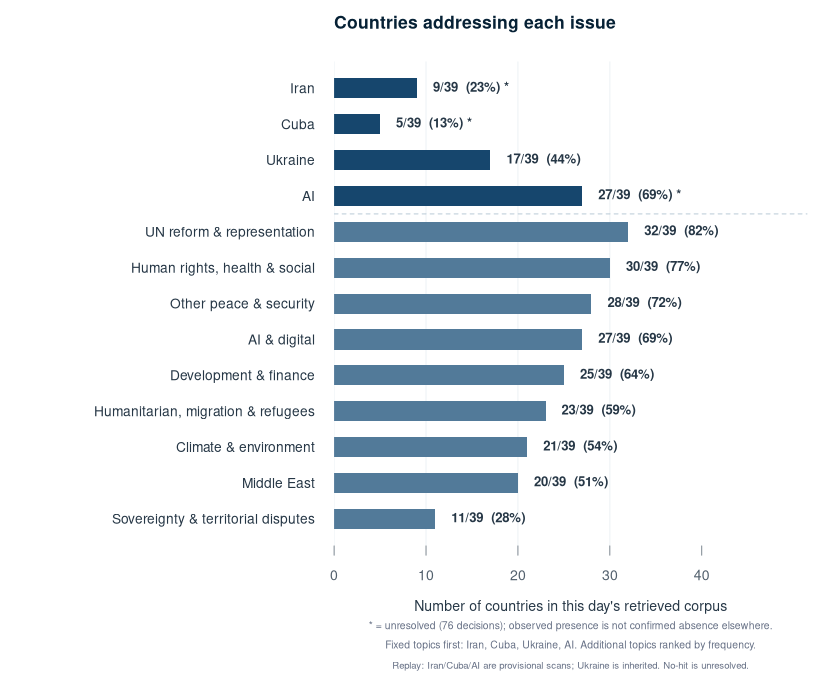
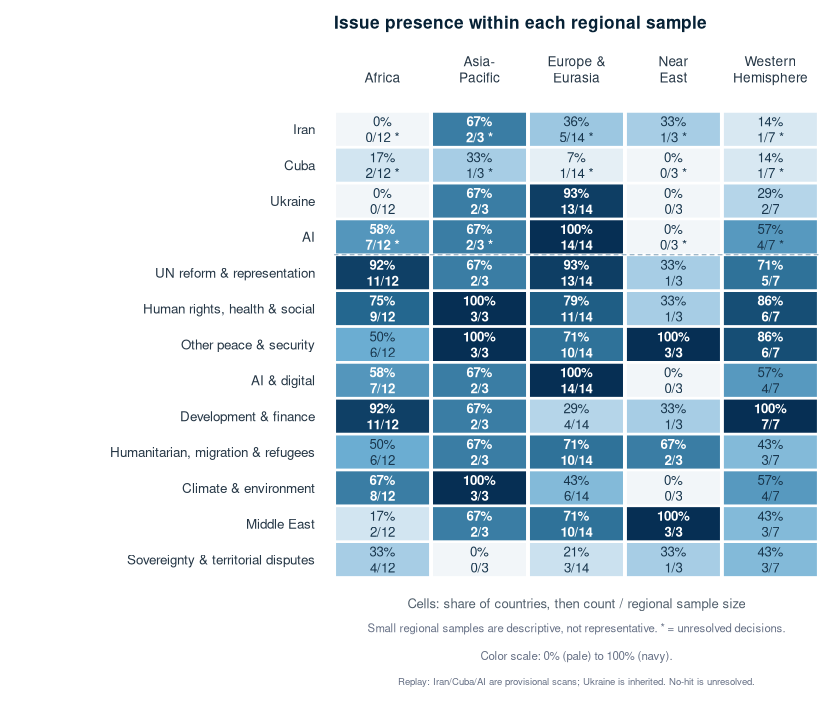
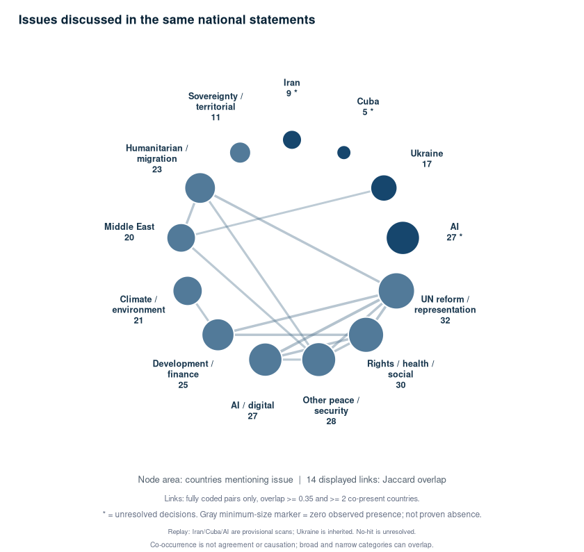
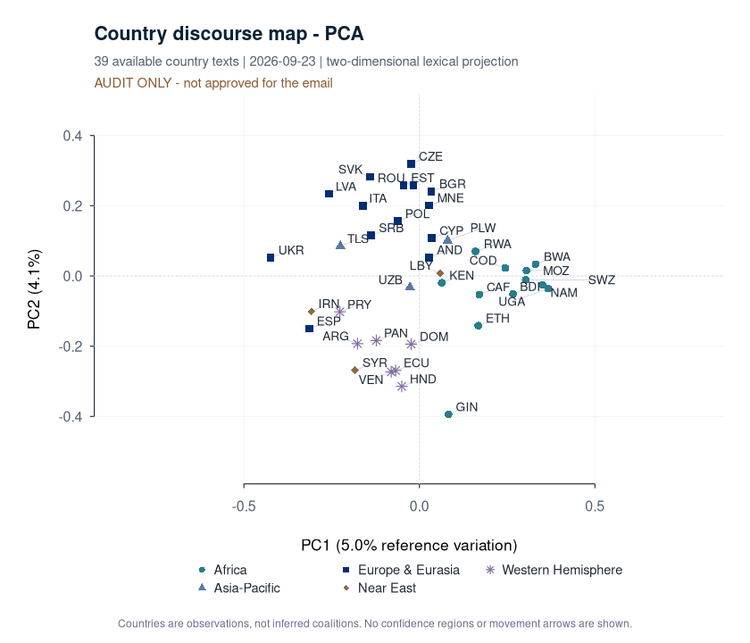
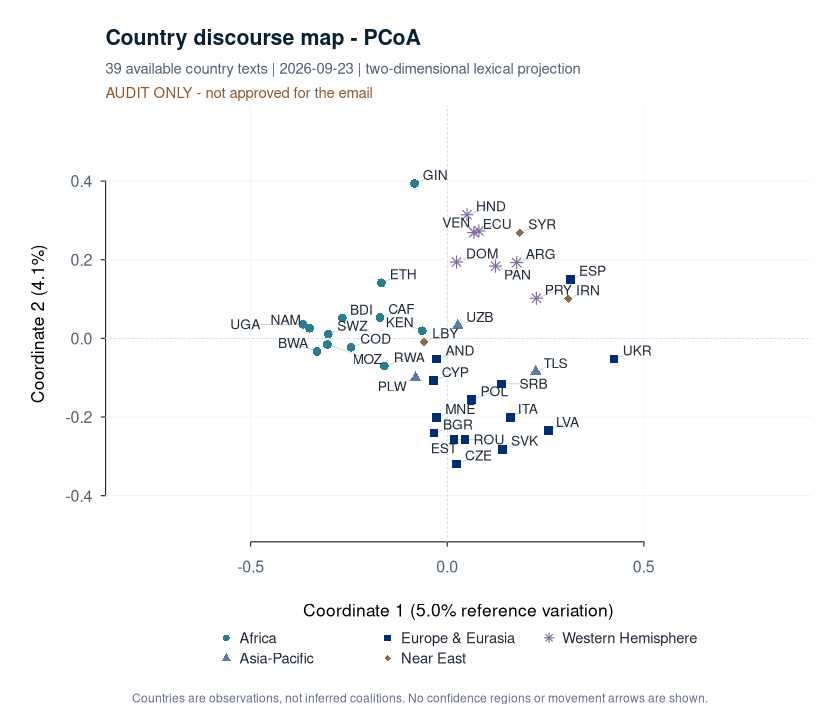
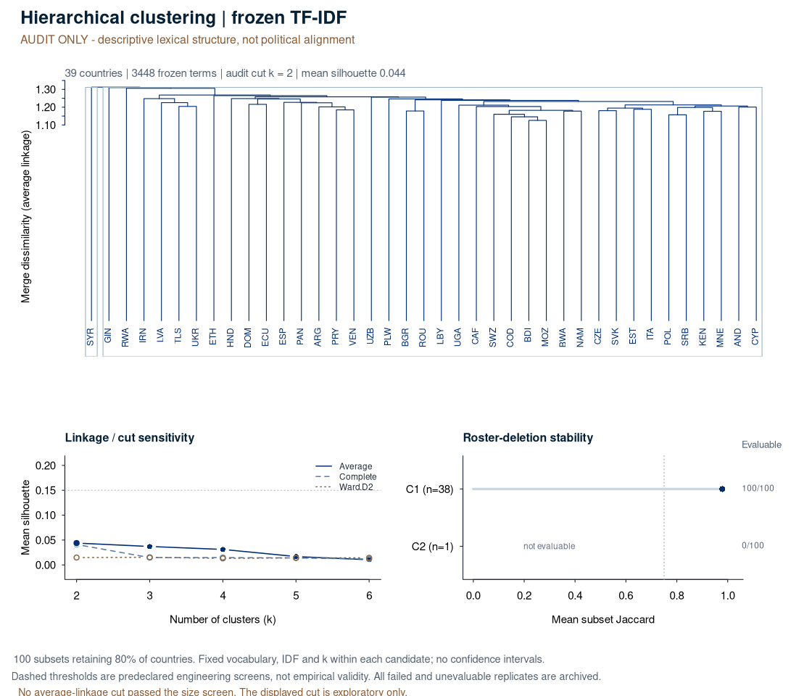

REPLAY
Source SHA-256: c7781919b579da95389a0392261b3e6cf0ab620eaee60182265bcfe0301730eb
Text SHA-256: 7a85f26859220723eec5bf6da46d9b62a46bf77a3d194462bad4fc3f694f345a
Analysis: inherited_review
Botswana congratulates the President of the 81st UN General Assembly, commends the outgoing President, and notes that the UN has never had a woman Secretary-General. It argues that restoring trust requires adherence to the UN Charter, international law, sovereignty, territorial integrity, equal dignity among nations, and dialogue as the primary tool of diplomacy. Drawing on its history since independence in 1966, Botswana presents its commitment to treaty obligations, rules-based multilateralism, regional mediation, and peaceful dispute settlement as essential safeguards for smaller states. It calls for action on climate change, youth unemployment, technology transfer, skills development, and capacity-building, while highlighting its stewardship of the Okavango Delta and Kalahari ecosystem and commitment to the 30-by-30 target. Botswana urges reform of global financial governance to give developing countries greater voice, fairer borrowing conditions, predictable concessional finance, and investment through innovative and blended financing. It cites its successful HIV/AIDS response, including achievement of the UNAIDS 95-95-95 targets and WHO silver-tier status for eliminating mother-to-child HIV transmission, as evidence that national ownership and international solidarity can overcome major challenges. Botswana also supports UN reform, stronger partnerships on counterterrorism and development, Security Council reform consistent with the Ezulwini Consensus and Sirte Declaration, and an inclusive global framework for emerging technologies and AI. It concludes by reaffirming its readiness to work with all Member States to ensure that multilateral commitments produce tangible gains in peace, security, development, health, and human dignity.
Supported UN80 but argued that efficiency savings should strengthen conflict prevention and delivery in program countries. Called for Security Council reform consistent with the common African position, including permanent representation for Africa and Latin America.
S069 President, Botswana supports reforms that strengthen the effectiveness, coherence, and responsiveness of the United Nations system.
S070 We also believe that efficiency gains should be redeployed to strengthen the capacity of the organization to prevent conflict, address emerging security threats, and deliver meaningful results in program countries in line with the UN80 vision.
S071 It is in this spirit that Botswana accords the highest priority to its partnerships with the United Nations Office of Counter-Terrorism, UN-Habitat, the International Trade Centre, the International Organization for Migration, among others.
S072 We particularly recognize UNOCT's leadership role in strengthening the United Nations' collective efforts to prevent and counter terrorism and violent extremism, and in translating international commitments into practical support for Member States.
S073 Botswana remains committed to further deepening its cooperation with UNOCT and the wider United Nations system through capacity-building, technical assistance, knowledge sharing, and the exchange of good practices.
S074 Such partnerships demonstrate that a responsive United Nations can build trust, strengthen national capacity, and foster peace and security.
S076 President, no reform agenda, including UN80, is complete without addressing the longstanding inequities within the Security Council.
S077 In this regard, Botswana reaffirms its support for comprehensive Security Council reform and aligns itself with the common African position as articulated in the Ezulwini Consensus and the Sirte Declaration.
S078 We believe that a Security Council that continues to exclude Africa and Latin America from permanent membership cannot credibly claim to reflect contemporary geopolitical realities.
Specifically called for preserving UNAIDS, citing its contribution to Botswana’s HIV response. Reported achievement of the 95-95-95 targets and offered to share lessons through South-South cooperation.
S059 President, health is where the promise of international solidarity is tested most directly, and Botswana speaks from hard-earned experience.
S060 Three decades ago, our country faced an HIV/AIDS pandemic of such severity that some questioned our long-term resilience.
S061 Through determined national leadership, bold public investment, and sustainable global partnership, Botswana built one of the world's most comprehensive HIV/AIDS treatment programs.
S062 We achieved the UNAIDS 95-95-95 targets ahead of schedule, and we became the first African country to achieve World Health Organization silver-tier status for the elimination of mother-to-child transmission of HIV.
S063 Our experience demonstrates that when national ownership and international solidarity converge, seemingly impossible challenges can be overcome.
S064 This kind of practical solidarity restores confidence in multilateralism.
S065 We stand ready to share the lessons of this experience through South-South and triangular cooperation.
S066 Botswana attaches particular importance to preserving UNAIDS, an indispensable partner in our national response through evidence-based policymaking, technical assistance, resource mobilization, and global advocacy.
S067 That partnership helped to mitigate an epidemic by means of one of the world's most successful national responses and placed Botswana firmly on the path towards ending HIV/AIDS as a public health threat by 2030.
Sought a stronger developing-country voice in financial governance, predictable concessional finance, blended investment, and funded technology-transfer and skills programs to address youth unemployment and climate-related needs.
S033 President, even as we work to restore trust, our world is transforming.
S034 Climate change is no longer tomorrow's warning.
S035 It is today's drought in Africa, floods in Asia, rising seas in the Pacific, and wildfires in Europe and the Americas.
S036 For Botswana, custodian of the Okavango Delta, a UNESCO World Heritage Site, and the Kalahari ecosystem, climate change directly affects livelihoods, water security, and biodiversity.
S037 Botswana remains committed to the 30 by 30 target and the sustainable management of our natural capital.
S039 President, Africa has the youngest population on Earth.
S040 That is an extraordinary asset if we invest in it.
S041 But what is a demographic dividend today can become a demographic crisis tomorrow if opportunity does not keep pace with aspiration.
S042 Youth unemployment remains one of the most urgent challenges of our time.
S043 Managing it is a shared responsibility.
S044 Botswana calls upon the United Nations Development Programme, the International Labour Organization, and all relevant multilateral institutions to make technology transfer, skills development, and capacity-building funded priorities.
S045 As we will all agree, the credibility of our multilateral commitments will be properly tested in development finance.
S046 When countries have the means to invest in their people, and when international institutions respond effectively to shared threats, trust is strengthened.
S047 But when commitments remain out of reach for those who need them most, confidence in the system weakens.
S048 Getting these fundamentals right is central to restoring trust, managing transformation, and building a United Nations that delivers for all.
S049 The global financial architecture must therefore evolve to reflect the economic realities of the 21st century, including financing demands created by climate change, technological transformation, and the imperative for sustainable development.
S050 Developing countries frequently face borrowing costs several times higher than those of wealthier nations because the system was not designed with the circumstances of the Global South in mind.
S051 Debt sustainability is a question of development and fairness.
S052 When nations spend more to service debt than to invest in education, job creation, or the provision of healthcare, trust in the system erodes.
S053 Botswana calls upon this Assembly and the international financial institutions to pursue reform of global financial governance.
S054 This would give developing countries a meaningful voice and provide fair and predictable access to concessional finance.
S055 We call upon the United Nations and its financial partners to mobilize private capital through innovative and blended financing agreements that de-risk productive investment in developing economies.
Supported an inclusive international framework for AI and emerging technologies, with developing countries helping set standards and safeguards rather than serving only as suppliers of critical resources.
S079 We also call on the United Nations to continue to explore the creation of an inclusive international framework on emerging technologies, including artificial intelligence.
S080 We recognize technology as a bridge that narrows global inequality.
S081 This extends to critical minerals, rare earths, and energy resources that power the technological revolution, many of which come from developing countries.
S082 Therefore, developing countries must have a meaningful voice in setting the standards and safeguards that will govern these technologies, ensuring that they expand opportunities, support decent work, and strengthen public services while protecting human dignity, rights, and security.
| Issue | Decision | Basis and evidence |
|---|---|---|
| iran | uncertain | New fixed topic was not coded in the inherited snapshot. No lexicon match; absence is NOT established. |
| cuba | uncertain | New fixed topic was not coded in the inherited snapshot. No lexicon match; absence is NOT established. |
| ukraine | absent | Inherited from the earlier 390-cell corpus coding; not newly semantically adjudicated. |
| ai | present | Provisional full-text lexicon match for a newly added fixed topic. Exact passage retained; no new semantic model review was performed. S079: We also call on the United Nations to continue to explore the creation of an inclusive international framework on emerging technologies, including artificial intelligence. |
| un_reform | present | Inherited from the earlier 390-cell corpus coding; not newly semantically adjudicated. |
| rights_social | present | Inherited from the earlier 390-cell corpus coding; not newly semantically adjudicated. |
| other_security | absent | Inherited from the earlier 390-cell corpus coding; not newly semantically adjudicated. |
| ai_digital | present | Inherited from the earlier 390-cell corpus coding; not newly semantically adjudicated. |
| development | present | Inherited from the earlier 390-cell corpus coding; not newly semantically adjudicated. |
| climate | present | Inherited from the earlier 390-cell corpus coding; not newly semantically adjudicated. |
| middle_east | absent | Inherited from the earlier 390-cell corpus coding; not newly semantically adjudicated. |
| humanitarian | present | Inherited from the earlier 390-cell corpus coding; not newly semantically adjudicated. |
| sovereignty | absent | Inherited from the earlier 390-cell corpus coding; not newly semantically adjudicated. |
Mr. President, Botswana warmly congratulates you on your election to preside over the 81st session of the United Nations General Assembly. We assure you of our full support as you shoulder this important responsibility. We also commend the outgoing President for her distinguished stewardship. Her tenure reminds us of an unfinished chapter in the history of this organization. Eight decades later, the United Nations has yet to be led by a woman as Secretary-General. Mr. President, the theme of this session, “Restoring Trust, Managing Transformation, a United Nations That Delivers for All,” aptly captures the central challenge before us. Restoring trust requires fidelity to the UN Charter and international law. Managing transformation requires institutions capable of adapting to a rapidly changing world. And delivering for all requires us to move beyond declarations towards tangible improvements in the lives and livelihoods of our peoples. Ultimately, our declarations, communiqués, and resolutions must travel the difficult road from this Assembly Hall to the daily lives of the peoples we represent. Persistent conflicts, geopolitical tensions, and growing divisions have tested trust between nations. Concurrently, our world is undergoing transformation driven by technology, climate change, demographic shifts, and changing patterns of economic power. The pertinent question is how we strengthen multilateralism so that the United Nations can deliver meaningful results for all Member States. Humanity has traveled far enough to know that, on the great challenges of our age, none of us can go it alone. Whether a nation of a billion people or, like Botswana, with just over two and a half million people, we share one fragile planet and one imperfect but irreplaceable United Nations. The choices we make will determine whether multilateralism restores trust, manages transformation, and delivers for all, or becomes a cautionary tale of promises made and forgotten. Botswana comes to this podium with the power and weight of genuine conviction. When Botswana gained independence in 1966, we carried a founding belief that our security and prosperity would come from disciplined integration into a community of nations governed by rules that all had agreed to honour. We honoured our treaty obligations and opened our economy in accordance with the norms of this organization. We regarded compliance with international law as one of Botswana's strongest protections. That is the tradition I bring to this podium, representing a nation staking its existence on the promise that shared rules, faithfully observed, remain humanity's best instrument for peace and prosperity. That tradition tests whether trust between nations, large and small, can be restored. Mr. President, restoring trust must begin with restoring respect: respect for sovereignty, territorial integrity, and the equal dignity of every nation, regardless of its size, wealth, or military power. For smaller states such as Botswana, a rule-based international order is an essential safeguard. It assures us that international relations will be governed by the strength of agreed principles. Botswana believes that rules that bind only the weak are not rules, and principles applied selectively soon cease to command respect. That is why Botswana calls on this General Assembly, the Security Council, and every organ of the United Nations to recommit to dialogue as the first instrument of diplomacy. Botswana has sought to live by this principle as host to the Southern African Development Community, SADC, Secretariat, through our contributions to regional mediation and election observation, and through our consistent commitment to the peaceful settlement of disputes. Mr. President, even as we work to restore trust, our world is transforming. Climate change is no longer tomorrow's warning. It is today's drought in Africa, floods in Asia, rising seas in the Pacific, and wildfires in Europe and the Americas. For Botswana, custodian of the Okavango Delta, a UNESCO World Heritage Site, and the Kalahari ecosystem, climate change directly affects livelihoods, water security, and biodiversity. Botswana remains committed to the 30 by 30 target and the sustainable management of our natural capital. Mr. President, Africa has the youngest population on Earth. That is an extraordinary asset if we invest in it. But what is a demographic dividend today can become a demographic crisis tomorrow if opportunity does not keep pace with aspiration. Youth unemployment remains one of the most urgent challenges of our time. Managing it is a shared responsibility. Botswana calls upon the United Nations Development Programme, the International Labour Organization, and all relevant multilateral institutions to make technology transfer, skills development, and capacity-building funded priorities. As we will all agree, the credibility of our multilateral commitments will be properly tested in development finance. When countries have the means to invest in their people, and when international institutions respond effectively to shared threats, trust is strengthened. But when commitments remain out of reach for those who need them most, confidence in the system weakens. Getting these fundamentals right is central to restoring trust, managing transformation, and building a United Nations that delivers for all. The global financial architecture must therefore evolve to reflect the economic realities of the 21st century, including financing demands created by climate change, technological transformation, and the imperative for sustainable development. Developing countries frequently face borrowing costs several times higher than those of wealthier nations because the system was not designed with the circumstances of the Global South in mind. Debt sustainability is a question of development and fairness. When nations spend more to service debt than to invest in education, job creation, or the provision of healthcare, trust in the system erodes. Botswana calls upon this Assembly and the international financial institutions to pursue reform of global financial governance. This would give developing countries a meaningful voice and provide fair and predictable access to concessional finance. We call upon the United Nations and its financial partners to mobilize private capital through innovative and blended financing agreements that de-risk productive investment in developing economies. This is enlightened fairness and sound economics. Capital should help create opportunity where its impact can be found. Mr. President, health is where the promise of international solidarity is tested most directly, and Botswana speaks from hard-earned experience. Three decades ago, our country faced an HIV/AIDS pandemic of such severity that some questioned our long-term resilience. Through determined national leadership, bold public investment, and sustainable global partnership, Botswana built one of the world's most comprehensive HIV/AIDS treatment programs. We achieved the UNAIDS 95-95-95 targets ahead of schedule, and we became the first African country to achieve World Health Organization silver-tier status for the elimination of mother-to-child transmission of HIV. Our experience demonstrates that when national ownership and international solidarity converge, seemingly impossible challenges can be overcome. This kind of practical solidarity restores confidence in multilateralism. We stand ready to share the lessons of this experience through South-South and triangular cooperation. Botswana attaches particular importance to preserving UNAIDS, an indispensable partner in our national response through evidence-based policymaking, technical assistance, resource mobilization, and global advocacy. That partnership helped to mitigate an epidemic by means of one of the world's most successful national responses and placed Botswana firmly on the path towards ending HIV/AIDS as a public health threat by 2030. Mr. President, Botswana supports reforms that strengthen the effectiveness, coherence, and responsiveness of the United Nations system. We also believe that efficiency gains should be redeployed to strengthen the capacity of the organization to prevent conflict, address emerging security threats, and deliver meaningful results in program countries in line with the UN80 vision. It is in this spirit that Botswana accords the highest priority to its partnerships with the United Nations Office of Counter-Terrorism, UN-Habitat, the International Trade Centre, the International Organization for Migration, among others. We particularly recognize UNOCT's leadership role in strengthening the United Nations' collective efforts to prevent and counter terrorism and violent extremism, and in translating international commitments into practical support for Member States. Botswana remains committed to further deepening its cooperation with UNOCT and the wider United Nations system through capacity-building, technical assistance, knowledge sharing, and the exchange of good practices. Such partnerships demonstrate that a responsive United Nations can build trust, strengthen national capacity, and foster peace and security. Mr. President, no reform agenda, including UN80, is complete without addressing the longstanding inequities within the Security Council. In this regard, Botswana reaffirms its support for comprehensive Security Council reform and aligns itself with the common African position as articulated in the Ezulwini Consensus and the Sirte Declaration. We believe that a Security Council that continues to exclude Africa and Latin America from permanent membership cannot credibly claim to reflect contemporary geopolitical realities. We also call on the United Nations to continue to explore the creation of an inclusive international framework on emerging technologies, including artificial intelligence. We recognize technology as a bridge that narrows global inequality. This extends to critical minerals, rare earths, and energy resources that power the technological revolution, many of which come from developing countries. Therefore, developing countries must have a meaningful voice in setting the standards and safeguards that will govern these technologies, ensuring that they expand opportunities, support decent work, and strengthen public services while protecting human dignity, rights, and security. Mr. President, I wish to reaffirm Botswana's commitment to multilateralism. We believe that shared challenges require shared solutions. We also believe that implementing the Pact for the Future, together with the UN80 initiative, offers an opportunity to translate our shared commitments into practical improvements in the functioning of the United Nations. In conclusion, Mr. President, I reemphasize that restoring trust, managing transformation, and delivering for all are interconnected. We restore trust when we uphold our commitments, respect the UN Charter, and apply international law consistently. We manage transformation when change creates opportunity rather than deepens inequality, when developing countries have a meaningful voice in shaping the system that affects their future, and when technological and economic progress serve humanity as a whole. And we deliver for all when our decisions translate into tangible improvements in peace, security, development, health, and human dignity. The difference our decisions make in the lives and livelihoods of people is the standard against which the credibility of the United Nations must be measured. Botswana is ready to work with all Member States. We may be small in size, but we are sturdy in principle. We offer partnership in governance that delivers experience in health innovation, responsible stewardship of natural and mineral resources, and an enduring preference for dialogue. Let us ensure that history remembers this 81st session for the trust we built, the promises kept, and the future created. I thank you.
Source SHA-256: d9cea979b5878f4871c2dd385a3cceaacca70348c3aeefe6f14572c07f9882eb
Text SHA-256: b6650672c688fbfc0b623affa1207ab3e6a6897dd3a22263df7fdd32ab31f17e
Analysis: inherited_review
Original source/review notes: The introduction to Vision 2040–2060 repeats at S106–S107.
Speaking as President of Burundi and Chairperson of the African Union, the speaker called for renewed multilateralism, reform of global governance, and a United Nations that places human dignity, justice, and equitable representation at its center. He emphasized that peace is the foundation of development and urged leaders to foster cohesion, Ubuntu, and trust within societies and among nations. The speaker said Africa must be more fully represented in global decision-making, including through permanent African representation on a reformed UN Security Council and equitable participation in the World Trade Organization. He criticized the perceived instrumentalization of the Human Rights Council and reiterated Burundi’s opposition to the Special Rapporteur on human rights in Burundi, while calling for equal application of international human rights law. He urged stronger -UN cooperation on conflict prevention and resolution, predictable financing for African-led peace operations, universal access to water and sanitation, reform of the international financial architecture, and increased climate adaptation finance and technology transfer. He stressed the need to involve youth and women fully in peace, development, and decision-making, while seeking fair partnerships that recognize African countries’ investments in educating young people. Finally, he outlined Burundi’s Vision 2040-2060 for economic and social transformation and called for partnerships based on solidarity, investment, technology transfer, and greater African ownership of solutions.
Speaking also as African Union Chairperson, called for permanent African representation on the Security Council, equitable participation in global trade governance, and predictable UN financing. Favored a transparent Secretary-General selection focused on qualifications, independence, and diplomatic ability.
S003 Secretary-General, Excellencies, Heads of State and Government, ladies and gentlemen, as President of the Republic of Burundi and the current Chairperson of the African Union, allow me first, on behalf of the people of Burundi and of Africa, to congratulate His Excellency Dr.
S004 Khalilur Rahman, President of the General Assembly of the United Nations, on his election and wish him every success in the fulfillment of his mandate.
S032 Excellencies, as an African and a voice for Africa at this time, and as I hold the rotating chairmanship of the African Union, I must also state the following.
S033 We are here to convey a conviction: Africa must be listened to more.
S034 It must be better represented and more closely involved in the decisions that shape the future of our planet.
S035 This is what must build trust between Africa and other continents, as well as with international institutions.
S036 We no longer wish to see the Human Rights Council become a forum for oppressing countries that are deliberately singled out because they defend and fight for the interests of their peoples.
S037 We want to see this Council working for justice and equity for all states without distinction.
S038 International human rights law must apply without exception to all states of the world, both in its corrective function and in its regulatory function.
S039 The Human Rights Council cannot be instrumentalized by other countries to the detriment of others, given that all member states of the United Nations enjoy a status of sovereign equality.
S040 Burundi wishes to reiterate once again its opposition to the imposition of a Special Rapporteur on the situation of human rights in Burundi, who was appointed without any prior dialogue or consultation.
S041 Burundi is a responsible country that respects human rights, has fought impunity for decades, upholds the rights and freedoms of all, and ensures security as well as the guarantee that crimes it has experienced in the past will not be repeated.
S043 President, Africa intends to be a full-fledged actor and not a mere observer called upon to applaud decisions in whose preparation it played no part.
S044 Africa is not seeking any privileges.
S045 It is demanding justice, equity, and representation.
S046 We therefore strongly reaffirm the need for reform of the United Nations Security Council in order to allow for permanent African representation and more equitable participation by the continent in the international community's decision-making mechanisms.
S047 In this regard, Burundi believes that discussions on reform must also address the financial viability of the United Nations system by strengthening the predictability, transparency, and sustainability of its financing.
S048 It would not be coherent to entrust the organization with ever-greater responsibilities without guaranteeing it the resources necessary for their implementation.
S049 We therefore call on member states, particularly the wealthiest, to demonstrate responsibility and solidarity in order to preserve the organization's financial stability.
S051 President, Excellencies, ladies and gentlemen, as part of this process of reform, strengthening, and consolidation of our organization, Burundi also wishes to contribute to the debate on the selection process for the next Secretary-General of the United Nations.
S052 In the current international context, marked by deep geopolitical divisions and growing challenges to multilateralism, this process must be conducted in a spirit of transparency, openness, and collective responsibility.
S053 Burundi believes that this process must be based above all on qualifications, experience, integrity, independence of judgment, diplomatic skill, and the ability to bring together the positions of all member states.
S054 We need a true bridge-builder, a leader capable of engaging in dialogue with all parties, of bringing positions closer together even when divergences appear insurmountable, but also of showing firmness, courage, and independence when it comes to defending the principles of the United Nations Charter and ensuring that the collective interest prevails.
S075 We must also empower Africa to play a more active role.
S076 Africa, with its 55 states and more than 1,400,000,000 inhabitants, cannot remain on the margins of the bodies that shape the rules of global trade.
S077 On behalf of the African Union, I reiterate our continent's call for full and equitable representation within the World Trade Organization.
S078 This is not a favor we are seeking.
S079 It is a demand for justice.
S080 It is also a guarantee of progress for the entire multilateral trading system.
S081 With the African Continental Free Trade Area, our continent has already demonstrated its capacity to develop rules and integrate markets.
S082 It is now up to global trade governance to draw on this.
Rejected the Special Rapporteur on Burundi and accused the Human Rights Council of selective, politicized scrutiny. These were the government’s characterizations, not independent findings.
S036 We no longer wish to see the Human Rights Council become a forum for oppressing countries that are deliberately singled out because they defend and fight for the interests of their peoples.
S037 We want to see this Council working for justice and equity for all states without distinction.
S038 International human rights law must apply without exception to all states of the world, both in its corrective function and in its regulatory function.
S039 The Human Rights Council cannot be instrumentalized by other countries to the detriment of others, given that all member states of the United Nations enjoy a status of sovereign equality.
S040 Burundi wishes to reiterate once again its opposition to the imposition of a Special Rapporteur on the situation of human rights in Burundi, who was appointed without any prior dialogue or consultation.
S041 Burundi is a responsible country that respects human rights, has fought impunity for decades, upholds the rights and freedoms of all, and ensures security as well as the guarantee that crimes it has experienced in the past will not be repeated.
Sought stronger AU-UN conflict prevention and predictable financing for African-led peace operations. Called for affordable development finance, climate adaptation support, technology transfer, and investment in safe water and sanitation.
S056 President, Excellencies, ladies and gentlemen, peace remains the primary condition for development.
S057 The African Union is deeply concerned by the persistence of conflicts and crises that continue to cause massive population displacement, destroy infrastructure, and deprive millions of children of their right to education and to a better future.
S058 We are paying particular attention to the situation in the Great Lakes region, in Sudan, in the Sahel, in Somalia, and in all regions facing violence and instability.
S059 We reaffirm our commitment to seeking African solutions to African problems in accordance with international law and the United Nations Charter.
S060 We therefore call for a strengthened partnership between the African Union and the United Nations in the prevention, mediation, and peaceful settlement of conflicts.
S061 Burundi, drawing on its experience, will continue to contribute to peace efforts on the continent.
S062 But we must go even further.
S063 As decided in Luanda at the 21st Extraordinary Session of the African Union Assembly of Heads of State and Government, Africa must not only learn to manage conflicts; it must strengthen its capacity to prevent them.
S064 We also call on the international community to lend greater support to African peace and security mechanisms, in particular through predictable and sustainable financing for African-led peace operations.
S066 President, Excellencies, ladies and gentlemen, I would be remiss if I were to address this august assembly without raising the issue of water.
S067 The African Union has designated 2026 as the year of assuring sustainable water availability and safe sanitation systems to achieve the goals of Agenda 2063.
S068 This choice is particularly significant because water is life, water is health, water is food security, water is energy, and water is also, in certain regions, a matter of peace and stability.
S069 We therefore call for stronger international mobilization in favor of universal access to safe drinking water and sanitation, particularly in rural areas and in the most vulnerable communities.
S070 We invite our partners to view water not merely as a natural resource, but as a strategic investment in peace, health, and sustainable development.
S071 Excellencies, with regard to socioeconomic development, achieving the Sustainable Development Goals and those of Agenda 2063 requires financial means that are commensurate with our ambitions.
S072 Yet, many developing countries face considerable budgetary constraints, high financing costs, and a heavy debt burden.
S073 We therefore call for a reform of the international financial architecture to make it more equitable, more inclusive, and better adapted to the realities of developing countries.
S074 Such a reform must, in particular, provide access to predictable, affordable, and sustainable financing, which is essential for accelerating the implementation of the SDGs and Agenda 2063.
S083 But in order to succeed, we must be more resilient in order to preserve an environment favorable to agriculture, a source of life and food security.
S084 Indeed, Mr.
S085 President, climate change strikes the most vulnerable populations particularly hard.
S086 Africa has contributed little to historical greenhouse gas emissions, yet it is already suffering severe consequences.
S087 We therefore call for stronger international solidarity on adaptation, climate financing, and technology transfer.
S088 Food security must become a strategic priority because no sustainable development is possible when millions of families lack sufficient and nutritious food.
Urged meaningful youth and women’s participation, fairer partnerships over recruitment of African-trained talent, and investment supporting Burundi’s ambitions to become an emerging economy by 2040 and a developed economy by 2060.
S089 In closing, I would like to raise the question of youth, the most precious asset on which the entire international community can and must rely.
S090 I speak today not only as a committed friend of young people, but also on the basis of a clear observation.
S091 Our intellectual youth has become the target of sustained, deliberate, and organized pursuit by most of the wealthiest nations, even though our youth's first calling should be to serve their parents, their loved ones, and their homeland, who have invested so much in their education.
S092 Many African states devote considerable resources to education, vocational training, entrepreneurship, science, digital technology, and innovation.
S093 Yet, while our African nations, such as Burundi, make these major sacrifices to build their future, these young talents are prematurely lured away by actors who offer better material and financial conditions without having needed to make any prior investment in their training.
S094 Let us be clear: it is imperative to establish a fair partnership so that our countries receive a fair return on the investments made in the education of our youth.
S095 The other actions we must all take also include giving young people a real voice in decision-making, peace, and development processes.
S096 Youth should not be regarded solely as beneficiaries of public policy.
S097 They must be integrated both upstream and downstream in the design and implementation of these policies.
S098 This is what would make it possible to create a secure future and restore hope to these young people.
S099 This emerged from the discussions at the fifth Continental Dialogue on Youth, Peace and Security, held in Bujumbura from August 10 to 12, 2026, a dialogue that highlighted the link between water, peace, conflict prevention, and inclusive leadership by young people and women.
S100 The discussions at this dialogue made it clear that there can be no lasting peace in Africa without the full, effective, and institutionalized participation of its youth.
S101 For too long, we have spoken of youth as a generation called upon to take the reins tomorrow.
S102 But African youth is not only the future of our continent; it must also be its present.
S103 We therefore call for strengthening the continental Youth, Peace and Security Agenda and providing it with resources commensurate with its ambitions.
S104 We have a duty to create more opportunities for young people to contribute to conflict prevention, mediation, reconciliation, and peacebuilding.
S105 As the current Chairperson of the African Union and the champion of the Youth, Peace and Security Agenda, I intend to continue championing this ambition.
S106 Finally, Excellencies, ladies and gentlemen, turning to Burundi, we are pleased to continue its economic and social transformation within the framework of its vision, Burundi 2040-2060.
S107 Finally, Excellencies, ladies and gentlemen, turning to Burundi, we are pleased to continue its economic and social transformation within the framework of its vision, Burundi 2040-2060.
S108 We are determined to transform our agriculture, develop our infrastructure, improve access to energy and water, strengthen education and health, and promote a dynamic private sector.
S109 Our ambition is for Burundi to be an emerging country by 2040 and a developed country by 2060.
S110 We invite our partners to support this transformation, not only through multifaceted assistance, but also through investment, technology transfer, capacity building, and the development of mutually beneficial partnerships.
| Issue | Decision | Basis and evidence |
|---|---|---|
| iran | uncertain | New fixed topic was not coded in the inherited snapshot. No lexicon match; absence is NOT established. |
| cuba | uncertain | New fixed topic was not coded in the inherited snapshot. No lexicon match; absence is NOT established. |
| ukraine | absent | Inherited from the earlier 390-cell corpus coding; not newly semantically adjudicated. |
| ai | uncertain | New fixed topic was not coded in the inherited snapshot. No lexicon match; absence is NOT established. |
| un_reform | present | Inherited from the earlier 390-cell corpus coding; not newly semantically adjudicated. |
| rights_social | present | Inherited from the earlier 390-cell corpus coding; not newly semantically adjudicated. |
| other_security | present | Inherited from the earlier 390-cell corpus coding; not newly semantically adjudicated. |
| ai_digital | absent | Inherited from the earlier 390-cell corpus coding; not newly semantically adjudicated. |
| development | present | Inherited from the earlier 390-cell corpus coding; not newly semantically adjudicated. |
| climate | present | Inherited from the earlier 390-cell corpus coding; not newly semantically adjudicated. |
| middle_east | absent | Inherited from the earlier 390-cell corpus coding; not newly semantically adjudicated. |
| humanitarian | absent | Inherited from the earlier 390-cell corpus coding; not newly semantically adjudicated. |
| sovereignty | absent | Inherited from the earlier 390-cell corpus coding; not newly semantically adjudicated. |
In the name of God, the Almighty, the Most Merciful. Distinguished President of the General Assembly, Mr. Secretary-General, Excellencies, Heads of State and Government, ladies and gentlemen, as President of the Republic of Burundi and the current Chairperson of the African Union, allow me first, on behalf of the people of Burundi and of Africa, to congratulate His Excellency Dr. Khalilur Rahman, President of the General Assembly of the United Nations, on his election and wish him every success in the fulfillment of his mandate. I would like to take this opportunity to extend my warmest congratulations and express my deepest gratitude to His Excellency Mr. António Guterres, Secretary-General of the United Nations, for the unwavering commitment and dedication he has demonstrated throughout his tenure in the service of peace, security, and sustainable development around the world. His good offices, exercised with wisdom, humility, and determination, have helped bridge the widest divergences of opinion and provided invaluable support to nations, particularly those in the Global South, in their quest for stability and prosperity. Burundi, which has always been able to count on the United Nations' generous support, wishes to commend his leadership and unwavering commitment to the principles of multilateralism. As he prepares to turn this important page of his life, I wish him, on my own behalf and on behalf of the entire Burundian people, every success in his new endeavors, as well as good health and a future filled with serenity and prosperity. Excellencies, ladies and gentlemen, the theme of this 81st session, “Restoring Trust, Managing Transformation, and a United Nations That Delivers for All,” comes at a time when our world faces multiple crises: aggression against states, internal armed conflicts fueled from outside, and expansionist conflicts that are breeding mistrust among states and rendering the international community unable to resolve these crises through peaceful means. In this context, a fundamental question arises: How can we restore trust in multilateralism and ensure that international institutions truly meet the expectations of all peoples? Our answer is clear. We must strengthen multilateralism, reform global governance, and place human dignity at the heart of our collective action. Excellencies, peace first. Peace is the source of all good: peace in our hearts, peace in our societies, peace in our countries. Let us begin by restoring peace within our own communities. Let us consolidate peace in our respective countries. Let us rebuild trust among our peoples and restore the image of humanity in our midst. This year, as Burundi holds the rotating chairmanship of the African Union, we are keenly aware of the responsibility that falls to us. As the African Union champion for the Youth, Peace and Security Agenda, I have this year once again convened a continental youth dialogue coupled with the Women, Peace and Security Agenda. During this dialogue, I sensed the enthusiasm of young people and women to build a community with a shared future in the spirit of Ubuntu. In these young people, I sense the desire to connect with one another and to live together side by side. But unfortunately, there are still states that prevent their citizens from living together with other peoples as brothers and sisters. They cultivate and perpetuate xenophobia and intolerance. They sow division by failing to implement preventive and corrective measures, by highlighting disparities in development, labeling some as rich and others as poor, and thereby creating a divide among peoples based on wealth and material possessions. On that basis, they have come to regard themselves as saints while reproaching others for being inferior. How, then, can we build trust among nations without first building connection and cohesion among our peoples? We, the leaders, must rekindle the spirit of Ubuntu within ourselves, the Ubuntu with which God created us. Indeed, God did not create a selfish man. He created a man of Ubuntu, the Ubuntu that I see in you and that you will find in me. Ubuntu is the common denominator that must restore trust among all human beings. Excellencies, as an African and a voice for Africa at this time, and as I hold the rotating chairmanship of the African Union, I must also state the following. We are here to convey a conviction: Africa must be listened to more. It must be better represented and more closely involved in the decisions that shape the future of our planet. This is what must build trust between Africa and other continents, as well as with international institutions. We no longer wish to see the Human Rights Council become a forum for oppressing countries that are deliberately singled out because they defend and fight for the interests of their peoples. We want to see this Council working for justice and equity for all states without distinction. International human rights law must apply without exception to all states of the world, both in its corrective function and in its regulatory function. The Human Rights Council cannot be instrumentalized by other countries to the detriment of others, given that all member states of the United Nations enjoy a status of sovereign equality. Burundi wishes to reiterate once again its opposition to the imposition of a Special Rapporteur on the situation of human rights in Burundi, who was appointed without any prior dialogue or consultation. Burundi is a responsible country that respects human rights, has fought impunity for decades, upholds the rights and freedoms of all, and ensures security as well as the guarantee that crimes it has experienced in the past will not be repeated. Mr. President, Africa intends to be a full-fledged actor and not a mere observer called upon to applaud decisions in whose preparation it played no part. Africa is not seeking any privileges. It is demanding justice, equity, and representation. We therefore strongly reaffirm the need for reform of the United Nations Security Council in order to allow for permanent African representation and more equitable participation by the continent in the international community's decision-making mechanisms. In this regard, Burundi believes that discussions on reform must also address the financial viability of the United Nations system by strengthening the predictability, transparency, and sustainability of its financing. It would not be coherent to entrust the organization with ever-greater responsibilities without guaranteeing it the resources necessary for their implementation. We therefore call on member states, particularly the wealthiest, to demonstrate responsibility and solidarity in order to preserve the organization's financial stability. Mr. President, Excellencies, ladies and gentlemen, as part of this process of reform, strengthening, and consolidation of our organization, Burundi also wishes to contribute to the debate on the selection process for the next Secretary-General of the United Nations. In the current international context, marked by deep geopolitical divisions and growing challenges to multilateralism, this process must be conducted in a spirit of transparency, openness, and collective responsibility. Burundi believes that this process must be based above all on qualifications, experience, integrity, independence of judgment, diplomatic skill, and the ability to bring together the positions of all member states. We need a true bridge-builder, a leader capable of engaging in dialogue with all parties, of bringing positions closer together even when divergences appear insurmountable, but also of showing firmness, courage, and independence when it comes to defending the principles of the United Nations Charter and ensuring that the collective interest prevails. Mr. President, Excellencies, ladies and gentlemen, peace remains the primary condition for development. The African Union is deeply concerned by the persistence of conflicts and crises that continue to cause massive population displacement, destroy infrastructure, and deprive millions of children of their right to education and to a better future. We are paying particular attention to the situation in the Great Lakes region, in Sudan, in the Sahel, in Somalia, and in all regions facing violence and instability. We reaffirm our commitment to seeking African solutions to African problems in accordance with international law and the United Nations Charter. We therefore call for a strengthened partnership between the African Union and the United Nations in the prevention, mediation, and peaceful settlement of conflicts. Burundi, drawing on its experience, will continue to contribute to peace efforts on the continent. But we must go even further. As decided in Luanda at the 21st Extraordinary Session of the African Union Assembly of Heads of State and Government, Africa must not only learn to manage conflicts; it must strengthen its capacity to prevent them. We also call on the international community to lend greater support to African peace and security mechanisms, in particular through predictable and sustainable financing for African-led peace operations. Mr. President, Excellencies, ladies and gentlemen, I would be remiss if I were to address this august assembly without raising the issue of water. The African Union has designated 2026 as the year of assuring sustainable water availability and safe sanitation systems to achieve the goals of Agenda 2063. This choice is particularly significant because water is life, water is health, water is food security, water is energy, and water is also, in certain regions, a matter of peace and stability. We therefore call for stronger international mobilization in favor of universal access to safe drinking water and sanitation, particularly in rural areas and in the most vulnerable communities. We invite our partners to view water not merely as a natural resource, but as a strategic investment in peace, health, and sustainable development. Excellencies, with regard to socioeconomic development, achieving the Sustainable Development Goals and those of Agenda 2063 requires financial means that are commensurate with our ambitions. Yet, many developing countries face considerable budgetary constraints, high financing costs, and a heavy debt burden. We therefore call for a reform of the international financial architecture to make it more equitable, more inclusive, and better adapted to the realities of developing countries. Such a reform must, in particular, provide access to predictable, affordable, and sustainable financing, which is essential for accelerating the implementation of the SDGs and Agenda 2063. We must also empower Africa to play a more active role. Africa, with its 55 states and more than 1,400,000,000 inhabitants, cannot remain on the margins of the bodies that shape the rules of global trade. On behalf of the African Union, I reiterate our continent's call for full and equitable representation within the World Trade Organization. This is not a favor we are seeking. It is a demand for justice. It is also a guarantee of progress for the entire multilateral trading system. With the African Continental Free Trade Area, our continent has already demonstrated its capacity to develop rules and integrate markets. It is now up to global trade governance to draw on this. But in order to succeed, we must be more resilient in order to preserve an environment favorable to agriculture, a source of life and food security. Indeed, Mr. President, climate change strikes the most vulnerable populations particularly hard. Africa has contributed little to historical greenhouse gas emissions, yet it is already suffering severe consequences. We therefore call for stronger international solidarity on adaptation, climate financing, and technology transfer. Food security must become a strategic priority because no sustainable development is possible when millions of families lack sufficient and nutritious food. In closing, I would like to raise the question of youth, the most precious asset on which the entire international community can and must rely. I speak today not only as a committed friend of young people, but also on the basis of a clear observation. Our intellectual youth has become the target of sustained, deliberate, and organized pursuit by most of the wealthiest nations, even though our youth's first calling should be to serve their parents, their loved ones, and their homeland, who have invested so much in their education. Many African states devote considerable resources to education, vocational training, entrepreneurship, science, digital technology, and innovation. Yet, while our African nations, such as Burundi, make these major sacrifices to build their future, these young talents are prematurely lured away by actors who offer better material and financial conditions without having needed to make any prior investment in their training. Let us be clear: it is imperative to establish a fair partnership so that our countries receive a fair return on the investments made in the education of our youth. The other actions we must all take also include giving young people a real voice in decision-making, peace, and development processes. Youth should not be regarded solely as beneficiaries of public policy. They must be integrated both upstream and downstream in the design and implementation of these policies. This is what would make it possible to create a secure future and restore hope to these young people. This emerged from the discussions at the fifth Continental Dialogue on Youth, Peace and Security, held in Bujumbura from August 10 to 12, 2026, a dialogue that highlighted the link between water, peace, conflict prevention, and inclusive leadership by young people and women. The discussions at this dialogue made it clear that there can be no lasting peace in Africa without the full, effective, and institutionalized participation of its youth. For too long, we have spoken of youth as a generation called upon to take the reins tomorrow. But African youth is not only the future of our continent; it must also be its present. We therefore call for strengthening the continental Youth, Peace and Security Agenda and providing it with resources commensurate with its ambitions. We have a duty to create more opportunities for young people to contribute to conflict prevention, mediation, reconciliation, and peacebuilding. As the current Chairperson of the African Union and the champion of the Youth, Peace and Security Agenda, I intend to continue championing this ambition. Finally, Excellencies, ladies and gentlemen, turning to Burundi, we are pleased to continue its economic and social transformation within the framework of its vision, Burundi 2040-2060. Finally, Excellencies, ladies and gentlemen, turning to Burundi, we are pleased to continue its economic and social transformation within the framework of its vision, Burundi 2040-2060. We are determined to transform our agriculture, develop our infrastructure, improve access to energy and water, strengthen education and health, and promote a dynamic private sector. Our ambition is for Burundi to be an emerging country by 2040 and a developed country by 2060. We invite our partners to support this transformation, not only through multifaceted assistance, but also through investment, technology transfer, capacity building, and the development of mutually beneficial partnerships. Vision 2040-2060 has now become a central framework for national development planning. The African Union and the United Nations share a particular responsibility in building a more peaceful and more just world. We must strengthen our partnership in the areas of peace and security, sustainable development, health, climate, youth, and global governance. The AU-UN partnership must be founded on mutual respect, complementarity, and greater African ownership of solutions to the continent's challenges. Africa wants to be a strategic partner and a full-fledged actor in multilateralism, not merely an area of intervention for the international community. As Burundi assumes the chairmanship of the African Union, it is choosing unity, solidarity, and action. We are choosing an Africa at peace, an Africa that is integrated, an Africa that feeds itself, and an Africa that transforms its resources; an Africa that empowers its youth to create and innovate; an Africa that is master of its own destiny. And we are choosing a renewed multilateralism in which every region, every people, and every nation counts. For Africa, we want a United Nations that is more representative, more effective, and closer to the peoples. We want an Africa that is better represented within global decision-making bodies. We want a global partnership founded not on dependency, but on solidarity, shared responsibility, and investment in the future. On behalf of the people of Burundi, and in our capacity as the chairperson of the African Union, we call on all our partners. Let us make this period of transformation an opportunity to build a more just world, a stronger Africa, and a better future for generations to come. Burundi and the African Union express the hope that the high-level debate of this 81st session of the United Nations General Assembly will mark a new beginning for a consolidated multilateralism, a United Nations in which every state and every region counts. Thank you.
Source SHA-256: 9db8989711265d01c06a116388189971f788a4035bd8af149a300522d01f6fa9
Text SHA-256: 4ebf88cc354fcd42238249c8ac84bddd5e84e710f19691cb3f0982444494f7bc
Analysis: inherited_review
Original source/review notes: The text reports 14 signatory groups and 11 disbanded, then refers to the last two groups; these counts do not reconcile on their face.
The Central African Republic warned that multiplying conflicts, weakened respect for international law, Security Council divisions, shrinking humanitarian funding, and reduced peacekeeping resources are placing the greatest burden on vulnerable populations. It argued that security, development, and stability are inseparable, and that abandoning fragile countries only postpones greater costs. Drawing on its own experience, the CAR defended inclusive political dialogue, negotiated disarmament, and reconciliation, noting that 11 of the 14 armed groups that signed the Political Agreement for Peace and Reconciliation have voluntarily disbanded and that others continue the process under the N'Djamena Accord. It called for a transparently managed, predictably financed global conflict-prevention and mediation mechanism, as well as climate justice, equitable health access, and support for the Congo Basin countries’ environmental services. The country highlighted its National Development Plan for 2024–2028, focused on security, governance, human capital, infrastructure, production, and environmental sustainability, while stressing the importance of youth and women in peacebuilding. It appealed for solidarity in addressing pressures from the Sudan conflict, including refugees in Birao, violence in Am Dafok, and tensions over water and land, and requested that any MINUSCA drawdown be gradual and based on conditions on the ground. The CAR also demanded Security Council reform to give Africa permanent representation, predictable financing for African-led peace operations, reforms to the international financial system, inclusive digital and AI governance, reparative justice for colonial harms, and respect for state sovereignty. It concluded by urging the United Nations to move from diagnosis to collective action during the 81st session.
Warned that aid and peacekeeping cuts undermine security and development. Requested a gradual, conditions-based MINUSCA drawdown using agreed criteria, realistic mandates, and predictable financing for UN and African-led operations.
S018 According to the UN itself, more than 147 million people in 19 countries and territories experienced acute food insecurity caused by conflict in 2025.
S019 And yet, at a time when need is soaring, resources are shrinking.
S020 Humanitarian funding has fallen to its lowest levels since 2016.
S021 Official development aid is crumbling.
S022 Peacekeeping operations, including in my own country, have been forced to cut back their patrols, shut down bases, and suspend local dialogue initiatives.
S023 Each budget cut adopted in New York or in some faraway capital is an opportunity for armed groups on the ground.
S024 The trap is an insidious one.
S025 A fragile country needs security to develop.
S026 It needs development for stability.
S027 When healthcare, education, roads, energy, and youth employment are placed on the back burner, it is not only the SDGs that move out of reach; peace itself is jeopardized.
S028 I would like to emphasize that abandoning fragile countries will not lead to savings.
S029 It is simply putting off a bill that will have to be paid with interest.
S066 The CAR, like all sovereign nations, aspires to take full charge of its own security.
S067 I say this with the same gravity: any drawdown of MINUSCA ought to be gradual, based on objective and agreed criteria, and not on an arbitrary timeline untethered from realities on the ground.
S069 President, the transformation that is the theme of this session is what we want, but we refuse to allow it to take place without Africa or while exploiting Africa.
S070 This transformation first requires bold Security Council reform.
S071 We cannot claim to represent the world of 2026 with the proportions of 1945.
S072 A continent of more than 1.3 billion inhabitants, whose crises make up a large portion of the Council’s work, ought to have at least one permanent seat on it.
S073 The Pact for the Future has opened a window.
S074 But two years after its adoption, negotiations on Security Council reform are still ongoing.
S075 The decision so urgently needed has yet to be made.
S076 The African position, represented for years by the Ezulwini Consensus and the Sirte Declaration, is not a favor we are asking for.
S077 It is a demand for justice and effectiveness.
S078 Transformation next requires peacekeeping operations with realistic mandates and predictable financing.
S079 We support strengthening the UN-African Union partnership, including through predictable financing for African-led operations.
Reported progress through dialogue and voluntary disarmament, renewed a proposal for a transparently managed global conflict-prevention and mediation mechanism, and sought support for Sudan-related displacement and pressure on border communities.
S030 The CAR understands this trap, and it also knows how to escape it.
S031 It has undergone trials that remain fresh in our memory and has learned a lesson: peace cannot be decreed.
S032 It must be built day after day through dialogue, justice, and shared development.
S033 No peace imposed by force can be lasting.
S034 Only a negotiated peace that is just and inclusive can truly restore trust between nations.
S035 That is why we made the difficult and often criticized choice of inclusive political dialogue, negotiated disarmament, and national reconciliation instead of a military response alone.
S036 This olive branch policy has led to tangible results that I would like to share with this Assembly.
S037 Out of the 14 armed groups that signed the Political Agreement for Peace and Reconciliation, 11 have already voluntarily disbanded as part of the disarmament, demobilization, reintegration, and repatriation program.
S038 The last two groups involved in this process are continuing the process of disbandment in accordance with the N'Djamena Accord.
S039 I say this with the conviction of lived experience: holding out one’s hand to yesterday’s opponent is not a sign of weakness.
S040 It is often the safest path toward lasting peace.
S041 That is why I renew the proposal that the CAR has been making for several sessions now: to establish a global conflict prevention and mediation mechanism with predictable financing and managed with complete transparency.
S059 President, my country, like so many others, is experiencing the impact of crises surrounding it, from refugee movements to pressure on our borders.
S060 The war in neighboring Sudan has pushed more than 27,000 refugees to settle around the city of Birao alone.
S061 The population of Birao has more than doubled, exerting intolerable pressure on water resources and already strained services.
S062 The town of Am Dafok experienced an escalation of violence last June that put more than 11,000 of our compatriots onto the streets.
S063 Meanwhile, the arrival of Sudanese livestock farmers fleeing with their flocks has inflamed new tensions with our rural populations over access to water and land, tensions that armed groups eagerly exploit.
S064 My country, with its legendary hospitality, is not complaining.
S065 We are asking for regional and international solidarity commensurate with the challenges we are facing.
Called for at least one permanent African Security Council seat and financial-system reform. Sought practical implementation of the Global Digital Compact, including affordable connectivity and developing-country participation in AI decisions.
S069 President, the transformation that is the theme of this session is what we want, but we refuse to allow it to take place without Africa or while exploiting Africa.
S070 This transformation first requires bold Security Council reform.
S071 We cannot claim to represent the world of 2026 with the proportions of 1945.
S072 A continent of more than 1.3 billion inhabitants, whose crises make up a large portion of the Council’s work, ought to have at least one permanent seat on it.
S073 The Pact for the Future has opened a window.
S074 But two years after its adoption, negotiations on Security Council reform are still ongoing.
S075 The decision so urgently needed has yet to be made.
S076 The African position, represented for years by the Ezulwini Consensus and the Sirte Declaration, is not a favor we are asking for.
S077 It is a demand for justice and effectiveness.
S078 Transformation next requires peacekeeping operations with realistic mandates and predictable financing.
S079 We support strengthening the UN-African Union partnership, including through predictable financing for African-led operations.
S080 Lastly, transformation requires an international financial architecture that stops penalizing fragile countries.
S081 These reforms are not favors.
S082 They are investments in the world’s stability.
S083 The UN must benefit all of its members.
S085 President, digital transformation and the rise of artificial intelligence are rightly considered to be among the great promises of our time.
S086 The Global Digital Compact must become a reality: affordable connectivity, skills transfer, data protection, and governance of AI in which developing countries make decisions instead of simply being users.
Requested accessible loss-and-damage and adaptation finance, compensation for Congo Basin ecosystem protection, equitable health access, and reparative measures addressing colonial harms.
S043 President, we cannot restore trust without tackling climate change with the same resolve.
S044 There cannot be lasting security without climate security.
S045 There cannot be climate security without climate justice.
S046 My country will bring three demands to the 31st Conference of the Parties in Antalya, Turkey: that the loss and damage fund become fully operational and accessible; that adaptation financing should no longer be the forgotten stepchild of climate finance; and that the countries of the Congo Basin, the second largest lung of the planet, should finally be justly compensated for the services they provide to humanity by protecting their ecosystems.
S047 This demand for justice also applies to global health.
S048 We call for equitable access to vaccines and healthcare technologies and for strengthening health systems in the most vulnerable countries.
S087 Transformation also requires facing history with lucidity.
S088 The wounds left behind by colonization are still being felt on our continent.
S089 Reparations are not simply reopening a feud of the past.
S090 They are a demand for justice for the future: recognition of the wrongs committed, restitution of cultural goods and archives, equitable cooperation, and debt relief.
S091 There are many possible paths.
S092 The African Union has prioritized this, and the CAR fully supports these efforts.
S093 Transformation calls for real respect for the sovereignty of states.
S094 Sanctions and restrictions must be tools for peace and must be adjusted in accordance with the progress made.
S095 They must not be retaliatory measures serving geopolitical interests.
| Issue | Decision | Basis and evidence |
|---|---|---|
| iran | uncertain | New fixed topic was not coded in the inherited snapshot. No lexicon match; absence is NOT established. |
| cuba | uncertain | New fixed topic was not coded in the inherited snapshot. No lexicon match; absence is NOT established. |
| ukraine | absent | Inherited from the earlier 390-cell corpus coding; not newly semantically adjudicated. |
| ai | present | Provisional full-text lexicon match for a newly added fixed topic. Exact passage retained; no new semantic model review was performed. S085: President, digital transformation and the rise of artificial intelligence are rightly considered to be among the great promises of our time. S086: The Global Digital Compact must become a reality: affordable connectivity, skills transfer, data protection, and governance of AI in which developing countries make decisions instead of simply being users. |
| un_reform | present | Inherited from the earlier 390-cell corpus coding; not newly semantically adjudicated. |
| rights_social | present | Inherited from the earlier 390-cell corpus coding; not newly semantically adjudicated. |
| other_security | present | Inherited from the earlier 390-cell corpus coding; not newly semantically adjudicated. |
| ai_digital | present | Inherited from the earlier 390-cell corpus coding; not newly semantically adjudicated. |
| development | present | Inherited from the earlier 390-cell corpus coding; not newly semantically adjudicated. |
| climate | present | Inherited from the earlier 390-cell corpus coding; not newly semantically adjudicated. |
| middle_east | absent | Inherited from the earlier 390-cell corpus coding; not newly semantically adjudicated. |
| humanitarian | present | Inherited from the earlier 390-cell corpus coding; not newly semantically adjudicated. |
| sovereignty | absent | Inherited from the earlier 390-cell corpus coding; not newly semantically adjudicated. |
Distinguished President of the General Assembly, distinguished Secretary-General, Excellencies, ladies and gentlemen, I take the floor on behalf of the Central African Republic with a full sense of the responsibility bestowed by this podium and the pride of a people that has never given up hope. Mr. President, this session is taking place at a time of a twofold need: to restore trust and to manage transformation, and to understand the urgent need for action. Let us first look at the world as it is. It has been a long time since peace has seemed so fragile. On all continents, conflicts are multiplying, becoming entrenched, and fueling one another. Each has its reasons, its history, and its instigators. But they all have one thing in common: they are costing civilian lives, destroying schools and hospitals, and displacing entire families. These crises never remain contained. Disruptions around the Strait of Hormuz are causing energy and fertilizer prices to skyrocket. Forced migration routes are becoming increasingly crowded. Terrorism, trafficking, and armed groups are flourishing in zones beyond state control. However far they may be from the front line, no state is safe from the repercussions of these conflicts. At the same time, divisions within the Security Council, the body charged with protecting international peace and security, are paralyzing action where it is most urgently needed. International law is supposed to protect the weak from the ambitions of the powerful, yet it is increasingly being dismissed as optional. This is the paradox of our time: we have never had so many reasons to act together, and we have never found it so difficult to do so. This paradox comes with a price, and this price is primarily being paid by the most vulnerable. According to the UN itself, more than 147 million people in 19 countries and territories experienced acute food insecurity caused by conflict in 2025. And yet, at a time when need is soaring, resources are shrinking. Humanitarian funding has fallen to its lowest levels since 2016. Official development aid is crumbling. Peacekeeping operations, including in my own country, have been forced to cut back their patrols, shut down bases, and suspend local dialogue initiatives. Each budget cut adopted in New York or in some faraway capital is an opportunity for armed groups on the ground. The trap is an insidious one. A fragile country needs security to develop. It needs development for stability. When healthcare, education, roads, energy, and youth employment are placed on the back burner, it is not only the SDGs that move out of reach; peace itself is jeopardized. I would like to emphasize that abandoning fragile countries will not lead to savings. It is simply putting off a bill that will have to be paid with interest. The CAR understands this trap, and it also knows how to escape it. It has undergone trials that remain fresh in our memory and has learned a lesson: peace cannot be decreed. It must be built day after day through dialogue, justice, and shared development. No peace imposed by force can be lasting. Only a negotiated peace that is just and inclusive can truly restore trust between nations. That is why we made the difficult and often criticized choice of inclusive political dialogue, negotiated disarmament, and national reconciliation instead of a military response alone. This olive branch policy has led to tangible results that I would like to share with this Assembly. Out of the 14 armed groups that signed the Political Agreement for Peace and Reconciliation, 11 have already voluntarily disbanded as part of the disarmament, demobilization, reintegration, and repatriation program. The last two groups involved in this process are continuing the process of disbandment in accordance with the N'Djamena Accord. I say this with the conviction of lived experience: holding out one’s hand to yesterday’s opponent is not a sign of weakness. It is often the safest path toward lasting peace. That is why I renew the proposal that the CAR has been making for several sessions now: to establish a global conflict prevention and mediation mechanism with predictable financing and managed with complete transparency. Mr. President, we cannot restore trust without tackling climate change with the same resolve. There cannot be lasting security without climate security. There cannot be climate security without climate justice. My country will bring three demands to the 31st Conference of the Parties in Antalya, Turkey: that the loss and damage fund become fully operational and accessible; that adaptation financing should no longer be the forgotten stepchild of climate finance; and that the countries of the Congo Basin, the second largest lung of the planet, should finally be justly compensated for the services they provide to humanity by protecting their ecosystems. This demand for justice also applies to global health. We call for equitable access to vaccines and healthcare technologies and for strengthening health systems in the most vulnerable countries. Restoring trust, Mr. President, is not limited to interstate relations. First and foremost, it is built within our own borders, between the state and its citizens. This is the goal of our National Development Plan 2024–2028, which has five pillars: security and governance, human capital, resilient infrastructure, economic production, and environmental sustainability. These pillars are not only a planning framework, but also a social contract with our population. At the heart of this ambition lies our youth. Our youth is our greatest asset and our greatest responsibility. Well-trained and employed youth involved in decision-making are the best guarantee against recruitment by armed groups. The same is true for women, whose role in peacebuilding is not a bonus, but a prerequisite. Mr. President, my country, like so many others, is experiencing the impact of crises surrounding it, from refugee movements to pressure on our borders. The war in neighboring Sudan has pushed more than 27,000 refugees to settle around the city of Birao alone. The population of Birao has more than doubled, exerting intolerable pressure on water resources and already strained services. The town of Am Dafok experienced an escalation of violence last June that put more than 11,000 of our compatriots onto the streets. Meanwhile, the arrival of Sudanese livestock farmers fleeing with their flocks has inflamed new tensions with our rural populations over access to water and land, tensions that armed groups eagerly exploit. My country, with its legendary hospitality, is not complaining. We are asking for regional and international solidarity commensurate with the challenges we are facing. The CAR, like all sovereign nations, aspires to take full charge of its own security. I say this with the same gravity: any drawdown of MINUSCA ought to be gradual, based on objective and agreed criteria, and not on an arbitrary timeline untethered from realities on the ground. Mr. President, the transformation that is the theme of this session is what we want, but we refuse to allow it to take place without Africa or while exploiting Africa. This transformation first requires bold Security Council reform. We cannot claim to represent the world of 2026 with the proportions of 1945. A continent of more than 1.3 billion inhabitants, whose crises make up a large portion of the Council’s work, ought to have at least one permanent seat on it. The Pact for the Future has opened a window. But two years after its adoption, negotiations on Security Council reform are still ongoing. The decision so urgently needed has yet to be made. The African position, represented for years by the Ezulwini Consensus and the Sirte Declaration, is not a favor we are asking for. It is a demand for justice and effectiveness. Transformation next requires peacekeeping operations with realistic mandates and predictable financing. We support strengthening the UN-African Union partnership, including through predictable financing for African-led operations. Lastly, transformation requires an international financial architecture that stops penalizing fragile countries. These reforms are not favors. They are investments in the world’s stability. The UN must benefit all of its members. Mr. President, digital transformation and the rise of artificial intelligence are rightly considered to be among the great promises of our time. The Global Digital Compact must become a reality: affordable connectivity, skills transfer, data protection, and governance of AI in which developing countries make decisions instead of simply being users. Transformation also requires facing history with lucidity. The wounds left behind by colonization are still being felt on our continent. Reparations are not simply reopening a feud of the past. They are a demand for justice for the future: recognition of the wrongs committed, restitution of cultural goods and archives, equitable cooperation, and debt relief. There are many possible paths. The African Union has prioritized this, and the CAR fully supports these efforts. Transformation calls for real respect for the sovereignty of states. Sanctions and restrictions must be tools for peace and must be adjusted in accordance with the progress made. They must not be retaliatory measures serving geopolitical interests. Mr. President, we are at a crossroads. We have our diagnoses. It is now time for decisions. That is why the CAR calls upon the UN to act. Saving the world is not a task for one nation or one continent. It is through our collective will to act that this 81st session can be one in which we stop taking stock and begin taking action. Thank you for your kind attention.
Source SHA-256: 2348c5808e142d1fe4c34b88ff6edfacd1f96308d001dfa3a58d0dc47b4b9b0d
Text SHA-256: a9163a90469e035336fcb7abbf9818919407313702fabd53173f47831142672b
Analysis: inherited_review
Original source/review notes: Near-duplicate corridor sentences at S100–S101 are consolidated. An apparently mistranscribed OIF candidate name is not reproduced.
The Democratic Republic of Congo reaffirmed its commitment to multilateralism grounded in the equal application of international law, respect for sovereignty, territorial integrity, peace, justice, and human dignity, while calling for United Nations institutions to reflect current global realities. It urged greater representation for Africa in global governance, including two permanent Security Council seats with veto rights while such rights exist and two additional non-permanent seats, in line with the Ezulwini Consensus and Sirte Declaration. The DRC condemned what it described as Rwanda’s aggression through the AFC/M23 and highlighted atrocities by other armed groups, calling for implementation of Security Council Resolution 2773, the withdrawal of Rwandan forces, an end to support for armed groups, and continued MONUSCO support based on security conditions. It emphasized diplomacy through the Washington agreement, Doha process, and African Union roadmap, while noting measures toward disarmament and repatriation of FDLR combatants and pursuing national dialogue, institutional reform, and reconstruction. The speech presented the DRC as a major producer of cobalt and copper seeking to move beyond raw-material extraction through local processing, fairer critical-mineral supply chains, stronger mining governance, and the elimination of child labor in mines. It also described domestic priorities including free primary education, expanded health coverage, Ebola response, climate resilience, protection of the Congo Basin, and the Kivu-Kinshasa Green Corridor. Finally, the DRC called for accessible climate finance, increased development financing and debt relief, tax justice and recovery of stolen assets, arguing that global transformation must distribute benefits equitably and uphold the sovereignty and dignity of all peoples.
Accused Rwanda of aggression through AFC/M23 and demanded implementation of Security Council resolution 2773. Welcomed U.S., Qatari, and AU diplomacy but sought deadlines, independent verification, and consequences for violations; said MONUSCO changes must depend on security conditions.
S043 President, few situations illustrate so painfully the gap between international commitments and lived reality as that of the east of the DRC.
S044 For more than three decades, millions of Congolese have been suffering attacks, forced displacement, and bereavement.
S045 Territories have been occupied, families dispersed, women and girls have suffered sexual violence, while children are recruited by armed groups or deprived of education.
S046 At the same time, the looting of our resources continues to fuel international trade.
S047 My country continues to face a war of aggression led by Rwanda through its proxy, the AFC/M23, in violation of its sovereignty, our sovereignty, and our territorial integrity, as documented by the UN.
S048 The atrocities committed by other armed groups, especially the ADF and CODECO, are exacerbating this humanitarian crisis even further.
S049 To combat this challenge, the DRC has chosen the path of diplomacy without ever abandoning its rights.
S050 The peace agreement signed in Washington on June 27, 2025, the commitments made as part of the Doha process, and the roadmap coordinated by the African Union have opened up prospects that we have constantly supported.
S051 I commend the United States, Qatar, the African Union, African facilitators, regional partners, and all those who are sincerely striving to restore peace.
S052 However, for the sake of truth, we must recognize that for millions of Congolese, this peace remains only a promise.
S053 Resolution 2773 of the Security Council has laid out an unambiguous path.
S054 It calls for an effective cessation of hostilities, the withdrawal of Rwandan forces from Congolese territory, an end to all support for armed groups, the disengagement of the AFC/M23, the dismantling of parallel administrations, the restoration of state authority, unhindered humanitarian access, and the safe and dignified return of displaced persons and refugees.
S055 But we do not need new texts to replace those that have already been adopted.
S056 What we need is their implementation.
S057 With regard to the issue of the Democratic Liberation Forces of Rwanda, the FDLR, long cited by Kigali to justify its military presence in our territory, the DRC is shouldering its responsibility.
S058 The protocol signed by the political and military leadership of the FDLR on May 30, 2026, provides for the disarmament, demobilization, and containment of their combatants with a view toward their repatriation or resettlement, without prejudice to potential judicial prosecution for serious crimes, until the movement is disbanded.
S059 The repatriation on September 8, with the support of MONUSCO, of 120 persons associated with the FDLR is a first testament to the protocol's implementation.
S060 The issue of the FDLR, therefore, should no longer serve as a pretext for maintaining a foreign military presence in our territory.
S061 The coordinated implementation of the mechanisms of Washington, Doha, and the African Union must be subject to a precise time frame, independent verification, regular information exchange, and clear consequences in case of violations.
S062 In this context, MONUSCO maintains a vital role in protecting civilians, monitoring the ceasefire, and supporting agreed-upon mechanisms.
S063 Any change to its presence must be determined by the conditions of security on the ground, the strengthening of national capacity, and the guarantee that no vacuum of power will remain to the detriment of populations.
Reported steps toward FDLR disarmament and repatriation, security-sector reform, and national dialogue, while rejecting any framing of the conflict as solely an internal dispute.
S057 With regard to the issue of the Democratic Liberation Forces of Rwanda, the FDLR, long cited by Kigali to justify its military presence in our territory, the DRC is shouldering its responsibility.
S058 The protocol signed by the political and military leadership of the FDLR on May 30, 2026, provides for the disarmament, demobilization, and containment of their combatants with a view toward their repatriation or resettlement, without prejudice to potential judicial prosecution for serious crimes, until the movement is disbanded.
S059 The repatriation on September 8, with the support of MONUSCO, of 120 persons associated with the FDLR is a first testament to the protocol's implementation.
S060 The issue of the FDLR, therefore, should no longer serve as a pretext for maintaining a foreign military presence in our territory.
S061 The coordinated implementation of the mechanisms of Washington, Doha, and the African Union must be subject to a precise time frame, independent verification, regular information exchange, and clear consequences in case of violations.
S062 In this context, MONUSCO maintains a vital role in protecting civilians, monitoring the ceasefire, and supporting agreed-upon mechanisms.
S063 Any change to its presence must be determined by the conditions of security on the ground, the strengthening of national capacity, and the guarantee that no vacuum of power will remain to the detriment of populations.
S064 The DRC, for its part, will continue to fully shoulder its responsibility, especially through pursuing reforms of its defense and security institutions, bolstering state authority, and reconstruction in territories affected by conflict.
S065 And because the peace sought in the sub-region ought to go hand in hand with cohesion within our nation, the President of the DRC launched on August 28 a national dialogue for peace, cohesion, and the rebuilding of the state.
S066 This dialogue is open to the political and social forces that are committed to the Republic, our Constitution, our territorial integrity, and the rejection of violence.
S067 It does not aim to circumvent institutions nor to distribute power.
S068 It ought to help us address the structural causes of our vulnerabilities, consolidate national unity, and build a state that is more just, more involved, and more protective.
S069 Our hand remains outstretched toward all the children of Congo who choose peace, republican debate, and loyalty to their homeland.
S070 We Congolese speak to each other with frankness and responsibility, but no internal dialogue can transform an external aggression into a simple domestic dispute.
S071 At the same time, no external aggression should absolve us of correcting our own weaknesses.
S072 National cohesion and the defense of our territorial integrity are not mutually exclusive, but mutually complementary.
Proposed a UN-AU framework for fair, traceable critical-mineral value chains, local processing, and technology transfer. Sought elimination of child labor in mines and a Lobito Corridor that supports industrialization rather than raw-material exports alone.
S075 President, it is another paradox that my country's experience is showing the world: some of its resources that fuel conflicts on its territory are also those upon which a growing proportion of the transformation of the global economy depends.
S076 The governance of strategic resources ought to be an issue of peace, development, and global security from now on.
S077 The energy transition, the electrification of transport, energy storage, as well as the expansion of digital and AI infrastructure, are accelerating demand for copper, cobalt, lithium, nickel, and other critical minerals.
S078 As the largest global producer of cobalt and a major copper-producing power, the DRC is at the heart of this transformation.
S079 Congolese cobalt is already being used in batteries, power grids, digital equipment, and technologies that are crucial for the decarbonization of the global economy.
S080 It would be both unjust and dangerous for added value, jobs, know-how, and technologies to remain concentrated far away from the communities that are making these changes possible.
S081 We cannot build a decarbonized economy through bloodstained minerals, and we will not bring about a just transition by reproducing a greenwashed version of our past dependencies.
S082 The DRC therefore rejects the old model that limits producer countries to crude extraction while processing, research, technology, and the bulk of the profits are concentrated elsewhere.
S083 Our ambition is clear.
S084 We no longer wish to be simply the basement of the world's economy.
S085 We plan to become a workshop, a laboratory, and a sovereign partner.
S086 We would like to further transform cobalt and copper, process more cobalt and copper on our territory, develop precursors for batteries and industrial components, train our engineers, support our researchers, and include our enterprises in global value chains.
S087 We would like to build, together with our African and international partners, competitive regional businesses that create jobs, skills, and shared prosperity.
S088 This ambition, first and foremost, entails taking up our own responsibilities.
S089 The DRC is pursuing the modernization of mining governance through the transparency of contracts, extractive revenue, and beneficial ownership; improving mining registries; deploying traceability mechanisms; and fighting fraud.
S090 We are also accelerating the formalization of small-scale mining, the regulation of traders, the organization of cooperatives, and the securing of exploitation zones.
S091 The battle against child labor in mines, in this regard, is a moral and national obligation.
S092 Together with the International Labour Organization, UNICEF, and our other partners, we are strengthening our identification, monitoring, and remediation mechanisms, as well as the training of our inspectors, children's school attendance, and economic solutions for their families.
S093 Our goal is unambiguous: we need to achieve zero children in the mines.
S094 This responsibility lies with the Congolese state, but it also involves businesses, traders, refiners, manufacturers, financial institutions, and destination markets.
S095 The real proof of a responsible supply chain is not the electric vehicle sold downstream; it is the child who no longer descends into the mines upstream.
S096 That is why the DRC proposes creating, under UN auspices and together with the African Union, as well as producer, processor, and consumer countries, a global framework for just, traceable, and resilient critical mineral value chains based upon the sovereignty of producer states.
S097 It ought to guarantee the traceability of minerals, the responsibility of economic actors, the protection of workers and communities, as well as a more equitable sharing of added value thanks to local processing and technology transfer.
S098 The Lobito Corridor ought to become one of the tools to further this ambition.
S099 We commend the commitment of Angola, Zambia, the USA, the European Union, the African Development Bank, financial institutions, and the private sector to promote its implementation.
S100 The rehabilitation of railway links, the modernization of infrastructure, the facilitation of exchange, and energy investments can connect our territories, reduce logistical costs, and stimulate regional trade.
S101 The rehabilitation of railway links, the modernization of infrastructure, the facilitation of exchanges, and energy investments can connect our territories, reduce logistical costs, and stimulate regional trade.
S102 But our vision goes far beyond accelerating the export of our raw materials.
S103 A corridor that only shortens the path from the mine to the port only reproduces the past.
S104 The Lobito Corridor ought to become a real backbone for regional industrialization, with the support of investors, with whom we hope to build transparent, sustainable, and mutually beneficial partnerships for the well-being of future generations.
Supported two permanent African Security Council seats with veto rights while the veto exists, plus two additional elected seats. Backed the UN AI governance dialogue and a global capacity-building fund.
S025 Artificial intelligence today offers one of the most striking examples of this.
S026 It has immense potential, but also poses risks of new fractures.
S027 Its governance should not be the sole remit of certain powers or corporations.
S028 Developing countries ought to be able to participate in defining its rules and to access the capacities that determine its use.
S029 The DRC supports the UN global dialogue on AI governance, as well as the creation of a global capacity-building fund.
S030 The digital divide must not become an intelligence divide.
S031 This need for inclusion ought first and foremost to be reflected in global governance.
S032 Africa has proven itself over time to be a demographic, diplomatic, and geopolitical power, a vital one, but it still remains inadequately represented where decisions are being made about the world's future.
S033 How can we fail to mention the historic anomaly that is the absence of Africa among the permanent members of the Security Council?
S034 The admission of the African Union to the G20 is certainly a major step in the right direction.
S035 However, it is not sufficient to meet this need for representation.
S036 As a member of the Security Council for 2026–2027, we reaffirm our support for the common African position enshrined in the Ezulwini Consensus and the Sirte Declaration, that is to say, two permanent seats for Africa with all of the associated privileges, including veto rights as long as they exist, and two additional non-permanent seats, in order to make the Council more representative, more legitimate, and ultimately more effective.
Highlighted education, health coverage, and Ebola-response efforts; sought accessible climate finance, debt relief, and recovery of stolen assets, and proposed an African Coalition for Water Security.
S106 President, as you have understood, the transformation we are calling for at the UN is one we have chosen to launch first at home, convinced that by investing in our people, the main source of wealth of our nation, we will be paving the way toward renewed trust and lasting prosperity.
S107 Since 2019, we have had free primary education, enabling more than 5 million additional children to attend school.
S108 In the 2023–2024 school year, more than 21 million children were enrolled in primary school, compared with 14.7 million four years earlier.
S109 This quantitative progress must now be transformed into quality.
S110 We are continuing to build and rehabilitate schools, and recently we have begun to roll out school cafeterias.
S111 Because access is not enough, every child must be able to learn in a school that is safe, inclusive, well-equipped, and open to the tools of our time.
S112 This requirement applies especially to girls, children with disabilities, displaced children, and those whose schooling has been jeopardized by conflict.
S113 The same ambition guides our health policy.
S114 We are continuing the gradual expansion of universal health coverage, in particular through free maternity care, improved maternal and newborn care, vaccination, access to essential medicines, the strengthening of the health care workforce, and expanded social protection.
S116 President, every health crisis confirms the same truth: health sovereignty is built before emergencies.
S117 It is based upon accessible health care systems, robust epidemiological surveillance, high-performing laboratories, well-funded research, and, above all, the trust of the population.
S118 In this regard, the Ebola virus outbreak caused by the Bundibugyo strain remains a major test for our country.
S119 For the DRC, fighting this epidemic is an absolute priority.
S120 After having contained 16 previous outbreaks, the DRC is mobilizing recognized scientific and operational expertise.
S121 Thanks to national mobilization and the support of our partners, the response has recently begun producing tangible results.
S122 In addition, clinical trials are now underway to evaluate vaccines and treatments for this strain in particular.
S123 I would like to pay tribute to the Congolese and foreign health care workers, researchers, communities, and our partners, especially the WHO and the Africa Centres for Disease Control and Prevention, or Africa CDC, for their invaluable support to the DRC in eradicating this disease and strengthening resilience to it.
S125 President, this need for resilience does not stop at the boundaries of health.
S126 It is also vital when it comes to climate disruptions, whose effects are already putting our societies under growing pressure.
S127 Flooding, droughts, and erosion, not to mention population displacement, are threatening our stability.
S128 In light of these upheavals, not all countries bear the same responsibility or the same burden.
S129 Those who contribute least to global warming often suffer the heaviest consequences.
S130 This paradox is all the more striking given that some of these countries are also among the main custodians of the natural assets upon which our common future depends.
S131 The DRC is one of these custodians.
S132 It is home to a vital part of the Congo Basin, which is one of the planet's greatest climate regulators.
S133 Its forests, landscapes, freshwater, and biodiversity provide humanity with considerable ecosystem services.
S134 This world heritage will continue to be preserved, but we maintain that the communities that protect it ought to be able to benefit from it.
S135 Climate finance, in this regard, is a fair solution.
S136 However, it ought to be accessible, predictable, and proportionate to the services rendered.
S137 Indeed, climate justice cannot consist in further indebting those who already bear the cost of damage they did the least to cause.
S138 In the DRC, this ambition is taking shape especially through the Kivu-Kinshasa Green Corridor, which combines ecosystem preservation, economic development, and improved living conditions for the people.
S139 Generating 60 megawatts of electricity, this initiative also aims, by 2027, to create 25,000 jobs and protect 5,000 square kilometers of natural forest.
S140 The climate crisis is also a water crisis.
S141 Following the African Water Forum held in Djamena in July, the DRC has proposed the creation of an African Coalition for Water Security, which aims to strengthen regional cooperation and mobilize the financing needed to make water a driver of development and prevent tensions.
S143 President, these transformations require considerable resources.
S144 Four years from the 2030 deadline, the Congolese roadmap for accelerating the SDGs estimates our needs at more than $70 billion.
S145 We are strengthening our domestic revenue and enhancing the quality of public spending, but a country facing war, epidemics, poverty, and climate shocks simultaneously cannot close this gap alone.
S146 At the same time, official development aid has fallen by more than 23% in real terms in 2025, which is the steepest annual contraction ever recorded.
S147 This contraction undermines development efforts and jeopardizes the prevention of crises whose consequences go far beyond national borders.
S148 ODA remains indispensable, but it will not be enough.
S149 The Sevilla Commitment must now translate into better access to concessional financing, greater mobilization of multilateral development banks, and debt relief mechanisms that protect our state's ability to invest.
S150 Lastly, no financial architecture can be sustainable without tax justice.
S151 International cooperation must combat illicit financial flows, tax evasion, transfer pricing manipulation, and the laundering of revenue from natural resources.
S152 Stolen assets must be rapidly identified, frozen, and returned.
S153 Every penny recovered can fund a vaccine, a textbook, a well, or a road.
| Issue | Decision | Basis and evidence |
|---|---|---|
| iran | uncertain | New fixed topic was not coded in the inherited snapshot. No lexicon match; absence is NOT established. |
| cuba | uncertain | New fixed topic was not coded in the inherited snapshot. No lexicon match; absence is NOT established. |
| ukraine | absent | Inherited from the earlier 390-cell corpus coding; not newly semantically adjudicated. |
| ai | present | Provisional full-text lexicon match for a newly added fixed topic. Exact passage retained; no new semantic model review was performed. S025: Artificial intelligence today offers one of the most striking examples of this. S029: The DRC supports the UN global dialogue on AI governance, as well as the creation of a global capacity-building fund. S077: The energy transition, the electrification of transport, energy storage, as well as the expansion of digital and AI infrastructure, are accelerating demand for copper, cobalt, lithium, nickel, and other critical minerals. |
| un_reform | present | Inherited from the earlier 390-cell corpus coding; not newly semantically adjudicated. |
| rights_social | present | Inherited from the earlier 390-cell corpus coding; not newly semantically adjudicated. |
| other_security | present | Inherited from the earlier 390-cell corpus coding; not newly semantically adjudicated. |
| ai_digital | present | Inherited from the earlier 390-cell corpus coding; not newly semantically adjudicated. |
| development | present | Inherited from the earlier 390-cell corpus coding; not newly semantically adjudicated. |
| climate | present | Inherited from the earlier 390-cell corpus coding; not newly semantically adjudicated. |
| middle_east | absent | Inherited from the earlier 390-cell corpus coding; not newly semantically adjudicated. |
| humanitarian | present | Inherited from the earlier 390-cell corpus coding; not newly semantically adjudicated. |
| sovereignty | absent | Inherited from the earlier 390-cell corpus coding; not newly semantically adjudicated. |
Mr. President, Secretary-General, Excellencies, distinguished heads of state and government, it is my privilege to convey from this rostrum, on behalf of His Excellency Mr. Félix Antoine Tshisekedi Tshilombo, President of the DRC and Head of State, the Congolese vision of the future of our organization. I want to congratulate His Excellency Mr. Khalilur Rahman on his election as President of this 81st session of the General Assembly. I also pay tribute to Her Excellency Ms. Annalena Baerbock for the work she accomplished during the previous session. Lastly, I pay tribute in particular to Mr. António Guterres, Secretary-General of the United Nations, at a time when his mandate is coming to an end. During a decade marked by wars, the pandemic, climate emergencies, and exacerbated geopolitical tensions, he constantly defended peace, human dignity, and international cooperation. Mr. President, the theme of this session, “Restoring Trust, Managing Transformation: the United Nations that Delivers for All,” expresses perfectly the challenge that we must collectively address to restore the hope that the UN nurtured when it was created. For the DRC, this session is another occasion to reaffirm its faith in a multilateralism based upon the unwavering quest for peace and justice, which paved the way not to the prosperity of a select few, but to the creation of a true common horizon for peoples and future generations. This faith, however, calls upon us to be clear-eyed about the world's transformations and to ask about the ability of the UN to evolve alongside them for our peoples. We have never ceased to believe in the need for international cooperation, a cooperation which, at the most difficult times, can be promptly mobilized, but in other circumstances may seem to drag its feet; when territorial integrity is vigorously defended in one crisis but seems negotiable in another; when the suffering of civilians calls for immediate action in one place but seems less urgent in another. In reality, there can be no lasting trust when the force of our principles varies depending on peoples, crises, or circumstances. In a world in constant flux, the trust of our peoples in multilateralism begins when the law is applied uniformly, regardless of geography, economic power, or alliances. Our transformation ought to be based upon the need to uphold the Charter in its entirety, especially through respect for the principle of the sovereign equality of states, peaceful dispute settlement, the prohibition of the use of force, respect for territorial integrity, and human dignity. This ought to be the ambition of the United Nations. Mr. President, we cannot speak of restoring trust toward the UN, let alone of transformation, as long as the UN continues to reflect a world that has ceased to exist. The world of 1945 no longer exists. The digital revolution, energy transition, and climate dysregulation are now altering equilibria. And yet, the institutions charged with managing these changes too often reflect an order that no longer exists. Artificial intelligence today offers one of the most striking examples of this. It has immense potential, but also poses risks of new fractures. Its governance should not be the sole remit of certain powers or corporations. Developing countries ought to be able to participate in defining its rules and to access the capacities that determine its use. The DRC supports the UN global dialogue on AI governance, as well as the creation of a global capacity-building fund. The digital divide must not become an intelligence divide. This need for inclusion ought first and foremost to be reflected in global governance. Africa has proven itself over time to be a demographic, diplomatic, and geopolitical power, a vital one, but it still remains inadequately represented where decisions are being made about the world's future. How can we fail to mention the historic anomaly that is the absence of Africa among the permanent members of the Security Council? The admission of the African Union to the G20 is certainly a major step in the right direction. However, it is not sufficient to meet this need for representation. As a member of the Security Council for 2026–2027, we reaffirm our support for the common African position enshrined in the Ezulwini Consensus and the Sirte Declaration, that is to say, two permanent seats for Africa with all of the associated privileges, including veto rights as long as they exist, and two additional non-permanent seats, in order to make the Council more representative, more legitimate, and ultimately more effective. This need for representation goes hand in hand with a need for responsibility, and it is in this spirit that the DRC intends to fully exercise its responsibility when it comes to choosing the next Secretary-General, whose mandate ought to be part of the transformation of our organization and help adapt it to the priorities of a world in profound evolution. This same ambition is our driving force within the Francophone world through the candidacy of Ms. Juliana Amatuul Mumba for the position of Secretary-General of the OIF, with the vision of a renewed Francophonie that is closer to its peoples and capable of strengthening trust between its members and tackling the challenges we are facing. For the DRC, it is precisely in the gap between the trust we are calling to be restored and the transformation that we hope to manage that the real impact of our international commitments is measured. Our country is at the heart of several of these transformations and sometimes at the intersection of their very contradictions. Mr. President, few situations illustrate so painfully the gap between international commitments and lived reality as that of the east of the DRC. For more than three decades, millions of Congolese have been suffering attacks, forced displacement, and bereavement. Territories have been occupied, families dispersed, women and girls have suffered sexual violence, while children are recruited by armed groups or deprived of education. At the same time, the looting of our resources continues to fuel international trade. My country continues to face a war of aggression led by Rwanda through its proxy, the AFC/M23, in violation of its sovereignty, our sovereignty, and our territorial integrity, as documented by the UN. The atrocities committed by other armed groups, especially the ADF and CODECO, are exacerbating this humanitarian crisis even further. To combat this challenge, the DRC has chosen the path of diplomacy without ever abandoning its rights. The peace agreement signed in Washington on June 27, 2025, the commitments made as part of the Doha process, and the roadmap coordinated by the African Union have opened up prospects that we have constantly supported. I commend the United States, Qatar, the African Union, African facilitators, regional partners, and all those who are sincerely striving to restore peace. However, for the sake of truth, we must recognize that for millions of Congolese, this peace remains only a promise. Resolution 2773 of the Security Council has laid out an unambiguous path. It calls for an effective cessation of hostilities, the withdrawal of Rwandan forces from Congolese territory, an end to all support for armed groups, the disengagement of the AFC/M23, the dismantling of parallel administrations, the restoration of state authority, unhindered humanitarian access, and the safe and dignified return of displaced persons and refugees. But we do not need new texts to replace those that have already been adopted. What we need is their implementation. With regard to the issue of the Democratic Liberation Forces of Rwanda, the FDLR, long cited by Kigali to justify its military presence in our territory, the DRC is shouldering its responsibility. The protocol signed by the political and military leadership of the FDLR on May 30, 2026, provides for the disarmament, demobilization, and containment of their combatants with a view toward their repatriation or resettlement, without prejudice to potential judicial prosecution for serious crimes, until the movement is disbanded. The repatriation on September 8, with the support of MONUSCO, of 120 persons associated with the FDLR is a first testament to the protocol's implementation. The issue of the FDLR, therefore, should no longer serve as a pretext for maintaining a foreign military presence in our territory. The coordinated implementation of the mechanisms of Washington, Doha, and the African Union must be subject to a precise time frame, independent verification, regular information exchange, and clear consequences in case of violations. In this context, MONUSCO maintains a vital role in protecting civilians, monitoring the ceasefire, and supporting agreed-upon mechanisms. Any change to its presence must be determined by the conditions of security on the ground, the strengthening of national capacity, and the guarantee that no vacuum of power will remain to the detriment of populations. The DRC, for its part, will continue to fully shoulder its responsibility, especially through pursuing reforms of its defense and security institutions, bolstering state authority, and reconstruction in territories affected by conflict. And because the peace sought in the sub-region ought to go hand in hand with cohesion within our nation, the President of the DRC launched on August 28 a national dialogue for peace, cohesion, and the rebuilding of the state. This dialogue is open to the political and social forces that are committed to the Republic, our Constitution, our territorial integrity, and the rejection of violence. It does not aim to circumvent institutions nor to distribute power. It ought to help us address the structural causes of our vulnerabilities, consolidate national unity, and build a state that is more just, more involved, and more protective. Our hand remains outstretched toward all the children of Congo who choose peace, republican debate, and loyalty to their homeland. We Congolese speak to each other with frankness and responsibility, but no internal dialogue can transform an external aggression into a simple domestic dispute. At the same time, no external aggression should absolve us of correcting our own weaknesses. National cohesion and the defense of our territorial integrity are not mutually exclusive, but mutually complementary. Because the peace that we seek cannot be limited to a ceasefire, it ought to also help our country regain full control of its future by transforming the wealth that has too often gone to fuel conflict into tools for development and shared prosperity. Mr. President, it is another paradox that my country's experience is showing the world: some of its resources that fuel conflicts on its territory are also those upon which a growing proportion of the transformation of the global economy depends. The governance of strategic resources ought to be an issue of peace, development, and global security from now on. The energy transition, the electrification of transport, energy storage, as well as the expansion of digital and AI infrastructure, are accelerating demand for copper, cobalt, lithium, nickel, and other critical minerals. As the largest global producer of cobalt and a major copper-producing power, the DRC is at the heart of this transformation. Congolese cobalt is already being used in batteries, power grids, digital equipment, and technologies that are crucial for the decarbonization of the global economy. It would be both unjust and dangerous for added value, jobs, know-how, and technologies to remain concentrated far away from the communities that are making these changes possible. We cannot build a decarbonized economy through bloodstained minerals, and we will not bring about a just transition by reproducing a greenwashed version of our past dependencies. The DRC therefore rejects the old model that limits producer countries to crude extraction while processing, research, technology, and the bulk of the profits are concentrated elsewhere. Our ambition is clear. We no longer wish to be simply the basement of the world's economy. We plan to become a workshop, a laboratory, and a sovereign partner. We would like to further transform cobalt and copper, process more cobalt and copper on our territory, develop precursors for batteries and industrial components, train our engineers, support our researchers, and include our enterprises in global value chains. We would like to build, together with our African and international partners, competitive regional businesses that create jobs, skills, and shared prosperity. This ambition, first and foremost, entails taking up our own responsibilities. The DRC is pursuing the modernization of mining governance through the transparency of contracts, extractive revenue, and beneficial ownership; improving mining registries; deploying traceability mechanisms; and fighting fraud. We are also accelerating the formalization of small-scale mining, the regulation of traders, the organization of cooperatives, and the securing of exploitation zones. The battle against child labor in mines, in this regard, is a moral and national obligation. Together with the International Labour Organization, UNICEF, and our other partners, we are strengthening our identification, monitoring, and remediation mechanisms, as well as the training of our inspectors, children's school attendance, and economic solutions for their families. Our goal is unambiguous: we need to achieve zero children in the mines. This responsibility lies with the Congolese state, but it also involves businesses, traders, refiners, manufacturers, financial institutions, and destination markets. The real proof of a responsible supply chain is not the electric vehicle sold downstream; it is the child who no longer descends into the mines upstream. That is why the DRC proposes creating, under UN auspices and together with the African Union, as well as producer, processor, and consumer countries, a global framework for just, traceable, and resilient critical mineral value chains based upon the sovereignty of producer states. It ought to guarantee the traceability of minerals, the responsibility of economic actors, the protection of workers and communities, as well as a more equitable sharing of added value thanks to local processing and technology transfer. The Lobito Corridor ought to become one of the tools to further this ambition. We commend the commitment of Angola, Zambia, the USA, the European Union, the African Development Bank, financial institutions, and the private sector to promote its implementation. The rehabilitation of railway links, the modernization of infrastructure, the facilitation of exchange, and energy investments can connect our territories, reduce logistical costs, and stimulate regional trade. The rehabilitation of railway links, the modernization of infrastructure, the facilitation of exchanges, and energy investments can connect our territories, reduce logistical costs, and stimulate regional trade. But our vision goes far beyond accelerating the export of our raw materials. A corridor that only shortens the path from the mine to the port only reproduces the past. The Lobito Corridor ought to become a real backbone for regional industrialization, with the support of investors, with whom we hope to build transparent, sustainable, and mutually beneficial partnerships for the well-being of future generations. Mr. President, as you have understood, the transformation we are calling for at the UN is one we have chosen to launch first at home, convinced that by investing in our people, the main source of wealth of our nation, we will be paving the way toward renewed trust and lasting prosperity. Since 2019, we have had free primary education, enabling more than 5 million additional children to attend school. In the 2023–2024 school year, more than 21 million children were enrolled in primary school, compared with 14.7 million four years earlier. This quantitative progress must now be transformed into quality. We are continuing to build and rehabilitate schools, and recently we have begun to roll out school cafeterias. Because access is not enough, every child must be able to learn in a school that is safe, inclusive, well-equipped, and open to the tools of our time. This requirement applies especially to girls, children with disabilities, displaced children, and those whose schooling has been jeopardized by conflict. The same ambition guides our health policy. We are continuing the gradual expansion of universal health coverage, in particular through free maternity care, improved maternal and newborn care, vaccination, access to essential medicines, the strengthening of the health care workforce, and expanded social protection. Mr. President, every health crisis confirms the same truth: health sovereignty is built before emergencies. It is based upon accessible health care systems, robust epidemiological surveillance, high-performing laboratories, well-funded research, and, above all, the trust of the population. In this regard, the Ebola virus outbreak caused by the Bundibugyo strain remains a major test for our country. For the DRC, fighting this epidemic is an absolute priority. After having contained 16 previous outbreaks, the DRC is mobilizing recognized scientific and operational expertise. Thanks to national mobilization and the support of our partners, the response has recently begun producing tangible results. In addition, clinical trials are now underway to evaluate vaccines and treatments for this strain in particular. I would like to pay tribute to the Congolese and foreign health care workers, researchers, communities, and our partners, especially the WHO and the Africa Centres for Disease Control and Prevention, or Africa CDC, for their invaluable support to the DRC in eradicating this disease and strengthening resilience to it. Mr. President, this need for resilience does not stop at the boundaries of health. It is also vital when it comes to climate disruptions, whose effects are already putting our societies under growing pressure. Flooding, droughts, and erosion, not to mention population displacement, are threatening our stability. In light of these upheavals, not all countries bear the same responsibility or the same burden. Those who contribute least to global warming often suffer the heaviest consequences. This paradox is all the more striking given that some of these countries are also among the main custodians of the natural assets upon which our common future depends. The DRC is one of these custodians. It is home to a vital part of the Congo Basin, which is one of the planet's greatest climate regulators. Its forests, landscapes, freshwater, and biodiversity provide humanity with considerable ecosystem services. This world heritage will continue to be preserved, but we maintain that the communities that protect it ought to be able to benefit from it. Climate finance, in this regard, is a fair solution. However, it ought to be accessible, predictable, and proportionate to the services rendered. Indeed, climate justice cannot consist in further indebting those who already bear the cost of damage they did the least to cause. In the DRC, this ambition is taking shape especially through the Kivu-Kinshasa Green Corridor, which combines ecosystem preservation, economic development, and improved living conditions for the people. Generating 60 megawatts of electricity, this initiative also aims, by 2027, to create 25,000 jobs and protect 5,000 square kilometers of natural forest. The climate crisis is also a water crisis. Following the African Water Forum held in Djamena in July, the DRC has proposed the creation of an African Coalition for Water Security, which aims to strengthen regional cooperation and mobilize the financing needed to make water a driver of development and prevent tensions. Mr. President, these transformations require considerable resources. Four years from the 2030 deadline, the Congolese roadmap for accelerating the SDGs estimates our needs at more than $70 billion. We are strengthening our domestic revenue and enhancing the quality of public spending, but a country facing war, epidemics, poverty, and climate shocks simultaneously cannot close this gap alone. At the same time, official development aid has fallen by more than 23% in real terms in 2025, which is the steepest annual contraction ever recorded. This contraction undermines development efforts and jeopardizes the prevention of crises whose consequences go far beyond national borders. ODA remains indispensable, but it will not be enough. The Sevilla Commitment must now translate into better access to concessional financing, greater mobilization of multilateral development banks, and debt relief mechanisms that protect our state's ability to invest. Lastly, no financial architecture can be sustainable without tax justice. International cooperation must combat illicit financial flows, tax evasion, transfer pricing manipulation, and the laundering of revenue from natural resources. Stolen assets must be rapidly identified, frozen, and returned. Every penny recovered can fund a vaccine, a textbook, a well, or a road. Mr. President, the DRC knows that the trust it calls for restoring on the international stage is earned first through the commitments it keeps on its own soil. That is the goal of our efforts to consolidate peace, strengthen our institutions, and make our natural and human wealth the foundation of shared prosperity. Our experience has taught us, however, that no national transformation can fully bear fruit in an international order in which principles remain unequally applied and institutions are not sufficiently adapted to the realities of our time. That is why our ambition for the United Nations is inseparable from what we hold dear for our own country. We want a transformation that inspires confidence and trust because it keeps its promises, and trust that makes transformation possible in the long term. At a time when humanity hesitates between fragmentation and cooperation, it is up to us to make this ambition our collective responsibility. Restoring trust means applying the law, even when it is costly, not only when it is convenient. Supporting transformation means sharing its benefits equitably. Putting the UN at the service of all means ensuring that no people is too far away to be protected, too deprived to be heard, or too rich in resources to remain sovereign. The DRC intends to play its full role in this effort. At the heart of Africa, it will pursue its own transformation while contributing to that of our organization. We are convinced that justice rendered to the UN will strengthen the security of all, because it is by restoring to institutions the strength of their principles, to peoples the proof of our word, and to future generations the right to hope that we will restore the full meaning of the promise of the UN together. Thank you.
Source SHA-256: cca048cf196d883a97bf27eb024bb95def075c27478b22804791fe3513e7a316
Text SHA-256: 0f55d29e5e2166c84dc4b7d64a72bc705c2dd1ae964a431859f52bae58a7be04
Analysis: inherited_review
Eswatini called on the United Nations to restore trust in multilateralism by honoring commitments, closing Sustainable Development Goal financing gaps, and ensuring that global cooperation delivers tangible improvements in people’s lives. It stressed that Africa’s lack of a permanent UN Security Council seat since the 2005 Ezulwini Consensus is unjust and deprives the continent of a role in addressing global security issues. The country urged diplomatic and political solutions to conflicts, stronger African-led peace processes, enforcement of peace agreements, and united opposition to unconstitutional changes of government. Eswatini emphasized that sustainable development requires access to finance, technology, infrastructure, healthcare, education, and investment, alongside industrialization, value addition to natural resources, and expanded intra-African trade through the AfCFTA. It called for responsible governance of digitalization and artificial intelligence while pursuing an inclusive, diversified economy that creates opportunities for youth, women, and marginalized groups. The speech also highlighted the need for stronger health systems, equitable access to vaccines and medicines, regional pharmaceutical production, and WHO support for joint procurement of essential medical supplies in East, Central, and Southern Africa. Eswatini advocated climate justice, predictable climate finance, support for adaptation and resilience amid severe El Niño conditions, and investments in food security, farming, irrigation, and smallholder farmers. It reaffirmed its partnership with the UN, supported Taiwan’s substantive participation in UN activities, and pledged to work with international partners to advance peace, dialogue, sustainable development, and human dignity.
Called for permanent African representation on the Security Council, stronger African-led mediation, and UN monitoring of compliance with peace agreements. Urged support for regional responses to unconstitutional changes of government.
S019 Since the Ezulwini Consensus was adopted in 2005, sadly, Africa still has no permanent seat on the UN Security Council.
S020 And yet, the continent remains a global strategic partner on the world stage.
S021 The question is: how many more years should African leaders travel to New York and stand before this Assembly to call for fair representation in the UN Security Council?
S023 President, we are being deprived of the opportunity to contribute to global security issues.
S024 We meet at a time when multiple wars and armed conflicts continue to claim lives, destroy infrastructure, and displace communities across various regions of the world.
S025 Beyond the immediate human tragedy, these conflicts exert a heavy economic toll.
S026 They divert resources that are urgently needed for development into military expenditure.
S027 They also drive up energy and transportation costs, disrupt global supply chains, and exacerbate the rising cost of living felt by people everywhere.
S028 Peace remains the indispensable foundation upon which all development is built.
S029 Where there is war, development is reversed.
S030 Where there is instability, investment withdraws.
S031 Where there is fear, human potential is lost.
S032 The Kingdom of Eswatini remains deeply concerned by the continued conflicts and humanitarian crises affecting various parts of our world.
S033 We call for the continued pursuit of diplomatic and political solutions to these conflicts.
S034 While war may create temporary victors on the battlefield, only through dialogue can sustainable peace be established.
S035 The United Nations must remain the place where the door to dialogue never closes.
S036 On the African continent, continued instability validates the urgent need to strengthen African-led peace processes.
S037 There is also a need to support the capacity of African regional organizations to prevent conflict, mediate disputes, and build sustainable peace.
S038 The Kingdom of Eswatini believes firmly that peace in Europe, the Middle East, and Africa must be anchored in preventive diplomacy, fully supported by the United Nations.
S039 We call upon the UN to ensure that countries respect peace agreements that have been signed, to avoid drawing back on the gains already made, thus causing more destruction to infrastructure and innocent lives.
S040 The UN should provide oversight to ensure follow-up and monitor compliance with these agreements so that they last forever.
S041 During the 46th SADC Summit, Eswatini assumed the chairmanship of the SADC Organ on Politics, Defence and Security Cooperation Troika, whose mandate is to promote peace and stability in the Southern African region.
S042 Through this responsibility, we will work closely with all member states to strengthen preventive diplomacy, enhance dialogue, and mediation.
S043 We believe that for SADC to attain its Vision 2050, we have to create a peaceful, competitive, and industrialized region that guarantees sustainable well-being and freedom for all our citizens.
S044 The African Union's Agenda 2063 and its aspiration to silence the guns reflect our continent's resolve to end conflict and to create the stable conditions required for sustainable growth.
S045 However, we are concerned by the continued incidence of unconstitutional changes of government, which run counter to the values and principles enshrined in the charters of the United Nations, the African Union, and the regional economic blocs.
S046 Respect for constitutional order and the rule of law is fundamental to stability.
S047 We urge the international community to speak with one voice against its erosion.
S048 The United Nations should fully support decisions taken by regional bodies to condemn such acts, which cause immense suffering and uncertainty for millions of people.
Sought UN assistance for local mineral processing and an African commodities trading hub, supported AfCFTA, and called for responsible AI governance addressing safety, accountability, environmental effects, and human control.
S049 Sustainable development must remain at the center of our collective endeavor.
S050 The promise of the Sustainable Development Goals, SDGs, is a pledge that no person and no country should be left behind.
S051 Yet, developing countries continue to face significant challenges, including limited access to finance, technology, infrastructure, healthcare, education, and productive investment.
S052 Economic development must increasingly mean the structural transformation of our economies.
S053 We need to shift from the exportation of unprocessed raw materials to value addition, local industrialization, and the creation of decent jobs within our own borders.
S054 This economic growth objective is now inseparable from emerging technologies.
S055 The transformation brought about by digitalization and artificial intelligence presents enormous opportunities for humanity.
S056 It has the power to expand access to education, healthcare, financial services, and economic opportunities.
S057 However, innovation must be governed by responsibility and accountability.
S058 Emerging technologies, particularly artificial intelligence, are advancing faster than our current capacity to govern them while retaining human agency and control.
S059 This raises critical questions regarding accountability, safety, environmental impact, and the risk of a widening digital divide between those who can shape these technologies and those who are excluded from their benefits in total.
S060 The Kingdom of Eswatini remains committed to building a more resilient, diversified, and inclusive economy.
S061 Our vision is to create an economy that generates decent employment, attracts sustained investment, and expands opportunities for our youth, women, and marginalized groups, amongst others, to strengthen their livelihoods.
S062 To this end, we continue to invest strategically in human capital, infrastructure, healthcare, education, agriculture, tourism, industrialization, digital development, and mining, while positioning Eswatini effectively within regional and global value chains.
S063 We appeal to the UN for support towards enhancing the capacity of African countries in developing value addition on their natural resources, as well as creating a trading hub for precious and earth minerals and other commodities for the continent.
S064 In this regard, the African Continental Free Trade Area, AfCFTA, provides a vital platform for African nations to move beyond raw material exports towards greater value addition, industrial processing, and intra-African trade so as to fulfill our vision.
Requested WHO support for joint procurement of essential medicines by East, Central, and Southern African countries and stronger regional pharmaceutical manufacturing. Sought predictable, affordable climate finance and support for adaptation, food security, and irrigation.
S069 Economic and social progress, however, remain vulnerable to global health crises.
S070 The COVID-19 pandemic taught humanity a vital lesson.
S071 No country can protect itself from a global health emergency alone.
S072 Yet, even as we recover from that crisis, recent resurgences of mpox, recurring Ebola outbreaks, and other emerging infectious diseases remind us that our health systems must remain vigilant and resilient.
S073 We must decisively address persistent inequalities in access to vaccines, medicines, and medical technologies.
S074 Critically, the international community must support African countries in developing robust local and regional capacities to manufacture essential pharmaceuticals and health products.
S075 In a recent meeting of the East, Central and Southern African Health Community Conference held in Eswatini, the countries resolved to act as a singular bloc when purchasing essential drugs and medical supplies.
S076 This will help reduce costs and ensure supply chain stability.
S077 We appeal to the UN, through the World Health Organization, to support this endeavor.
S078 Parallel to health security is the fundamental crisis of climate change, which is another defining challenge of our generation.
S079 Developing countries contribute minimally to global emissions, yet bear the brunt of droughts, floods, shifting weather patterns, and climate-induced shocks.
S080 Therefore, climate action must be accompanied by climate justice.
S081 We call for stronger international cooperation in climate adaptation, resilience, technology transfer, capacity building, and access to predictable, affordable climate finance.
S082 We must protect our environment not only for our present generation, but for those yet unborn.
S083 In our region, we are currently confronted by what has been predicted as one of the most severe El Niño weather patterns on record.
S084 Addressing this requires us to draw deeply upon strained national resources to protect our people and preserve their livelihoods.
S085 Directly linked to climate resilience is our commitment to food security.
S086 Our national objective is to ensure that every family has access to sufficient, safe, and nutritious food.
S087 This is a matter of basic human dignity and sustainable development.
S088 To achieve this, we are intensifying investment in agriculture, modern farming technologies, research, infrastructure, and the empowerment of our smallholder farmers.
S089 We continue to provide subsidies for farming inputs and implements to support subsistence farmers.
S090 Furthermore, we have embarked on major dam construction projects for irrigation, which are set to transform our agricultural landscape, particularly in the lowveld.
Called for arrangements enabling Taiwan’s substantive participation in UN meetings and activities. Reaffirmed support for a continuing UN presence in Eswatini, including a permanent UN home.
S091 National endeavours such as this are greatly enhanced by international cooperation.
S092 The partnership between the United Nations and the Kingdom of Eswatini has been instrumental in advancing our national development aspirations and implementing the SDGs.
S093 This collaboration spans critical sectors, including health, tourism, education, agriculture, and renewable energy.
S094 We deeply value this partnership and remain committed to ensuring a strong and enduring United Nations presence in our country, including the establishment of a permanent UN home in Eswatini.
S095 Just as partnerships at home are vital, so is inclusive participation on the international stage.
S096 Taiwan plays a vital role in global supply chains.
S097 It has much to contribute to the international community and can play a highly meaningful role in building a sustainable future for humanity.
S098 The United Nations should seek appropriate ways to facilitate Taiwan's substantive participation in UN meetings and activities, enabling it to share its expertise and actively engage with international partners.
| Issue | Decision | Basis and evidence |
|---|---|---|
| iran | uncertain | New fixed topic was not coded in the inherited snapshot. No lexicon match; absence is NOT established. |
| cuba | uncertain | New fixed topic was not coded in the inherited snapshot. No lexicon match; absence is NOT established. |
| ukraine | absent | Inherited from the earlier 390-cell corpus coding; not newly semantically adjudicated. |
| ai | present | Provisional full-text lexicon match for a newly added fixed topic. Exact passage retained; no new semantic model review was performed. S055: The transformation brought about by digitalization and artificial intelligence presents enormous opportunities for humanity. S058: Emerging technologies, particularly artificial intelligence, are advancing faster than our current capacity to govern them while retaining human agency and control. |
| un_reform | present | Inherited from the earlier 390-cell corpus coding; not newly semantically adjudicated. |
| rights_social | present | Inherited from the earlier 390-cell corpus coding; not newly semantically adjudicated. |
| other_security | present | Inherited from the earlier 390-cell corpus coding; not newly semantically adjudicated. |
| ai_digital | present | Inherited from the earlier 390-cell corpus coding; not newly semantically adjudicated. |
| development | present | Inherited from the earlier 390-cell corpus coding; not newly semantically adjudicated. |
| climate | present | Inherited from the earlier 390-cell corpus coding; not newly semantically adjudicated. |
| middle_east | absent | Inherited from the earlier 390-cell corpus coding; not newly semantically adjudicated. |
| humanitarian | absent | Inherited from the earlier 390-cell corpus coding; not newly semantically adjudicated. |
| sovereignty | absent | Inherited from the earlier 390-cell corpus coding; not newly semantically adjudicated. |
Mr. President of the General Assembly, Your Majesties, Excellencies, Heads of State and Government, Mr. Secretary-General, ladies and gentlemen, it is with profound humility and great privilege that I address this 81st session of the United Nations General Assembly. We congratulate the President of the 81st session on assuming this office and embracing a theme that is both timely and imperative: restoring trust, managing transformation, a United Nations that delivers for all. This theme speaks directly to two of the most pressing questions facing the international community today. Firstly, can we restore trust in our collective systems? And secondly, can we manage the great transformations of our time in a way that leaves no country, no person behind? The United Nations was born in 1945 from humanity's determination that the tragedies of war should never again define our common destiny. Eight decades later, the world continues to look to this organization as a sanctuary where nations can assemble, where differences can be resolved through dialogue, and where hope can be transformed into tangible action. Yet, at a time when conflicts persist, inequalities deepen, climate-related disasters intensify, and countless communities continue to struggle against poverty and insecurity, the international community must renew its commitment to global cooperation. To ordinary people across the globe, this Assembly must not be perceived merely as a forum where the world discusses its problems, but as an organization that actively solves them. The true test of international cooperation is whether a child in a conflict-affected community can live without fear, a young person can find decent employment, a family can afford food, and a developing nation can access the finance required to build its future. Trust among nations has eroded on multiple fronts. Multilateral commitments have too often gone unmet. Financing pledges have not yet been fulfilled, and developing countries face trillions of dollars in annual investment gaps to achieve the Sustainable Development Goals. Furthermore, billions of people reside in countries where governments are forced to spend more on debt servicing than on healthcare or education. Restoring trust cannot be achieved through declarations alone. It requires that promises already made be honored and that our institutions demonstrate the capacity and will to respond to changing global realities. Since the Ezulwini Consensus was adopted in 2005, sadly, Africa still has no permanent seat on the UN Security Council. And yet, the continent remains a global strategic partner on the world stage. The question is: how many more years should African leaders travel to New York and stand before this Assembly to call for fair representation in the UN Security Council? Mr. President, we are being deprived of the opportunity to contribute to global security issues. We meet at a time when multiple wars and armed conflicts continue to claim lives, destroy infrastructure, and displace communities across various regions of the world. Beyond the immediate human tragedy, these conflicts exert a heavy economic toll. They divert resources that are urgently needed for development into military expenditure. They also drive up energy and transportation costs, disrupt global supply chains, and exacerbate the rising cost of living felt by people everywhere. Peace remains the indispensable foundation upon which all development is built. Where there is war, development is reversed. Where there is instability, investment withdraws. Where there is fear, human potential is lost. The Kingdom of Eswatini remains deeply concerned by the continued conflicts and humanitarian crises affecting various parts of our world. We call for the continued pursuit of diplomatic and political solutions to these conflicts. While war may create temporary victors on the battlefield, only through dialogue can sustainable peace be established. The United Nations must remain the place where the door to dialogue never closes. On the African continent, continued instability validates the urgent need to strengthen African-led peace processes. There is also a need to support the capacity of African regional organizations to prevent conflict, mediate disputes, and build sustainable peace. The Kingdom of Eswatini believes firmly that peace in Europe, the Middle East, and Africa must be anchored in preventive diplomacy, fully supported by the United Nations. We call upon the UN to ensure that countries respect peace agreements that have been signed, to avoid drawing back on the gains already made, thus causing more destruction to infrastructure and innocent lives. The UN should provide oversight to ensure follow-up and monitor compliance with these agreements so that they last forever. During the 46th SADC Summit, Eswatini assumed the chairmanship of the SADC Organ on Politics, Defence and Security Cooperation Troika, whose mandate is to promote peace and stability in the Southern African region. Through this responsibility, we will work closely with all member states to strengthen preventive diplomacy, enhance dialogue, and mediation. We believe that for SADC to attain its Vision 2050, we have to create a peaceful, competitive, and industrialized region that guarantees sustainable well-being and freedom for all our citizens. The African Union's Agenda 2063 and its aspiration to silence the guns reflect our continent's resolve to end conflict and to create the stable conditions required for sustainable growth. However, we are concerned by the continued incidence of unconstitutional changes of government, which run counter to the values and principles enshrined in the charters of the United Nations, the African Union, and the regional economic blocs. Respect for constitutional order and the rule of law is fundamental to stability. We urge the international community to speak with one voice against its erosion. The United Nations should fully support decisions taken by regional bodies to condemn such acts, which cause immense suffering and uncertainty for millions of people. Sustainable development must remain at the center of our collective endeavor. The promise of the Sustainable Development Goals, SDGs, is a pledge that no person and no country should be left behind. Yet, developing countries continue to face significant challenges, including limited access to finance, technology, infrastructure, healthcare, education, and productive investment. Economic development must increasingly mean the structural transformation of our economies. We need to shift from the exportation of unprocessed raw materials to value addition, local industrialization, and the creation of decent jobs within our own borders. This economic growth objective is now inseparable from emerging technologies. The transformation brought about by digitalization and artificial intelligence presents enormous opportunities for humanity. It has the power to expand access to education, healthcare, financial services, and economic opportunities. However, innovation must be governed by responsibility and accountability. Emerging technologies, particularly artificial intelligence, are advancing faster than our current capacity to govern them while retaining human agency and control. This raises critical questions regarding accountability, safety, environmental impact, and the risk of a widening digital divide between those who can shape these technologies and those who are excluded from their benefits in total. The Kingdom of Eswatini remains committed to building a more resilient, diversified, and inclusive economy. Our vision is to create an economy that generates decent employment, attracts sustained investment, and expands opportunities for our youth, women, and marginalized groups, amongst others, to strengthen their livelihoods. To this end, we continue to invest strategically in human capital, infrastructure, healthcare, education, agriculture, tourism, industrialization, digital development, and mining, while positioning Eswatini effectively within regional and global value chains. We appeal to the UN for support towards enhancing the capacity of African countries in developing value addition on their natural resources, as well as creating a trading hub for precious and earth minerals and other commodities for the continent. In this regard, the African Continental Free Trade Area, AfCFTA, provides a vital platform for African nations to move beyond raw material exports towards greater value addition, industrial processing, and intra-African trade so as to fulfill our vision. No country can achieve sustainable development while large segments of its population remain on the margins of the economic mainstream. Our citizens must not be viewed merely as beneficiaries of employment. They must be full participants as key pillars of our sustainable growth. We have created an inclusive environment for all our people, irrespective of their gender or religion, at the apex of our economic growth strategy. Economic and social progress, however, remain vulnerable to global health crises. The COVID-19 pandemic taught humanity a vital lesson. No country can protect itself from a global health emergency alone. Yet, even as we recover from that crisis, recent resurgences of mpox, recurring Ebola outbreaks, and other emerging infectious diseases remind us that our health systems must remain vigilant and resilient. We must decisively address persistent inequalities in access to vaccines, medicines, and medical technologies. Critically, the international community must support African countries in developing robust local and regional capacities to manufacture essential pharmaceuticals and health products. In a recent meeting of the East, Central and Southern African Health Community Conference held in Eswatini, the countries resolved to act as a singular bloc when purchasing essential drugs and medical supplies. This will help reduce costs and ensure supply chain stability. We appeal to the UN, through the World Health Organization, to support this endeavor. Parallel to health security is the fundamental crisis of climate change, which is another defining challenge of our generation. Developing countries contribute minimally to global emissions, yet bear the brunt of droughts, floods, shifting weather patterns, and climate-induced shocks. Therefore, climate action must be accompanied by climate justice. We call for stronger international cooperation in climate adaptation, resilience, technology transfer, capacity building, and access to predictable, affordable climate finance. We must protect our environment not only for our present generation, but for those yet unborn. In our region, we are currently confronted by what has been predicted as one of the most severe El Niño weather patterns on record. Addressing this requires us to draw deeply upon strained national resources to protect our people and preserve their livelihoods. Directly linked to climate resilience is our commitment to food security. Our national objective is to ensure that every family has access to sufficient, safe, and nutritious food. This is a matter of basic human dignity and sustainable development. To achieve this, we are intensifying investment in agriculture, modern farming technologies, research, infrastructure, and the empowerment of our smallholder farmers. We continue to provide subsidies for farming inputs and implements to support subsistence farmers. Furthermore, we have embarked on major dam construction projects for irrigation, which are set to transform our agricultural landscape, particularly in the lowveld. National endeavours such as this are greatly enhanced by international cooperation. The partnership between the United Nations and the Kingdom of Eswatini has been instrumental in advancing our national development aspirations and implementing the SDGs. This collaboration spans critical sectors, including health, tourism, education, agriculture, and renewable energy. We deeply value this partnership and remain committed to ensuring a strong and enduring United Nations presence in our country, including the establishment of a permanent UN home in Eswatini. Just as partnerships at home are vital, so is inclusive participation on the international stage. Taiwan plays a vital role in global supply chains. It has much to contribute to the international community and can play a highly meaningful role in building a sustainable future for humanity. The United Nations should seek appropriate ways to facilitate Taiwan's substantive participation in UN meetings and activities, enabling it to share its expertise and actively engage with international partners. Mr. President, as we convene at this pivotal moment in the life of the United Nations, let us remember that our differences need not prevent us from finding common ground. The world does not require perfect consensus on every issue. It needs the courage to identify areas where cooperation is possible and the will to act upon them. Let us restore faith in diplomacy and dialogue. Let us reestablish trust in international cooperation and, above all, reaffirm our belief that humanity's shared challenges can be addressed when nations choose cooperation over division. The United Nations must remain a house where every nation, large or small, has a voice, and where the sovereignty and dignity of all member states are fully respected. As world leaders, we come here every year to promote dignity, peace, justice, humanity, and cooperation in order to create a better world, and we should never give up the fight for it. The Kingdom of Eswatini stands ready to work with all Member States, the United Nations system, regional organizations, and international partners to advance peace, dialogue, sustainable development, and human dignity for all. We take this opportunity to extend our appreciation to all UN agencies and support structures for their diligent work in ensuring the success of this gathering and the execution of their various duties. I thank you. May Almighty God bless us all.
Source SHA-256: 658dacc671c9c36e6b63ea1c509fb18742d2d8b20a5e1dd9e823523a927ce8c4
Text SHA-256: a5a6f2d120841bdfc39b287eacefe356488e136a8f8349f0de530e094edd1f68
Analysis: inherited_review
Original source/review notes: COP32 hosting/date and national project metrics are speech claims, not independently verified event or performance data.
Ethiopia congratulated the new President of the UN General Assembly and called for renewed multilateralism, collective security, sovereign equality, and cooperation to prevent conflict. Recalling its experience with the League of Nations and its role as a founding UN member, Ethiopia argued that the international community needs moral courage to address inequality, climate change, artificial intelligence, and other defining global challenges. It urged urgent climate action, criticized excessive consumption and delayed commitments, and invited world leaders to Ethiopia for COP32 in November 2027. Ethiopia also called for the Global South, particularly Africa, to lead in artificial intelligence, highlighting its 5 Million Coders Program and planned University of Artificial Intelligence. The speech demanded comprehensive UN Security Council reform to ensure equal African representation and stressed Ethiopia’s efforts toward regional cooperation, peace in the Horn of Africa, and a Sudanese-led peace process in Sudan. It outlined domestic progress in elections, national dialogue, food security, tree planting, renewable energy, infrastructure, and regional connectivity, while seeking sustained international cooperation. Finally, Ethiopia stated that dependable sea access is essential to its long-term development and reaffirmed its commitment to human dignity, justice, solidarity, and revitalized multilateralism.
Said reliable access to the sea is essential to Ethiopia’s sustained development and that it is pursuing diplomatic avenues to secure it. Supported a Sudanese-led, Sudanese-owned peace process and regional cooperation in the Horn of Africa.
S039 President, Ethiopia has diligently worked to promote cooperation and regional integration through infrastructure development, trade, and people-to-people relationships in the Horn of Africa.
S040 We have achieved notable progress with several of our neighbors, in spite of attempts by reckless external actors who are habitually engaged in fomenting instability.
S041 Despite continued interference in our internal affairs by adversarial elements, we have exercised immense restraint and remained guided by the firm conviction of becoming one of the most prosperous and dynamic development engines in Africa.
S042 Our message to forces of destruction and mayhem is loud and clear.
S043 We urge them to respect the sacred right of the people of the Horn of Africa to live in peace and prosperity.
S044 Turning to the wider region, Ethiopia has consistently supported efforts by subregional and regional organizations to bring durable and lasting peace in Sudan.
S045 We firmly believe that a peaceful resolution can only be achieved through a Sudanese-led and Sudanese-owned peace process that reflects the true will and aspirations of the Sudanese people.
S062 To sustain and scale up the success we have achieved in renewable energy, connectivity, food security, manufacturing, and urban development, Ethiopia calls for genuine and sustained regional and international cooperation.
S063 Despite these tremendous achievements, Mr.
S064 President, we have come to recognize that our efforts to build a strong economy cannot generate sustained development without reliable and dependable access to the sea.
S065 We believe that maritime access can be managed for the common benefit and progress of all countries in the region.
S066 It is upon this unwavering aspiration that we are pursuing all possible diplomatic avenues to secure access to and from the sea to ensure Ethiopia’s integration into the global trading system.
Called for comprehensive Security Council reform to provide Africa equal representation, grounding its position in sovereign equality and Ethiopia’s experience with collective security.
S007 Sixty-three years ago, in 1963, Emperor Haile Selassie famously cautioned this global community by stating, “Lasting peace can be achieved only when nations recognize that their true strength lies not in the domination of others, but in cooperation anchored upon a genuine equality.” As a founding member of the United Nations, Ethiopia bears the scars of historical betrayal and the unyielding conviction of a survivor.
S008 When the League of Nations abandoned our appeal against fascist aggression in the 1930s, we did not surrender to despair and desolation.
S009 We resolutely stood firm as champions of collective security, helping give birth to the very organization in which we stand.
S010 Today, we call upon the community of nations to summon that same foundational courage to actively reinforce the very ideals that help prevent global conflict and the scourge of war.
S011 The question, therefore, is: how much longer shall we wait before the pillars of collective security fracture beyond repair?
S012 This is exactly what drives the significance of multilateralism, not as a diplomatic convenience, but as a living shield rooted in sovereign equality to address the shifting tides of power politics.
S032 President, Ethiopia remains steadfast in its belief that the United Nations must be fundamentally reformed to best address shifting global challenges.
S033 UN reform must reflect our highest aspiration to witness an organization anchored in true equality and justice.
S034 Africa has waited for too long in the shadow of global decision-making.
S035 Now it is demanding immediate justice through the comprehensive reform of the United Nations Security Council.
S036 With genuine political goodwill, how can a world with the right conscience justify the denial of 1.6 billion Africans the right to equal representation?
S037 That indeed is a generational quest for truth and morality.
Invited leaders to COP32, which the speech said Ethiopia would host in November 2027. Highlighted tree planting, food security, renewable energy, the Grand Ethiopian Renaissance Dam, and transport infrastructure, seeking sustained international cooperation.
S020 Poverty and systemic inequality also fuel ecological and environmental crises.
S021 Excessive consumption by the few drives the emissions that are currently choking our planet.
S022 Yet, delayed promises take a brutal toll in the loss of lives and the devastation of infrastructure.
S023 If we are to survive this crisis, we must act now and act fast.
S024 Speaking of action, my country, Ethiopia, will proudly host COP32 in November 2027.
S025 Ethiopia will help organize a vibrant and inclusive platform for the private sector and international stakeholders to pioneer tangible solutions to climate action.
S026 In this connection, I sincerely invite all world leaders to come to Ethiopia and leave their footprints at this important global climate summit.
S052 A significant leap has also been achieved in attaining food security.
S053 As part of fulfilling our commitment to enhance resilience to climate shocks, we were able to produce an improved climate-resilient wheat variety seed.
S054 In a very short period, we have transitioned from a wheat importer to one of the largest wheat producers in Africa.
S055 At a time when food provision has become a political battleground and the global food supply hangs precariously in the balance, we send a clear message that Africa can feed itself.
S056 Since the launch of the Green Legacy Initiative in 2019, we have been able to plant 56 billion trees, which is not only expanding our forest coverage but also significantly restoring our ecosystem.
S057 At this stage, this initiative is expected to sequester approximately 1.22 billion metric tons of carbon dioxide annually.
S058 As one of the powerhouses of clean energy, with a total potential of 60,000 megawatts, Ethiopia targets generating 13,000 megawatts by 2030, aiming also to scale up our energy supply across the East African Power Pool and beyond.
S059 In this regard, the Grand Ethiopian Renaissance Dam stands as a monumental Pan-African clean energy project, proving that our shared waters and resources can generate progress and development for collective regional prosperity.
S060 Moreover, adding to Ethiopia’s growing portfolio of mega-project execution, the government is investing in an international airport worth $12.5 billion, which will handle 110 million passengers and about 4 million tons of cargo annually.
S061 This project will play a catalytic role in the African Continental Free Trade Area.
S062 To sustain and scale up the success we have achieved in renewable energy, connectivity, food security, manufacturing, and urban development, Ethiopia calls for genuine and sustained regional and international cooperation.
Called for the Global South to help lead the AI transition rather than remain a recipient of technology. Cited the 5 Million Coders Program and a planned AI university, alongside reported progress in elections and national dialogue.
S027 With regard to the digital revolution and artificial intelligence, Africa is compelled to ask a defining question: will the age of AI become another instrument of global inequality, or will it be a catalyst for our collective growth?
S028 We must ensure that the Global South leads this technological revolution rather than remain a helpless spectator.
S029 Nevertheless, some of the initiatives we see from the Global South give a beacon of hope that we can indeed attain technological advancement through foresight and leadership.
S030 A case in point is Ethiopia’s initiative of the 5 Million Coders Program and the soon-to-be-commissioned University of Artificial Intelligence, which reaffirm that our continent is ready to build the future.
S047 President, Ethiopia will continue its commitment to the realization of our overarching goal of building a democratic and prosperous country.
S048 The progress we have achieved so far in various facets of development reflects this firm and strong resolve.
S049 We recently held a democratic election that laid a strong foundation for a free, fair, and transparent political dispensation.
S050 Equally, in our relentless pursuit of building national consensus, the National Dialogue Commission has convened the first historic summit, where citizens from every corner of the country and from all walks of life deliberate on critical issues of national importance.
S051 It has now opened a glorious new chapter in our political history that helps strengthen our democratic institutions.
| Issue | Decision | Basis and evidence |
|---|---|---|
| iran | uncertain | New fixed topic was not coded in the inherited snapshot. No lexicon match; absence is NOT established. |
| cuba | uncertain | New fixed topic was not coded in the inherited snapshot. No lexicon match; absence is NOT established. |
| ukraine | absent | Inherited from the earlier 390-cell corpus coding; not newly semantically adjudicated. |
| ai | present | Provisional full-text lexicon match for a newly added fixed topic. Exact passage retained; no new semantic model review was performed. S014: President, I would like to thank the Secretary-General for placing before us the defining imperatives of our era, namely artificial intelligence, the climate crisis, and deepening global inequalities. S027: With regard to the digital revolution and artificial intelligence, Africa is compelled to ask a defining question: will the age of AI become another instrument of global inequality, or will it be a catalyst for our collective growth? S030: A case in point is Ethiopia’s initiative of the 5 Million Coders Program and the soon-to-be-commissioned University of Artificial Intelligence, which reaffirm that our continent is ready to build the future. |
| un_reform | present | Inherited from the earlier 390-cell corpus coding; not newly semantically adjudicated. |
| rights_social | absent | Inherited from the earlier 390-cell corpus coding; not newly semantically adjudicated. |
| other_security | absent | Inherited from the earlier 390-cell corpus coding; not newly semantically adjudicated. |
| ai_digital | present | Inherited from the earlier 390-cell corpus coding; not newly semantically adjudicated. |
| development | present | Inherited from the earlier 390-cell corpus coding; not newly semantically adjudicated. |
| climate | present | Inherited from the earlier 390-cell corpus coding; not newly semantically adjudicated. |
| middle_east | absent | Inherited from the earlier 390-cell corpus coding; not newly semantically adjudicated. |
| humanitarian | absent | Inherited from the earlier 390-cell corpus coding; not newly semantically adjudicated. |
| sovereignty | present | Inherited from the earlier 390-cell corpus coding; not newly semantically adjudicated. |
Excellency Khalilur Rahman, President of the 81st session of the United Nations General Assembly; Excellency António Guterres, Secretary-General of the United Nations; Excellencies, ladies and gentlemen, on behalf of Ethiopia, I wish to congratulate you, Mr. President, on your election as President of the 81st session of the United Nations General Assembly. I also wish to express my sincere appreciation to your predecessor, Her Excellency Ms. Annalena Baerbock, for her leadership during our 80th session. Mr. President, we assemble at a historic moment for humanity. Sixty-three years ago, in 1963, Emperor Haile Selassie famously cautioned this global community by stating, “Lasting peace can be achieved only when nations recognize that their true strength lies not in the domination of others, but in cooperation anchored upon a genuine equality.” As a founding member of the United Nations, Ethiopia bears the scars of historical betrayal and the unyielding conviction of a survivor. When the League of Nations abandoned our appeal against fascist aggression in the 1930s, we did not surrender to despair and desolation. We resolutely stood firm as champions of collective security, helping give birth to the very organization in which we stand. Today, we call upon the community of nations to summon that same foundational courage to actively reinforce the very ideals that help prevent global conflict and the scourge of war. The question, therefore, is: how much longer shall we wait before the pillars of collective security fracture beyond repair? This is exactly what drives the significance of multilateralism, not as a diplomatic convenience, but as a living shield rooted in sovereign equality to address the shifting tides of power politics. Mr. President, I would like to thank the Secretary-General for placing before us the defining imperatives of our era, namely artificial intelligence, the climate crisis, and deepening global inequalities. These are not only policy choices; they are the pivots upon which human destiny is determined. The United Nations has achieved remarkable victories against extreme poverty, but it has never been enough. While wealth accumulates in the hands of the few, billions endure the burdens of structural deprivation. However, we believe that we are capable of charting the blueprint, the resources, and the wisdom to bridge this divide. What the global community lacks is not the means of implementation, but the moral courage to keep the promise we made eight decades ago. Poverty and systemic inequality also fuel ecological and environmental crises. Excessive consumption by the few drives the emissions that are currently choking our planet. Yet, delayed promises take a brutal toll in the loss of lives and the devastation of infrastructure. If we are to survive this crisis, we must act now and act fast. Speaking of action, my country, Ethiopia, will proudly host COP32 in November 2027. Ethiopia will help organize a vibrant and inclusive platform for the private sector and international stakeholders to pioneer tangible solutions to climate action. In this connection, I sincerely invite all world leaders to come to Ethiopia and leave their footprints at this important global climate summit. With regard to the digital revolution and artificial intelligence, Africa is compelled to ask a defining question: will the age of AI become another instrument of global inequality, or will it be a catalyst for our collective growth? We must ensure that the Global South leads this technological revolution rather than remain a helpless spectator. Nevertheless, some of the initiatives we see from the Global South give a beacon of hope that we can indeed attain technological advancement through foresight and leadership. A case in point is Ethiopia’s initiative of the 5 Million Coders Program and the soon-to-be-commissioned University of Artificial Intelligence, which reaffirm that our continent is ready to build the future. Mr. President, Ethiopia remains steadfast in its belief that the United Nations must be fundamentally reformed to best address shifting global challenges. UN reform must reflect our highest aspiration to witness an organization anchored in true equality and justice. Africa has waited for too long in the shadow of global decision-making. Now it is demanding immediate justice through the comprehensive reform of the United Nations Security Council. With genuine political goodwill, how can a world with the right conscience justify the denial of 1.6 billion Africans the right to equal representation? That indeed is a generational quest for truth and morality. Mr. President, Ethiopia has diligently worked to promote cooperation and regional integration through infrastructure development, trade, and people-to-people relationships in the Horn of Africa. We have achieved notable progress with several of our neighbors, in spite of attempts by reckless external actors who are habitually engaged in fomenting instability. Despite continued interference in our internal affairs by adversarial elements, we have exercised immense restraint and remained guided by the firm conviction of becoming one of the most prosperous and dynamic development engines in Africa. Our message to forces of destruction and mayhem is loud and clear. We urge them to respect the sacred right of the people of the Horn of Africa to live in peace and prosperity. Turning to the wider region, Ethiopia has consistently supported efforts by subregional and regional organizations to bring durable and lasting peace in Sudan. We firmly believe that a peaceful resolution can only be achieved through a Sudanese-led and Sudanese-owned peace process that reflects the true will and aspirations of the Sudanese people. Mr. President, Ethiopia will continue its commitment to the realization of our overarching goal of building a democratic and prosperous country. The progress we have achieved so far in various facets of development reflects this firm and strong resolve. We recently held a democratic election that laid a strong foundation for a free, fair, and transparent political dispensation. Equally, in our relentless pursuit of building national consensus, the National Dialogue Commission has convened the first historic summit, where citizens from every corner of the country and from all walks of life deliberate on critical issues of national importance. It has now opened a glorious new chapter in our political history that helps strengthen our democratic institutions. A significant leap has also been achieved in attaining food security. As part of fulfilling our commitment to enhance resilience to climate shocks, we were able to produce an improved climate-resilient wheat variety seed. In a very short period, we have transitioned from a wheat importer to one of the largest wheat producers in Africa. At a time when food provision has become a political battleground and the global food supply hangs precariously in the balance, we send a clear message that Africa can feed itself. Since the launch of the Green Legacy Initiative in 2019, we have been able to plant 56 billion trees, which is not only expanding our forest coverage but also significantly restoring our ecosystem. At this stage, this initiative is expected to sequester approximately 1.22 billion metric tons of carbon dioxide annually. As one of the powerhouses of clean energy, with a total potential of 60,000 megawatts, Ethiopia targets generating 13,000 megawatts by 2030, aiming also to scale up our energy supply across the East African Power Pool and beyond. In this regard, the Grand Ethiopian Renaissance Dam stands as a monumental Pan-African clean energy project, proving that our shared waters and resources can generate progress and development for collective regional prosperity. Moreover, adding to Ethiopia’s growing portfolio of mega-project execution, the government is investing in an international airport worth $12.5 billion, which will handle 110 million passengers and about 4 million tons of cargo annually. This project will play a catalytic role in the African Continental Free Trade Area. To sustain and scale up the success we have achieved in renewable energy, connectivity, food security, manufacturing, and urban development, Ethiopia calls for genuine and sustained regional and international cooperation. Despite these tremendous achievements, Mr. President, we have come to recognize that our efforts to build a strong economy cannot generate sustained development without reliable and dependable access to the sea. We believe that maritime access can be managed for the common benefit and progress of all countries in the region. It is upon this unwavering aspiration that we are pursuing all possible diplomatic avenues to secure access to and from the sea to ensure Ethiopia’s integration into the global trading system. Mr. President, as we attend this august assembly, we are reminded not only by the ideals and values of our organization, but also of the imperatives we must uphold as enshrined in the Charter. We stand a better chance of surviving and succeeding if we continuously and collectively shape our collaboration. This will certainly revive multilateralism to meet the demands of the current and future generations. In conclusion, Mr. President, I give you my reassurance that Ethiopia remains steadfast, as it has always been, in its historic commitment to upholding human dignity, justice, and the unyielding solidarity of all free peoples. I thank you, Mr. President.
Source SHA-256: 29f77a6497d48b6a979ed04ab883d263d99575fda9aca33d47baccd4300e05ad
Text SHA-256: d3d156348af6c312c4e29ad7125b224b15fcdcfeaa73609918c740b39f60deba
Analysis: inherited_review
Original source/review notes: The original summary could suggest completed refineries; the full text explicitly says under construction.
Guinea’s representative congratulated the President of the General Assembly and praised the Secretary-General’s efforts before presenting the country’s recent progress. He reaffirmed his view that imported governance models not adapted to African realities have failed to meet people’s expectations, while emphasizing that Guinea now seeks to share concrete results rather than denounce others. Under its Constitution, Guinea has held direct presidential, legislative, and communal elections, established institutions financed by its own treasury, and conducted elections peacefully and transparently without external assistance. The Constitution promotes peaceful coexistence, local representation, peaceful transfers of power, and recognition of the country’s cultural, linguistic, and religious plurality. In less than three years, Guinea reports paving more than 1,000 kilometers of roads, completing the Simandou mining and infrastructure project, building schools and hospitals, constructing three aluminum refineries, and operating Africa’s largest gold refinery. Through the Simandou 2040 program, Guinea aims to use the project to advance infrastructure, agriculture, energy, education, and health over the next 15 years. The speaker stressed that youth need quality education, labor-market-oriented training through the Simandou Academy, and opportunities for employment and entrepreneurship. He called for governance and international partnerships tailored to each nation’s historical, social, and cultural realities, while affirming Guinea’s commitment to sovereignty, international law, the UN Charter, and mutually respectful cooperation.
Argued that governance models should reflect national historical, social, and cultural conditions rather than be externally imposed. Sought mutually beneficial partnerships respecting sovereignty while reaffirming international law and the UN Charter.
S010 Ladies and gentlemen, three years ago, from this rostrum, I spoke with the candor to which my country and our continent are bound.
S011 I spoke the truth, and I stated that the model of imported governance, without being adapted to our continent, was not generating the fruits that had been expected by our peoples.
S012 This is something which I stand by.
S013 But today, I am once again speaking before you with a different mindset.
S014 I do not seek to denounce, but rather to share with you factual elements about the progress and headway that have been made by the Republic of Guinea, as we have achieved results that have emanated from the choices that we have made.
S035 Ladies and gentlemen, heads of state and government, our recent experience permits me respectfully to state a certainty: when governance models are tailored to reflect the historical, social, and cultural realities of each nation, rather than haphazardly being imposed, that is when development accelerates.
S036 Let us consider Asia.
S037 Let us consider certain nations in the Middle East.
S038 They did not wait for an external model to be endorsed in order to become prosperous.
S039 They drew inspiration from universal experience, while at the same time tailoring that to their national brilliance.
S040 In one generation, they managed to achieve what others spent a century attaining.
S041 Africa too can embark upon this path.
S042 This is not reflective of a rejection of the world, nor a rejection of international cooperation.
S043 Quite to the contrary, this is a call for win-win partnership, a partnership that is respectful of the sovereignty of each nation, rooted in win-win collaboration rather than pre-established arrangements which disregard our realities.
S044 The Republic of Guinea, for our part, is and shall remain a reliable, open, and engaged partner vis-à-vis the international community, while engaging in mutual respect for the sovereignty of one and all.
S046 President, Excellencies, ladies and gentlemen, the Republic of Guinea is advancing.
S047 We are making headway by harnessing our own means, by capitalizing upon our own choices for the benefit of our own people, and we are doing so in a manner that is in accordance with international law, with the spirit of the Charter of the United Nations, and in the spirit of candid and inclusive cooperation with all of our partners.
S048 I cherish the hope that this Guinean experience can, to a modest degree, stimulate more in-depth consideration of the manifold legitimate development pathways for our continent.
Reported completion of presidential, legislative, and communal elections and establishment of domestically financed institutions. Presented the constitutional framework as supporting local representation, peaceful transfers of power, and cultural and religious plurality.
S015 On the basis of our Constitution, the Republic of Guinea organized entirely direct presidential, legislative, and communal elections, and we have established all institutions, which are entirely financed by our treasury.
S016 I state this with a rightful sense of pride: none of these elections, which were held throughout our territory, were marred by any significant incidents on the part of any of the participants in this electoral process.
S017 This reflects the fact, ladies and gentlemen, that a country can independently organize, using its own resources, credible, peaceful, and transparent elections.
S018 This Constitution that we have adopted introduces profound innovations in terms of peaceful coexistence, as well as greater representation of our localities and communities, novel guarantees for the peaceful transfer of power, and recognition of our cultural, linguistic, religious, and cultural plurality as the bedrock of our nation and not as a divisive factor.
S019 This I state with a sense of legitimate pride.
S020 All of these elections were organized on our soil, once again, without any assistance from any party whatsoever.
Reported new roads, schools, hospitals, completion of the Simandou mining and infrastructure project, an operational gold refinery, and three aluminum refineries under construction. Described Simandou 2040 as a broader infrastructure, agriculture, energy, education, and health program.
S021 Ladies and gentlemen, I did not come here to engage in rhetoric, but I do believe it is worthwhile to share with you a simple overview and useful information about what the Republic of Guinea has achieved in less than three years.
S022 We have paved more than a thousand kilometers of roads, which have connected our regions.
S023 We have the Simandou mega-project, Africa's largest mining and infrastructure project, which is currently complete.
S024 We have schools and hospitals that have been built throughout the Republic of Guinea.
S025 We have three aluminum refineries under construction, as we seek to transform our bauxite on our own soil.
S026 We have Africa's largest gold refinery, which is currently operational and has already been completed.
S027 We have a sustainable and responsible socioeconomic development program for my country for the next 15 years, which I refer to as the Simandou 2040 project.
S028 The Simandou 2040 program embodies a transformation initiative for our economy.
S029 This is not merely a mining project.
S030 This represents a meaningful strategic lever to accelerate the development of infrastructure, agriculture, energy, education, and health, to name just a few.
S031 These are results that we have achieved in less than three years.
Prioritized education, labor-market-oriented training through the Simandou Academy, employment, and entrepreneurship as the basis for national development.
S034 Our most valuable asset remains our youth, and we must provide them with high-quality education, training opportunities that reflect the needs of the labor market through the Simandou Academy initiative, as well as meaningful opportunities for employment and entrepreneurship.
| Issue | Decision | Basis and evidence |
|---|---|---|
| iran | uncertain | New fixed topic was not coded in the inherited snapshot. No lexicon match; absence is NOT established. |
| cuba | uncertain | New fixed topic was not coded in the inherited snapshot. No lexicon match; absence is NOT established. |
| ukraine | absent | Inherited from the earlier 390-cell corpus coding; not newly semantically adjudicated. |
| ai | uncertain | New fixed topic was not coded in the inherited snapshot. No lexicon match; absence is NOT established. |
| un_reform | absent | Inherited from the earlier 390-cell corpus coding; not newly semantically adjudicated. |
| rights_social | present | Inherited from the earlier 390-cell corpus coding; not newly semantically adjudicated. |
| other_security | absent | Inherited from the earlier 390-cell corpus coding; not newly semantically adjudicated. |
| ai_digital | absent | Inherited from the earlier 390-cell corpus coding; not newly semantically adjudicated. |
| development | present | Inherited from the earlier 390-cell corpus coding; not newly semantically adjudicated. |
| climate | absent | Inherited from the earlier 390-cell corpus coding; not newly semantically adjudicated. |
| middle_east | absent | Inherited from the earlier 390-cell corpus coding; not newly semantically adjudicated. |
| humanitarian | absent | Inherited from the earlier 390-cell corpus coding; not newly semantically adjudicated. |
| sovereignty | present | Inherited from the earlier 390-cell corpus coding; not newly semantically adjudicated. |
Mr. President of the 81st session of the General Assembly of the United Nations, Mr. Secretary-General of the United Nations, Excellencies, ladies and gentlemen, heads of state and government, Excellencies, ladies and gentlemen, heads of delegation, ladies and gentlemen. Mr. President, at the outset, I wish to convey to you, on behalf of the sovereign people of the Republic of Guinea and our delegation, our warmest congratulations upon your election to the presidency of this 81st session of the General Assembly of the United Nations. I cherish the hope that our proceedings, under your skillful stewardship, will allow the United Nations, our organization, to best address and meet the legitimate aspirations of the peoples of the world. I also wish to applaud the continuous and consistent efforts of the Secretary-General, Mr. António Guterres, at the helm of our United Nations. It is with a profound feeling of pride and humility that I speak before this august body on behalf of the sovereign people of the Republic of Guinea, as we seek to describe to the international community the progress that my country has achieved. Ladies and gentlemen, three years ago, from this rostrum, I spoke with the candor to which my country and our continent are bound. I spoke the truth, and I stated that the model of imported governance, without being adapted to our continent, was not generating the fruits that had been expected by our peoples. This is something which I stand by. But today, I am once again speaking before you with a different mindset. I do not seek to denounce, but rather to share with you factual elements about the progress and headway that have been made by the Republic of Guinea, as we have achieved results that have emanated from the choices that we have made. On the basis of our Constitution, the Republic of Guinea organized entirely direct presidential, legislative, and communal elections, and we have established all institutions, which are entirely financed by our treasury. I state this with a rightful sense of pride: none of these elections, which were held throughout our territory, were marred by any significant incidents on the part of any of the participants in this electoral process. This reflects the fact, ladies and gentlemen, that a country can independently organize, using its own resources, credible, peaceful, and transparent elections. This Constitution that we have adopted introduces profound innovations in terms of peaceful coexistence, as well as greater representation of our localities and communities, novel guarantees for the peaceful transfer of power, and recognition of our cultural, linguistic, religious, and cultural plurality as the bedrock of our nation and not as a divisive factor. This I state with a sense of legitimate pride. All of these elections were organized on our soil, once again, without any assistance from any party whatsoever. Ladies and gentlemen, I did not come here to engage in rhetoric, but I do believe it is worthwhile to share with you a simple overview and useful information about what the Republic of Guinea has achieved in less than three years. We have paved more than a thousand kilometers of roads, which have connected our regions. We have the Simandou mega-project, Africa's largest mining and infrastructure project, which is currently complete. We have schools and hospitals that have been built throughout the Republic of Guinea. We have three aluminum refineries under construction, as we seek to transform our bauxite on our own soil. We have Africa's largest gold refinery, which is currently operational and has already been completed. We have a sustainable and responsible socioeconomic development program for my country for the next 15 years, which I refer to as the Simandou 2040 project. The Simandou 2040 program embodies a transformation initiative for our economy. This is not merely a mining project. This represents a meaningful strategic lever to accelerate the development of infrastructure, agriculture, energy, education, and health, to name just a few. These are results that we have achieved in less than three years. I am not mentioning them merely out of a sense of hope. They reflect a conviction which I wish to share with this General Assembly. Our most valuable asset remains our youth, and we must provide them with high-quality education, training opportunities that reflect the needs of the labor market through the Simandou Academy initiative, as well as meaningful opportunities for employment and entrepreneurship. Ladies and gentlemen, heads of state and government, our recent experience permits me respectfully to state a certainty: when governance models are tailored to reflect the historical, social, and cultural realities of each nation, rather than haphazardly being imposed, that is when development accelerates. Let us consider Asia. Let us consider certain nations in the Middle East. They did not wait for an external model to be endorsed in order to become prosperous. They drew inspiration from universal experience, while at the same time tailoring that to their national brilliance. In one generation, they managed to achieve what others spent a century attaining. Africa too can embark upon this path. This is not reflective of a rejection of the world, nor a rejection of international cooperation. Quite to the contrary, this is a call for win-win partnership, a partnership that is respectful of the sovereignty of each nation, rooted in win-win collaboration rather than pre-established arrangements which disregard our realities. The Republic of Guinea, for our part, is and shall remain a reliable, open, and engaged partner vis-à-vis the international community, while engaging in mutual respect for the sovereignty of one and all. Mr. President, Excellencies, ladies and gentlemen, the Republic of Guinea is advancing. We are making headway by harnessing our own means, by capitalizing upon our own choices for the benefit of our own people, and we are doing so in a manner that is in accordance with international law, with the spirit of the Charter of the United Nations, and in the spirit of candid and inclusive cooperation with all of our partners. I cherish the hope that this Guinean experience can, to a modest degree, stimulate more in-depth consideration of the manifold legitimate development pathways for our continent. Thank you for your attention.
Source SHA-256: fc8f0ac5f3a4caa96ad51755c4a9d779499e5711f5c173c4770495bec0ccbd22
Text SHA-256: 3b4d96600e3d4cec55fa4ec427391b636d1ee9d38542712b1ad4c620e3bfc39e
Analysis: inherited_review
Original source/review notes: The Pact for the Future sentence repeats at S168–S169. Refinery and investment metrics are speaker-reported.
Kenya reaffirmed its belief in the United Nations as an institution that helped advance decolonization, peacekeeping, public health, education, and humanitarian assistance, while acknowledging that it has not fulfilled every Charter promise. It warned that escalating armed conflicts, civilian violence, displacement, hunger, and disrupted economies show a widening failure of collective security, with children bearing especially severe consequences. Kenya argued that the UN’s proclaimed sovereign equality is undermined by a Security Council in which five states hold permanent power while Africa, despite having 54 member states, has no permanent representation. It called for consistent application of international law and for Security Council reform that grants Africa and other deserving regions equitable permanent representation with the full privileges of membership. Kenya also criticized an international financial system in which developing countries face high borrowing costs and debt-service burdens that displace spending on education and health, and urged fairer credit assessments, expanded long-term and local-currency finance, and greater African influence in global financial institutions. Highlighting Kenya’s investments in teachers, classrooms, laboratories, and higher education, the speech emphasized that education is essential to opportunity and national transformation. It presented Africa’s minerals, agriculture, renewable energy, youthful population, continental market, and domestic capital as foundations for industrialization, value addition, food security, clean energy, and resilient supply chains, including Kenya’s planned East African refinery in Lamu. Kenya concluded that political and financial reform are necessary to make multilateral institutions reflect today’s world, ensure every nation has a meaningful voice, and build a UN in which cooperation, equality, and development serve all peoples.
Called for equitable permanent representation for Africa and other underrepresented regions, with all privileges of permanent membership. Argued that selective application of international law and unequal decision-making undermine trust in collective security.
S049 On peace and security, the contradiction is increasingly difficult to ignore.
S050 Every nation in this hall has one vote.
S051 Every nation is sovereign and equal under the Charter.
S052 Yet, on the gravest question of war and peace, five nations possess a permanent power that the other 188 do not.
S053 The equality proclaimed in this Assembly ends at the doors of the Security Council.
S054 That imbalance might have reflected the world of 1945.
S055 It does not reflect the world that we know today.
S056 Africa has 54 member states, more than a quarter of this Assembly, yet no permanent voice in the body entrusted with the primary responsibility of international peace and security.
S057 We are frequently the subject of its decisions, permanently discussed, yet permanently excluded.
S058 The problem is not that the world lacks law.
S059 It is that confidence in its consistent application is weakening.
S060 International law cannot be invoked loudly in one crisis, cautiously in another crisis, and disregarded when convenient.
S061 Every perceived double standard carries a price, and that price is trust.
S062 Trust cannot be restored by declaration.
S063 It must be earned by consistent application.
S064 But the cost of failure is measured in more than lost trust.
S065 It is measured in children driven from their classrooms, children who go to sleep hungry, children who learn the sound of gunfire before they know the safety of peace.
S066 When collective security breaks down, schools close, hospitals collapse, families flee, and economies are consumed by war.
S067 Peace is not separate from development.
S068 It is its first condition.
S069 When the institutions entrusted with peace fail, it is too often the youngest who inherit the consequences.
S070 Excellencies, Africa exposes this contradiction most clearly.
S071 In 1945, most of our continent could not speak for itself at San Francisco because it remained under colonial rule.
S072 Only four African states were represented.
S073 The architecture of collective security was therefore designed at a moment when most Africans had neither a nation at the table nor a voice in shaping the institutions that would govern peace.
S074 The world, ladies and gentlemen, has since transformed.
S075 The Council, the Security Council, has not.
S076 We cannot manage transformation with institutions that refuse to transform themselves.
S158 Whether in the Security Council or in the international financial system, institutions built for another age are being asked to govern a completely different world from the one we live in today.
S159 Restoring trust requires more than defending those institutions.
S160 It requires having the courage to reform them.
S161 This is not a conversation we are beginning today.
S162 For decades, member states have debated how to make the Security Council more representative, legitimate, and effective.
S163 In 2008, after years of discussion, this General Assembly moved Security Council reform into intergovernmental negotiations.
S164 Those negotiations began the following year.
S165 Seventeen years later, we are still negotiating.
S166 The central questions remain before us: membership, the veto, regional representation, the size and working methods of the Security Council, and its relationship with this General Assembly.
S167 The world has not stood still while we have been debating these issues.
S168 In the Pact for the Future, member states agreed that redressing the historical injustice against Africa must be a priority in Security Council reform.
S169 In the Pact for the Future, Member States agreed that redressing the historical injustice against Africa must be a priority in Security Council reform.
S170 We should not accept that reform is impossible because it is difficult.
S171 This organization has changed its architecture before.
S172 In 1963, this General Assembly adopted amendments to enlarge the Security Council.
S173 The Council grew from 11 members to 15 because Member States recognized that the institution had to respond to a changing membership.
S174 What was possible then, ladies and gentlemen, is possible today.
S175 Reform must deliver equitable and permanent representation, with all the prerogatives and privileges of permanent membership, to Africa and other deserving regions.
S176 Political reform and financial reform are not separate projects.
S177 They ask the same fundamental question: whether the institutions that govern our common future will reflect the sovereign equality they proclaim or preserve inequalities inherited from another age.
Sought fairer sovereign credit assessments, more and longer multilateral-development-bank lending, guarantees and risk sharing, and long-term local-currency finance. Requested greater African influence in financial institutions while acknowledging governments’ responsibilities for debt management, contracts, and anticorruption.
S100 But national effort can only go so far when the international financial system makes development more expensive.
S101 The countries that most need capital frequently pay the highest price to obtain it.
S102 Developing countries have recently borrowed at rates two to four times higher, on average, than developed nations.
S103 The question, therefore, is not simply whether finance is available.
S104 It is who can access it, at what price, for how long, and under whose assessment of risk.
S105 Africa knows the cost of that assessment.
S106 Sovereign credit ratings shape perceptions of risk, the interest countries pay, and even the volume of finance available to them.
S107 UNDP estimates that subjectivities in credit ratings have cost African countries approximately $75 billion through excessive interest and foregone lending.
S108 Risk, ladies and gentlemen, must be measured, but it must also be measured fairly.
S109 We cannot build a fair global economy if the nations with the greatest development needs face the highest cost of development finance.
S110 A road that is commercially viable should not become unviable merely because it crosses an African border.
S111 A power project should not cost more simply because of the passport of the country in which it is being built.
S112 Capital must price risk.
S113 It must not price prejudice.
S114 Reform of the international financial architecture must therefore begin with the cost and availability of capital.
S115 The UN Charter envisaged multilateral development banks that lend more, lend longer, and mobilize private capital at scale.
S116 It further contemplated guarantees and risk-sharing instruments that reduce the cost of viable investments.
S117 And we need greater access to long-term and local currency finance so that countries are not forced to build long-term infrastructure with short-term, expensive money.
S118 And by the way, this is not an argument against responsibility.
S119 Governments must also do their part to manage debt prudently, strengthen institutions, prepare pipelines of credible projects, deepen domestic capital markets, honor contracts, and confront corruption without equivocation.
S120 A fairer international system requires responsibility on both sides.
S121 Reform abroad cannot substitute for accountability at home.
S145 The imbalance is not only about money.
S146 It is also about voice.
S147 Africa's 54 nations are home to nearly one in every five people on earth.
S148 Yet our influence on the institutions that govern global finance remains disproportionately small.
S149 We cannot carry substantial obligations under a system while remaining marginal in shaping its rules.
S150 If Africa has a stake in the burden of debt, Africa must have a share in the decisions on how that debt is acquired.
S151 This is not a plea for special treatment.
S152 It is a proposition for shared prosperity.
Urged local processing of African resources and use of AfCFTA to build industrial value chains. Announced an expected groundbreaking the following week for an East African refinery in Lamu and sought both foreign investment and mobilization of African institutional capital.
S122 Distinguished delegates, Africa does not come to plead.
S123 We come with a proposal.
S124 Our continent holds vast mineral wealth, immense agricultural potential, extraordinary renewable energy resources, and the world's youngest population.
S125 We are a market of more than 1.5 billion people, increasingly connected through the African Continental Free Trade Area.
S126 These are not merely African assets.
S127 Properly developed, they are part of the answer to the world's search for food security, clean energy, resilient supply chains, and a new source of growth.
S128 Africa's resources must become the beginning of African industry, not the end of Africa's contribution to the value chain.
S129 Extraction defined too much of our past.
S130 Investment must underpin our future.
S131 This transition is already taking shape.
S132 Cocoa-producing nations are moving from bean to brand.
S133 Cotton producers are building garment value chains.
S134 And Africa has made its position clear.
S135 The clean energy transition must not become another extractive transition.
S136 The African Continental Free Trade Area must be more than a market for what Africa already produces.
S137 It must become the platform on which Africa makes more of what it now imports.
S138 Kenya intends to be part of that transformation.
S139 In the next week, we expect to break ground on the East African refinery in Lamu, a refinery capable of producing 700,000 barrels of oil a day, an investment of approximately $16 billion.
S140 Its significance extends beyond one project or one country.
S141 It represents the Africa we seek to build, adding value at home, creating jobs for our people, and building industries capable of serving continents and global markets.
S142 That transformation should be financed using foreign and domestic resources.
S143 And that is what we intend to do, including the more than $4 trillion in domestic capital across pension funds, insurance assets, sovereign wealth funds, banks, and other institutions in Africa.
S144 The task is to mobilize more of that capital for productive investment while building the safeguards, credible projects, and financial instruments that long-term investors require.
Linked debt-service burdens and conflict to reduced spending on schools and health. Highlighted Kenya’s reported investments in teachers, classrooms, laboratories, and higher education as part of its national development strategy.
S064 But the cost of failure is measured in more than lost trust.
S065 It is measured in children driven from their classrooms, children who go to sleep hungry, children who learn the sound of gunfire before they know the safety of peace.
S066 When collective security breaks down, schools close, hospitals collapse, families flee, and economies are consumed by war.
S067 Peace is not separate from development.
S068 It is its first condition.
S069 When the institutions entrusted with peace fail, it is too often the youngest who inherit the consequences.
S077 The test of equality does not end with the institutions that govern peace.
S078 It extends to the institutions that shape prosperity.
S079 The same question confronts us there.
S080 Does the international financial system give every nation a fair opportunity to secure the well-being of its citizens?
S081 The Charter did not conceive development as charity.
S082 It pledged social progress, better standards of life, and economic and social advancement for all people.
S083 Yet, for too many countries, the resources required to fulfill that promise are being consumed before they can reach their people.
S084 Global public debt reached a record $102 trillion in 2024.
S085 Developing countries accounted for less than a third of that debt, yet paid about a trillion dollars in interest on debt in that year alone.
S086 Put differently, 46 developing countries now spend more on interest on debt than on classrooms and medicine.
S087 Behind these numbers lies a simple reality.
S088 The hospital competes with a creditor.
S089 The classroom competes with debt service.
S090 And too often, the creditor, debt service, is paid first.
S091 And it is our children who inherit the consequences.
S092 Today, 251 million children and young people remain out of school.
S093 Millions more enter classrooms without the teachers, books, meals, and facilities they need to learn.
S094 When debt service displaces investment in education, we are not merely balancing budgets.
S095 We are transferring the cost of today's financial burden to the next generation of citizens.
S096 Kenya has chosen to invest in the next generation.
S097 Over the last four years, we have spent an additional $5.3 billion in education, recruited 100,000 additional teachers, built more than 23,000 new classrooms, and are developing another 1,600 laboratories while expanding support for universities and technical institutions.
S098 We do this because education is not consumption.
S099 It is the infrastructure of opportunity, productivity, and national transformation that supports global advancement.
| Issue | Decision | Basis and evidence |
|---|---|---|
| iran | uncertain | New fixed topic was not coded in the inherited snapshot. No lexicon match; absence is NOT established. |
| cuba | uncertain | New fixed topic was not coded in the inherited snapshot. No lexicon match; absence is NOT established. |
| ukraine | absent | Inherited from the earlier 390-cell corpus coding; not newly semantically adjudicated. |
| ai | uncertain | New fixed topic was not coded in the inherited snapshot. No lexicon match; absence is NOT established. |
| un_reform | present | Inherited from the earlier 390-cell corpus coding; not newly semantically adjudicated. |
| rights_social | present | Inherited from the earlier 390-cell corpus coding; not newly semantically adjudicated. |
| other_security | absent | Inherited from the earlier 390-cell corpus coding; not newly semantically adjudicated. |
| ai_digital | absent | Inherited from the earlier 390-cell corpus coding; not newly semantically adjudicated. |
| development | present | Inherited from the earlier 390-cell corpus coding; not newly semantically adjudicated. |
| climate | absent | Inherited from the earlier 390-cell corpus coding; not newly semantically adjudicated. |
| middle_east | absent | Inherited from the earlier 390-cell corpus coding; not newly semantically adjudicated. |
| humanitarian | present | Inherited from the earlier 390-cell corpus coding; not newly semantically adjudicated. |
| sovereignty | present | Inherited from the earlier 390-cell corpus coding; not newly semantically adjudicated. |
Mr. President of the General Assembly, Mr. Secretary-General, Excellencies, ladies and gentlemen, 81 years ago, the nations gathered in San Francisco spoke from the ruins of war. They resolved to save succeeding generations from its scourge. They reaffirmed faith in human dignity and in the equal rights of nations, large and small. And they pledged social progress, better standards of life, and the economic and social advancement of all peoples. These were not mere words. They were the foundations of a new global order: peace over war, law over force, sovereign equality over dependency, cooperation over division, and human dignity over ambitions of power. On 16 December 1963, four days after our independence, Kenya took its seat in this Assembly. We arrived with one vote and the same sovereign rights as every other state. The promise made in San Francisco now belonged to us as well. And that promise changed the world. When the United Nations was founded, some 750 million people lived under colonial rule. At San Francisco, only four African countries were represented, while most of our continent remained under colonial rule. Decolonization transformed the map of the world, replacing colonial subjugation with self-determination as peoples once governed from afar took their place in this Assembly as sovereign equals. The United Nations also made a difference where peace had been broken. It helped Namibia achieve independence, supported Cambodia's transition from conflict, disarmed combatants in Sierra Leone and Liberia, and helped Timor-Leste take its place among sovereign nations. More than two million peacekeepers have served under the UN flag, proving that peace can be built, protected, and sustained. Its impact reached further into the lives of ordinary people. The United Nations system helped eradicate smallpox, vaccinate generations of children, fight hunger and disease, expand access to education, and bring clean water and humanitarian assistance to communities across the world. Since the year 2000, deaths among children under five have fallen by more than half. These achievements matter. They changed borders, ended wars, defeated disease, and transformed lives. They tell us that multilateralism works when nations summon the will to make it work. The United Nations has not fulfilled every promise of its Charter, but without it, our world would have been poorer, more dangerous, and less free. That is why Kenya speaks today, not from despair in this institution, but from conviction in its possibilities. Yet conviction in what this institution can be requires us to confront what this institution has become. Distinguished delegates, last year, the world recorded 65 state-based armed conflicts, the highest number of documented incidents in eight decades of global conflict data. Thirteen reached the scale of war. Nearly a quarter of a million people were killed in organized violence. Interstate conflicts doubled for the second consecutive year. Their number quadrupled from two to eight. One-sided violence against civilians reached levels not witnessed since 1994, the year of genocide in Rwanda. From Europe to the Middle East, from the Sahel to the Horn of Africa, civilians are paying the ultimate price. Cities are destroyed, families are displaced, hunger deepens, and supply chains are disrupted, driving up the cost of food, fuel, and essential goods far beyond the battlefield. Children inherit wars they did not begin and cannot understand. Too many disputes are no longer being settled. They are being frozen, deferred, or decided by force. This is precisely what the Charter was created to prevent. It did not ask the United Nations merely to describe war, count victims, or organize relief after diplomacy has failed. It gave this organization, the United Nations, a duty to prevent conflict, defend peace, and make collective security real. It also charged it to advance the economic and social well-being of all peoples. Peace and prosperity were never two mandates. They were one promise. Today, both sides of that promise are under strain. The crisis of multilateralism is not a shortage of commitments, institutions, or rules. It is the widening distance between the equality this system proclaims and the inequality that is inherent in its structures. That is precisely why we cannot accept its present limitations. On peace and security, the contradiction is increasingly difficult to ignore. Every nation in this hall has one vote. Every nation is sovereign and equal under the Charter. Yet, on the gravest question of war and peace, five nations possess a permanent power that the other 188 do not. The equality proclaimed in this Assembly ends at the doors of the Security Council. That imbalance might have reflected the world of 1945. It does not reflect the world that we know today. Africa has 54 member states, more than a quarter of this Assembly, yet no permanent voice in the body entrusted with the primary responsibility of international peace and security. We are frequently the subject of its decisions, permanently discussed, yet permanently excluded. The problem is not that the world lacks law. It is that confidence in its consistent application is weakening. International law cannot be invoked loudly in one crisis, cautiously in another crisis, and disregarded when convenient. Every perceived double standard carries a price, and that price is trust. Trust cannot be restored by declaration. It must be earned by consistent application. But the cost of failure is measured in more than lost trust. It is measured in children driven from their classrooms, children who go to sleep hungry, children who learn the sound of gunfire before they know the safety of peace. When collective security breaks down, schools close, hospitals collapse, families flee, and economies are consumed by war. Peace is not separate from development. It is its first condition. When the institutions entrusted with peace fail, it is too often the youngest who inherit the consequences. Excellencies, Africa exposes this contradiction most clearly. In 1945, most of our continent could not speak for itself at San Francisco because it remained under colonial rule. Only four African states were represented. The architecture of collective security was therefore designed at a moment when most Africans had neither a nation at the table nor a voice in shaping the institutions that would govern peace. The world, ladies and gentlemen, has since transformed. The Council, the Security Council, has not. We cannot manage transformation with institutions that refuse to transform themselves. The test of equality does not end with the institutions that govern peace. It extends to the institutions that shape prosperity. The same question confronts us there. Does the international financial system give every nation a fair opportunity to secure the well-being of its citizens? The Charter did not conceive development as charity. It pledged social progress, better standards of life, and economic and social advancement for all people. Yet, for too many countries, the resources required to fulfill that promise are being consumed before they can reach their people. Global public debt reached a record $102 trillion in 2024. Developing countries accounted for less than a third of that debt, yet paid about a trillion dollars in interest on debt in that year alone. Put differently, 46 developing countries now spend more on interest on debt than on classrooms and medicine. Behind these numbers lies a simple reality. The hospital competes with a creditor. The classroom competes with debt service. And too often, the creditor, debt service, is paid first. And it is our children who inherit the consequences. Today, 251 million children and young people remain out of school. Millions more enter classrooms without the teachers, books, meals, and facilities they need to learn. When debt service displaces investment in education, we are not merely balancing budgets. We are transferring the cost of today's financial burden to the next generation of citizens. Kenya has chosen to invest in the next generation. Over the last four years, we have spent an additional $5.3 billion in education, recruited 100,000 additional teachers, built more than 23,000 new classrooms, and are developing another 1,600 laboratories while expanding support for universities and technical institutions. We do this because education is not consumption. It is the infrastructure of opportunity, productivity, and national transformation that supports global advancement. But national effort can only go so far when the international financial system makes development more expensive. The countries that most need capital frequently pay the highest price to obtain it. Developing countries have recently borrowed at rates two to four times higher, on average, than developed nations. The question, therefore, is not simply whether finance is available. It is who can access it, at what price, for how long, and under whose assessment of risk. Africa knows the cost of that assessment. Sovereign credit ratings shape perceptions of risk, the interest countries pay, and even the volume of finance available to them. UNDP estimates that subjectivities in credit ratings have cost African countries approximately $75 billion through excessive interest and foregone lending. Risk, ladies and gentlemen, must be measured, but it must also be measured fairly. We cannot build a fair global economy if the nations with the greatest development needs face the highest cost of development finance. A road that is commercially viable should not become unviable merely because it crosses an African border. A power project should not cost more simply because of the passport of the country in which it is being built. Capital must price risk. It must not price prejudice. Reform of the international financial architecture must therefore begin with the cost and availability of capital. The UN Charter envisaged multilateral development banks that lend more, lend longer, and mobilize private capital at scale. It further contemplated guarantees and risk-sharing instruments that reduce the cost of viable investments. And we need greater access to long-term and local currency finance so that countries are not forced to build long-term infrastructure with short-term, expensive money. And by the way, this is not an argument against responsibility. Governments must also do their part to manage debt prudently, strengthen institutions, prepare pipelines of credible projects, deepen domestic capital markets, honor contracts, and confront corruption without equivocation. A fairer international system requires responsibility on both sides. Reform abroad cannot substitute for accountability at home. Distinguished delegates, Africa does not come to plead. We come with a proposal. Our continent holds vast mineral wealth, immense agricultural potential, extraordinary renewable energy resources, and the world's youngest population. We are a market of more than 1.5 billion people, increasingly connected through the African Continental Free Trade Area. These are not merely African assets. Properly developed, they are part of the answer to the world's search for food security, clean energy, resilient supply chains, and a new source of growth. Africa's resources must become the beginning of African industry, not the end of Africa's contribution to the value chain. Extraction defined too much of our past. Investment must underpin our future. This transition is already taking shape. Cocoa-producing nations are moving from bean to brand. Cotton producers are building garment value chains. And Africa has made its position clear. The clean energy transition must not become another extractive transition. The African Continental Free Trade Area must be more than a market for what Africa already produces. It must become the platform on which Africa makes more of what it now imports. Kenya intends to be part of that transformation. In the next week, we expect to break ground on the East African refinery in Lamu, a refinery capable of producing 700,000 barrels of oil a day, an investment of approximately $16 billion. Its significance extends beyond one project or one country. It represents the Africa we seek to build, adding value at home, creating jobs for our people, and building industries capable of serving continents and global markets. That transformation should be financed using foreign and domestic resources. And that is what we intend to do, including the more than $4 trillion in domestic capital across pension funds, insurance assets, sovereign wealth funds, banks, and other institutions in Africa. The task is to mobilize more of that capital for productive investment while building the safeguards, credible projects, and financial instruments that long-term investors require. The imbalance is not only about money. It is also about voice. Africa's 54 nations are home to nearly one in every five people on earth. Yet our influence on the institutions that govern global finance remains disproportionately small. We cannot carry substantial obligations under a system while remaining marginal in shaping its rules. If Africa has a stake in the burden of debt, Africa must have a share in the decisions on how that debt is acquired. This is not a plea for special treatment. It is a proposition for shared prosperity. A more industrialized Africa expands global demand. A more food-secure Africa strengthens global stability. A better-connected Africa diversifies global supply chains. And an Africa able to finance more of its own development becomes a stronger partner for the world. Excellencies, this brings us back to the central question before this Assembly. Whether in the Security Council or in the international financial system, institutions built for another age are being asked to govern a completely different world from the one we live in today. Restoring trust requires more than defending those institutions. It requires having the courage to reform them. This is not a conversation we are beginning today. For decades, member states have debated how to make the Security Council more representative, legitimate, and effective. In 2008, after years of discussion, this General Assembly moved Security Council reform into intergovernmental negotiations. Those negotiations began the following year. Seventeen years later, we are still negotiating. The central questions remain before us: membership, the veto, regional representation, the size and working methods of the Security Council, and its relationship with this General Assembly. The world has not stood still while we have been debating these issues. In the Pact for the Future, member states agreed that redressing the historical injustice against Africa must be a priority in Security Council reform. In the Pact for the Future, Member States agreed that redressing the historical injustice against Africa must be a priority in Security Council reform. We should not accept that reform is impossible because it is difficult. This organization has changed its architecture before. In 1963, this General Assembly adopted amendments to enlarge the Security Council. The Council grew from 11 members to 15 because Member States recognized that the institution had to respond to a changing membership. What was possible then, ladies and gentlemen, is possible today. Reform must deliver equitable and permanent representation, with all the prerogatives and privileges of permanent membership, to Africa and other deserving regions. Political reform and financial reform are not separate projects. They ask the same fundamental question: whether the institutions that govern our common future will reflect the sovereign equality they proclaim or preserve inequalities inherited from another age. More than half a century ago, this General Assembly called for a new international economic order founded on sovereign equality, interdependence, and cooperation among states. We need not recreate the debates of another era, but we must ask the question they left unfinished: What does equality among nations require in the world of today? It requires a world in which no continent is permanently excluded from the highest decisions on peace and security; a world in which international law does not change with the identity of the state to which it is applied; a world in which a nation's prospects are not determined by how expensive the world has decided its capital to be. It requires that no child lose a classroom because debt service came first, that no mother finds an empty clinic because essential investment became unaffordable, and that the resources of developing countries become foundations for their prosperity rather than pathways for extraction. Mr. Secretary-General, as you approach the conclusion of your stewardship of this great organization, Africa recognizes your steadfast advocacy for a fairer international financial architecture, greater African representation, and a stronger voice for the Global South. You have reminded the world that dignity, equality, and representation are not favors, but principles to be upheld. And perhaps the greatest tribute to your stewardship will be to turn the reforms you championed into reality. Distinguished delegates, 81 years ago, the founders of this organization looked upon a broken world and chose not to preserve the order that had failed them. They built a new order. Our responsibility is no less consequential today. We must not wait for another catastrophe to reform this institution, whose weaknesses we can already see. We must not ask our children to inherit wars that we can prevent, debts that we can make sustainable, inequalities we can correct, and institutions we know no longer reflect the world we live in. If we are serious about restoring trust, and I am sure we are, then rules must apply consistently. If we are serious about managing transformation, as it is and as has been stated, then our institutions must themselves reform and transform. And if we seek a United Nations that delivers for all, then all must have a meaningful voice, a fair opportunity, and a stake in the system. Let ours be the generation that completes the unfinished work of San Francisco, that makes sovereign equality real in our institutions, makes international law consistent in its application, makes capital serve development, and makes cooperation stronger than division. Not a United Nations of some nations, not a system in which power determines whose voice matters, but a United Nations worthy of its name, where every nation has a voice, every people have a stake, and every child has a future. That is the United Nations Kenya believes in. That is multilateralism Africa is ready to build. And that is the promise of our generation that we must keep. I thank you for your attention. Thank you very much.
Source SHA-256: 2db5aa9e30cc08a66f09da114403f48e39f12953c67dcb4874c0847a5b8ac02d
Text SHA-256: ba1806fe2a0d8054912015605a05a1e77bc7ed80de605d2474177444da813476
Analysis: inherited_review
Original source/review notes: S075 calls the reform effort the UN Aid Initiative; the readout uses general UN-reform language. A concluding sentence partly repeats at S084–S085.
Mozambique reaffirmed its support for the United Nations and called for restoring trust through consistent adherence to international law, peaceful conflict resolution, and concrete improvements in people’s lives. It noted that the UN’s pillars of peace and security, development, and human rights face severe pressure from conflicts, terrorism, humanitarian crises, climate events, and global fragmentation. Mozambique supported a two-state solution for Palestine and Israel, the self-determination of the Sahrawi people, an end to the blockade against Cuba, and the lifting of sanctions on Zimbabwe and other countries. The speech urged faster implementation of the Sustainable Development Goals through fairer international finance, debt relief, technology transfer, balanced trade, and financing that accounts for countries’ vulnerabilities. Mozambique described efforts to consolidate peace, national dialogue, democratic institutions, and security in Cabo Delgado, while requesting more coordinated international support for stabilization, reconstruction, and development. It outlined national priorities under its 2025–2044 development plan, including adding value to resources, modernizing agriculture, industrialization, infrastructure, human capital, regional integration, and employment for youth and women. Mozambique also called for greater climate adaptation funding, digital capacity-building in Africa, UN reform, and permanent African representation on the Security Council in line with the Ezulwini Consensus and Sirte Declaration.
Requested predictable, coordinated international support for Cabo Delgado security, stabilization, reconstruction, and development. Thanked SADC, the EU, Rwanda, and Tanzania and reaffirmed a nationally owned political dialogue.
S045 President, in Mozambique, we are committed to consolidating peace, strengthening democratic institutions, and conducting an inclusive national dialogue led by Mozambican initiatives that are genuinely Mozambican, to deepen reconciliation, national unity, peace, and the necessary reforms, with the support of our international partners while respecting national ownership.
S046 In Cabo Delgado, we have made progress in fighting terrorism and strengthening security, thanks to the efforts of the defense and security forces and the support of SADC, the European Union, Rwanda, and Tanzania.
S047 However, stabilization remains incomplete and requires a concerted response and greater international cooperation in the fight against terrorism.
S048 We are grateful for the solidarity we have received, and we call for more predictable and coordinated international support to consolidate security, stabilization, reconstruction, and development in the affected areas, where local forces are still doing the work in the fight against terrorism.
Supported at least two permanent African Council seats with veto rights while the veto exists, and five non-permanent seats. Backed a two-state solution and Sahrawi self-determination; called for ending the Cuba embargo and lifting sanctions on Zimbabwe and other countries.
S030 It is also this that underlies our support and defense of a two-state solution for Palestine, living side by side in peace and security with Israel, as a legitimate and lasting path forward.
S031 The principle of self-determination of peoples, enshrined in the United Nations Charter as far back as 1945, remains as valid as ever.
S032 It is in this context that we reaffirm our principled position in support of the cause of the Sahrawi people.
S033 The values enshrined in the United Nations Charter elevate this organization to be the epicenter of global multilateralism.
S034 For this reason, we oppose the imposition of unilateral coercive measures, which continue to penalize entire peoples in clear violation of the founding Charter of the UN.
S035 We thus reiterate our position in support of ending the economic, commercial, and financial blockade imposed against Cuba.
S036 Likewise, we wish to express our solidarity with the brotherly people of Zimbabwe and reiterate our position in favor of the unconditional lifting of sanctions against Zimbabwe and other countries in the world.
S037 We also advocate for mutually beneficial economic cooperation based on respect for the sovereignty of each state, equality between states, and the freedom of choice of peoples during electoral processes.
S075 Thus, Mozambique reiterates its support for the objectives of the UN Aid Initiative to make this organization more effective, coherent, inclusive, representative, and suited to the challenges of our time.
S076 Reform must be embraced as a political commitment focused on concrete results.
S077 Reforms must also correct imbalances in the representation of global governance.
S078 In this regard, Africa cannot continue to be at the center of the Security Council agenda while remaining absent from the ranks of its permanent members.
S079 Africa must be a permanent member of the UN Security Council.
S080 We therefore reaffirm the common African position related to the reform of the United Nations Security Council, based on the Ezulwini Consensus and the Sirte Declaration, under which no fewer than two permanent seats, with all prerogatives and privileges, including the veto as long as it exists, and five non-permanent seats are allocated to Africa.
Sought debt relief, vulnerability-based concessional finance, technology transfer, and more balanced trade. Prioritized local processing, regional infrastructure, national capacity, and jobs rather than extraction alone.
S038 In the area of development, we are still far from fulfilling the promise of the 2030 Agenda.
S039 With less than four years until the deadline, millions of people remain deprived of basic opportunities: water, energy, infrastructure, and others.
S040 Thus, it is important to accelerate the implementation of the commitments made under the SDGs, which requires predictable, accessible, and sustainable financing.
S041 It also requires a fairer international financial architecture, sustainable debt relief, greater technology transfer, more balanced international trade, and investments that can transform potential into prosperity, as well as adherence to the principle of common but differentiated responsibilities.
S049 Within the framework of the National Development Plan 2025 to 2044, Mozambique is committed to transforming its potential into shared prosperity for the people through the valorization of resources and investment in human capital, especially youth and women, who are the majority.
S050 We also want to add value to natural resources.
S051 We want to modernize our agriculture, promote industrialization, develop tourism, expand access to energy, and invest in infrastructure, education, health, science and technology, digitalization, and the economy in general.
S052 Natural resources should contribute to the diversification of our economy, the mobilization of income, and investment in our greatest asset, which is the talent of the Mozambican people and the talent of the African people.
S053 Our location in the Indian Ocean, our logistical corridors, and our agricultural, energy, and mineral potential make Mozambique a strategic platform for investment and regional integration.
S054 We therefore seek partnerships that build national capacity, promote local content, respect the environment, and generate employment, especially for young people and women.
S055 Mozambique will continue to diversify its partnerships in a sovereign, transparent, and mutually beneficial manner, working with all parties in light of national priorities.
S056 This is also Africa’s ambition: to be the architect of its own destiny, to participate in setting the rules, and to fully benefit from the wealth it helps to create.
S057 Africa faces, however, a paradox.
S058 It is rich in resources, yet retains little of the value that it generates.
S059 Therefore, investment must move from simple extraction to transformation and the creation of value chains at the local level, from transactions to partnerships, from dependence to capacity building, and from the exportation of resources to the construction of national, regional, and international value chains.
S060 In this context, regional integration takes on strategic importance, as it expands markets, creates economies, integrates productive chains, attracts investment, stimulates innovation, and transforms economic potential into concrete opportunities, especially for people and young people in particular.
S061 In Mozambique, this vision translates into progress on electricity interconnectors with neighboring countries, as well as the one-stop border crossing points that we are building.
S062 Integration is built through roads that bring people closer, energy that crosses borders, and infrastructure that transforms neighboring communities into single communities, a transformation that requires fair and sustainable financing conditions.
S063 Your Excellencies, with less than four years remaining for the achievement of the 2030 Agenda, developing countries continue to face high financing costs, rising debt, and limited access to resources to invest in their own development.
S064 We continue to advocate for a fair international architecture, more predictable and accessible financing, and sustainable solutions for debt.
S065 It is also necessary that access to concessional financing take into account countries’ vulnerabilities, beyond just income.
S066 We also want to make sure that developed countries can fully fulfill their commitments to development and climate action.
Called for adaptation finance, accessible loss-and-damage mechanisms, early warning, and resilient infrastructure. Requested investment in African connectivity, computing capacity, research, training, technology transfer, and ethical AI governance.
S067 For Mozambique, as one of the most vulnerable countries in the world, climate change translates into loss of life, displaced families, destroyed crops, and damaged infrastructure, cyclically.
S068 Cyclones show that resilience is now an environmental, economic, food security, social development, and increasingly peace and security issue throughout the world.
S069 We therefore reiterate the need to increase funding for adaptation, facilitate access to climate funds, operationalize loss and damage mechanisms, and invest in early warning systems and resilient infrastructure.
S070 Mozambique remains highly vulnerable to extreme weather events, floods, inundations, and cyclones, and we are concerned about El Niño, which might have potentially severe impacts in the central and southern parts of the country, especially when it comes to drought, food insecurity, and livelihoods.
S071 Preparedness and international cooperation will be essential to mitigate these impacts in a context where humanitarian needs are already facing a severe funding shortfall throughout the world.
S073 President, digital transformation demands the same solidarity we are talking about, because Africa must not limit itself to supplying the minerals that fuel the world’s innovation hubs.
S074 We need investment in connectivity, computing capacity, scientific research, the training of young people in Africa, technology transfer, governance, and ethics for AI, in the spirit of partnership that builds capacity and promotes the autonomy of our sovereign states.
| Issue | Decision | Basis and evidence |
|---|---|---|
| iran | uncertain | New fixed topic was not coded in the inherited snapshot. No lexicon match; absence is NOT established. |
| cuba | present | Provisional full-text lexicon match for a newly added fixed topic. Exact passage retained; no new semantic model review was performed. S035: We thus reiterate our position in support of ending the economic, commercial, and financial blockade imposed against Cuba. |
| ukraine | absent | Inherited from the earlier 390-cell corpus coding; not newly semantically adjudicated. |
| ai | present | Provisional full-text lexicon match for a newly added fixed topic. Exact passage retained; no new semantic model review was performed. S074: We need investment in connectivity, computing capacity, scientific research, the training of young people in Africa, technology transfer, governance, and ethics for AI, in the spirit of partnership that builds capacity and promotes the autonomy of our sovereign states. |
| un_reform | present | Inherited from the earlier 390-cell corpus coding; not newly semantically adjudicated. |
| rights_social | present | Inherited from the earlier 390-cell corpus coding; not newly semantically adjudicated. |
| other_security | present | Inherited from the earlier 390-cell corpus coding; not newly semantically adjudicated. |
| ai_digital | present | Inherited from the earlier 390-cell corpus coding; not newly semantically adjudicated. |
| development | present | Inherited from the earlier 390-cell corpus coding; not newly semantically adjudicated. |
| climate | present | Inherited from the earlier 390-cell corpus coding; not newly semantically adjudicated. |
| middle_east | present | Inherited from the earlier 390-cell corpus coding; not newly semantically adjudicated. |
| humanitarian | present | Inherited from the earlier 390-cell corpus coding; not newly semantically adjudicated. |
| sovereignty | absent | Inherited from the earlier 390-cell corpus coding; not newly semantically adjudicated. |
Your Excellency, heads of state and government; Your Excellency Khalilur Rahman, President of the 81st session of the United Nations General Assembly; Your Excellency António Guterres, Secretary-General of the United Nations; Your Excellencies, dear ministers here present, representing the heads of state. Allow me to start by congratulating you, Mr. President, on your election to preside over the work of this Assembly and to assure you of the full support of the Republic of Mozambique. We also recognize the work carried out by your predecessor, Her Excellency Annalena Baerbock, in the service of this organization, whose contribution we greatly value. Mr. President, the topic chosen for this session, “Restoring Trust, Managing Transformation: A United Nations That Benefits All,” invites us to return to the opening words of the United Nations Charter, simple words, yet perhaps among the most powerful ever inscribed in an international treaty: “We, the people.” Together, this is the most comprehensive expression of our collective responsibility towards humanity. Eighty-one years ago, in the face of devastation caused by war, humanity chose cooperation over confrontation, law over force, and hope over fear. That promise has shaped generations. It has protected millions of lives throughout the world, and it gave voice to those who, for a long time, remained on the margins of international decisions. Today, however, that promise faces one of its toughest tests, as we live in a world marked by protracted wars, growing geopolitical rivalries, persistent humanitarian crises, severe weather events, and other highly complex global challenges. At the same time, Your Excellency, the digital revolution, demographic changes, and the reorganization of value chains are transforming our economies and societies at an unprecedented pace. Never has the world been so interconnected and, at the same time, so fragmented as it is today. It is precisely in this context that the theme of this session takes on particular significance. Restoring trust requires consistency between the principles we proclaim as leaders and the decisions we make. It requires the fair application of international law and concrete results that translate into improvements in the lives of people throughout the world. In short, restoring trust means renewing the promise made 81 years ago. I repeat: “We, the people.”Mr. President, Mozambique knows from its own experience the value of multilateralism and of the United Nations. This organization has stood by our people at decisive moments in our history: on the path to national independence, in the pursuit and building of peace in Mozambique, in national reconstruction, in responding to natural disasters, and in promoting sustainable development. Today, in the process of national dialogue, thank you so much, UN. The trust of Mozambique is the result of a living memory of the Mozambican people. It is in this spirit that Mozambique would like to commend the leadership of the Secretary-General, António Guterres, whose tenure coincided with a period marked by enormous global challenges, during which the limits of multilateralism were put to the test. He leaves behind a robust organization that is better prepared to respond to the challenges of our time. His legacy is, in our view, unquestionably positive and marked by the transformative achievements of this organization. Thus, the best tribute we can pay to his legacy is to continue the work of strengthening this organization, because no generation is going to inherit the United Nations as a finished legacy. Your Excellencies, today, the three pillars on which the UN works—peace and security, development, and human rights—are under unprecedented pressure. In the realm of peace and security, we witness the proliferation of conflicts, worsening civilian suffering, the spread of terrorism, and the expansion of transnational organized crime. These challenges, among others, must lead us to strengthen compliance with and promote mechanisms for the prevention and peaceful resolution of conflicts, as well as international law in light of the United Nations Charter, including respect for the sovereignty and territorial integrity of our states, human rights, and international cooperation, factors that are, in fact, inseparable. In this way, we will be able to address conflicts that persist around the world, including in some countries and regions of our continent, Africa. It is also this that underlies our support and defense of a two-state solution for Palestine, living side by side in peace and security with Israel, as a legitimate and lasting path forward. The principle of self-determination of peoples, enshrined in the United Nations Charter as far back as 1945, remains as valid as ever. It is in this context that we reaffirm our principled position in support of the cause of the Sahrawi people. The values enshrined in the United Nations Charter elevate this organization to be the epicenter of global multilateralism. For this reason, we oppose the imposition of unilateral coercive measures, which continue to penalize entire peoples in clear violation of the founding Charter of the UN. We thus reiterate our position in support of ending the economic, commercial, and financial blockade imposed against Cuba. Likewise, we wish to express our solidarity with the brotherly people of Zimbabwe and reiterate our position in favor of the unconditional lifting of sanctions against Zimbabwe and other countries in the world. We also advocate for mutually beneficial economic cooperation based on respect for the sovereignty of each state, equality between states, and the freedom of choice of peoples during electoral processes. In the area of development, we are still far from fulfilling the promise of the 2030 Agenda. With less than four years until the deadline, millions of people remain deprived of basic opportunities: water, energy, infrastructure, and others. Thus, it is important to accelerate the implementation of the commitments made under the SDGs, which requires predictable, accessible, and sustainable financing. It also requires a fairer international financial architecture, sustainable debt relief, greater technology transfer, more balanced international trade, and investments that can transform potential into prosperity, as well as adherence to the principle of common but differentiated responsibilities. Similarly, in the field of human rights, it is also important to promote a balanced, impartial, and coherent approach based on the principles of universality and equal treatment between states. Promoting these rights should prioritize constructive dialogue, cooperation, and the strengthening of our institutions. Mr. President, in Mozambique, we are committed to consolidating peace, strengthening democratic institutions, and conducting an inclusive national dialogue led by Mozambican initiatives that are genuinely Mozambican, to deepen reconciliation, national unity, peace, and the necessary reforms, with the support of our international partners while respecting national ownership. In Cabo Delgado, we have made progress in fighting terrorism and strengthening security, thanks to the efforts of the defense and security forces and the support of SADC, the European Union, Rwanda, and Tanzania. However, stabilization remains incomplete and requires a concerted response and greater international cooperation in the fight against terrorism. We are grateful for the solidarity we have received, and we call for more predictable and coordinated international support to consolidate security, stabilization, reconstruction, and development in the affected areas, where local forces are still doing the work in the fight against terrorism. Within the framework of the National Development Plan 2025 to 2044, Mozambique is committed to transforming its potential into shared prosperity for the people through the valorization of resources and investment in human capital, especially youth and women, who are the majority. We also want to add value to natural resources. We want to modernize our agriculture, promote industrialization, develop tourism, expand access to energy, and invest in infrastructure, education, health, science and technology, digitalization, and the economy in general. Natural resources should contribute to the diversification of our economy, the mobilization of income, and investment in our greatest asset, which is the talent of the Mozambican people and the talent of the African people. Our location in the Indian Ocean, our logistical corridors, and our agricultural, energy, and mineral potential make Mozambique a strategic platform for investment and regional integration. We therefore seek partnerships that build national capacity, promote local content, respect the environment, and generate employment, especially for young people and women. Mozambique will continue to diversify its partnerships in a sovereign, transparent, and mutually beneficial manner, working with all parties in light of national priorities. This is also Africa’s ambition: to be the architect of its own destiny, to participate in setting the rules, and to fully benefit from the wealth it helps to create. Africa faces, however, a paradox. It is rich in resources, yet retains little of the value that it generates. Therefore, investment must move from simple extraction to transformation and the creation of value chains at the local level, from transactions to partnerships, from dependence to capacity building, and from the exportation of resources to the construction of national, regional, and international value chains. In this context, regional integration takes on strategic importance, as it expands markets, creates economies, integrates productive chains, attracts investment, stimulates innovation, and transforms economic potential into concrete opportunities, especially for people and young people in particular. In Mozambique, this vision translates into progress on electricity interconnectors with neighboring countries, as well as the one-stop border crossing points that we are building. Integration is built through roads that bring people closer, energy that crosses borders, and infrastructure that transforms neighboring communities into single communities, a transformation that requires fair and sustainable financing conditions. Your Excellencies, with less than four years remaining for the achievement of the 2030 Agenda, developing countries continue to face high financing costs, rising debt, and limited access to resources to invest in their own development. We continue to advocate for a fair international architecture, more predictable and accessible financing, and sustainable solutions for debt. It is also necessary that access to concessional financing take into account countries’ vulnerabilities, beyond just income. We also want to make sure that developed countries can fully fulfill their commitments to development and climate action. For Mozambique, as one of the most vulnerable countries in the world, climate change translates into loss of life, displaced families, destroyed crops, and damaged infrastructure, cyclically. Cyclones show that resilience is now an environmental, economic, food security, social development, and increasingly peace and security issue throughout the world. We therefore reiterate the need to increase funding for adaptation, facilitate access to climate funds, operationalize loss and damage mechanisms, and invest in early warning systems and resilient infrastructure. Mozambique remains highly vulnerable to extreme weather events, floods, inundations, and cyclones, and we are concerned about El Niño, which might have potentially severe impacts in the central and southern parts of the country, especially when it comes to drought, food insecurity, and livelihoods. Preparedness and international cooperation will be essential to mitigate these impacts in a context where humanitarian needs are already facing a severe funding shortfall throughout the world. Mr. President, digital transformation demands the same solidarity we are talking about, because Africa must not limit itself to supplying the minerals that fuel the world’s innovation hubs. We need investment in connectivity, computing capacity, scientific research, the training of young people in Africa, technology transfer, governance, and ethics for AI, in the spirit of partnership that builds capacity and promotes the autonomy of our sovereign states. Thus, Mozambique reiterates its support for the objectives of the UN Aid Initiative to make this organization more effective, coherent, inclusive, representative, and suited to the challenges of our time. Reform must be embraced as a political commitment focused on concrete results. Reforms must also correct imbalances in the representation of global governance. In this regard, Africa cannot continue to be at the center of the Security Council agenda while remaining absent from the ranks of its permanent members. Africa must be a permanent member of the UN Security Council. We therefore reaffirm the common African position related to the reform of the United Nations Security Council, based on the Ezulwini Consensus and the Sirte Declaration, under which no fewer than two permanent seats, with all prerogatives and privileges, including the veto as long as it exists, and five non-permanent seats are allocated to Africa. The contribution that Mozambique wishes to make to the debate in this Assembly has the objective of restoring trust through peace, managing transformation through inclusion, and producing results through coherent actions at the national, regional, and global levels. To this end, it is important to strengthen international cooperation and equip the UN with greater capacity to address the challenges of the present and make sure that future generations can have a stronger organization than the one we received, an organization equal to the challenges of our time, capable of serving people with dignity, protecting the planet, and promoting shared prosperity at the international level. Your Excellencies, 81 years ago, the founders of this organization entrusted humanity with a promise of peace, cooperation, dignity, and, most of all, hope. Today, that responsibility falls to us, and the path remains very clear. Today, that responsibility falls to us, and the path remains very clear: dialogue, cooperation, partnership, innovation, solidarity, and the continued strengthening of the role of the United Nations, and never the use of force in order to impose decisions. This organization is the most comprehensive expression of our collective responsibility and our commitment to multilateralism in the service of humanity. Mr. President, allow me to conclude by returning to the opening words of our Magna Carta, or Charter: “We the people.” Those words do not belong to the past, but to a future in which the United Nations remains the expression of our shared responsibility towards unity in humanity. Thank you so much for your kind attention.
Source SHA-256: 95f3138c5f1aea4d8bea624f1f1080b73a2cbee2a674f6e19514c58986ea47fc
Text SHA-256: 6bc750675dd0499ca972b6efe75ee95ddaf1e63ae76d9f435c06fb397733a041
Analysis: inherited_review
Original source/review notes: The source pairs Resolution 2770 with October 2025; that unvalidated citation is omitted. Institutional launches and headquarters changes are reported rather than certified.
Namibia warned that declining confidence in the international system, weakened institutions, impunity, and ongoing conflicts in places such as Sudan and eastern DRC underscore the need to uphold peaceful dispute resolution, dialogue, and multilateralism. It welcomed the General Assembly’s theme of restoring trust and managing transformation, while calling for equitable reform of the Security Council in line with the African common position in the Ezulwini Consensus and Sirte Declaration. Namibia advocated women’s full participation in peace and security efforts, reform of the international financial architecture, and greater support for middle-income countries to promote value addition, jobs, and poverty reduction. It urged climate justice, sustainable climate financing, and stronger water investment and management, noting that Namibia contributes less than 0.01% of global greenhouse gas emissions but faces severe droughts, rising temperatures, and pressure on agriculture and water resources. The country called for effective implementation of the Pact for the Future, highlighted investments in youth education, entrepreneurship, emerging industries, and ethical human-centered artificial intelligence. Namibia reaffirmed support for self-determination in Western Sahara and Palestine, called for an end to atrocities in Gaza and the embargo and energy restrictions against Cuba, and endorsed restorative remedies, including reparations, for historical injustices linked to slavery, colonialism, and racism. It also supported the election of a woman as the next UN Secretary-General and pledged to remain a constructive partner in strengthening the UN and placing human dignity at the center of its work.
Supported Council reform under the common African position, women’s participation in peace and security, and a woman as the next Secretary-General. Urged more effective implementation of the Pact for the Future.
S016 In restoring trust, we need to manage the transformation of the United Nations Security Council based on equitable representation in its decision-making process to reflect contemporary geopolitical realities.
S017 The common African position, as articulated in the Ezulwini Consensus and the Sirte Declaration, has also been reaffirmed in the Pact for the Future, which recognizes Africa as a special case.
S018 The time has come for us to recognize that we have been negotiating for too long and that it is such sentiments, and because of those problems, that erode trust in the United Nations.
S019 This fairness and justice should extend to the participation of women in decision-making, including in the prevention and resolution of conflict, post-conflict reconstruction, and peacebuilding, in line with UN Security Council Resolution 1325 on women, peace, and security.
S020 The women, peace, and security agenda has contributed positively to rehabilitation, reconciliation, and reintegration efforts in conflict-affected regions, serving as a core framework for stabilizing post-conflict situations.
S021 This is a positive undertaking which should be emulated by other international and regional organizations and non-governmental organizations that are involved in peace support operations and peacebuilding efforts.
S048 President, the Pact for the Future, which was co-facilitated by Namibia and Germany, provides an ambitious framework for transforming global governance and addressing contemporary and emerging challenges.
S049 While the pact gives due consideration to the interests and needs of future generations, its implementation has not been as effective as we had wished.
S050 For Namibia, effective implementation of the key commitments of the Pact for the Future would be beneficial in accomplishing Namibia's national priorities, namely agriculture, sports, youth empowerment, quality education and training, creative industry, health and social welfare, land, housing, and sanitation.
S051 I wish to urge all member states to consider the implementation of the Pact for the Future as a crucial international priority for development.
S078 Namibia stands ready to work with the incoming Secretary-General.
S079 However, let me point out that since the establishment of the United Nations in 1945, no woman has served as Secretary-General of the Organization.
S080 The leadership of the Organization has yet to reflect the principle of gender equality which is being promoted across the international system.
S081 Namibia therefore believes that it is time that a woman is elected as Secretary-General of our Organization.
Sought financial reforms responsive to middle-income countries, more local value addition, and climate and water investment. Welcomed the African Credit Rating Agency and highlighted Namibia’s water-management and investment initiatives.
S023 President, the UN system needs constant transformation to be effective.
S024 As we forge ahead with the SDGs, reform of the international financial architecture is critical to a more equitable and inclusive global economic order.
S025 Such reforms should create greater policy space and access to financing to enable countries to expand their economies through value addition to their natural resources, including critical minerals, for our people to have the full benefit of our resources.
S026 This will accelerate sustainable development, address inequality, create jobs for our youth, and lift our population out of poverty.
S027 In this context, we welcome the creation of the African Credit Rating Agency, to be launched in Mauritius in October this year.
S028 This development is a building block of Africa taking ownership of her development and prosperity agenda.
S029 It demonstrates progress in Africa's ambitions to drive momentum for the reform of the international financial architecture in order to ensure a level playing field.
S030 Middle-income countries continue to face high borrowing costs, limited fiscal space, debt vulnerabilities, climate-related shocks, and persistent inequality.
S031 Namibia reaffirms the Sevilla Commitment as an important step towards reforming the international financial architecture and strengthening the global partnership for sustainable development.
S032 The system must thus become more inclusive, equitable, and responsive to the realities of middle-income countries.
S034 President, the world is experiencing increasingly devastating floods, heat waves, frequent hurricanes, and prolonged periods of drought.
S035 At times, it feels that we are at war with Mother Nature.
S036 At this point, Namibia reiterates its solidarity with the Government and people of Nepal following the recent floods in that country.
S037 Namibia continues to face significant climatic changes as a result of climate change, including recurring droughts, rising temperatures, and growing pressure on agriculture and water resources.
S038 Yet, Namibia contributes less than 0.01% of global greenhouse gas emissions, and it bears a disproportionate share of the impact of climate change, like other developing countries.
S039 In the spirit of climate justice, we call for greater responsibility by those who have contributed the most to global greenhouse gas emissions, including through increased support for countries that are most vulnerable to climate impacts.
S040 It is through sustainable climate financing that we will be able to achieve Sustainable Development Goal 13 to combat climate change.
S041 Against this backdrop, it is very important to focus on water in 2026, particularly as climate change intensifies drought, floods, desiccation, and land degradation across Africa.
S042 As an arid country, Namibia continues to promote the prudent use and conservation of water, integrated water resource management, groundwater recharge, and greater investment in sustainable water infrastructure.
S043 We also underscore the importance of the implementation of the Namib Declaration adopted at COP11 in Windhoek as part of our collective response to desertification, land degradation, and drought.
S044 In this regard, we are pleased to inform that Namibia is host to the Global Water Partnership headquarters, the first time it is to be located in the Global South.
S045 In our capacity as co-chair, with Senegal, of the AU International High-Level Panel on the African Water Investment Programme, on Monday, we convened a high-level side event on water investment for Africa and the globe.
S046 We believe its outcome is a meaningful contribution to the 2026 UN Water Conference to be held later in the year and will advance strong global partnership, investment, and action for sustainable water security.
Supported Palestinian statehood alongside Israel and a UN-backed Western Sahara referendum. Called for ending the Cuba embargo and energy restrictions and removing Cuba from the terrorism-sponsor list; urged participation access for all UN members and observers.
S058 A United Nations that delivers for all must be inclusive.
S059 I reaffirm Namibia's unwavering solidarity with people denied their right to self-determination.
S060 This position is firmly rooted in Namibia's historical experience of the brutality of colonialism, apartheid, and occupation.
S061 This is not a position born out of antagonism, but rather one grounded in Namibia's longstanding commitment to justice, solidarity, and the rights of peoples to determine their own destiny.
S062 In accordance with UN General Assembly Resolution 1514 of 1960, the United Nations has a responsibility to advance a just and lasting resolution of the question of Western Sahara, consistent with the Charter of the United Nations and the relevant resolutions on decolonization and self-determination.
S063 We support MINURSO's mandate in holding a UN-backed referendum in Western Sahara for the Sahrawi people to finally exercise their right to self-determination.
S064 We therefore call upon the full implementation of UN Security Council Resolution 2770 of October 2025, which reaffirmed the need for a mutually agreeable, lasting political solution between the Polisario and the Kingdom of Morocco.
S065 Namibia calls for the Palestinian people's right to self-determination, freedom, and statehood.
S066 We further call for an end to the atrocities being committed in Gaza.
S067 The establishment of an independent Palestinian state, living side by side with Israel in peace and security, remains a vital goal that we must collectively pursue.
S068 We call for the lifting of the unjustified economic embargo against Cuba, which has far-reaching consequences for the Cuban economy and the well-being of its people, including access to essential goods and services.
S069 We call for an end to the energy siege on Cuba and its removal from the unilateral list of states allegedly sponsoring terrorism.
S070 From the foregoing, and in the spirit of the Charter for a United Nations that delivers for all, the UN has a responsibility to protect and facilitate the participation of all its members and observers in its work.
Called for reparative remedies for slavery, colonialism, and racism. Highlighted subsidized tertiary education and youth enterprise support, and sought ethical, inclusive, human-centered AI with safeguards that enhance rather than displace human capabilities.
S052 As part of our developmental agenda, we are preparing our young people for emerging industries in Namibia, such as oil and gas, renewable energy, and green hydrogen, among others.
S053 Subsequently, this year we have introduced 100% subsidized registration and tuition fees for Namibian students entering universities and vocational training centres and encourage them to take up appropriate courses.
S054 The Government of Namibia established the National Youth Development Fund last year.
S055 As a result of this fund, young people have set up their own medical practices, law firms, milling plants, and pottery businesses, to mention a few, thus contributing to job creation and poverty eradication.
S056 Namibia also takes cognizance of the rapid advancement of artificial intelligence in advancing human progress, in line with the Global Digital Compact.
S057 However, we call for the ethical, responsible, inclusive, and human-centered development and use of artificial intelligence, with appropriate safeguards to ensure that technological advancement complements and enhances human capability rather than undermines it.
S072 President, the adoption of the United Nations resolution on the transatlantic slave trade in March 2026 is the beginning of a journey, a journey towards truth, acknowledgement, healing, and justice for millions of Africans and people of African descent whose lives were forever changed by slavery, colonialism, and other historical injustices.
S073 As we commemorate the 25th anniversary of the Durban Declaration and Programme of Action, we are reminded that racial discrimination must not have a place in our societies, and that restorative remedies, including reparations, must be put in place to address those historic injustices.
| Issue | Decision | Basis and evidence |
|---|---|---|
| iran | uncertain | New fixed topic was not coded in the inherited snapshot. No lexicon match; absence is NOT established. |
| cuba | present | Provisional full-text lexicon match for a newly added fixed topic. Exact passage retained; no new semantic model review was performed. S068: We call for the lifting of the unjustified economic embargo against Cuba, which has far-reaching consequences for the Cuban economy and the well-being of its people, including access to essential goods and services. S069: We call for an end to the energy siege on Cuba and its removal from the unilateral list of states allegedly sponsoring terrorism. |
| ukraine | absent | Inherited from the earlier 390-cell corpus coding; not newly semantically adjudicated. |
| ai | present | Provisional full-text lexicon match for a newly added fixed topic. Exact passage retained; no new semantic model review was performed. S056: Namibia also takes cognizance of the rapid advancement of artificial intelligence in advancing human progress, in line with the Global Digital Compact. S057: However, we call for the ethical, responsible, inclusive, and human-centered development and use of artificial intelligence, with appropriate safeguards to ensure that technological advancement complements and enhances human capability rather than undermines it. |
| un_reform | present | Inherited from the earlier 390-cell corpus coding; not newly semantically adjudicated. |
| rights_social | absent | Inherited from the earlier 390-cell corpus coding; not newly semantically adjudicated. |
| other_security | absent | Inherited from the earlier 390-cell corpus coding; not newly semantically adjudicated. |
| ai_digital | present | Inherited from the earlier 390-cell corpus coding; not newly semantically adjudicated. |
| development | present | Inherited from the earlier 390-cell corpus coding; not newly semantically adjudicated. |
| climate | present | Inherited from the earlier 390-cell corpus coding; not newly semantically adjudicated. |
| middle_east | present | Inherited from the earlier 390-cell corpus coding; not newly semantically adjudicated. |
| humanitarian | present | Inherited from the earlier 390-cell corpus coding; not newly semantically adjudicated. |
| sovereignty | present | Inherited from the earlier 390-cell corpus coding; not newly semantically adjudicated. |
Your Excellency, President of the General Assembly, I congratulate you, Mr. President, on your election as President of the 81st session of the General Assembly. I also thank the President of the 80th session of the General Assembly for her commendable leadership. Mr. President, confidence in the international system is increasingly declining. International organizations are grappling with reduced capacity. Political and economic impunity is being entrenched. The UN Charter underscores the resolution of international disputes through peaceful means and the obligation of states to pursue diplomatic solutions before resorting to escalation or the use of force. Notwithstanding, we continue to be inundated with images of the suffering of innocent civilians, such as in Sudan and eastern DRC, large-scale internal displacement, cross-border migration, and humanitarian crises across the world. Those conflicts continue to undermine international mechanisms and the structures established to maintain international peace and security. Hence, we commend you, Mr. President, for the timely and befitting theme of the 81st session of the UN General Assembly, namely, “Restoring Trust, Managing Transformation: A United Nations That Delivers for All.” Namibia's independence was born out of international solidarity and is renowned as a UN success story. This is testimony to the effectiveness of the UN. Therefore, we shall not be passive observers to efforts aimed at dismantling or weakening the international system that has served us for over 80 years, albeit with some shortcomings. In this regard, we shall continue to call for peace over conflict, dialogue over confrontation, and peaceful coexistence over tension. In restoring trust, we need to manage the transformation of the United Nations Security Council based on equitable representation in its decision-making process to reflect contemporary geopolitical realities. The common African position, as articulated in the Ezulwini Consensus and the Sirte Declaration, has also been reaffirmed in the Pact for the Future, which recognizes Africa as a special case. The time has come for us to recognize that we have been negotiating for too long and that it is such sentiments, and because of those problems, that erode trust in the United Nations. This fairness and justice should extend to the participation of women in decision-making, including in the prevention and resolution of conflict, post-conflict reconstruction, and peacebuilding, in line with UN Security Council Resolution 1325 on women, peace, and security. The women, peace, and security agenda has contributed positively to rehabilitation, reconciliation, and reintegration efforts in conflict-affected regions, serving as a core framework for stabilizing post-conflict situations. This is a positive undertaking which should be emulated by other international and regional organizations and non-governmental organizations that are involved in peace support operations and peacebuilding efforts. Mr. President, the UN system needs constant transformation to be effective. As we forge ahead with the SDGs, reform of the international financial architecture is critical to a more equitable and inclusive global economic order. Such reforms should create greater policy space and access to financing to enable countries to expand their economies through value addition to their natural resources, including critical minerals, for our people to have the full benefit of our resources. This will accelerate sustainable development, address inequality, create jobs for our youth, and lift our population out of poverty. In this context, we welcome the creation of the African Credit Rating Agency, to be launched in Mauritius in October this year. This development is a building block of Africa taking ownership of her development and prosperity agenda. It demonstrates progress in Africa's ambitions to drive momentum for the reform of the international financial architecture in order to ensure a level playing field. Middle-income countries continue to face high borrowing costs, limited fiscal space, debt vulnerabilities, climate-related shocks, and persistent inequality. Namibia reaffirms the Sevilla Commitment as an important step towards reforming the international financial architecture and strengthening the global partnership for sustainable development. The system must thus become more inclusive, equitable, and responsive to the realities of middle-income countries. Mr. President, the world is experiencing increasingly devastating floods, heat waves, frequent hurricanes, and prolonged periods of drought. At times, it feels that we are at war with Mother Nature. At this point, Namibia reiterates its solidarity with the Government and people of Nepal following the recent floods in that country. Namibia continues to face significant climatic changes as a result of climate change, including recurring droughts, rising temperatures, and growing pressure on agriculture and water resources. Yet, Namibia contributes less than 0.01% of global greenhouse gas emissions, and it bears a disproportionate share of the impact of climate change, like other developing countries. In the spirit of climate justice, we call for greater responsibility by those who have contributed the most to global greenhouse gas emissions, including through increased support for countries that are most vulnerable to climate impacts. It is through sustainable climate financing that we will be able to achieve Sustainable Development Goal 13 to combat climate change. Against this backdrop, it is very important to focus on water in 2026, particularly as climate change intensifies drought, floods, desiccation, and land degradation across Africa. As an arid country, Namibia continues to promote the prudent use and conservation of water, integrated water resource management, groundwater recharge, and greater investment in sustainable water infrastructure. We also underscore the importance of the implementation of the Namib Declaration adopted at COP11 in Windhoek as part of our collective response to desertification, land degradation, and drought. In this regard, we are pleased to inform that Namibia is host to the Global Water Partnership headquarters, the first time it is to be located in the Global South. In our capacity as co-chair, with Senegal, of the AU International High-Level Panel on the African Water Investment Programme, on Monday, we convened a high-level side event on water investment for Africa and the globe. We believe its outcome is a meaningful contribution to the 2026 UN Water Conference to be held later in the year and will advance strong global partnership, investment, and action for sustainable water security. Mr. President, the Pact for the Future, which was co-facilitated by Namibia and Germany, provides an ambitious framework for transforming global governance and addressing contemporary and emerging challenges. While the pact gives due consideration to the interests and needs of future generations, its implementation has not been as effective as we had wished. For Namibia, effective implementation of the key commitments of the Pact for the Future would be beneficial in accomplishing Namibia's national priorities, namely agriculture, sports, youth empowerment, quality education and training, creative industry, health and social welfare, land, housing, and sanitation. I wish to urge all member states to consider the implementation of the Pact for the Future as a crucial international priority for development. As part of our developmental agenda, we are preparing our young people for emerging industries in Namibia, such as oil and gas, renewable energy, and green hydrogen, among others. Subsequently, this year we have introduced 100% subsidized registration and tuition fees for Namibian students entering universities and vocational training centres and encourage them to take up appropriate courses. The Government of Namibia established the National Youth Development Fund last year. As a result of this fund, young people have set up their own medical practices, law firms, milling plants, and pottery businesses, to mention a few, thus contributing to job creation and poverty eradication. Namibia also takes cognizance of the rapid advancement of artificial intelligence in advancing human progress, in line with the Global Digital Compact. However, we call for the ethical, responsible, inclusive, and human-centered development and use of artificial intelligence, with appropriate safeguards to ensure that technological advancement complements and enhances human capability rather than undermines it. A United Nations that delivers for all must be inclusive. I reaffirm Namibia's unwavering solidarity with people denied their right to self-determination. This position is firmly rooted in Namibia's historical experience of the brutality of colonialism, apartheid, and occupation. This is not a position born out of antagonism, but rather one grounded in Namibia's longstanding commitment to justice, solidarity, and the rights of peoples to determine their own destiny. In accordance with UN General Assembly Resolution 1514 of 1960, the United Nations has a responsibility to advance a just and lasting resolution of the question of Western Sahara, consistent with the Charter of the United Nations and the relevant resolutions on decolonization and self-determination. We support MINURSO's mandate in holding a UN-backed referendum in Western Sahara for the Sahrawi people to finally exercise their right to self-determination. We therefore call upon the full implementation of UN Security Council Resolution 2770 of October 2025, which reaffirmed the need for a mutually agreeable, lasting political solution between the Polisario and the Kingdom of Morocco. Namibia calls for the Palestinian people's right to self-determination, freedom, and statehood. We further call for an end to the atrocities being committed in Gaza. The establishment of an independent Palestinian state, living side by side with Israel in peace and security, remains a vital goal that we must collectively pursue. We call for the lifting of the unjustified economic embargo against Cuba, which has far-reaching consequences for the Cuban economy and the well-being of its people, including access to essential goods and services. We call for an end to the energy siege on Cuba and its removal from the unilateral list of states allegedly sponsoring terrorism. From the foregoing, and in the spirit of the Charter for a United Nations that delivers for all, the UN has a responsibility to protect and facilitate the participation of all its members and observers in its work. Mr. President, the adoption of the United Nations resolution on the transatlantic slave trade in March 2026 is the beginning of a journey, a journey towards truth, acknowledgement, healing, and justice for millions of Africans and people of African descent whose lives were forever changed by slavery, colonialism, and other historical injustices. As we commemorate the 25th anniversary of the Durban Declaration and Programme of Action, we are reminded that racial discrimination must not have a place in our societies, and that restorative remedies, including reparations, must be put in place to address those historic injustices. Mr. President, Namibia congratulates the outgoing Secretary-General, Mr. António Guterres, as he nears the end of his tenure. We commend him for overseeing the largest part of the implementation of the United Nations Sustainable Development Goals that have energized international support, including the actions in the Pact for the Future. Namibia stands ready to work with the incoming Secretary-General. However, let me point out that since the establishment of the United Nations in 1945, no woman has served as Secretary-General of the Organization. The leadership of the Organization has yet to reflect the principle of gender equality which is being promoted across the international system. Namibia therefore believes that it is time that a woman is elected as Secretary-General of our Organization. Mr. President, the United Nations is the only platform through which all nations can collectively advance shared aspirations, achieve common goals, and address global challenges. Namibia will remain a constructive partner in strengthening multilateral cooperation and restoring trust in the United Nations. Let us therefore continue to defend our Organization. Let us collectively place human dignity at the center of the United Nations so as to restore trust, effectively manage transformation, and deliver for all. I thank you.
Source SHA-256: 081926e1f3c0f04a068e9ccdaac08ab85c26bba8ce426676622ca43a30b0c1e6
Text SHA-256: 8c9e71d7d652de00114d0df65846873451c3d1735c7f0a4b3820c8c3284d9b73
Analysis: inherited_review
Original source/review notes: Delivery on 23 September 2026 is corroborated by news reporting. The supplied text’s 80th-session salutation remains inconsistent; it is omitted from this summary. An official verbatim comparison remains outstanding. The original source and the alternate automated transcript are both retained as distinct evidence; the salutation has not been silently rewritten.
Rwanda congratulated Annalena Baerbock on her election as President of the 80th General Assembly and commended Secretary-General António Guterres for his leadership. The speech argued that the United Nations must adapt more effectively to a changing world and be judged by what it delivers, drawing on Rwanda’s own experience of rebuilding over the past three decades. Rwanda called for a shift from reacting to crises to preventing them, including pandemics, climate shocks, technological disruption, and conflict. It described the situation in eastern DRC as a longstanding security concern involving the FDLR, Burundian troops, and DRC-sponsored militias and mercenaries, while stressing that the conflict’s roots are political and require a political solution. Rwanda supported the Washington Accords between Rwanda and the DRC and the Doha process between the DRC and AFC/M23, and thanked President Donald Trump, Qatar’s Emir Sheikh Tamim bin Hamad Al Thani, and AU mediator President Faure Gnassingbé for their efforts. It urged all actors, including the Security Council, to support peace efforts fairly and ensure that parties honor their commitments while addressing root causes and legitimate concerns. Finally, Rwanda called for UN80 reforms centered on prevention, inclusion, and fair opportunities for countries to pursue their own development pathways.
Described the FDLR as a long-standing security threat and accused it of operating alongside Burundian forces and DRC-backed militias and mercenaries. Argued that exclusion and governance failures require a political solution; these are Rwanda’s stated claims.
S018 Eastern DRC is a clear example of that.
S019 For more than three decades, the FDLR has spread genocidal ideology, committed grave abuses in eastern DRC, and directly threatened Rwandan security, including through cross-border attacks.
S020 It now operates alongside Burundian troops and DRC-sponsored militias and mercenaries, in violation of the 1989 UN Convention and the 1977 OAU Convention against Mercenaries.
S021 And this did not happen overnight.
S022 The roots of the conflict in eastern DRC are political, and they lie in long-standing grievances, exclusion, and failures of governance.
S023 So the solution, too, must be political.
Supported the Washington Accords and Doha process, thanked U.S., Qatari, and AU mediators, and urged the Security Council to support implementation fairly while addressing all parties’ stated concerns.
S024 Rwanda fully supports the diplomatic efforts underway to reach such a solution.
S025 We commend the Washington Accords between Rwanda and the DRC and the Doha process between the DRC and AFC/M23 as steps in the right direction.
S026 We are grateful for the relentless efforts deployed by President Donald Trump, His Highness the Emir of Qatar, Sheikh Tamim bin Hamad Al Thani, and the African Union mediator, President Faure Gnassingbé of Togo, in advancing these processes.
S027 And we remain committed to a region where all countries can coexist peacefully, where they can trade and develop together.
S028 Rwanda calls on all actors, including the Security Council, to support this same peace effort fairly and to encourage all parties to honor their commitments.
S029 There is no lasting peace without confronting the root causes of the conflict and addressing the legitimate concerns of all those affected.
Called for UN80 to prioritize prevention of conflict and wider shocks, inclusion, national development choices, and results rather than declarations.
S007 Last year, we gathered under the theme of “Better Together,” marking 80 years since the Charter was signed.
S008 This year, under a new call to restore trust and deliver for all, we must be honest with ourselves: we are still far behind.
S009 The United Nations has yet to demonstrate that it can adapt to a changing and uncertain world, and it is up to Member States to make this a reality.
S010 That gap is not abstract to Rwanda.
S011 Three decades ago, our country’s future was also deeply uncertain.
S012 Our survival depended on our capacity to rebuild against all odds, and what made that possible was a simple principle and conviction: institutions earn legitimacy not by what they promise, but by what they deliver year after year.
S013 We believe this principle holds for the multilateral system as a whole and for the United Nations in particular.
S014 It is the standard against which reform must be judged.
S015 Optimism, however important it can be, must be matched by a willingness to change how we act.
S016 Too often, the United Nations has been more effective at responding to crises than anticipating them.
S017 This is true of pandemics, climate shocks, technological disruption, and it is nowhere more costly than in conflicts.
S030 Excellencies, the value of prevention extends beyond conflicts.
S031 It also means addressing the conditions that leave countries vulnerable to poverty, economic shocks, and exclusion from opportunity.
S032 An international system that gives all countries a fair opportunity to determine their own development pathways must be central to the UN80 reform process.
S033 The question before this Assembly is not whether multilateralism remains relevant.
S034 It is whether our institutions are prepared to adapt to the challenges of our century and to deliver results that matter.
S035 We welcome this session’s emphasis on restoring trust through prevention, inclusion, and reform, and we stand ready to work with all Member States towards that end.
| Issue | Decision | Basis and evidence |
|---|---|---|
| iran | uncertain | New fixed topic was not coded in the inherited snapshot. No lexicon match; absence is NOT established. |
| cuba | uncertain | New fixed topic was not coded in the inherited snapshot. No lexicon match; absence is NOT established. |
| ukraine | absent | Inherited from the earlier 390-cell corpus coding; not newly semantically adjudicated. |
| ai | uncertain | New fixed topic was not coded in the inherited snapshot. No lexicon match; absence is NOT established. |
| un_reform | present | Inherited from the earlier 390-cell corpus coding; not newly semantically adjudicated. |
| rights_social | absent | Inherited from the earlier 390-cell corpus coding; not newly semantically adjudicated. |
| other_security | present | Inherited from the earlier 390-cell corpus coding; not newly semantically adjudicated. |
| ai_digital | absent | Inherited from the earlier 390-cell corpus coding; not newly semantically adjudicated. |
| development | absent | Inherited from the earlier 390-cell corpus coding; not newly semantically adjudicated. |
| climate | absent | Inherited from the earlier 390-cell corpus coding; not newly semantically adjudicated. |
| middle_east | absent | Inherited from the earlier 390-cell corpus coding; not newly semantically adjudicated. |
| humanitarian | absent | Inherited from the earlier 390-cell corpus coding; not newly semantically adjudicated. |
| sovereignty | absent | Inherited from the earlier 390-cell corpus coding; not newly semantically adjudicated. |
Your Excellency Dr. Annalena Baerbock, President of the 80th General Assembly, Your Excellency António Guterres, Secretary-General of the United Nations, Excellencies, heads of delegations, ladies and gentlemen, good evening. On behalf of the Government of Rwanda, allow me to begin by congratulating Her Excellency Dr. Annalena Baerbock on her election as President of the 80th session of the United Nations General Assembly. Rwanda also wishes to commend the Secretary-General, His Excellency António Guterres, for the steady commitment with which he has led this organization through a period of extraordinary strain. We reiterate our full support as he carries through the remainder of his mandate. Last year, we gathered under the theme of “Better Together,” marking 80 years since the Charter was signed. This year, under a new call to restore trust and deliver for all, we must be honest with ourselves: we are still far behind. The United Nations has yet to demonstrate that it can adapt to a changing and uncertain world, and it is up to Member States to make this a reality. That gap is not abstract to Rwanda. Three decades ago, our country’s future was also deeply uncertain. Our survival depended on our capacity to rebuild against all odds, and what made that possible was a simple principle and conviction: institutions earn legitimacy not by what they promise, but by what they deliver year after year. We believe this principle holds for the multilateral system as a whole and for the United Nations in particular. It is the standard against which reform must be judged. Optimism, however important it can be, must be matched by a willingness to change how we act. Too often, the United Nations has been more effective at responding to crises than anticipating them. This is true of pandemics, climate shocks, technological disruption, and it is nowhere more costly than in conflicts. Eastern DRC is a clear example of that. For more than three decades, the FDLR has spread genocidal ideology, committed grave abuses in eastern DRC, and directly threatened Rwandan security, including through cross-border attacks. It now operates alongside Burundian troops and DRC-sponsored militias and mercenaries, in violation of the 1989 UN Convention and the 1977 OAU Convention against Mercenaries. And this did not happen overnight. The roots of the conflict in eastern DRC are political, and they lie in long-standing grievances, exclusion, and failures of governance. So the solution, too, must be political. Rwanda fully supports the diplomatic efforts underway to reach such a solution. We commend the Washington Accords between Rwanda and the DRC and the Doha process between the DRC and AFC/M23 as steps in the right direction. We are grateful for the relentless efforts deployed by President Donald Trump, His Highness the Emir of Qatar, Sheikh Tamim bin Hamad Al Thani, and the African Union mediator, President Faure Gnassingbé of Togo, in advancing these processes. And we remain committed to a region where all countries can coexist peacefully, where they can trade and develop together. Rwanda calls on all actors, including the Security Council, to support this same peace effort fairly and to encourage all parties to honor their commitments. There is no lasting peace without confronting the root causes of the conflict and addressing the legitimate concerns of all those affected. Excellencies, the value of prevention extends beyond conflicts. It also means addressing the conditions that leave countries vulnerable to poverty, economic shocks, and exclusion from opportunity. An international system that gives all countries a fair opportunity to determine their own development pathways must be central to the UN80 reform process. The question before this Assembly is not whether multilateralism remains relevant. It is whether our institutions are prepared to adapt to the challenges of our century and to deliver results that matter. We welcome this session’s emphasis on restoring trust through prevention, inclusion, and reform, and we stand ready to work with all Member States towards that end. I thank you.
Source SHA-256: 31ca09ede4e74c79bb1fe671e28e50d30f0fdd5ac577756e32701e3c4bb3d175
Text SHA-256: fe7022c619c47343ced0f2adff8747f80147876bf7a08cf3fce1e35d50175176
Analysis: inherited_review
Original source/review notes: The source uses Eswatini Consensus, Sauti Declaration, UN Aid Initiative and conflates the Sevilla Commitment with the Pact for the Future. These ambiguous titles are avoided rather than silently repaired. Nomination and meeting dates are not independently verified.
Uganda’s statement reaffirmed its commitment to the UN Charter, multilateralism, and international cooperation as essential means of preventing conflict and addressing global challenges. It called for a more agile and representative United Nations, including comprehensive Security Council reform that provides Africa with rightful permanent and non-permanent representation in line with the Eswatini Consensus and Sauti Declaration. Uganda supported efforts to streamline the UN system but stressed that reforms must not weaken existing mandates or hinder implementation of the 2030 Agenda, noting that only 36% of 139 SDG targets are on track. The country urged reform of the international financial architecture, equitable taxation, and progress toward a UN framework on international tax cooperation to help developing countries address debt burdens and finance development. Uganda outlined its fourth national development plan, focused on agro-industrialization, tourism, mineral exploitation, and science, technology, and innovation, with the aim of achieving double-digit growth and a GDP of $500 billion by 2040. It emphasized diplomacy, locally owned political solutions, regional cooperation, health investment, pandemic preparedness, and support for achieving UNAIDS 95-95-95 targets. As chair of the Non-Aligned Movement, Uganda promoted the right to development, announced a December 2026 NAM meeting in Kampala, and presented Ambassador Olara Otunnu as its candidate for the next UN Secretary-General.
Presented Ambassador Olara Otunnu as Uganda’s candidate for Secretary-General. Called for African permanent and non-permanent Council representation and supported efficiency reforms that do not dilute agreed mandates or the 2030 Agenda.
S017 We believe the United Nations must remain agile and adaptive to evolving global realities.
S018 Uganda is committed to working with the entire membership to build consensus on necessary systemic reforms, particularly within the UN Security Council.
S019 We call for comprehensive reform to render the Council more equitable, transparent, democratic, and representative.
S020 In this regard, we demand Africa's rightful representation in both the permanent and non-permanent categories to correct historical imbalances, in line with the common African position articulated in the Eswatini Consensus and the Sauti Declaration.
S021 Regarding the ongoing UN Aid Initiative, Uganda commends efforts to streamline the UN system to make it cost-effective, efficient, and well-coordinated.
S022 However, these reform processes must not dilute agreed UN mandates, commitments, and programmes, nor should they impede the implementation of the 2030 Agenda.
S051 President, as the selection process for the next UN Secretary-General progresses, Uganda has presented a candidate in the name of Ambassador Olara Otunnu.
S052 Ambassador Olara Otunnu brings over four decades of distinguished service across the UN system, international diplomacy, and public administration.
S053 As the inaugural Special Representative for Children and Armed Conflict, 1998–2005, he placed the protection of war-affected children firmly on the Security Council agenda and established the monitoring and reporting mechanism under Resolution 1612 in 2005.
S054 His extensive experience, statesmanship, and proven capacity for consensus-building make him exceptionally qualified to lead the Secretariat at this critical time.
Sought financial-system reform and greater developing-country voice. Supported negotiations on the UN Framework Convention on International Tax Cooperation, including protocols on cross-border services and tax dispute resolution, to address illicit flows and profit shifting.
S024 President, when we adopted the 2030 Agenda for SDGs, the 17 SDGs, in 2015, we committed to leaving no one behind.
S025 Yet progress remains elusive, with only 36% of the 139 targets currently on track.
S026 Numerous obstacles hinder our efforts to accelerate progress, key among them being limited fiscal space.
S027 Many developing countries lack sufficient financial resources to fund their development needs, with a disproportionate share of revenues directed towards debt servicing rather than critical public infrastructure and social services.
S028 This challenge requires urgent reform of the international financial architecture to afford developing nations a stronger voice in decision-making, alongside the full implementation of the Seville Commitment of the Pact for the Future.
S029 Furthermore, equitable taxation is essential for mobilizing domestic resources.
S030 An inclusive international tax system is critical for strengthening global cooperation, curbing illicit financial flows, and addressing profit shifting by multinational corporations.
S031 Uganda fully supports the ongoing intergovernmental negotiation on the United Nations Framework Convention on International Tax Cooperation and its protocols on cross-border services and tax dispute resolution, and we urge all Member States to negotiate constructively.
Advocated a binding international covenant on the right to development and announced a NAM ministerial meeting in Kampala for 2–4 December 2026. Described national priorities in agro-industry, tourism, minerals, science, and technology as the basis for its growth goals.
S032 Uganda has commenced implementation of its fourth national development plan as part of our national strategy to accelerate economic transformation and achieve sustainable development.
S033 This strategy is anchored on four high-impact growth pillars, including agro-industrialization, tourism development, mineral exploitation, and science, technology, and innovation.
S034 Our goal is to drive double-digit growth over the five-year period and ultimately grow our economy tenfold to a GDP of 500 billion US dollars by 2040, creating jobs and enhancing the quality of life of all Ugandans.
S047 As the Chair of NAM, Uganda continues to uphold the principles of unity, peace, and solidarity among developing nations.
S048 We remain dedicated to advancing the International Covenant on the Right to Development, aiming to transform the 1986 declaration into a binding operational instrument that tackles structural global inequalities.
S049 We look forward to hosting the ministers of NAM Member States and observers at the ministerial meeting of the NAM Coordinating Bureau in Kampala from December 2 to 4, 2026.
Called for locally owned political solutions and regional cooperation rather than military responses alone. Sought financing for health systems, pandemic preparedness, and equitable access to diagnostics, medicines, and vaccines.
S036 President, distinguished delegates, the peaceful resolution of conflicts through diplomacy is indispensable for sustainable peace, security, and economic growth.
S037 Most conflicts arise from unresolved local and regional grievances and demand comprehensive, politically led, and locally owned solutions rather than purely military responses.
S038 Uganda remains a consistent contributor to regional stability, particularly in the Horn of Africa and the Great Lakes region.
S039 Our security approach is rooted in a Pan-African framework that seeks peace through collective alliances and regional cooperation.
S041 President, investing in a healthy population remains a core strategic priority for Uganda.
S042 Under NDP4, we are expanding health investments to ensure accessible, affordable, and equitable healthcare across the country.
S043 This includes modernizing health centres, upgrading regional referral hospitals, and integrating digital health solutions to improve service delivery and accountability.
S044 We are actively addressing the dual burden of communicable and non-communicable diseases, and our responses to HIV/AIDS combine strong political leadership with sustained community involvement, keeping Uganda on track to achieve the UNAIDS 95-95-95 targets and contribute to ending AIDS as a public health threat by 2030.
S045 Having successfully contained outbreaks such as the Bundibugyo Ebola virus, Uganda has built a resilient public health framework.
S046 We call upon development partners and multilateral institutions to bridge financing gaps, enhance pandemic preparedness, and ensure equitable access to diagnostic tools, medicines, and vaccines worldwide.
| Issue | Decision | Basis and evidence |
|---|---|---|
| iran | uncertain | New fixed topic was not coded in the inherited snapshot. No lexicon match; absence is NOT established. |
| cuba | uncertain | New fixed topic was not coded in the inherited snapshot. No lexicon match; absence is NOT established. |
| ukraine | absent | Inherited from the earlier 390-cell corpus coding; not newly semantically adjudicated. |
| ai | uncertain | New fixed topic was not coded in the inherited snapshot. No lexicon match; absence is NOT established. |
| un_reform | present | Inherited from the earlier 390-cell corpus coding; not newly semantically adjudicated. |
| rights_social | present | Inherited from the earlier 390-cell corpus coding; not newly semantically adjudicated. |
| other_security | absent | Inherited from the earlier 390-cell corpus coding; not newly semantically adjudicated. |
| ai_digital | absent | Inherited from the earlier 390-cell corpus coding; not newly semantically adjudicated. |
| development | present | Inherited from the earlier 390-cell corpus coding; not newly semantically adjudicated. |
| climate | absent | Inherited from the earlier 390-cell corpus coding; not newly semantically adjudicated. |
| middle_east | absent | Inherited from the earlier 390-cell corpus coding; not newly semantically adjudicated. |
| humanitarian | absent | Inherited from the earlier 390-cell corpus coding; not newly semantically adjudicated. |
| sovereignty | absent | Inherited from the earlier 390-cell corpus coding; not newly semantically adjudicated. |
The President of the UN General Assembly, Excellencies, Heads of State and Government, the Secretary-General of the United Nations, distinguished delegates, ladies and gentlemen. I wish to bring you warm greetings from His Excellency General Yoweri Kaguta Museveni, President of the Republic of Uganda, on whose behalf I am delivering this statement. The statement reads as follows. I wish to express my gratitude for the invitation extended to me to address this 81st session of the United Nations General Assembly. I have been unable to attend in person and delegated Her Excellency Major (Rtd) Jessica Alupo, Vice President of the Republic of Uganda, to represent me. I congratulate His Excellency Dr. Khaledul Rahman on your election as President of the 81st session of the UN General Assembly and assure you of Uganda's full support. I also thank Her Excellency Ms. Annalena Baerbock for her stewardship of the 80th session, and wish to thank the Secretary-General, His Excellency António Guterres, for his unwavering commitment to the United Nations. Mr. President, 80 years ago, the United Nations was established in the aftermath of the Second World War to foster international cooperation and prevent future armed conflicts. As we convene here today, we must confront the reality of living in very uncertain times, shadowed by the persistent threat of global conflict. It is imperative that we work together to avert warfare. We must reflect on the founding principles of the UN Charter and recommit ourselves to saving succeeding generations from the scourge of war, reaffirming faith in fundamental human rights and the dignity of the human person, ensuring equal rights for all, large nations and small, establishing conditions for justice and respect for international law, and promoting social progress alongside better standards of life. Uganda firmly believes that multilateralism and international cooperation remain the most vital mechanisms for addressing our shared challenges. Accordingly, we reaffirm our commitment to the principles of the UN Charter as the cornerstone of global diplomacy, supporting the interconnected pillars of peace and security, human rights, humanitarian affairs, and sustainable development. We believe the United Nations must remain agile and adaptive to evolving global realities. Uganda is committed to working with the entire membership to build consensus on necessary systemic reforms, particularly within the UN Security Council. We call for comprehensive reform to render the Council more equitable, transparent, democratic, and representative. In this regard, we demand Africa's rightful representation in both the permanent and non-permanent categories to correct historical imbalances, in line with the common African position articulated in the Eswatini Consensus and the Sauti Declaration. Regarding the ongoing UN Aid Initiative, Uganda commends efforts to streamline the UN system to make it cost-effective, efficient, and well-coordinated. However, these reform processes must not dilute agreed UN mandates, commitments, and programmes, nor should they impede the implementation of the 2030 Agenda. Mr. President, when we adopted the 2030 Agenda for SDGs, the 17 SDGs, in 2015, we committed to leaving no one behind. Yet progress remains elusive, with only 36% of the 139 targets currently on track. Numerous obstacles hinder our efforts to accelerate progress, key among them being limited fiscal space. Many developing countries lack sufficient financial resources to fund their development needs, with a disproportionate share of revenues directed towards debt servicing rather than critical public infrastructure and social services. This challenge requires urgent reform of the international financial architecture to afford developing nations a stronger voice in decision-making, alongside the full implementation of the Seville Commitment of the Pact for the Future. Furthermore, equitable taxation is essential for mobilizing domestic resources. An inclusive international tax system is critical for strengthening global cooperation, curbing illicit financial flows, and addressing profit shifting by multinational corporations. Uganda fully supports the ongoing intergovernmental negotiation on the United Nations Framework Convention on International Tax Cooperation and its protocols on cross-border services and tax dispute resolution, and we urge all Member States to negotiate constructively. Uganda has commenced implementation of its fourth national development plan as part of our national strategy to accelerate economic transformation and achieve sustainable development. This strategy is anchored on four high-impact growth pillars, including agro-industrialization, tourism development, mineral exploitation, and science, technology, and innovation. Our goal is to drive double-digit growth over the five-year period and ultimately grow our economy tenfold to a GDP of 500 billion US dollars by 2040, creating jobs and enhancing the quality of life of all Ugandans. Mr. President, distinguished delegates, the peaceful resolution of conflicts through diplomacy is indispensable for sustainable peace, security, and economic growth. Most conflicts arise from unresolved local and regional grievances and demand comprehensive, politically led, and locally owned solutions rather than purely military responses. Uganda remains a consistent contributor to regional stability, particularly in the Horn of Africa and the Great Lakes region. Our security approach is rooted in a Pan-African framework that seeks peace through collective alliances and regional cooperation. Mr. President, investing in a healthy population remains a core strategic priority for Uganda. Under NDP4, we are expanding health investments to ensure accessible, affordable, and equitable healthcare across the country. This includes modernizing health centres, upgrading regional referral hospitals, and integrating digital health solutions to improve service delivery and accountability. We are actively addressing the dual burden of communicable and non-communicable diseases, and our responses to HIV/AIDS combine strong political leadership with sustained community involvement, keeping Uganda on track to achieve the UNAIDS 95-95-95 targets and contribute to ending AIDS as a public health threat by 2030. Having successfully contained outbreaks such as the Bundibugyo Ebola virus, Uganda has built a resilient public health framework. We call upon development partners and multilateral institutions to bridge financing gaps, enhance pandemic preparedness, and ensure equitable access to diagnostic tools, medicines, and vaccines worldwide. As the Chair of NAM, Uganda continues to uphold the principles of unity, peace, and solidarity among developing nations. We remain dedicated to advancing the International Covenant on the Right to Development, aiming to transform the 1986 declaration into a binding operational instrument that tackles structural global inequalities. We look forward to hosting the ministers of NAM Member States and observers at the ministerial meeting of the NAM Coordinating Bureau in Kampala from December 2 to 4, 2026. Mr. President, as the selection process for the next UN Secretary-General progresses, Uganda has presented a candidate in the name of Ambassador Olara Otunnu. Ambassador Olara Otunnu brings over four decades of distinguished service across the UN system, international diplomacy, and public administration. As the inaugural Special Representative for Children and Armed Conflict, 1998–2005, he placed the protection of war-affected children firmly on the Security Council agenda and established the monitoring and reporting mechanism under Resolution 1612 in 2005. His extensive experience, statesmanship, and proven capacity for consensus-building make him exceptionally qualified to lead the Secretariat at this critical time. As I conclude, Mr. President, for eight decades, the United Nations has stood as a central pillar of international peace, human rights, and development. While acknowledging its vital achievements and convening power, we must continue to reform the organization to ensure it becomes more transparent, cost-effective, efficient, and representative. Through renewed international cooperation, the UN can truly deliver on its founding promises for all humanity. I thank you for your kind attention.
Source SHA-256: cf1877f8a42fee7eb013ac6fa2d778a2ddc3a1282efa0cf3e225c790d46b3508
Text SHA-256: a00985239ccd31ba172c0f8c90a2877f86055d585750b12e6a2d69a1df9f5bd4
Analysis: inherited_review
Original source/review notes: The nicotine mortality figure and categorical temperature-overshoot claim are omitted; their precise scientific meaning was not independently checked.
Palau emphasized that its sovereignty, future, and resilience depend on healthy oceans, climate stability, energy independence, and the ability to determine its own path. It called for stronger climate action in response to the certainty that the world will exceed 1.5 degrees, highlighting the Pacific-led Unlocking Blue Pacific Prosperity initiative and Palau’s sustainable ocean policy for science-based management of its waters. Palau urged accessible grant-based and concessional finance, greater adaptation and loss-and-damage support, and recognition of the special vulnerabilities of small island developing states, while endorsing the Pacific Resilience Facility as a Pacific-owned mechanism for community resilience. The speech also identified public health and energy transition as essential elements of resilience, supporting stronger action against nicotine addiction and Palau’s goal of reducing fossil fuel use by 44% by 2035 through renewable energy. Palau stressed that partnerships must respect sovereignty and warned against geopolitical pressure, citing the Russia-Ukraine war, threats to navigation in the Strait of Hormuz, and concern over China’s ballistic missile test over the Pacific. It called for the Pacific to remain an ocean of peace, supported Taiwan’s meaningful participation in the UN, and urged all parties to resolve differences through dialogue and international law. Concluding, Palau called for multilateralism that honors every voice and translates political momentum into action for a safer, healthier, and more peaceful world for future generations.
Sought investment in Unlocking Blue Pacific Prosperity and the Pacific Resilience Facility, with grant-based and concessional support that accounts for island vulnerability. Reaffirmed science-based ocean management and a national target to reduce fossil-fuel use by 44% by 2035.
S012 Pacific leaders have charted a practical roadmap through Unlocking Blue Pacific Prosperity, UBPP, launched at COP28 and reinforced by the Pacific leaders' ocean statement adopted in Palau.
S013 UBPP unites 22 Pacific countries and territories to mobilize accessible, catalytic investment for 100% sustainable ocean management, robust food systems, resilience, and livelihoods, advancing our shared 30 by 30 commitment.
S014 We continue to seek and expand investment in UBPP to meet its goals and deliver lasting resilience for our communities.
S015 Palau is translating that UBPP vision into national action.
S016 We have launched our sustainable ocean policy that commits to 100% effective, science-based, and adaptive management of our ocean, balancing protection with production to deliver the optimal benefits for our people.
S017 In line with this effort, with support from partners like Japan, we are working to develop fishing ports and other critical infrastructure to truly capture the value of resources harvested in our waters.
S018 As chair of the Pacific Islands Forum and AOSIS, and through Palau's leadership on the High-Level Panel for a Sustainable Ocean Economy, we continue to call for an ocean agenda that meets the scale of this challenge.
S019 But, Mr.
S020 President, the task now is delivery.
S021 We need financing that reaches communities without adding debt, adaptation finance that is accessible to countries already bearing the cost of problems they did not create, and full support for loss and damage and the special circumstances of SIDS.
S022 This means grant-based and concessional finance, grid readiness and storage, productive energy use, and support that respects our circumstances while enabling delivery at scale.
S023 Those who contributed the least to this climate crisis, yet confront the worst threats of rising sea levels, must not be burdened with debt simply to purchase a life jacket for their survival.
S024 International financial institutions must look beyond income and account for vulnerabilities of SIDS.
S025 Climate exposure, remoteness, narrow economies, and limited access to affordable finance must be considered.
S026 The Antigua and Barbuda Agenda for SIDS provides a strong roadmap for resilience, but requires urgent, predictable, and scaled-up support.
S027 The Pacific Resilience Facility is one practical answer: the PRF.
S028 Endorsed by Pacific leaders, the PRF is the first Pacific-led, owned, and managed regional financing facility dedicated to climate and disaster resilience, and the first international financial institution collectively owned by the Pacific, focused on turning resources into real community-level resilience.
S029 The PRF reflects the kind of capital the world should support.
S037 Resilience must also transform how we power our homes, move our people, and connect our islands.
S038 Energy security is climate security and national security.
S039 Through the Manabara Call to Action, the Pacific reaffirmed a shared vision of 100% renewable energy and a just, inclusive, and equitable transition away from fossil fuels.
S040 This is not about reducing emissions.
S041 It is about reducing vulnerability to imported fuel, external shocks, and prices we do not control.
S042 Palau is carrying that regional commitment into national action.
S043 Our latest commitment targets a 44% reduction in fossil fuel use by 2035, supported by renewable energy generation and practical policies that make the transition affordable and reliable.
Highlighted a formal request for the Secretary-General to initiate a WHO review of nicotine as a psychotropic substance. Called for stronger prevention, cessation support, and international cooperation to protect young people from dependence.
S030 Resilience is also about safeguarding public health.
S031 I commend Palau's First Lady for advancing efforts to combat tobacco and nicotine use with a focus on our youth.
S032 Her efforts led to the formal request to the UN Secretary-General to initiate a WHO review of nicotine as a psychotropic substance.
S033 Globally, nicotine claims over 7 million lives annually, with more than a billion trapped in addiction.
S034 Protecting our future requires expanding prevention, enhancing cessation support, and enacting strong policies to diminish the appeal and affordability of these harmful products.
S035 No country should have to choose between the health of its children and the commercial interests of an industry that is built on addiction.
S036 We call for stronger international cooperation to protect young people from nicotine dependence and to put public health before profit.
Condemned Iranian actions obstructing navigation through Hormuz and voiced concern over a Chinese ballistic-missile test said to have crossed Pacific states without adequate notice. Rejected treating the Pacific as a venue for strategic competition.
S051 The Russia-Ukraine war is a painful reminder of the tragic human toll that occurs when diplomacy gives way to conflict and how challenging it is to de-escalate tensions once violence erupts.
S052 The Strait of Hormuz situation demonstrates how quickly disruption in an important waterway threatens international stability, energy security, and trade worldwide.
S053 Reaffirming the primary responsibility under the UN Charter to maintain global peace and security, we uphold the sovereignty of Bahrain, Jordan, Kuwait, Oman, Qatar, Saudi Arabia, and the UAE, and condemn the actions of Iran to jeopardize maritime security and aim to obstruct, close, and interfere with international navigation through the strait.
S054 At our Pacific Leaders Meeting in Palau, leaders expressed deep concern that China's ballistic missile test overflew several Pacific nations without adequate notice.
S055 Let me remind you: our region must never be treated as an empty expanse for strategic competition or a test of military power.
S056 The Pacific is home to peoples, communities, cultures, fisheries, and ecosystems.
S057 It is the foundation of our security, the source of our nourishment, and a lifeline for the global community.
S058 In the face of these risks, the Pacific way is to address tensions before they become crises, make room for dialogue before disagreement becomes conflict, seek inclusion rather than isolation, and uphold respect, restraint, and international law.
S059 The Pacific is our home, not a theater for geopolitical competition.
S060 It must remain an ocean of peace where nations meet in cooperation, international law is respected, and the security of Pacific peoples is never compromised.
Supported Taiwan’s meaningful UN participation and reversal of procedural interpretations that restrict it. Stressed small states’ right to choose partners without coercion and resolve disputes through dialogue and international law.
S045 Resilience requires partnership shaped by our priorities and respects our sovereignty.
S046 How we protect our ocean, confront climate change, and power our islands leads directly to how the world engages with us.
S047 Partnership must never become pressure, and assistance must never come at the cost of the nation's values, institutions, or freedom to choose.
S048 Sovereignty is not isolation.
S049 It is the freedom to cooperate through mutual respect, transparency, accountability, dialogue, and international law.
S061 In Palau, we say we are a friend to all.
S062 We choose our partners based on our shared values of democracy, human rights, and a rules-based international order, principles that underpin our friendship with Taiwan, a trusted partner that can contribute even more fully if given the space to do so.
S063 The UN Charter begins with the commitment, “We the peoples.” Yet the UN marginalizes Taiwan's 23 million people, disregarding that foundational purpose.
S064 We stand with like-minded partners in calling for the reversal of misinterpretations of the rules and procedures that have constrained Taiwan's meaningful participation in this body.
S065 Under the UN Charter, small states are sovereign states with the right to determine their own future, choose their partners, and pursue development that serves their people.
S066 We urge all parties to preserve peace and stability, resolve differences peacefully, and choose dialogue over escalation.
| Issue | Decision | Basis and evidence |
|---|---|---|
| iran | present | Provisional full-text lexicon match for a newly added fixed topic. Exact passage retained; no new semantic model review was performed. S053: Reaffirming the primary responsibility under the UN Charter to maintain global peace and security, we uphold the sovereignty of Bahrain, Jordan, Kuwait, Oman, Qatar, Saudi Arabia, and the UAE, and condemn the actions of Iran to jeopardize maritime security and aim to obstruct, close, and interfere with international navigation through the strait. |
| cuba | uncertain | New fixed topic was not coded in the inherited snapshot. No lexicon match; absence is NOT established. |
| ukraine | present | Inherited from the earlier 390-cell corpus coding; not newly semantically adjudicated. |
| ai | uncertain | New fixed topic was not coded in the inherited snapshot. No lexicon match; absence is NOT established. |
| un_reform | absent | Inherited from the earlier 390-cell corpus coding; not newly semantically adjudicated. |
| rights_social | present | Inherited from the earlier 390-cell corpus coding; not newly semantically adjudicated. |
| other_security | present | Inherited from the earlier 390-cell corpus coding; not newly semantically adjudicated. |
| ai_digital | absent | Inherited from the earlier 390-cell corpus coding; not newly semantically adjudicated. |
| development | absent | Inherited from the earlier 390-cell corpus coding; not newly semantically adjudicated. |
| climate | present | Inherited from the earlier 390-cell corpus coding; not newly semantically adjudicated. |
| middle_east | present | Inherited from the earlier 390-cell corpus coding; not newly semantically adjudicated. |
| humanitarian | present | Inherited from the earlier 390-cell corpus coding; not newly semantically adjudicated. |
| sovereignty | absent | Inherited from the earlier 390-cell corpus coding; not newly semantically adjudicated. |
Mr. President, congratulations on your successful election as President of the 81st Session of the UN General Assembly. Secretary-General, Excellencies, ladies and gentlemen, Alii, and warm greetings from the people of Palau. Secretary-General António Guterres, thank you for your leadership and service to the United Nations. Your climate leadership, steadfast defense of multilateralism, international law, human dignity, and the voices of the vulnerable carry special meaning for small island developing states. I stand before this Assembly for a people whose future depends on a healthy ocean, a stable climate, and the sovereign right to determine their own path. For us, sovereignty is lived in our ability to feed our people from healthy oceans, power our homes independently from distant fuel markets, protect our shorelines from rising seas, and chart our own path. It is a responsibility that grows more urgent each day, especially as UNEP's latest findings make clear that the world is now certain to exceed 1.5. This reality must strengthen our resolve to deliver what we have promised and prepare our communities for the impacts science tells us are inevitable. Small island states, young people, scientists, civil society, indigenous communities, and responsible partners have already raised climate ambition, accelerated the shift to renewable energy, and exposed the true cost of inaction. We have called for ambition that matches science, demonstrated that ocean stewardship can protect while supporting livelihoods, and insisted on a stronger voice for small island states in decisions that shape our future. Pacific leaders have charted a practical roadmap through Unlocking Blue Pacific Prosperity, UBPP, launched at COP28 and reinforced by the Pacific leaders' ocean statement adopted in Palau. UBPP unites 22 Pacific countries and territories to mobilize accessible, catalytic investment for 100% sustainable ocean management, robust food systems, resilience, and livelihoods, advancing our shared 30 by 30 commitment. We continue to seek and expand investment in UBPP to meet its goals and deliver lasting resilience for our communities. Palau is translating that UBPP vision into national action. We have launched our sustainable ocean policy that commits to 100% effective, science-based, and adaptive management of our ocean, balancing protection with production to deliver the optimal benefits for our people. In line with this effort, with support from partners like Japan, we are working to develop fishing ports and other critical infrastructure to truly capture the value of resources harvested in our waters. As chair of the Pacific Islands Forum and AOSIS, and through Palau's leadership on the High-Level Panel for a Sustainable Ocean Economy, we continue to call for an ocean agenda that meets the scale of this challenge. But, Mr. President, the task now is delivery. We need financing that reaches communities without adding debt, adaptation finance that is accessible to countries already bearing the cost of problems they did not create, and full support for loss and damage and the special circumstances of SIDS. This means grant-based and concessional finance, grid readiness and storage, productive energy use, and support that respects our circumstances while enabling delivery at scale. Those who contributed the least to this climate crisis, yet confront the worst threats of rising sea levels, must not be burdened with debt simply to purchase a life jacket for their survival. International financial institutions must look beyond income and account for vulnerabilities of SIDS. Climate exposure, remoteness, narrow economies, and limited access to affordable finance must be considered. The Antigua and Barbuda Agenda for SIDS provides a strong roadmap for resilience, but requires urgent, predictable, and scaled-up support. The Pacific Resilience Facility is one practical answer: the PRF. Endorsed by Pacific leaders, the PRF is the first Pacific-led, owned, and managed regional financing facility dedicated to climate and disaster resilience, and the first international financial institution collectively owned by the Pacific, focused on turning resources into real community-level resilience. The PRF reflects the kind of capital the world should support. Resilience is also about safeguarding public health. I commend Palau's First Lady for advancing efforts to combat tobacco and nicotine use with a focus on our youth. Her efforts led to the formal request to the UN Secretary-General to initiate a WHO review of nicotine as a psychotropic substance. Globally, nicotine claims over 7 million lives annually, with more than a billion trapped in addiction. Protecting our future requires expanding prevention, enhancing cessation support, and enacting strong policies to diminish the appeal and affordability of these harmful products. No country should have to choose between the health of its children and the commercial interests of an industry that is built on addiction. We call for stronger international cooperation to protect young people from nicotine dependence and to put public health before profit. Resilience must also transform how we power our homes, move our people, and connect our islands. Energy security is climate security and national security. Through the Manabara Call to Action, the Pacific reaffirmed a shared vision of 100% renewable energy and a just, inclusive, and equitable transition away from fossil fuels. This is not about reducing emissions. It is about reducing vulnerability to imported fuel, external shocks, and prices we do not control. Palau is carrying that regional commitment into national action. Our latest commitment targets a 44% reduction in fossil fuel use by 2035, supported by renewable energy generation and practical policies that make the transition affordable and reliable. Our energy future reflects a larger truth. Resilience requires partnership shaped by our priorities and respects our sovereignty. How we protect our ocean, confront climate change, and power our islands leads directly to how the world engages with us. Partnership must never become pressure, and assistance must never come at the cost of the nation's values, institutions, or freedom to choose. Sovereignty is not isolation. It is the freedom to cooperate through mutual respect, transparency, accountability, dialogue, and international law. This principle matters because we have seen what can happen when tensions build, when concerns are ignored, and when channels for dialogue are left too narrow for the challenges before us. The Russia-Ukraine war is a painful reminder of the tragic human toll that occurs when diplomacy gives way to conflict and how challenging it is to de-escalate tensions once violence erupts. The Strait of Hormuz situation demonstrates how quickly disruption in an important waterway threatens international stability, energy security, and trade worldwide. Reaffirming the primary responsibility under the UN Charter to maintain global peace and security, we uphold the sovereignty of Bahrain, Jordan, Kuwait, Oman, Qatar, Saudi Arabia, and the UAE, and condemn the actions of Iran to jeopardize maritime security and aim to obstruct, close, and interfere with international navigation through the strait. At our Pacific Leaders Meeting in Palau, leaders expressed deep concern that China's ballistic missile test overflew several Pacific nations without adequate notice. Let me remind you: our region must never be treated as an empty expanse for strategic competition or a test of military power. The Pacific is home to peoples, communities, cultures, fisheries, and ecosystems. It is the foundation of our security, the source of our nourishment, and a lifeline for the global community. In the face of these risks, the Pacific way is to address tensions before they become crises, make room for dialogue before disagreement becomes conflict, seek inclusion rather than isolation, and uphold respect, restraint, and international law. The Pacific is our home, not a theater for geopolitical competition. It must remain an ocean of peace where nations meet in cooperation, international law is respected, and the security of Pacific peoples is never compromised. In Palau, we say we are a friend to all. We choose our partners based on our shared values of democracy, human rights, and a rules-based international order, principles that underpin our friendship with Taiwan, a trusted partner that can contribute even more fully if given the space to do so. The UN Charter begins with the commitment, “We the peoples.” Yet the UN marginalizes Taiwan's 23 million people, disregarding that foundational purpose. We stand with like-minded partners in calling for the reversal of misinterpretations of the rules and procedures that have constrained Taiwan's meaningful participation in this body. Under the UN Charter, small states are sovereign states with the right to determine their own future, choose their partners, and pursue development that serves their people. We urge all parties to preserve peace and stability, resolve differences peacefully, and choose dialogue over escalation. Beyond politics and policy, one truth should unite us. Our children and their children deserve a world that is safe, healthy, and clean. For that reason, our discussions here and beyond must lead to action, action that protects the conditions in which every child can live, grow, and thrive. We acknowledge that, while not yet at the scale required, the architecture is being built, political momentum is growing, and resources are beginning to mobilize, even amidst a complex geopolitical landscape. Our traditional wisdom reminds us, “Be strong and do not give up; the shore is near.” The promise of multilateralism is that even the smallest can be heard and that the many voices shaped by different histories and experiences can move toward a common shore. In Palau, we also say, “Atoroy a waiul.” Knowledge is like ocean waves. It comes in many forms and sizes, yet no wave overpowers another, and they ultimately reach the same shore. Let us leave this Assembly committed to multilateralism that honors every voice, values every form of knowledge, and carries us toward a safer, healthier, and more peaceful world. Ms. Hsu-Lang and I thank you.
Source SHA-256: e03df7c9fbed52f3e1a6514e2ae1ad27ec39346d07d9f42740b2e32da9599a63
Text SHA-256: 9605996521a8f314a6d02fe624533df49b314530349eafc2ec474e3888c7cd22
Analysis: inherited_review
Original source/review notes: The stated Secretary-General term 2027–2032 is not reproduced. The science-summit passage alternates between Delhi and Timor-Leste; its location is omitted. The ASEAN-accession sentence repeats.
East Timor praised Secretary-General António Guterres for his compassionate, principled, and humble leadership, and urged that his legacy inspire service to people most in need. The speech lamented the persistence of war, genocide, inequality, nuclear proliferation, and humanitarian suffering since World War II, warning that nuclear weapons create the risk of catastrophe through accident, miscalculation, or deliberate action. It called on leaders, including President Trump, to pursue dialogue among nuclear and major military powers, adopt no-first-strike commitments, and reduce and ultimately eliminate nuclear arsenals. Timor-Leste supported improved Cuba–U.S. relations, a two-state solution for Israel and Palestine, dialogue on Western Sahara, and greater international attention to crises in Sudan, South Sudan, the Democratic Republic of the Congo, Afghanistan, Myanmar, and Yemen. It condemned global indifference to civilian suffering and urged stronger multilateralism, responsible leadership, UN reform, broader representation for developing countries, and an end to the veto’s inconsistency with sovereign equality. The address also called for climate justice, accessible climate finance and technology support, and developing-country participation in governing artificial intelligence and emerging technologies. Timor-Leste highlighted its ASEAN accession, scientific and chess initiatives for peace, and messages from young people calling for compassion, dialogue, education, and a world where children know peace rather than war.
Urged President Trump to convene nuclear-armed states, major military powers, and defense industries to establish no-first-strike commitments, regular communications, and a decade-long path toward reducing and eliminating nuclear arsenals.
S027 Russia, the US, China, France, and the UK, all members of the NPT, were joined by four countries not members of the NPT: Israel, India, Pakistan, and North Korea.
S028 Yes, North Korea has a nuclear arsenal, estimated to be around 100.
S029 And North Korean leaders seem to have learned lessons from Libya, Ukraine, and the ongoing Iran-Israel war.
S030 Dismantle your nuclear capabilities, and you lose the only deterrent you have against a nuclear power deciding to bomb you into submission.
S031 On June 30, 2019, President Trump traveled to the DMZ on the Korean Peninsula.
S032 The mysterious, Swiss-educated leader of North Korea, half the age of the American president, walked halfway, and the two leaders engaged in an embrace that promised peace.
S033 This is what leaders do to advance peace.
S034 They show courage and audacity.
S035 President Trump, you did the right thing.
S036 Friends are friends; we cherish and embrace our friends, never ignoring them or excluding them from the table.
S037 But we talk to adversaries so that we do not become enemies.
S038 We talk to enemies to prevent wars, and perhaps we become partners in peace.
S039 Those countries amassing nuclear weapons keep us all living near imminent catastrophe.
S040 One day, any day, by accident, miscalculation, computer error, madness, or foolish strategic design, we could become the last human generation.
S041 All the while, the brandishing of these weapons reinforces adversity and fear, which create a high barrier to achieving the rational cooperation necessary to fulfill our responsibility to future generations.
S042 Trillions of dollars are invested in perfecting forms of death.
S043 Instead, we invest a fraction of these trillions in clean water, food, schools, and clinics.
S044 No thought was given to the tens of millions of fellow human beings pushed back into extreme deprivation by COVID-19 and the Ukraine-Russia war.
S045 And as if innocent bystanders on the periphery had not suffered enough, we are presented with another catastrophe: the Iran war and disruption of vital waterways for trade.
S046 We know the madness of Iranian leaders seeking regional supremacy, pouring fuel into the fire of religious extremism in neighboring countries to destabilize wealthy, stable monarchies.
S047 Iranian leaders launched unwarranted attacks against neighbors, destroying civilian industries and infrastructure.
S048 Iran’s rationale for this attack is that those countries host American bases.
S049 So is Iran going to launch waves of drones and missiles against U.
S050 S. bases in Europe?
S051 Can we change course?
S052 Can we stop sleepwalking into wider wars?
S053 My invitation to President Trump: be audacious, be unpredictable, be visionary.
S054 Invite all nuclear powers and all major conventional military powers and industries, without exception, to a summit somewhere, maybe in a town in Portugal, to talk about no first strike and, hence, regular communication between leaders of the nuclear powers.
S055 Commit to the reduction of nuclear weapons towards total deactivation and destruction of nuclear arsenals over a decade.
Condemned Iran’s attacks on neighboring states, welcomed U.S. humanitarian assistance to Cuba, and supported a two-state solution. Described Morocco’s Western Sahara proposal as an opportunity for a negotiated settlement that consults the people directly concerned.
S045 And as if innocent bystanders on the periphery had not suffered enough, we are presented with another catastrophe: the Iran war and disruption of vital waterways for trade.
S046 We know the madness of Iranian leaders seeking regional supremacy, pouring fuel into the fire of religious extremism in neighboring countries to destabilize wealthy, stable monarchies.
S047 Iranian leaders launched unwarranted attacks against neighbors, destroying civilian industries and infrastructure.
S048 Iran’s rationale for this attack is that those countries host American bases.
S049 So is Iran going to launch waves of drones and missiles against U.
S050 S. bases in Europe?
S058 The humanitarian situation in Cuba is heartbreaking.
S059 We understand that the US has provided 100 million in emergency humanitarian assistance to Cuba through Caritas.
S060 In keeping with the U.
S061 S. humanitarian tradition, we hope this will create an environment conducive to normal, long-term Cuba-U.
S062 S. relations.
S063 Trade relations between Cuba and the U.
S064 S., and the rest of the world, could be improved.
S065 Regarding the situation in the Israeli-occupied territories, Gaza and the West Bank, Timor-Leste joins with the vast majority of UN Member States to reaffirm our belief that the two-state solution is the only viable solution for Israelis to live in peace with themselves and with the Palestinians, and for the Palestinians to live in peace with themselves and with the Israelis.
S066 The risks are too high to continue an unstable status quo.
S067 The opportunity to do better sits before us, and the choice is an international order falling to pieces or rising to peace.
S068 Regarding Western Sahara, we welcome the Moroccan proposal and the recent Security Council resolution as an opportunity for dialogue.
S069 As with any situation of this nature, the people directly interested must be consulted on the future status.
S070 We hope that a just, comprehensive settlement is reached between Moroccan authorities and the Polisario Front.
Called for a woman from Latin America as the next Secretary-General, expansion of both Security Council membership categories, and reform of the veto. Said efficiency measures must preserve essential support to developing countries.
S118 Soon we will elect a new Secretary-General.
S119 The regional rotation precedent must be preserved.
S120 Africa had an unprecedented continuous three-term tenure: Boutros Boutros-Ghali, 1992–1996; Kofi Annan, 1997–2006.
S121 Now the Security Council will elect a Latin American as our Secretary-General for 2027–2032.
S122 And after more than 80 years of men at the helm of our Organization, needless to say, we ought to have enough wisdom and elect a woman with unquestionable integrity, an unblemished record, and, in the field of human rights, a strong advocate of gender equality and inclusion, the rule of law, democracy, and solid experience in senior management in national and multilateral institutions.
S124 President, Excellencies, for developing countries, particularly small island developing states and least developed countries, efficiency must translate into stronger delivery on the ground, not reduced essential support.
S125 Timor-Leste urges comprehensive reform, expansion in both the permanent and non-permanent categories, so that developing countries and historically underrepresented regions have a stronger voice in decisions concerning international peace and security.
S126 The veto is inconsistent with the sovereign equality of Member States.
Sought predictable climate finance, technology transfer, and developing-country participation in AI governance. Reaffirmed ASEAN centrality and balanced relations with major powers while urging greater attention to neglected humanitarian crises.
S071 Excellencies, please take some time to look at the situation in Sudan, the worst humanitarian crisis in the world today.
S072 Look at the situation in South Sudan, the Democratic Republic of the Congo, Afghanistan, Myanmar, and Yemen.
S073 These are not abstract.
S074 They are people; they are women, they are children, youth in their best years, they are parents, they are grandparents.
S075 And they are a grand jury of humanity, indicting us all, leaders and businesses of death.
S076 For you are celebrating the tens of billions of dollars in profit from wars and death that you are accomplices to.
S077 How is it that we can scroll past the end of the world before finishing our coffee?
S078 How is it that a child pulling pieces of his family from the rubble has become a headline, so we quickly skip a notification with silence?
S079 A Tuesday.
S080 Behind each of the dead is not a statistic.
S081 It is a mother who will spend the rest of her life searching for a face in a crowd that will never appear.
S082 It is a boy hiding in silence, learning before he can read that the world outside his door wants him dead.
S083 It is a girl, pregnant by the man who came to destroy her home, carrying inside her both the violence done to her and the life she never chose.
S084 We tell ourselves we would never look away if we truly saw it.
S085 And yet we saw Rwanda and Bosnia happen right under UN watch.
S086 We see it every day, live in our pockets, in vivid color.
S087 And still, somehow, life goes on normally.
S088 We finish our meetings, we plan our weekends, we grow inured to the killings of Palestinians.
S089 This is not a lack of information.
S090 We are drowning in information.
S091 We can live-stream as it all happens.
S092 This is a lack of feeling and a numbness we have allowed to settle over us like dust.
S093 All this happened before our eyes, but from the powers that can make the difference between life and death, there is no response.
S094 And worse, we witness diplomatic acrobatics to brush off the bombing of a school or a hospital, saying that it does not really violate international law because the terrorists, quote unquote, may be hiding in the basement of the building.
S095 I am worried.
S096 Worried that we have started treating a catastrophe as something we can simply coexist with.
S097 Worried that the killing of civilians is casually being justified.
S098 Worried that total force now sounds more viable than diplomacy.
S099 This very institution was founded on a promise.
S100 All through the archives here, resolutions say a ceasefire must hold, a border must not be crossed, a civilian must not be a target.
S101 Many of those promises remain unmet, raising concern that the phrase “never again” has lost meaning.
S102 I do not have a plan that will end a war by tonight, but I know this: numbness is not neutral.
S103 Silence is not safety.
S104 Every time we let the suffering of people become background noise, we let ourselves forget how small the distance really is, how little separates your daughter, granddaughter, niece, from the girl in the refugee camp you saw on the news last night, how many children right now are learning that a world at war is normality.
S105 The more we linger in this fog, the harder it becomes for the hiding child to believe the world is not his enemy.
S106 These tragedies are not somebody else’s tragedy.
S107 They are what we allowed, what we still allow, and what we will answer for.
S127 President, Timor-Leste reaffirms the principles of climate justice, common but differentiated responsibilities, and respective capabilities in the light of different national circumstances.
S128 Greater climate ambition must be accompanied by accessible, predictable finance, adaptation support, technology transfer, and capacity building.
S129 Artificial intelligence and other emerging technologies reshape our societies.
S130 Developing countries must actively participate in their governance and development.
S137 President, our accession to ASEAN on 26 October 2025 was a historic moment for our country, marking the culmination of a 14-year process that began when Timor-Leste formally applied for membership in March 2011.
S139 President, our accession to ASEAN on 26 October 2025 was a historic moment for our country, marking the culmination of a 14-year process that began when Timor-Leste formally applied for membership in March 2011.
S140 Fellow ASEAN leaders have generously provided us with technical assistance, capacity building, and practical guidance, and they continue to do so.
S141 It requires of us strong institutions, capable public servants, and effective implementation of ASEAN commitments across political, security, economic, and social-cultural communities.
S142 Our foreign policy seeks friendship with all and hostility toward none.
S143 We aim to maintain balanced, constructive relations with all major powers and development partners.
S144 Timor-Leste also brings the energy and aspiration of a young population.
S145 Our young people are increasingly connected to the region and eager to learn, work, and contribute.
S146 As ASEAN works towards Community Vision 2045, Timor-Leste will support a united, people-centred, and resilient ASEAN.
S147 We will also support ASEAN centrality and constructive relations with all external partners.
| Issue | Decision | Basis and evidence |
|---|---|---|
| iran | present | Provisional full-text lexicon match for a newly added fixed topic. Exact passage retained; no new semantic model review was performed. S029: And North Korean leaders seem to have learned lessons from Libya, Ukraine, and the ongoing Iran-Israel war. S045: And as if innocent bystanders on the periphery had not suffered enough, we are presented with another catastrophe: the Iran war and disruption of vital waterways for trade. S048: Iran’s rationale for this attack is that those countries host American bases. |
| cuba | present | Provisional full-text lexicon match for a newly added fixed topic. Exact passage retained; no new semantic model review was performed. S058: The humanitarian situation in Cuba is heartbreaking. S059: We understand that the US has provided 100 million in emergency humanitarian assistance to Cuba through Caritas. S061: S. humanitarian tradition, we hope this will create an environment conducive to normal, long-term Cuba-U. |
| ukraine | present | Inherited from the earlier 390-cell corpus coding; not newly semantically adjudicated. |
| ai | present | Provisional full-text lexicon match for a newly added fixed topic. Exact passage retained; no new semantic model review was performed. S129: Artificial intelligence and other emerging technologies reshape our societies. |
| un_reform | present | Inherited from the earlier 390-cell corpus coding; not newly semantically adjudicated. |
| rights_social | present | Inherited from the earlier 390-cell corpus coding; not newly semantically adjudicated. |
| other_security | present | Inherited from the earlier 390-cell corpus coding; not newly semantically adjudicated. |
| ai_digital | present | Inherited from the earlier 390-cell corpus coding; not newly semantically adjudicated. |
| development | present | Inherited from the earlier 390-cell corpus coding; not newly semantically adjudicated. |
| climate | present | Inherited from the earlier 390-cell corpus coding; not newly semantically adjudicated. |
| middle_east | present | Inherited from the earlier 390-cell corpus coding; not newly semantically adjudicated. |
| humanitarian | present | Inherited from the earlier 390-cell corpus coding; not newly semantically adjudicated. |
| sovereignty | absent | Inherited from the earlier 390-cell corpus coding; not newly semantically adjudicated. |
Mr. President, esteemed Secretary-General António Guterres, I am going to speak to António Guterres. On a winter morning, on January 1, 2017, you entered your office on the 38th floor of the Secretariat Building, fully prepared to undertake the most demanding mission of your long and distinguished career. Throughout this remarkable journey, you have remained true to yourself: a compassionate and enlightened leader, tireless, humble, and approachable, neither dazzled by the promise of your office nor daunted by the immense weight of an unrelenting agenda, 24 hours a day, seven days a week. You brought to the office neither an ego in constant need of reassurance nor a vanity requiring daily attention. You have remained humble, honest, and steadfast in your principles, never losing sight of the millions of women and children who have been abandoned and forgotten, caught in the turmoil of wars unleashed by warlords. As these wars drag on and their human and material costs become ever more unbearable, the firefighters are blamed for failing to extinguish the very fires set by the arsonists themselves. António Guterres, when you leave this building on December 31, 2026, you will take your place among the great Secretaries-General, whose legacies will continue to inspire young people around the world to follow your example of service to those most in need. General Assembly, I congratulate you on your election to preside over the 81st session of the General Assembly. You bring to this house the wisdom of 5 billion people, 60% of the world’s population, representing some of the world’s oldest and most sophisticated civilizations. Excellencies, at one time in history, waking up from the horrors of World War II, we were intoxicated with the dreams of a United Nations promising a new dawn for humanity. After the unimaginable World War II, started by Christian civilized Europe, we could not have hoped for anything less. But it seems that human beings can never really have enough wars, never really learn the lessons of history, and never really care. After the Holocaust came the glorious birth of the State of Israel. But then came the Palestinian Nakba of 1948. Over the following years, we read about the wars of partition, famine in South Asia, the Korean War, the onslaught in Cambodia, Laos, Vietnam, the infamous Khmer Rouge genocide, later the Bosnian genocide, the Rwanda genocide, and so many other wars. Then came the end of the Cold War, bringing us euphoria, celebration, and new promise of peace. The Berlin Wall collapsed, apartheid ended. But the seeds of future wars were sown, just as NATO and Gorbachev inked the post-Cold War arrangements. The ink had not even dried, and NATO began its fast eastbound expansion. As expected, for more than four years, we have had this devastating war in Ukraine, a war that has now backfired on Russia. Excellencies, we are gathering in this hall of nations, countries large and small, some insanely rich, too many shockingly poor, but all enjoying equal voting rights. Yet we know equality is an illusion. Some possess non-threatening, antiquated guns, while a few others have perfected their nuclear arsenals, now 100 times more destructive than the ones dropped on Hiroshima and Nagasaki in 1945. As primitive as they were then, these experimental bombs incinerated two cities and almost all living beings in them. Those unfortunate ones who survived the blast died long, painful deaths. Russia, the US, China, France, and the UK, all members of the NPT, were joined by four countries not members of the NPT: Israel, India, Pakistan, and North Korea. Yes, North Korea has a nuclear arsenal, estimated to be around 100. And North Korean leaders seem to have learned lessons from Libya, Ukraine, and the ongoing Iran-Israel war. Dismantle your nuclear capabilities, and you lose the only deterrent you have against a nuclear power deciding to bomb you into submission. On June 30, 2019, President Trump traveled to the DMZ on the Korean Peninsula. The mysterious, Swiss-educated leader of North Korea, half the age of the American president, walked halfway, and the two leaders engaged in an embrace that promised peace. This is what leaders do to advance peace. They show courage and audacity. President Trump, you did the right thing. Friends are friends; we cherish and embrace our friends, never ignoring them or excluding them from the table. But we talk to adversaries so that we do not become enemies. We talk to enemies to prevent wars, and perhaps we become partners in peace. Those countries amassing nuclear weapons keep us all living near imminent catastrophe. One day, any day, by accident, miscalculation, computer error, madness, or foolish strategic design, we could become the last human generation. All the while, the brandishing of these weapons reinforces adversity and fear, which create a high barrier to achieving the rational cooperation necessary to fulfill our responsibility to future generations. Trillions of dollars are invested in perfecting forms of death. Instead, we invest a fraction of these trillions in clean water, food, schools, and clinics. No thought was given to the tens of millions of fellow human beings pushed back into extreme deprivation by COVID-19 and the Ukraine-Russia war. And as if innocent bystanders on the periphery had not suffered enough, we are presented with another catastrophe: the Iran war and disruption of vital waterways for trade. We know the madness of Iranian leaders seeking regional supremacy, pouring fuel into the fire of religious extremism in neighboring countries to destabilize wealthy, stable monarchies. Iranian leaders launched unwarranted attacks against neighbors, destroying civilian industries and infrastructure. Iran’s rationale for this attack is that those countries host American bases. So is Iran going to launch waves of drones and missiles against U. S. bases in Europe? Can we change course? Can we stop sleepwalking into wider wars? My invitation to President Trump: be audacious, be unpredictable, be visionary. Invite all nuclear powers and all major conventional military powers and industries, without exception, to a summit somewhere, maybe in a town in Portugal, to talk about no first strike and, hence, regular communication between leaders of the nuclear powers. Commit to the reduction of nuclear weapons towards total deactivation and destruction of nuclear arsenals over a decade. Be yourself, be President Trump, be audacious, be unpredictable. Do the unthinkable, and you will gain worldwide gratitude and respect. The humanitarian situation in Cuba is heartbreaking. We understand that the US has provided 100 million in emergency humanitarian assistance to Cuba through Caritas. In keeping with the U. S. humanitarian tradition, we hope this will create an environment conducive to normal, long-term Cuba-U. S. relations. Trade relations between Cuba and the U. S., and the rest of the world, could be improved. Regarding the situation in the Israeli-occupied territories, Gaza and the West Bank, Timor-Leste joins with the vast majority of UN Member States to reaffirm our belief that the two-state solution is the only viable solution for Israelis to live in peace with themselves and with the Palestinians, and for the Palestinians to live in peace with themselves and with the Israelis. The risks are too high to continue an unstable status quo. The opportunity to do better sits before us, and the choice is an international order falling to pieces or rising to peace. Regarding Western Sahara, we welcome the Moroccan proposal and the recent Security Council resolution as an opportunity for dialogue. As with any situation of this nature, the people directly interested must be consulted on the future status. We hope that a just, comprehensive settlement is reached between Moroccan authorities and the Polisario Front. Excellencies, please take some time to look at the situation in Sudan, the worst humanitarian crisis in the world today. Look at the situation in South Sudan, the Democratic Republic of the Congo, Afghanistan, Myanmar, and Yemen. These are not abstract. They are people; they are women, they are children, youth in their best years, they are parents, they are grandparents. And they are a grand jury of humanity, indicting us all, leaders and businesses of death. For you are celebrating the tens of billions of dollars in profit from wars and death that you are accomplices to. How is it that we can scroll past the end of the world before finishing our coffee? How is it that a child pulling pieces of his family from the rubble has become a headline, so we quickly skip a notification with silence? A Tuesday. Behind each of the dead is not a statistic. It is a mother who will spend the rest of her life searching for a face in a crowd that will never appear. It is a boy hiding in silence, learning before he can read that the world outside his door wants him dead. It is a girl, pregnant by the man who came to destroy her home, carrying inside her both the violence done to her and the life she never chose. We tell ourselves we would never look away if we truly saw it. And yet we saw Rwanda and Bosnia happen right under UN watch. We see it every day, live in our pockets, in vivid color. And still, somehow, life goes on normally. We finish our meetings, we plan our weekends, we grow inured to the killings of Palestinians. This is not a lack of information. We are drowning in information. We can live-stream as it all happens. This is a lack of feeling and a numbness we have allowed to settle over us like dust. All this happened before our eyes, but from the powers that can make the difference between life and death, there is no response. And worse, we witness diplomatic acrobatics to brush off the bombing of a school or a hospital, saying that it does not really violate international law because the terrorists, quote unquote, may be hiding in the basement of the building. I am worried. Worried that we have started treating a catastrophe as something we can simply coexist with. Worried that the killing of civilians is casually being justified. Worried that total force now sounds more viable than diplomacy. This very institution was founded on a promise. All through the archives here, resolutions say a ceasefire must hold, a border must not be crossed, a civilian must not be a target. Many of those promises remain unmet, raising concern that the phrase “never again” has lost meaning. I do not have a plan that will end a war by tonight, but I know this: numbness is not neutral. Silence is not safety. Every time we let the suffering of people become background noise, we let ourselves forget how small the distance really is, how little separates your daughter, granddaughter, niece, from the girl in the refugee camp you saw on the news last night, how many children right now are learning that a world at war is normality. The more we linger in this fog, the harder it becomes for the hiding child to believe the world is not his enemy. These tragedies are not somebody else’s tragedy. They are what we allowed, what we still allow, and what we will answer for. There is a painful cry for a better world order as we witness the weakening into irrelevance of multilateral institutions. No country, regardless of size or power, can address today’s interconnected challenges alone. Excellencies, leadership is not merely discovering the angriest instinct of the electorate and amplifying it. Leadership is sometimes telling our own supporters that they are wrong. It is explaining complexity when a slogan would be easier. It is asking people to consider tomorrow when they are angry about today. It is persuading citizens that the humanity of others who may worship differently, speak another language, or vote for another party does not diminish their own freedoms. Statesmanship requires patience, persuasion, courage to compromise, and above all, it requires an understanding that power brings responsibility, not exemption. The Charter of the United Nations was not written to make the strong weak. It was written to prevent the strong from making the world unlivable. Soon we will elect a new Secretary-General. The regional rotation precedent must be preserved. Africa had an unprecedented continuous three-term tenure: Boutros Boutros-Ghali, 1992–1996; Kofi Annan, 1997–2006. Now the Security Council will elect a Latin American as our Secretary-General for 2027–2032. And after more than 80 years of men at the helm of our Organization, needless to say, we ought to have enough wisdom and elect a woman with unquestionable integrity, an unblemished record, and, in the field of human rights, a strong advocate of gender equality and inclusion, the rule of law, democracy, and solid experience in senior management in national and multilateral institutions. Mr. President, Excellencies, for developing countries, particularly small island developing states and least developed countries, efficiency must translate into stronger delivery on the ground, not reduced essential support. Timor-Leste urges comprehensive reform, expansion in both the permanent and non-permanent categories, so that developing countries and historically underrepresented regions have a stronger voice in decisions concerning international peace and security. The veto is inconsistent with the sovereign equality of Member States. President, Timor-Leste reaffirms the principles of climate justice, common but differentiated responsibilities, and respective capabilities in the light of different national circumstances. Greater climate ambition must be accompanied by accessible, predictable finance, adaptation support, technology transfer, and capacity building. Artificial intelligence and other emerging technologies reshape our societies. Developing countries must actively participate in their governance and development. The Science for Development Summit 2026 was held in Delhi in August 2026 under the theme, “Science in Service of Life.”This was an initiative of myself and my brother, the Prime Minister of Timor-Leste, Excellency Kay Rala Xanana Gusmão. We brought into Timor-Leste more than 20 Nobel laureates, scientists from around the world, and leading thinkers to explore how science, technology, and innovation can be placed at the service of humanity and sustainable development. The same spirit of using knowledge, education, and human potential in the service of peace will also guide the Chess for Peace tournament, playing for Dili, Timor-Leste, in January 2027. Jointly sponsored by my office and Mr. Kirsan, former president of FIDE, the International Chess Federation, it will bring together young people with over 100 chess masters from around the globe, using chess as a tool to promote education, dialogue, friendship, and peace among generations. Mr. President, our accession to ASEAN on 26 October 2025 was a historic moment for our country, marking the culmination of a 14-year process that began when Timor-Leste formally applied for membership in March 2011. Mr. President, our accession to ASEAN on 26 October 2025 was a historic moment for our country, marking the culmination of a 14-year process that began when Timor-Leste formally applied for membership in March 2011. Fellow ASEAN leaders have generously provided us with technical assistance, capacity building, and practical guidance, and they continue to do so. It requires of us strong institutions, capable public servants, and effective implementation of ASEAN commitments across political, security, economic, and social-cultural communities. Our foreign policy seeks friendship with all and hostility toward none. We aim to maintain balanced, constructive relations with all major powers and development partners. Timor-Leste also brings the energy and aspiration of a young population. Our young people are increasingly connected to the region and eager to learn, work, and contribute. As ASEAN works towards Community Vision 2045, Timor-Leste will support a united, people-centred, and resilient ASEAN. We will also support ASEAN centrality and constructive relations with all external partners. We are a small island developing state, a least developed country, and a nation whose history demonstrates both the necessity and the possibilities of multilateralism. Last but not least, in parting, I want to share selected messages from children and youth who responded to my invitation a few days ago to write a few words expressing their hopes and dreams, so that they are heard and are listening back home in Timor-Leste. I selected 10 sentences for peace for the United Nations General Assembly, giving them a voice. And I begin, and I quote: “From a country that has learned from war, Timor-Leste sends a message to the world: peace is not just a dream, but a decision that we all have to choose.” By Olgitan, 16 years old.“We may look different, speak different languages, and come from different places, but we all bleed the same color. So why should our differences divide us?” By Elizabeth, 16 years old.“May we build a world where no child learns the sound of war before the sound of laughter, and where no dream is buried because of someone else’s hatred.” By Emily, 16 years old.“Why should we choose hate and war when love is a choice?” By Irabella, 12 years old.“My voice may be small, but my request is simple. Let children grow up knowing the sound of peace, not the sound of war. Let them inherit schools, homes, and opportunities, not fear, destruction, and hatred. Let the leaders of today give the children of tomorrow a reason to believe in peace.” By Victoria, 12 years old.“Let our differences be bridges between hearts, not walls between nations, so that every child can grow knowing the sound of laughter instead of the sound of war.” By Natalia, 17 years old.“Let every weapon fall silent so every child can grow up knowing the sound of peace.” By Christian, 16 years old.“I think that peace in the world begins within us. When we learn to love each other unconditionally, forgive sincerely, and respect each other despite our differences, the world will become a place full of peace, hope, and love.” By Melky Vido, 12 years old.“Peace is not merely the silence after conflict; rather, it means we overcome everything peacefully. Let peace be the victory we seek and create unity for humanity.” By Clarissa, 14 years old.“Peace never exists on its own, but begins with us.” By Francisco, 14 years old.“For all the people who rule the world, children should not have to learn about all the wars in our history class. We should learn about the names of the stars, the names of peacemakers, and how to reach planet Mars.” With deep, deep respect, Solomon. Excellencies, at the margins of the United Nations General Assembly, many of us, including heads of state and Nobel Peace Prize laureates, came together to launch the Global Declaration of Compassion. The Prime Minister of Bhutan and I were among the declaration’s first signatories, joining its call for shared moral responsibility and greater accountability in global governance. As my friend and fellow Nobel Peace Prize laureate, Kailash Satyarthi, has said, “We have globalized markets and technology. The time has now come to globalize compassion as a powerful force to achieve justice and peace for all.”I thank you, and God bless us all.
Source SHA-256: f951f9632c15dfceb668ff85919b78e9c210126228ace6fc361437cf9b4eed18
Text SHA-256: 270f75e84c1739032a2823828edeeb5884934ef29354607859195f6b34a7d4f7
Analysis: inherited_review
Original source/review notes: Chairmanship, meeting dates, candidacy, and UN-decade details are reported announcements, not independently validated institutional calendar entries.
Uzbekistan portrays its foreign policy under President Shavkat Mirziyoyev as one of openness, good neighborly relations, dialogue, peace, and the protection of human dignity. It calls for a stronger, more representative United Nations capable of implementing decisions, supports Security Council reform and the UN80 initiative, and seeks support for its candidacy for non-permanent Security Council membership in 2035–2036. The speech highlights improved cooperation in Central Asia, urges a hopeful and constructive approach to Afghanistan, and emphasizes adherence to international law. It cites reforms that have increased purchasing power, economic output, investment, education coverage, life expectancy, and reduced poverty and maternal and infant mortality. Uzbekistan also presents the Aral Sea crisis as a lesson in environmental responsibility, promotes water-saving measures, afforestation, and a goal of raising renewable energy to 54% by 2030. It argues that artificial intelligence must serve humanity while respecting human rights, security, equal opportunity, and accountability, and notes domestic efforts including judicial reform, the eradication of child and systemic forced labor, stronger protections against domestic violence, and support for women’s entrepreneurship. Finally, Uzbekistan pledges to promote intercultural and interreligious dialogue, enlightenment, and tolerance while contributing to a world guided by peace, trust, and human dignity.
Supported UN80 and Council expansion, sought support for Uzbekistan’s 2035–2036 non-permanent Council bid, and said it would assume the NAM chairmanship in 2027 to promote dialogue.
S020 Esteemed delegates, today, no nation, however powerful, can address all global problems alone.
S021 None of the threats stop at national borders.
S022 That is why we need the United Nations more than ever.
S023 We need a United Nations capable of implementing decisions, not just making them.
S024 We need a United Nations where the voices of every country are heard.
S025 Uzbekistan supports the UN Secretary-General's efforts within the framework of the UN80 initiative aimed at adapting the organization to modern requirements.
S026 We support expanding the composition of the UN Security Council based on modern realities.
S027 Next year, Uzbekistan will take up the chairmanship of the Non-Aligned Movement.
S028 At a time of escalating tensions, we take this as a responsibility to create new platforms for dialogue.
S029 In that spirit, Uzbekistan has offered its candidacy for non-permanent membership in the Security Council for 2035 and 2036.
S030 We count on your support.
S031 For us, international law is not an instrument that changes based on interests.
S032 It is a common rule for all countries.
S033 There cannot be universal justice without universal law.
Highlighted improved Central Asian cooperation and called for constructive engagement with Afghanistan rather than isolation. Announced a forthcoming UNFPA dialogue on demographic stability and human capital and an October gathering in Samarkand on children’s well-being.
S034 Ladies and gentlemen, until recently, Central Asia was often mentioned against the backdrop of unresolved border disputes, water resource management issues, and many other conflicts.
S035 Thanks to the initiative of the President of Uzbekistan and the political will of the Central Asian heads of state, the situation and atmosphere in the region have completely changed.
S036 We began to view each other as partners, not sources of threat.
S037 The same is true of President Shavkat Mirziyoyev's approach to the Afghan issue.
S038 Viewing Afghanistan solely as a source of danger will not solve the problem, nor is it a way out to leave the multi-ethnic Afghan people alone with their problems.
S039 They must be given hope and confidence to achieve a peaceful life.
S050 A child is the state's greatest responsibility.
S051 If a child is not born healthy and does not receive a quality education, we put the future of not just one person, but the entire society at risk.
S052 In the coming days, we will hold a high-level dialogue with the United Nations Population Fund on issues of demographic stability and human capital.
S053 And in October, we will bring together the international community in Samarkand around the issues of children's well-being.
Promoted Aral Sea restoration, water-saving technologies, afforestation, and a target of 54% renewable energy by 2030. Urged practical implementation of the announced 2027–2036 afforestation and reforestation decade.
S054 Ladies and gentlemen, Central Asia has another lesson that it can offer the whole world.
S055 That is the Aral Sea.
S056 It did not dry up due to a natural disaster.
S057 This is a consequence of decades of wrong decisions and unjust treatment of nature.
S058 New Uzbekistan is creating green areas on the dried seabed to reduce the scale of this problem.
S059 We are introducing modern water-saving technologies.
S060 We aim to increase the share of renewable energy to 54% by 2030.
S061 We do not want the Aral Sea to remain merely a symbol of environmental tragedy.
S062 It should become a testing ground for environmental solutions.
S063 At the initiative of Uzbekistan, the United Nations General Assembly declared 2027–2036 the Decade of Action for Afforestation and Reforestation.
S064 The time has come to back this resolution with practical results.
Called for AI governance rooted in human rights, security, equal opportunity, and accountability. Reported an English-law-based commercial court initiative, action against child and forced labor and domestic violence, support for women’s enterprise, and interreligious dialogue.
S065 Esteemed President, dear participants, today, humanity stands on the brink of another massive transformation.
S066 I speak of artificial intelligence.
S067 But one question remains unanswered: does technology serve humankind, or are we forced to adapt to technology?
S068 However, the principle must be clear: humanity and its destiny must be at the heart of technological progress.
S069 Artificial intelligence must be inseparable from human rights, security, equal opportunity, and accountability.
S070 Technological progress should not force people to change, but rather serve to improve human life.
S071 Uzbekistan advocates strengthening international dialogue in this regard.
S072 Dear friends, power is not above the law.
S073 Every person who turns to the court, regardless of who they are, must have faith that justice will prevail.
S074 A separate international commercial court based on the principles of English law is being established at the Tashkent International Financial Center.
S075 We have eradicated child labor and systemic forced labor.
S076 We have tightened responsibility for domestic violence.
S077 We also rely on this criterion when it comes to women's rights and opportunities.
S078 Therefore, we have created a separate system to support women's entrepreneurship.
S079 Today, women make up 39% of our parliament.
S080 Esteemed heads of delegations, in Tashkent, the Islamic Civilization Center was built at the initiative of President Shavkat Mirziyoyev.
S081 We see it not only as a place that showcases the past, but as a house of knowledge, thought, and enlightenment.
S082 Today, in an era when social networks and artificial intelligence are spreading hatred and stereotypes at a rapid pace, it is important to remind this truth once again.
S083 Uzbekistan will consistently continue international cooperation aimed at strengthening dialogue between cultures and religions, enlightenment, and tolerance.
| Issue | Decision | Basis and evidence |
|---|---|---|
| iran | uncertain | New fixed topic was not coded in the inherited snapshot. No lexicon match; absence is NOT established. |
| cuba | uncertain | New fixed topic was not coded in the inherited snapshot. No lexicon match; absence is NOT established. |
| ukraine | absent | Inherited from the earlier 390-cell corpus coding; not newly semantically adjudicated. |
| ai | present | Provisional full-text lexicon match for a newly added fixed topic. Exact passage retained; no new semantic model review was performed. S066: I speak of artificial intelligence. S069: Artificial intelligence must be inseparable from human rights, security, equal opportunity, and accountability. S082: Today, in an era when social networks and artificial intelligence are spreading hatred and stereotypes at a rapid pace, it is important to remind this truth once again. |
| un_reform | present | Inherited from the earlier 390-cell corpus coding; not newly semantically adjudicated. |
| rights_social | present | Inherited from the earlier 390-cell corpus coding; not newly semantically adjudicated. |
| other_security | present | Inherited from the earlier 390-cell corpus coding; not newly semantically adjudicated. |
| ai_digital | present | Inherited from the earlier 390-cell corpus coding; not newly semantically adjudicated. |
| development | present | Inherited from the earlier 390-cell corpus coding; not newly semantically adjudicated. |
| climate | present | Inherited from the earlier 390-cell corpus coding; not newly semantically adjudicated. |
| middle_east | absent | Inherited from the earlier 390-cell corpus coding; not newly semantically adjudicated. |
| humanitarian | absent | Inherited from the earlier 390-cell corpus coding; not newly semantically adjudicated. |
| sovereignty | absent | Inherited from the earlier 390-cell corpus coding; not newly semantically adjudicated. |
Distinguished Mr. President, Honorable Mr. Secretary-General, members of delegations, ladies and gentlemen. Today, humanity does not live in easy times. Wars continue around the world. Geopolitical tensions are escalating. Trust is fading. Inequality is increasing. In times like these, countries are faced with a choice. Uzbekistan, under the leadership of President Shavkat Mirziyoyev, has made its choice. That is openness, good relations with neighbors, and dialogue with the world. Openness does not translate into weakness. On the contrary, striving for peace means taking responsibility for the future. Ladies and gentlemen, we see countries being asked the question: which side do you choose? Uzbekistan's response is clear. Our choice is human dignity. We choose young people who are determined to pursue education, acquire a profession, and define their own future, because we do not measure the true strength of a state by its military or economic capacity. A country's might is determined first and foremost by the extent to which it can protect human dignity, rights, and interests. Therefore, we view peace, development, and human dignity not as three separate goals, but as a single, unified task. Esteemed delegates, today, no nation, however powerful, can address all global problems alone. None of the threats stop at national borders. That is why we need the United Nations more than ever. We need a United Nations capable of implementing decisions, not just making them. We need a United Nations where the voices of every country are heard. Uzbekistan supports the UN Secretary-General's efforts within the framework of the UN80 initiative aimed at adapting the organization to modern requirements. We support expanding the composition of the UN Security Council based on modern realities. Next year, Uzbekistan will take up the chairmanship of the Non-Aligned Movement. At a time of escalating tensions, we take this as a responsibility to create new platforms for dialogue. In that spirit, Uzbekistan has offered its candidacy for non-permanent membership in the Security Council for 2035 and 2036. We count on your support. For us, international law is not an instrument that changes based on interests. It is a common rule for all countries. There cannot be universal justice without universal law. Ladies and gentlemen, until recently, Central Asia was often mentioned against the backdrop of unresolved border disputes, water resource management issues, and many other conflicts. Thanks to the initiative of the President of Uzbekistan and the political will of the Central Asian heads of state, the situation and atmosphere in the region have completely changed. We began to view each other as partners, not sources of threat. The same is true of President Shavkat Mirziyoyev's approach to the Afghan issue. Viewing Afghanistan solely as a source of danger will not solve the problem, nor is it a way out to leave the multi-ethnic Afghan people alone with their problems. They must be given hope and confidence to achieve a peaceful life. Dear friends, the reforms being implemented by the head of Uzbekistan are primarily based on the criterion of whether people's lives are improving. We measure the results by this very criterion. Over the past 10 years, the purchasing power of our population has doubled. Our economy grew from $50 billion to $147 billion. More than $150 billion in foreign investment has been attracted, exports have almost tripled, the poverty rate dropped to 4%, and nearly 10 million people were lifted out of poverty. Preschool education coverage increased from 27% to 78%. Higher education coverage grew from 9% to nearly 45%. Average life expectancy rose from 66 to over 75 years. Maternal and infant mortality decreased fourfold. The true value of the reform is reflected in the lives of these people. A child is the state's greatest responsibility. If a child is not born healthy and does not receive a quality education, we put the future of not just one person, but the entire society at risk. In the coming days, we will hold a high-level dialogue with the United Nations Population Fund on issues of demographic stability and human capital. And in October, we will bring together the international community in Samarkand around the issues of children's well-being. Ladies and gentlemen, Central Asia has another lesson that it can offer the whole world. That is the Aral Sea. It did not dry up due to a natural disaster. This is a consequence of decades of wrong decisions and unjust treatment of nature. New Uzbekistan is creating green areas on the dried seabed to reduce the scale of this problem. We are introducing modern water-saving technologies. We aim to increase the share of renewable energy to 54% by 2030. We do not want the Aral Sea to remain merely a symbol of environmental tragedy. It should become a testing ground for environmental solutions. At the initiative of Uzbekistan, the United Nations General Assembly declared 2027–2036 the Decade of Action for Afforestation and Reforestation. The time has come to back this resolution with practical results. Esteemed President, dear participants, today, humanity stands on the brink of another massive transformation. I speak of artificial intelligence. But one question remains unanswered: does technology serve humankind, or are we forced to adapt to technology? However, the principle must be clear: humanity and its destiny must be at the heart of technological progress. Artificial intelligence must be inseparable from human rights, security, equal opportunity, and accountability. Technological progress should not force people to change, but rather serve to improve human life. Uzbekistan advocates strengthening international dialogue in this regard. Dear friends, power is not above the law. Every person who turns to the court, regardless of who they are, must have faith that justice will prevail. A separate international commercial court based on the principles of English law is being established at the Tashkent International Financial Center. We have eradicated child labor and systemic forced labor. We have tightened responsibility for domestic violence. We also rely on this criterion when it comes to women's rights and opportunities. Therefore, we have created a separate system to support women's entrepreneurship. Today, women make up 39% of our parliament. Esteemed heads of delegations, in Tashkent, the Islamic Civilization Center was built at the initiative of President Shavkat Mirziyoyev. We see it not only as a place that showcases the past, but as a house of knowledge, thought, and enlightenment. Today, in an era when social networks and artificial intelligence are spreading hatred and stereotypes at a rapid pace, it is important to remind this truth once again. Uzbekistan will consistently continue international cooperation aimed at strengthening dialogue between cultures and religions, enlightenment, and tolerance. Dear President, ladies and gentlemen, all of us want to live in a world where human dignity is the highest priority. We want to leave our children a better world than the one we have now, a world with high regard for human dignity. The future, however, will judge us not by the opportunities before us, but by the ways we use them. The people and the President of Uzbekistan are ready to contribute to building a world where peace, trust, and human dignity prevail. Thank you for your attention.
Source SHA-256: 2d6ca51fc9835c490180dff7a7a9b7226c6b818ab9c600ad1ad7f3b726572ec5
Text SHA-256: b25e0a3636f823eea8dad3b56440b43f2821c33a7a0d26aaca456604a745fcd0
Analysis: inherited_review
Andorra emphasized that multilateralism reflects the principle of placing the common good above individual interests, drawing on its own history of peace, dialogue, trust, and compromise. It warned that the world faces a crisis of trust aggravated by violations of the UN Charter, international law, and humanitarian law, and reaffirmed support for the International Criminal Court and for the sovereignty and territorial integrity of states. Andorra expressed solidarity with Ukraine, supported a just and lasting peace under international law, called for a two-state solution for Israel and Palestine, and urged a peaceful solution in Lebanon that respects sovereignty. It condemned growing attacks on civilians, humanitarian workers, and UN personnel, highlighted abuses against children in armed conflict, and described its increased support for relevant UN offices, UNICEF, and negotiations on a convention on crimes against humanity. The speech reaffirmed commitment to the 2030 Agenda and climate action, stressing the vulnerability and importance of mountain regions, renewable energy, and the Andorra Declaration on connectivity, digital inclusion, and resilience. Andorra also called for artificial intelligence to advance human rights, equality, democracy, multilingualism, and cultural diversity through global digital governance. Finally, it supported UN reform, including the UN80 initiative and Security Council reform, praised Secretary-General António Guterres, and argued that humanity, empathy, and cooperation are essential because no nation can confront global challenges alone.
Defended the UN Charter and International Criminal Court; supported a just peace in Ukraine, a negotiated Israeli-Palestinian two-state solution, and a peaceful settlement in Lebanon respecting sovereignty.
S017 From this Assembly, Andorra wishes to reiterate a conviction it has upheld for more than three decades.
S018 For small states, multilateralism is not a strategic option, but a guarantee that all countries, regardless of their size, can make their voices heard on an equal legal footing.
S019 It is the clearest expression of the principle that the force of law must always prevail over the law of force.
S020 It is precisely for this reason that we continue to firmly defend the need to uphold the Charter of the UN and international law.
S021 We also support more than ever the efforts of the International Criminal Court to identify those responsible for the gravest crimes, and we condemn any act of aggression, once again and unambiguously, that violates the sovereignty and territorial integrity of a state.
S022 In this sense, we continue to express our solidarity with the people of Ukraine in the face of the consequences of a war that has lasted for far too long already, and we reiterate our support for efforts aimed at achieving a just, comprehensive, and lasting peace in accordance with the principles of the Charter of the UN and international law.
S023 We do so for the people of Ukraine and also for all territories and populations where conflicts and the threat of conflict continue to rage.
S024 Similarly, we reaffirm that a negotiated solution based upon the coexistence of two states, Israel and Palestine, living side by side in peace, security, and mutual recognition, remains the most solid path toward achieving a just and lasting peace in the Middle East.
S025 On the other hand, we hope that a peaceful solution can be found in Lebanon that fully respects the sovereignty of all countries involved.
Condemned attacks on civilians and UN personnel; highlighted increased support for children in armed conflict, UNICEF, and negotiations on a convention on crimes against humanity.
S030 For this reason, we are particularly concerned by the increase in attacks against civilians, humanitarian personnel, and United Nations staff who are carrying out their mission, often under extreme conditions and at extraordinary personal risk.
S031 The findings of the latest SG’s report on children in armed conflict and conflict-related sexual violence are especially alarming.
S032 The figures presented are not only dramatic; they are morally unacceptable.
S033 For the first time, the primary perpetrators of these violations are states themselves, which should be the ultimate guarantors of the protection of their citizens.
S034 Given this reality, Andorra will continue to act.
S035 We have increased our contribution to the Office of the Special Representative of the Secretary-General for Children in Armed Conflict.
S036 We have strengthened our support for UNICEF programs and are taking an active part in negotiations on the future Convention on Crimes Against Humanity, with particular attention to the protection of children.
Supported UN80 measures to improve mandate management and reduce duplication, alongside Security Council reform. Called for AI governance that protects rights, democracy, multilingualism, and equal access.
S056 Ladies and gentlemen, artificial intelligence represents one of the most profound transformations humanity has ever known.
S057 It opens extraordinary opportunities for scientific progress, medicine, education, and the fight against climate change.
S058 Yet it also compels us to ask a question that no previous generation has had to face with such urgency: How can we ensure that technological progress remains human progress?
S059 This is the debate that truly lies before us.
S060 It is not a debate about machines.
S061 It is a debate about ourselves.
S062 We must ensure that artificial intelligence expands opportunities rather than inequalities, that it protects human rights rather than putting them at risk, that it strengthens our democracies rather than weakening them, and that it preserves the cultural and linguistic diversity that is one of humanity’s most valuable heritages.
S063 For a country such as Andorra, this last aspect is particularly relevant.
S064 The digital revolution must not lead to cultural homogenization that condemns languages with fewer speakers to invisibility.
S065 That is why we advocate for global digital governance that fully incorporates respect for multilingualism, cultural diversity, and equal access to knowledge.
S066 And this is why Andorra will continue to work, both within the Group of Friends of Multilingualism and the groups of Francophone Ambassadors, to ensure that new digital tools, as well as the UN itself, continue to reflect the plurality of peoples and cultures that we represent.
S067 This organization exists because the international community understood that the destiny of peoples is shared.
S068 No nation can prosper while ignoring the suffering of others, because the security of one depends on the security of all.
S069 In this regard, I would like, first and foremost, to commend the excellent UN80 initiative, which proposes improvements to the work of the Secretariat, a stronger mandate lifecycle, and simplification of structures to avoid duplication and overlap.
S070 Secondly, I would like to emphasize the need for reform of the Security Council so that the UN can reflect the realities of today rather than those of 80 years ago.
Sought greater attention to mountain regions, citing the Andorra Declaration on connectivity and resilience, renewable-energy expansion, and preparations for a third SDG review.
S040 The effects of global warming are being felt across many of the world’s regions, from coastal areas and river deltas to the most vulnerable territories, which are increasingly exposed to extreme weather events.
S041 Andorra experiences them from its mountains.
S042 Our geographical realities are very different, yet we share the same certainty.
S043 Climate change is no longer a scientific projection.
S044 It is a reality that has already transformed people’s lives.
S045 This year, Andorra has had the honor of hosting the global meeting of the Mountain Partnership, culminating in the adoption of the Andorra Declaration, which highlights the importance of improving connectivity in mountain areas, narrowing the digital divide, and strengthening resilience to natural hazards.
S046 We undertook this effort convinced that mountains can no longer remain a peripheral element of the international climate agenda.
S047 They are far more than landscapes.
S048 They are freshwater reserves on which hundreds of millions of people depend, havens of exceptional biodiversity, and a privileged indicator of the effects of global warming.
S049 This very summer, we experienced temperatures that exceeded all known records.
S050 We have witnessed with concern the major wildfires that have affected regions very close to our country, and the catastrophe in Nepal has highlighted the dramatic effects that rising temperatures are having on glaciers and, consequently, on mountain regions.
S051 And we have once again confirmed that climate change is not a challenge for future generations.
S052 It has been part of our present for a long time.
S053 The voices of mountain territories have been heard in major international climate negotiations.
S054 Our contributions have been modest in scale, but ambitious in commitment.
S055 We are moving toward a more resilient energy model, increasing year after year our renewable energy production and preparing for a third voluntary national review on the SDGs.
| Issue | Decision | Basis and evidence |
|---|---|---|
| iran | uncertain | New fixed topic was not coded in the inherited snapshot. No lexicon match; absence is NOT established. |
| cuba | uncertain | New fixed topic was not coded in the inherited snapshot. No lexicon match; absence is NOT established. |
| ukraine | present | Inherited from the earlier 390-cell corpus coding; not newly semantically adjudicated. |
| ai | present | Provisional full-text lexicon match for a newly added fixed topic. Exact passage retained; no new semantic model review was performed. S056: Ladies and gentlemen, artificial intelligence represents one of the most profound transformations humanity has ever known. S062: We must ensure that artificial intelligence expands opportunities rather than inequalities, that it protects human rights rather than putting them at risk, that it strengthens our democracies rather than weakening them, and that it preserves the cultural and linguistic diversity that is one of humanity’s most valuable heritages. |
| un_reform | present | Inherited from the earlier 390-cell corpus coding; not newly semantically adjudicated. |
| rights_social | present | Inherited from the earlier 390-cell corpus coding; not newly semantically adjudicated. |
| other_security | absent | Inherited from the earlier 390-cell corpus coding; not newly semantically adjudicated. |
| ai_digital | present | Inherited from the earlier 390-cell corpus coding; not newly semantically adjudicated. |
| development | absent | Inherited from the earlier 390-cell corpus coding; not newly semantically adjudicated. |
| climate | present | Inherited from the earlier 390-cell corpus coding; not newly semantically adjudicated. |
| middle_east | present | Inherited from the earlier 390-cell corpus coding; not newly semantically adjudicated. |
| humanitarian | absent | Inherited from the earlier 390-cell corpus coding; not newly semantically adjudicated. |
| sovereignty | absent | Inherited from the earlier 390-cell corpus coding; not newly semantically adjudicated. |
Mr. President, Secretary-General, Excellencies, there is an idea that has accompanied Andorra for more than 270 years and that continues to shape the way we understand politics. The Manual Digest, one of the great works of our traditional heritage, through which Antoni Fiter i Rossell condensed and recounted the essence of Andorran identity, reminds us that the legitimate exercise of power only makes sense when it places the common good above any other interest. This idea, written in 1748, long before modern international organizations came into existence, remains remarkably relevant today. Because multilateralism is nothing more than the application of this same principle to relations among nations: the understanding that the common good of the international community is inseparable from the well-being of each of our countries. In Andorra, this approach toward politics has enabled us to preserve more than seven centuries of peace, dialogue, and coexistence in harmony, not because history has been easier for us, but because we have learned that the best way to protect freedom is to build trust, seek balance, and make compromise a form of governance. Perhaps it is precisely this experience that a small country such as ours can share with this great Assembly today. Mr. President, allow me to congratulate you at the outset on your election as President of the 81st session of the General Assembly. I am convinced that your experience in multilateralism will help strengthen the role of the United Nations at a particularly decisive moment for the world and for this organization itself. The theme that you have chosen for this session, “Restoring Trust, Managing Transformation, and Effective and Inclusive United Nations for All,” accurately expresses the challenges of our time. The crisis we face is not only geopolitical, economic, climatic, or technological. Above all, it is a crisis of trust among states, between institutions and citizens, and, above all, in the ability of the international community to fulfill the promise that gave meaning to the creation of the UN: to save succeeding generations from the scourge of war, to uphold the inherent dignity of every human being, and to promote an international order founded on human rights. Trust is an intangible asset, perhaps the most valuable of all. It takes great effort to build, yet very little to destroy. When international commitments are relativized, when the Charter of the UN ceases to serve as the shared framework guiding the actions of states, when international humanitarian law is violated with a frequency that risks normalizing horror, what is weakened is not only peace itself, but also confidence in the international order and in all the organizations that represent and promote it. From this Assembly, Andorra wishes to reiterate a conviction it has upheld for more than three decades. For small states, multilateralism is not a strategic option, but a guarantee that all countries, regardless of their size, can make their voices heard on an equal legal footing. It is the clearest expression of the principle that the force of law must always prevail over the law of force. It is precisely for this reason that we continue to firmly defend the need to uphold the Charter of the UN and international law. We also support more than ever the efforts of the International Criminal Court to identify those responsible for the gravest crimes, and we condemn any act of aggression, once again and unambiguously, that violates the sovereignty and territorial integrity of a state. In this sense, we continue to express our solidarity with the people of Ukraine in the face of the consequences of a war that has lasted for far too long already, and we reiterate our support for efforts aimed at achieving a just, comprehensive, and lasting peace in accordance with the principles of the Charter of the UN and international law. We do so for the people of Ukraine and also for all territories and populations where conflicts and the threat of conflict continue to rage. Similarly, we reaffirm that a negotiated solution based upon the coexistence of two states, Israel and Palestine, living side by side in peace, security, and mutual recognition, remains the most solid path toward achieving a just and lasting peace in the Middle East. On the other hand, we hope that a peaceful solution can be found in Lebanon that fully respects the sovereignty of all countries involved. We cannot resign ourselves to turning human suffering into a statistic. Behind every victim is a life cut short. Behind every child killed, a future that disappears. Behind every school or hospital destroyed, a part of our shared humanity has failed. For this reason, we are particularly concerned by the increase in attacks against civilians, humanitarian personnel, and United Nations staff who are carrying out their mission, often under extreme conditions and at extraordinary personal risk. The findings of the latest SG’s report on children in armed conflict and conflict-related sexual violence are especially alarming. The figures presented are not only dramatic; they are morally unacceptable. For the first time, the primary perpetrators of these violations are states themselves, which should be the ultimate guarantors of the protection of their citizens. Given this reality, Andorra will continue to act. We have increased our contribution to the Office of the Special Representative of the Secretary-General for Children in Armed Conflict. We have strengthened our support for UNICEF programs and are taking an active part in negotiations on the future Convention on Crimes Against Humanity, with particular attention to the protection of children. Excellencies, the 2030 Agenda remains the most ambitious collective commitment ever undertaken by the international community. It is not merely a set of technical objectives, nor simply an international planning framework. It is a promise: the promise that the place where a person is born should not determine their opportunities, life expectancy, or future. The effects of global warming are being felt across many of the world’s regions, from coastal areas and river deltas to the most vulnerable territories, which are increasingly exposed to extreme weather events. Andorra experiences them from its mountains. Our geographical realities are very different, yet we share the same certainty. Climate change is no longer a scientific projection. It is a reality that has already transformed people’s lives. This year, Andorra has had the honor of hosting the global meeting of the Mountain Partnership, culminating in the adoption of the Andorra Declaration, which highlights the importance of improving connectivity in mountain areas, narrowing the digital divide, and strengthening resilience to natural hazards. We undertook this effort convinced that mountains can no longer remain a peripheral element of the international climate agenda. They are far more than landscapes. They are freshwater reserves on which hundreds of millions of people depend, havens of exceptional biodiversity, and a privileged indicator of the effects of global warming. This very summer, we experienced temperatures that exceeded all known records. We have witnessed with concern the major wildfires that have affected regions very close to our country, and the catastrophe in Nepal has highlighted the dramatic effects that rising temperatures are having on glaciers and, consequently, on mountain regions. And we have once again confirmed that climate change is not a challenge for future generations. It has been part of our present for a long time. The voices of mountain territories have been heard in major international climate negotiations. Our contributions have been modest in scale, but ambitious in commitment. We are moving toward a more resilient energy model, increasing year after year our renewable energy production and preparing for a third voluntary national review on the SDGs. Ladies and gentlemen, artificial intelligence represents one of the most profound transformations humanity has ever known. It opens extraordinary opportunities for scientific progress, medicine, education, and the fight against climate change. Yet it also compels us to ask a question that no previous generation has had to face with such urgency: How can we ensure that technological progress remains human progress? This is the debate that truly lies before us. It is not a debate about machines. It is a debate about ourselves. We must ensure that artificial intelligence expands opportunities rather than inequalities, that it protects human rights rather than putting them at risk, that it strengthens our democracies rather than weakening them, and that it preserves the cultural and linguistic diversity that is one of humanity’s most valuable heritages. For a country such as Andorra, this last aspect is particularly relevant. The digital revolution must not lead to cultural homogenization that condemns languages with fewer speakers to invisibility. That is why we advocate for global digital governance that fully incorporates respect for multilingualism, cultural diversity, and equal access to knowledge. And this is why Andorra will continue to work, both within the Group of Friends of Multilingualism and the groups of Francophone Ambassadors, to ensure that new digital tools, as well as the UN itself, continue to reflect the plurality of peoples and cultures that we represent. This organization exists because the international community understood that the destiny of peoples is shared. No nation can prosper while ignoring the suffering of others, because the security of one depends on the security of all. In this regard, I would like, first and foremost, to commend the excellent UN80 initiative, which proposes improvements to the work of the Secretariat, a stronger mandate lifecycle, and simplification of structures to avoid duplication and overlap. Secondly, I would like to emphasize the need for reform of the Security Council so that the UN can reflect the realities of today rather than those of 80 years ago. But the most important reform is to ensure that this organization remains a space where states not only defend their legitimate interests, but are also capable of exercising a shared responsibility to address the great challenges facing humanity and, above all, continue to believe that what unites us is stronger than what divides us. I would also like to offer a few words of recognition to Secretary-General António Guterres. Since 2017, he has exercised his mandate during one of the most difficult and uncertain periods the international community has known, consistently defending the principles of the UN Charter and reminding us, even when it seemed most difficult, that multilateralism remains the best hope for preserving peace and cooperation among peoples, as well as human dignity. I hope the next Secretary-General elected will possess the same capacity and ambition to strengthen the organization and to address with determination the challenges facing humanity. Excellencies, ladies and gentlemen, this is the last time that I will have the honor of addressing this General Assembly as head of government of the Principality of Andorra. This will be my eighth intervention before this Assembly, six times in person and, unfortunately, twice virtually because of the COVID-19 pandemic. On eight occasions, I have had the honor of bringing the voice of my country to this forum, sharing its convictions and defending its interests with the certainty that the greatness of a nation is not measured by its size, nor by its economic or military power, but by the strength of its values and by its willingness to contribute to the common good. And I continue to believe, as I did on the first day, that the UN is indispensable, not because it is perfect, but because it remains the finest expression of an extraordinary idea: that despite our differences, dialogue will always be more powerful than force. It has been one of the greatest honors of my tenure as head of government of Andorra to represent and serve my country from this podium. The recently deceased Franco-Iranian artist, Marjane Satrapi, once wondered whether we may have misunderstood the very purpose of education. Perhaps, she said, before teaching our children how to achieve economic or professional success, we should teach them that true success lies in humanism. The history of humanity cannot be understood without the extraordinary capacity of human beings to create communities, cooperate, and build societies through intelligence and language, but also through empathy. We have come this far because we understood that intelligence allows us to organize ourselves, language enables us to communicate, and empathy teaches us to care for each other. In doing so, we discovered one of civilization’s greatest achievements: that when someone is vulnerable, the community does not abandon them; it protects them. Likewise, in the face of the great challenges of our time, no nation can save itself alone. That is why the future of Andorra and all other nations lies within the United Nations, and I hope one day, in our case, also within the European Union as an associated state. Because regardless of whether a country is rich or poor, we will only be able to shape our common future if we deepen the ties between our peoples, both globally and regionally. If we preserve this conviction, we will continue to find pathways toward prosperity, peace, and justice, for the future will depend not only on the intelligence we are capable of creating. Above all, it will depend on the humanity we are capable of defending and preserving. Thank you.
Source SHA-256: 2026491cb7ab63a1680ade4914eeb53839ef2baed84d3fba3432866d0cc4d892
Text SHA-256: 01bcc0969be8fdda59cfa1700e2caa26b9f12948e3d74c2881c9084651a948cc
Analysis: inherited_review
Bulgaria called for a stronger, more effective United Nations grounded in the UN Charter, international law, equal rules for all states, and reforms including a more representative Security Council with an additional non-permanent seat for Eastern European states. It urged greater dialogue, trust, accountability, and collective action focused on human dignity, rights, and opportunities, while emphasizing the need for capable UN leadership and effective peacekeeping. Addressing the war in Ukraine, Bulgaria advocated moving the conflict into political and diplomatic negotiations involving Ukraine and Russia, with Europe participating in shaping a post-war security architecture based on deterrent defense, diplomacy, and shared security. It highlighted the Black Sea’s importance to Bulgarian and global security and announced plans for an initiative to protect freedom and security of navigation, while warning of food-security risks linked to disrupted grain and fertilizer exports. Bulgaria also called for de-escalation and political solutions in the Middle East, condemned Hamas, supported its disarmament, and reaffirmed support for a two-state solution in which Israel and Palestine live side by side in peace and security. The speech stressed maritime security, non-proliferation and nuclear safety, responsible governance of artificial intelligence and new technologies, and international cooperation against terrorism, disinformation, and cyber threats. Bulgaria further reaffirmed commitments to human rights, equality, education, women and youth participation, environmental protection during armed conflict, and investment in education, science, culture, and international cooperation to build a world where peace and dialogue prevail over war and hate.
Called for negotiations involving both Ukraine and Russia, with Europe participating in the post-war security architecture. Advocated deterrent defense combined with diplomacy and legal guarantees rather than a renewed arms race.
S020 The main challenge remains the war in Ukraine, the consequences of which have spilled far beyond the immediate combat zone.
S021 Can we resolve this problem?
S022 Can we find a solution?
S023 Of course, we can.
S024 I am convinced of this.
S025 Is it not time to rethink European security policy?
S026 Bulgaria, as a member state of the EU, calls for a debate on this topic and on the broader goal of the future of post-war Europe, as well as Europe before the war.
S027 To begin this debate, it is high time to transfer this conflict from the military sphere to the political and diplomatic realm.
S028 This involves negotiations, which require dialogue and a minimum level of trust supported by appropriate guarantees.
S029 Europe, however, cannot be a mere observer.
S030 It must be a real participant in negotiations on the post-war security architecture of the continent after the end of the war.
S031 Europe must be able to guarantee its own security.
S032 Military security must be complemented by the second pillar of security, that is to say, the contractual and legal pillar, which must guarantee that defensive capacity-building provides more security rather than a new arms race.
S033 For the security of Europe, we must add robust diplomacy to military and economic security.
S034 Because we cannot, dear colleagues, negotiate without the participation of two countries: Ukraine and Russia.
S035 It would be irresponsible if, after the end of the war in Ukraine, we were unable to offer anything better to European citizens than a new Cold War, or worse.
S036 We need a vision for tomorrow, in line with the concept of a Europe of peace through deterrent defense and shared security.
S037 From this lofty platform, we call for Europe to move toward this goal.
Announced preparations for a regional initiative on safe and free Black Sea navigation, linking disruption to grain, fertilizer, and food-security risks. Also supported freedom of navigation through the Strait of Hormuz.
S038 Bulgaria believes that security and stability in the Black Sea region are an integral part of its national security in all of its aspects.
S039 But it is not only our national security that is at stake; it is global security.
S040 The war in Ukraine and other territories has expanded beyond the territories of the conflict parties and directly affects Bulgaria today.
S041 Indeed, the problem of the Black Sea has gone from regional to global in scale, with negative regional consequences that come from the war in Iran and the drying up of the Danube River.
S042 This is leading to a food crisis in the world, especially in the Middle East and Africa.
S043 The inability to export grain and fertilizer poses a real risk of famine this winter in a number of countries in these regions and may compromise the harvest of 2027.
S044 Bulgaria cannot and will not remain indifferent.
S045 Applying the approach of practical diplomacy, we are preparing an initiative under which we will strive, together with countries of the region and all interested parties, to reach an agreement and take collective action to ensure the freedom and security of navigation in the Black Sea.
S046 We are convinced that this issue deserves the UN's attention as well.
S047 Bulgaria calls for the Black Sea to be transformed from a zone of heightened risk and threat into a zone of shared security: one of security, free transport, energy, trade, digital corridors, and tourism; a zone in which different cultures, religions, and political systems can peacefully coexist.
S056 In the context of developments in Iran, the security of global maritime routes, especially the route that passes through the Strait of Hormuz, has highlighted the global dimensions of this issue.
S057 As we have underscored publicly several times in international fora, Bulgaria firmly supports the freedom and security of international maritime transport and calls for strict adherence to applicable international law and to the UN Convention on the Law of the Sea.
Called for de-escalation, Gaza reconstruction, Israeli security guarantees, and effective Palestinian governance. Demanded Hamas’s disarmament and exclusion from Gaza’s government, while reaffirming a two-state solution and an IAEA-overseen nuclear agreement with Iran.
S048 The Middle East also needs political solutions and de-escalation.
S049 A new cycle of destruction, humanitarian crisis, and violence cannot be allowed to take root in Gaza.
S050 Distinguished colleagues, ladies and gentlemen, today I commemorate Captain Marin Marinov, who lost his life in Gaza, but who accomplished his humanitarian mission.
S051 It is crucial to create the conditions needed for stabilization and reconstruction, credible security assurances for Israel, and effective Palestinian governance.
S052 Bulgaria condemns the terrorist acts of Hamas and insists on its complete and unconditional disarmament.
S053 Hamas has no place in the government of Gaza.
S054 We remain convinced that the only sustainable solution is one in which the two states, Israel and Palestine, live side by side in peace and security.
S055 This is the only way in which the two peoples can look forward to a decent life and a peaceful future.
S056 In the context of developments in Iran, the security of global maritime routes, especially the route that passes through the Strait of Hormuz, has highlighted the global dimensions of this issue.
S057 As we have underscored publicly several times in international fora, Bulgaria firmly supports the freedom and security of international maritime transport and calls for strict adherence to applicable international law and to the UN Convention on the Law of the Sea.
S058 Security requires us to limit the risks posed by weapons of mass destruction and their proliferation.
S059 Bulgaria remains determined to strengthen the international non-proliferation, disarmament, and arms control architecture, as well as the three pillars of the Treaty on the Non-Proliferation of Nuclear Weapons.
S060 We support the goal of a world without these weapons, which ought to be pursued through pragmatic measures, greater transparency, verifiable control, and limits placed upon arsenals.
S061 Global conflicts have introduced new threats hitherto unknown, jeopardizing nuclear safety through irresponsible attacks on nuclear sites.
S062 On the other hand, compliance with the Non-Proliferation Treaty is key for Iran, which ought first and foremost to adhere strictly to its international obligations and reach a long-term nuclear agreement overseen by the International Atomic Energy Agency.
Supported expansion of both Security Council membership categories, including another elected Eastern European seat. Called for effective peacekeeping and AI developed under international law and effective human control.
S011 The Pact for the Future provides an important guideline, but it must be supported by real reform.
S012 The Security Council ought to reflect the world of today, with more equitable regional representation and greater legitimacy and effectiveness.
S013 Bulgaria is in favor of an enlargement of the Council's two membership categories, including at least one additional non-permanent seat for the group of Eastern European states.
S014 The upcoming election of a new Secretary-General will also be a choice for the UN's leadership.
S015 We thank Mr.
S016 António Guterres for his dedication to serving the UN.
S017 We expect his successor to have the vision, courage, and leadership skills to restore trust, overcome divisions, and act for change.
S063 Today's security requires that we act in a timely fashion.
S064 This requires strengthening diplomacy, mediation, and political dialogue, as well as effective control over arms proliferation and the military applications of new technologies.
S065 Artificial intelligence must be developed in keeping with international law and under effective human control, and outer space must remain the realm of peaceful and safe operations.
S066 The same principle ought to guide our response to terrorism, radicalization, disinformation, and cyber threats.
S067 No country can do this alone.
S068 Ladies and gentlemen, strong institutions, effective UN peacekeeping operations, and closer international cooperation are necessary.
S069 Bulgaria will continue to defend this approach.
| Issue | Decision | Basis and evidence |
|---|---|---|
| iran | present | Provisional full-text lexicon match for a newly added fixed topic. Exact passage retained; no new semantic model review was performed. S041: Indeed, the problem of the Black Sea has gone from regional to global in scale, with negative regional consequences that come from the war in Iran and the drying up of the Danube River. S056: In the context of developments in Iran, the security of global maritime routes, especially the route that passes through the Strait of Hormuz, has highlighted the global dimensions of this issue. S062: On the other hand, compliance with the Non-Proliferation Treaty is key for Iran, which ought first and foremost to adhere strictly to its international obligations and reach a long-term nuclear agreement overseen by the International Atomic Energy Agency. |
| cuba | uncertain | New fixed topic was not coded in the inherited snapshot. No lexicon match; absence is NOT established. |
| ukraine | present | Inherited from the earlier 390-cell corpus coding; not newly semantically adjudicated. |
| ai | present | Provisional full-text lexicon match for a newly added fixed topic. Exact passage retained; no new semantic model review was performed. S065: Artificial intelligence must be developed in keeping with international law and under effective human control, and outer space must remain the realm of peaceful and safe operations. |
| un_reform | present | Inherited from the earlier 390-cell corpus coding; not newly semantically adjudicated. |
| rights_social | present | Inherited from the earlier 390-cell corpus coding; not newly semantically adjudicated. |
| other_security | present | Inherited from the earlier 390-cell corpus coding; not newly semantically adjudicated. |
| ai_digital | present | Inherited from the earlier 390-cell corpus coding; not newly semantically adjudicated. |
| development | present | Inherited from the earlier 390-cell corpus coding; not newly semantically adjudicated. |
| climate | present | Inherited from the earlier 390-cell corpus coding; not newly semantically adjudicated. |
| middle_east | present | Inherited from the earlier 390-cell corpus coding; not newly semantically adjudicated. |
| humanitarian | absent | Inherited from the earlier 390-cell corpus coding; not newly semantically adjudicated. |
| sovereignty | absent | Inherited from the earlier 390-cell corpus coding; not newly semantically adjudicated. |
Mr. President, distinguished Secretary-General, ladies and gentlemen, allow me to congratulate Mr. Khalilur Rahman on his election as President of the 81st session of the UN General Assembly and to wish him every success in this weighty mission. Today, the world needs not only more dialogue, but also more trust, more accountability, and a greater capacity to act together. Human beings must be at the heart of this collective response: human life, dignity, rights, and opportunities. This requires an international order based upon the UN Charter and international law, as well as a United Nations that not only formulates principles, but also has the power and capacity to uphold them. This means a global order of rules by and for all, for countries small and large, without double standards. Bulgaria will continue to be a staunch defender of this order and of a strong, effective, and active UN. Ladies and gentlemen, today the UN must prove not only its capacity to bring states together, but also its capacity to act through collective efforts. It is our duty to transform a world in disorder into a world of international law and lasting peace. The Pact for the Future provides an important guideline, but it must be supported by real reform. The Security Council ought to reflect the world of today, with more equitable regional representation and greater legitimacy and effectiveness. Bulgaria is in favor of an enlargement of the Council's two membership categories, including at least one additional non-permanent seat for the group of Eastern European states. The upcoming election of a new Secretary-General will also be a choice for the UN's leadership. We thank Mr. António Guterres for his dedication to serving the UN. We expect his successor to have the vision, courage, and leadership skills to restore trust, overcome divisions, and act for change. Your Excellencies, peace and security are among the main responsibilities of the international community. In light of conflicts that have taken thousands of lives and caused immense destruction, we must step up our efforts to prevent and end hostilities. The main challenge remains the war in Ukraine, the consequences of which have spilled far beyond the immediate combat zone. Can we resolve this problem? Can we find a solution? Of course, we can. I am convinced of this. Is it not time to rethink European security policy? Bulgaria, as a member state of the EU, calls for a debate on this topic and on the broader goal of the future of post-war Europe, as well as Europe before the war. To begin this debate, it is high time to transfer this conflict from the military sphere to the political and diplomatic realm. This involves negotiations, which require dialogue and a minimum level of trust supported by appropriate guarantees. Europe, however, cannot be a mere observer. It must be a real participant in negotiations on the post-war security architecture of the continent after the end of the war. Europe must be able to guarantee its own security. Military security must be complemented by the second pillar of security, that is to say, the contractual and legal pillar, which must guarantee that defensive capacity-building provides more security rather than a new arms race. For the security of Europe, we must add robust diplomacy to military and economic security. Because we cannot, dear colleagues, negotiate without the participation of two countries: Ukraine and Russia. It would be irresponsible if, after the end of the war in Ukraine, we were unable to offer anything better to European citizens than a new Cold War, or worse. We need a vision for tomorrow, in line with the concept of a Europe of peace through deterrent defense and shared security. From this lofty platform, we call for Europe to move toward this goal. Bulgaria believes that security and stability in the Black Sea region are an integral part of its national security in all of its aspects. But it is not only our national security that is at stake; it is global security. The war in Ukraine and other territories has expanded beyond the territories of the conflict parties and directly affects Bulgaria today. Indeed, the problem of the Black Sea has gone from regional to global in scale, with negative regional consequences that come from the war in Iran and the drying up of the Danube River. This is leading to a food crisis in the world, especially in the Middle East and Africa. The inability to export grain and fertilizer poses a real risk of famine this winter in a number of countries in these regions and may compromise the harvest of 2027. Bulgaria cannot and will not remain indifferent. Applying the approach of practical diplomacy, we are preparing an initiative under which we will strive, together with countries of the region and all interested parties, to reach an agreement and take collective action to ensure the freedom and security of navigation in the Black Sea. We are convinced that this issue deserves the UN's attention as well. Bulgaria calls for the Black Sea to be transformed from a zone of heightened risk and threat into a zone of shared security: one of security, free transport, energy, trade, digital corridors, and tourism; a zone in which different cultures, religions, and political systems can peacefully coexist. The Middle East also needs political solutions and de-escalation. A new cycle of destruction, humanitarian crisis, and violence cannot be allowed to take root in Gaza. Distinguished colleagues, ladies and gentlemen, today I commemorate Captain Marin Marinov, who lost his life in Gaza, but who accomplished his humanitarian mission. It is crucial to create the conditions needed for stabilization and reconstruction, credible security assurances for Israel, and effective Palestinian governance. Bulgaria condemns the terrorist acts of Hamas and insists on its complete and unconditional disarmament. Hamas has no place in the government of Gaza. We remain convinced that the only sustainable solution is one in which the two states, Israel and Palestine, live side by side in peace and security. This is the only way in which the two peoples can look forward to a decent life and a peaceful future. In the context of developments in Iran, the security of global maritime routes, especially the route that passes through the Strait of Hormuz, has highlighted the global dimensions of this issue. As we have underscored publicly several times in international fora, Bulgaria firmly supports the freedom and security of international maritime transport and calls for strict adherence to applicable international law and to the UN Convention on the Law of the Sea. Security requires us to limit the risks posed by weapons of mass destruction and their proliferation. Bulgaria remains determined to strengthen the international non-proliferation, disarmament, and arms control architecture, as well as the three pillars of the Treaty on the Non-Proliferation of Nuclear Weapons. We support the goal of a world without these weapons, which ought to be pursued through pragmatic measures, greater transparency, verifiable control, and limits placed upon arsenals. Global conflicts have introduced new threats hitherto unknown, jeopardizing nuclear safety through irresponsible attacks on nuclear sites. On the other hand, compliance with the Non-Proliferation Treaty is key for Iran, which ought first and foremost to adhere strictly to its international obligations and reach a long-term nuclear agreement overseen by the International Atomic Energy Agency. Today's security requires that we act in a timely fashion. This requires strengthening diplomacy, mediation, and political dialogue, as well as effective control over arms proliferation and the military applications of new technologies. Artificial intelligence must be developed in keeping with international law and under effective human control, and outer space must remain the realm of peaceful and safe operations. The same principle ought to guide our response to terrorism, radicalization, disinformation, and cyber threats. No country can do this alone. Ladies and gentlemen, strong institutions, effective UN peacekeeping operations, and closer international cooperation are necessary. Bulgaria will continue to defend this approach. Lasting security is not built only through responding to crises, but also through our capacity to prevent them. Excellencies, as a member of the UN Human Rights Council for 2024–2026, Bulgaria is striving to create a public environment free of discrimination, racism, anti-Semitism, and hate speech. In our lives, freedom of the press, protection of journalists, and access to reliable information are key elements of this environment, especially with regard to growing disinformation. This commitment also means ensuring that each of us has the ability to participate and to be heard. The rights of the child, access to education, equal participation of women and girls in societal processes, as well as the full inclusion of young people in these processes, are vital for building societies in which each of us has a voice in decisions that determine our future. Inequalities are deepening every minute throughout the world. Bulgaria supports international efforts toward this end, from guaranteeing the right of each child to education to the consistent implementation of the women, peace, and security agenda. The protection of human rights is measured not only in commitments made, but also through real opportunities for participation, education, and a decent life. This is our common objective: societies in which differences do not divide us, hate does not define us, and the rights and dignity of all are protected. Environmental responsibility is one of the fundamental principles of sustainable development. Unfortunately for us, in the context of the war in Ukraine, this topic is becoming ever more urgent. Resilience and balance within the marine ecosystems of the Black Sea are jeopardized by the harmful consequences of the military conflict. Bulgaria urges political commitment and compliance with Resolution 77/104 of the UN General Assembly, adopted on December 7, 2022, on the protection of the environment during armed conflict. For Bulgaria, investment in education, science, and culture means an investment in the long-term viability of our societies. Not only do they protect knowledge and identity, but they also allow people to adapt and create. Bulgaria will continue to uphold this commitment at the international level as well. Our election as a member of the UNESCO Intergovernmental Committee for the Safeguarding of Intangible Cultural Heritage for 2026–2030 is an opportunity to make this commitment an even more active contribution. Excellencies, all of these efforts lead toward a common goal: a world in which peace, security, human rights, and development are supported and upheld, and in which international law protects human dignity. Let us ensure that the UN is not only a forum for discussing crises, but also a driver for their prevention and peaceful resolution, because the future does not necessarily belong to the strongest. It will belong to those who are able to build trust. There is no greater responsibility toward our peoples than that of delivering to future generations a world in which cooperation is stronger than confrontation, in which dialogue is stronger than hate speech, and in which peace is stronger than war. Bulgaria is prepared to contribute to this world not only as a user of security, but also as a creator thereof. Thank you very much.
Source SHA-256: 3833c02427508a5270646e1fbeff6172adc6f7fdf4a804a3daf52594521f2655
Text SHA-256: 6154bfcbb8f02504a3eae7bfab4533a75e47c3b95e084032bd148aa133c9fc74
Analysis: inherited_review
Cyprus argues that amid rapid technological change, climate disruption, and a more contested international environment, the UN Charter, international law, sovereignty, territorial integrity, human rights, and peaceful dispute settlement must remain the foundations of multilateralism. It supports UN reform through the UN80 Initiative, the Pact for the Future, and the 2030 Agenda, while stressing that member states must actively protect the multilateral system and that small states can shape outcomes through persuasion and cooperation. Cyprus highlights its regional contributions, including the Amalthea Maritime Humanitarian Corridor for Gaza, evacuations of thousands of citizens from 70 countries, humanitarian assistance after disasters in Türkiye and Libya, and support for Sudan and the Sahel. It also cites regional climate cooperation, the aerial firefighting station at Paphos Air Base, and the Cyprus Center for Land, Open Seas, and Port Security as examples of practical partnerships. The speech emphasizes that consistent application of international law is an existential issue for Cyprus, which states that Turkey’s invasion and occupation have persisted for 52 years, causing displacement, human-rights violations, demographic change, and unresolved cases of missing persons. Cyprus rejects what it calls Turkey’s hypocrisy regarding international law and calls for a comprehensive settlement based on a bi-zonal, bi-communal federation with political equality, as set out by the UN Security Council. It pledges to resume meaningful negotiations, reunify the island for all its communities, and continue defending multilateralism, cooperation, and the equal rights and responsibilities of every state.
Called for resumed negotiations on a bi-zonal, bi-communal federation with political equality under the UN framework. Criticized Türkiye’s actions in Cyprus and urged President Erdoğan to support substantive talks.
S070 Fifty-two years have passed since the illegal Turkish invasion of Cyprus, an act of aggression violating the core principles of the UN Charter, an ongoing flagrant violation of international law, with more than a third of the territory of Cyprus remaining under Turkish occupation.
S071 For 52 years, tens of thousands of displaced persons and their descendants have been prevented from returning to their homes.
S072 For 52 years, Varosha has remained sealed off, with Turkey still in defiance of its clear and very specific obligations set out in the relevant UN resolutions.
S073 For 52 years, we have experienced violations of fundamental human rights, the destruction of religious and cultural heritage, and the organized transfer of settlers amounting to demographic change.
S074 Pain and immense suffering are the daily reality for the relatives of the missing persons, who to this day are demanding answers as to the fate of their loved ones.
S075 And for 52 years, the principles at stake have remained the same: respect for sovereignty and territorial integrity.
S076 They are not rhetorical vehicles, nor are they to be applied selectively, depending on who the perpetrator is.
S077 These principles do not become less important with the passage of time, nor do the resolutions of this organization.
S078 UN resolutions cannot be upheld in one case and fully disregarded in another, and the sovereignty and territorial integrity of a state cannot depend on its size, its power, or the passage of time.
S079 And this is not only a question for Cyprus.
S080 It goes to the credibility of the international system itself.
S081 If we ask states to believe in multilateralism, if we expect them to be active contributors, then they must be able to trust that the principles and decisions of our institutions will be upheld without exception.
S082 Ladies and gentlemen, I listened very carefully to the speech of President Erdoğan yesterday.
S083 References to international law, to respect for the sovereignty and territorial integrity of all states, to illegal occupation, to the drama of refugees.
S084 Yet, in relation to my country, in relation to Cyprus, Turkey is doing exactly the opposite.
S085 Hypocrisy of the highest form.
S086 President Erdoğan yesterday also quoted extensively from the UN Charter.
S087 But politicians are judged not by their words, but by their deeds.
S088 And if Mr.
S089 Erdoğan wants to quote from the Charter, he must first apply the Charter.
S090 The UN Security Council has established the framework for the solution of the Cyprus problem.
S091 That framework of a bi-zonal, bi-communal federation with political equality remains the only basis on which a comprehensive settlement must be reached.
S092 And I remain fully committed to achieving a functional and viable solution.
S093 I am ready to resume negotiations from where they left off, building on the substantial work already achieved.
S094 The common ground is there: the relevant UN Security Council resolutions, international law, and the values and principles of the European Union.
S095 What is now required is political will by all parties and a genuine willingness to return to meaningful negotiations, to engage seriously, to build on the body of work already achieved, and to reach a settlement that reunifies our country and our people, a settlement that allows Greek and Turkish Cypriots, Maronites, Armenians, and Latins to live together in peace, security, and prosperity.
S096 On my side, let me repeat it: I am fully committed.
S097 Because, ladies and gentlemen, division will not be accepted.
S098 This cannot and will not be the future for my country and my people, ever.
S099 Our determination to reunify our island is firm.
S100 I therefore call on my Turkish Cypriot compatriots to perceive our future together as an opportunity for prosperity.
S101 And, of course, I call on President Erdoğan to give the green light for substantive negotiations within the UN-agreed framework.
Highlighted the Amalthea maritime corridor for Gaza, cooperation with the UN 2720 mechanism, evacuation assistance, and aid to disaster- and conflict-affected countries, including Sudan and the Sahel.
S040 Following the Hamas terrorist attack of 2023 and the devastating humanitarian situation in Gaza, Cyprus put forward the Amalthea Maritime Humanitarian Corridor.
S041 Cyprus could offer something specific: its geographical position, its infrastructure, its excellent relationships with all countries in the region, and the will to engage with international partners.
S042 Through cooperation, including with the UN 2720 mechanism, that idea became a proposal and evolved into a functioning humanitarian route, one that keeps delivering as we speak.
S043 Cyprus has also played a constructive role in times of emergency.
S044 When third-country nationals needed to be evacuated from our neighbourhood, my country has served time and time again as a safe harbour.
S045 Our infrastructure and our resources have been made available in order to facilitate safe passage for people in danger.
S046 In the last three years alone, we helped evacuate thousands of citizens from 70 different countries.
S047 Through Cyprus Aid, we have provided humanitarian assistance to countries facing natural disasters.
S048 Cyprus was among the first responders following the catastrophic earthquake in Türkiye and the flash floods in Libya.
S049 The devastating humanitarian situation in Sudan and the wider Sahel region have also been a priority for my country, with a large percentage of our resources directed to the region.
Cited regional climate cooperation, the EU-supported aerial firefighting station at Paphos, and the land, maritime, and port-security center jointly created with the United States as examples of practical cooperation.
S050 Ladies and gentlemen, rising temperatures, water scarcity, and extreme weather affect us all, transcending borders and politics.
S051 In the Eastern Mediterranean and the Middle East, the interweaving political realities that we are facing are further amplified by the climate crisis.
S052 Cooperation is therefore the only answer.
S053 This is the purpose of Cyprus's regional initiative on climate change: to bring together countries of the region, thus strengthening our collective capacity for adaptation, mitigation, and resilience.
S054 Another manifestation of this is the Cyprus Regional Aerial Firefighting Station, hosted at Paphos Air Base and supported by the European Union.
S055 It offers an operational hub for aerial firefighting and rapid response, and a centre of excellence for training, interoperability, and capacity building.
S056 Reflecting its emphasis on regional ownership, it brings together partners from the Middle East, North Africa, and the Gulf.
S057 This commitment to regional cooperation and regional engagement is also demonstrated through the Cyprus Center for Land, Open Seas, and Port Security, jointly created with the United States.
S058 In its four years of operation, it has provided specialized training to thousands of government officials from more than 50 countries in the Middle East, Africa, and Europe.
Supported UN80, the Pact for the Future, and the 2030 Agenda, arguing that reform must preserve consistent application of international law and equal rights for small states.
S009 International law, the UN Charter, respect for sovereignty and territorial integrity, the peaceful settlement of disputes, respect for human rights, the equality of states: all these are not principles of the past.
S010 They are principles that transcend time, the essential ingredients for the present and for the future.
S011 The challenge before us is therefore clear.
S012 As the world changes, our institutions must be able to respond to new realities and threats while guided by the painful lessons of history and the vision of the founding fathers of this organization.
S013 And this is the essence of the theme of the 81st General Assembly: restoring trust, managing transformation, a United Nations that delivers for all.
S014 Ladies and gentlemen, transformation is inevitable.
S015 What must remain constant is the UN Charter as our compass.
S016 It directs all of us, irrespective of power, size, and leverage.
S017 For small states, the principle of equality of states is fundamental, and it has formed the binding trust between us.
S018 We rely on an international system in which sovereignty and territorial integrity are respected.
S019 We expect international law, including the UN Convention on the Law of the Sea, to be applied consistently.
S020 We believe in the peaceful resolution of disputes, and we demand that the rights of every state be protected.
S021 These are the integral elements of our collective trust, and this is the code of conduct of Cyprus's diplomatic engagement.
S022 In a rapidly changing world, small states must seek synergies while continuing to pursue strategic autonomy.
S023 Preserving trust also requires institutions capable of responding to the world as it is today.
S024 The United Nations must therefore continue to evolve.
S025 The UN80 Initiative is an important part of this effort.
S026 The Pact for the Future and the 2030 Agenda and its Sustainable Development Goals are also part of the effort to ensure that multilateral cooperation can respond to the needs of our time.
S027 This moment of reform also comes as the UN Secretary-General approaches the completion of a decade leading this organization.
S028 Cyprus wishes to acknowledge his leadership during a period of extraordinary global developments, his steadfast commitment to multilateralism, and his efforts to strengthen and reform the UN.
S029 But reforming our structural setup is only part of the answer.
S030 What is also needed is a genuine willingness of member states to contribute to and protect the multilateral system.
S031 After all, states bring different capabilities, experiences, and perspectives.
S032 Great powers have scale; smaller states must have persuasion.
S033 We cannot compel, but we can coalesce.
S034 We cannot dictate outcomes, but together we can help shape them.
| Issue | Decision | Basis and evidence |
|---|---|---|
| iran | uncertain | New fixed topic was not coded in the inherited snapshot. No lexicon match; absence is NOT established. |
| cuba | uncertain | New fixed topic was not coded in the inherited snapshot. No lexicon match; absence is NOT established. |
| ukraine | absent | Inherited from the earlier 390-cell corpus coding; not newly semantically adjudicated. |
| ai | present | Provisional full-text lexicon match for a newly added fixed topic. Exact passage retained; no new semantic model review was performed. S004: Technology, including artificial intelligence, is advancing at rapid speed. |
| un_reform | present | Inherited from the earlier 390-cell corpus coding; not newly semantically adjudicated. |
| rights_social | absent | Inherited from the earlier 390-cell corpus coding; not newly semantically adjudicated. |
| other_security | present | Inherited from the earlier 390-cell corpus coding; not newly semantically adjudicated. |
| ai_digital | present | Inherited from the earlier 390-cell corpus coding; not newly semantically adjudicated. |
| development | absent | Inherited from the earlier 390-cell corpus coding; not newly semantically adjudicated. |
| climate | present | Inherited from the earlier 390-cell corpus coding; not newly semantically adjudicated. |
| middle_east | present | Inherited from the earlier 390-cell corpus coding; not newly semantically adjudicated. |
| humanitarian | present | Inherited from the earlier 390-cell corpus coding; not newly semantically adjudicated. |
| sovereignty | present | Inherited from the earlier 390-cell corpus coding; not newly semantically adjudicated. |
Mr. President, Excellencies, as the UN Secretary-General reminded us a few years ago, the United Nations is a product of hope. Eighty-one years after its birth, that hope is being tested. Technology, including artificial intelligence, is advancing at rapid speed. Climate change is reshaping our societies. The international landscape is becoming more complex, more contested, and more unpredictable. The international order is not simply changing; it is being tested in an unprecedented manner. But it is in such times of uncertainty that the foundational values of multilateralism must be protected. International law, the UN Charter, respect for sovereignty and territorial integrity, the peaceful settlement of disputes, respect for human rights, the equality of states: all these are not principles of the past. They are principles that transcend time, the essential ingredients for the present and for the future. The challenge before us is therefore clear. As the world changes, our institutions must be able to respond to new realities and threats while guided by the painful lessons of history and the vision of the founding fathers of this organization. And this is the essence of the theme of the 81st General Assembly: restoring trust, managing transformation, a United Nations that delivers for all. Ladies and gentlemen, transformation is inevitable. What must remain constant is the UN Charter as our compass. It directs all of us, irrespective of power, size, and leverage. For small states, the principle of equality of states is fundamental, and it has formed the binding trust between us. We rely on an international system in which sovereignty and territorial integrity are respected. We expect international law, including the UN Convention on the Law of the Sea, to be applied consistently. We believe in the peaceful resolution of disputes, and we demand that the rights of every state be protected. These are the integral elements of our collective trust, and this is the code of conduct of Cyprus's diplomatic engagement. In a rapidly changing world, small states must seek synergies while continuing to pursue strategic autonomy. Preserving trust also requires institutions capable of responding to the world as it is today. The United Nations must therefore continue to evolve. The UN80 Initiative is an important part of this effort. The Pact for the Future and the 2030 Agenda and its Sustainable Development Goals are also part of the effort to ensure that multilateral cooperation can respond to the needs of our time. This moment of reform also comes as the UN Secretary-General approaches the completion of a decade leading this organization. Cyprus wishes to acknowledge his leadership during a period of extraordinary global developments, his steadfast commitment to multilateralism, and his efforts to strengthen and reform the UN. But reforming our structural setup is only part of the answer. What is also needed is a genuine willingness of member states to contribute to and protect the multilateral system. After all, states bring different capabilities, experiences, and perspectives. Great powers have scale; smaller states must have persuasion. We cannot compel, but we can coalesce. We cannot dictate outcomes, but together we can help shape them. There is no doubt that the challenges of today require cooperation and partnerships based on knowledge of regions and of the realities. The Republic of Cyprus has consistently sought to do exactly that. And, of course, it has built the capabilities for it. Our geographical position at the crossroads of Europe, Asia, and Africa places us close to some of the most complex dynamics of our world. At the same time, it gives us the opportunity to actively contribute to addressing them. Following the Hamas terrorist attack of 2023 and the devastating humanitarian situation in Gaza, Cyprus put forward the Amalthea Maritime Humanitarian Corridor. Cyprus could offer something specific: its geographical position, its infrastructure, its excellent relationships with all countries in the region, and the will to engage with international partners. Through cooperation, including with the UN 2720 mechanism, that idea became a proposal and evolved into a functioning humanitarian route, one that keeps delivering as we speak. Cyprus has also played a constructive role in times of emergency. When third-country nationals needed to be evacuated from our neighbourhood, my country has served time and time again as a safe harbour. Our infrastructure and our resources have been made available in order to facilitate safe passage for people in danger. In the last three years alone, we helped evacuate thousands of citizens from 70 different countries. Through Cyprus Aid, we have provided humanitarian assistance to countries facing natural disasters. Cyprus was among the first responders following the catastrophic earthquake in Türkiye and the flash floods in Libya. The devastating humanitarian situation in Sudan and the wider Sahel region have also been a priority for my country, with a large percentage of our resources directed to the region. Ladies and gentlemen, rising temperatures, water scarcity, and extreme weather affect us all, transcending borders and politics. In the Eastern Mediterranean and the Middle East, the interweaving political realities that we are facing are further amplified by the climate crisis. Cooperation is therefore the only answer. This is the purpose of Cyprus's regional initiative on climate change: to bring together countries of the region, thus strengthening our collective capacity for adaptation, mitigation, and resilience. Another manifestation of this is the Cyprus Regional Aerial Firefighting Station, hosted at Paphos Air Base and supported by the European Union. It offers an operational hub for aerial firefighting and rapid response, and a centre of excellence for training, interoperability, and capacity building. Reflecting its emphasis on regional ownership, it brings together partners from the Middle East, North Africa, and the Gulf. This commitment to regional cooperation and regional engagement is also demonstrated through the Cyprus Center for Land, Open Seas, and Port Security, jointly created with the United States. In its four years of operation, it has provided specialized training to thousands of government officials from more than 50 countries in the Middle East, Africa, and Europe. Excellencies, the ability to bring different interests together was also at the heart of the Cyprus Presidency of the Council of the European Union during the first half of this year. For six months, a country of fewer than one million people assumed the responsibility of steering the work of a Union of 450 million citizens. For Cyprus, this was both a responsibility and an opportunity to listen, to negotiate, to build consensus, and to help the European Union and its member states move forward on common priorities. Our size did not diminish the responsibility to lead, nor did it diminish our ability to fulfil it. Our position is clear. In an era of polycrisis, isolation is the antithesis of responsibility and a luxury we cannot afford. Cyprus proved to be an active and responsible part of the international community, a contributor in crisis management, an actor in humanitarian assistance, a proponent of regional synergies, and a defender of the protection of human rights and multilateralism. Esteemed delegates, in this time of transformation, the credibility of the UN must be safeguarded. And credibility requires consistency in the application of international law. For my country, for Cyprus, this is not an abstract principle. It is a painful, existential reality. Fifty-two years have passed since the illegal Turkish invasion of Cyprus, an act of aggression violating the core principles of the UN Charter, an ongoing flagrant violation of international law, with more than a third of the territory of Cyprus remaining under Turkish occupation. For 52 years, tens of thousands of displaced persons and their descendants have been prevented from returning to their homes. For 52 years, Varosha has remained sealed off, with Turkey still in defiance of its clear and very specific obligations set out in the relevant UN resolutions. For 52 years, we have experienced violations of fundamental human rights, the destruction of religious and cultural heritage, and the organized transfer of settlers amounting to demographic change. Pain and immense suffering are the daily reality for the relatives of the missing persons, who to this day are demanding answers as to the fate of their loved ones. And for 52 years, the principles at stake have remained the same: respect for sovereignty and territorial integrity. They are not rhetorical vehicles, nor are they to be applied selectively, depending on who the perpetrator is. These principles do not become less important with the passage of time, nor do the resolutions of this organization. UN resolutions cannot be upheld in one case and fully disregarded in another, and the sovereignty and territorial integrity of a state cannot depend on its size, its power, or the passage of time. And this is not only a question for Cyprus. It goes to the credibility of the international system itself. If we ask states to believe in multilateralism, if we expect them to be active contributors, then they must be able to trust that the principles and decisions of our institutions will be upheld without exception. Ladies and gentlemen, I listened very carefully to the speech of President Erdoğan yesterday. References to international law, to respect for the sovereignty and territorial integrity of all states, to illegal occupation, to the drama of refugees. Yet, in relation to my country, in relation to Cyprus, Turkey is doing exactly the opposite. Hypocrisy of the highest form. President Erdoğan yesterday also quoted extensively from the UN Charter. But politicians are judged not by their words, but by their deeds. And if Mr. Erdoğan wants to quote from the Charter, he must first apply the Charter. The UN Security Council has established the framework for the solution of the Cyprus problem. That framework of a bi-zonal, bi-communal federation with political equality remains the only basis on which a comprehensive settlement must be reached. And I remain fully committed to achieving a functional and viable solution. I am ready to resume negotiations from where they left off, building on the substantial work already achieved. The common ground is there: the relevant UN Security Council resolutions, international law, and the values and principles of the European Union. What is now required is political will by all parties and a genuine willingness to return to meaningful negotiations, to engage seriously, to build on the body of work already achieved, and to reach a settlement that reunifies our country and our people, a settlement that allows Greek and Turkish Cypriots, Maronites, Armenians, and Latins to live together in peace, security, and prosperity. On my side, let me repeat it: I am fully committed. Because, ladies and gentlemen, division will not be accepted. This cannot and will not be the future for my country and my people, ever. Our determination to reunify our island is firm. I therefore call on my Turkish Cypriot compatriots to perceive our future together as an opportunity for prosperity. And, of course, I call on President Erdoğan to give the green light for substantive negotiations within the UN-agreed framework. Excellencies, I mentioned several times how change is inevitable. But the choices we make in response to change are ours. For countries like Cyprus, the answer must be cooperation with purpose: partnerships that deliver when they are needed, formed by the belief that in times of need, we must act together. This is the choice to make. We can allow divisions to weaken the institutions we built together, or we can choose to strengthen them. We can allow differences in power to determine whose voice matters, or we can reaffirm the principles on which this organization was founded. For Cyprus, there is no such dilemma. We believe in a United Nations that protects the principles of its Charter and has the capacity to act upon them. We believe in a multilateral system in which every state has both rights and responsibilities. And we believe that small states have a particular role to play, not on the margins of international affairs, but as active participants in shaping our common future. And for the Republic of Cyprus, that means defending the principles on which we depend, contributing to the institutions in which we believe, building partnerships for the common good, taking initiatives to create useful synergies, and acting responsibly when we can affect change. Your Excellencies, despite the challenges caused by the Turkish occupation, we remain resilient and steadfast in our faith in the multilateral system. Because, in the end, the strength of multilateralism is measured by whether every member state believes that its voice matters, its rights are protected, and its contribution has value. That is how we restore trust. That is how we manage transformation. And that is how we build a United Nations that truly delivers for all. Thank you very much.
Source SHA-256: 4b4d46238c836d69be010c69223f4e692c66d4a3ed6c6e3aba37c048a472d158
Text SHA-256: 3092abf16d2e62f977839776d83465e94a32cf345e2abc82ade59ab3af3e44a3
Analysis: inherited_review
The Czech Republic called for a rules-based multilateral order capable of managing global change peacefully, emphasizing that rules must bind all states, especially the most powerful. It condemned Russia’s aggression against Ukraine as a violation of the UN Charter, highlighted its suffering and wider effects on European security and global food security, and urged China to use its influence to help end the war. The speech stressed that UN principles must also apply in areas including the South China Sea, the Taiwan Strait, the Middle East, Sudan, and the DRC, while warning that force and coercion can spread regional conflicts globally. The Czech Republic supported UN reform through the UN80 agenda and announced its candidacy for a non-permanent Security Council seat for 2032–2033, pledging to promote conflict prevention, civilian protection, accountability, human rights, democracy, and responsible technology. It warned that AI development is outpacing governance and called for international rules, public oversight, accountability, and continued human control over technology. The country also urged concerted global action on climate change, noting that extreme weather threatens livelihoods, health, food and water security, and stability, particularly for vulnerable populations. It concluded that global challenges require more dialogue, cooperation, collective action, and effective multilateralism.
Condemned Russia’s war against Ukraine, urged higher costs for aggression alongside serious diplomacy, and called on China to use its influence to help end the war.
S017 Instead, we should insist that with greater power comes greater responsibility: responsibility in the use of force, responsibility to exercise restraint, but also responsibility to use one’s influence to prevent force from becoming necessary in the first place.
S018 This applies particularly to permanent members of the UN Security Council.
S019 China has the power, influence, and responsibility to help prevent conflicts, de-escalate tensions, and contribute to ending wars.
S020 This includes using its influence to help bring Russia’s aggression against Ukraine to an end.
S021 That aggression was launched and continues to be waged by another permanent member of the UN Security Council, Russia, in violation of the UN Charter and fundamental principles of international law.
S022 Russia’s aggression continues to inflict enormous suffering on the Ukrainian people.
S023 Civilians and civilian infrastructure continue to be attacked indiscriminately.
S024 And the risks are growing day by day.
S025 Russia’s aggressive posture poses a direct threat to European security as a whole.
S026 The immediacy of that threat was starkly illustrated by the recent attempted Russian drone attack on Leipzig-Halle Airport in Germany, only 150 kilometers from the borders of the Czech Republic.
S027 The consequences of aggression reach far beyond Europe.
S028 Russia’s war has undermined global food security, disrupting agricultural production, exports, and supply chains.
S029 Its effects are felt in my country, but even more acutely in parts of Africa and elsewhere, particularly in countries that depend on stable and affordable food supplies.
S030 While we need to raise the costs of war for Russia, we must give serious diplomatic efforts a genuine chance.
S031 Diplomacy matters most not between friends, but between adversaries.
S032 That is where the United Nations remains indispensable as a forum for dialogue, even when agreement seems very distant.
Argued that the same principles must apply in the South China Sea, Taiwan Strait, Middle East, Sudan, and Democratic Republic of the Congo, with particular responsibility falling on powerful states.
S012 This is why we need rules, not because all states are equally powerful, but precisely because they are not.
S013 Rules have value only if they bind everyone, especially those powerful enough to break them.
S014 When rules are cast aside, raw power fills the vacuum.
S015 A world dominated by great-power competition is a volatile world, less able to address the most pressing challenges of our time.
S016 It is a world where a single spark can ignite a fire.
S017 Instead, we should insist that with greater power comes greater responsibility: responsibility in the use of force, responsibility to exercise restraint, but also responsibility to use one’s influence to prevent force from becoming necessary in the first place.
S018 This applies particularly to permanent members of the UN Security Council.
S033 The UN was founded on principles.
S034 These principles matter in Ukraine.
S035 They matter in the South China Sea and across the Taiwan Strait.
S036 And they also matter in the Middle East, in Sudan, and in the DRC.
S037 The current developments in Yemen and Saudi Arabia demonstrate what happens when rules give way to force and coercion, when might replaces right, and how a regional conflict can, in an instant, have consequences for the entire world.
Warned that governance is lagging behind AI development. Called for international rules, common standards, meaningful public oversight, accountability, and continued human control rather than safeguards introduced only after harm occurs.
S054 President, this is also the moment to confront the extraordinary pace of advances in artificial intelligence.
S055 In recent days, the debate has acquired a new sense of urgency and gravity.
S056 The message from the UN’s independent international scientific panel on AI, researchers in leading AI companies, and independent experts is increasingly clear.
S057 Our ability to govern this technology is not keeping pace with its development.
S058 AI can bring enormous benefits to humanity, but without effective safeguards, it can also cause immense harm.
S059 We must therefore hold on to a basic principle.
S060 Human beings must remain in control of technology, not become subject to it.
S061 Technology should advance our common goals, and no system should ever operate beyond human responsibility and accountability.
S062 Nor can we allow an unchecked race for technological dominance to determine the future of AI, with the pressure to move first pushing safety, oversight, and responsibility aside.
S063 More than 80 years ago, the Manhattan Project showed how rapidly a scientific breakthrough can transform the balance of power, and how difficult it is for politics and international rules to catch up.
S064 Artificial intelligence confronts us with a different technology and different risks, but with a similar lesson.
S065 Governance that comes only after the fact may come too late.
S066 If AI is to serve humanity, it must develop within a framework of international rules.
S067 No country and no company can meet this challenge alone.
S068 We need common standards, meaningful public oversight, and clear mechanisms of accountability.
S069 The choice is not between innovation and rules.
S070 It is between innovation governed by rules and innovation governed by the logic of the race.
Urged the next Secretary-General to deliver UN80 results, reaffirmed the 2032–2033 Security Council candidacy, and committed to civilian protection, independent human rights mechanisms, and collective climate mitigation and adaptation.
S038 Ladies and gentlemen, as Secretary-General António Guterres nears the end of his mandate, we commend his efforts to reform and modernize the United Nations.
S039 The next Secretary-General will face a defining task: adapting the United Nations to a world of growing geopolitical rivalry and fragmentation.
S040 We expect her or him to carry forward the UN80 agenda and turn reforms into results.
S041 The success of UN reforms will be judged not by new structures or new language, but by whether the multilateral system can deliver, uphold international law, and make its rules matter.
S042 The future legitimacy of the United Nations will depend on it.
S043 Nowhere is this more important than in peace and security.
S044 The international community must become better at preventing crises, protecting civilians, and defending the rules it has agreed to uphold.
S045 The Czech Republic is ready to do its part.
S046 Let me reiterate that we are seeking a non-permanent seat on the United Nations Security Council for the period 2032–2033.
S047 If elected, we will contribute actively to its work and shoulder our share of responsibility.
S048 We will continue to help prevent and resolve conflicts through political engagement, humanitarian assistance, and practical cooperation.
S049 We will stand for the protection of civilians and critical infrastructure, and for accountability when international law is seriously violated.
S050 And we will remain a strong advocate for human rights and democracy.
S051 We will support independent human rights mechanisms, peaceful assembly, and free and fair elections.
S052 And we will work to ensure that new technologies strengthen our societies rather than weaken them.
S071 Ladies and gentlemen, artificial intelligence is not the only challenge that no country can manage alone.
S072 The same is true of climate change.
S073 This year has once again reminded us of the growing impacts of extreme weather, affecting people and communities across the globe.
S074 In many regions, climate-related challenges are threatening homes and livelihoods.
S075 They are putting pressure on public health, food and water security, increasing living costs, and, in some cases, contributing to instability and conflicts.
S076 The most vulnerable are often hit hardest.
S077 The Czech Republic has offered its support and stands with those working to rebuild their communities, but support after disaster is not enough.
S078 We need concerted global action, both to limit further damage and to adapt to changes that are already affecting our lives and will shape the lives of future generations.
| Issue | Decision | Basis and evidence |
|---|---|---|
| iran | uncertain | New fixed topic was not coded in the inherited snapshot. No lexicon match; absence is NOT established. |
| cuba | uncertain | New fixed topic was not coded in the inherited snapshot. No lexicon match; absence is NOT established. |
| ukraine | present | Inherited from the earlier 390-cell corpus coding; not newly semantically adjudicated. |
| ai | present | Provisional full-text lexicon match for a newly added fixed topic. Exact passage retained; no new semantic model review was performed. S054: President, this is also the moment to confront the extraordinary pace of advances in artificial intelligence. S056: The message from the UN’s independent international scientific panel on AI, researchers in leading AI companies, and independent experts is increasingly clear. S058: AI can bring enormous benefits to humanity, but without effective safeguards, it can also cause immense harm. |
| un_reform | present | Inherited from the earlier 390-cell corpus coding; not newly semantically adjudicated. |
| rights_social | absent | Inherited from the earlier 390-cell corpus coding; not newly semantically adjudicated. |
| other_security | absent | Inherited from the earlier 390-cell corpus coding; not newly semantically adjudicated. |
| ai_digital | present | Inherited from the earlier 390-cell corpus coding; not newly semantically adjudicated. |
| development | absent | Inherited from the earlier 390-cell corpus coding; not newly semantically adjudicated. |
| climate | absent | Inherited from the earlier 390-cell corpus coding; not newly semantically adjudicated. |
| middle_east | absent | Inherited from the earlier 390-cell corpus coding; not newly semantically adjudicated. |
| humanitarian | present | Inherited from the earlier 390-cell corpus coding; not newly semantically adjudicated. |
| sovereignty | absent | Inherited from the earlier 390-cell corpus coding; not newly semantically adjudicated. |
Mr. President, Excellencies, ladies and gentlemen, it is a great honor for me to once again return to this hall to address the 81st session of the General Assembly on behalf of the Czech Republic.“Restoring trust, managing transformation” is a fitting theme for this year’s session. It reflects both the scale of the changes our world is undergoing and the need to navigate them peacefully. After the Second World War, a robust multilateral system based on rules and global cooperation was built, spanning security, human rights, and economic development. For decades, shifts in global power unfolded within this largely predictable framework. Power has always been unevenly distributed. Today, however, we are witnessing profound changes that are reshaping the post-war system. The task of the international order is not to resist these changes, but to manage them peacefully. Our shared ambition should be to draw inspiration from the founders of the United Nations. Our goal should be to prevent war and destruction and to build a predictable international order capable of adapting to change while providing fairness and stability. This is precisely why we need forums like this, places where dialogue can prevail and diplomacy can work. This is why we need rules, not because all states are equally powerful, but precisely because they are not. Rules have value only if they bind everyone, especially those powerful enough to break them. When rules are cast aside, raw power fills the vacuum. A world dominated by great-power competition is a volatile world, less able to address the most pressing challenges of our time. It is a world where a single spark can ignite a fire. Instead, we should insist that with greater power comes greater responsibility: responsibility in the use of force, responsibility to exercise restraint, but also responsibility to use one’s influence to prevent force from becoming necessary in the first place. This applies particularly to permanent members of the UN Security Council. China has the power, influence, and responsibility to help prevent conflicts, de-escalate tensions, and contribute to ending wars. This includes using its influence to help bring Russia’s aggression against Ukraine to an end. That aggression was launched and continues to be waged by another permanent member of the UN Security Council, Russia, in violation of the UN Charter and fundamental principles of international law. Russia’s aggression continues to inflict enormous suffering on the Ukrainian people. Civilians and civilian infrastructure continue to be attacked indiscriminately. And the risks are growing day by day. Russia’s aggressive posture poses a direct threat to European security as a whole. The immediacy of that threat was starkly illustrated by the recent attempted Russian drone attack on Leipzig-Halle Airport in Germany, only 150 kilometers from the borders of the Czech Republic. The consequences of aggression reach far beyond Europe. Russia’s war has undermined global food security, disrupting agricultural production, exports, and supply chains. Its effects are felt in my country, but even more acutely in parts of Africa and elsewhere, particularly in countries that depend on stable and affordable food supplies. While we need to raise the costs of war for Russia, we must give serious diplomatic efforts a genuine chance. Diplomacy matters most not between friends, but between adversaries. That is where the United Nations remains indispensable as a forum for dialogue, even when agreement seems very distant. The UN was founded on principles. These principles matter in Ukraine. They matter in the South China Sea and across the Taiwan Strait. And they also matter in the Middle East, in Sudan, and in the DRC. The current developments in Yemen and Saudi Arabia demonstrate what happens when rules give way to force and coercion, when might replaces right, and how a regional conflict can, in an instant, have consequences for the entire world. Ladies and gentlemen, as Secretary-General António Guterres nears the end of his mandate, we commend his efforts to reform and modernize the United Nations. The next Secretary-General will face a defining task: adapting the United Nations to a world of growing geopolitical rivalry and fragmentation. We expect her or him to carry forward the UN80 agenda and turn reforms into results. The success of UN reforms will be judged not by new structures or new language, but by whether the multilateral system can deliver, uphold international law, and make its rules matter. The future legitimacy of the United Nations will depend on it. Nowhere is this more important than in peace and security. The international community must become better at preventing crises, protecting civilians, and defending the rules it has agreed to uphold. The Czech Republic is ready to do its part. Let me reiterate that we are seeking a non-permanent seat on the United Nations Security Council for the period 2032–2033. If elected, we will contribute actively to its work and shoulder our share of responsibility. We will continue to help prevent and resolve conflicts through political engagement, humanitarian assistance, and practical cooperation. We will stand for the protection of civilians and critical infrastructure, and for accountability when international law is seriously violated. And we will remain a strong advocate for human rights and democracy. We will support independent human rights mechanisms, peaceful assembly, and free and fair elections. And we will work to ensure that new technologies strengthen our societies rather than weaken them. Mr. President, this is also the moment to confront the extraordinary pace of advances in artificial intelligence. In recent days, the debate has acquired a new sense of urgency and gravity. The message from the UN’s independent international scientific panel on AI, researchers in leading AI companies, and independent experts is increasingly clear. Our ability to govern this technology is not keeping pace with its development. AI can bring enormous benefits to humanity, but without effective safeguards, it can also cause immense harm. We must therefore hold on to a basic principle. Human beings must remain in control of technology, not become subject to it. Technology should advance our common goals, and no system should ever operate beyond human responsibility and accountability. Nor can we allow an unchecked race for technological dominance to determine the future of AI, with the pressure to move first pushing safety, oversight, and responsibility aside. More than 80 years ago, the Manhattan Project showed how rapidly a scientific breakthrough can transform the balance of power, and how difficult it is for politics and international rules to catch up. Artificial intelligence confronts us with a different technology and different risks, but with a similar lesson. Governance that comes only after the fact may come too late. If AI is to serve humanity, it must develop within a framework of international rules. No country and no company can meet this challenge alone. We need common standards, meaningful public oversight, and clear mechanisms of accountability. The choice is not between innovation and rules. It is between innovation governed by rules and innovation governed by the logic of the race. Ladies and gentlemen, artificial intelligence is not the only challenge that no country can manage alone. The same is true of climate change. This year has once again reminded us of the growing impacts of extreme weather, affecting people and communities across the globe. In many regions, climate-related challenges are threatening homes and livelihoods. They are putting pressure on public health, food and water security, increasing living costs, and, in some cases, contributing to instability and conflicts. The most vulnerable are often hit hardest. The Czech Republic has offered its support and stands with those working to rebuild their communities, but support after disaster is not enough. We need concerted global action, both to limit further damage and to adapt to changes that are already affecting our lives and will shape the lives of future generations. Mr. President, let me finish with a message that has not changed over the past year. Most of the challenges we face are global. No nation can meet them alone. That is why we need more dialogue, more cooperation, and more collective action. And that is why we must make multilateralism work. It is our common goal. Thank you.
Source SHA-256: ecd866acc49647b529d3ab7f564db5541a2a5eec7836ae84e4c477f29ebb45ef
Text SHA-256: 7fb16bcd36d1606722efda827b59b433ec24aa701b3e06f6f47ffd0c787c2c1e
Analysis: inherited_review
Estonia warned that the multilateral order and the United Nations Charter are under severe strain from disregard for international law, growing conflict, climate change, and weakening international cooperation. It called for urgent, profound UN reforms to strengthen decision-making, humanitarian operations, technological capacity, transparency, and the role of the General Assembly when the Security Council is blocked. Estonia identified Russia’s aggression against Ukraine as a central test of the UN’s relevance, urging states to raise the cost of aggression, support accountability for war crimes, assist Ukraine’s defense and recovery, and secure the return of forcibly transferred Ukrainian children. It also expressed concern over conflicts and humanitarian crises in Gaza, the West Bank, Sudan, Haiti, and Myanmar, calling for international humanitarian law, aid access, a negotiated two-state solution, and coordinated responses to threats such as attacks on Gulf States and the instrumentalization of migration. Estonia highlighted its support for human rights, press freedom, women’s rights, gender equality, maternal health, and ending violence against children, while advocating Security Council veto restraint and a woman as the next UN Secretary-General. The country emphasized its climate progress, including a 66% emissions reduction over 35 years, and its commitment to digitalization and responsible AI governance. Estonia pledged to share its digital expertise globally, promote AI-supported education and connectivity, and work with other states to preserve and adapt the UN-led multilateral system.
Called for economic, diplomatic, and political pressure on Russia, accountability mechanisms, and support for Ukraine’s defense and recovery. Sought the return of transferred Ukrainian children and thanked Melania Trump’s humanitarian initiative. Said forces repeatedly cited for grave violations should not serve in UN peacekeeping.
S027 Ladies and gentlemen,One of the biggest tests for the UN's relevance is Russia's aggression against Ukraine.
S028 For more than 12 years, since the illegal annexation of Crimea and occupation of eastern Ukraine in 2014, a permanent member of the Security Council, the Russian Federation, has been perpetrating a war of aggression at the very heart of Europe.
S029 This aggression disregards the principles of the United Nations Charter to its very core.
S030 It violates respect for the sovereignty and territorial integrity of states and the prohibition on the use of force against another state.
S031 The consequences of Russia's aggression, however, extend beyond Ukraine and Europe.
S032 For example, by increasingly targeting Ukraine's Black Sea ports, commercial shipping, grain infrastructure, and alternative export routes, Russia is putting global food security at grave risk.
S033 As such, this is a concern for all of us, and rightly so.
S034 Russia's actions have been condemned by a large majority of this Assembly.
S035 But condemnation is not enough.
S036 We need to collectively force Russia into peace in Ukraine, to force it to the negotiating table by raising the cost of its aggression.
S037 For this, we can and should use the diverse instruments at our disposal, be they economic, diplomatic, or political.
S038 I strongly encourage more of my fellow heads of state and government to use this occasion to call on Russia to cease its aggression.
S039 Most of you have done so already, be it in the Global South or North.
S040 You have my appreciation.
S041 The principles of the UN Charter cannot be trampled on.
S042 It is our collective task to stand up for them.
S043 We should also support the efforts of international mechanisms to document war crimes, ensure accountability, and provide assistance to those whose rights have been violated.
S044 Estonia is doing its part.
S045 We have completed all national procedures and taken the lead in discussions in Strasbourg to establish the special tribunal as soon as possible.
S046 A UN member state whose armed forces have been repeatedly cited in the UN Secretary-General's report for grave violations against children and conflict-related sexual violence should have no place in UN peacekeeping operations.
S047 This is a matter of ensuring that perpetrators' actions have consequences.
S048 But it is equally a matter of maintaining trust in the integrity of UN peacekeeping.
S049 I fervently call on the UN to stop reflecting and instead take appropriate action immediately.
S050 Ukraine requires assistance in defending itself, but also in rebuilding the country.
S051 Estonia, together with its partners, has worked closely to support Ukraine's cybersecurity and resilience in responding to evolving threats through the Tallinn Mechanism and the IT Coalition.
S052 Estonia is also proud to be hosting the Ukraine Recovery Conference in 2027, organized in cooperation with our closest friends in the Nordic-Baltic region.
S053 Building on the outcomes of earlier conferences, next year's event will advance, in practical terms, long-term international support for Ukraine and its recovery.
S054 As such, it will be a multilateral effort and an example of true cooperation for international peace and security.
S095 One of the gravest aspects of Russia's war against Ukraine is the mass deportation and forced transfer of Ukrainian children, which is a systematic and deliberate attempt to erase their Ukrainian identity.
S096 It is a war crime and a crime against humanity.
S097 We therefore reiterate the call of the General Assembly resolution adopted on the 3rd of December 2025 and demand that the Russian Federation ensure the safe, immediate, and unconditional return of all forcibly transferred and deported Ukrainian children.
S098 We thank all of our international partners working to reunite these children with their families, in particular US First Lady Melania Trump, for a remarkable humanitarian initiative.
Supported UN80 and interoperable humanitarian data systems. Called for a woman Secretary-General, veto restraint in mass-atrocity cases, abstention by Council members party to a dispute, and stronger General Assembly action when the Council is blocked.
S065 Ladies and gentlemen, if we want a United Nations that is more effective in terms of decision-making, more efficient in managing available resources, and up to date on technological developments, we should adopt as our shared task the readjustment of the structure of the United Nations around the three pillars, as well as reassessing how the United Nations operates.
S066 Estonia supports system-wide reform of UN80 and the humanitarian reset, which are both well underway and have already delivered some encouraging results.
S067 Now it is time to build on this momentum and move decisively forward with reforms.
S068 We need ambition.
S069 For example, the humanitarian sector, alongside stronger data harmonization, could move towards a shared interoperability model that allows many systems to coexist while quickly and safely exchanging data.
S070 Estonian humanitarian organizations are already testing these solutions, from Palestine to Sudan.
S071 We also need determination.
S072 Above all, we need action, action that strengthens the UN as a main actor responsible for multilateral cooperation and prepares it for future challenges.
S073 This year, the United Nations is set to make arguably one of its most consequential decisions: the selection and appointment of its next Secretary-General.
S074 As an active member of the Accountability, Coherence and Transparency Group, Estonia has stood for a transparent, fair, and inclusive process.
S075 At this challenging time for the organization, we need a strong and principled leader with an impeccable track record in championing and upholding international law, human rights, and the principles of the Charter.
S076 Estonia also feels that, after 81 years, it is time for the organization to be led by a woman.
S077 Allow me to take this opportunity to commend and express our gratitude to our current Secretary-General, Mr.
S078 António Guterres, for his steadfast commitment to the principles of the UN Charter, including his support for a just and lasting peace in Ukraine.
S079 With regard to the Security Council, it must be said that its inability to take timely and decisive decisions on some of the worst crises we are seeing today risks rendering the United Nations irrelevant.
S080 We have not seen unified and decisive Council action on Ukraine, Sudan, or Myanmar.
S081 The use of the veto and the threat of its use continue to loom over the Council and paralyze any of its attempts to take action.
S082 Estonia has strongly advocated for permanent members to refrain from vetoing resolutions aimed at ending mass atrocities, in line with the France-Mexico proposal and the ACT Code of Conduct.
S083 It is also important to call on the Security Council members to start fully implementing Article 27.3 of the Charter once again and to abstain in cases where members of the Council are a party to a dispute.
S084 The General Assembly resolution, Uniting for Peace, gives the most representative and democratic body of the United Nations a toolbox to act on matters related to international peace and security when the Council is unable to deliver.
S085 In concert, we must reinforce the role of the General Assembly when it comes to peace and security, and this will help us collectively find solutions where the Council is powerless.
Reaffirmed support for UNRWA, humanitarian access, and a negotiated two-state solution. Condemned Iran’s attacks on Gulf states and supported freedom of navigation and a coordinated response to the instrumentalization of migration.
S055 My fellow leaders, while the situation in Ukraine and Ukraine's security have affected Estonia most directly, we are neither indifferent to nor unaffected by the impact of other wars, threats, and conflicts.
S056 The situation in the West Bank and Gaza remains of great concern.
S057 Innocent civilians and children must not bear the devastating human cost of the war.
S058 Estonia has consistently called for upholding international humanitarian law and ensuring safe, rapid, and unhindered access to humanitarian aid for those in need.
S059 We remain a stable donor to UNRWA and are committed to a credible political process leading to a negotiated two-state solution, with Israel and Palestine living side by side in peace, security, and dignity.
S060 We have provided food aid to hospitals in Gaza and stand ready to offer our digital transition expertise in its future reconstruction.
S061 Estonia has consistently condemned the attack by Iran against our close partners, the Gulf States, and has shown its readiness to contribute to ensuring freedom of navigation in the region.
S062 This is an issue that affects us all.
S063 We also see the instrumentalization of migration as a means of exerting pressure on countries, whether on the European Union's eastern and southern borders or elsewhere.
S064 Irregular migration is increasingly becoming a security issue, and it requires a coordinated international response.
Highlighted its AI-governance dialogue co-chair role with El Salvador, AI-supported education through UNICEF, and an ITU Development Bureau candidacy. Reaffirmed women’s rights, sexual and reproductive health and rights, and work with Colombia and New Zealand on maternal mortality.
S086 Ladies and gentlemen, Estonia firmly believes that respect for human rights is a prerequisite for peace, security, and prosperity.
S087 We stand firmly behind the United Nations human rights system and will continue to defend and strengthen it.
S088 As one of the first supporters of a Global Alliance for Human Rights, Estonia feels that human rights should once again be at the center of the world we choose to build.
S089 Estonia is a member of the United Nations Human Rights Council for the period from 2026 to 2028 and is currently serving as vice president of the Council.
S090 As a country ranked among the world's top three for press freedom, we are committed to promoting media freedom, protecting journalists, and enhancing media literacy.
S091 We will continue our strong commitment to women's rights and gender equality, including sexual and reproductive health and rights.
S092 Together with New Zealand and Colombia, Estonia is leading negotiations at the Human Rights Council on the resolution on preventing maternal mortality and morbidity.
S093 Maternal survival is a question of justice and human rights, not only health care.
S099 Ladies and gentlemen, artificial intelligence is here to stay and to be used to assist us, as has been the case with every major technology throughout human history.
S100 Like any new technology, AI poses risks and brings challenges.
S101 But with knowledge, wisdom, and unity, we can put it to use in the service of humanity.
S102 As co-chair of the first UN Global Dialogue on AI Governance, alongside El Salvador, Estonia has proudly brought its knowledge and experience in service of the UN and its member states.
S103 Personally, I had the honour to become one of the commissioners of the AI for Good Global Commission this summer.
S104 For me, this role means both trust and responsibility to help ensure that AI serves people, that its use is secure and reliable, and that its benefits reach as many countries and communities as possible.
S105 As current president of the UNICEF Executive Board, Estonia has been paying particular attention to the topic of innovation in education, notably how to advance safe, inclusive, and child-centered learning in a responsible way with the support of AI.
S106 In Estonia, we have introduced a massive education innovation program we call the AI Leap, whose aim is to assist schools, students, and teachers alike to adapt to the age of AI and foster meaningful learning.
S107 Artificial intelligence should empower teaching and learning rather than replace them.
S108 Under the auspices of the United Nations, notably through close cooperation with UNICEF, we are bringing our experience and best practices to the global scene, ensuring that AI creates equal opportunities for all humanity.
S109 We know for certain that digitalization, which has now been reinforced by AI, has enabled our small country to grow, innovate, and connect globally.
S110 This is why we have shared our experience with around 150 other countries worldwide.
S111 And this is also why Estonia has nominated a candidate for the position of Director of the ITU Development Bureau.
S112 You can trust us to work to turn connectivity into lasting capability and to ensure that no country is left behind in the digital transformation.
S113 We hope to count on your valuable support.
| Issue | Decision | Basis and evidence |
|---|---|---|
| iran | present | Provisional full-text lexicon match for a newly added fixed topic. Exact passage retained; no new semantic model review was performed. S061: Estonia has consistently condemned the attack by Iran against our close partners, the Gulf States, and has shown its readiness to contribute to ensuring freedom of navigation in the region. |
| cuba | uncertain | New fixed topic was not coded in the inherited snapshot. No lexicon match; absence is NOT established. |
| ukraine | present | Inherited from the earlier 390-cell corpus coding; not newly semantically adjudicated. |
| ai | present | Provisional full-text lexicon match for a newly added fixed topic. Exact passage retained; no new semantic model review was performed. S099: Ladies and gentlemen, artificial intelligence is here to stay and to be used to assist us, as has been the case with every major technology throughout human history. S100: Like any new technology, AI poses risks and brings challenges. S102: As co-chair of the first UN Global Dialogue on AI Governance, alongside El Salvador, Estonia has proudly brought its knowledge and experience in service of the UN and its member states. |
| un_reform | present | Inherited from the earlier 390-cell corpus coding; not newly semantically adjudicated. |
| rights_social | present | Inherited from the earlier 390-cell corpus coding; not newly semantically adjudicated. |
| other_security | present | Inherited from the earlier 390-cell corpus coding; not newly semantically adjudicated. |
| ai_digital | present | Inherited from the earlier 390-cell corpus coding; not newly semantically adjudicated. |
| development | absent | Inherited from the earlier 390-cell corpus coding; not newly semantically adjudicated. |
| climate | absent | Inherited from the earlier 390-cell corpus coding; not newly semantically adjudicated. |
| middle_east | present | Inherited from the earlier 390-cell corpus coding; not newly semantically adjudicated. |
| humanitarian | present | Inherited from the earlier 390-cell corpus coding; not newly semantically adjudicated. |
| sovereignty | absent | Inherited from the earlier 390-cell corpus coding; not newly semantically adjudicated. |
Mr. President, Excellencies, ladies and gentlemen,Last year, speaking from this podium, I described the United Nations as an idea of a better world. It is a carefully crafted agreement to safeguard peace and security, promote development, and uphold human rights. I still believe in that promise, enshrined in the United Nations Charter. But the world around us is changing, and not for the better. Over the past year in particular, it has become increasingly clear that the multilateral world order, with the United Nations and the Charter at its core, is at a profound turning point. Present disregard for international law and the principles of the Charter, reinforced by a sense of impunity, too often dominates over adherence to the rule of law and cooperation between countries for a better future. Mutual dependence has come to be treated as a critical vulnerability. Aggression, wars, and conflicts risk becoming the new normal. Millions of people are suffering in Ukraine, Gaza, Sudan, Haiti, and Myanmar. Sometimes we tend to forget that behind the numbers, there are always human beings: families separated, children affected, homes destroyed, and lives disrupted by conflict. Over the past three years, more than 1,000 humanitarian workers have lost their lives. Beyond ongoing wars and conflicts, there is a looming crisis brought on by climate change, one in which time is running out for us to act. Indeed, the time to act is now. Estonia, for example, is contributing its share. We have reduced our emissions by 66% over the past 35 years while transforming our energy system. Yes, the world is on fire. Troubles and problems are mounting before our eyes. The cooperative spirit in international relations that emerged after San Francisco and that was clearly present after the end of the Cold War is fading away. The UN is suffering because of it. But it is also true that the United Nations requires profound reforms to be able to tackle the challenges of the 21st century. As such, the question really is: do we let the United Nations, together with its aims and founding principles, just slowly fall apart? Or do we start facing these challenges with a sense of common responsibility and genuinely try to reform the UN and start to use the only global framework we have in a responsible and sensible way? The stakes are high; the choice is ours. For Estonia, and I believe for the great majority of UN member states, upholding the principles of the UN Charter is of vital interest. But we are also conscious that, in order for those principles to remain valid and respected, we need to invest in them as much with our words as with our actions. Ladies and gentlemen,One of the biggest tests for the UN's relevance is Russia's aggression against Ukraine. For more than 12 years, since the illegal annexation of Crimea and occupation of eastern Ukraine in 2014, a permanent member of the Security Council, the Russian Federation, has been perpetrating a war of aggression at the very heart of Europe. This aggression disregards the principles of the United Nations Charter to its very core. It violates respect for the sovereignty and territorial integrity of states and the prohibition on the use of force against another state. The consequences of Russia's aggression, however, extend beyond Ukraine and Europe. For example, by increasingly targeting Ukraine's Black Sea ports, commercial shipping, grain infrastructure, and alternative export routes, Russia is putting global food security at grave risk. As such, this is a concern for all of us, and rightly so. Russia's actions have been condemned by a large majority of this Assembly. But condemnation is not enough. We need to collectively force Russia into peace in Ukraine, to force it to the negotiating table by raising the cost of its aggression. For this, we can and should use the diverse instruments at our disposal, be they economic, diplomatic, or political. I strongly encourage more of my fellow heads of state and government to use this occasion to call on Russia to cease its aggression. Most of you have done so already, be it in the Global South or North. You have my appreciation. The principles of the UN Charter cannot be trampled on. It is our collective task to stand up for them. We should also support the efforts of international mechanisms to document war crimes, ensure accountability, and provide assistance to those whose rights have been violated. Estonia is doing its part. We have completed all national procedures and taken the lead in discussions in Strasbourg to establish the special tribunal as soon as possible. A UN member state whose armed forces have been repeatedly cited in the UN Secretary-General's report for grave violations against children and conflict-related sexual violence should have no place in UN peacekeeping operations. This is a matter of ensuring that perpetrators' actions have consequences. But it is equally a matter of maintaining trust in the integrity of UN peacekeeping. I fervently call on the UN to stop reflecting and instead take appropriate action immediately. Ukraine requires assistance in defending itself, but also in rebuilding the country. Estonia, together with its partners, has worked closely to support Ukraine's cybersecurity and resilience in responding to evolving threats through the Tallinn Mechanism and the IT Coalition. Estonia is also proud to be hosting the Ukraine Recovery Conference in 2027, organized in cooperation with our closest friends in the Nordic-Baltic region. Building on the outcomes of earlier conferences, next year's event will advance, in practical terms, long-term international support for Ukraine and its recovery. As such, it will be a multilateral effort and an example of true cooperation for international peace and security. My fellow leaders, while the situation in Ukraine and Ukraine's security have affected Estonia most directly, we are neither indifferent to nor unaffected by the impact of other wars, threats, and conflicts. The situation in the West Bank and Gaza remains of great concern. Innocent civilians and children must not bear the devastating human cost of the war. Estonia has consistently called for upholding international humanitarian law and ensuring safe, rapid, and unhindered access to humanitarian aid for those in need. We remain a stable donor to UNRWA and are committed to a credible political process leading to a negotiated two-state solution, with Israel and Palestine living side by side in peace, security, and dignity. We have provided food aid to hospitals in Gaza and stand ready to offer our digital transition expertise in its future reconstruction. Estonia has consistently condemned the attack by Iran against our close partners, the Gulf States, and has shown its readiness to contribute to ensuring freedom of navigation in the region. This is an issue that affects us all. We also see the instrumentalization of migration as a means of exerting pressure on countries, whether on the European Union's eastern and southern borders or elsewhere. Irregular migration is increasingly becoming a security issue, and it requires a coordinated international response. Ladies and gentlemen, if we want a United Nations that is more effective in terms of decision-making, more efficient in managing available resources, and up to date on technological developments, we should adopt as our shared task the readjustment of the structure of the United Nations around the three pillars, as well as reassessing how the United Nations operates. Estonia supports system-wide reform of UN80 and the humanitarian reset, which are both well underway and have already delivered some encouraging results. Now it is time to build on this momentum and move decisively forward with reforms. We need ambition. For example, the humanitarian sector, alongside stronger data harmonization, could move towards a shared interoperability model that allows many systems to coexist while quickly and safely exchanging data. Estonian humanitarian organizations are already testing these solutions, from Palestine to Sudan. We also need determination. Above all, we need action, action that strengthens the UN as a main actor responsible for multilateral cooperation and prepares it for future challenges. This year, the United Nations is set to make arguably one of its most consequential decisions: the selection and appointment of its next Secretary-General. As an active member of the Accountability, Coherence and Transparency Group, Estonia has stood for a transparent, fair, and inclusive process. At this challenging time for the organization, we need a strong and principled leader with an impeccable track record in championing and upholding international law, human rights, and the principles of the Charter. Estonia also feels that, after 81 years, it is time for the organization to be led by a woman. Allow me to take this opportunity to commend and express our gratitude to our current Secretary-General, Mr. António Guterres, for his steadfast commitment to the principles of the UN Charter, including his support for a just and lasting peace in Ukraine. With regard to the Security Council, it must be said that its inability to take timely and decisive decisions on some of the worst crises we are seeing today risks rendering the United Nations irrelevant. We have not seen unified and decisive Council action on Ukraine, Sudan, or Myanmar. The use of the veto and the threat of its use continue to loom over the Council and paralyze any of its attempts to take action. Estonia has strongly advocated for permanent members to refrain from vetoing resolutions aimed at ending mass atrocities, in line with the France-Mexico proposal and the ACT Code of Conduct. It is also important to call on the Security Council members to start fully implementing Article 27.3 of the Charter once again and to abstain in cases where members of the Council are a party to a dispute. The General Assembly resolution, Uniting for Peace, gives the most representative and democratic body of the United Nations a toolbox to act on matters related to international peace and security when the Council is unable to deliver. In concert, we must reinforce the role of the General Assembly when it comes to peace and security, and this will help us collectively find solutions where the Council is powerless. Ladies and gentlemen, Estonia firmly believes that respect for human rights is a prerequisite for peace, security, and prosperity. We stand firmly behind the United Nations human rights system and will continue to defend and strengthen it. As one of the first supporters of a Global Alliance for Human Rights, Estonia feels that human rights should once again be at the center of the world we choose to build. Estonia is a member of the United Nations Human Rights Council for the period from 2026 to 2028 and is currently serving as vice president of the Council. As a country ranked among the world's top three for press freedom, we are committed to promoting media freedom, protecting journalists, and enhancing media literacy. We will continue our strong commitment to women's rights and gender equality, including sexual and reproductive health and rights. Together with New Zealand and Colombia, Estonia is leading negotiations at the Human Rights Council on the resolution on preventing maternal mortality and morbidity. Maternal survival is a question of justice and human rights, not only health care. Estonia stands firmly for ending all forms of violence against children. One of the gravest aspects of Russia's war against Ukraine is the mass deportation and forced transfer of Ukrainian children, which is a systematic and deliberate attempt to erase their Ukrainian identity. It is a war crime and a crime against humanity. We therefore reiterate the call of the General Assembly resolution adopted on the 3rd of December 2025 and demand that the Russian Federation ensure the safe, immediate, and unconditional return of all forcibly transferred and deported Ukrainian children. We thank all of our international partners working to reunite these children with their families, in particular US First Lady Melania Trump, for a remarkable humanitarian initiative. Ladies and gentlemen, artificial intelligence is here to stay and to be used to assist us, as has been the case with every major technology throughout human history. Like any new technology, AI poses risks and brings challenges. But with knowledge, wisdom, and unity, we can put it to use in the service of humanity. As co-chair of the first UN Global Dialogue on AI Governance, alongside El Salvador, Estonia has proudly brought its knowledge and experience in service of the UN and its member states. Personally, I had the honour to become one of the commissioners of the AI for Good Global Commission this summer. For me, this role means both trust and responsibility to help ensure that AI serves people, that its use is secure and reliable, and that its benefits reach as many countries and communities as possible. As current president of the UNICEF Executive Board, Estonia has been paying particular attention to the topic of innovation in education, notably how to advance safe, inclusive, and child-centered learning in a responsible way with the support of AI. In Estonia, we have introduced a massive education innovation program we call the AI Leap, whose aim is to assist schools, students, and teachers alike to adapt to the age of AI and foster meaningful learning. Artificial intelligence should empower teaching and learning rather than replace them. Under the auspices of the United Nations, notably through close cooperation with UNICEF, we are bringing our experience and best practices to the global scene, ensuring that AI creates equal opportunities for all humanity. We know for certain that digitalization, which has now been reinforced by AI, has enabled our small country to grow, innovate, and connect globally. This is why we have shared our experience with around 150 other countries worldwide. And this is also why Estonia has nominated a candidate for the position of Director of the ITU Development Bureau. You can trust us to work to turn connectivity into lasting capability and to ensure that no country is left behind in the digital transformation. We hope to count on your valuable support. Ladies and gentlemen, the very fact that we are gathered here today should give us hope that we still share a commitment to the United Nations Charter and to multilateral cooperation. Otherwise, why would we keep coming to New York year after year? Let us preserve what matters, adapt where we must, and design the future together. We have a choice: to shape change or to be shaped by it. And we can only shape it if we stand together. Thank you very much for your attention.
Source SHA-256: adc3babf544b6d79065de6e18d33892f19984946cd0cd6f1263b8cedb43ff4d6
Text SHA-256: 2bd3f7050eaede04097df2b2be81618bfa250b513c14f86920e08634ad9c463f
Analysis: inherited_review
Original source/review notes: Lebanon negotiations and UNIFIL transition are reported as stated, not independently verified operational or legal updates.
Italy warned that the number of active armed conflicts has risen from 56 to 61 and urged the international community not to accept war as normal, calling instead for the strength of law, diplomacy, dialogue, and multilateral cooperation. It argued that conflicts in Ukraine, the Middle East, Sudan, the Sahel, and the Gulf, alongside trade tensions, AI competition, hybrid threats, and terrorism, reflect a broader transformation and the fragmentation of the postwar world order. Italy called for a reformed and more effective United Nations able to overcome paralysis, uphold dialogue, and establish shared rules rather than allow the law of the strongest to prevail. While affirming its European and Western identity, Italy presented the EU, G7, IMEC, and the Mattei Plan for Africa as instruments for building partnerships, supporting development, combating trafficking and irregular migration, and promoting stability. Italy reiterated its condemnation of Russia’s aggression against Ukraine, support for Ukraine until a just peace is achieved, concern over Russian hybrid threats, and its support for a two-state solution in the Middle East, humanitarian aid in Gaza, and peace efforts in Lebanon. It also stressed the need to protect freedom of navigation, address food and water security, and regulate artificial intelligence through transparency, oversight, security, intellectual-property protection, and human control. Finally, Italy called for a universal moratorium on the death penalty, defense of women’s rights and individual freedom, Security Council reform, and continued Italian contributions to UN peace missions, arguing that peace must be continually defended and built through political action.
Reaffirmed support for Ukraine and condemned Russia’s aggression while seeking a ceasefire and a just peace. Called for reopening the Strait of Hormuz, an end to attacks on Red Sea shipping, and protection of Ukrainian grain routes.
S047 That is why we have condemned and continue to condemn Russia's aggression against Ukraine.
S048 We will continue to support Ukraine for as long as necessary, while working towards a just peace and towards a future in which Russia can once again be a partner in dialogue rather than a threat to Europe.
S049 Russia, as a permanent member of the Security Council, cannot evade its responsibilities.
S050 A ceasefire is not a concession to the other side.
S051 It is the first step towards a European security that protects everyone, including Russia.
S052 This is why we view with grave concern the growing hybrid threats posed by Russia against Europe and why we have expressed our full solidarity with Germany following the attack on Leipzig Airport.
S071 Dear colleagues, 61 active conflicts mean that war is advancing even far from the television cameras.
S072 And as war advances, the principles on which we have built 80 years of international relations retreat: the prohibition of the use of force, international humanitarian law, and freedom and security of navigation.
S073 Defending freedom of navigation means defending trade, jobs, growth, and dialogue, because where goods can move freely, weapons are less likely to do so.
S074 The Strait of Hormuz must reopen.
S075 The Gulf must relaunch dialogue and ask Iran to abandon any form of nuclear threat and any aggressive policy towards other countries in the region.
S076 Attacks on shipping in the Red Sea must cease, as must Russia's reckless attacks in the Black Sea on shipments of Ukrainian grain destined for Africa.
S077 These crises may seem distant, but their effects reach every household.
S078 They drive up the cost of energy, grain, bread, and fertilizers.
S079 They hurt businesses, agriculture, and families.
S080 Food security concerns us all and demands common solutions.
S081 To address this challenge, we are working side by side with United Nations Rome-based agencies, making available the best Italian expertise, from agriculture and food production to satellite technologies that help reduce the use of land, water, and pesticides.
S082 Food security and water security are part of the same struggle.
S083 There can be no harvest without water.
S084 There can be no stability, only hunger, conflict, and migration, if there is no water.
Supported a two-state solution, consolidation of the Gaza truce, unobstructed aid, and Hamas disarmament. Highlighted Gaza assistance, Rome-hosted Lebanon negotiations, UNIFIL, and continued support for Lebanon after the mission’s mandate ends.
S056 The same principle guides our approach to the Middle East.
S057 Peace can come only through a two-state solution: two peoples, two states.
S058 In Gaza, the truce has slowed the fighting, but has not yet ended the suffering.
S059 There is not a minute to lose.
S060 The truce must be consolidated.
S061 Humanitarian aid must be allowed to enter without obstruction, and the disarmament of Hamas must become a reality.
S062 From the very beginning, Italy has mobilized the very best of its humanitarian capabilities.
S063 Through Food for Gaza, we have delivered food and essential supplies provided by our farmers.
S064 We have welcomed and cared for wounded and vulnerable children.
S065 We have opened our universities and research centers to young Palestinians because a future state also needs a future generation of leaders.
S066 In Lebanon, the stakes affect the entire region.
S067 The Washington Agreement of 26 June opened a door.
S068 Italy is proud to continue hosting negotiating sessions in Rome that have helped keep that door open.
S069 For decades, Italian troops have served the cause of peace in southern Lebanon through UNIFIL and have helped train the Lebanese Armed Forces.
S070 We have also recently approved new development projects for the area, and we will continue to play our part even after the mission's mandate has come to an end.
Called for UN-led common AI rules balancing transparency, oversight, security, intellectual-property protection, and human control without excessive bureaucracy. Sought a more representative and accountable Security Council and reiterated support for a universal death-penalty moratorium and women’s rights.
S089 We stand at the dawn of a technological revolution that is already reshaping the way we live, the way we work, produce, and make decisions.
S090 It is the artificial intelligence revolution.
S091 The great inventions of the past took centuries to transform the world.
S092 Artificial intelligence is doing so in a matter of years.
S093 Those who control these technologies will enjoy an enormous advantage over those who are left behind.
S094 The risk is that new inequalities, new dependencies, and new concentrations of power, or even new forms of domination, will emerge.
S095 Entire professions may disappear or be transformed.
S096 Falsifying and manipulating reality will become ever easier.
S097 Automated systems operating without human oversight may produce extremely dangerous decisions.
S098 Pope Leo XIV, in the encyclical Magnifica Humanitas, reminded us that no algorithm can take the place of human conscience and that any technology capable of striking without seeing the face of another person lowers the moral threshold for conflict.
S099 Italy shares this vision.
S100 But governing innovation does not mean demonizing it.
S101 Artificial intelligence can open up possibilities that today are unimaginable in medicine, for example, research, education, manufacturing, and environmental protection.
S102 Every major technological advance has generated fears, but has also created opportunities and, over time, greater prosperity.
S103 Turning back is neither possible nor desirable, but neither can we hand over our future to technology without rules.
S104 We do not need bureaucratic cages that can only be respected by some.
S105 We need a balance between transparency, oversight, security, and the protection of intellectual property.
S106 We need to share the benefits of innovation and build mechanisms of mutual oversight.
S107 This is precisely the task of the United Nations: to establish common rules before events or the strongest actors impose their own.
S108 The United Nations was founded in 1945 out of a world in ruins, a world that had learned a simple truth: when each of us stands alone, we all lose.
S109 Eighty-one years later, that lesson is more relevant than ever.
S110 The United Nations was created to prevent violence from becoming the only law.
S111 But to remain faithful to that mission, it must regain its ability to make decisions and, above all, to act.
S112 With this conviction, Italy will continue to advocate for a universal moratorium on the death penalty, a cause rooted in civilization, in the defense of life and human dignity, which we have championed for years here in this very building.
S113 We are also on the front line in defending individual freedom and women's rights, and fighting, among other things, the abhorrent practice of female genital mutilation.
S114 We must have the courage to say it.
S115 Too often, this organization appears powerless.
S116 For far too long, its reform has been held back by competing interests.
S117 Italy wants a Security Council that is more legitimate, more representative, and more accountable to all member states.
S118 Not a more exclusive club, but one of the pillars of the far-reaching renewal of the United Nations that we hope the new Secretary-General will want to pursue, making it capable of deciding and acting while there is still time to change the course of events.
Presented the Mattei Plan and IMEC as partnership mechanisms. Linked African investment, vaccine production, education, and jobs to stability; supported agreements with origin and transit countries against trafficking and irregular migration alongside safe, regular pathways.
S029 Dialogue, however, is not a sign of weakness, nor does it mean neutrality.
S030 Italy knows where it stands.
S031 Our home is Europe.
S032 Our alliance is with the West, and our values are freedom, democracy, and the dignity of every human being.
S033 Yet belonging to the West does not mean retreating behind fortress walls.
S034 It requires us to draw on the strength of our values to engage with others, build partnerships among equals, and mend the fabric of an international system that risks descending into chaos.
S035 The European Union, the G7, and the West, of which we are proud to be part, must not be perceived as walls.
S036 They must be bridges.
S037 This is the purpose of IMEC, the economic logistics corridor designed to connect Europe with the broader Indo-Mediterranean region.
S038 The same principle guides our relationship with Africa, a strategic priority for Italy and a major partner for our century.
S039 The Mattei Plan now involves 18 countries and is built on a simple idea: not to decide for Africa, but to decide with Africa.
S040 It is not aid handed down from above, but a partnership among equals in agriculture and energy, education and training, infrastructure, and the pharmaceutical sector.
S041 Producing vaccines in Africa saves lives, strengthens health systems, creates jobs, and supports growth capable of generating stability.
S042 It is in this spirit, and in defense of the right not to be forced to migrate, that we fight against human traffickers who prey on poverty.
S043 Agreements with countries of origin and transit help us combat irregular migration, while education, training, and access to employment support safe and regular migration.
| Issue | Decision | Basis and evidence |
|---|---|---|
| iran | present | Provisional full-text lexicon match for a newly added fixed topic. Exact passage retained; no new semantic model review was performed. S075: The Gulf must relaunch dialogue and ask Iran to abandon any form of nuclear threat and any aggressive policy towards other countries in the region. |
| cuba | uncertain | New fixed topic was not coded in the inherited snapshot. No lexicon match; absence is NOT established. |
| ukraine | present | Inherited from the earlier 390-cell corpus coding; not newly semantically adjudicated. |
| ai | present | Provisional full-text lexicon match for a newly added fixed topic. Exact passage retained; no new semantic model review was performed. S013: Ukraine, the Middle East, the Gulf, Sudan, and the Sahel are not separate crises, nor are trade wars, AI competition, hybrid attacks, and their economic and social repercussions, nor is terrorism in all of its many forms, which we continue to fight in every corner of the world. S090: It is the artificial intelligence revolution. S092: Artificial intelligence is doing so in a matter of years. |
| un_reform | present | Inherited from the earlier 390-cell corpus coding; not newly semantically adjudicated. |
| rights_social | present | Inherited from the earlier 390-cell corpus coding; not newly semantically adjudicated. |
| other_security | present | Inherited from the earlier 390-cell corpus coding; not newly semantically adjudicated. |
| ai_digital | present | Inherited from the earlier 390-cell corpus coding; not newly semantically adjudicated. |
| development | present | Inherited from the earlier 390-cell corpus coding; not newly semantically adjudicated. |
| climate | absent | Inherited from the earlier 390-cell corpus coding; not newly semantically adjudicated. |
| middle_east | present | Inherited from the earlier 390-cell corpus coding; not newly semantically adjudicated. |
| humanitarian | present | Inherited from the earlier 390-cell corpus coding; not newly semantically adjudicated. |
| sovereignty | absent | Inherited from the earlier 390-cell corpus coding; not newly semantically adjudicated. |
Mr. President, last year, from this very podium, Italy's Prime Minister, Giorgia Meloni, recalled that 56 armed conflicts were raging across the world, the highest number since World War II. Today, those same sources put that figure at 61. It is the stark truth of the numbers. Pope Leo XIV issued a warning that Italy has made its own. We must never grow accustomed to war, because first we will become accustomed to the words, then to the images, and finally to the victims. When war becomes something we grow accustomed to, peace itself risks becoming a mirage. We will not give up. Against the law of the strongest, we choose the strength of the law. Against the politics of force, we choose the force of politics. This is the message Italy brings today to the United Nations. This is the mission of Italian diplomacy: to build bridges, open new paths, and keep dialogue alive, even when it seems impossible; to work for peace, prosperity, and growth, because growth creates prosperity, and prosperity, in turn, consolidates peace. Ukraine, the Middle East, the Gulf, Sudan, and the Sahel are not separate crises, nor are trade wars, AI competition, hybrid attacks, and their economic and social repercussions, nor is terrorism in all of its many forms, which we continue to fight in every corner of the world. These are all different fronts of a single profound transformation. The world order that emerged after World War II is coming apart. It was an imperfect order. It did not prevent wars, injustice, or suffering. But today, the world balance has been disrupted, and history, which someone declared had reached its final chapter, is once again moving at a galloping pace. But every race needs a finish line. Our task cannot be to stand and watch passively the fragmentation of our world, but it must be to build a new framework of rules, responsibility, and cooperation capable of governing change. Change can happen only through political will, through dialogue among nations, through the awareness of peoples, and through the ability of multilateral institutions to rediscover a mission equal to the challenges of our time. The United Nations cannot simply record the divisions of today. It must have the ambition to imagine the future and recognize its limitations, overcome its paralysis, and reform its instruments without abandoning its deepest raison d'être: to be the place where conflict gives way to dialogue, confrontation to diplomacy, and fear to the search for shared solutions. The United Nations remains the most universal place for pursuing this aspiration, not because it is perfect, but because no other institution can bring together around the same table such different interests, cultures, religions, and visions of the world. It is precisely when the world is divided that the value of dialogue grows rather than diminishes. Italy believes in this institution, in its value, and in its central role. We believe in peace, which remains our guiding star, the guiding principle of Italy's foreign policy. It is rooted in our history, enshrined in our Constitution, and integral to our identity. Dialogue, however, is not a sign of weakness, nor does it mean neutrality. Italy knows where it stands. Our home is Europe. Our alliance is with the West, and our values are freedom, democracy, and the dignity of every human being. Yet belonging to the West does not mean retreating behind fortress walls. It requires us to draw on the strength of our values to engage with others, build partnerships among equals, and mend the fabric of an international system that risks descending into chaos. The European Union, the G7, and the West, of which we are proud to be part, must not be perceived as walls. They must be bridges. This is the purpose of IMEC, the economic logistics corridor designed to connect Europe with the broader Indo-Mediterranean region. The same principle guides our relationship with Africa, a strategic priority for Italy and a major partner for our century. The Mattei Plan now involves 18 countries and is built on a simple idea: not to decide for Africa, but to decide with Africa. It is not aid handed down from above, but a partnership among equals in agriculture and energy, education and training, infrastructure, and the pharmaceutical sector. Producing vaccines in Africa saves lives, strengthens health systems, creates jobs, and supports growth capable of generating stability. It is in this spirit, and in defense of the right not to be forced to migrate, that we fight against human traffickers who prey on poverty. Agreements with countries of origin and transit help us combat irregular migration, while education, training, and access to employment support safe and regular migration. A world as complex as ours can be governed in only two ways: through shared rules or through the law of the strongest. Italy has made its choice. Italy stands for rules, dialogue, and politics. That is why we have condemned and continue to condemn Russia's aggression against Ukraine. We will continue to support Ukraine for as long as necessary, while working towards a just peace and towards a future in which Russia can once again be a partner in dialogue rather than a threat to Europe. Russia, as a permanent member of the Security Council, cannot evade its responsibilities. A ceasefire is not a concession to the other side. It is the first step towards a European security that protects everyone, including Russia. This is why we view with grave concern the growing hybrid threats posed by Russia against Europe and why we have expressed our full solidarity with Germany following the attack on Leipzig Airport. Peace requires openness, but it also requires resolve. Dialogue without truth is weakness. Resolve without dialogue leads to a dead end. The same principle guides our approach to the Middle East. Peace can come only through a two-state solution: two peoples, two states. In Gaza, the truce has slowed the fighting, but has not yet ended the suffering. There is not a minute to lose. The truce must be consolidated. Humanitarian aid must be allowed to enter without obstruction, and the disarmament of Hamas must become a reality. From the very beginning, Italy has mobilized the very best of its humanitarian capabilities. Through Food for Gaza, we have delivered food and essential supplies provided by our farmers. We have welcomed and cared for wounded and vulnerable children. We have opened our universities and research centers to young Palestinians because a future state also needs a future generation of leaders. In Lebanon, the stakes affect the entire region. The Washington Agreement of 26 June opened a door. Italy is proud to continue hosting negotiating sessions in Rome that have helped keep that door open. For decades, Italian troops have served the cause of peace in southern Lebanon through UNIFIL and have helped train the Lebanese Armed Forces. We have also recently approved new development projects for the area, and we will continue to play our part even after the mission's mandate has come to an end. Dear colleagues, 61 active conflicts mean that war is advancing even far from the television cameras. And as war advances, the principles on which we have built 80 years of international relations retreat: the prohibition of the use of force, international humanitarian law, and freedom and security of navigation. Defending freedom of navigation means defending trade, jobs, growth, and dialogue, because where goods can move freely, weapons are less likely to do so. The Strait of Hormuz must reopen. The Gulf must relaunch dialogue and ask Iran to abandon any form of nuclear threat and any aggressive policy towards other countries in the region. Attacks on shipping in the Red Sea must cease, as must Russia's reckless attacks in the Black Sea on shipments of Ukrainian grain destined for Africa. These crises may seem distant, but their effects reach every household. They drive up the cost of energy, grain, bread, and fertilizers. They hurt businesses, agriculture, and families. Food security concerns us all and demands common solutions. To address this challenge, we are working side by side with United Nations Rome-based agencies, making available the best Italian expertise, from agriculture and food production to satellite technologies that help reduce the use of land, water, and pesticides. Food security and water security are part of the same struggle. There can be no harvest without water. There can be no stability, only hunger, conflict, and migration, if there is no water. Mr. President, dear colleagues, the choice between force and politics is not confined to war. It extends to the economy, resources, and technology, to every sphere in which unrestrained power risks prevailing over the human person. Politics thus must once again take the lead in shaping change. We stand at the dawn of a technological revolution that is already reshaping the way we live, the way we work, produce, and make decisions. It is the artificial intelligence revolution. The great inventions of the past took centuries to transform the world. Artificial intelligence is doing so in a matter of years. Those who control these technologies will enjoy an enormous advantage over those who are left behind. The risk is that new inequalities, new dependencies, and new concentrations of power, or even new forms of domination, will emerge. Entire professions may disappear or be transformed. Falsifying and manipulating reality will become ever easier. Automated systems operating without human oversight may produce extremely dangerous decisions. Pope Leo XIV, in the encyclical Magnifica Humanitas, reminded us that no algorithm can take the place of human conscience and that any technology capable of striking without seeing the face of another person lowers the moral threshold for conflict. Italy shares this vision. But governing innovation does not mean demonizing it. Artificial intelligence can open up possibilities that today are unimaginable in medicine, for example, research, education, manufacturing, and environmental protection. Every major technological advance has generated fears, but has also created opportunities and, over time, greater prosperity. Turning back is neither possible nor desirable, but neither can we hand over our future to technology without rules. We do not need bureaucratic cages that can only be respected by some. We need a balance between transparency, oversight, security, and the protection of intellectual property. We need to share the benefits of innovation and build mechanisms of mutual oversight. This is precisely the task of the United Nations: to establish common rules before events or the strongest actors impose their own. The United Nations was founded in 1945 out of a world in ruins, a world that had learned a simple truth: when each of us stands alone, we all lose. Eighty-one years later, that lesson is more relevant than ever. The United Nations was created to prevent violence from becoming the only law. But to remain faithful to that mission, it must regain its ability to make decisions and, above all, to act. With this conviction, Italy will continue to advocate for a universal moratorium on the death penalty, a cause rooted in civilization, in the defense of life and human dignity, which we have championed for years here in this very building. We are also on the front line in defending individual freedom and women's rights, and fighting, among other things, the abhorrent practice of female genital mutilation. We must have the courage to say it. Too often, this organization appears powerless. For far too long, its reform has been held back by competing interests. Italy wants a Security Council that is more legitimate, more representative, and more accountable to all member states. Not a more exclusive club, but one of the pillars of the far-reaching renewal of the United Nations that we hope the new Secretary-General will want to pursue, making it capable of deciding and acting while there is still time to change the course of events. Italy has always done its part and will continue to do so. We are among the leading contributors to the United Nations budget and among the top troop-contributing countries. We place men and women, our resources, and our expertise at the service of peace in UNIFIL and in every mission in which we participate. To all our men and women in uniform go the gratitude of the government, our institutions, and the Italian people. Mr. President, dear colleagues, my generation was born on a continent that had endured two world wars and then went on to experience the longest period of peace in its history. That was not a miracle; it was a choice, the result of political action. Amid the ruins, men and women decided to pull together coal and steel rather than use them to build new guns. From that choice emerged an unprecedented endeavor, a union founded on common institutions, peace, freedom, democracy, prosperity, human rights, and the rule of law. This is the message Italy brings to New York today. Peace is not an inheritance secured once and for all. It is a responsibility that we should shoulder every day. It must be defended with resolve. It must be built with patience. And it must be pursued without ever giving up. And we will not give up, ever. Thank you.
Source SHA-256: 7005a6c4bdc5cc746bd41deaea860ac16f975525ca7e37c9c8df95aa3835e229
Text SHA-256: b4ceec316e0454ab1bcb3dda68a1764247c8e1919a680b5ff9d8e6974cf7925a
Analysis: inherited_review
Original source/review notes: Council-presidency timing and candidacy are reported from the speech, not independently checked against institutional calendars.
Latvia warned that the rules-based international order is under severe strain from conflicts, technological threats, climate change, and instability that crosses borders, making collective action essential. It argued that the United Nations Charter, founded on sovereignty, territorial integrity, peaceful dispute settlement, human rights, and rejection of aggression, remains the framework needed to confront these shared challenges. Drawing on Latvia’s experience of having its independence denied for 50 years, the speech stressed that allowing borders to be changed by force endangers every country’s security. Latvia condemned Russia’s war against Ukraine as a grave violation of international law, citing the seizure of territory, deportation of children, and attacks on civilians and infrastructure, and called for an immediate and full ceasefire, Russian withdrawal, accountability, and a just peace for Ukraine. It also highlighted hybrid threats faced by Latvia, including the exploitation of migrants at its border with Belarus, cyberattacks, sabotage, airspace violations, and risks posed by Russia’s shadow fleet. Latvia called for UN reform through the Secretary-General’s UN80 initiative, an expanded and more representative Security Council, and a Secretary-General committed to defending the Charter and international law. As an elected Security Council member and future Council president, Latvia pledged to uphold international order, amplify smaller states’ voices, support the return of Ukrainian children deported to Russia, protect survivors of conflict-related sexual violence, and help make the UN deliver peace and security for all.
Condemned Russia’s invasion and attacks on civilians, called for an immediate full ceasefire and Russian withdrawal, and sought accountability and a just peace. Prioritized the return of Ukrainian children and thanked Melania Trump’s efforts on their behalf.
S055 These principles are now being tested in Ukraine.
S056 Russia's war against Ukraine strikes at the very heart of the United Nations Charter.
S057 Borders changed by force, territory seized by force, children taken by force, Ukrainian civilians targeted by Russia: schools, hospitals, homes, markets, energy infrastructure.
S058 Russia's attacks reach far beyond the battlefield.
S059 They are directed against the people of Ukraine and the foundations of their daily lives.
S060 Drones are used to hunt civilians.
S061 Human lives are treated like targets in a safari.
S062 These are not policy disagreements.
S063 These are grave violations of international law.
S064 And where crimes are committed, there must be accountability.
S065 Let us not look away.
S066 Russia is a permanent member of the Security Council.
S067 With that comes a special responsibility for international peace and security.
S068 Instead, Russia is violating the very principles it is entrusted to uphold.
S069 Russia started this brutal war.
S070 Russia can end it.
S071 It can stop its attacks.
S072 It can withdraw its forces.
S073 It can leave Ukraine's sovereign territory.
S074 Latvia continues to call for an immediate and full ceasefire.
S075 Ukraine deserves just peace.
S109 At the core are real people.
S110 That is why Latvia will continue to do everything possible to help return Ukrainian children deported to Russia.
S111 Those children have been taken from their families, their communities, and their country.
S112 We know such stories from the darkest chapters of history.
S113 Today, those things are happening again.
S114 We support every genuine effort to secure the return of Ukrainian children.
S115 We are very grateful to the First Lady of the United States, Melania Trump, and her efforts to help bring those children home.
S116 These children need to come home now.
Described the exploitation of migrants at the Belarus border, cyberattacks, sabotage, airspace violations, and Russia’s shadow fleet as threats requiring collective attention rather than treatment as lesser security issues.
S076 Members of the United Nations, not every attack on the international order looks like war.
S077 Drones carrying explosives at airports, drones crashing into homes, airspace violated, critical infrastructure damaged, power stations suddenly in flames, cyberattacks.
S078 We sometimes call them hybrid threats.
S079 But it sounds as innocent as hybrid cars.
S080 In reality, those threats to international peace and security are as dangerous as conventional wars.
S081 Guarding the eastern border of NATO and the European Union, Latvia faces these threats every day.
S082 Illegal migrants are deliberately exploited and pushed towards our border with Belarus.
S083 Cyberattacks target our critical networks.
S084 Acts of sabotage seek to create fear and instability in our societies.
S085 Russia's shadow fleet exploits legal gray zones and puts our security and environment at risk.
S086 Even in this very building, at the Security Council table, we have heard Russia spread blatant lies and make threats against Latvia and other free and democratic countries.
Supported UN80 and an expanded, more representative Security Council. Said the next Secretary-General should defend the Charter and international law.
S087 Distinguished delegates, that brings us back to a fundamental question: what is the United Nations' role if its members are threatened and if its principles are violated?
S088 The United Nations cannot take its relevance for granted.
S089 It must earn it, day by day.
S090 Not through the number of meetings we hold, not through the number of resolutions we adopt, but through real and tangible results.
S091 The United Nations must prove that it can still make a difference when it matters most.
S092 That requires institutions that work.
S093 Latvia supports the Secretary-General's UN80 initiative.
S094 Reform is not about weakening the United Nations.
S095 It is about making it stronger, more focused, and better able to deliver on its mandate.
S096 That must also include the Security Council.
S097 Its composition must better reflect the world of today, not the world of 1945.
S098 Latvia supports an expanded and more representative Security Council.
S099 Excellencies, reform is also about leadership.
S100 This year, we will select the next Secretary-General.
S101 The choice matters.
S102 The next Secretary-General must defend the Charter with conviction.
S103 He must, or she must, uphold international law.
S104 That is what true leadership means: to speak up for the weak against the powerful.
S105 That is what true leadership means.
Highlighted Latvia’s stated November Council presidency, advocacy for smaller states, and protection of survivors of conflict-related sexual violence. Linked these priorities to its Human Rights Council bid in the 2028 elections.
S106 Dear colleagues, Latvia now serves as an elected member of the Security Council, and we will hold our presidency in November.
S107 Latvia came to the Council with a simple promise: to stand up for international order, to speak clearly when it is violated, and to make the voices of smaller nations heard.
S108 That reflects who Latvia is, and that reflects what Latvia believes in.
S109 At the core are real people.
S110 That is why Latvia will continue to do everything possible to help return Ukrainian children deported to Russia.
S111 Those children have been taken from their families, their communities, and their country.
S112 We know such stories from the darkest chapters of history.
S113 Today, those things are happening again.
S114 We support every genuine effort to secure the return of Ukrainian children.
S115 We are very grateful to the First Lady of the United States, Melania Trump, and her efforts to help bring those children home.
S116 These children need to come home now.
S117 The most vulnerable must be protected, and this includes conflict-related sexual violence.
S118 Survivors need justice.
S119 They do not need silence.
S120 These priorities underpin Latvia's bid for a seat on the Human Rights Council in the 2028 elections.
| Issue | Decision | Basis and evidence |
|---|---|---|
| iran | uncertain | New fixed topic was not coded in the inherited snapshot. No lexicon match; absence is NOT established. |
| cuba | uncertain | New fixed topic was not coded in the inherited snapshot. No lexicon match; absence is NOT established. |
| ukraine | present | Inherited from the earlier 390-cell corpus coding; not newly semantically adjudicated. |
| ai | present | Provisional full-text lexicon match for a newly added fixed topic. Exact passage retained; no new semantic model review was performed. S018: Artificial intelligence offers enormous opportunities. |
| un_reform | present | Inherited from the earlier 390-cell corpus coding; not newly semantically adjudicated. |
| rights_social | present | Inherited from the earlier 390-cell corpus coding; not newly semantically adjudicated. |
| other_security | absent | Inherited from the earlier 390-cell corpus coding; not newly semantically adjudicated. |
| ai_digital | present | Inherited from the earlier 390-cell corpus coding; not newly semantically adjudicated. |
| development | absent | Inherited from the earlier 390-cell corpus coding; not newly semantically adjudicated. |
| climate | present | Inherited from the earlier 390-cell corpus coding; not newly semantically adjudicated. |
| middle_east | absent | Inherited from the earlier 390-cell corpus coding; not newly semantically adjudicated. |
| humanitarian | present | Inherited from the earlier 390-cell corpus coding; not newly semantically adjudicated. |
| sovereignty | absent | Inherited from the earlier 390-cell corpus coding; not newly semantically adjudicated. |
Mr. President, Excellencies, distinguished delegates, allow me to begin by congratulating you, Dr. Rahman, on your election as President of the General Assembly. You can count on Latvia's support. I am looking forward to working together for a stronger United Nations and a safer world. Excellencies, for the past year, we have heard it again and again: the world order is breaking down. The rules-based order that brought stability is under growing strain. Something new is taking shape. What comes next is not certain. But one thing is certain: the world has changed. International trade, mobility, technology: what happens far away is no longer far away. Instability travels. Conflicts cross borders. What happens in Ukraine does not stay in Ukraine. What happens in the Middle East, in the Red Sea, in Sudan, does not stay there. The same is true of other global threats. Technology has made distance matter even less. Artificial intelligence offers enormous opportunities. But in the wrong hands, it can also become a powerful tool for deception, disruption, and conflict. And nature respects no borders either. Heat waves do not stop at checkpoints. Rising seas threaten to erase island nations. That threat means that those island nations may disappear from the face of the earth. And far from the ocean, the danger is just as real. In the mountains, a river can turn into a deadly flood. It may happen in seconds. These floods sweep away homes, roads, and lives. We just witnessed catastrophic flooding in Nepal, where 33 Latvian citizens also disappeared. Global climate change does not have borders or citizenship. Different threats, the same lesson: none of us can face them alone. We are in the same boat. Perhaps Noah's Ark is no longer just a biblical story. Different nations, different realities, but increasingly a shared fate. And when we share the same boat, we need something that holds us together. And we already have it: the United Nations Charter and its principles—sovereignty, territorial integrity, the peaceful settlement of disputes, respect for human rights, and the rejection of aggression. These principles were not written for an easy world. Quite the opposite. They emerged from the devastation of a war and from the determination not to repeat it. International peace and security: these words are at the heart of the Charter. They appear 32 times, and that is no coincidence. Peace was its purpose then. Peace remains our responsibility today. And peace will be relevant tomorrow. Ladies and gentlemen, for Latvia, these principles are written into our history. Latvia and its people know what it means to lose sovereignty, what it means to lose freedom. For 50 years, our independence was denied, but Latvia's right to sovereignty endured. We restored our independence. We restored it through the courage and determination of our people. And we did not stand alone. We had friends who never accepted Soviet occupation as legitimate. That history stays with us. Sovereignty and territorial integrity are the foundation of our freedom and our security. And the same is true for every country represented in this hall. When one state believes it can redraw the borders of another by force, every border on every continent becomes negotiable. These principles are now being tested in Ukraine. Russia's war against Ukraine strikes at the very heart of the United Nations Charter. Borders changed by force, territory seized by force, children taken by force, Ukrainian civilians targeted by Russia: schools, hospitals, homes, markets, energy infrastructure. Russia's attacks reach far beyond the battlefield. They are directed against the people of Ukraine and the foundations of their daily lives. Drones are used to hunt civilians. Human lives are treated like targets in a safari. These are not policy disagreements. These are grave violations of international law. And where crimes are committed, there must be accountability. Let us not look away. Russia is a permanent member of the Security Council. With that comes a special responsibility for international peace and security. Instead, Russia is violating the very principles it is entrusted to uphold. Russia started this brutal war. Russia can end it. It can stop its attacks. It can withdraw its forces. It can leave Ukraine's sovereign territory. Latvia continues to call for an immediate and full ceasefire. Ukraine deserves just peace. Members of the United Nations, not every attack on the international order looks like war. Drones carrying explosives at airports, drones crashing into homes, airspace violated, critical infrastructure damaged, power stations suddenly in flames, cyberattacks. We sometimes call them hybrid threats. But it sounds as innocent as hybrid cars. In reality, those threats to international peace and security are as dangerous as conventional wars. Guarding the eastern border of NATO and the European Union, Latvia faces these threats every day. Illegal migrants are deliberately exploited and pushed towards our border with Belarus. Cyberattacks target our critical networks. Acts of sabotage seek to create fear and instability in our societies. Russia's shadow fleet exploits legal gray zones and puts our security and environment at risk. Even in this very building, at the Security Council table, we have heard Russia spread blatant lies and make threats against Latvia and other free and democratic countries. Distinguished delegates, that brings us back to a fundamental question: what is the United Nations' role if its members are threatened and if its principles are violated? The United Nations cannot take its relevance for granted. It must earn it, day by day. Not through the number of meetings we hold, not through the number of resolutions we adopt, but through real and tangible results. The United Nations must prove that it can still make a difference when it matters most. That requires institutions that work. Latvia supports the Secretary-General's UN80 initiative. Reform is not about weakening the United Nations. It is about making it stronger, more focused, and better able to deliver on its mandate. That must also include the Security Council. Its composition must better reflect the world of today, not the world of 1945. Latvia supports an expanded and more representative Security Council. Excellencies, reform is also about leadership. This year, we will select the next Secretary-General. The choice matters. The next Secretary-General must defend the Charter with conviction. He must, or she must, uphold international law. That is what true leadership means: to speak up for the weak against the powerful. That is what true leadership means. Dear colleagues, Latvia now serves as an elected member of the Security Council, and we will hold our presidency in November. Latvia came to the Council with a simple promise: to stand up for international order, to speak clearly when it is violated, and to make the voices of smaller nations heard. That reflects who Latvia is, and that reflects what Latvia believes in. At the core are real people. That is why Latvia will continue to do everything possible to help return Ukrainian children deported to Russia. Those children have been taken from their families, their communities, and their country. We know such stories from the darkest chapters of history. Today, those things are happening again. We support every genuine effort to secure the return of Ukrainian children. We are very grateful to the First Lady of the United States, Melania Trump, and her efforts to help bring those children home. These children need to come home now. The most vulnerable must be protected, and this includes conflict-related sexual violence. Survivors need justice. They do not need silence. These priorities underpin Latvia's bid for a seat on the Human Rights Council in the 2028 elections. Mr. President, Excellencies, we need a place where every state, large or small, has a voice, where threats to peace can be confronted together, where disputes can be resolved through dialogue, not force, and where international law protects the strong and the weak alike. That was the promise of the United Nations 81 years ago. It reminds us of our responsibility today. It is not a Christmas wish for this year. We must stand by our principles always. The world has changed. The threats have changed. But our fundamental purpose has not. And the fundamental purpose is to maintain international peace and security. That purpose is worth defending. And this organization is worth reforming so that it can deliver. Let us make the United Nations work for peace, for security, and for all of us. Thank you very much.
Source SHA-256: b3cdab2144eb0d8c765cd1ed9b3518c386bf7ee11d71316c0e0479689d2732de
Text SHA-256: 075cb81945a522aa69533bf060f5741dfad6187ef8e7264fda4b88b69afc8ff2
Analysis: inherited_review
Original source/review notes: The closing sentence on keeping one’s word repeats at S127–S128.
Montenegro’s President marked 20 years of the country’s UN membership, emphasizing its transformation from a newly independent state into a NATO Ally, a regional partner, and a country seeking EU membership by 2028. He warned that record levels of armed conflict, displacement, and geopolitical rivalry show that the international community must restore trust by honoring commitments, applying rules consistently, and delivering tangible results. Montenegro presented EU enlargement in the Western Balkans as a strategic investment in peace, security, stability, reconciliation, and democratic progress, while rejecting denial of war crimes and selective justice. The speech called for more effective multilateralism, UN reform, and a more representative, transparent, and accountable Security Council, particularly in responding to mass atrocities, humanitarian crises, climate change, and emerging technologies. Montenegro reaffirmed support for Ukraine, called for civilian protection and humanitarian access in Gaza, endorsed a two-state solution, and stressed respect for international law in all conflicts, including those in Sudan, Myanmar, and Haiti. It also highlighted human rights, diversity, youth participation, education, human-centered artificial intelligence, and climate action as essential to a fairer and more resilient future. Concluding, the President said Montenegro would continue to defend the UN Charter, peace, human dignity, and the goal of giving future generations more opportunities than previous ones inherited.
Set EU membership by 2028 as Montenegro’s goal, not an assured outcome. Reaffirmed NATO and EU foreign-policy alignment, regional cooperation, and reconciliation based on international court judgments and equal recognition of victims.
S020 Excellencies, 20 years ago, shortly after peacefully restoring our independence, Montenegro took its seat in this very Assembly as a full member of the United Nations.
S021 This year, therefore, holds a very special significance for us.
S022 We celebrate 20 years of our UN membership as a sovereign nation.
S023 A child born in Montenegro that year is now 20 years old.
S024 A generation has come of age, witnessing Montenegro's transformation from a newly independent state into a country helping shape the Balkans, defined not by the conflicts of the past, but by the opportunities of the future.
S025 On the geostrategic front, Montenegro has paved the path towards our future in the European Union, which is now within our reach.
S026 Our goal is very clear: by 2028, to see Montenegro's flag stand among the member states of the European Union.
S027 In 2017, Montenegro joined NATO, strengthening not only our own security, but also contributing to the stability of our entire region.
S028 We have kept good relations with our neighbors and demonstrated that a multi-ethnic, multi-religious, and multicultural society can turn diversity into confidence, belonging, and common purpose.
S029 At home, we have transformed our economy and strengthened the democratic institutions on which lasting prosperity depends.
S030 Much work remains ahead of us, but the foundations have been laid for a society in which talent and effort open doors, and a country where young people can imagine their future at home.
S031 For us, the European Union is not simply a destination we wish to reach, but a value-based journey that we have embarked on.
S032 When the European perspective of the Balkans was reaffirmed at the Thessaloniki Summit in 2003, the world looked very different.
S033 Multilateralism and international cooperation were expanding back then.
S034 The European Union was one of the most attractive political projects in the world and would welcome 13 new member states over the following decade.
S035 At the same time, the Balkans was still emerging from the devastation and divisions of the '90s.
S036 More than two decades later, we live in a profoundly different international environment.
S037 The international order is entering a new and uncertain phase.
S038 This is why enlargement of the European Union is an act of strategic foresight.
S039 It is one of the best investments Europe can make in peace, security, and long-term stability.
S040 Montenegro is proud to stand today at the forefront of that process, ready to serve as an example for other countries.
S041 Not because our journey has been without difficulties, but because our journey demonstrates something essential: that progress is possible, that reforms matter, and that democratic political culture pays off.
S042 Earlier this year, leaders from across Europe gathered in Montenegro for the European Union-Western Balkans Summit.
S043 For Montenegro, that gathering carried a meaning far beyond protocol.
S044 It demonstrated how far our country has traveled and how close our European future has become.
S045 It also sent an important message about our region: that the future of the entire Balkan region lies within the European Union.
S046 Our region has carried the weight of division for too long, and a new chapter is being written through cooperation, connectivity, economic opportunity, and economic integration.
S047 My generation has a responsibility to help complete that chapter.
S048 These responsibilities are not important because of the titles they carry.
S049 They are important because of what they allow us to contribute to reconciliation, connectivity, democratic resilience, and the European future of our region.
S050 Lasting reconciliation cannot be built on denial, selective approaches to justice, or the glorification of those convicted of war crimes.
S051 It requires respect for the judgments of international courts and equal dignity for every single victim, regardless of their identity or background.
S052 In a world searching for proof that cooperation still works, Montenegro is contributing to the vision that the Balkans become that proof.
S053 Excellencies, the principles that guide us at home guide us here as well, in this very organization.
S054 Our engagement with the United Nations system is guided by the same principles.
S055 Montenegro is a reliable, credible, and predictable partner, committed to an effective multilateral system with the UN Charter at its core, aligned with the European Union's Common Foreign and Security Policy, and working closely with our NATO Allies and EU partners in support of international peace and security.
Supported Ukraine and diplomatic efforts toward a just peace. Called for civilian protection and aid access in Gaza, a two-state solution, Hamas disarmament, and freedom of navigation through the Strait of Hormuz.
S068 Excellencies, Montenegro remains committed to supporting Ukraine and welcomes all credible diplomatic efforts aimed at bringing the war to an end.
S069 We believe that a just and lasting peace must be achieved through dialogue and diplomacy.
S070 In Gaza, our responsibility begins with the protection of human lives.
S071 Civilians must be protected, and humanitarian assistance must reach those in need safely and without obstruction.
S072 Israelis deserve lasting security.
S073 Palestinians deserve dignity, freedom, and a viable state of their own.
S074 Montenegro supports a two-state solution, with the State of Israel and a viable State of Palestine living side by side in peace, security, and mutual recognition.
S075 The disarmament of Hamas remains an important element of a sustainable settlement, while full respect for international humanitarian law must guide us throughout.
S076 Different conflicts have different histories.
S077 But human dignity cannot have different standards.
S078 Neither can international law.
S079 The same commitment to international law applies to freedom of navigation in the Strait of Hormuz, a route whose security has implications far beyond the region.
S080 Disruptions affect energy markets and global trade, but they also affect food security through the supply and price of fertilizers and other critical agricultural inputs, with particularly serious consequences for vulnerable import-dependent countries.
Supported a more effective, accessible, and financially sustainable UN and a more representative, transparent, and accountable Security Council, emphasizing responsibility when the veto affects responses to mass atrocities.
S056 This commitment comes at a time when the United Nations itself is facing a profound test.
S057 Eight decades after its foundation, the challenges confronting this organization are increasingly complex and interconnected.
S058 Conflicts are eroding trust in the international system.
S059 Climate change is testing the resilience of states and societies, and artificial intelligence and other emerging technologies are creating risks at a speed that national frameworks alone cannot adequately address.
S060 So, the answer cannot be less multilateralism.
S061 It must be more effective multilateralism.
S062 Montenegro, therefore, strongly supports the UN reform agenda and the ambition to build a United Nations that is more effective, more agile, more accessible, more financially sustainable, and fit for the challenges of our time.
S063 This reform must strengthen the UN's ability to deliver where it matters most: in preventing conflict, protecting human rights and freedoms, advancing sustainable development, and responding effectively to humanitarian crises.
S064 This responsibility also extends to the Security Council itself, which must become more effective, representative, accountable, and transparent.
S065 The exercise of the veto must carry the weight of conscience.
S066 Above all, when the world is confronted with mass atrocities and the large-scale loss of civilian life, the Charter of the United Nations must remain our common reference point.
S067 Montenegro will be a constructive partner in those efforts.
Advocated protections for independent institutions, media, and civil society; meaningful youth influence in decisions; human-centered, rights-based AI; and climate cooperation attentive to countries with low emissions but high exposure.
S083 Dear colleagues, human rights are at the heart of the society we are building at home and of the international order we promote abroad.
S084 Human dignity is universal and indivisible.
S085 That means protecting the rights and freedoms of every single person, combating discrimination and hate speech, and safeguarding the independent institutions, free media, and civil society on which our democratic societies depend.
S086 Montenegro is proud of its multi-ethnic, multi-religious, and multicultural character.
S087 We understand that diversity is not a challenge to be managed.
S088 It is a strength to be protected.
S089 Montenegro sits where the Mediterranean Sea meets the Balkans.
S090 We are a small country shaped by different cultures, religions, and identities.
S091 Our history has taught us that living together cannot be taken for granted.
S092 It has to be renewed by every generation.
S093 Perhaps this is why we understand so well that trust is not the absence of differences.
S094 Trust is the ability to live with those differences without allowing them to become divisions.
S095 At a time of growing polarization, societies do not become stronger by making everyone the same.
S096 They become stronger by building institutions in which every single citizen can recognize the same fairness and the same dignity.
S097 Excellencies, the choices we make today, choices on peace, technology, and climate action, will shape the lives of generations yet to come.
S098 The Pact for the Future reminds us of precisely this responsibility: that the decisions we make today must not undermine the possibilities of those who will live with their consequences tomorrow.
S099 But future generations should not only be the subject of our decisions; they should have a voice in making them.
S100 Montenegro has heard the call from young people to move from participation to real influence in decision-making.
S101 Young people are not simply beneficiaries of public policy; they are partners in shaping it.
S102 Education is our most powerful investment in young people, equipping them with the knowledge, critical thinking, and values they need to shape a better world.
S103 This is very personal to me as well.
S104 I know what education can make possible.
S105 I was born and educated in Montenegro.
S106 It was education that gave me the opportunity to study and work abroad, to learn from other countries and other institutions, and to ultimately return home to serve my own country.
S107 It shaped my belief that the place where a child is born should never define the limits of what that child can become.
S108 Coming from a small country, one can sometimes assume that greater size brings greater vision and greater wisdom.
S109 But the United Nations reminds us of a simple truth: vision and wisdom are not measured by the size of a country, but by the ideas we bring and the responsibility with which we act upon them.
S110 Our responsibility is to expand those possibilities, to build schools that inspire, institutions that recognize talent, economies that reward ideas and work, and societies in which young people have a reason to stay and those who left have a reason to return.
S111 Artificial intelligence will increasingly shape those possibilities.
S112 But AI presents not only an extraordinary opportunity; it also creates a responsibility to ensure that technological transformation remains human-centered and rights-based.
S113 Technology must remain at the service of humanity and not the other way around.
S114 Climate change demands the same long-term responsibility.
S115 Montenegro carries the identity and responsibility of an ecological state.
S116 Our mountains, our rivers, our forests, and the Adriatic Sea are not simply natural resources.
S117 They are part of our national identity and of the legacy we will leave to our future generations.
S118 But climate change is also a question of global fairness, because those who have contributed the least to this crisis are too often the first and hardest hit by its consequences.
S119 No country can solve this challenge alone.
S120 This is one of the clearest reasons why effective multilateralism remains indispensable.
| Issue | Decision | Basis and evidence |
|---|---|---|
| iran | uncertain | New fixed topic was not coded in the inherited snapshot. No lexicon match; absence is NOT established. |
| cuba | uncertain | New fixed topic was not coded in the inherited snapshot. No lexicon match; absence is NOT established. |
| ukraine | present | Inherited from the earlier 390-cell corpus coding; not newly semantically adjudicated. |
| ai | present | Provisional full-text lexicon match for a newly added fixed topic. Exact passage retained; no new semantic model review was performed. S059: Climate change is testing the resilience of states and societies, and artificial intelligence and other emerging technologies are creating risks at a speed that national frameworks alone cannot adequately address. S111: Artificial intelligence will increasingly shape those possibilities. S112: But AI presents not only an extraordinary opportunity; it also creates a responsibility to ensure that technological transformation remains human-centered and rights-based. |
| un_reform | present | Inherited from the earlier 390-cell corpus coding; not newly semantically adjudicated. |
| rights_social | present | Inherited from the earlier 390-cell corpus coding; not newly semantically adjudicated. |
| other_security | present | Inherited from the earlier 390-cell corpus coding; not newly semantically adjudicated. |
| ai_digital | present | Inherited from the earlier 390-cell corpus coding; not newly semantically adjudicated. |
| development | absent | Inherited from the earlier 390-cell corpus coding; not newly semantically adjudicated. |
| climate | present | Inherited from the earlier 390-cell corpus coding; not newly semantically adjudicated. |
| middle_east | present | Inherited from the earlier 390-cell corpus coding; not newly semantically adjudicated. |
| humanitarian | present | Inherited from the earlier 390-cell corpus coding; not newly semantically adjudicated. |
| sovereignty | absent | Inherited from the earlier 390-cell corpus coding; not newly semantically adjudicated. |
Distinguished Mr. President, Excellencies, I do want to congratulate, first of all, Dr. Rahman on his election as President of the United Nations General Assembly, and I also wish to thank Mrs. Baerbock for her leadership of the 80th session of the General Assembly. Let me also extend special thanks to Secretary-General Guterres, whose stewardship of this organization and partnership with Montenegro over the past decade we deeply value. It is my great honor to address you today as President of Montenegro, a Balkan and Mediterranean country, a credible NATO Ally, steadily advancing towards membership in the European Union, and deeply committed to regional cooperation and effective multilateralism. In Montenegro, we have an old and simple saying: “A person's word carries weight.” This implies that a promise creates responsibility. What is true between people should also be true between nations. In the opening words of the UN Charter, the nations of the world made perhaps the most important promise of all: to save succeeding generations from the scourge of war. Eight decades later, conflicts take lives and displace millions, geopolitical rivalries place the international system under growing pressure, and new challenges test our collective capacity to respond. So, how well have we kept our pledge? This is best told in numbers. In 2025, the world witnessed more armed conflicts than in any year since 1946: 65 active conflicts, eight of which were between states. More than 240,000 lives were lost to organized violence, the deadliest toll in three decades. About 120 million people were driven from their homes, roughly one in 70. So, are we leaving a better world to the generations after us? Or have we eroded trust in our collective capacity to prevent conflicts and confront the challenges that face the world today? Trust is not built through declarations. Trust is built when commitments are honored, when rules are applied consistently, when institutions act with transparency, and when people can see that international cooperation produces tangible results in their lives. Excellencies, 20 years ago, shortly after peacefully restoring our independence, Montenegro took its seat in this very Assembly as a full member of the United Nations. This year, therefore, holds a very special significance for us. We celebrate 20 years of our UN membership as a sovereign nation. A child born in Montenegro that year is now 20 years old. A generation has come of age, witnessing Montenegro's transformation from a newly independent state into a country helping shape the Balkans, defined not by the conflicts of the past, but by the opportunities of the future. On the geostrategic front, Montenegro has paved the path towards our future in the European Union, which is now within our reach. Our goal is very clear: by 2028, to see Montenegro's flag stand among the member states of the European Union. In 2017, Montenegro joined NATO, strengthening not only our own security, but also contributing to the stability of our entire region. We have kept good relations with our neighbors and demonstrated that a multi-ethnic, multi-religious, and multicultural society can turn diversity into confidence, belonging, and common purpose. At home, we have transformed our economy and strengthened the democratic institutions on which lasting prosperity depends. Much work remains ahead of us, but the foundations have been laid for a society in which talent and effort open doors, and a country where young people can imagine their future at home. For us, the European Union is not simply a destination we wish to reach, but a value-based journey that we have embarked on. When the European perspective of the Balkans was reaffirmed at the Thessaloniki Summit in 2003, the world looked very different. Multilateralism and international cooperation were expanding back then. The European Union was one of the most attractive political projects in the world and would welcome 13 new member states over the following decade. At the same time, the Balkans was still emerging from the devastation and divisions of the '90s. More than two decades later, we live in a profoundly different international environment. The international order is entering a new and uncertain phase. This is why enlargement of the European Union is an act of strategic foresight. It is one of the best investments Europe can make in peace, security, and long-term stability. Montenegro is proud to stand today at the forefront of that process, ready to serve as an example for other countries. Not because our journey has been without difficulties, but because our journey demonstrates something essential: that progress is possible, that reforms matter, and that democratic political culture pays off. Earlier this year, leaders from across Europe gathered in Montenegro for the European Union-Western Balkans Summit. For Montenegro, that gathering carried a meaning far beyond protocol. It demonstrated how far our country has traveled and how close our European future has become. It also sent an important message about our region: that the future of the entire Balkan region lies within the European Union. Our region has carried the weight of division for too long, and a new chapter is being written through cooperation, connectivity, economic opportunity, and economic integration. My generation has a responsibility to help complete that chapter. These responsibilities are not important because of the titles they carry. They are important because of what they allow us to contribute to reconciliation, connectivity, democratic resilience, and the European future of our region. Lasting reconciliation cannot be built on denial, selective approaches to justice, or the glorification of those convicted of war crimes. It requires respect for the judgments of international courts and equal dignity for every single victim, regardless of their identity or background. In a world searching for proof that cooperation still works, Montenegro is contributing to the vision that the Balkans become that proof. Excellencies, the principles that guide us at home guide us here as well, in this very organization. Our engagement with the United Nations system is guided by the same principles. Montenegro is a reliable, credible, and predictable partner, committed to an effective multilateral system with the UN Charter at its core, aligned with the European Union's Common Foreign and Security Policy, and working closely with our NATO Allies and EU partners in support of international peace and security. This commitment comes at a time when the United Nations itself is facing a profound test. Eight decades after its foundation, the challenges confronting this organization are increasingly complex and interconnected. Conflicts are eroding trust in the international system. Climate change is testing the resilience of states and societies, and artificial intelligence and other emerging technologies are creating risks at a speed that national frameworks alone cannot adequately address. So, the answer cannot be less multilateralism. It must be more effective multilateralism. Montenegro, therefore, strongly supports the UN reform agenda and the ambition to build a United Nations that is more effective, more agile, more accessible, more financially sustainable, and fit for the challenges of our time. This reform must strengthen the UN's ability to deliver where it matters most: in preventing conflict, protecting human rights and freedoms, advancing sustainable development, and responding effectively to humanitarian crises. This responsibility also extends to the Security Council itself, which must become more effective, representative, accountable, and transparent. The exercise of the veto must carry the weight of conscience. Above all, when the world is confronted with mass atrocities and the large-scale loss of civilian life, the Charter of the United Nations must remain our common reference point. Montenegro will be a constructive partner in those efforts. Excellencies, Montenegro remains committed to supporting Ukraine and welcomes all credible diplomatic efforts aimed at bringing the war to an end. We believe that a just and lasting peace must be achieved through dialogue and diplomacy. In Gaza, our responsibility begins with the protection of human lives. Civilians must be protected, and humanitarian assistance must reach those in need safely and without obstruction. Israelis deserve lasting security. Palestinians deserve dignity, freedom, and a viable state of their own. Montenegro supports a two-state solution, with the State of Israel and a viable State of Palestine living side by side in peace, security, and mutual recognition. The disarmament of Hamas remains an important element of a sustainable settlement, while full respect for international humanitarian law must guide us throughout. Different conflicts have different histories. But human dignity cannot have different standards. Neither can international law. The same commitment to international law applies to freedom of navigation in the Strait of Hormuz, a route whose security has implications far beyond the region. Disruptions affect energy markets and global trade, but they also affect food security through the supply and price of fertilizers and other critical agricultural inputs, with particularly serious consequences for vulnerable import-dependent countries. At the same time, we must not allow conflicts that receive less international attention to become forgotten conflicts. In Sudan, in Myanmar, in Haiti, and elsewhere, civilians continue to endure violence, displacement, and profound insecurity. Dear colleagues, human rights are at the heart of the society we are building at home and of the international order we promote abroad. Human dignity is universal and indivisible. That means protecting the rights and freedoms of every single person, combating discrimination and hate speech, and safeguarding the independent institutions, free media, and civil society on which our democratic societies depend. Montenegro is proud of its multi-ethnic, multi-religious, and multicultural character. We understand that diversity is not a challenge to be managed. It is a strength to be protected. Montenegro sits where the Mediterranean Sea meets the Balkans. We are a small country shaped by different cultures, religions, and identities. Our history has taught us that living together cannot be taken for granted. It has to be renewed by every generation. Perhaps this is why we understand so well that trust is not the absence of differences. Trust is the ability to live with those differences without allowing them to become divisions. At a time of growing polarization, societies do not become stronger by making everyone the same. They become stronger by building institutions in which every single citizen can recognize the same fairness and the same dignity. Excellencies, the choices we make today, choices on peace, technology, and climate action, will shape the lives of generations yet to come. The Pact for the Future reminds us of precisely this responsibility: that the decisions we make today must not undermine the possibilities of those who will live with their consequences tomorrow. But future generations should not only be the subject of our decisions; they should have a voice in making them. Montenegro has heard the call from young people to move from participation to real influence in decision-making. Young people are not simply beneficiaries of public policy; they are partners in shaping it. Education is our most powerful investment in young people, equipping them with the knowledge, critical thinking, and values they need to shape a better world. This is very personal to me as well. I know what education can make possible. I was born and educated in Montenegro. It was education that gave me the opportunity to study and work abroad, to learn from other countries and other institutions, and to ultimately return home to serve my own country. It shaped my belief that the place where a child is born should never define the limits of what that child can become. Coming from a small country, one can sometimes assume that greater size brings greater vision and greater wisdom. But the United Nations reminds us of a simple truth: vision and wisdom are not measured by the size of a country, but by the ideas we bring and the responsibility with which we act upon them. Our responsibility is to expand those possibilities, to build schools that inspire, institutions that recognize talent, economies that reward ideas and work, and societies in which young people have a reason to stay and those who left have a reason to return. Artificial intelligence will increasingly shape those possibilities. But AI presents not only an extraordinary opportunity; it also creates a responsibility to ensure that technological transformation remains human-centered and rights-based. Technology must remain at the service of humanity and not the other way around. Climate change demands the same long-term responsibility. Montenegro carries the identity and responsibility of an ecological state. Our mountains, our rivers, our forests, and the Adriatic Sea are not simply natural resources. They are part of our national identity and of the legacy we will leave to our future generations. But climate change is also a question of global fairness, because those who have contributed the least to this crisis are too often the first and hardest hit by its consequences. No country can solve this challenge alone. This is one of the clearest reasons why effective multilateralism remains indispensable. Excellencies, to conclude, 20 years ago, Montenegro entered this very hall at the beginning of a new chapter in our history. We have built our institutions, secured our place on the global stage, strengthened our economy, strengthened our democracy, and brought our country within reach of membership in the European Union. Our transformation is not complete, but its direction is very clear. When the next generation of Montenegro stands in this hall 20 years from now, I hope they will be able to say that we used our moment well, that Montenegro successfully completed its European journey, that our region, the Balkans, left all divisions behind, and that we stood firmly in defense of the rules and principles that protect peace in the world. But above all, I hope they will be able to say something much simpler: that we gave them more opportunities than we had ourselves. Because that is ultimately the responsibility of leadership: not simply to manage the present, but to expand the possibilities of the future. At the beginning of my address, I spoke about the meaning we attach to keeping one's word. At the beginning of my address, I spoke about the meaning we attach to keeping one's word. And perhaps this is also what the United Nations needs most today: not new promises for every new challenge, but renewed confidence that the promises we have already made still carry weight. To uphold the UN Charter, to protect human dignity, to preserve peace, and to leave those who come after us with more possibilities than we ourselves inherited. Excellencies, Montenegro will continue to do its part at home, in our region, and here at this great organization, the United Nations. I thank you very much.
Source SHA-256: 165106e2f0218773b6fe43dd2e5dff4930db5337fff826cc2141c0e1494179d6
Text SHA-256: a6480a285564b5b96b05af2102903c5a738fdfa7a71ca7371edb9df347a28adb
Analysis: inherited_review
Original source/review notes: The Arctic agreement and G20 event details are speaker-reported, not independently certified.
Poland’s representative argued that the UN’s postwar order has been weakened by a failure to ensure accountability for aggression and crimes, citing Poland’s experience under Nazi German and Soviet domination and warning that impunity enables renewed imperialism. The speech condemned Russia’s invasion of Ukraine and wider military and hybrid actions, including sabotage, cyberattacks, attacks affecting food security, and migration-related destabilization, while calling for united deterrence, stronger international law, and UN reform. Poland described its defense modernization and NATO membership as measures for deterrence and sovereignty, welcomed stronger Arctic security cooperation, and supported effective, well-funded UN peacekeeping missions. It also pledged support for humanitarian law, civilian protection, de-escalation in the Middle East, a two-state solution for Israel and Palestine, and aid initiatives in Palestine and Lebanon. Presenting itself as a country without a colonial past, Poland advocated partnerships based on sovereignty and equality, sought a G20 role representing Central Europe, and emphasized regional infrastructure, energy diversification, nuclear energy, and economic resilience. The speech identified demographic decline, illegal migration and human trafficking, environmental protection, human rights, persecution of Christians, and the risks of artificial intelligence as major global challenges, calling for strong families, responsible environmental policies, and enforceable rules for technology. It concluded that the UN must become more capable of enforcing law and preventing impunity, with Poland committed to law, responsibility, humanity, and freedom.
Linked current insecurity to historical impunity and condemned Russia’s invasion, hybrid operations, and threats to food security. Presented military modernization and NATO cooperation as deterrence, not preparation for aggression, and sought a coordinated response.
S007 Despite many achievements, we must not forget that at the very root of its creation lies a fundamental flaw, an original flaw, that continues to undermine the system's credibility to this day.
S008 The UN was established in response to the greatest tragedy in human history, World War II, but it was not founded on a simple and fundamental principle: that every wrongdoing must be met with accountability and sometimes with just punishment.
S009 For Poland, this is not an abstract issue.
S010 At the very moment the foundations of the UN were being laid, my nation, a victim of two totalitarian regimes, was under the domination of one of them, Soviet Russia, and after several years of devastating occupation by the other, Germany.
S011 Thousands of Polish heroes who fought for the freedom of Europe and the entire world were, at that time, imprisoned, tortured, and sentenced to death.
S012 The UN already existed at that time.
S013 At the same time, the state responsible for those crimes had a say in shaping the post-war order as a permanent member of the Security Council.
S014 Poland has never received redress for that period and those wrongs.
S015 The failure to hold anyone accountable for these crimes was not merely a historical oversight.
S016 It sent a signal that violations of international law, aggression, and imperialist policies could go unpunished in reality.
S017 It is precisely this lack of justice, this sort of original sin of the post-war order, that creates space for the return of old aggressive ambitions and methods of operation.
S018 The aggressive policies of certain states today are therefore not a phenomenon detached from history.
S019 These policies are a direct consequence of it.
S020 A state that has not been held accountable for its actions is more likely to resort to the same tools again.
S021 That is why it is so important that today, as the international community, we restore the full meaning of the principle of accountability.
S022 Without it, there will not be lasting peace, and international law will remain nothing more than a declaration devoid of real power.
S026 Ladies and gentlemen, for many years, representatives of my country have been trying in this chamber and in the Security Council to point out that a situation in which a permanent member of the Council, Russia, attempts unsuccessfully but with ruthless persistence to conquer a neighboring state and destabilize the entire region is a violation of the principles we all uphold as signatories to the Charter of the United Nations.
S027 Russia is destabilizing the situation in Europe through open aggression, hybrid operations, acts of subversion and sabotage, and by ignoring successive resolutions of this Assembly.
S028 It displays the same imperial arrogance that in the past led to unimaginable suffering and the tragedies of two world wars.
S029 Contempt for international law must not become the norm.
S030 It is not too late to restore the primacy of international law and strengthen the foundations of a system in which principles matter, and in which the international community, acting jointly and in solidarity, opposes aggression, which is prohibited by the Charter of the United Nations.
S031 Ladies and gentlemen, the Russian Federation, guided by an imperial and neo-colonial vision of the world, is attempting to impose its will on others.
S032 In doing so, it is effectively challenging the right of every nation to determine its own destiny.
S033 Neo-imperial and neo-colonial policies are, in essence, an attempt to return to a world in which the borders, security, and future of states and nations would be decided not by the states and nations themselves, but by other states that consider themselves stronger and predestined to dominate.
S034 And their might would replace law.
S035 It is an attempt to return to the concert of powers.
S036 This cannot be accepted.
S037 It is the force of law that should decide, not the law of force.
S038 Poland is particularly aware of the consequences of Russian colonialism and imperialism.
S039 History has taught us that freedom and sovereignty cannot defend themselves.
S040 That is why we are determined to counter the threats that the Kremlin's aggressive policies are posing to us with increasing audacity.
S041 As a representative of a country neighboring Russia, I want to make it clear: we are not the ones seeking confrontation.
S042 We are strengthening our alliances, developing our military, and modernizing its equipment, not to wage war, but to prevent it.
S043 Our goal is deterrence and defense, the defense of two values that also form the foundation of the United Nations Charter: freedom and sovereignty.
S044 We continue to view the North Atlantic Alliance as the guarantor of European security.
S045 NATO remains united in the overarching goal of defending our community on both sides of the Atlantic, in Europe and America, on its eastern flank and along its northern border.
S046 We therefore welcome with satisfaction the strengthening of security in the Arctic region, which is now becoming a reality thanks to the agreement signed yesterday between our Allies.
S047 Ladies and gentlemen, we must, however, make it clear: modern security threats are not limited to classical military actions.
S048 Russia is carrying out actions aimed at undermining the foundations of international stability, striking at global food security through attacks on ports and ships transporting grain, as well as by deliberately provoking crises that affect millions of people outside Europe.
S049 At the same time, a large-scale hybrid war is being waged, involving sabotage, cyberattacks, and destabilization operations on an unprecedented scale, including an artificially induced migration crisis.
S050 These are planned, coordinated, and consistently executed actions.
S051 Their goal is to weaken states, undermine public trust, and shatter the unity of the international community.
S052 We are not dealing with isolated incidents, but with a sustained, well-thought-out strategy.
S053 And that is precisely why the response to these actions cannot be ad hoc or half-hearted.
S054 It must be firm, consistent, and it must also be united.
S055 For if aggression, whether military or hybrid in nature, is not met with an adequate response, it becomes an invitation to repeat it.
Called for stable mission funding and clearer mandates covering civilian protection and institutional recovery. Supported de-escalation, a two-state solution, and Polish aid to Palestinian health and employment programs and Lebanese civil defense.
S056 Ladies and gentlemen, even if today we have reservations about the effectiveness of the Security Council, we respect the achievements of the United Nations in maintaining and building peace in many parts of the world.
S057 The role of UN peacekeeping operations in preventing the resurgence of conflicts is undeniable.
S058 Poland advocates for stable funding of peacekeeping missions and for granting them more transparent mandates that also take into account tasks related to the protection of the population and support for the reconstruction of state institutions.
S059 Poland also fulfills its commitments to global security through its participation in UN peacekeeping operations.
S060 Polish Blue Helmet soldiers are currently serving in Lebanon, carrying out their duties with dignity, despite the difficult security situation throughout the region.
S061 We will support efforts to de-escalate conflicts, protect civilians, and uphold international humanitarian law, and work toward the implementation of a two-state solution, ensuring the peaceful coexistence of Israel and Palestine.
S113 Ladies and gentlemen, Polish aid embodies global solidarity with those in need.
S114 That is why, for years, we have consistently supported international efforts to resolve the crisis in the Middle East.
S115 We are committed to providing humanitarian aid in this region and to development initiatives for Palestine and Lebanon, which are priority countries for Polish aid.
S116 We focus on areas critical to sustainable development.
S117 In Palestine, we continue to support the operation of mobile clinics providing medical care in the West Bank and strengthening employment and professional skills, particularly among women.
S118 In Lebanon, Poland is developing the operational capabilities of the Lebanese civil defense units in the area of disaster and natural disaster response.
Sought a Central European voice in the G20, noting participation at the invitation of the U.S. presidency rather than established permanent membership. Promoted regional transport links, energy diversification, nuclear power, and partnerships based on sovereignty.
S064 Poland has no colonial past.
S065 Our historical experience is different, marked by the struggle for our own freedom and resistance to domination imposed by force.
S066 In international relations, we advocate an approach based on mutual respect, sovereignty, and equality of states.
S067 Poland does not seek an advantage over others.
S068 On the contrary, it builds cooperation that strengthens all participants.
S069 In a world of growing geopolitical rivalry, we need more partnerships that create real value rather than deepening dependencies.
S070 That is why Poland consistently works toward a model of international cooperation that gives countries room to develop, strengthens their resilience, and allows them to make sovereign decisions.
S071 This approach is reflected both in our own regional policy and in our global engagement.
S072 We propose partnership instead of dependence.
S073 It is in this spirit that we view our role in the global economy and our engagement in international initiatives.
S074 Ladies and gentlemen, today Poland is the world's 20th largest economy.
S075 Our path to becoming a developed nation was not a matter of chance, but the result of consistent reforms, including the fight against corruption, responsible policies, and the efforts of the entire society.
S076 We view this experience not as a reason for complacency, but as a commitment to share with others.
S077 As we engage in the work of the G20, we view this forum as key to rebuilding trust in international relations and developing responses to the most important challenges of the modern world, from economic security through supply chain resilience to the stability of the trading system.
S078 In this context, an important step toward a more representative governance structure was the decision to expand this format so that every region could be represented.
S079 In 2023, the African Union was admitted to the G20.
S080 This was a good decision.
S081 It has strengthened the voice of the African continent, and it better reflects the actual processes taking place in the global economy.
S082 Now it is time for the voice of Central Europe, which has been absent from this forum until now, to be heard in the G20 as well.
S083 This is a region that is developing dynamically and has a slightly different perspective and set of experiences compared to its Western partners and friends.
S084 Poland will be the voice of this region as a country that understands both the challenges of development and the importance of stable rules of the game in the international economy.
S085 Central Europe, a co-founder of the Three Seas Initiative, is not merely a region catching up with the more developed parts of the continent.
S086 It is a region of dynamic growth, rising innovation, and exceptional drive.
S087 It is one of the most promising areas for economic development in the world.
S088 The foundation of this dynamism is cooperation, including in the areas of infrastructure and energy, strengthening transportation links, developing north-south corridors, and investing in security and diversification of energy sources.
S089 All of this is translating directly to building the resilience of our economies.
S090 Energy sovereignty, including that based on nuclear energy, is not a choice today.
S091 It is a prerequisite for security and political independence.
S092 The experiences of recent years have clearly shown that countries capable of making themselves independent from energy pressure are also more resilient to blackmail and destabilization.
S093 That is why we view the development of regional cooperation as an essential contribution to building a more stable and predictable global economic order.
S094 We believe that we must respond jointly to the challenges of the 21st century.
S095 For us, natural partners in this effort also include countries in Africa, Asia, and Latin America, with whom we share the experience of development, the ambition to modernize, and the drive to strengthen sovereignty.
S096 I believe that everyone will benefit from Poland's membership in the G20.
S097 This year, we are participating in the group's work at the invitation of the current presidency, the United States.
S098 I would like to thank President Donald Trump very much for inviting us to the G20 summit.
S099 We are actively participating in preparations for this event, which will take place in Miami this December.
Advocated family support and opposition to abortion, rejected irregular migration as a demographic remedy, and raised persecution of Christians. Called for enforceable AI rules and environmental policies that preserve competitiveness rather than relocate emissions and industry.
S100 At the same time, we must be aware that sustainable economic development and international stability are not possible without addressing the structural challenges that affect many regions of the world today.
S101 One of these is the demographic crisis.
S102 This is not merely a matter of statistics, but a challenge to civilization itself.
S103 Aging societies, falling birth rates, and the erosion of social bonds are undermining the foundations of our nations.
S104 The response cannot consist solely of economic measures.
S105 We also need to rebuild our institutions and culture.
S106 We need to protect and value the family and strengthen the social significance of parenthood.
S107 Yes, the family, mother and father, and an appreciation for their roles are the first steps toward overcoming the demographic crisis.
S108 Without enduring communities and strong families, there will be neither stable development nor long-term security.
S109 Let us do everything we can to ensure that culture and the mass media promote having children, not aborting them.
S110 I believe that the UN can be an organization where we can work together to develop ways to gradually overcome the demographic crisis, as well as other related challenges such as illegal migration, which often takes the form of human trafficking.
S111 However, an answer to demographic challenges cannot be illegal migration in itself, for it breeds misery, tensions, and unrest.
S112 This is not the way forward.
S121 It is our duty to future generations to leave them a clean, safe environment.
S122 Poland supports environmental protection efforts, recognizing their impact on security, including food security.
S123 Caring for the natural environment is undoubtedly our duty, but fulfilling this duty must not lead to the weakening of our economies or the shifting of problems beyond our borders.
S124 Pushing for ambitious environmental policies without considering their global consequences may result in deindustrialization, longer supply chains, and the relocation of production to countries that do not apply comparable standards.
S125 This path does not lead to genuine climate protection.
S126 It merely leads to the export of emissions to other parts of the same globe, accompanied by job losses in the country of origin and the erosion of production capacity.
S127 We need solutions that combine environmental responsibility with economic competitiveness and economic security.
S128 In this spirit, it is worth recalling the message of Saint Francis of Assisi, who saw nature not as a resource to be exploited, but as a gift entrusted to humankind, our common home, for which we are responsible as its guardians and stewards.
S129 To put it shortly, ladies and gentlemen, we cannot give away the protection of our environment to fanatics.
S130 Care for nature is much older than left-wing concepts.
S131 It stems from an ethic that took shape long before the emergence of post-Marxist ideologues.
S132 For concern for creation and concern for humanity are inextricably linked.
S144 Ladies and gentlemen, too many people around the world still face persecution because of their faith.
S145 This applies to many different religious communities, but today we must speak in particular about the plight of Christians in regions affected by conflict and persecution.
S146 Until recently, Christian communities were a natural part of social life there, present for 2,000 years, helping to shape the culture, language, and identity of entire regions.
S147 Today, in many places, their numbers have dwindled dramatically.
S148 Sometimes, only traces of their former presence remain.
S149 Along with these people, a living tradition is disappearing: the heritage of the first centuries of Christianity.
S150 This legacy has been lost in many places, and perhaps even entirely.
S151 Attacks on places of worship, discrimination, violence, and even loss of life: this is a reality that cannot go unanswered by the international community.
S152 Ladies and gentlemen, threats to human dignity no longer belong exclusively to the physical world.
S153 They are increasingly emerging in places where, until recently, neither the law nor accountability extended: in the digital realm shaped by the development of new technologies.
S154 New technologies, such as artificial intelligence or superintelligence, should always serve humanity as they develop, rather than exploit people or their weaknesses.
S155 This raises the question of whether, in a world of advancing artificial intelligence, humans will remain subjects or become merely objects of algorithmic influence.
S156 I am fully aware that groundbreaking technologies bring not only enormous opportunities, but also certain risks.
S157 As early as the 1980s, an eminent Polish writer, Stanisław Lem, in his novel "Fiasco," warned that the moment we teach machines to think, we will face questions not only about their capabilities, but also about their ambitions.
S158 Therefore, if they begin to imitate humans in their thinking, a natural consequence may be the drive to surpass them.
S159 Today, this challenge takes on a special dimension.
S160 It is precisely the development of technology that is playing a decisive role in co-shaping the realities of the 21st century.
S161 That is why we need a serious conversation about the limits of artificial intelligence development.
S162 We need rules that will actually be enforced and that clearly define where innovation ends and a threat to humanity begins.
S163 Artificial intelligence must not be used as a tool for destabilization, manipulation, or undermining the international order.
S164 Technology must serve humanity and the truth, not chaos and manipulation.
| Issue | Decision | Basis and evidence |
|---|---|---|
| iran | uncertain | New fixed topic was not coded in the inherited snapshot. No lexicon match; absence is NOT established. |
| cuba | uncertain | New fixed topic was not coded in the inherited snapshot. No lexicon match; absence is NOT established. |
| ukraine | present | Inherited from the earlier 390-cell corpus coding; not newly semantically adjudicated. |
| ai | present | Provisional full-text lexicon match for a newly added fixed topic. Exact passage retained; no new semantic model review was performed. S154: New technologies, such as artificial intelligence or superintelligence, should always serve humanity as they develop, rather than exploit people or their weaknesses. S155: This raises the question of whether, in a world of advancing artificial intelligence, humans will remain subjects or become merely objects of algorithmic influence. S161: That is why we need a serious conversation about the limits of artificial intelligence development. |
| un_reform | present | Inherited from the earlier 390-cell corpus coding; not newly semantically adjudicated. |
| rights_social | present | Inherited from the earlier 390-cell corpus coding; not newly semantically adjudicated. |
| other_security | present | Inherited from the earlier 390-cell corpus coding; not newly semantically adjudicated. |
| ai_digital | present | Inherited from the earlier 390-cell corpus coding; not newly semantically adjudicated. |
| development | present | Inherited from the earlier 390-cell corpus coding; not newly semantically adjudicated. |
| climate | present | Inherited from the earlier 390-cell corpus coding; not newly semantically adjudicated. |
| middle_east | present | Inherited from the earlier 390-cell corpus coding; not newly semantically adjudicated. |
| humanitarian | present | Inherited from the earlier 390-cell corpus coding; not newly semantically adjudicated. |
| sovereignty | present | Inherited from the earlier 390-cell corpus coding; not newly semantically adjudicated. |
Distinguished Mr. President, I'm absolutely delighted that we are here today. Thank you so much for your hard work for the United Nations Organization and for the Republic of Poland. Distinguished Excellencies, distinguished guests, the 81st session of the UN General Assembly begins at one of the most difficult, in my view, moments since the organization's founding. Poland was, in fact, a founding member of the United Nations. From the very beginning of the UN's existence, we have been faced with a question about the foundations of the international order that we are shaping within our organization. Despite many achievements, we must not forget that at the very root of its creation lies a fundamental flaw, an original flaw, that continues to undermine the system's credibility to this day. The UN was established in response to the greatest tragedy in human history, World War II, but it was not founded on a simple and fundamental principle: that every wrongdoing must be met with accountability and sometimes with just punishment. For Poland, this is not an abstract issue. At the very moment the foundations of the UN were being laid, my nation, a victim of two totalitarian regimes, was under the domination of one of them, Soviet Russia, and after several years of devastating occupation by the other, Germany. Thousands of Polish heroes who fought for the freedom of Europe and the entire world were, at that time, imprisoned, tortured, and sentenced to death. The UN already existed at that time. At the same time, the state responsible for those crimes had a say in shaping the post-war order as a permanent member of the Security Council. Poland has never received redress for that period and those wrongs. The failure to hold anyone accountable for these crimes was not merely a historical oversight. It sent a signal that violations of international law, aggression, and imperialist policies could go unpunished in reality. It is precisely this lack of justice, this sort of original sin of the post-war order, that creates space for the return of old aggressive ambitions and methods of operation. The aggressive policies of certain states today are therefore not a phenomenon detached from history. These policies are a direct consequence of it. A state that has not been held accountable for its actions is more likely to resort to the same tools again. That is why it is so important that today, as the international community, we restore the full meaning of the principle of accountability. Without it, there will not be lasting peace, and international law will remain nothing more than a declaration devoid of real power. Ladies and gentlemen, today we must show courage while remembering that sometimes courage alone is not enough, that without prudence, courage can lead to disaster. True leadership requires both. Prudence in this case means not only knowing what we want; it is also about pursuing goals while calling aggression by its name and condemning those who disrupt the world order without turning a blind eye when they violate the rules. Ladies and gentlemen, for many years, representatives of my country have been trying in this chamber and in the Security Council to point out that a situation in which a permanent member of the Council, Russia, attempts unsuccessfully but with ruthless persistence to conquer a neighboring state and destabilize the entire region is a violation of the principles we all uphold as signatories to the Charter of the United Nations. Russia is destabilizing the situation in Europe through open aggression, hybrid operations, acts of subversion and sabotage, and by ignoring successive resolutions of this Assembly. It displays the same imperial arrogance that in the past led to unimaginable suffering and the tragedies of two world wars. Contempt for international law must not become the norm. It is not too late to restore the primacy of international law and strengthen the foundations of a system in which principles matter, and in which the international community, acting jointly and in solidarity, opposes aggression, which is prohibited by the Charter of the United Nations. Ladies and gentlemen, the Russian Federation, guided by an imperial and neo-colonial vision of the world, is attempting to impose its will on others. In doing so, it is effectively challenging the right of every nation to determine its own destiny. Neo-imperial and neo-colonial policies are, in essence, an attempt to return to a world in which the borders, security, and future of states and nations would be decided not by the states and nations themselves, but by other states that consider themselves stronger and predestined to dominate. And their might would replace law. It is an attempt to return to the concert of powers. This cannot be accepted. It is the force of law that should decide, not the law of force. Poland is particularly aware of the consequences of Russian colonialism and imperialism. History has taught us that freedom and sovereignty cannot defend themselves. That is why we are determined to counter the threats that the Kremlin's aggressive policies are posing to us with increasing audacity. As a representative of a country neighboring Russia, I want to make it clear: we are not the ones seeking confrontation. We are strengthening our alliances, developing our military, and modernizing its equipment, not to wage war, but to prevent it. Our goal is deterrence and defense, the defense of two values that also form the foundation of the United Nations Charter: freedom and sovereignty. We continue to view the North Atlantic Alliance as the guarantor of European security. NATO remains united in the overarching goal of defending our community on both sides of the Atlantic, in Europe and America, on its eastern flank and along its northern border. We therefore welcome with satisfaction the strengthening of security in the Arctic region, which is now becoming a reality thanks to the agreement signed yesterday between our Allies. Ladies and gentlemen, we must, however, make it clear: modern security threats are not limited to classical military actions. Russia is carrying out actions aimed at undermining the foundations of international stability, striking at global food security through attacks on ports and ships transporting grain, as well as by deliberately provoking crises that affect millions of people outside Europe. At the same time, a large-scale hybrid war is being waged, involving sabotage, cyberattacks, and destabilization operations on an unprecedented scale, including an artificially induced migration crisis. These are planned, coordinated, and consistently executed actions. Their goal is to weaken states, undermine public trust, and shatter the unity of the international community. We are not dealing with isolated incidents, but with a sustained, well-thought-out strategy. And that is precisely why the response to these actions cannot be ad hoc or half-hearted. It must be firm, consistent, and it must also be united. For if aggression, whether military or hybrid in nature, is not met with an adequate response, it becomes an invitation to repeat it. Ladies and gentlemen, even if today we have reservations about the effectiveness of the Security Council, we respect the achievements of the United Nations in maintaining and building peace in many parts of the world. The role of UN peacekeeping operations in preventing the resurgence of conflicts is undeniable. Poland advocates for stable funding of peacekeeping missions and for granting them more transparent mandates that also take into account tasks related to the protection of the population and support for the reconstruction of state institutions. Poland also fulfills its commitments to global security through its participation in UN peacekeeping operations. Polish Blue Helmet soldiers are currently serving in Lebanon, carrying out their duties with dignity, despite the difficult security situation throughout the region. We will support efforts to de-escalate conflicts, protect civilians, and uphold international humanitarian law, and work toward the implementation of a two-state solution, ensuring the peaceful coexistence of Israel and Palestine. Ladies and gentlemen, this is precisely why the response to contemporary threats cannot be limited solely to reacting to crises. It must be based on clear principles and reliable partnerships. Poland has no colonial past. Our historical experience is different, marked by the struggle for our own freedom and resistance to domination imposed by force. In international relations, we advocate an approach based on mutual respect, sovereignty, and equality of states. Poland does not seek an advantage over others. On the contrary, it builds cooperation that strengthens all participants. In a world of growing geopolitical rivalry, we need more partnerships that create real value rather than deepening dependencies. That is why Poland consistently works toward a model of international cooperation that gives countries room to develop, strengthens their resilience, and allows them to make sovereign decisions. This approach is reflected both in our own regional policy and in our global engagement. We propose partnership instead of dependence. It is in this spirit that we view our role in the global economy and our engagement in international initiatives. Ladies and gentlemen, today Poland is the world's 20th largest economy. Our path to becoming a developed nation was not a matter of chance, but the result of consistent reforms, including the fight against corruption, responsible policies, and the efforts of the entire society. We view this experience not as a reason for complacency, but as a commitment to share with others. As we engage in the work of the G20, we view this forum as key to rebuilding trust in international relations and developing responses to the most important challenges of the modern world, from economic security through supply chain resilience to the stability of the trading system. In this context, an important step toward a more representative governance structure was the decision to expand this format so that every region could be represented. In 2023, the African Union was admitted to the G20. This was a good decision. It has strengthened the voice of the African continent, and it better reflects the actual processes taking place in the global economy. Now it is time for the voice of Central Europe, which has been absent from this forum until now, to be heard in the G20 as well. This is a region that is developing dynamically and has a slightly different perspective and set of experiences compared to its Western partners and friends. Poland will be the voice of this region as a country that understands both the challenges of development and the importance of stable rules of the game in the international economy. Central Europe, a co-founder of the Three Seas Initiative, is not merely a region catching up with the more developed parts of the continent. It is a region of dynamic growth, rising innovation, and exceptional drive. It is one of the most promising areas for economic development in the world. The foundation of this dynamism is cooperation, including in the areas of infrastructure and energy, strengthening transportation links, developing north-south corridors, and investing in security and diversification of energy sources. All of this is translating directly to building the resilience of our economies. Energy sovereignty, including that based on nuclear energy, is not a choice today. It is a prerequisite for security and political independence. The experiences of recent years have clearly shown that countries capable of making themselves independent from energy pressure are also more resilient to blackmail and destabilization. That is why we view the development of regional cooperation as an essential contribution to building a more stable and predictable global economic order. We believe that we must respond jointly to the challenges of the 21st century. For us, natural partners in this effort also include countries in Africa, Asia, and Latin America, with whom we share the experience of development, the ambition to modernize, and the drive to strengthen sovereignty. I believe that everyone will benefit from Poland's membership in the G20. This year, we are participating in the group's work at the invitation of the current presidency, the United States. I would like to thank President Donald Trump very much for inviting us to the G20 summit. We are actively participating in preparations for this event, which will take place in Miami this December. At the same time, we must be aware that sustainable economic development and international stability are not possible without addressing the structural challenges that affect many regions of the world today. One of these is the demographic crisis. This is not merely a matter of statistics, but a challenge to civilization itself. Aging societies, falling birth rates, and the erosion of social bonds are undermining the foundations of our nations. The response cannot consist solely of economic measures. We also need to rebuild our institutions and culture. We need to protect and value the family and strengthen the social significance of parenthood. Yes, the family, mother and father, and an appreciation for their roles are the first steps toward overcoming the demographic crisis. Without enduring communities and strong families, there will be neither stable development nor long-term security. Let us do everything we can to ensure that culture and the mass media promote having children, not aborting them. I believe that the UN can be an organization where we can work together to develop ways to gradually overcome the demographic crisis, as well as other related challenges such as illegal migration, which often takes the form of human trafficking. However, an answer to demographic challenges cannot be illegal migration in itself, for it breeds misery, tensions, and unrest. This is not the way forward. Ladies and gentlemen, Polish aid embodies global solidarity with those in need. That is why, for years, we have consistently supported international efforts to resolve the crisis in the Middle East. We are committed to providing humanitarian aid in this region and to development initiatives for Palestine and Lebanon, which are priority countries for Polish aid. We focus on areas critical to sustainable development. In Palestine, we continue to support the operation of mobile clinics providing medical care in the West Bank and strengthening employment and professional skills, particularly among women. In Lebanon, Poland is developing the operational capabilities of the Lebanese civil defense units in the area of disaster and natural disaster response. Ladies and gentlemen, strengthening the resilience of nations and building stability. However, it cannot overlook one more dimension of responsibility: the responsibility for the world we will leave to future generations. It is our duty to future generations to leave them a clean, safe environment. Poland supports environmental protection efforts, recognizing their impact on security, including food security. Caring for the natural environment is undoubtedly our duty, but fulfilling this duty must not lead to the weakening of our economies or the shifting of problems beyond our borders. Pushing for ambitious environmental policies without considering their global consequences may result in deindustrialization, longer supply chains, and the relocation of production to countries that do not apply comparable standards. This path does not lead to genuine climate protection. It merely leads to the export of emissions to other parts of the same globe, accompanied by job losses in the country of origin and the erosion of production capacity. We need solutions that combine environmental responsibility with economic competitiveness and economic security. In this spirit, it is worth recalling the message of Saint Francis of Assisi, who saw nature not as a resource to be exploited, but as a gift entrusted to humankind, our common home, for which we are responsible as its guardians and stewards. To put it shortly, ladies and gentlemen, we cannot give away the protection of our environment to fanatics. Care for nature is much older than left-wing concepts. It stems from an ethic that took shape long before the emergence of post-Marxist ideologues. For concern for creation and concern for humanity are inextricably linked. That is why, at the center of our reflection about the future of the world, humanity and human dignity must remain. Ladies and gentlemen, human rights are not an afterthought to international politics. They are its foundation and also stem from ethical principles older than our organization. Violating them always leads to violence, destabilization, and conflict. History, including the history of my country, teaches us this lesson in a very clear way. The social movement that led to the fall of the communist government imposed on Poland was called Solidarity. It was an expression of the courage of people who, despite repression and the lack of freedom, refused to live under a system based on lies and violence. We may differ in our assessments of the extent to which the crimes of the communist system have been addressed. This debate is still ongoing in my country. But this is precisely why we should pay tribute to all those people, especially the workers, thanks to whom we have a free world today and who do not boast of their wealth and status gained at the expense of others, but remain faithful to their values and commitments. They are the ones who showed that freedom always begins with courage. Ladies and gentlemen, too many people around the world still face persecution because of their faith. This applies to many different religious communities, but today we must speak in particular about the plight of Christians in regions affected by conflict and persecution. Until recently, Christian communities were a natural part of social life there, present for 2,000 years, helping to shape the culture, language, and identity of entire regions. Today, in many places, their numbers have dwindled dramatically. Sometimes, only traces of their former presence remain. Along with these people, a living tradition is disappearing: the heritage of the first centuries of Christianity. This legacy has been lost in many places, and perhaps even entirely. Attacks on places of worship, discrimination, violence, and even loss of life: this is a reality that cannot go unanswered by the international community. Ladies and gentlemen, threats to human dignity no longer belong exclusively to the physical world. They are increasingly emerging in places where, until recently, neither the law nor accountability extended: in the digital realm shaped by the development of new technologies. New technologies, such as artificial intelligence or superintelligence, should always serve humanity as they develop, rather than exploit people or their weaknesses. This raises the question of whether, in a world of advancing artificial intelligence, humans will remain subjects or become merely objects of algorithmic influence. I am fully aware that groundbreaking technologies bring not only enormous opportunities, but also certain risks. As early as the 1980s, an eminent Polish writer, Stanisław Lem, in his novel "Fiasco," warned that the moment we teach machines to think, we will face questions not only about their capabilities, but also about their ambitions. Therefore, if they begin to imitate humans in their thinking, a natural consequence may be the drive to surpass them. Today, this challenge takes on a special dimension. It is precisely the development of technology that is playing a decisive role in co-shaping the realities of the 21st century. That is why we need a serious conversation about the limits of artificial intelligence development. We need rules that will actually be enforced and that clearly define where innovation ends and a threat to humanity begins. Artificial intelligence must not be used as a tool for destabilization, manipulation, or undermining the international order. Technology must serve humanity and the truth, not chaos and manipulation. Ladies and gentlemen, Poland's priority is order based on truth, enshrined in our constitution and resulting from our historical experience. That is why we view the United Nations not merely as a forum for discussion, but as an institution that must be capable of taking action. The world is changing. The UN must change as well. We need an organization that can respond to violations of law, enforce principles, and prevent impunity. UN reform cannot be reduced to mere declarations. It must mean real effectiveness and accountability, including in the face of new challenges such as the demographic crisis or the development of artificial intelligence, which is outpacing existing rules and testing the limits of our responsibility. We are at a turning point. On the one hand, the logic of force and impunity is making a comeback. On the other, there are technologies that can either reinforce this logic or stop it. It depends on our decisions whether the law will prevail over force and whether humanity will remain more important than the tools it has created. Poland, and I want to convince you of that, ladies and gentlemen, will always stand on the side of law, responsibility, humanity, and freedom. Thank you.
Source SHA-256: afc05674ca185633236d1e347d48ed6188030aa552e470b1cf10f5fed7150387
Text SHA-256: 764fceb2206d438bfe719d38dc942dc74f8224a76dd7547ba80d962090a50709
Analysis: inherited_review
Original source/review notes: Defense spending, gas timing, and legal references to the Gaza plan are reported from the speech, not independently verified.
Romania’s speech emphasized its friendship with the United States, its democratic transformation since communism, and the danger that coordinated fake social-media accounts pose to freedom of speech and association. It presented Romania as a growing investment, industrial, technology, energy, trade, and transport hub, supported by a skilled workforce, strategic resources, and planned Black Sea gas extraction. Romania condemned Russia’s full-scale war against Ukraine, described repeated airspace violations and a drone incident on its territory, and pledged support for Ukraine for as long as necessary. It highlighted assistance to Ukrainian refugees, grain transit, Black Sea mine countermeasures, maritime-security cooperation with Bulgaria and Turkey, and expanded energy links with Ukraine and Moldova. Romania also pledged support for Moldova against economic pressure, disinformation, and destabilization efforts, while calling for greater deterrence of Russia through increased military spending, including a 5% of GDP target. On wider conflicts, it supported implementation of the Gaza peace plan under Security Council Resolution 2803, humanitarian assistance and medical evacuations, Hamas’s disarmament, diplomacy to prevent Iran from obtaining nuclear weapons, and freedom of navigation in the Strait of Hormuz and the Black Sea. Finally, Romania reaffirmed its support for peacebuilding and mediation in Africa, UN peacekeeping, its candidate for Secretary-General of La Francophonie, and international initiatives on children’s education, innovation, digital education, and safety.
Pledged continued support for Ukraine and Moldova, citing refugee assistance, grain transit, Black Sea mine countermeasures, a maritime-security hub with Bulgaria, and energy interconnections. Supported a 5%-of-GDP defense-spending target and reported 3.7% for 2026.
S025 Ladies and gentlemen, we have entered the fifth year of the illegal, unprovoked, and unjustified full-scale war of aggression against Ukraine waged by a permanent member of the Security Council.
S026 This member, entrusted by the entire UN community with the responsibility of maintaining international peace and security, has deliberately disavowed its fundamental obligation and is pursuing a revisionist agenda.
S027 As the EU member state sharing the longest border with Ukraine, Romania has felt the effects of this war directly through repeated violations of our airspace.
S028 A few months back, a drone crashed into a residential building on our territory, injuring people and causing material damage.
S029 It was one episode in an ongoing series of such incidents.
S030 We have said it before, and we will say it again: Romania will stand with Ukraine and its people as they exercise their legitimate right to self-defense for as long as necessary.
S031 Moreover, Romania is acting responsibly to stabilize the region.
S032 We provided assistance to refugees from Ukraine.
S033 In response to Russia's attacks on ports and grain infrastructure, which disrupted global food supply chains and deepened food insecurity for millions of people, Romania has coordinated with Ukraine on the transit of grain through Romania by rail and by waterway.
S034 In response to the disruption of freedom of navigation in the Black Sea, together with Bulgaria and Turkey, Romania is part of the mine countermeasures task group in the Black Sea, through mine detection and mine neutralization missions and the protection of critical undersea infrastructure.
S035 This initiative safeguards freedom of navigation and the region's energy security.
S036 In order to enhance security in the Black Sea area, Romania places particular emphasis on the EU strategic approach.
S037 Accordingly, together with Bulgaria, we are establishing a maritime security hub aimed at strengthening situational awareness.
S038 Finally, in response to disruptions to energy supplies in the region, Romania has expanded its energy interconnections with Ukraine and the Republic of Moldova.
S039 Romania will continue to support the resilience of our neighbor, the Republic of Moldova, the second most affected country by this war.
S040 It is facing the economic shock caused by Russia's aggression and a sustained hybrid campaign consisting of disseminating disinformation, energy pressure, and attempts to destabilize its democratic institutions.
S041 Romania is a staunch supporter of the Republic of Moldova in the face of these challenges.
S042 Romania also remains the Republic of Moldova's strongest advocate within the European Union, sharing our own experience of accession and providing political, technical, and diplomatic support for its European path.
S043 The threat posed by the Russian Federation is not limited to Ukraine.
S044 Europe is the target of a hybrid war involving cyberattacks, disinformation campaigns, sabotage, and disruptions to critical infrastructure, with the aim of undermining citizens' trust in democratic institutions and discouraging support for Ukraine.
S045 We must deter the Russian threat, and unfortunately, we can only do that by increasing military spending.
S046 Romania supports increasing military expenditure to a target of 5% of GDP, reaching this year 3.7%.
Supported full implementation of President Trump’s Gaza plan and the Board of Peace initiative, humanitarian evacuations, and Hamas disarmament. Called for a verifiable diplomatic agreement preventing Iranian nuclear weapons and unrestricted navigation through Hormuz and the Black Sea.
S047 Distinguished audience, we are equally concerned about the proliferation of conflicts worldwide.
S048 It is essential to advance the implementation of the peace plan for Gaza in accordance with Security Council Resolution 2803 and to address, without delay, the humanitarian situation on the ground.
S049 Within the Board of Peace Initiative, Romania has offered its support and has so far contributed to the medical evacuation of numerous patients, especially children.
S050 Disarming Hamas remains a prerequisite condition for lasting stability in Gaza.
S051 President Trump's peace plan represents the most credible path toward peace and prosperity in the region, and Romania supports its full implementation.
S052 At the same time, recent developments in the West Bank are a genuine reason for concern and risk undermining the peace that this plan seeks to promote.
S053 Regarding Iran, our position is clear: Iran must not possess a nuclear weapon.
S054 Iran must comply with the Nuclear Non-Proliferation Treaty, the safeguards of the International Atomic Energy Agency, and restore full transparency regarding its nuclear program.
S055 Diplomacy must be the first option toward a comprehensive, verifiable, and lasting agreement that would pave the way toward a more stable Middle East.
S056 Romania will continue to promote maritime security and unrestricted freedom of navigation in the Strait of Hormuz, as well as in the Black Sea area and elsewhere.
S057 It is a shared responsibility and a priority to my country.
S058 Specialized bodies such as the International Maritime Organization can make a contribution to this effort.
S059 The suspension of the Black Sea Grain Initiative following Russia's unilateral withdrawal in 2023 reminds us that agreements only matter when the parties honor their commitments.
Warned that coordinated fake social-media accounts undermine individual expression and association. Promoted investment in Romanian technology, manufacturing, energy, and critical resources, including planned Black Sea gas production beginning in 2027.
S005 But let me first draw your attention to a threat to our democracies that I do not believe is receiving the interest it deserves: manipulation via social media.
S006 The fundamental principle of democracy is one person, one voice, one vote.
S007 But if thousands of fake accounts speak in a coordinated manner, the individual voice is no longer heard, and freedom of speech is denied.
S008 And if thousands of fake accounts launch a coordinated attack on the ideas expressed by an individual, they discourage others from joining that person's cause, and freedom of association is denied.
S009 The same principles that underpin international law, human rights, the rule of law, and democratic governance are the principles that helped transform my country.
S010 Romania's evolution over the past 37 years proves the crucial importance of upholding these principles.
S011 Millions of Romanians know from their personal experience the difference between a communist system that oppressed them and stifled their initiative and freedom of choice, and a democracy that rewards work, innovation, and personal responsibility.
S012 This choice has turned Romania into one of Europe's most dynamic destinations for investment and industrial development.
S013 Romania has aligned itself with the standards of the OECD.
S014 Leading global companies have established manufacturing, engineering, technology, and service centers in my country, attracted by our conducive business environment and highly skilled workforce.
S015 Our most important strategic asset is our people.
S016 Romanian scientists, engineers, physicians, and technology specialists are shaping the industries of the future: artificial intelligence, cybersecurity, defense technologies, advanced manufacturing, and robotics.
S017 Moreover, Romania is strengthening Europe's resilience.
S018 We are developing significant reserves of natural gas, critical minerals, and other strategic resources, essential for securing supply chains and reducing dependence on unpredictable energy sources.
S019 Next year, we will begin extracting and exploiting 100 billion cubic meters of natural gas in the Black Sea.
S020 Romania is a gateway between Europe and the rest of the world, located at the intersection of the Danube, the Black Sea, and major trade corridors.
S021 My country serves as a strategic hub for trade, energy, and transport.
S022 Economic growth is all the stronger when it is based on partnership.
S023 Our message is simple: Romania is open to business and innovation.
S024 We are a credible and reliable partner, ready to contribute to shared prosperity.
Supported African-led peace efforts and peacekeeping with clear mandates, measurable results, and responsible financing. Sought support for Romania’s OIF Secretary-General candidate and highlighted participation in international initiatives for children’s education and safety.
S060 We support lasting peace in Sudan, South Sudan, the Democratic Republic of the Congo, Somalia, Libya, the Sahel, and in all regions of Africa affected by conflict.
S061 Romania is contributing to conflict prevention, mediation, peacebuilding, and economic recovery while stressing the importance of African solutions and full respect for the Charter.
S062 Prevention and mediation must play a greater role.
S063 Peacekeeping operations must have a clear mandate, produce measurable results, ensure responsible financing, and equitably distribute responsibilities.
S064 Since 1991, Romania has contributed to United Nations peacekeeping missions through political support, troop and equipment contributions, as well as through training blue helmets and close protection officers.
S065 Romania also attaches great importance to the role of the International Organisation of La Francophonie in promoting peace and security.
S066 With the majority of its 90 members located in Africa, the OIF supports mediation, electoral monitoring, and peacebuilding in fragile contexts.
S067 Romania presented a candidate for the post of Secretary-General of the OIF, a former prime minister and a prominent, experienced figure in international affairs.
S068 This candidature reflects Romania's will to put its experience at the service of La Francophonie, making it stronger and more efficient.
S069 We count on your support.
S070 Ladies and gentlemen, allow me to conclude by welcoming the initiatives of the First Ladies and First Gentlemen concerning children and education, innovation, digital education, and children's safety.
S071 Romania has joined the initiatives launched by Melania Trump, Emine Erdoğan, and Olena Zelenska.
S072 By building accessible education and creating a more innovative and safer environment for our children, we are building a better future for our societies.
| Issue | Decision | Basis and evidence |
|---|---|---|
| iran | present | Provisional full-text lexicon match for a newly added fixed topic. Exact passage retained; no new semantic model review was performed. S053: Regarding Iran, our position is clear: Iran must not possess a nuclear weapon. S054: Iran must comply with the Nuclear Non-Proliferation Treaty, the safeguards of the International Atomic Energy Agency, and restore full transparency regarding its nuclear program. |
| cuba | uncertain | New fixed topic was not coded in the inherited snapshot. No lexicon match; absence is NOT established. |
| ukraine | present | Inherited from the earlier 390-cell corpus coding; not newly semantically adjudicated. |
| ai | present | Provisional full-text lexicon match for a newly added fixed topic. Exact passage retained; no new semantic model review was performed. S016: Romanian scientists, engineers, physicians, and technology specialists are shaping the industries of the future: artificial intelligence, cybersecurity, defense technologies, advanced manufacturing, and robotics. |
| un_reform | present | Inherited from the earlier 390-cell corpus coding; not newly semantically adjudicated. |
| rights_social | present | Inherited from the earlier 390-cell corpus coding; not newly semantically adjudicated. |
| other_security | present | Inherited from the earlier 390-cell corpus coding; not newly semantically adjudicated. |
| ai_digital | present | Inherited from the earlier 390-cell corpus coding; not newly semantically adjudicated. |
| development | absent | Inherited from the earlier 390-cell corpus coding; not newly semantically adjudicated. |
| climate | absent | Inherited from the earlier 390-cell corpus coding; not newly semantically adjudicated. |
| middle_east | present | Inherited from the earlier 390-cell corpus coding; not newly semantically adjudicated. |
| humanitarian | present | Inherited from the earlier 390-cell corpus coding; not newly semantically adjudicated. |
| sovereignty | absent | Inherited from the earlier 390-cell corpus coding; not newly semantically adjudicated. |
Mr. President, Mr. Secretary, it is a pleasure to do so here in the United States, a country with which Romania shares a long history of friendship, a nation toward which Romanians look with respect and gratitude, including for its essential contribution to the fall of the Iron Curtain and the opening of my country's path toward democracy and freedom. We are at the United Nations, and I will speak about relations between nations. But let me first draw your attention to a threat to our democracies that I do not believe is receiving the interest it deserves: manipulation via social media. The fundamental principle of democracy is one person, one voice, one vote. But if thousands of fake accounts speak in a coordinated manner, the individual voice is no longer heard, and freedom of speech is denied. And if thousands of fake accounts launch a coordinated attack on the ideas expressed by an individual, they discourage others from joining that person's cause, and freedom of association is denied. The same principles that underpin international law, human rights, the rule of law, and democratic governance are the principles that helped transform my country. Romania's evolution over the past 37 years proves the crucial importance of upholding these principles. Millions of Romanians know from their personal experience the difference between a communist system that oppressed them and stifled their initiative and freedom of choice, and a democracy that rewards work, innovation, and personal responsibility. This choice has turned Romania into one of Europe's most dynamic destinations for investment and industrial development. Romania has aligned itself with the standards of the OECD. Leading global companies have established manufacturing, engineering, technology, and service centers in my country, attracted by our conducive business environment and highly skilled workforce. Our most important strategic asset is our people. Romanian scientists, engineers, physicians, and technology specialists are shaping the industries of the future: artificial intelligence, cybersecurity, defense technologies, advanced manufacturing, and robotics. Moreover, Romania is strengthening Europe's resilience. We are developing significant reserves of natural gas, critical minerals, and other strategic resources, essential for securing supply chains and reducing dependence on unpredictable energy sources. Next year, we will begin extracting and exploiting 100 billion cubic meters of natural gas in the Black Sea. Romania is a gateway between Europe and the rest of the world, located at the intersection of the Danube, the Black Sea, and major trade corridors. My country serves as a strategic hub for trade, energy, and transport. Economic growth is all the stronger when it is based on partnership. Our message is simple: Romania is open to business and innovation. We are a credible and reliable partner, ready to contribute to shared prosperity. Ladies and gentlemen, we have entered the fifth year of the illegal, unprovoked, and unjustified full-scale war of aggression against Ukraine waged by a permanent member of the Security Council. This member, entrusted by the entire UN community with the responsibility of maintaining international peace and security, has deliberately disavowed its fundamental obligation and is pursuing a revisionist agenda. As the EU member state sharing the longest border with Ukraine, Romania has felt the effects of this war directly through repeated violations of our airspace. A few months back, a drone crashed into a residential building on our territory, injuring people and causing material damage. It was one episode in an ongoing series of such incidents. We have said it before, and we will say it again: Romania will stand with Ukraine and its people as they exercise their legitimate right to self-defense for as long as necessary. Moreover, Romania is acting responsibly to stabilize the region. We provided assistance to refugees from Ukraine. In response to Russia's attacks on ports and grain infrastructure, which disrupted global food supply chains and deepened food insecurity for millions of people, Romania has coordinated with Ukraine on the transit of grain through Romania by rail and by waterway. In response to the disruption of freedom of navigation in the Black Sea, together with Bulgaria and Turkey, Romania is part of the mine countermeasures task group in the Black Sea, through mine detection and mine neutralization missions and the protection of critical undersea infrastructure. This initiative safeguards freedom of navigation and the region's energy security. In order to enhance security in the Black Sea area, Romania places particular emphasis on the EU strategic approach. Accordingly, together with Bulgaria, we are establishing a maritime security hub aimed at strengthening situational awareness. Finally, in response to disruptions to energy supplies in the region, Romania has expanded its energy interconnections with Ukraine and the Republic of Moldova. Romania will continue to support the resilience of our neighbor, the Republic of Moldova, the second most affected country by this war. It is facing the economic shock caused by Russia's aggression and a sustained hybrid campaign consisting of disseminating disinformation, energy pressure, and attempts to destabilize its democratic institutions. Romania is a staunch supporter of the Republic of Moldova in the face of these challenges. Romania also remains the Republic of Moldova's strongest advocate within the European Union, sharing our own experience of accession and providing political, technical, and diplomatic support for its European path. The threat posed by the Russian Federation is not limited to Ukraine. Europe is the target of a hybrid war involving cyberattacks, disinformation campaigns, sabotage, and disruptions to critical infrastructure, with the aim of undermining citizens' trust in democratic institutions and discouraging support for Ukraine. We must deter the Russian threat, and unfortunately, we can only do that by increasing military spending. Romania supports increasing military expenditure to a target of 5% of GDP, reaching this year 3.7%. Distinguished audience, we are equally concerned about the proliferation of conflicts worldwide. It is essential to advance the implementation of the peace plan for Gaza in accordance with Security Council Resolution 2803 and to address, without delay, the humanitarian situation on the ground. Within the Board of Peace Initiative, Romania has offered its support and has so far contributed to the medical evacuation of numerous patients, especially children. Disarming Hamas remains a prerequisite condition for lasting stability in Gaza. President Trump's peace plan represents the most credible path toward peace and prosperity in the region, and Romania supports its full implementation. At the same time, recent developments in the West Bank are a genuine reason for concern and risk undermining the peace that this plan seeks to promote. Regarding Iran, our position is clear: Iran must not possess a nuclear weapon. Iran must comply with the Nuclear Non-Proliferation Treaty, the safeguards of the International Atomic Energy Agency, and restore full transparency regarding its nuclear program. Diplomacy must be the first option toward a comprehensive, verifiable, and lasting agreement that would pave the way toward a more stable Middle East. Romania will continue to promote maritime security and unrestricted freedom of navigation in the Strait of Hormuz, as well as in the Black Sea area and elsewhere. It is a shared responsibility and a priority to my country. Specialized bodies such as the International Maritime Organization can make a contribution to this effort. The suspension of the Black Sea Grain Initiative following Russia's unilateral withdrawal in 2023 reminds us that agreements only matter when the parties honor their commitments. We support lasting peace in Sudan, South Sudan, the Democratic Republic of the Congo, Somalia, Libya, the Sahel, and in all regions of Africa affected by conflict. Romania is contributing to conflict prevention, mediation, peacebuilding, and economic recovery while stressing the importance of African solutions and full respect for the Charter. Prevention and mediation must play a greater role. Peacekeeping operations must have a clear mandate, produce measurable results, ensure responsible financing, and equitably distribute responsibilities. Since 1991, Romania has contributed to United Nations peacekeeping missions through political support, troop and equipment contributions, as well as through training blue helmets and close protection officers. Romania also attaches great importance to the role of the International Organisation of La Francophonie in promoting peace and security. With the majority of its 90 members located in Africa, the OIF supports mediation, electoral monitoring, and peacebuilding in fragile contexts. Romania presented a candidate for the post of Secretary-General of the OIF, a former prime minister and a prominent, experienced figure in international affairs. This candidature reflects Romania's will to put its experience at the service of La Francophonie, making it stronger and more efficient. We count on your support. Ladies and gentlemen, allow me to conclude by welcoming the initiatives of the First Ladies and First Gentlemen concerning children and education, innovation, digital education, and children's safety. Romania has joined the initiatives launched by Melania Trump, Emine Erdoğan, and Olena Zelenska. By building accessible education and creating a more innovative and safer environment for our children, we are building a better future for our societies. Thank you.
Source SHA-256: 8dc0329f048e9645509946469714883297bab69398f9954ba9d677e25d93cce9
Text SHA-256: 9b5632b165a6be709b073119f800a2e787cc610206c0b050065126ef2627ea65
Analysis: inherited_review
Original source/review notes: The explanation of multilateralism repeats at S091–S092.
Serbia argued that the former international system has collapsed and that a more unpredictable order is emerging, marked by competition among major powers, regional actors, economic and technological pressure, cyberattacks, disinformation, and weakening respect for international law. It said small and medium-sized states face mounting pressure to choose sides, while powerful countries have applied legal principles selectively, citing the NATO bombing of Yugoslavia and recognition of Kosovo’s unilateral declaration of independence as examples. Serbia reaffirmed its commitment to its territorial integrity, the UN Charter, and UN Security Council Resolution 1244, thanked the 107 states that have not recognized Kosovo, and criticized the failure to establish the Community of Serbian Municipalities under the 2013 Brussels Agreement. While maintaining EU membership as a strategic priority, Serbia called for gradual Western Balkans integration into the EU single market and the Schengen Area before full membership, while also emphasizing ties with the United States, China, Russia, and partners in Africa, Asia, and Latin America. Serbia supported reforming the United Nations, including a more representative Security Council with greater developing-country and African representation and another seat for the Eastern European Group, while insisting on renewed respect for sovereignty, territorial integrity, and limits on the use of force. The speech also highlighted the opportunities and risks of artificial intelligence, referring to Serbia’s 2025 chairmanship of the Global Partnership on Artificial Intelligence and the Belgrade Ministerial Declaration supporting safe, sustainable, human-centered AI. Serbia invited states to participate in Expo 2027 in Belgrade and concluded that trust in international law and the UN must be restored through peaceful conduct, dialogue, fulfillment of commitments, and concrete action.
Reaffirmed Serbia’s territorial claim and reliance on Resolution 1244, citing NATO’s bombing and Kosovo recognition as examples of selective application of international law. Criticized non-implementation of the Community of Serbian Municipalities under the Brussels Agreement.
S020 How many times over the past two days from this rostrum have you heard calls and appeals for observance of the principles of international public law, particularly when it comes to the conflict in Ukraine, while the majority of those same countries shamelessly and recklessly remain silent about the fact that they themselves participated in trampling the Charter and destroying the foundations of the international public law system?
S021 And today, they would at any cost like to return to those principles now that they see that more powerful and stronger ones have resorted to the very same violations that they themselves carried out when they were the most powerful and the strongest.
S022 Here, I am referring to all the countries that recognized the unilaterally declared independence of so-called Kosovo and, without any basis whatsoever in international legal documents, attempted to seize 14% of the territory of the Republic of Serbia.
S023 To many of you, this may sound like a distant past, but the wounds inflicted on international public law are becoming ever deeper and more severe.
S024 To be completely precise, the order based on respect for the UN Charter and the law founded upon it no longer exists.
S025 It was destroyed by those who tore apart the territories of other countries for the sake of their own political and economic interests.
S026 They did so unscrupulously, recklessly, and shamelessly.
S027 Do you know, esteemed friends, what was, in fact, the reason, the sole official and formal reason, for the attack on the territory of the Republic of Serbia and the Federal Republic of Yugoslavia carried out by 19 NATO countries?
S028 You will not believe it.
S029 They told us that they had attacked a sovereign, free, and independent country in order to prevent a potential humanitarian disaster.
S030 The humanitarian disaster did not occur, and I have still not managed to hear or see where a similar example has occurred anywhere in the world.
S031 The attack against the small yet free and freedom-loving country Serbia, of which I am the proud President, was carried out with the intention of finally destroying the UN order established after World War II and formally and informally confirming the dominance of the, at that time, unified Western world of the United States of America and Europe.
S032 Do you know which countries, dear friends, took part in decision-making in the UN Security Council to bomb an independent and sovereign country that had attacked no other country?
S033 Just to add, not a single soldier, not a single police officer from Serbia had set foot on the territory of any other country, and yet the decision was made.
S034 I am certain that most of you, dear friends, who are among those best informed about world politics, no longer remember much of this either, and especially not the fact of who in the UNSC voted for that decision, or perhaps in the General Assembly.
S035 Do not even try, because it is impossible for you to remember.
S037 Because such a decision was never made in the first place, and, to make things even worse, no one ever even attempted to make such a decision.
S038 They were so arrogant and so powerful that they trampled everything in their path, from the Clinton administration to the administrations of numerous European countries.
S051 In addition, for four and a half years now, I have been listening to lectures on how many in the West remain the last beacon of democracy in the world, the protectors not of Ukraine, but of the rules and principles of international law.
S052 And when they raise their voices, thinking that they are being highly moral and that their positions are the only right ones, we simply smile and ask ourselves: "And how did you treat Kosovo and Metohija and the territorial integrity of Serbia, which is guaranteed by the UN Charter and UNSC Resolution 1244?"To that, either there is no answer or they supposedly give us some well-intentioned advice and tell us not to look to the past, but to the future.
S053 When we ask them, "Do you also say to Ukraine that the territories they are fighting for are not important?" we end the pointless conversation and move on to another subject.
S054 And I want to warn all of you, all of you here who belong to the Global South: pay the utmost attention while signing all the agreements with great powers.
S055 That is how we signed the famous Brussels Agreement in 2013, wishing to resolve problems between Serbs and Albanians in Kosovo and Metohija by compromise.
S056 All the obligations that were to be met by Serbia have been met.
S057 And the only one that was to be met by Albanians, the one about the establishment of the Community of Serbian Municipalities, has not been met to this day.
S058 It is interesting that the agreement was accepted not only in the presence of the EU, but it was also confirmed with the signature of the EU, but it actually meant nothing.
S059 As the President of Serbia, for 10 years I have been facing all possible tricks and pressures to give up on full implementation of what was signed.
S060 It is a lesson to us Serbs, but also to all others in the world who want to protect their country.
S061 In spite of everything, Serbia will defend its country, its territorial integrity, the UN Charter, and UN Security Council Resolution 1244.
S062 I wish to thank individually every one of the 107 states that has not recognized the unilaterally declared independence of so-called Kosovo.
S063 We know that many of those states have been subjected to pressure, and we know that maintaining a principled position is sometimes far more difficult than it appears from the outside.
S064 Thank you for being consistent in not recognizing the independence of a part of Serbia's territory.
Kept EU membership as a strategic priority while proposing Western Balkan access to the single market and Schengen before accession. Expressed support for the Trump administration’s approach to Serbia and maintained partnerships with China, Russia, and the Global South.
S039 That is precisely why Serbia supports the actions of the administration of President Donald Trump and sees in his work an opportunity for establishing a more just order in the world and a more responsible attitude towards Serbia as a close American ally from both world wars.
S065 Excellencies, Serbia is on its European path, and it will have to do many more things in order to become a full-fledged member of the EU.
S066 We are grateful to the European Union, and in particular to the President of the European Commission, Ursula von der Leyen, and to the President of the European Council, António Costa, for every kind of assistance they have provided to our country.
S067 Although full-fledged membership in the European Union remains a strategic priority, we cannot ignore the prolonged enlargement fatigue, both amongst certain EU member states and among the candidate countries themselves.
S068 Serbia's European path is a clear illustration of the length and complexity of this process.
S069 We obtained candidate status in 2012 and opened accession negotiations in 2014, more than 12 years ago.
S070 The citizens of Serbia, therefore, rightly expect a clearer perspective and more tangible results from a process in which our country has participated for more than a decade.
S071 At a time when the next enlargement of the European Union does not appear likely in the near future, we have sought to remain constructive and to propose practical ways of overcoming the current impasse.
S072 We have therefore proposed that the Western Balkans be gradually integrated into the EU single market and granted access to the Schengen Area even before attaining full membership in the EU.
S073 This would neither serve as a substitute for membership nor diminish our ambitions.
S074 Rather, it would provide a concrete and pragmatic way forward, enable the citizens and economies of the region to experience the tangible benefits of European integration, and help overcome the deadlock in which the enlargement process has remained for far too long.
S075 However, a stable and integrated Europe, of which Serbia is a part, and our European path do not mean renouncing traditional friendship, thanks to which Belgrade is one of the few European capitals from which one can fly directly to the United States of America, the People's Republic of China, and the Russian Federation.
S076 I owe special gratitude for the support during the COVID pandemic, as well as for paramount investment in Serbia, to the President of the People's Republic of China, Xi Jinping, hoping that his talks with President Trump will be productive and that they will contribute to the stabilization of developments in the world.
S077 At the same time, we nurture ties with traditional friends and partners in Africa, Asia, and Latin America, with whom we recently marked in Belgrade the 65th anniversary of the first conference of non-aligned countries held in our capital in 1961.
S078 Our openness reflects our development strategy, our history, and our understanding of the world.
S079 Serbia believes that states can have a clear course and interests of their own without closing the door to those with whom they do not agree on everything.
S080 After all, a world in which we speak only to those who think as we do would have little need for diplomacy.
S081 Freedom and independence in making decisions are the highest value for Serbia.
Supported a more effective UN, greater developing-country and African Council representation, and another Eastern European Group seat. Said institutional changes must be accompanied by consistent respect for sovereignty and limits on force.
S082 We must anticipate the consequences of a world in which force is once again being presented ever more openly as the most reliable instrument of policy, in which military budgets are growing, conflicts are multiplying, arms control mechanisms are weakening, and channels of communication are disappearing precisely when they are needed most.
S083 We must therefore ask the essential question: where is the United Nations in such a world?
S084 The Security Council is often blocked precisely in the crises in which it should be most active.
S085 Other parts of the UN system face financial pressures, overlapping mandates, bureaucratization, and the justified demand of member states to see more concrete results.
S086 These are real problems, and there is no benefit in glossing over them.
S087 Yet it by no means follows that we need the United Nations less.
S088 We may need it more than ever.
S089 It simply must be more effective, more focused, and more prepared to address the issues for which it was created.
S090 Over the past eight decades, states have not come to this building because they share the same interests, but because they understood that the cost of settling disagreements by force of arms was too high.
S091 That is why multilateralism came into being and why we are here today.
S092 That is why multilateralism came into being and why we are here today.
S093 Serbia supports the United Nations and the reform of the UN system so that the organization may become more effective and better adapted to today’s realities.
S094 We advocate a more representative UNSC through greater representation of developing countries, particularly those from the African continent, as well as more inclusive regional representation and the addition of another seat for the Eastern European Group.
S095 However, without a genuine return to the principles on which we have already agreed, I do not expect progress in terms of this organization’s concrete results.
S106 If we wish to manage the coming transformation responsibly, we must first reinforce the foundation on which the international order rests.
S107 Those foundations are simple: the sovereign equality of states, respect for territorial integrity, the prohibition of the use of force except in the cases expressly provided for in the UN Charter, and the obligation not to change the rules from one case to another.
Cited Serbia’s 2025 GPAI chairmanship and the Belgrade Ministerial Declaration in support of safe, sustainable, human-centered AI, accountability, and narrowing digital divides. Invited participation in Expo 2027 in Belgrade.
S096 Excellencies, peace is not the only test of our ability to manage change.
S097 We are in the midst of a technological transformation whose full reach we are only beginning to understand.
S098 Artificial intelligence is already changing the economy, education, medicine, security, the labor market, and the way states function.
S099 It can bring enormous benefits to humanity, but it can also deepen existing inequalities, enable new forms of manipulation, and create security risks that we could not even have imagined only a few years ago.
S100 During our leadership cycle in the Global Partnership on Artificial Intelligence, which Serbia chaired in 2025, one of our priorities was to ensure that technological progress remained connected with security, human rights, the rule of law, accountability, and bridging the digital divide.
S101 The Belgrade Ministerial Declaration received the support of 44 member states and the European Union and affirmed the need for safe, sustainable, and human-centered artificial intelligence.
S102 The more powerful technology becomes, the more responsible those who manage it must be.
S103 We may have cutting-edge algorithms, quantum computers, unmanned systems, and artificial intelligence capable of processing, in a matter of seconds, what once took us years.
S104 But if, at the same time, we allow the fundamental rules of the international order to be applied selectively, technological progress will not make the world safer.
S105 It will merely make us more technologically advanced in a world that is becoming politically less predictable.
S106 If we wish to manage the coming transformation responsibly, we must first reinforce the foundation on which the international order rests.
S107 Those foundations are simple: the sovereign equality of states, respect for territorial integrity, the prohibition of the use of force except in the cases expressly provided for in the UN Charter, and the obligation not to change the rules from one case to another.
S108 Esteemed colleagues, to those of you who know Serbia and our region, as well as those less familiar with this part of the world, I wish to express my gratitude to all who have honored Serbia by confirming their participation in the specialized exhibition Expo 2027, to be held next year in Belgrade under the theme “Play for Humanity: Sport and Music for All.” Culture, science, sport, technology, business, and young people from all parts of the world will come together in Belgrade, and I look forward to our hosting a large number of the states represented in this hall today.
| Issue | Decision | Basis and evidence |
|---|---|---|
| iran | uncertain | New fixed topic was not coded in the inherited snapshot. No lexicon match; absence is NOT established. |
| cuba | uncertain | New fixed topic was not coded in the inherited snapshot. No lexicon match; absence is NOT established. |
| ukraine | present | Inherited from the earlier 390-cell corpus coding; not newly semantically adjudicated. |
| ai | present | Provisional full-text lexicon match for a newly added fixed topic. Exact passage retained; no new semantic model review was performed. S098: Artificial intelligence is already changing the economy, education, medicine, security, the labor market, and the way states function. S100: During our leadership cycle in the Global Partnership on Artificial Intelligence, which Serbia chaired in 2025, one of our priorities was to ensure that technological progress remained connected with security, human rights, the rule of law, accountability, and bridging the digital divide. S101: The Belgrade Ministerial Declaration received the support of 44 member states and the European Union and affirmed the need for safe, sustainable, and human-centered artificial intelligence. |
| un_reform | present | Inherited from the earlier 390-cell corpus coding; not newly semantically adjudicated. |
| rights_social | present | Inherited from the earlier 390-cell corpus coding; not newly semantically adjudicated. |
| other_security | present | Inherited from the earlier 390-cell corpus coding; not newly semantically adjudicated. |
| ai_digital | present | Inherited from the earlier 390-cell corpus coding; not newly semantically adjudicated. |
| development | absent | Inherited from the earlier 390-cell corpus coding; not newly semantically adjudicated. |
| climate | absent | Inherited from the earlier 390-cell corpus coding; not newly semantically adjudicated. |
| middle_east | absent | Inherited from the earlier 390-cell corpus coding; not newly semantically adjudicated. |
| humanitarian | absent | Inherited from the earlier 390-cell corpus coding; not newly semantically adjudicated. |
| sovereignty | present | Inherited from the earlier 390-cell corpus coding; not newly semantically adjudicated. |
Mr. President of the General Assembly, Excellencies, ladies and gentlemen, the theme of this year's session, "Restoring Trust, Managing Transformation: A United Nations That Delivers for All," captures, at least in part, the moment in which we find ourselves. I agree that we need to restore trust in the United Nations, but I'm less certain about the extent to which we can manage a transformation that has, in many respects, already taken place. The international system as we knew it has collapsed. It no longer exists. Today, we are witnessing the emergence of a new order increasingly structured around two principal centers of power, alongside a growing number of strong regional actors with considerable political, economic, military, and technological capabilities seeking to shape their own environments and influence broader global developments on their own terms. We are therefore entering a period marked by a more complex and less predictable distribution of power, in which the risk of potential conflict is greater than it has been for decades. It is no longer confined to conventional armed conflicts between states. Confrontations are increasingly taking the form of economic pressure, technological restrictions, competition for resources and markets, cyberattacks, disinformation, and attempts to influence other societies. Cultural- and identity-based divisions are also becoming more pronounced, increasingly exploited for political purposes and further deepening mistrust among peoples. The boundary between peace and conflict is becoming ever less distinct, while the consequences of confrontation among global and regional powers increasingly affect even those countries that are not directly involved. For small and medium-sized countries, just like the Republic of Serbia, such an environment represents an enormous challenge. The space for independent decision-making is narrowing, while pressure on states to choose sides is steadily increasing. At the same time, disagreements among the most powerful actors are increasingly paralyzing the very institutions that should be protecting all countries equally. The traditional system of international justice is seriously undermined whenever interests prevail over law and the same rules do not apply to everyone. The greatest problem of today is not a lack of rules or political principles, but the fact that they were not respected in the past or now. You will notice, dear friends, that today, with the exception of a few countries, everyone speaks of and invokes the UN Charter, the spirit of the Charter, and the principles on which the world order that was in force until recently was based. It is as though they want to tell us, "Never mind, it doesn't count," that the fact that in the past we tore down and violated the Charter, by which we opened a Pandora's box which is impossible to close, and today we would like, without consequences, to return to the future. They would like to revitalize the observance of the very same principles that powerful and great countries trampled so brutally. How many times over the past two days from this rostrum have you heard calls and appeals for observance of the principles of international public law, particularly when it comes to the conflict in Ukraine, while the majority of those same countries shamelessly and recklessly remain silent about the fact that they themselves participated in trampling the Charter and destroying the foundations of the international public law system? And today, they would at any cost like to return to those principles now that they see that more powerful and stronger ones have resorted to the very same violations that they themselves carried out when they were the most powerful and the strongest. Here, I am referring to all the countries that recognized the unilaterally declared independence of so-called Kosovo and, without any basis whatsoever in international legal documents, attempted to seize 14% of the territory of the Republic of Serbia. To many of you, this may sound like a distant past, but the wounds inflicted on international public law are becoming ever deeper and more severe. To be completely precise, the order based on respect for the UN Charter and the law founded upon it no longer exists. It was destroyed by those who tore apart the territories of other countries for the sake of their own political and economic interests. They did so unscrupulously, recklessly, and shamelessly. Do you know, esteemed friends, what was, in fact, the reason, the sole official and formal reason, for the attack on the territory of the Republic of Serbia and the Federal Republic of Yugoslavia carried out by 19 NATO countries? You will not believe it. They told us that they had attacked a sovereign, free, and independent country in order to prevent a potential humanitarian disaster. The humanitarian disaster did not occur, and I have still not managed to hear or see where a similar example has occurred anywhere in the world. The attack against the small yet free and freedom-loving country Serbia, of which I am the proud President, was carried out with the intention of finally destroying the UN order established after World War II and formally and informally confirming the dominance of the, at that time, unified Western world of the United States of America and Europe. Do you know which countries, dear friends, took part in decision-making in the UN Security Council to bomb an independent and sovereign country that had attacked no other country? Just to add, not a single soldier, not a single police officer from Serbia had set foot on the territory of any other country, and yet the decision was made. I am certain that most of you, dear friends, who are among those best informed about world politics, no longer remember much of this either, and especially not the fact of who in the UNSC voted for that decision, or perhaps in the General Assembly. Do not even try, because it is impossible for you to remember. Why? Because such a decision was never made in the first place, and, to make things even worse, no one ever even attempted to make such a decision. They were so arrogant and so powerful that they trampled everything in their path, from the Clinton administration to the administrations of numerous European countries. That is precisely why Serbia supports the actions of the administration of President Donald Trump and sees in his work an opportunity for establishing a more just order in the world and a more responsible attitude towards Serbia as a close American ally from both world wars. And what they did not know or understand at the time was this: they trampled Serbia, but they did not defeat it. Serbia rose like a phoenix from the ashes, and today, through its example, it shows everyone in the world how the international public order is preserved and how international public law is protected. Nevertheless, the consequences of that brutal attack against Serbia are enormous, and particularly visible here in the UN General Assembly. Admittedly, they are even more visible on the numerous battlefields around the world. Why? Well, because principles of any kind no longer exist. Those who once trampled them have no moral right to speak about them. And, to make the situation even worse and the hypocrisy even more visible, it is precisely those very people and those very countries who have assumed the position of supreme teachers of morality and every kind of protection of the values of the modern world. The most difficult thing for us in Serbia is when we see in our surroundings the resurgence of Nazism elevated to a position of social prominence, especially in the Republic of Croatia, which is proud of its Nazi past and of the use of Nazi slogans and symbols today. The Serbian people, as people who suffered the most at Nazi hands, cannot accept the revival of the most terrible ghosts from the past, responsible for the death of hundreds of thousands of Serbs, Jews, and Roma in monstrous concentration camps like Jasenovac. That is precisely why moral lectures coming from such sources are completely unacceptable to the Serbian people in Serbia. In addition, for four and a half years now, I have been listening to lectures on how many in the West remain the last beacon of democracy in the world, the protectors not of Ukraine, but of the rules and principles of international law. And when they raise their voices, thinking that they are being highly moral and that their positions are the only right ones, we simply smile and ask ourselves: "And how did you treat Kosovo and Metohija and the territorial integrity of Serbia, which is guaranteed by the UN Charter and UNSC Resolution 1244?"To that, either there is no answer or they supposedly give us some well-intentioned advice and tell us not to look to the past, but to the future. When we ask them, "Do you also say to Ukraine that the territories they are fighting for are not important?" we end the pointless conversation and move on to another subject. And I want to warn all of you, all of you here who belong to the Global South: pay the utmost attention while signing all the agreements with great powers. That is how we signed the famous Brussels Agreement in 2013, wishing to resolve problems between Serbs and Albanians in Kosovo and Metohija by compromise. All the obligations that were to be met by Serbia have been met. And the only one that was to be met by Albanians, the one about the establishment of the Community of Serbian Municipalities, has not been met to this day. It is interesting that the agreement was accepted not only in the presence of the EU, but it was also confirmed with the signature of the EU, but it actually meant nothing. As the President of Serbia, for 10 years I have been facing all possible tricks and pressures to give up on full implementation of what was signed. It is a lesson to us Serbs, but also to all others in the world who want to protect their country. In spite of everything, Serbia will defend its country, its territorial integrity, the UN Charter, and UN Security Council Resolution 1244. I wish to thank individually every one of the 107 states that has not recognized the unilaterally declared independence of so-called Kosovo. We know that many of those states have been subjected to pressure, and we know that maintaining a principled position is sometimes far more difficult than it appears from the outside. Thank you for being consistent in not recognizing the independence of a part of Serbia's territory. Excellencies, Serbia is on its European path, and it will have to do many more things in order to become a full-fledged member of the EU. We are grateful to the European Union, and in particular to the President of the European Commission, Ursula von der Leyen, and to the President of the European Council, António Costa, for every kind of assistance they have provided to our country. Although full-fledged membership in the European Union remains a strategic priority, we cannot ignore the prolonged enlargement fatigue, both amongst certain EU member states and among the candidate countries themselves. Serbia's European path is a clear illustration of the length and complexity of this process. We obtained candidate status in 2012 and opened accession negotiations in 2014, more than 12 years ago. The citizens of Serbia, therefore, rightly expect a clearer perspective and more tangible results from a process in which our country has participated for more than a decade. At a time when the next enlargement of the European Union does not appear likely in the near future, we have sought to remain constructive and to propose practical ways of overcoming the current impasse. We have therefore proposed that the Western Balkans be gradually integrated into the EU single market and granted access to the Schengen Area even before attaining full membership in the EU. This would neither serve as a substitute for membership nor diminish our ambitions. Rather, it would provide a concrete and pragmatic way forward, enable the citizens and economies of the region to experience the tangible benefits of European integration, and help overcome the deadlock in which the enlargement process has remained for far too long. However, a stable and integrated Europe, of which Serbia is a part, and our European path do not mean renouncing traditional friendship, thanks to which Belgrade is one of the few European capitals from which one can fly directly to the United States of America, the People's Republic of China, and the Russian Federation. I owe special gratitude for the support during the COVID pandemic, as well as for paramount investment in Serbia, to the President of the People's Republic of China, Xi Jinping, hoping that his talks with President Trump will be productive and that they will contribute to the stabilization of developments in the world. At the same time, we nurture ties with traditional friends and partners in Africa, Asia, and Latin America, with whom we recently marked in Belgrade the 65th anniversary of the first conference of non-aligned countries held in our capital in 1961. Our openness reflects our development strategy, our history, and our understanding of the world. Serbia believes that states can have a clear course and interests of their own without closing the door to those with whom they do not agree on everything. After all, a world in which we speak only to those who think as we do would have little need for diplomacy. Freedom and independence in making decisions are the highest value for Serbia. We must anticipate the consequences of a world in which force is once again being presented ever more openly as the most reliable instrument of policy, in which military budgets are growing, conflicts are multiplying, arms control mechanisms are weakening, and channels of communication are disappearing precisely when they are needed most. We must therefore ask the essential question: where is the United Nations in such a world? The Security Council is often blocked precisely in the crises in which it should be most active. Other parts of the UN system face financial pressures, overlapping mandates, bureaucratization, and the justified demand of member states to see more concrete results. These are real problems, and there is no benefit in glossing over them. Yet it by no means follows that we need the United Nations less. We may need it more than ever. It simply must be more effective, more focused, and more prepared to address the issues for which it was created. Over the past eight decades, states have not come to this building because they share the same interests, but because they understood that the cost of settling disagreements by force of arms was too high. That is why multilateralism came into being and why we are here today. That is why multilateralism came into being and why we are here today. Serbia supports the United Nations and the reform of the UN system so that the organization may become more effective and better adapted to today’s realities. We advocate a more representative UNSC through greater representation of developing countries, particularly those from the African continent, as well as more inclusive regional representation and the addition of another seat for the Eastern European Group. However, without a genuine return to the principles on which we have already agreed, I do not expect progress in terms of this organization’s concrete results. Excellencies, peace is not the only test of our ability to manage change. We are in the midst of a technological transformation whose full reach we are only beginning to understand. Artificial intelligence is already changing the economy, education, medicine, security, the labor market, and the way states function. It can bring enormous benefits to humanity, but it can also deepen existing inequalities, enable new forms of manipulation, and create security risks that we could not even have imagined only a few years ago. During our leadership cycle in the Global Partnership on Artificial Intelligence, which Serbia chaired in 2025, one of our priorities was to ensure that technological progress remained connected with security, human rights, the rule of law, accountability, and bridging the digital divide. The Belgrade Ministerial Declaration received the support of 44 member states and the European Union and affirmed the need for safe, sustainable, and human-centered artificial intelligence. The more powerful technology becomes, the more responsible those who manage it must be. We may have cutting-edge algorithms, quantum computers, unmanned systems, and artificial intelligence capable of processing, in a matter of seconds, what once took us years. But if, at the same time, we allow the fundamental rules of the international order to be applied selectively, technological progress will not make the world safer. It will merely make us more technologically advanced in a world that is becoming politically less predictable. If we wish to manage the coming transformation responsibly, we must first reinforce the foundation on which the international order rests. Those foundations are simple: the sovereign equality of states, respect for territorial integrity, the prohibition of the use of force except in the cases expressly provided for in the UN Charter, and the obligation not to change the rules from one case to another. Esteemed colleagues, to those of you who know Serbia and our region, as well as those less familiar with this part of the world, I wish to express my gratitude to all who have honored Serbia by confirming their participation in the specialized exhibition Expo 2027, to be held next year in Belgrade under the theme “Play for Humanity: Sport and Music for All.” Culture, science, sport, technology, business, and young people from all parts of the world will come together in Belgrade, and I look forward to our hosting a large number of the states represented in this hall today. At the outset, I spoke about trust and responsibility. And that is where I wish to conclude. We will not restore trust through grand declarations if we then continue to act as before. Each of us must begin with our own decisions. Serbia endeavors to do so by preserving peace in its neighborhood, participating in peacekeeping missions far from its borders, assisting others when they are in danger, speaking even with those with whom it disagrees, and fulfilling the commitments it undertakes. What will restore trust in international law and in the United Nations is more actions such as those. In conclusion, I thank you, ladies and gentlemen.
Source SHA-256: 7075a17b4dd532cf2b789a6680e22c9e9da083368c9efaccd54b188e103940e4
Text SHA-256: 76f7966afbb90a7864eaab1df898961617d2f6f53c0ccb9d2f28e57d3ceaef19
Analysis: inherited_review
Slovakia warned that a world governed by power rather than rules would endanger all countries and called for stronger international law, cooperation, and effective institutions. It reaffirmed its commitment to the United Nations, NATO, and the European Union, advocating evolution rather than revolution in UN reform, including a Security Council that better reflects underrepresented regions. Slovakia highlighted its candidacy for the Security Council for 2028–2029 and pledged to prioritize international law, accountable security institutions, strategic resources and infrastructure, and challenges related to digitalization and artificial intelligence. It urged equitable access to AI, international rules for autonomous weapons, human oversight over life-or-death decisions, and responsible use of AI for diplomacy, mediation, and conflict prevention. The speech stressed that preventing conflict, rejecting the use of force to alter borders or violate sovereignty, and sustaining diplomacy are essential to protecting civilians and preserving global stability. Slovakia called for efforts to end Russia’s war against Ukraine, respect humanitarian law and deliver aid in Gaza, support a negotiated two-state solution, and address neglected conflicts such as Sudan’s civil war. Finally, it urged shared responsibility among UN members, supported a transparent and inclusive selection process for the next Secretary-General, and argued that the UN’s future depends on collective will, courage, and determination.
Sought support for Slovakia’s 2028–2029 Council bid, with priorities covering international law, accountable security institutions, strategic resources and infrastructure, and digital/AI security. Supported UN80, the Pact for the Future, and greater representation for underrepresented regions.
S022 Slovakia is firmly anchored in the United Nations, NATO, and the European Union.
S023 We believe in cooperation.
S024 But we also believe that institutions must produce real results.
S025 Over the past year, Slovakia has hosted several international meetings and offered space for dialogue.
S026 Where we can be useful, we are ready to help bring parties together and to support diplomacy within the UN framework.
S027 Because when diplomacy stops, confrontation fills the space.
S028 That is why, when we speak about the United Nations, I believe in evolution rather than revolution.
S029 The world has changed, and the United Nations must change with it.
S030 The Security Council should better reflect today’s realities and give a stronger voice to countries and regions that are still underrepresented.
S031 Countries from the region often understand a crisis best.
S032 Giving them a stronger voice can help us act earlier and prevent escalation.
S033 Slovakia sees its engagement in UN reform as part of its responsibility to this organization, including through UN80 and the implementation of the Pact for the Future.
S034 Our responsibility to the wider international order is also reflected in our candidacy for the Security Council for 2028 and 2029.
S035 We would, of course, be grateful for your trust and support.
S036 If elected, Slovakia will focus on four priorities: international law and the UN Charter, accountable security institutions, the protection of strategic resources and critical infrastructure, and the security challenges linked to digitalization and artificial intelligence.
Called for equitable AI access and strong international frameworks for autonomous weapons, with the UN in a leading role. Insisted that machines should not independently make life-or-death decisions.
S037 I fully share the concern of the United Nations about the inequalities that can be created by unequal access to artificial intelligence.
S038 It is in our common interest that innovation benefits all of humanity, not only the strongest economies or the biggest companies.
S039 If AI is available only to a few, new divisions will appear.
S040 Entire communities may be left behind.
S041 The growing use of AI-powered weapons and autonomous systems also requires urgent attention.
S042 One principle must remain clear: machines should never be allowed to make life-or-death decisions on their own.
S043 Just as the international community developed rules for nuclear, chemical, and biological weapons, we also need strong international frameworks for these new technologies.
S044 The United Nations can and should play a leading role in this effort.
Supported responsible AI use for mediation, analysis, and early warning under human oversight. Rejected changing borders by force and backed serious diplomatic efforts to end Russia’s war against Ukraine.
S050 At the same time, we should not see AI only as a risk.
S051 It can also be a tool for peace.
S052 It can help us analyze information, identify patterns, and overcome language barriers in real time.
S053 It can support better decisions, faster responses, and more effective prevention.
S054 With responsible use, proper human oversight, and good governance, we can move this technology away from the battlefield and towards diplomacy, mediation, and conflict prevention.
S055 And prevention matters.
S056 Every conflict we prevent saves lives.
S057 It protects development.
S058 It preserves human dignity.
S059 Once violence begins, every solution becomes harder, more costly, and more painful.
S060 There is no need to reinvent the wheel when we reform international institutions.
S061 AI may be revolutionary.
S062 But we did not need to reinvent the personal computer in order to build it.
S063 The same is true in global politics.
S064 We should improve what already exists, not start again from zero.
S065 But let’s ask ourselves a simple question.
S066 What if we, as world leaders, were to start again following the UN Charter?
S067 Would reform even matter if we finally did our best for global peace?
S068 Too many conflicts are still driven by the belief that political problems can be solved by force, by changing borders, violating sovereignty, and ignoring international rules.
S069 We need to reject this logic.
S078 That is why our most urgent task must be clear: stop the violence, keep diplomacy alive, and prevent today’s conflicts from becoming tomorrow’s normal.
S079 The war in Ukraine, now in its fifth year, continues to bring destruction close to Slovakia’s borders.
S080 Attacks on civilian areas and critical infrastructure remain unacceptable.
S081 A ceasefire is still distant, and lasting peace even further away.
S082 We should support every serious diplomatic effort that can help end Russia’s war against Ukraine and build a safe future for our neighbor.
Called for aid access and civilian protection in Gaza, a negotiated two-state solution, and attention to Sudan. Supported a transparent, inclusive Secretary-General selection based on merit, regional diversity, and gender balance.
S083 Our commitment to international law and human dignity cannot stop at Europe’s borders.
S084 The same basic principles must guide us in the Middle East.
S085 International humanitarian law must be respected.
S086 Civilians must be protected.
S087 Humanitarian aid must reach those who need it, including in Gaza.
S088 There can be no justification for terrorism, anti-Semitism, anti-Muslim hatred, or calls to violence.
S089 Israelis and Palestinians both deserve to live in security and dignity.
S090 And Slovakia continues to support a negotiated two-state solution with Israel and an independent Palestinian state living side by side in peace and security.
S091 Other conflicts that are currently out of the spotlight must not escape our attention and our efforts to solve them.
S092 Take, for example, the civil war in Sudan that has triggered the world’s largest humanitarian crisis.
S100 This year, the United Nations will choose its next Secretary-General.
S101 Slovakia supports a transparent and inclusive process based on merit, with due regard to regional diversity and gender balance.
S102 And I would also like to thank Secretary-General Antonio Guterres for his dedicated service and leadership during these difficult years.
S103 The next Secretary-General will inherit an organization under serious security, geopolitical, institutional, and financial pressure.
S104 But the future of the United Nations will not depend on one person alone.
S105 It depends on all of us, on our will, courage, and determination.
| Issue | Decision | Basis and evidence |
|---|---|---|
| iran | uncertain | New fixed topic was not coded in the inherited snapshot. No lexicon match; absence is NOT established. |
| cuba | uncertain | New fixed topic was not coded in the inherited snapshot. No lexicon match; absence is NOT established. |
| ukraine | present | Inherited from the earlier 390-cell corpus coding; not newly semantically adjudicated. |
| ai | present | Provisional full-text lexicon match for a newly added fixed topic. Exact passage retained; no new semantic model review was performed. S036: If elected, Slovakia will focus on four priorities: international law and the UN Charter, accountable security institutions, the protection of strategic resources and critical infrastructure, and the security challenges linked to digitalization and artificial intelligence. S037: I fully share the concern of the United Nations about the inequalities that can be created by unequal access to artificial intelligence. S039: If AI is available only to a few, new divisions will appear. |
| un_reform | present | Inherited from the earlier 390-cell corpus coding; not newly semantically adjudicated. |
| rights_social | absent | Inherited from the earlier 390-cell corpus coding; not newly semantically adjudicated. |
| other_security | present | Inherited from the earlier 390-cell corpus coding; not newly semantically adjudicated. |
| ai_digital | present | Inherited from the earlier 390-cell corpus coding; not newly semantically adjudicated. |
| development | absent | Inherited from the earlier 390-cell corpus coding; not newly semantically adjudicated. |
| climate | absent | Inherited from the earlier 390-cell corpus coding; not newly semantically adjudicated. |
| middle_east | present | Inherited from the earlier 390-cell corpus coding; not newly semantically adjudicated. |
| humanitarian | present | Inherited from the earlier 390-cell corpus coding; not newly semantically adjudicated. |
| sovereignty | absent | Inherited from the earlier 390-cell corpus coding; not newly semantically adjudicated. |
Mr. Chairman, Excellencies, Ladies and Gentlemen,Every country that enters this hall brings its own concerns. For some, security means protecting borders. For others, it means food, water, energy, or the future of their children. And many countries face all of these challenges at once. That is why a world ruled mainly by power rather than by rules would be dangerous for everyone. For smaller countries such as Slovakia, this is especially clear. But no country, large or small, is truly safe in a world where international law is ignored and institutions are weakened. Sadly, we no longer need to imagine such a world. We can already see parts of it around us. Trade is becoming less predictable. Security cooperation is more fragmented. The idea that every country should have a voice is under pressure. And when rules are weakened, when cooperation is replaced by confrontation, all of us become more vulnerable. But we still have a choice. The international system we have built is not perfect. It can be slow. It can be frustrating. At times, it does not deliver as quickly as people need. But the solution is not to destroy it. The solution is to make it work better. Slovakia is firmly anchored in the United Nations, NATO, and the European Union. We believe in cooperation. But we also believe that institutions must produce real results. Over the past year, Slovakia has hosted several international meetings and offered space for dialogue. Where we can be useful, we are ready to help bring parties together and to support diplomacy within the UN framework. Because when diplomacy stops, confrontation fills the space. That is why, when we speak about the United Nations, I believe in evolution rather than revolution. The world has changed, and the United Nations must change with it. The Security Council should better reflect today’s realities and give a stronger voice to countries and regions that are still underrepresented. Countries from the region often understand a crisis best. Giving them a stronger voice can help us act earlier and prevent escalation. Slovakia sees its engagement in UN reform as part of its responsibility to this organization, including through UN80 and the implementation of the Pact for the Future. Our responsibility to the wider international order is also reflected in our candidacy for the Security Council for 2028 and 2029. We would, of course, be grateful for your trust and support. If elected, Slovakia will focus on four priorities: international law and the UN Charter, accountable security institutions, the protection of strategic resources and critical infrastructure, and the security challenges linked to digitalization and artificial intelligence. I fully share the concern of the United Nations about the inequalities that can be created by unequal access to artificial intelligence. It is in our common interest that innovation benefits all of humanity, not only the strongest economies or the biggest companies. If AI is available only to a few, new divisions will appear. Entire communities may be left behind. The growing use of AI-powered weapons and autonomous systems also requires urgent attention. One principle must remain clear: machines should never be allowed to make life-or-death decisions on their own. Just as the international community developed rules for nuclear, chemical, and biological weapons, we also need strong international frameworks for these new technologies. The United Nations can and should play a leading role in this effort. AI is not only a potential threat on the battlefield. It is already having a negative impact on society, especially in education. An entire generation of young people is being affected. Recent assessments show declining test scores across the vast majority of countries. This is a concerning trend that deserves open and serious discussion on international platforms such as the United Nations. At the same time, we should not see AI only as a risk. It can also be a tool for peace. It can help us analyze information, identify patterns, and overcome language barriers in real time. It can support better decisions, faster responses, and more effective prevention. With responsible use, proper human oversight, and good governance, we can move this technology away from the battlefield and towards diplomacy, mediation, and conflict prevention. And prevention matters. Every conflict we prevent saves lives. It protects development. It preserves human dignity. Once violence begins, every solution becomes harder, more costly, and more painful. There is no need to reinvent the wheel when we reform international institutions. AI may be revolutionary. But we did not need to reinvent the personal computer in order to build it. The same is true in global politics. We should improve what already exists, not start again from zero. But let’s ask ourselves a simple question. What if we, as world leaders, were to start again following the UN Charter? Would reform even matter if we finally did our best for global peace? Too many conflicts are still driven by the belief that political problems can be solved by force, by changing borders, violating sovereignty, and ignoring international rules. We need to reject this logic. Leadership is not shown by the willingness to escalate. It requires the courage to de-escalate. International rules may sound abstract in this hall, but on the ground, they are very real. They can mean the difference between life and death. When these rules are ignored, civilians suffer, communities are destroyed, millions are displaced, supply chains are disrupted, and prosperity is lost. And there is an even deeper danger. If violence becomes normal for the next generation, diplomacy itself will become harder. What is difficult to solve today may become impossible tomorrow. That is why our most urgent task must be clear: stop the violence, keep diplomacy alive, and prevent today’s conflicts from becoming tomorrow’s normal. The war in Ukraine, now in its fifth year, continues to bring destruction close to Slovakia’s borders. Attacks on civilian areas and critical infrastructure remain unacceptable. A ceasefire is still distant, and lasting peace even further away. We should support every serious diplomatic effort that can help end Russia’s war against Ukraine and build a safe future for our neighbor. Our commitment to international law and human dignity cannot stop at Europe’s borders. The same basic principles must guide us in the Middle East. International humanitarian law must be respected. Civilians must be protected. Humanitarian aid must reach those who need it, including in Gaza. There can be no justification for terrorism, anti-Semitism, anti-Muslim hatred, or calls to violence. Israelis and Palestinians both deserve to live in security and dignity. And Slovakia continues to support a negotiated two-state solution with Israel and an independent Palestinian state living side by side in peace and security. Other conflicts that are currently out of the spotlight must not escape our attention and our efforts to solve them. Take, for example, the civil war in Sudan that has triggered the world’s largest humanitarian crisis. Excellencies, the first words of our Charter are, “We, the peoples of the United Nations.” Today, we need that sense of shared responsibility again. Armed conflicts have reached levels we have not seen since the Second World War. Civilians continue to pay an unacceptable price. We already have institutions. We already have rules. We already have knowledge. But what we need now is the will to use them. This year, the United Nations will choose its next Secretary-General. Slovakia supports a transparent and inclusive process based on merit, with due regard to regional diversity and gender balance. And I would also like to thank Secretary-General Antonio Guterres for his dedicated service and leadership during these difficult years. The next Secretary-General will inherit an organization under serious security, geopolitical, institutional, and financial pressure. But the future of the United Nations will not depend on one person alone. It depends on all of us, on our will, courage, and determination. We, the peoples of the United Nations, should not leave the next generation a world where violence is normal and diplomacy is the exception. Thank you very much for your attention.
Source SHA-256: c94fff1971f1f6c891862c2d092599f12fcde0d5aa04436049c9a40187339f2b
Text SHA-256: d7f74f27dc2fc4f7da2280666c1e14b0104b7f39384ef2b202023a18bedb7ecd
Analysis: inherited_review
Original source/review notes: The opening associates 2030 Agenda adoption with 2018; this is not repeated. The speech does not name the states allegedly coordinating obstruction, and the readout does not infer them.
Spain’s representative defended the principles of the United Nations, the 2030 Agenda, multilateralism, peace, sustainability, and equal opportunity against governments and political forces accused of undermining international rules and institutions. The speech argued that this effort to weaken multilateralism rests on selfishness, ignorance of science and interdependence, and cruelty toward people suffering from war, poverty, disease, and environmental destruction. While recognizing the UN’s shortcomings, the speaker maintained that critics often seek to cause its failure and called for renewed trust in the organization and its Charter. Spain urged reform of the Security Council to ensure fair regional representation and eliminate the permanent members’ veto, while also strengthening UN bodies, the International Criminal Court, nuclear non-proliferation, disarmament, and regulation of technology companies and artificial intelligence. The speaker also called for the next UN Secretary-General to be a woman from Latin America, arguing that the organization must fulfill its promise of representation and advance equality amid attacks on feminism and women. Spain presented itself as opposing wars of aggression, refusing to raise military spending to 5% of GDP, sanctioning Russian aggressors, imposing an arms embargo on Israel’s Netanyahu government, condemning what it called genocide in Gaza, and increasing development cooperation and support for the multilateral system. The address concluded by pledging that Spain would reject fear, hostility toward migrants, and abandonment of the SDGs, and would work for a more peaceful, sustainable, and fair world for future generations.
Called for equitable Council representation and abolition of the permanent-member veto, stronger UN bodies and the ICC, renewed nuclear non-proliferation and disarmament, and strict regulation of companies controlling social networks and AI.
S039 However, with the same belief, I must call out the fact that the majority of the voices that today insist on criticizing the United Nations are not describing its failure.
S040 What they're doing is trying to cause its failure.
S041 And I must also say that multilateralism is the best tool that humanity has to manage its diversity and its interdependence, especially in a globalized and multipolar world like the world we're living in today.
S042 And this is why what we need to do is ramp up our trust in this organization.
S043 We must renew it and strengthen it so that this century it can play the same key role that it played last century.
S044 And doing this will not be easy.
S045 However, the good news is that all of the guidance we need is right here in the United Nations Charter.
S046 In this Charter, our forefathers wrote the best chapters: the men and women who saw the world burn.
S047 And even then, they dared to imagine a better future.
S048 These men and women laid down their wisdom and their hope in this Charter, and they didn't ask us to keep it in a glass case.
S049 They asked us to fulfill it.
S050 They asked us to defend it and for us to turn back to it in times of uncertainty and extraordinary difficulty.
S051 And today is one of those times, and therefore it is our duty to rise to the courage and the ambition present in this text, in the United Nations Charter.
S052 And this is why, ladies and gentlemen, we need to reform the Security Council so that all of the regions in the world have fair representation and so that we can do away with the right of veto of the permanent members.
S053 Because, as the UN Charter sets out, no country should be judged in its own case, no matter how powerful it is.
S054 We therefore need to strengthen all of the other main bodies and reorganise the agencies, funds, and programmes, and provide them with more resources and more executive capacity so that they can have a more decisive impact on the great challenges that beset humanity.
S055 We must strengthen bodies like the International Criminal Court so that they can investigate, prosecute, and punish those that break the rules.
S056 It took humanity centuries to replace might is right with the rule of law, and we must not be the generation that backtracks on this.
S057 It's for this very reason that we must rebuild the nuclear non-proliferation and disarmament architecture to avoid a poorly designed security policy bringing us back to another global conflict.
S058 We must impose strict regulations on the tech oligarchs who control the functioning of social networks and the development of artificial intelligence.
S059 At the end of the day, the future of our children is more important than the pockets of these tech oligarchs.
Explicitly called for a woman from Latin America as the next Secretary-General, linking the appointment to regional representation, gender equality, and stronger multilateral leadership.
S060 Of course, doing all of these things will require compromise, time, strong leadership, being able to build agreements, to listen, to look beyond our known reality, and imagine a better alternative.
S061 And what I'm advocating for in this leadership is very clear.
S062 Nine men have served as Secretary-General of this organization in its 80 years of existence.
S063 Now it's time for a woman to serve, a Latin American woman.
S064 Because, ladies and gentlemen, how can an organization that claims to speak on behalf of the whole of humanity never have had a woman leading the organization?
S065 How can we represent all of the continents if for three decades we haven't let the third most populated continent have this role?
S066 The United Nations came into being with the promise that all human beings had their place in this house.
S067 Therefore, the time has come to fulfill the outstanding half.
S068 The time has come for a woman from Latin America to become United Nations Secretary-General.
S069 This is an historic debt that we must settle.
S070 And today, more than ever, when feminism is being attacked, when thousands of women are falling victim to machismo, violence, and xenophobia, we must reaffirm this commitment.
S071 And I want to be very clear: I'm not saying this because I think that women have anything to prove.
S072 I'm saying it because it is the world that needs to show itself that, on the road to equality, there's no going back.
S073 In my country, ladies and gentlemen, in Spain, it was women who were the first to show us that security could not be achieved through force, but through social progress.
S074 It was brave women like Clara Campoamor, the first to defend in Parliament the rejection of war as a way of interacting with the world and opting instead for empathy and peace.
S075 That should always be what we do.
S076 If only more of the leaders that came up to this rostrum this week had even half the courage and lucidity of Clara Campoamor.
S077 Feminism, ladies and gentlemen, is one of the main forces of transformation and progress that the world has experienced in the last century, and it's time for this force to guide this institution in a much clearer and more robust way.
S078 And it's for these reasons, ladies and gentlemen, that I believe that in order to get off on the right footing in this new decisive step forward for the United Nations, the UN needs a female Latin American Secretary-General.
S079 And I believe, what's more, that in order for her not to be alone, she will also need the support of brave governments who are prepared to do things right, however high the price to pay may be.
Reaffirmed opposition to wars of aggression and refused a 5%-of-GDP military-spending target. Cited sanctions on Russia, an arms embargo on Israel’s government, and restrictions on use of Spanish territory for attacks; accused Israel’s government of genocide in Gaza.
S080 This, ladies and gentlemen, is the option and the way forward that Spain has chosen.
S081 Over the last eight years, my country has opposed all wars of aggression wherever they have started, whether it's in Ukraine, in Lebanon, or in Iran.
S082 We have refused to increase our military spending to 5% of GDP, and we've done everything possible to avoid aggressions that run counter to the UN Charter: placing sanctions on the Russian aggressors, imposing an arms embargo on the Netanyahu government in Israel, prohibiting the use of our territory to deploy an aggression that was against international law, and unequivocally condemning the genocide that Netanyahu is still perpetrating in Gaza.
Reported increased development and multilateral contributions despite wider aid cuts. Reaffirmed the SDGs and said the response to migration pressures in Ceuta should uphold law and human rights rather than portray migrants as enemies.
S083 We have also mobilised resources to do more.
S084 In the face of the chainsaws that have cut close to a third of world development aid in just two years, Spain has doubled its investment in cooperation and has increased its contribution to the multilateral system by 60%.
S085 And we've done this always holding true to our principles, not even in the most difficult times, like the times being experienced by the Spanish city of Ceuta, where inequality, desperation, and disinformation have fed one of the most significant irregular migration crises in recent years.
S086 I know that in times like this, the temptation is to take shortcuts, to give in to fear, to turn migrants into the enemy, and to break the law.
S087 However, my country, Spain, will not do this, and a Spanish city like Ceuta won't do it either, because their citizens are showing that we can tackle a crisis without compromising on decency, upholding the law, and respecting human rights.
S088 And we'll come out of this stronger precisely for this reason, because Spain does not choose the easy route.
S089 We always choose the fairest route.
S090 And I also want to recognize that the world knows this.
S091 At the end of the day, the reactionary forces that want to destroy this multilateral order won't stop attacking us for it.
S092 They want us to be intimidated, they want us to give up, they want us to end up believing that the SDGs are a lost cause, that defending the common good is naive, that cooperating is an act of weakness.
S093 Well, I'm here and I've come up to this rostrum to tell you loud and clear that they are wrong and that we will not keep quiet.
S094 The Spanish people are not going back.
S095 We will not stop believing that humanity can continue to progress and that, working together, we can build a better world.
| Issue | Decision | Basis and evidence |
|---|---|---|
| iran | present | Provisional full-text lexicon match for a newly added fixed topic. Exact passage retained; no new semantic model review was performed. S081: Over the last eight years, my country has opposed all wars of aggression wherever they have started, whether it's in Ukraine, in Lebanon, or in Iran. |
| cuba | uncertain | New fixed topic was not coded in the inherited snapshot. No lexicon match; absence is NOT established. |
| ukraine | present | Inherited from the earlier 390-cell corpus coding; not newly semantically adjudicated. |
| ai | present | Provisional full-text lexicon match for a newly added fixed topic. Exact passage retained; no new semantic model review was performed. S058: We must impose strict regulations on the tech oligarchs who control the functioning of social networks and the development of artificial intelligence. |
| un_reform | present | Inherited from the earlier 390-cell corpus coding; not newly semantically adjudicated. |
| rights_social | present | Inherited from the earlier 390-cell corpus coding; not newly semantically adjudicated. |
| other_security | present | Inherited from the earlier 390-cell corpus coding; not newly semantically adjudicated. |
| ai_digital | present | Inherited from the earlier 390-cell corpus coding; not newly semantically adjudicated. |
| development | present | Inherited from the earlier 390-cell corpus coding; not newly semantically adjudicated. |
| climate | absent | Inherited from the earlier 390-cell corpus coding; not newly semantically adjudicated. |
| middle_east | present | Inherited from the earlier 390-cell corpus coding; not newly semantically adjudicated. |
| humanitarian | present | Inherited from the earlier 390-cell corpus coding; not newly semantically adjudicated. |
| sovereignty | absent | Inherited from the earlier 390-cell corpus coding; not newly semantically adjudicated. |
President, ladies and gentlemen, I come here to speak to you from this rostrum with but one goal: to defend what so many are trying to destroy. I have come to defend the principles and ambitions that inspired the creation of this organization 81 years ago, principles and ambitions that different governments present here disregard or seek to dismantle. Eight years have gone by since I addressed this Assembly for the first time, and since then, several things have changed in the world. I regret to say that not many things have changed for the better, but for the worse. In 2018, the 193 countries that make up this body had just adopted the 2030 Agenda, and the majority of the leaders present here proudly showed off the SDGs logo. And we didn't do this because it was fashionable, nor because we thought that it would be an easy journey. We did it because the majority of us believed in this common promise, because we were convinced that peace, sustainability, and equal opportunities were not ideological positions, but rather a comprehensive part of the future of humanity. Today, however, these ideas are not only being called into question; they are being attacked by political actors and governments that want to take us back to a dark past. And I don't need to point them out. We all know who they are and what their modus operandi is. They start by questioning the rules, then they break them, knowing full well that nobody will dare to hold them accountable. They cut their contributions to multilateral bodies like this one. They point to their leaders and officials. They obstruct these organisations' ability to act, and then write them off as useless entities that we can do without. What they're doing, nevertheless, is a planned and coordinated demolition attempt that is presented as something that we can't stop and that's necessary. However, the reality is that it runs counter to the structural currents of history and is based on three misguided pillars. The first of these pillars is selfishness: the absurd belief that the world is a zero-sum game, where some winning must imply others losing. The second pillar is ignorance: disregarding scientific evidence and assuming that there are countries that are so powerful that they can abuse all of the others and don't need anyone else to prosper. And the third pillar, the worst in my opinion, is cruelty. Cruelty that isn't even moved when it sees the ribs of a starving child or a hospital reduced to rubble. Over these eight years, I've seen these selfish, ignorant, and cruel forces grow. I've seen how they took off their masks and seized power in many places. And then I saw them start illegal wars, massacre innocent civilians. I've seen them treat millions of human beings like livestock and take away aid from those suffering the most from poverty and disease. I've seen them pollute the atmosphere and also the ocean as if it were their own property, and conspire to destroy this organization and everything it represents. I'm saying this because bearing witness to these things has changed the way that I understand the world. However, it hasn't led me to lose hope because, also over these eight years, I've seen wonderful things that allow me to still have confidence in humanity. For example, I've seen millions of people mobilized to defend nature, peace, and civil rights. I've seen thousands of activists and public servants confront these reactionary powers, knowing full well that they're putting their professional careers and even their own lives at risk. I've seen scientists make progress that we thought was impossible. And I've seen many governments do things right, opting for cooperation, social justice, and environmental sustainability. All of this has taught me something that I want to share with all of you. And that is that humanity is not intrinsically good or bad. Humanity can actually be both. And every day, every year, and in each and every crisis, we must decide how to act. The United Nations is one of the spaces where these decisions are made at the highest level. And the UN doesn't always do it well. Of course, I myself on several occasions have called out the contradictions and shortcomings of this body. However, with the same belief, I must call out the fact that the majority of the voices that today insist on criticizing the United Nations are not describing its failure. What they're doing is trying to cause its failure. And I must also say that multilateralism is the best tool that humanity has to manage its diversity and its interdependence, especially in a globalized and multipolar world like the world we're living in today. And this is why what we need to do is ramp up our trust in this organization. We must renew it and strengthen it so that this century it can play the same key role that it played last century. And doing this will not be easy. However, the good news is that all of the guidance we need is right here in the United Nations Charter. In this Charter, our forefathers wrote the best chapters: the men and women who saw the world burn. And even then, they dared to imagine a better future. These men and women laid down their wisdom and their hope in this Charter, and they didn't ask us to keep it in a glass case. They asked us to fulfill it. They asked us to defend it and for us to turn back to it in times of uncertainty and extraordinary difficulty. And today is one of those times, and therefore it is our duty to rise to the courage and the ambition present in this text, in the United Nations Charter. And this is why, ladies and gentlemen, we need to reform the Security Council so that all of the regions in the world have fair representation and so that we can do away with the right of veto of the permanent members. Because, as the UN Charter sets out, no country should be judged in its own case, no matter how powerful it is. We therefore need to strengthen all of the other main bodies and reorganise the agencies, funds, and programmes, and provide them with more resources and more executive capacity so that they can have a more decisive impact on the great challenges that beset humanity. We must strengthen bodies like the International Criminal Court so that they can investigate, prosecute, and punish those that break the rules. It took humanity centuries to replace might is right with the rule of law, and we must not be the generation that backtracks on this. It's for this very reason that we must rebuild the nuclear non-proliferation and disarmament architecture to avoid a poorly designed security policy bringing us back to another global conflict. We must impose strict regulations on the tech oligarchs who control the functioning of social networks and the development of artificial intelligence. At the end of the day, the future of our children is more important than the pockets of these tech oligarchs. Of course, doing all of these things will require compromise, time, strong leadership, being able to build agreements, to listen, to look beyond our known reality, and imagine a better alternative. And what I'm advocating for in this leadership is very clear. Nine men have served as Secretary-General of this organization in its 80 years of existence. Now it's time for a woman to serve, a Latin American woman. Because, ladies and gentlemen, how can an organization that claims to speak on behalf of the whole of humanity never have had a woman leading the organization? How can we represent all of the continents if for three decades we haven't let the third most populated continent have this role? The United Nations came into being with the promise that all human beings had their place in this house. Therefore, the time has come to fulfill the outstanding half. The time has come for a woman from Latin America to become United Nations Secretary-General. This is an historic debt that we must settle. And today, more than ever, when feminism is being attacked, when thousands of women are falling victim to machismo, violence, and xenophobia, we must reaffirm this commitment. And I want to be very clear: I'm not saying this because I think that women have anything to prove. I'm saying it because it is the world that needs to show itself that, on the road to equality, there's no going back. In my country, ladies and gentlemen, in Spain, it was women who were the first to show us that security could not be achieved through force, but through social progress. It was brave women like Clara Campoamor, the first to defend in Parliament the rejection of war as a way of interacting with the world and opting instead for empathy and peace. That should always be what we do. If only more of the leaders that came up to this rostrum this week had even half the courage and lucidity of Clara Campoamor. Feminism, ladies and gentlemen, is one of the main forces of transformation and progress that the world has experienced in the last century, and it's time for this force to guide this institution in a much clearer and more robust way. And it's for these reasons, ladies and gentlemen, that I believe that in order to get off on the right footing in this new decisive step forward for the United Nations, the UN needs a female Latin American Secretary-General. And I believe, what's more, that in order for her not to be alone, she will also need the support of brave governments who are prepared to do things right, however high the price to pay may be. This, ladies and gentlemen, is the option and the way forward that Spain has chosen. Over the last eight years, my country has opposed all wars of aggression wherever they have started, whether it's in Ukraine, in Lebanon, or in Iran. We have refused to increase our military spending to 5% of GDP, and we've done everything possible to avoid aggressions that run counter to the UN Charter: placing sanctions on the Russian aggressors, imposing an arms embargo on the Netanyahu government in Israel, prohibiting the use of our territory to deploy an aggression that was against international law, and unequivocally condemning the genocide that Netanyahu is still perpetrating in Gaza. We have also mobilised resources to do more. In the face of the chainsaws that have cut close to a third of world development aid in just two years, Spain has doubled its investment in cooperation and has increased its contribution to the multilateral system by 60%. And we've done this always holding true to our principles, not even in the most difficult times, like the times being experienced by the Spanish city of Ceuta, where inequality, desperation, and disinformation have fed one of the most significant irregular migration crises in recent years. I know that in times like this, the temptation is to take shortcuts, to give in to fear, to turn migrants into the enemy, and to break the law. However, my country, Spain, will not do this, and a Spanish city like Ceuta won't do it either, because their citizens are showing that we can tackle a crisis without compromising on decency, upholding the law, and respecting human rights. And we'll come out of this stronger precisely for this reason, because Spain does not choose the easy route. We always choose the fairest route. And I also want to recognize that the world knows this. At the end of the day, the reactionary forces that want to destroy this multilateral order won't stop attacking us for it. They want us to be intimidated, they want us to give up, they want us to end up believing that the SDGs are a lost cause, that defending the common good is naive, that cooperating is an act of weakness. Well, I'm here and I've come up to this rostrum to tell you loud and clear that they are wrong and that we will not keep quiet. The Spanish people are not going back. We will not stop believing that humanity can continue to progress and that, working together, we can build a better world. And we're not going to do this because we believe in delivering for our children, because we know that in a few years, future generations will look back. They will study this decisive decade and they will ask us what role each and every one of us played. They will ask us: what did we do when some countries started to break the rules and others decided to look the other way? They will ask us what we did when defending what we believed in started to cost us dearly. And when this happens, we want to be able to tell them that we did not give up the fight, not us. We want to be able to tell them that we gave everything to leave them a more peaceful, more sustainable, and, of course, a fairer world. That's what we want to be able to tell them, and this is the commitment that I want to make here at this rostrum, not in my own name, of course, but rather on behalf of the country that I represent, Spain. Thank you very much.
Source SHA-256: b82884d08c6241f642c368851b0ab89df37c22c8e0c6d79e743a96d03f08aaa6
Text SHA-256: 59fda80c063ea94144e3515d8c944ae15ab5588b794a0e5d6410bfaa8612046a
Analysis: inherited_review
Original source/review notes: The weapons-development warning repeats at S165–S166. The retained 47-country recruitment figure is an attributed claim, not independently verified.
Ukraine’s speaker argued that Russia’s war must end, portraying it as costly and unsuccessful for Russia despite its heavy losses and limited territorial gains in the Donetsk region. The speech warned that Russia’s aggression is spreading through support from North Korea, threats toward neighboring countries, and the use of citizens from 47 countries in its war. It called for continued sanctions, reduced trade with Russia, weapons support, and joint production to weaken Russia’s ability to finance and sustain the conflict. The speaker described Russia’s extensive use of missiles and drones against Ukraine and urged countries to join the FREIA anti-ballistic defense program and broader drone-defense cooperation. Ukraine presented itself as developing affordable, combat-tested drones and conventional weapons that could help provide security to other countries and protect infrastructure, borders, and transport. The speech stressed the need for diplomacy backed by strength before winter, including preventing further attacks on energy systems and slowing the global development of increasingly dangerous weapons, including AI-enabled warfare. It concluded by urging all countries, especially those whose citizens Russia may recruit or exploit, to limit Russia’s resources and support Ukraine’s security and defense.
Urged continued sanctions, reduced trade with Russia, defense assistance, and joint production to limit Russia’s war financing. Described Ukrainian strikes as directed at the resources sustaining the war; battlefield and economic assessments were the speaker’s claims.
S064 Ladies and gentlemen, last year, speaking here, I said that we are living in a time when weapons decide who survives.
S065 And I said that if a nation wants peace, it must work on strong weapons.
S066 Ukraine is doing exactly that.
S067 And this is why, for the first time in Russia's history, we now hear that its pride, its oil industry, is running on fumes.
S068 But oil itself is not Ukraine's target, not our target; not gasoline or diesel, not factories or ports as such.
S069 Our target is Russia's ability to finance this war, to drag it out, to make it more brutal and more destructive.
S070 Russia's finances and Russia's production are what must be stopped if Putin is to be stopped.
S071 And our great soldiers and our weapons are working for this, only for this.
S072 The world's support for Ukraine helps us do it.
S073 And I am grateful to everyone, to every country that stands with us, stands with Ukraine, and helps our people.
S074 Sanctions, support packages, and our joint weapons production all matter.
S075 All of this makes us stronger.
S076 When someone gives Russia more money through trade, they give this war more time.
S077 That is exactly why we insist on limiting trade with the aggressor and why we are burning Russia's revenues ourselves.
S078 Many of you here have seen more than once how the abuse of the veto at the UN weakens the world and pushes peace further away.
S079 When Russia has money, it always says no: no to diplomacy.
S080 And this is also a kind of veto on peace, not an official right, but a real one.
S081 And when someone in the world weakens sanctions against Russian oligarchs, it may make life more comfortable for rich Russians, but it also gives the war more time, more time for Putin to send poor people into the kill zone.
S082 So Russia's revenues must remain a target.
S083 Russia's budget deficit is now bigger than in any other year, and most Russian regions are already bankrupt.
S084 Russia planned major operations on the front this summer.
S085 All of them failed.
S086 Russia's bet on cruise missiles and Shaheds did not work the way Putin planned.
S087 They still cause damage, but they did not break us.
S088 We built our defense.
S089 What is truly difficult for us now are Russian ballistic missiles and their new jet-powered Shaheds.
Invited countries to join the FREIA anti-ballistic program as a lower-cost, scalable complement—not replacement—for Patriot and SAMP-T systems. Promoted integrated drone-defense partnerships for infrastructure and borders, reporting new agreements with Finland and Australia.
S098 Ukraine's soldiers have already successfully tested four new jet-powered interceptor drones against Russian jet-powered Shaheds.
S099 So we are scaling up production, and we will build protection against the threat too.
S100 We have also launched an anti-ballistic program, FREIA, together with our partners.
S101 Ten countries are already part of it: Ukraine, Norway, Sweden, Denmark, Germany, France, Italy, the United Kingdom, Spain, and the Netherlands.
S102 Last week, I invited Poland to join.
S103 And we are also in consultations with a couple of other Allied governments who want to join FREIA.
S104 We remain open to every country that can contribute to building protection against ballistic missiles.
S105 Our FREIA program does not replace proven and effective systems, such as Patriot systems or upgraded anti-ballistic SAMP-T systems.
S106 We want to build a system that can be produced on a much larger scale and at a lower cost, a system that can become an integrated part of Ukraine's defense and Europe's defense, one that can help any freedom-loving nation.
S107 The global waiting list for anti-ballistic systems is very long.
S108 There are more and more ballistic threats, and the industrial capacity of those who choose war is very large.
S109 So we need to produce enough protection so that every person sitting in this hall can say, "My people are truly protected." That is our approach to security.
S110 Today, even the richest countries in the world cannot find enough missile interceptors.
S111 Current production is simply not enough, and even those who spent years building up interceptor stocks have already used a large part of them.
S112 Unfortunately, this is the reality, even in the Gulf, where countries really worked to build strong anti-ballistic defense.
S113 So we need a new program.
S114 We need FREIA.
S115 Join these common efforts.
S131 We also have the drone deal format.
S132 This is not simply about selling drones.
S133 It is cooperation with other countries to build a modern, integrated defense system against drone threats in the air, at sea, and on land.
S134 And this is not only about protecting the sky.
S135 Drones help us control our borders, mountain areas, and, of course, roads.
S136 Without them, this would simply be impossible.
S137 It is also about protecting critical infrastructure, about resilience, and about organizing resources and defense forces so that critical infrastructure and transport can keep working even in the most difficult conditions.
S138 This is also part of the deals we offer.
S139 These are ready-made security formats that we adapt to each specific country and each specific region.
S140 We are already working with partners in the Gulf, the South Caucasus, and across Europe through drone deals.
S141 Today, I signed a serious drone deal with Finland, and this is significant.
S142 Also today, I signed a security agreement with Australia, and drones are part of it too.
S143 And we are preparing drone deals with Canada and with other countries as well.
S144 When Russia started this war, it could never have imagined that Ukrainian long-range drones would one day reach its factories, its military factories, somewhere in Siberia and on the Yamal Peninsula, thousands of kilometers from our borders.
S145 No Russian admiral expected that we would be able to sink Russia's pride, cruisers that were supposed to dominate the sea but could not survive our naval drones.
S146 Along with different types of drones, we also produce a wide range of conventional weapons quickly, at lower cost than in many other countries, and tested in modern war.
S147 Ukraine is building its security so that we reinforce our role as a real provider of security and help others get the protection that has already worked for us and that can truly reduce the space for starting and spreading wars in the world.
Called for diplomacy backed by strength and de-escalation before winter to protect energy infrastructure. Sought greater Chinese influence on Russia and warned that expanding AI-enabled battlefield decision-making adds urgency to ending the war.
S149 Ladies and gentlemen, just think about it.
S150 No Russian official ever imagined that General Winter, which had fought on Russia's side for centuries, would one day switch sides and support those defending themselves from Russia.
S151 We will make that happen this winter if Russia continues to target our energy system and our heating.
S152 Ukrainians understand that this winter could be very harsh for us, but in response, we will have no choice but to make it painful for Russia too.
S153 And that is exactly why we say that de-escalation steps are important and needed before winter, now.
S154 We need diplomacy, and we need strength.
S155 And step by step, we are closing the gaps in both.
S156 Yesterday, we met with the president of the United States, and this is exactly what we discussed.
S157 Unfortunately, we have not had a chance to speak directly with the leader of China, who is in America today, but not here.
S158 And he is someone who can influence Russia too, more than many others can.
S159 We would like him to want peace as much as we do in Ukraine.
S160 We believe the world has the power to make this happen.
S161 We are sure the world needs this.
S162 This is about energy, about critical infrastructure.
S163 This is about food security.
S164 This is about the lives of many, many people in many countries.
S165 And this is about finally slowing down the rapid development of weapons for killing, a process that has continued throughout this war and has already become a global threat.
S166 And this is about finally slowing down the rapid development of weapons for killing, a process that has continued throughout this war and has already become a global threat.
S167 We need to slow it down before we reach the next stage, because as early as next year, there is already a real possibility that AI, not only people, will begin to decide what happens on the battlefield.
S168 And we need peace before we reach that point.
Said Russia was using citizens of 47 countries in the war and urged affected governments to protect their nationals from recruitment or deception. Also warned of wider security consequences from Russian–North Korean military cooperation.
S026 His comrade, the leader of North Korea, sent his troops to Russia to support the weak points of the Russian army.
S027 The North Koreans also suffered losses, heavy losses.
S028 You probably saw the broadcast from Pyongyang when they honored those who were killed.
S029 And this is madness too.
S030 Why should Koreans give their lives in a war against Ukraine?
S031 Kim Jong-un uses them like currency, and he gets something in return.
S032 North Korea's neighbors and countries across Asia have probably already noticed its improved ballistic missiles and Pyongyang's much greater drone capabilities.
S033 A war that was not prevented in time, was not stopped in time, and for which Russia was not punished in time, keeps spreading and spreads evil with it.
S178 And one more thing.
S179 For weeks now, Europeans have warned that Russia may go further into Europe, even into NATO territory.
S180 Leaders have intelligence showing Russian intentions.
S181 And right now, I want to speak not to Europe.
S182 I want to speak to those countries whose people Russia may try to use in another absolutely brutal campaign.
S183 We have had more than just North Korean POWs.
S184 We know that Russia uses citizens of 47 countries in this war: Ghana, Nepal, Tajikistan, India, Yemen, Kenya, Zimbabwe, Cuba, Belarus, Sudan, South Africa, and many, many others.
S185 And from time to time, we receive requests to send particular POWs back home.
S186 Through the videos from our drones, we also see people dying on the battlefield who are not Russians, people from your countries, 47 countries who ended up in Russia through deception and tricks.
S187 So I want to speak directly to every representative of these 47 countries.
S188 You know what Russia is doing with your people, your citizens.
S189 Take care of them and do not let them end up on another front.
S190 Do not let Putin drag you into this war.
S191 Do not let Russia put out its fires, cover up its shame, and pay for its madness with the lives of your people.
S192 Limit his room to act, limit his money, limit his war.
| Issue | Decision | Basis and evidence |
|---|---|---|
| iran | uncertain | New fixed topic was not coded in the inherited snapshot. No lexicon match; absence is NOT established. |
| cuba | present | Provisional full-text lexicon match for a newly added fixed topic. Exact passage retained; no new semantic model review was performed. S184: We know that Russia uses citizens of 47 countries in this war: Ghana, Nepal, Tajikistan, India, Yemen, Kenya, Zimbabwe, Cuba, Belarus, Sudan, South Africa, and many, many others. |
| ukraine | present | Inherited from the earlier 390-cell corpus coding; not newly semantically adjudicated. |
| ai | present | Provisional full-text lexicon match for a newly added fixed topic. Exact passage retained; no new semantic model review was performed. S167: We need to slow it down before we reach the next stage, because as early as next year, there is already a real possibility that AI, not only people, will begin to decide what happens on the battlefield. S174: If you listen to some of the biggest believers in the development of AI, they say today AI still remains mostly digital, but one day AI will move from the digital world to shaping atoms. |
| un_reform | absent | Inherited from the earlier 390-cell corpus coding; not newly semantically adjudicated. |
| rights_social | present | Inherited from the earlier 390-cell corpus coding; not newly semantically adjudicated. |
| other_security | absent | Inherited from the earlier 390-cell corpus coding; not newly semantically adjudicated. |
| ai_digital | present | Inherited from the earlier 390-cell corpus coding; not newly semantically adjudicated. |
| development | absent | Inherited from the earlier 390-cell corpus coding; not newly semantically adjudicated. |
| climate | absent | Inherited from the earlier 390-cell corpus coding; not newly semantically adjudicated. |
| middle_east | absent | Inherited from the earlier 390-cell corpus coding; not newly semantically adjudicated. |
| humanitarian | absent | Inherited from the earlier 390-cell corpus coding; not newly semantically adjudicated. |
| sovereignty | absent | Inherited from the earlier 390-cell corpus coding; not newly semantically adjudicated. |
Thank you so much. Ladies and gentlemen, this morning, on my way to New York, somewhere in the sky over the big and beautiful Atlantic Ocean, I read President Trump's post on Truth Social. The president wrote that Russia has lost control of its diesel oil industry due to its war with Ukraine. It is hard to imagine a more humiliating loss for a country that has a permanent seat on the UN Security Council and takes so much pride in its oil exports. I quote: "A large number of their diesel refineries have been blown up and are at least temporarily out of commission." End of quote. And this is true. Russia messed up. And the conclusion of the post is also right. This ridiculous and never-ending war with Ukraine must be ended. I do not know a single world leader who would say otherwise. I do not know anyone who is openly for this war, except one man. Ladies and gentlemen, for almost five years now, Russian generals have been trying to carry out Putin's crazy order to seize our eastern land, the Donetsk region. And just this year, from January through August, the Russian army lost 248,964 people on the battlefield in Ukraine in eight months: 248,000 killed and badly wounded. Twenty-one countries in the world have smaller populations than the number of Russian troops lost in just eight months. We have video confirmation for every one of these losses. And these are not just statistics. It's about people. We have an archive of drone videos showing thousands and thousands of Russians losing their lives in kill zones. It's madness. But they still keep going there to die, because that is what Putin wants. After losing so many people, Russia managed to capture just over 1,000 square kilometers of our land this year. And we have already liberated a significant part of it. Russia is a country that already has 17 million square kilometers of its own land, without any Ukrainian territory, by the way. So, to add another 1,000 square kilometers, Putin is paying with 248 people for every kilometer. Does anyone still think that he is reasonable and moderate? His comrade, the leader of North Korea, sent his troops to Russia to support the weak points of the Russian army. The North Koreans also suffered losses, heavy losses. You probably saw the broadcast from Pyongyang when they honored those who were killed. And this is madness too. Why should Koreans give their lives in a war against Ukraine? Kim Jong-un uses them like currency, and he gets something in return. North Korea's neighbors and countries across Asia have probably already noticed its improved ballistic missiles and Pyongyang's much greater drone capabilities. A war that was not prevented in time, was not stopped in time, and for which Russia was not punished in time, keeps spreading and spreads evil with it. Recently, we sent two North Korean prisoners of war to the Republic of Korea. These guys are not easy to capture alive. When one of them realized he was going to be taken prisoner, he tried to kill himself. And he was shocked that fate did not let him die. This is how they raise people in the North. It's reality. They take away their freedom. They take away their right to choose. And they drill into them that they must die no matter what. Do you really want to give such a force more time to learn how to wage war? This has already been going on for five years. And we know that Putin recently, once again, promised representatives of the American president that he would seize our Donetsk region, and he said he needs just a few more months. This is probably the 17th or 18th time in five years that he has made this promise. It's always the same: just a few more months. And then he moves the deadline, and moves it again. Putin will fail this time too. But after that, he will once again make it clear to the world that even our Donetsk region is not enough for him. He wants more of our cities: Odesa and Kharkiv, Dnipro and others. Someone in the Kremlin even put up a picture with the words, "On to Kyiv."Russia has claims against our neighbor, Moldova. It constantly threatens Poland and the Baltic states. Russia shows no respect for the statehood of the countries of the South Caucasus and Central Asia. And sadly, people in Syria and across Africa also know very well what Russian killers are. Something always seems to stop Putin from simply saying, "That's it, enough." Something always stops him from admitting that 17 million square kilometers of his own territory, internationally recognized by all of you, should be enough for this man. Putin is always looking for someone who can help him kill more people for every kilometer of land, take more territory, attack another country, instead of simply stopping and running his own country. After all of this, can you even imagine him without war? He is patient zero, the one from whom this idea of war keeps spreading further. And wherever it spreads, it brings only pain, instability, new risks, and, of course, new crises. The more freedom Putin has to act, the more dangerous the world becomes for everyone else. That is why patient zero must be stopped. He must be denied the space to act and the space to spread this evil further. Ladies and gentlemen, last year, speaking here, I said that we are living in a time when weapons decide who survives. And I said that if a nation wants peace, it must work on strong weapons. Ukraine is doing exactly that. And this is why, for the first time in Russia's history, we now hear that its pride, its oil industry, is running on fumes. But oil itself is not Ukraine's target, not our target; not gasoline or diesel, not factories or ports as such. Our target is Russia's ability to finance this war, to drag it out, to make it more brutal and more destructive. Russia's finances and Russia's production are what must be stopped if Putin is to be stopped. And our great soldiers and our weapons are working for this, only for this. The world's support for Ukraine helps us do it. And I am grateful to everyone, to every country that stands with us, stands with Ukraine, and helps our people. Sanctions, support packages, and our joint weapons production all matter. All of this makes us stronger. When someone gives Russia more money through trade, they give this war more time. That is exactly why we insist on limiting trade with the aggressor and why we are burning Russia's revenues ourselves. Many of you here have seen more than once how the abuse of the veto at the UN weakens the world and pushes peace further away. When Russia has money, it always says no: no to diplomacy. And this is also a kind of veto on peace, not an official right, but a real one. And when someone in the world weakens sanctions against Russian oligarchs, it may make life more comfortable for rich Russians, but it also gives the war more time, more time for Putin to send poor people into the kill zone. So Russia's revenues must remain a target. Russia's budget deficit is now bigger than in any other year, and most Russian regions are already bankrupt. Russia planned major operations on the front this summer. All of them failed. Russia's bet on cruise missiles and Shaheds did not work the way Putin planned. They still cause damage, but they did not break us. We built our defense. What is truly difficult for us now are Russian ballistic missiles and their new jet-powered Shaheds. Iranian technologies, just imagine this: since the beginning of this year, Russia has already used more than 2,100 missiles of different types against us, against Ukraine, our people, and our children. More than 950 of them were ballistic missiles. In eight months of this year, Russia used 63,000 attack drones of different types against Ukraine and our people, and more than 7,700 of them were jet-powered Shaheds, truly destructive and very dangerous weapons. Just think about it. The Russians launch jet-powered Shaheds every hour, every hour, against our cities, our economy, and our infrastructure. Our combat aircraft are fighting them 24/7. This is part of Russia's strategy to create a new threat every hour, to make life harder for the economy, to disrupt people's lives, and to stop children from being able to study, just to study at school. Would your country survive if, God forbid, you had to face something like this? Ukraine's soldiers have already successfully tested four new jet-powered interceptor drones against Russian jet-powered Shaheds. So we are scaling up production, and we will build protection against the threat too. We have also launched an anti-ballistic program, FREIA, together with our partners. Ten countries are already part of it: Ukraine, Norway, Sweden, Denmark, Germany, France, Italy, the United Kingdom, Spain, and the Netherlands. Last week, I invited Poland to join. And we are also in consultations with a couple of other Allied governments who want to join FREIA. We remain open to every country that can contribute to building protection against ballistic missiles. Our FREIA program does not replace proven and effective systems, such as Patriot systems or upgraded anti-ballistic SAMP-T systems. We want to build a system that can be produced on a much larger scale and at a lower cost, a system that can become an integrated part of Ukraine's defense and Europe's defense, one that can help any freedom-loving nation. The global waiting list for anti-ballistic systems is very long. There are more and more ballistic threats, and the industrial capacity of those who choose war is very large. So we need to produce enough protection so that every person sitting in this hall can say, "My people are truly protected." That is our approach to security. Today, even the richest countries in the world cannot find enough missile interceptors. Current production is simply not enough, and even those who spent years building up interceptor stocks have already used a large part of them. Unfortunately, this is the reality, even in the Gulf, where countries really worked to build strong anti-ballistic defense. So we need a new program. We need FREIA. Join these common efforts. And yes, sometimes it may seem that Ukraine is focused only on war because we speak about weapons, defense, and sanctions against the aggressor. But Ukrainians did not choose this war. We choose not to die, not to lose our country, our families, our independence, or our freedom. And we are defending ourselves. This matters not only for us, I am sure. Most of you here are like Ukraine was before this war. You are peaceful nations. And you do not think about war every second. But that does not mean you are weak. And those who may wish you harm should not make that mistake. Most of you do not have nuclear weapons. You do not have a habit of attacking your neighbors. And you may not have the money to finance years of war. But that does not mean you have no chance to stay safe, to deter those who may threaten you, to make anyone who may threaten you think twice, and to protect your life and, of course, your people. Ukraine has proven that even against a much bigger enemy, you can stand and survive. We also have the drone deal format. This is not simply about selling drones. It is cooperation with other countries to build a modern, integrated defense system against drone threats in the air, at sea, and on land. And this is not only about protecting the sky. Drones help us control our borders, mountain areas, and, of course, roads. Without them, this would simply be impossible. It is also about protecting critical infrastructure, about resilience, and about organizing resources and defense forces so that critical infrastructure and transport can keep working even in the most difficult conditions. This is also part of the deals we offer. These are ready-made security formats that we adapt to each specific country and each specific region. We are already working with partners in the Gulf, the South Caucasus, and across Europe through drone deals. Today, I signed a serious drone deal with Finland, and this is significant. Also today, I signed a security agreement with Australia, and drones are part of it too. And we are preparing drone deals with Canada and with other countries as well. When Russia started this war, it could never have imagined that Ukrainian long-range drones would one day reach its factories, its military factories, somewhere in Siberia and on the Yamal Peninsula, thousands of kilometers from our borders. No Russian admiral expected that we would be able to sink Russia's pride, cruisers that were supposed to dominate the sea but could not survive our naval drones. Along with different types of drones, we also produce a wide range of conventional weapons quickly, at lower cost than in many other countries, and tested in modern war. Ukraine is building its security so that we reinforce our role as a real provider of security and help others get the protection that has already worked for us and that can truly reduce the space for starting and spreading wars in the world. Peace through protection. Ladies and gentlemen, just think about it. No Russian official ever imagined that General Winter, which had fought on Russia's side for centuries, would one day switch sides and support those defending themselves from Russia. We will make that happen this winter if Russia continues to target our energy system and our heating. Ukrainians understand that this winter could be very harsh for us, but in response, we will have no choice but to make it painful for Russia too. And that is exactly why we say that de-escalation steps are important and needed before winter, now. We need diplomacy, and we need strength. And step by step, we are closing the gaps in both. Yesterday, we met with the president of the United States, and this is exactly what we discussed. Unfortunately, we have not had a chance to speak directly with the leader of China, who is in America today, but not here. And he is someone who can influence Russia too, more than many others can. We would like him to want peace as much as we do in Ukraine. We believe the world has the power to make this happen. We are sure the world needs this. This is about energy, about critical infrastructure. This is about food security. This is about the lives of many, many people in many countries. And this is about finally slowing down the rapid development of weapons for killing, a process that has continued throughout this war and has already become a global threat. And this is about finally slowing down the rapid development of weapons for killing, a process that has continued throughout this war and has already become a global threat. We need to slow it down before we reach the next stage, because as early as next year, there is already a real possibility that AI, not only people, will begin to decide what happens on the battlefield. And we need peace before we reach that point. Ladies and gentlemen, Russia's leader, patient zero, the man from whom this war began and spread into the world, becoming the largest war in Europe since World War II, will inevitably leave this world. But the longer Putin is able to wage war, the more evil he will leave behind in this world. Today, nothing in war works the same way it did in 2022, except the courage of people. Everything has changed. And who knows whether courage will still work the same way in the future. If you listen to some of the biggest believers in the development of AI, they say today AI still remains mostly digital, but one day AI will move from the digital world to shaping atoms. And when that happens, we had better be at peace. We certainly need to end the wars that already exist. Ukraine deserves security, just as all of you do, every country and every nation. And one more thing. For weeks now, Europeans have warned that Russia may go further into Europe, even into NATO territory. Leaders have intelligence showing Russian intentions. And right now, I want to speak not to Europe. I want to speak to those countries whose people Russia may try to use in another absolutely brutal campaign. We have had more than just North Korean POWs. We know that Russia uses citizens of 47 countries in this war: Ghana, Nepal, Tajikistan, India, Yemen, Kenya, Zimbabwe, Cuba, Belarus, Sudan, South Africa, and many, many others. And from time to time, we receive requests to send particular POWs back home. Through the videos from our drones, we also see people dying on the battlefield who are not Russians, people from your countries, 47 countries who ended up in Russia through deception and tricks. So I want to speak directly to every representative of these 47 countries. You know what Russia is doing with your people, your citizens. Take care of them and do not let them end up on another front. Do not let Putin drag you into this war. Do not let Russia put out its fires, cover up its shame, and pay for its madness with the lives of your people. Limit his room to act, limit his money, limit his war. And please, everyone here, do not be the last to join those who defend life. Be the first to say, “We guarantee security.” Thank you, everyone who helps. And thank you to everyone who stands with us, with our people, with our children, with Ukraine.
Source SHA-256: 7355cbf9235c4e8da14451a2245dda6119b749bbf4ce02050b2a308b15af86c8
Text SHA-256: 00959e697e76246d4e9757fb8b8351abd56a44608fa834b8654ddb261aee211e
Analysis: inherited_review
Original source/review notes: The source cites both over 80,000 and over 70,000 Gaza civilian deaths. These figures are omitted rather than reconciled by assumption. Allegations are not independently adjudicated.
Iran’s speaker rejected the U.S. characterization of Iran as terrorist, arguing that Iran has instead been a victim of attacks, assassinations, bombings, sanctions, and aggression by the United States and Israel. The speech said Iran has defended itself without targeting civilian populations and requires military strength solely to deter attacks and preserve its independence. It defended Iran’s peaceful nuclear technology as essential to health care, agriculture, industry, and energy, while rejecting nuclear weapons and opposing restrictions on peaceful nuclear development. The speaker condemned Israel’s actions in Gaza, described Palestine as central to regional peace, and argued that resistance will persist as long as occupation, aggression, and injustice continue. Iran called for regional problems to be resolved by regional countries without outside interference and said security in the Strait of Hormuz and surrounding region must be shared. The address criticized what it described as international double standards regarding Israel’s nuclear capabilities, inspections of Iran, sanctions, and civilian deaths in Gaza. It concluded that Iran is prepared for dialogue, diplomacy, and negotiations without accepting coercion, and called for a world order based on justice, equal rights, human dignity, and collective security.
Rejected President Trump’s terrorism characterization and accused the United States and Israel of attacks on Iranian leaders, civilians, and infrastructure. Portrayed Iran’s military actions as defensive and denied targeting civilian populations; these are the speaker’s claims.
S004 Secretary-General, Excellencies, ladies and gentlemen, I had prepared a speech to present to you yesterday.
S005 The United States President described us as terrorists.
S006 We have been the victims of terrorism.
S007 I come from an Iran in which our esteemed Supreme Leader was assassinated without any legal framework or reason.
S008 I come from an Iran where, in truth, they bombed a school.
S009 You see these children?
S010 These children perished under bombs, with weapons used by the United States and Israel.
S011 They were innocent and had committed no crimes.
S012 Lamerd, one of the small cities in a province in Iran, had a sports hall where children were busy playing.
S013 The United States, by using weapons with multiple warheads, targeted that sports hall.
S014 They martyred and assassinated our scientists, our men, women, and children.
S015 Innocent children who, in truth, had committed no crimes, no sins.
S016 Those who are terrorists and train and protect terrorists describe us as such.
S017 We have only defended ourselves.
S018 We are not terrorists.
S019 Our innocent people have been the targets of cowardly attacks and aggressions imposed upon our country.
S020 And we defended ourselves with utmost strength.
S021 America and Israel attacked us equipped with the latest technology and weapon systems, and our people stood steadfast.
S022 Yes, they did hit us, but we did not bend the knee.
S023 We did not bow our heads.
S024 We responded, but we did not hit civilian populations.
S025 They came into surrounding territories and targeted our universities, our healthcare centers, our schools, our hospitals, our infrastructure, all of it against international law.
S040 We need strength because a people who are unable to defend themselves will be trampled upon in today’s world.
S041 We live in a world in which the powerful, instead of thinking about humanity, justice, fairness, and democracy, seem to be the protectors and creators of instability and destruction.
S042 Whomever they wish to discredit, they label as terrorists.
S043 For the past two centuries, Iran has not attacked any country or territory, but we have always defended ourselves steadfastly.
S044 But now we are being accused of being a source of instability in the region.
S045 We are labeled terrorists.
S046 And this has made it so that the path that we have chosen for ourselves requires power to defend ourselves.
S047 We do not seek power in order to attack or commit aggression.
S048 We seek energy for progress, not to threaten societies with weapons.
S049 And we wish to cooperate and collaborate for security.
S050 The people of Iran, in the past seven months, have been in the streets every night demonstrating in support of their land, of their homeland, so as not to allow those who were equipped, trained, and armed by Israel and America to disrupt the security of their country.
S051 For seven months, day and night, they have been present in the streets.
S052 They are our source of power and our support, and that is why we stand fast.
S053 Iran must be powerful so as to avoid being threatened, to avoid its future being threatened.
S054 We do not wish to use our power for hegemony, and we do not seek our security in the insecurity of others.
S055 Vis-à-vis Iran’s defense, our defensive systems have been built so that no one can think that the bombing of Iranian cities will go unanswered.
S056 That is why we have the military power we do: for defense.
S057 But we say it clearly: in order to defend our country, we do not seek anyone’s permission or approval.
Rejected nuclear weapons while insisting on unrestricted access to peaceful nuclear technology for medicine, agriculture, industry, and energy. Criticized what he described as unequal treatment of Iran and Israel in inspections and sanctions.
S058 We seek energy for progress.
S059 For years, they have labeled centrifuges, international sanctions, and other matters when it comes to our nuclear technology.
S060 But for our country, peaceful nuclear technology is part of our inherent progress.
S061 For our sick people, it is cure and treatment.
S062 For the agricultural sector, it is food security.
S063 For industry, it is advancement and progress and the supply of electrical energy.
S064 Iran does not accept nuclear technology being at the exclusive disposal of some, of a handful.
S065 We will not bow our heads and give up the right that is inherently ours.
S066 We say it clearly: no nuclear weapons and no limitations to peaceful nuclear technology.
S067 Our peace will not come in the field of battle, but they must give the needed security to the people and nation of Iran.
S098 Ladies and gentlemen, the topic of this gathering is mutual trust.
S099 That cannot be achieved through words only, but by abstaining from using double standards.
S100 Atomic and nuclear bombs are in the hands of the Israeli regime, but inspectors are requested to come to Iran.
S101 Israel has savagely murdered over 70,000 innocents in Gaza, but Iran, while at the table of negotiation, was bombed.
S102 Israel has the bombs, has weapons of mass destruction, is not a member of the Non-Proliferation Treaty, and during her shameful life has not allowed a single inspection, but they are rewarded by all the means necessary for them to be able to bomb any capital in the region at will.
S103 I will repeat: the nuclear weapon is in Israel, but the inspectors are in Iran.
S104 Israel kills, but Iran is subject to sanctions.
S105 This is a true tragedy, which would make anyone hearing it laugh at best.
S106 They kill, we are sanctioned, we are punished.
S107 Those who are ill, innocent people, the poor, and the least privileged in our society are the targets of these sanctions.
S108 And this is what the United States seeks to do with all countries: to sacrifice the population of a country in order to achieve her illegitimate goals.
S109 If we seek true peace and stability, we must apply a single standard for all.
S110 Iran does not seek special treatment.
S111 We seek equal rights.
S112 We assume the responsibility, accept the responsibility that comes with it.
Called for regional states to resolve regional problems without outside interference. Said security around the Strait of Hormuz must be shared and opposed use of the waterway to facilitate attacks on Iran or deny Iranian access.
S068 We seek cooperation in order to have security.
S069 We live in a region in which warfare knows no borders.
S070 Crisis in one land will spill into the surrounding nations.
S071 That is why Iran does not see her neighbors as security rivals.
S072 We want to have strong neighbors in the waters of the Strait of Hormuz.
S073 We cannot let some have free access and gain their interests from a waterway while, at the same time, using that waterway to impose their aggressions upon us, to impose insecurity upon us, to forbid us access to our own waterways.
S074 They close access for us to our own waterway, yet they keep supplying missiles and deadly military technologies to bring insecurity to all of the lands surrounding that waterway.
S075 We will not succumb to that.
S076 The expansion of warfare will not result in security.
S077 One cannot create chaos for the coastal countries seeking naval security.
S092 Our regional issues must be resolved in the region, at the hands of the countries in the region, without becoming a toy in the hands of outside aggressors.
S093 No relationship with a foreign power can become a tool for threatening neighboring countries in the region.
Accused Israel of genocide in Gaza and argued that resistance would continue while occupation and injustice persisted. Said Iran remained ready for dialogue and negotiations but would not accept coercion or surrender its stated rights.
S028 In Gaza, over 80,000 innocent civilians have been brutally murdered.
S029 Hundreds of thousands have been displaced.
S030 They are committing genocide by using the so-called technologies that they have at their disposal.
S078 Excellencies, vis-à-vis Palestine, Palestine remains an open wound on the conscience of the international community, and Gaza remains a symbol of the failure of international mechanisms to prevent civilian suffering.
S079 For decades, resolutions have been adopted, yet occupation and violence have continued.
S080 We cannot speak of peace while ignoring Palestine.
S081 Lasting peace in West Asia is impossible without justice for Palestine.
S082 As long as occupation, aggression, and injustice persist in the world, resistance will continue.
S083 If it is weakened in one form, it will reemerge in others, perhaps stronger still.
S084 Gaza, despite relentless killing and widespread devastation, has strengthened the people’s faith in resistance, and resistance cannot be destroyed by bombs and siege.
S085 This is human nature.
S086 If a human being is driven from his or her land, they will resist.
S087 If their homes are subjected to bombings, aggression, and attacks, they will resist.
S088 What other choice do they have?
S089 Succumb to bullying, be driven from their homes and their lands, and remain silent in the face of these threats and dangers?
S090 And when they defend themselves, they are labeled as terrorists?
S118 Iran extends her hand towards the world.
S119 We invite the world, we call on the world, not out of weakness, but out of a deep belief in our own power and steadfastness, to cooperate and collaborate because of a deep belief that no one in this region will have security alone.
S120 Either we will build it together, or we will have to live under insecurity together.
S121 We seek to think about a worthy future in which security, fairness, justice, and human dignity will become unalienable rights for all people, for all humans.
S122 A future in which no people are driven to the sidelines, no voice is lost in the chaos of power, and no power will have the right to determine the future of a people other than those people themselves.
S123 If we truly seek to have an order based on international law and standards, it must be based on justice, common human will, and uplifting human dignity, because a peace that does not encompass all is no peace, and fairness and justice that do not embrace all are not worthy of being called justice and fairness.
S124 But going back to the words of the President of the United States yesterday shows those who are experts in international law, dialogue, diplomacy, and basic human standards that everything uttered about our country goes against the very essence, charter, and spirit of the United Nations.
S125 He must know that the resistance of the Iranian people will only increase in the face of sanctions, increased pressure, and increased bullying.
S126 We will never bow our heads or bend at the knee.
S127 Iran must be understood by Mr.
S128 Trump and those who seek to bully us: we are ready for dialogue, diplomacy, and negotiations without accepting the language of force.
| Issue | Decision | Basis and evidence |
|---|---|---|
| iran | present | Provisional full-text lexicon match for a newly added fixed topic. Exact passage retained; no new semantic model review was performed. S007: I come from an Iran in which our esteemed Supreme Leader was assassinated without any legal framework or reason. S008: I come from an Iran where, in truth, they bombed a school. S012: Lamerd, one of the small cities in a province in Iran, had a sports hall where children were busy playing. |
| cuba | uncertain | New fixed topic was not coded in the inherited snapshot. No lexicon match; absence is NOT established. |
| ukraine | absent | Inherited from the earlier 390-cell corpus coding; not newly semantically adjudicated. |
| ai | uncertain | New fixed topic was not coded in the inherited snapshot. No lexicon match; absence is NOT established. |
| un_reform | absent | Inherited from the earlier 390-cell corpus coding; not newly semantically adjudicated. |
| rights_social | present | Inherited from the earlier 390-cell corpus coding; not newly semantically adjudicated. |
| other_security | present | Inherited from the earlier 390-cell corpus coding; not newly semantically adjudicated. |
| ai_digital | absent | Inherited from the earlier 390-cell corpus coding; not newly semantically adjudicated. |
| development | absent | Inherited from the earlier 390-cell corpus coding; not newly semantically adjudicated. |
| climate | absent | Inherited from the earlier 390-cell corpus coding; not newly semantically adjudicated. |
| middle_east | present | Inherited from the earlier 390-cell corpus coding; not newly semantically adjudicated. |
| humanitarian | absent | Inherited from the earlier 390-cell corpus coding; not newly semantically adjudicated. |
| sovereignty | absent | Inherited from the earlier 390-cell corpus coding; not newly semantically adjudicated. |
In the name of God, the Most Compassionate, the Most Merciful. Mr. President, Mr. Secretary-General, Excellencies, ladies and gentlemen, I had prepared a speech to present to you yesterday. The United States President described us as terrorists. We have been the victims of terrorism. I come from an Iran in which our esteemed Supreme Leader was assassinated without any legal framework or reason. I come from an Iran where, in truth, they bombed a school. You see these children? These children perished under bombs, with weapons used by the United States and Israel. They were innocent and had committed no crimes. Lamerd, one of the small cities in a province in Iran, had a sports hall where children were busy playing. The United States, by using weapons with multiple warheads, targeted that sports hall. They martyred and assassinated our scientists, our men, women, and children. Innocent children who, in truth, had committed no crimes, no sins. Those who are terrorists and train and protect terrorists describe us as such. We have only defended ourselves. We are not terrorists. Our innocent people have been the targets of cowardly attacks and aggressions imposed upon our country. And we defended ourselves with utmost strength. America and Israel attacked us equipped with the latest technology and weapon systems, and our people stood steadfast. Yes, they did hit us, but we did not bend the knee. We did not bow our heads. We responded, but we did not hit civilian populations. They came into surrounding territories and targeted our universities, our healthcare centers, our schools, our hospitals, our infrastructure, all of it against international law. When I took over the responsibilities as president, they assassinated Ismail Haniyeh in Iran on the day of my inauguration. Israel targets any neighborhood, in any city, in any province, and commits assassinations like a true terrorist. In Gaza, over 80,000 innocent civilians have been brutally murdered. Hundreds of thousands have been displaced. They are committing genocide by using the so-called technologies that they have at their disposal. Then they label others as terrorists. Are we the sources of instability? We only seek to live independently. Are we the ones who cause instability? Those who are committing terrorism and crimes, are they the protectors of peace and stability? None of the international laws have been adhered to by them. This is what we are facing. We do not want anything. We have received our response. We need strength because a people who are unable to defend themselves will be trampled upon in today’s world. We live in a world in which the powerful, instead of thinking about humanity, justice, fairness, and democracy, seem to be the protectors and creators of instability and destruction. Whomever they wish to discredit, they label as terrorists. For the past two centuries, Iran has not attacked any country or territory, but we have always defended ourselves steadfastly. But now we are being accused of being a source of instability in the region. We are labeled terrorists. And this has made it so that the path that we have chosen for ourselves requires power to defend ourselves. We do not seek power in order to attack or commit aggression. We seek energy for progress, not to threaten societies with weapons. And we wish to cooperate and collaborate for security. The people of Iran, in the past seven months, have been in the streets every night demonstrating in support of their land, of their homeland, so as not to allow those who were equipped, trained, and armed by Israel and America to disrupt the security of their country. For seven months, day and night, they have been present in the streets. They are our source of power and our support, and that is why we stand fast. Iran must be powerful so as to avoid being threatened, to avoid its future being threatened. We do not wish to use our power for hegemony, and we do not seek our security in the insecurity of others. Vis-à-vis Iran’s defense, our defensive systems have been built so that no one can think that the bombing of Iranian cities will go unanswered. That is why we have the military power we do: for defense. But we say it clearly: in order to defend our country, we do not seek anyone’s permission or approval. We seek energy for progress. For years, they have labeled centrifuges, international sanctions, and other matters when it comes to our nuclear technology. But for our country, peaceful nuclear technology is part of our inherent progress. For our sick people, it is cure and treatment. For the agricultural sector, it is food security. For industry, it is advancement and progress and the supply of electrical energy. Iran does not accept nuclear technology being at the exclusive disposal of some, of a handful. We will not bow our heads and give up the right that is inherently ours. We say it clearly: no nuclear weapons and no limitations to peaceful nuclear technology. Our peace will not come in the field of battle, but they must give the needed security to the people and nation of Iran. We seek cooperation in order to have security. We live in a region in which warfare knows no borders. Crisis in one land will spill into the surrounding nations. That is why Iran does not see her neighbors as security rivals. We want to have strong neighbors in the waters of the Strait of Hormuz. We cannot let some have free access and gain their interests from a waterway while, at the same time, using that waterway to impose their aggressions upon us, to impose insecurity upon us, to forbid us access to our own waterways. They close access for us to our own waterway, yet they keep supplying missiles and deadly military technologies to bring insecurity to all of the lands surrounding that waterway. We will not succumb to that. The expansion of warfare will not result in security. One cannot create chaos for the coastal countries seeking naval security. Excellencies, vis-à-vis Palestine, Palestine remains an open wound on the conscience of the international community, and Gaza remains a symbol of the failure of international mechanisms to prevent civilian suffering. For decades, resolutions have been adopted, yet occupation and violence have continued. We cannot speak of peace while ignoring Palestine. Lasting peace in West Asia is impossible without justice for Palestine. As long as occupation, aggression, and injustice persist in the world, resistance will continue. If it is weakened in one form, it will reemerge in others, perhaps stronger still. Gaza, despite relentless killing and widespread devastation, has strengthened the people’s faith in resistance, and resistance cannot be destroyed by bombs and siege. This is human nature. If a human being is driven from his or her land, they will resist. If their homes are subjected to bombings, aggression, and attacks, they will resist. What other choice do they have? Succumb to bullying, be driven from their homes and their lands, and remain silent in the face of these threats and dangers? And when they defend themselves, they are labeled as terrorists? The language makes it unfortunately clear the type of world that we are living in today. Our regional issues must be resolved in the region, at the hands of the countries in the region, without becoming a toy in the hands of outside aggressors. No relationship with a foreign power can become a tool for threatening neighboring countries in the region. And now, a few words with those who are responsible for having planned and carried out aggressions against our country. Our people have experienced firsthand the result of their deadly aggression, and they have tested the strength and steadfastness of Iran, and they have learned that Iran cannot be made to surrender. Iran has never, ever been an aggressor, has never started a war, and has always shown her commitment to the negotiating table. They imposed the war on us, but we proved, we have proven, that we are not afraid of fighting, of war—a war that is defensive in nature—and we will stand in defense of our beloved Iran, our homeland, until our last breath. Ladies and gentlemen, the topic of this gathering is mutual trust. That cannot be achieved through words only, but by abstaining from using double standards. Atomic and nuclear bombs are in the hands of the Israeli regime, but inspectors are requested to come to Iran. Israel has savagely murdered over 70,000 innocents in Gaza, but Iran, while at the table of negotiation, was bombed. Israel has the bombs, has weapons of mass destruction, is not a member of the Non-Proliferation Treaty, and during her shameful life has not allowed a single inspection, but they are rewarded by all the means necessary for them to be able to bomb any capital in the region at will. I will repeat: the nuclear weapon is in Israel, but the inspectors are in Iran. Israel kills, but Iran is subject to sanctions. This is a true tragedy, which would make anyone hearing it laugh at best. They kill, we are sanctioned, we are punished. Those who are ill, innocent people, the poor, and the least privileged in our society are the targets of these sanctions. And this is what the United States seeks to do with all countries: to sacrifice the population of a country in order to achieve her illegitimate goals. If we seek true peace and stability, we must apply a single standard for all. Iran does not seek special treatment. We seek equal rights. We assume the responsibility, accept the responsibility that comes with it. But Iran, during her prideful history, has learned the following lesson: a world without power is dangerous, but a world that only understands the language of war and bullying will not be safe. When we seek to have agendas to implement that only adhere to the benefits of a few privileged, we will have a world in disarray. But we see that this will become a world much more dangerous for all of us. We must not allow the 21st century to go back to an era of only the powerful, the bullying powers, and the hegemons. We must not build a world in which military power replaces legitimacy, terrorism replaces politics and negotiations, and war replaces dialogue and diplomacy. Iran extends her hand towards the world. We invite the world, we call on the world, not out of weakness, but out of a deep belief in our own power and steadfastness, to cooperate and collaborate because of a deep belief that no one in this region will have security alone. Either we will build it together, or we will have to live under insecurity together. We seek to think about a worthy future in which security, fairness, justice, and human dignity will become unalienable rights for all people, for all humans. A future in which no people are driven to the sidelines, no voice is lost in the chaos of power, and no power will have the right to determine the future of a people other than those people themselves. If we truly seek to have an order based on international law and standards, it must be based on justice, common human will, and uplifting human dignity, because a peace that does not encompass all is no peace, and fairness and justice that do not embrace all are not worthy of being called justice and fairness. But going back to the words of the President of the United States yesterday shows those who are experts in international law, dialogue, diplomacy, and basic human standards that everything uttered about our country goes against the very essence, charter, and spirit of the United Nations. He must know that the resistance of the Iranian people will only increase in the face of sanctions, increased pressure, and increased bullying. We will never bow our heads or bend at the knee. Iran must be understood by Mr. Trump and those who seek to bully us: we are ready for dialogue, diplomacy, and negotiations without accepting the language of force. I truly appreciate your time and presence here. May God bless you all.
Source SHA-256: 105ab1dd1584d4d180b0e0ee96222f00b8f59f60fec3f16d1139cbd60cf82b8d
Text SHA-256: 8c12c4cb9e5234bdf085eb5b47d800e0c42cf656a9dc5e88c98e9f4f98b7d444
Analysis: inherited_review
Libya calls for an international order based on equal application of the rule of law, genuine cooperation among nations, and accountability free from selectivity and double standards. It condemns the worsening plight of Palestinians, supports their right to self-determination and statehood under international law, and warns that continued denial of these rights fuels conflict and extremism, while also affirming solidarity with Saudi Arabia against threats to its security and holy sites. The speech expresses concern over the war in Sudan and instability in the Sahel, linking the latter to terrorism, organized crime, poverty, climate change, displacement, migration, and armed conflict, and stresses that African stability is vital to Libya, Africa, and Europe. Libya presents itself as Arab, African, Mediterranean, and Islamic, and argues that its sovereignty requires independent national decision-making, strong institutions, rule of law, accountability, control of weapons, protection of public wealth, and resistance to corruption and foreign interference. It urges the Security Council to act on documented violations and sanctions measures, while seeking foreign relations based on mutual interests, respect, non-interference, and partnerships focused on investment, reconstruction, energy, technology, and development rather than influence. To end Libya’s political division, it advocates constitutional and legal processes, referendums, and free and fair elections, guided by legitimacy, national ownership, equal opportunity, rejection of force, and transparent implementation, and announces a national committee for de-escalation and confidence-building. Finally, Libya announces its candidacy for a 2028–2029 African seat on the Security Council under the slogan “Consolidating Justice for Security and Peace: Libya, a Bridge Among Nations,” pledging to pursue a unified, sovereign, just state and contribute to regional and international peace.
Called for constitutional and legal mechanisms, referendums, and free elections to end division. Insisted on national ownership, equal participation, rejection of force, and transparent implementation with timelines and oversight; welcomed UNSMIL facilitation without external custodianship.
S077 Ladies and gentlemen, after years of political division and polarization that have drained the state and society, Libya no longer needs more crisis management, but rather the will to end the crisis.
S078 Our goal is clear: a unified, sovereign state whose institutions derive their legitimacy from the will of its people.
S079 The path to that goal is a return to the people through constitutional and legal mechanisms, referendums, and free and fair elections.
S080 The people are the source of legitimacy, and it is they who can give institutions their unity and stability.
S081 Temporary deals cannot do so, nor can fragile settlements that collapse whenever the balance of power shifts or loyalties change.
S082 We welcome the effort and intention of every state sincerely seeking to end the political and institutional division.
S083 We also appreciate the role entrusted to the United Nations Support Mission in Libya and its responsibility for facilitating the political process.
S084 Nevertheless, past experience obliges us to be clear.
S085 Any sustainable political process must not violate four governing principles.
S086 First, respect for legitimacy and for the constitutional and legal frameworks in force, without circumventing them or creating political arrangements outside established frameworks and procedures.
S087 Second, the principle of national ownership is a red line.
S088 International mediation must not turn into custodianship or into solutions crafted from abroad.
S089 The will of Libyans is the foundation, and the inclusion of all the different parties without exclusion or imposition is the true guarantee of the sustainability of any solution.
S090 Third, ensuring equal opportunities for all parties, as well as rejecting the use of force, influence, or a fait accompli to impose predetermined political outcomes.
S091 Fourth, commitment to transparency in understandings and agreements.
S092 This requires defining the phases of implementation, their timelines, and the entities responsible for them.
S093 It also requires establishing clear mechanisms for oversight and accountability, so as to ensure outcomes that are implementable, legally sound, and capable of producing legitimate and stable institutions.
S094 Experience has taught us that fragile settlements can begin to unravel as soon as the balance of power shifts or their outcomes emerge.
S095 Any arrangements that disregard national legal frameworks expose themselves to challenge and dispute.
S096 They reproduce the crisis rather than end it.
S097 Sustainable legitimacy and legality are not created by a fait accompli, nor are they protected by shifting balances of power.
S098 They are created by the will of the people and protected by the law.
Announced a national de-escalation and confidence-building committee and requested UN and partner support. Urged the Security Council to act on Panel of Experts findings and apply relevant sanctions without selective enforcement.
S057 In this context, we call upon the Security Council to discharge its responsibilities and to follow up on the United Nations reports submitted to it.
S058 This includes the report of the Panel of Experts on Violations and Cases of Non-Compliance.
S059 We call upon the Council to give serious consideration to the Panel's recommendations and to take the necessary action within its established mandates.
S060 The purpose is to ensure the effective implementation of the Council's resolutions and the relevant sanctions measures without selectivity or double standards.
S061 Documented violations should not become mere recurring facts in reports.
S062 Nor should accountability end at documentation.
S063 The authority of international law and the credibility of institutions are measured by their ability to move from monitoring violations to holding perpetrators accountable, and from resolution to implementation for all without exception.
S099 In translating these principles into national responsibility and concrete action, we announce from this rostrum the launch of work on a national committee for de-escalation and confidence-building.
S100 The committee will draw on national and local initiatives.
S101 It will aim to prevent conflicts, contain escalation, and prevent its recurrence.
S102 This is in addition to supporting reconciliation and creating a safe environment for the political and electoral process.
S103 Here, we call upon all Libyan parties to engage in this framework.
S104 We also call upon the UN and Libya's partners to support and facilitate it with full respect for sovereignty and national ownership.
Supported Palestinian statehood and expressed solidarity with Saudi Arabia. Linked Sudan and Sahel instability to Libya’s security, while seeking Mediterranean partnerships in development, trade, energy, and investment beyond migration management.
S009 That reality unfolds before us at every moment in Palestine, whose delegation, we regret, has not been able to participate with us in this session.
S010 There, the plight of the Palestinian people continues to worsen after decades of occupation, repression, and the alteration of their identity.
S011 Yet, they remain steadfast in their adherence to their right to life and to self-determination.
S012 These are rights guaranteed without discrimination by international law and international humanitarian law.
S013 All of humanity yearns for international instruments and resolutions to move from texts and promises to reality, and for the right of the Palestinian people to their state to be realized in accordance with international law.
S014 The continued undermining of these prospects for its establishment not only squanders opportunities for peace, but also drives the region towards a cycle of conflict, the spread of extremism, and the search for alternatives amid major expansionist projects that extend beyond occupied Palestine to Syria and Lebanon.
S015 Neither the Islamic and Christian holy sites nor civilians and civilian infrastructure in Palestine have been spared the ravages of this conflict.
S016 Its repercussions have extended to the Arabian Gulf, most recently in the attack against the Kingdom of Saudi Arabia.
S017 We affirm our full solidarity with the Kingdom of Saudi Arabia in safeguarding its security, its territorial integrity, its citizens, and its holy sites.
S018 We reject any targeting that threatens it or endangers Islamic holy sites.
S019 The security of the Kingdom and the Gulf, given their Arab and Islamic weight, is not a national matter, but a pillar of the security and stability of our region.
S020 The ongoing armed conflict in Sudan, our brotherly neighbor, has made its people the victims of a devastating war for which they are paying a hefty price.
S021 In that war, interests and interventions collide, and its effects extend beyond the borders of Sudan, endangering the security and stability of the region and the unity of its states.
S022 The instability in the Sahel region represents an existential threat to the integrity of states.
S023 That threat stems from the nexus of terrorism, organized crime, poverty, climate change, displacement, and migration, and from the widening cycle of armed conflict in the region.
S024 It is no longer acceptable for the world to regard the Sahel merely as a source of resources, an arena for international competition, or a footnote in global decision-making.
S025 Africa, whose journey we have followed since the founding of the African Union, is not the margin of the world.
S026 It is one of the centers of the world to come.
S027 Libya does not lie on the edge of Africa.
S028 Libya is of Africa, of its history, of its security, and of its future.
S029 Decades ago, an African will emerged from the Libyan city of Sirte that contributed to the establishment of the African Union.
S030 That fact reminds us that Libya has never been merely a bridge between Africa and the Mediterranean, but a partner in shaping the African project itself.
S031 We therefore view the security of the Sahel region as part of Libya's own security and stability.
S032 We view the security and stability of the states of the region and all our African neighbors, near and far, together with developing Africa, as an investment in the common security of Africa and its European neighborhood.
S033 This is not assistance provided by one party to another, nor is it a responsibility borne by one party alone.
S034 Likewise, we view the Mediterranean basin not as a barrier between Africa and Europe, but as a shared space for connection.
S035 Relations among its countries should move beyond merely managing migration and crises towards making the Mediterranean a bridge for development, trade, energy transition, investment, and common security.
S069 We want strong relations with our Arab surroundings, especially our neighboring countries.
S070 We want Libya to regain its natural role within its African continent.
S071 We want balanced strategic partnerships with our Mediterranean neighbors and our regional and international sphere based on a single principle: namely, common interests, mutual respect, non-interference, and respect for national sovereignty.
S072 Libya's true ally is not one who seeks out the strongest party within it.
S073 The true ally is one who wants a strong Libyan state.
S074 The true partner is not one whose interests are tied to the continuation of division.
S075 The true partner is one whose shared interest with us grows as Libya becomes more united, stable, and prosperous.
S076 We want states to compete in Libya on investment, reconstruction, energy, technology, and development, not for influence within its institutions.
Announced Libya’s bid for an African Security Council seat for 2028–2029 and sought member-state support, presenting a unified Libyan state as a partner for regional security and cooperation.
S105 Ladies and gentlemen, a Libya that regains its sovereignty and the unity of its institutions will not be a gain for Libyans alone.
S106 It will be a force for stability in the Arab world, a source of strategic depth for security and development in Africa, a responsible partner in the Mediterranean, and a bridge for cooperation between North and South.
S107 From this rostrum, Libya announces its candidacy for membership of the Security Council for the term 2028-2029 for the African seat.
S108 Its campaign is conducted under the slogan, “Consolidating Justice for Security and Peace: Libya, a Bridge Among Nations.” Libya looks forward to the confidence and support of the member states in this endeavor.
S109 This candidacy is not merely a diplomatic ambition.
S110 It embodies a national will for Libya to regain its natural role in the international arena and to shoulder its responsibility for the maintenance of international peace and security.
S111 It stems from a firm conviction that peace is built not merely on the absence of conflict, but on establishing justice and addressing the causes of injustice and instability.
S112 Libya does not seek a seat merely to occupy a position; rather, it seeks to contribute to building a more equitable international order and to serve as a bridge among nations, a voice for consensus, and an active partner in peacemaking.
S113 Hence, our message to our friends and partners is not that they should abandon their interest in Libya, but that they should build those interests with us on a firmer foundation: namely, that their interests lie in Libya's stability, not in the fragility of institutions, and in partnership with Libya, not in influence within it.
| Issue | Decision | Basis and evidence |
|---|---|---|
| iran | uncertain | New fixed topic was not coded in the inherited snapshot. No lexicon match; absence is NOT established. |
| cuba | uncertain | New fixed topic was not coded in the inherited snapshot. No lexicon match; absence is NOT established. |
| ukraine | absent | Inherited from the earlier 390-cell corpus coding; not newly semantically adjudicated. |
| ai | uncertain | New fixed topic was not coded in the inherited snapshot. No lexicon match; absence is NOT established. |
| un_reform | present | Inherited from the earlier 390-cell corpus coding; not newly semantically adjudicated. |
| rights_social | absent | Inherited from the earlier 390-cell corpus coding; not newly semantically adjudicated. |
| other_security | present | Inherited from the earlier 390-cell corpus coding; not newly semantically adjudicated. |
| ai_digital | absent | Inherited from the earlier 390-cell corpus coding; not newly semantically adjudicated. |
| development | present | Inherited from the earlier 390-cell corpus coding; not newly semantically adjudicated. |
| climate | absent | Inherited from the earlier 390-cell corpus coding; not newly semantically adjudicated. |
| middle_east | present | Inherited from the earlier 390-cell corpus coding; not newly semantically adjudicated. |
| humanitarian | present | Inherited from the earlier 390-cell corpus coding; not newly semantically adjudicated. |
| sovereignty | absent | Inherited from the earlier 390-cell corpus coding; not newly semantically adjudicated. |
Your Excellency, Dr. Khalilur Rahman, President of the General Assembly of the United Nations; Your Excellency, Mr. António Guterres, Secretary-General of the United Nations; ladies and gentlemen. We meet today as the world undergoes a profound transformation, not only in the balance of power, but in the very concept of power and the ethics of its use. This transformation is reshaping the meaning of security, the nature of alliances, and the capacity of the international order to uphold the foundations and principles upon which and for which it was established. At the heart of these transformations lies a question that transcends the borders of states and continents: How can we build an international order in which the rule of law is an equal right, not a privilege of the most powerful? And how can we make cooperation a genuine partnership among nations, rather than a carving up of spheres of influence? We, in the Arab and Islamic world and on our African continent, do not approach this question as observers, for we live its consequences every day. That reality unfolds before us at every moment in Palestine, whose delegation, we regret, has not been able to participate with us in this session. There, the plight of the Palestinian people continues to worsen after decades of occupation, repression, and the alteration of their identity. Yet, they remain steadfast in their adherence to their right to life and to self-determination. These are rights guaranteed without discrimination by international law and international humanitarian law. All of humanity yearns for international instruments and resolutions to move from texts and promises to reality, and for the right of the Palestinian people to their state to be realized in accordance with international law. The continued undermining of these prospects for its establishment not only squanders opportunities for peace, but also drives the region towards a cycle of conflict, the spread of extremism, and the search for alternatives amid major expansionist projects that extend beyond occupied Palestine to Syria and Lebanon. Neither the Islamic and Christian holy sites nor civilians and civilian infrastructure in Palestine have been spared the ravages of this conflict. Its repercussions have extended to the Arabian Gulf, most recently in the attack against the Kingdom of Saudi Arabia. We affirm our full solidarity with the Kingdom of Saudi Arabia in safeguarding its security, its territorial integrity, its citizens, and its holy sites. We reject any targeting that threatens it or endangers Islamic holy sites. The security of the Kingdom and the Gulf, given their Arab and Islamic weight, is not a national matter, but a pillar of the security and stability of our region. The ongoing armed conflict in Sudan, our brotherly neighbor, has made its people the victims of a devastating war for which they are paying a hefty price. In that war, interests and interventions collide, and its effects extend beyond the borders of Sudan, endangering the security and stability of the region and the unity of its states. The instability in the Sahel region represents an existential threat to the integrity of states. That threat stems from the nexus of terrorism, organized crime, poverty, climate change, displacement, and migration, and from the widening cycle of armed conflict in the region. It is no longer acceptable for the world to regard the Sahel merely as a source of resources, an arena for international competition, or a footnote in global decision-making. Africa, whose journey we have followed since the founding of the African Union, is not the margin of the world. It is one of the centers of the world to come. Libya does not lie on the edge of Africa. Libya is of Africa, of its history, of its security, and of its future. Decades ago, an African will emerged from the Libyan city of Sirte that contributed to the establishment of the African Union. That fact reminds us that Libya has never been merely a bridge between Africa and the Mediterranean, but a partner in shaping the African project itself. We therefore view the security of the Sahel region as part of Libya's own security and stability. We view the security and stability of the states of the region and all our African neighbors, near and far, together with developing Africa, as an investment in the common security of Africa and its European neighborhood. This is not assistance provided by one party to another, nor is it a responsibility borne by one party alone. Likewise, we view the Mediterranean basin not as a barrier between Africa and Europe, but as a shared space for connection. Relations among its countries should move beyond merely managing migration and crises towards making the Mediterranean a bridge for development, trade, energy transition, investment, and common security. Ladies and gentlemen, geographically and politically, Libya stands at the meeting point of these worlds. It is Arab in its identity and language, African in its geography, destiny, and belonging, Mediterranean as an intrinsic part of its culture, interests, and partnerships, and Islamic in its civilizational values, which incline towards peace, security, and building bridges with its neighbors. The multiplicity of these circles is not a contradiction, but a source of strength, responsibility, and opportunity. From this geopolitical vantage point, in particular, we have learned a harsh lesson in recent years. When the state weakens, the vacuum does not remain empty. Competing interests fill it. Armed groups become active within it. Criminal and smuggling networks spread. Illicit funds seep in. Institutions themselves become arenas of struggle for influence. At that point, the state does not merely lose part of its security; its national decision-making begins to lose its independence. This brings us to the essence of what sovereignty means to us. Sovereignty is not merely a flag raised or borders drawn on maps, nor is it slogans repeated while judicial and oversight institutions fail to exercise their roles independently and responsibly. Sovereignty means that national decision-making is free. It also means that our cooperation and integration with United Nations bodies are based on transparency, seriousness, and impartiality, free from selectivity and double standards. Sovereignty means protecting the rights and dignity of the Libyan people from violations, whoever the perpetrator, and ensuring that no one is above the law and no one escapes accountability. Sovereignty means that state institutions are stronger than individuals and groups, and that weapons are subject to the law. It also means that the country's wealth remains the property of the people, not spoils to be divided among parties, networks of interest, or dubious partnerships that exercise some sort of custodianship over the state. Sovereignty means preventing corrupt money from buying influence. It means preventing influence from becoming an immunity that shields corrupt money. If that cycle becomes entrenched, it weakens the state from within and threatens the survival of its institutions. In this context, we call upon the Security Council to discharge its responsibilities and to follow up on the United Nations reports submitted to it. This includes the report of the Panel of Experts on Violations and Cases of Non-Compliance. We call upon the Council to give serious consideration to the Panel's recommendations and to take the necessary action within its established mandates. The purpose is to ensure the effective implementation of the Council's resolutions and the relevant sanctions measures without selectivity or double standards. Documented violations should not become mere recurring facts in reports. Nor should accountability end at documentation. The authority of international law and the credibility of institutions are measured by their ability to move from monitoring violations to holding perpetrators accountable, and from resolution to implementation for all without exception. Sovereignty also means that the state's foreign relations are an extension of its national interests, not an extension of others' conflicts within it. Mr. President, Libya paid a heavy price when regional and international balances of power were transformed into balances within its own territory. Accordingly, our vision for Libya's external relations is clear. We do not seek to replace one influence with another, one access with another, or one dependency with another. We want strong relations with our Arab surroundings, especially our neighboring countries. We want Libya to regain its natural role within its African continent. We want balanced strategic partnerships with our Mediterranean neighbors and our regional and international sphere based on a single principle: namely, common interests, mutual respect, non-interference, and respect for national sovereignty. Libya's true ally is not one who seeks out the strongest party within it. The true ally is one who wants a strong Libyan state. The true partner is not one whose interests are tied to the continuation of division. The true partner is one whose shared interest with us grows as Libya becomes more united, stable, and prosperous. We want states to compete in Libya on investment, reconstruction, energy, technology, and development, not for influence within its institutions. Ladies and gentlemen, after years of political division and polarization that have drained the state and society, Libya no longer needs more crisis management, but rather the will to end the crisis. Our goal is clear: a unified, sovereign state whose institutions derive their legitimacy from the will of its people. The path to that goal is a return to the people through constitutional and legal mechanisms, referendums, and free and fair elections. The people are the source of legitimacy, and it is they who can give institutions their unity and stability. Temporary deals cannot do so, nor can fragile settlements that collapse whenever the balance of power shifts or loyalties change. We welcome the effort and intention of every state sincerely seeking to end the political and institutional division. We also appreciate the role entrusted to the United Nations Support Mission in Libya and its responsibility for facilitating the political process. Nevertheless, past experience obliges us to be clear. Any sustainable political process must not violate four governing principles. First, respect for legitimacy and for the constitutional and legal frameworks in force, without circumventing them or creating political arrangements outside established frameworks and procedures. Second, the principle of national ownership is a red line. International mediation must not turn into custodianship or into solutions crafted from abroad. The will of Libyans is the foundation, and the inclusion of all the different parties without exclusion or imposition is the true guarantee of the sustainability of any solution. Third, ensuring equal opportunities for all parties, as well as rejecting the use of force, influence, or a fait accompli to impose predetermined political outcomes. Fourth, commitment to transparency in understandings and agreements. This requires defining the phases of implementation, their timelines, and the entities responsible for them. It also requires establishing clear mechanisms for oversight and accountability, so as to ensure outcomes that are implementable, legally sound, and capable of producing legitimate and stable institutions. Experience has taught us that fragile settlements can begin to unravel as soon as the balance of power shifts or their outcomes emerge. Any arrangements that disregard national legal frameworks expose themselves to challenge and dispute. They reproduce the crisis rather than end it. Sustainable legitimacy and legality are not created by a fait accompli, nor are they protected by shifting balances of power. They are created by the will of the people and protected by the law. In translating these principles into national responsibility and concrete action, we announce from this rostrum the launch of work on a national committee for de-escalation and confidence-building. The committee will draw on national and local initiatives. It will aim to prevent conflicts, contain escalation, and prevent its recurrence. This is in addition to supporting reconciliation and creating a safe environment for the political and electoral process. Here, we call upon all Libyan parties to engage in this framework. We also call upon the UN and Libya's partners to support and facilitate it with full respect for sovereignty and national ownership. Ladies and gentlemen, a Libya that regains its sovereignty and the unity of its institutions will not be a gain for Libyans alone. It will be a force for stability in the Arab world, a source of strategic depth for security and development in Africa, a responsible partner in the Mediterranean, and a bridge for cooperation between North and South. From this rostrum, Libya announces its candidacy for membership of the Security Council for the term 2028-2029 for the African seat. Its campaign is conducted under the slogan, “Consolidating Justice for Security and Peace: Libya, a Bridge Among Nations.” Libya looks forward to the confidence and support of the member states in this endeavor. This candidacy is not merely a diplomatic ambition. It embodies a national will for Libya to regain its natural role in the international arena and to shoulder its responsibility for the maintenance of international peace and security. It stems from a firm conviction that peace is built not merely on the absence of conflict, but on establishing justice and addressing the causes of injustice and instability. Libya does not seek a seat merely to occupy a position; rather, it seeks to contribute to building a more equitable international order and to serve as a bridge among nations, a voice for consensus, and an active partner in peacemaking. Hence, our message to our friends and partners is not that they should abandon their interest in Libya, but that they should build those interests with us on a firmer foundation: namely, that their interests lie in Libya's stability, not in the fragility of institutions, and in partnership with Libya, not in influence within it. We Libyans bear the responsibility, the primary responsibility. Patriotism is not only the defense of sovereignty against negative foreign interference. It is also the protection of the state from corruption within, the safeguarding of public funds, the upholding of the rule of law, and the placing of the nation above power and self-interest. Libya today has an opportunity to leave behind the cycle of transitional phases and to enter the era of the state. It has an opportunity to regain the role befitting its history, its position, and its standing among nations. Libya does not want to be an arena on whose soil the interests of others are balanced, but a state that shapes its own balance by its own will. It does not want others to compete for influence within it, but to compete for partnership with it. That is the path we choose for Libya: a state sovereign in its decisions, unified in its institutions, just among its citizens, and a partner for peace and stability in its region and the world. That is the right of our people, our responsibility towards them, and our trust to future generations. May the peace, mercy, and blessings of Allah be upon you.
Source SHA-256: f646264ff5dbc3d67e9b590842e0d7c7464439b141d43a7a87a1ada3685da383
Text SHA-256: de879b3b0d8bd995afc9957d3323f60660a20c8b3d2f956cf3d3a282fc02132b
Analysis: inherited_review
Original source/review notes: Sanctions relief, terrorism-list removal, refugee returns, and weapons cooperation are speaker claims, not independently verified findings.
The speaker presents Syria’s recent history as a struggle between good and evil, injustice and reconstruction, arguing that injustice does not endure and that Syria is now rising after its return to the international stage. They claim that bloodshed and destruction have been stopped, the country has been united, institutions rebuilt, arms controlled, sanctions lifted, and efforts advanced on reconstruction, drug trafficking, transitional justice, and the fate of missing persons. The speaker says Syria has renewed diplomatic ties with more than 100 states, hosted over 60 diplomatic missions, worked with the OPCW and IAEA, and participated with seven states in the “Breath of Freedom” group to address the chemical weapons file. They also cite action against Captagon, human smuggling, and organized crime, along with increased production, agricultural self-sufficiency, housing recovery, and the safe return of three and a half million refugees and internally displaced people. Emphasizing sovereignty and the rule of law, the speaker asserts that the Golan remains Syrian territory under Security Council Resolution 497 and calls on partners to uphold that resolution. They condemn Israeli attacks, citing 500 airstrikes, more than 1,200 incursions, and 300 detentions, while reaffirming commitment to the 1974 agreement and demanding Israeli withdrawal to the lines of 8 December 2024. The speech concludes that Syria will continue reconstruction, restore its dignity, deepen international partnerships, and seek to become an international actor contributing to prosperity, stability, and a bright future.
Presented Syria as moving from conflict toward reconstruction and renewed diplomacy. Said the Caesar Act had been repealed, sanctions lifted, and Syria removed from the state-sponsors-of-terrorism list.
S022 Ladies and gentlemen, in our journey in the struggle between good and evil, the bloodshed was stopped and destruction was stopped.
S023 Syria started the journey of reconstruction and recovery.
S024 The country was united.
S025 We controlled arms.
S026 We rebuilt military and civilian institutions.
S027 Sanctions were lifted.
S028 Reconstruction projects have continued.
S029 We have combated drug trafficking, and we focused on transitional justice.
S030 We have ascertained the fate of the missing.
S031 We turned our vision into practical action.
S032 We have forged partnerships, and we focused mainly on the future and on the welfare of our people.
S033 We focused on reconstruction.
S034 We relied on the free will of our people and our independence.
S035 This national vision relied on diplomatic efforts.
S036 Since liberation, more than 100 states started communicating with us through 4,000 communications.
S037 Our capital has hosted more than 60 diplomatic missions.
S038 Syria has restored its status in the international community.
S048 The Caesar Act was repealed.
S049 Sanctions were lifted and culminated in cooperation with the European Union.
S050 We are no longer part of the list of state sponsors of terrorism.
Reported the return of 3.5 million refugees and internally displaced people, promoted a “Syria Without Refugee Camps” initiative, and described action against Captagon and organized crime. Highlighted cooperation with the OPCW, IAEA, and partner states on weapons-related obligations.
S041 With seven states, we started a group, the Breath of Freedom, to destroy the chemical weapons file.
S042 We have been working with the OPCW, and we are working with the IAEA with transparency, as we believe that collective security is our duty.
S043 The strict implementation of our treaties spares our world the horrors of chemical weapons and nuclear weapons.
S044 We combated transnational crime.
S045 We have seized large amounts of Captagon, and we combated human smuggling and organized crime.
S056 Three and a half million refugees and IDPs have returned in a safe and decent way.
S057 Syria turned from a crisis into an opportunity for many countries.
S058 We believe in human resources.
S059 Any development planning for the region that ignores Syria would be flawed, and the price would be heavy.
S060 Ladies and gentlemen, these initiatives focus on the recovery of citizens in Syria.
S061 This is why we focused on safe and dignified return.
S062 We launched the initiative “Syria Without Refugee Camps” to end this era.
Reaffirmed Syria’s claim to the Golan under Security Council resolution 497 and commitment to the 1974 agreement. Condemned Israeli strikes and incursions and demanded withdrawal to the lines of 8 December 2024.
S067 The Golan will remain Syrian territory.
S068 Any other attempts will be thwarted according to Security Council Resolution 497.
S069 I thank all those who abided by international law, and I thank those who refrained from reinterpreting Resolution 497.
S070 This resolution is clear, and I ask our partners to abide by international law and by this resolution.
S071 The world is joyful about our return, but Israel is launching attacks against Syria.
S072 There have been 500 airstrikes, more than 1,200 incursions, and 300 detentions.
S073 This is at odds with the orientation we are seeing at the global level.
S074 It is reminiscent of an era that we thought was long gone.
S075 We are committed to the 1974 agreement.
S076 We call for the withdrawal of Israeli forces to the lines of 8 December 2024.
S077 We reject Israeli attempts to impose a fait accompli.
S078 We reject their aggressions, which undermine peace and security.
| Issue | Decision | Basis and evidence |
|---|---|---|
| iran | uncertain | New fixed topic was not coded in the inherited snapshot. No lexicon match; absence is NOT established. |
| cuba | uncertain | New fixed topic was not coded in the inherited snapshot. No lexicon match; absence is NOT established. |
| ukraine | absent | Inherited from the earlier 390-cell corpus coding; not newly semantically adjudicated. |
| ai | uncertain | New fixed topic was not coded in the inherited snapshot. No lexicon match; absence is NOT established. |
| un_reform | absent | Inherited from the earlier 390-cell corpus coding; not newly semantically adjudicated. |
| rights_social | absent | Inherited from the earlier 390-cell corpus coding; not newly semantically adjudicated. |
| other_security | present | Inherited from the earlier 390-cell corpus coding; not newly semantically adjudicated. |
| ai_digital | absent | Inherited from the earlier 390-cell corpus coding; not newly semantically adjudicated. |
| development | absent | Inherited from the earlier 390-cell corpus coding; not newly semantically adjudicated. |
| climate | absent | Inherited from the earlier 390-cell corpus coding; not newly semantically adjudicated. |
| middle_east | present | Inherited from the earlier 390-cell corpus coding; not newly semantically adjudicated. |
| humanitarian | present | Inherited from the earlier 390-cell corpus coding; not newly semantically adjudicated. |
| sovereignty | present | Inherited from the earlier 390-cell corpus coding; not newly semantically adjudicated. |
In the name of God, the Merciful, the Compassionate. We have always focused on people. Between good and evil, reconstruction and destruction, peoples have struggled. This struggle between good and evil continues. However, good people choose the right path. Those who fight are very different from those who engage in bloodshed. People can be very cruel to each other if they resort to injustice. When land is usurped, when sanctity is violated, people suffer and pay the price. Falsehood forces people to confront evil. Many wars have been waged throughout history. Unfortunately, our region has seen many of these wars. Sometimes the truth prevails; sometimes it does not. Not all peace is just. Wars have taught us that injustice does not continue forever. Your Excellency, Mr. Khalil Rahman, President of the General Assembly; Your Excellency Antonio Guterres, Secretary-General of the United Nations; Your Majesties, Your Highnesses, Your Excellencies, may the peace, mercy, and blessings of God be upon you. A year ago, I stood before you representing my people for the first time in 60 years. I recalled the victory of our people and stressed that this is a victory for the world as a whole. Today, I convey to you the facts and the achievements, to go through the breakthrough we have achieved. Last year, I mentioned that Syria came back. Today, I say that Syria is rising. Ladies and gentlemen, in our journey in the struggle between good and evil, the bloodshed was stopped and destruction was stopped. Syria started the journey of reconstruction and recovery. The country was united. We controlled arms. We rebuilt military and civilian institutions. Sanctions were lifted. Reconstruction projects have continued. We have combated drug trafficking, and we focused on transitional justice. We have ascertained the fate of the missing. We turned our vision into practical action. We have forged partnerships, and we focused mainly on the future and on the welfare of our people. We focused on reconstruction. We relied on the free will of our people and our independence. This national vision relied on diplomatic efforts. Since liberation, more than 100 states started communicating with us through 4,000 communications. Our capital has hosted more than 60 diplomatic missions. Syria has restored its status in the international community. It has been a transit for the world. We also built diplomatic bridges, and in parallel, we proved to the world that the security of the region has to start in Damascus. With seven states, we started a group, the Breath of Freedom, to destroy the chemical weapons file. We have been working with the OPCW, and we are working with the IAEA with transparency, as we believe that collective security is our duty. The strict implementation of our treaties spares our world the horrors of chemical weapons and nuclear weapons. We combated transnational crime. We have seized large amounts of Captagon, and we combated human smuggling and organized crime. Stability and security have been established. We are no longer isolated. The Caesar Act was repealed. Sanctions were lifted and culminated in cooperation with the European Union. We are no longer part of the list of state sponsors of terrorism. We have started production. We have more than 5,000 production lines. We have seen an increase in agricultural production to ensure self-sufficiency. We also enhanced the service sector. The housing sector has been focused on, and we recovered. Three and a half million refugees and IDPs have returned in a safe and decent way. Syria turned from a crisis into an opportunity for many countries. We believe in human resources. Any development planning for the region that ignores Syria would be flawed, and the price would be heavy. Ladies and gentlemen, these initiatives focus on the recovery of citizens in Syria. This is why we focused on safe and dignified return. We launched the initiative “Syria Without Refugee Camps” to end this era. We have reconstructed universities and schools to maintain educational services for all Syrian citizens. We have consolidated our values. We have consolidated the rule of law. Any attempts that violate our sovereignty or international law will be stopped. The Golan will remain Syrian territory. Any other attempts will be thwarted according to Security Council Resolution 497. I thank all those who abided by international law, and I thank those who refrained from reinterpreting Resolution 497. This resolution is clear, and I ask our partners to abide by international law and by this resolution. The world is joyful about our return, but Israel is launching attacks against Syria. There have been 500 airstrikes, more than 1,200 incursions, and 300 detentions. This is at odds with the orientation we are seeing at the global level. It is reminiscent of an era that we thought was long gone. We are committed to the 1974 agreement. We call for the withdrawal of Israeli forces to the lines of 8 December 2024. We reject Israeli attempts to impose a fait accompli. We reject their aggressions, which undermine peace and security. The opportunity for peace and security is available to those who wish to live in peace, and in a just peace that maintains the rights of all. In conclusion, the war has taught us that truth is strong and that falsehood is weak. Syria will continue its reconstruction and will continue to restore its dignity. From this rostrum, I recited the verse in the Quran: “Truth has come and falsehood has vanished. Indeed, falsehood is bound to vanish.” We will continue to serve our people. We will work to serve God. God will always reward you for your actions. We have generated momentum with those who supported us. We appreciate all countries that raised their flags in Damascus. We thank the international organizations that believed in partnership with us and that worked with us. We came to you at the 80th session to announce that we are back, and at the 81st session, we came to you to provide our achievements. At the 82nd session, we will come together again to gain the fruits of strategic partnerships, partnerships that made Syria an international actor that builds prosperity, a model to lead stability, and a vital part that is open to a bright future. May the peace, mercy, and blessings of God be upon you.
Source SHA-256: 4b6d21d07aa60227e646a61c65d493e610fed5ec7fc280137541f88dd49f0eec
Text SHA-256: fb6b51be5ed6325b7968a99716024dfaf1d6a2c53eee667c65c3de5d61a9c919
Analysis: inherited_review
Original source/review notes: The AI investment-framework sentence repeats at S126–S127.
Argentina’s president criticized the United Nations for failing to uphold sovereignty, collective security, human rights, and its own resolutions, while accusing it of enabling dictatorships, terrorism, and ineffective bureaucracy. He emphasized Argentina’s claim to the Malvinas, South Georgia, and South Sandwich Islands, denounced British-authorized oil activity in the disputed area, and called on the United Kingdom to resume sovereignty negotiations. He said Argentina has pursued peaceful but practical measures, including protests, legal remedies, sanctions, and proposed legislation to defend its sovereignty and resources. The speech presented Argentina as embracing free enterprise, trade, investment, strategic-resource development, technological progress, military rebuilding, and alignment with the West, the United States, and Israel. It also condemned what it described as the UN’s intrusive agendas and pandemic policies, arguing that lockdowns and fear-based governance caused severe social harm and explaining Argentina’s decision to leave the World Health Organization. On artificial intelligence, the president rejected preemptive regulation and argued that AI can expand productivity, proposing Argentina as a competitive hub for its development through legal protections and tax incentives. He concluded that Argentina seeks to become a free, prosperous, sovereign, influential, and powerful nation that cooperates internationally without subordinating itself and turns its energy, food, minerals, talent, and geography into national strength.
Accused the UN of failing on sovereignty, human rights, and enforcement of its resolutions while exceeding its remit through development and regulatory agendas. Criticized pandemic policies and cited Argentina’s decision to leave WHO.
S011 Seventy-eight years ago, this House declared that all human beings are born free and equal in dignity and rights, noble words whose spirit I fully share.
S012 To that end, it undertook to uphold international law, defend the sovereignty of nations, and provide a forum in which conflicts could be resolved through cooperation rather than immediately through the force of arms.
S013 That was the original purpose, the contract that we all signed.
S014 But today, regrettably, it is time to acknowledge that, in practice, that sacred covenant has been broken.
S015 That is to say, it has become a useless organization whose only purpose is to sustain a caste of fatally arrogant parasites masquerading as well-intentioned bureaucrats.
S016 I would remind them of what Mises said: “Good people do not think about controlling the lives of their fellow human beings.”Those who were supposed to guarantee collective security and human rights failed in their task.
S017 Instead, they allowed chaos, violence, and international terrorism to flourish.
S018 The alleged defenders of human rights have sheltered bloodthirsty dictatorships and regimes that stone women in the streets.
S019 They have systematically voted against Israel while remaining silent in the face of Islamic terrorism and the genocide of Christians in Africa.
S020 And as if that were not enough, an organization established to defend the territorial sovereignty of its members decided to look the other way with regard to the situation of the Malvinas Islands, South Georgia Islands, South Sandwich Islands, and the surrounding maritime areas.
S021 For us, the Malvinas are a national cause.
S022 I repeat, the Malvinas for us are a national cause.
S023 They are also a test of the gulf that can exist between the words of international institutions and the reality upon which they purport to act.
S024 Fifty years ago, this very Assembly adopted Resolution 31/49, which calls on parties to refrain from introducing unilateral modifications while the dispute remains unresolved.
S025 Fifty years on, the situation has not changed, yet unilateral modifications continue.
S026 Today, the Sea Lion project is moving towards oil extraction on the Argentine continental shelf in the North Malvinas Basin under British licenses that Argentina rejects as illegal and illegitimate.
S027 Any such activity not authorized by the Argentine Republic in this regard constitutes an unlawful act under both international law, including the UN Convention on the Law of the Sea, and Argentine domestic law.
S028 That is why I wish to ask a question.
S029 What use is a resolution if, for decades, the other party can act in direct contravention of it while that resolution remains intact in the archives but powerless in the face of reality?
S030 There is no shortage of words or resolutions.
S031 What is lacking are consequences, because an institution that cannot ensure that its words carry weight in the real world loses the most important thing of all: its authority.
S032 In these circumstances, those who follow the rules receive no reward for doing so, while those who break them suffer no repercussions whatsoever.
S033 That is why the Malvinas are not merely an issue between Argentina and the United Kingdom; they also raise a question regarding the ability of this organization to enforce its own resolutions.
S070 Just as I have shown you how the UN failed to do what it was supposed to do, now I want to tell you how it has excelled at what no one asked it to do and what it should never have been doing.
S071 Because alongside that failure, they have built a bureaucratic Leviathan devoted to deciding how the peoples of the world and their citizens should live.
S072 This amounts to a curious mixture of anarchy and tyranny: impotence in the face of those who break the most basic rules, such as bloodthirsty dictatorships and terrorist organizations, coupled with Orwellian control and impositions on liberal democracies that abide by the rules.
S073 We saw this with the Millennium Agenda, we saw it with the 2030 Agenda, with economic regulation, gender agendas, environmental extremism, and unchecked immigration.
S074 And every time they failed, rather than reviewing the model or apologizing, they doubled down, as they are already doing with the 2045 Agenda, which I say now will fail.
S075 But perhaps the most serious example, the one that forever should shame this organization, is quite another.
S076 That is how they managed the pandemic.
S077 During the pandemic, bodies under the auspices of this House put themselves before scientific evidence and the sovereignty of nations and promoted forced lockdown policies throughout the world that ruined jobs, ruined the education of entire generations of children, and cost the lives of millions of people who died alone without basic medical care.
S078 Where some allege a public health policy error, we see a global experiment in social control disguised as science.
S079 And when a state wearing public health blinkers deprives its population of the right to work, to receive an education, and to bid farewell to their dead, this results in millions of unavoidable deaths.
S080 There is a word for it: genocide.
S081 That happened in many countries, including Argentina, which boasted of being the World Health Organization’s star pupil.
S082 And that is why we decided to leave the World Health Organization.
S083 Added to that is something more subtle, but equally damaging: the psychological terror instilled by the state.
S084 For years, citizens around the world were told that they should be afraid: afraid of their neighbors, of the air they breathe, of leaving their homes.
S085 That fear was not a mere side effect.
S086 It was the chosen instrument of their government.
S087 The problem is that emergencies eventually pass, fear passes, generations move on, but the institutions and powers created on the pretext of those alleged emergencies remain.
Reasserted Argentina’s claims over the Falkland Islands (Malvinas), South Georgia, and South Sandwich Islands. Challenged the Sea Lion oil project, reported protests and company sanctions, and called for renewed negotiations with the United Kingdom.
S020 And as if that were not enough, an organization established to defend the territorial sovereignty of its members decided to look the other way with regard to the situation of the Malvinas Islands, South Georgia Islands, South Sandwich Islands, and the surrounding maritime areas.
S021 For us, the Malvinas are a national cause.
S022 I repeat, the Malvinas for us are a national cause.
S023 They are also a test of the gulf that can exist between the words of international institutions and the reality upon which they purport to act.
S024 Fifty years ago, this very Assembly adopted Resolution 31/49, which calls on parties to refrain from introducing unilateral modifications while the dispute remains unresolved.
S025 Fifty years on, the situation has not changed, yet unilateral modifications continue.
S026 Today, the Sea Lion project is moving towards oil extraction on the Argentine continental shelf in the North Malvinas Basin under British licenses that Argentina rejects as illegal and illegitimate.
S027 Any such activity not authorized by the Argentine Republic in this regard constitutes an unlawful act under both international law, including the UN Convention on the Law of the Sea, and Argentine domestic law.
S028 That is why I wish to ask a question.
S029 What use is a resolution if, for decades, the other party can act in direct contravention of it while that resolution remains intact in the archives but powerless in the face of reality?
S030 There is no shortage of words or resolutions.
S031 What is lacking are consequences, because an institution that cannot ensure that its words carry weight in the real world loses the most important thing of all: its authority.
S032 In these circumstances, those who follow the rules receive no reward for doing so, while those who break them suffer no repercussions whatsoever.
S033 That is why the Malvinas are not merely an issue between Argentina and the United Kingdom; they also raise a question regarding the ability of this organization to enforce its own resolutions.
S034 Argentina has taken note of that reality, and in the face of the unauthorized exploitation of our resources in the disputed area, we have acted.
S035 We have submitted formal notes of protest.
S036 We have availed ourselves of the legal remedies at our disposal.
S037 We have imposed sanctions on the companies involved and their suppliers, and we have submitted a national sovereignty defense bill to Congress.
S038 For far too long, Argentine governments opted for a rhetorical defense.
S039 We have chosen a peaceful, practical, and effective defense.
S040 I repeat, we have chosen a peaceful, practical, and effective defense.
S041 I also wish to reiterate our position regarding the population of the islands.
S042 As this very Assembly has determined in numerous resolutions, the principle of self-determination does not apply in this case, since the population was implanted by the occupying power on a territory whose sovereignty is in dispute.
S043 That principle exists to liberate colonized people, not to legitimize situations arising from colonization.
S044 If the United Kingdom maintains a selective interpretation of the principle of self-determination with regard to the Malvinas Islands, it must also explain how it reconciles that position with the debates on self-determination taking place within its own territory.
S045 Once again, we call on the United Kingdom to resume negotiations with a view to finding a peaceful solution to the sovereignty dispute, as required by international law.
S046 We also reiterate our invitation to proceed without delay to an exchange of views with a view to resolving the issue concerning the aforementioned dispute over the exploitation of our natural resources.
S047 And I want to say something more to the global energy sector.
S048 Vaca Muerta represents a historic opportunity, with the potential to become one of the major players in the energy sector in the decades ahead.
S049 Come, invest, develop it with us.
S050 But there is a limit to this invitation.
S051 We will not remain indifferent to those who exploit resources under illegal foreign occupation.
Explicitly aligned Argentina with the West, United States, and Israel; condemned Iranian attacks on Israel and said Argentina had designated Iran’s Revolutionary Guard as a terrorist organization.
S061 That is why we have embraced free enterprise capitalism.
S062 We are opening our economy up to trade and investment.
S063 We are advancing in the development of our strategic resources.
S064 We have embraced the technological revolution, and we are rebuilding our military capabilities after decades of neglect.
S065 We have also made a geopolitical choice.
S066 We have unequivocally aligned ourselves with the West, with the United States, and with Israel, countries with which we share a deep affinity of values and strategic complementarity.
S067 That is why we condemn the attacks by the Iranian regime against the State of Israel.
S068 We have designated the Iranian Revolutionary Guard as a terrorist organization and continue to seek justice for the two terrorist attacks perpetrated on Argentine soil in 1992 and 1994.
S069 We have decided to cooperate with the world, but to do so standing tall, in the understanding that only a nation that is politically relevant, economically influential, and militarily respected can truly be a master of its own destiny.
Rejected preemptive AI regulation and proposed a competitive investment framework, including limited liability for firms using AI agents and tax incentives. Advocated Western leadership in AI development.
S113 That is why, when we hear that the state should control artificial intelligence, we should remember something basic.
S114 The state is not an abstract creature.
S115 It is made up of people, officials, and bureaucrats.
S116 Granting it control over innovation means granting some people, in the best and most naive of cases, the power to limit what everyone else can create.
S117 History gives us reason to scrutinize such power carefully.
S118 For centuries, fear over tomorrow has been used as an argument for restricting freedoms today, always with the same promise: give us a part of your freedom and we will protect you from this new threat.
S119 We will apply a different principle.
S120 In the face of uncertainty, we propose determination.
S121 In the face of fear, courage.
S122 In the face of decline, ambition.
S123 And in the face of resignation, we propose optimism.
S124 That is why I tell you that, when it comes to artificial intelligence, Argentina will stand at the forefront of freedom.
S125 We have the critical minerals, the energy, the talent, and the capacity to compete at every link in that value chain.
S126 And we want to become the most competitive place in the world in which to develop it, with a cutting-edge legal framework, a commitment not to regulate preemptively, limited liability for companies operating with AI agents, and tax incentives.
S127 And we want to become the most competitive place in the world in which to develop it, with a cutting-edge legal framework, a commitment not to regulate preemptively, limited liability for companies operating with AI agents, and tax incentives.
S128 Because artificial intelligence is not geopolitically neutral, the West must lead the development of this technology to ensure that it is consistent with our fundamental libertarian values, namely respect for life, liberty, private property, and the notion of human dignity.
S129 In that regard, we fully share President Trump's vision.
| Issue | Decision | Basis and evidence |
|---|---|---|
| iran | present | Provisional full-text lexicon match for a newly added fixed topic. Exact passage retained; no new semantic model review was performed. S067: That is why we condemn the attacks by the Iranian regime against the State of Israel. S068: We have designated the Iranian Revolutionary Guard as a terrorist organization and continue to seek justice for the two terrorist attacks perpetrated on Argentine soil in 1992 and 1994. |
| cuba | uncertain | New fixed topic was not coded in the inherited snapshot. No lexicon match; absence is NOT established. |
| ukraine | absent | Inherited from the earlier 390-cell corpus coding; not newly semantically adjudicated. |
| ai | present | Provisional full-text lexicon match for a newly added fixed topic. Exact passage retained; no new semantic model review was performed. S010: First, what this body should have done and failed to do; second, what it should not have done but did anyway; and third, its position in the face of the advent of artificial intelligence. S088: And if, for a moment, we allow ourselves to believe that the lesson had been learned after so many failures, the arrival of artificial intelligence demonstrates quite something else. S098: Artificial intelligence, or superintelligence, as Donald Trump said, can double our productivity in a way that we do not yet comprehend. |
| un_reform | present | Inherited from the earlier 390-cell corpus coding; not newly semantically adjudicated. |
| rights_social | present | Inherited from the earlier 390-cell corpus coding; not newly semantically adjudicated. |
| other_security | present | Inherited from the earlier 390-cell corpus coding; not newly semantically adjudicated. |
| ai_digital | present | Inherited from the earlier 390-cell corpus coding; not newly semantically adjudicated. |
| development | present | Inherited from the earlier 390-cell corpus coding; not newly semantically adjudicated. |
| climate | absent | Inherited from the earlier 390-cell corpus coding; not newly semantically adjudicated. |
| middle_east | present | Inherited from the earlier 390-cell corpus coding; not newly semantically adjudicated. |
| humanitarian | present | Inherited from the earlier 390-cell corpus coding; not newly semantically adjudicated. |
| sovereignty | present | Inherited from the earlier 390-cell corpus coding; not newly semantically adjudicated. |
Mr. President, Heads of State, representatives of the peoples of the world. Today, I address you for the third time as president of all Argentines. When we took office in a country in ruins, on the brink of the worst crisis in its history, one thing was clear to us from the outset. We had to confront our problems with absolute honesty. Lying to ourselves in order to feel better was going to get us nowhere. It is always preferable to tell an uncomfortable truth than a comforting lie. So believe me when I say that I know what I am talking about when, in a constructive spirit, I point to the problems facing this organization, which purports to guide states and arbitrate between them. In that regard, I want to talk about three issues today. First, what this body should have done and failed to do; second, what it should not have done but did anyway; and third, its position in the face of the advent of artificial intelligence. Seventy-eight years ago, this House declared that all human beings are born free and equal in dignity and rights, noble words whose spirit I fully share. To that end, it undertook to uphold international law, defend the sovereignty of nations, and provide a forum in which conflicts could be resolved through cooperation rather than immediately through the force of arms. That was the original purpose, the contract that we all signed. But today, regrettably, it is time to acknowledge that, in practice, that sacred covenant has been broken. That is to say, it has become a useless organization whose only purpose is to sustain a caste of fatally arrogant parasites masquerading as well-intentioned bureaucrats. I would remind them of what Mises said: “Good people do not think about controlling the lives of their fellow human beings.”Those who were supposed to guarantee collective security and human rights failed in their task. Instead, they allowed chaos, violence, and international terrorism to flourish. The alleged defenders of human rights have sheltered bloodthirsty dictatorships and regimes that stone women in the streets. They have systematically voted against Israel while remaining silent in the face of Islamic terrorism and the genocide of Christians in Africa. And as if that were not enough, an organization established to defend the territorial sovereignty of its members decided to look the other way with regard to the situation of the Malvinas Islands, South Georgia Islands, South Sandwich Islands, and the surrounding maritime areas. For us, the Malvinas are a national cause. I repeat, the Malvinas for us are a national cause. They are also a test of the gulf that can exist between the words of international institutions and the reality upon which they purport to act. Fifty years ago, this very Assembly adopted Resolution 31/49, which calls on parties to refrain from introducing unilateral modifications while the dispute remains unresolved. Fifty years on, the situation has not changed, yet unilateral modifications continue. Today, the Sea Lion project is moving towards oil extraction on the Argentine continental shelf in the North Malvinas Basin under British licenses that Argentina rejects as illegal and illegitimate. Any such activity not authorized by the Argentine Republic in this regard constitutes an unlawful act under both international law, including the UN Convention on the Law of the Sea, and Argentine domestic law. That is why I wish to ask a question. What use is a resolution if, for decades, the other party can act in direct contravention of it while that resolution remains intact in the archives but powerless in the face of reality? There is no shortage of words or resolutions. What is lacking are consequences, because an institution that cannot ensure that its words carry weight in the real world loses the most important thing of all: its authority. In these circumstances, those who follow the rules receive no reward for doing so, while those who break them suffer no repercussions whatsoever. That is why the Malvinas are not merely an issue between Argentina and the United Kingdom; they also raise a question regarding the ability of this organization to enforce its own resolutions. Argentina has taken note of that reality, and in the face of the unauthorized exploitation of our resources in the disputed area, we have acted. We have submitted formal notes of protest. We have availed ourselves of the legal remedies at our disposal. We have imposed sanctions on the companies involved and their suppliers, and we have submitted a national sovereignty defense bill to Congress. For far too long, Argentine governments opted for a rhetorical defense. We have chosen a peaceful, practical, and effective defense. I repeat, we have chosen a peaceful, practical, and effective defense. I also wish to reiterate our position regarding the population of the islands. As this very Assembly has determined in numerous resolutions, the principle of self-determination does not apply in this case, since the population was implanted by the occupying power on a territory whose sovereignty is in dispute. That principle exists to liberate colonized people, not to legitimize situations arising from colonization. If the United Kingdom maintains a selective interpretation of the principle of self-determination with regard to the Malvinas Islands, it must also explain how it reconciles that position with the debates on self-determination taking place within its own territory. Once again, we call on the United Kingdom to resume negotiations with a view to finding a peaceful solution to the sovereignty dispute, as required by international law. We also reiterate our invitation to proceed without delay to an exchange of views with a view to resolving the issue concerning the aforementioned dispute over the exploitation of our natural resources. And I want to say something more to the global energy sector. Vaca Muerta represents a historic opportunity, with the potential to become one of the major players in the energy sector in the decades ahead. Come, invest, develop it with us. But there is a limit to this invitation. We will not remain indifferent to those who exploit resources under illegal foreign occupation. Argentina’s position is clear. Today, I have come to tell you that Argentina is not going to sit around waiting for the UN and the international community to live up to their own mandate. We are going to take matters into our own hands. For far too long, Argentina managed its own decline. We managed poverty, we managed isolation, we managed irrelevance. We grew accustomed to debating how to divide up what remained rather than asking ourselves how we could grow again, how we could rebuild what we had lost. That is over. We have already lost too much. We do not want to lose it again. That is why we have embraced free enterprise capitalism. We are opening our economy up to trade and investment. We are advancing in the development of our strategic resources. We have embraced the technological revolution, and we are rebuilding our military capabilities after decades of neglect. We have also made a geopolitical choice. We have unequivocally aligned ourselves with the West, with the United States, and with Israel, countries with which we share a deep affinity of values and strategic complementarity. That is why we condemn the attacks by the Iranian regime against the State of Israel. We have designated the Iranian Revolutionary Guard as a terrorist organization and continue to seek justice for the two terrorist attacks perpetrated on Argentine soil in 1992 and 1994. We have decided to cooperate with the world, but to do so standing tall, in the understanding that only a nation that is politically relevant, economically influential, and militarily respected can truly be a master of its own destiny. Just as I have shown you how the UN failed to do what it was supposed to do, now I want to tell you how it has excelled at what no one asked it to do and what it should never have been doing. Because alongside that failure, they have built a bureaucratic Leviathan devoted to deciding how the peoples of the world and their citizens should live. This amounts to a curious mixture of anarchy and tyranny: impotence in the face of those who break the most basic rules, such as bloodthirsty dictatorships and terrorist organizations, coupled with Orwellian control and impositions on liberal democracies that abide by the rules. We saw this with the Millennium Agenda, we saw it with the 2030 Agenda, with economic regulation, gender agendas, environmental extremism, and unchecked immigration. And every time they failed, rather than reviewing the model or apologizing, they doubled down, as they are already doing with the 2045 Agenda, which I say now will fail. But perhaps the most serious example, the one that forever should shame this organization, is quite another. That is how they managed the pandemic. During the pandemic, bodies under the auspices of this House put themselves before scientific evidence and the sovereignty of nations and promoted forced lockdown policies throughout the world that ruined jobs, ruined the education of entire generations of children, and cost the lives of millions of people who died alone without basic medical care. Where some allege a public health policy error, we see a global experiment in social control disguised as science. And when a state wearing public health blinkers deprives its population of the right to work, to receive an education, and to bid farewell to their dead, this results in millions of unavoidable deaths. There is a word for it: genocide. That happened in many countries, including Argentina, which boasted of being the World Health Organization’s star pupil. And that is why we decided to leave the World Health Organization. Added to that is something more subtle, but equally damaging: the psychological terror instilled by the state. For years, citizens around the world were told that they should be afraid: afraid of their neighbors, of the air they breathe, of leaving their homes. That fear was not a mere side effect. It was the chosen instrument of their government. The problem is that emergencies eventually pass, fear passes, generations move on, but the institutions and powers created on the pretext of those alleged emergencies remain. And if, for a moment, we allow ourselves to believe that the lesson had been learned after so many failures, the arrival of artificial intelligence demonstrates quite something else. The printing press, the steam engine, electricity, the internet: every great technological revolution has been accompanied by fears about what it would destroy, particularly jobs. There is no doubt that this is one of the most effective ways of instilling fear in human beings, given the role of work as a means of subsistence. Take the Industrial Revolution as an example. When it began, the world was home to some 800 million human beings. If, in keeping with the Luddites and the perennial pessimists, employment had at best remained constant, then, given that the world’s population has since increased more than tenfold, the global unemployment rate today would be at 90%. That is absurd, something that few seem to have stopped to consider, perhaps except those of us with a passion for reading Borges, who love his approach of testing an idea by taking it to its logical extreme. Ultimately, these technological advances have not only failed to produce any of the catastrophes predicted, but in addition, all of these ended up expanding what human beings were able to do. Today, we have built machines that are able to carry out tasks that only a few months ago seemed out of our reach. Where many see a threat, we see a new frontier. Artificial intelligence, or superintelligence, as Donald Trump said, can double our productivity in a way that we do not yet comprehend. To invoke Adam Smith, artificial intelligence will be the pin factory of the 21st century and much more besides. It can transform our economies, our medicine, our education, even the way we govern. That calls for prudence, yes, but prudence does not mean fear. Moreover, under no circumstances should fear automatically translate into obedience. Indeed, the dystopian scenarios commonly invoked to instill fear and justify state control make no sense from an economic standpoint. The answer lies with Adam Smith. Artificial intelligence, like the division of labor in the case of the pin factory, is an accelerator of productivity growth. Smith noted, however, that the division of labor is limited by the extent of the market. Growth will therefore be constrained by its counterpart in genuine demand, without fiscal deficits or spurious money creation. But that is not all. Those projects must also be financed, and that should be done with the resources of human beings, that is, their initial endowments and level of wealth, which correspond to the supply side of the market. Moreover, the purpose of producing more is to achieve a higher level of consumption. Yet the satisfaction generated by consumption increases at a decreasing rate, while the loss of satisfaction involved in surrendering leisure in order to produce more rises disproportionately. Consequently, the point at which the gain from greater consumption is equal to the loss of leisure brings the system to an equilibrium, leaving no room for dystopian terror. That is why, when we hear that the state should control artificial intelligence, we should remember something basic. The state is not an abstract creature. It is made up of people, officials, and bureaucrats. Granting it control over innovation means granting some people, in the best and most naive of cases, the power to limit what everyone else can create. History gives us reason to scrutinize such power carefully. For centuries, fear over tomorrow has been used as an argument for restricting freedoms today, always with the same promise: give us a part of your freedom and we will protect you from this new threat. We will apply a different principle. In the face of uncertainty, we propose determination. In the face of fear, courage. In the face of decline, ambition. And in the face of resignation, we propose optimism. That is why I tell you that, when it comes to artificial intelligence, Argentina will stand at the forefront of freedom. We have the critical minerals, the energy, the talent, and the capacity to compete at every link in that value chain. And we want to become the most competitive place in the world in which to develop it, with a cutting-edge legal framework, a commitment not to regulate preemptively, limited liability for companies operating with AI agents, and tax incentives. And we want to become the most competitive place in the world in which to develop it, with a cutting-edge legal framework, a commitment not to regulate preemptively, limited liability for companies operating with AI agents, and tax incentives. Because artificial intelligence is not geopolitically neutral, the West must lead the development of this technology to ensure that it is consistent with our fundamental libertarian values, namely respect for life, liberty, private property, and the notion of human dignity. In that regard, we fully share President Trump's vision. Mr. President, we are living through one of those strange moments in history when one world begins to disappear before the next has finished being born. These are dangerous times, but they are also extraordinary times because, during long periods of stability, nations manage the world they have inherited. During periods of transformation, some have the opportunity to build the world that is to come. Argentina wants to be one of them. We will continue to participate in multilateral fora in good faith because some problems mean that we need to work together. But we mustn't confuse cooperation with subordination. We believe in alliances and, above all, in nations. Argentina speaks from the experience of a country that knows its own mistakes. We know the cost of isolation. We know the cost of destroying a currency. We know the cost of turning the state into a permanent obstacle to human initiative. For a century, we tried almost every conceivable way of preventing our own greatness, and we survived—not unscathed, but we survived. Perhaps that is why today we understand something that other nations may forget. Decline is not destiny. It is the result of repeated decisions, and if a course can be chosen, it can also be changed. That is what Argentina is trying to do. We have the energy that the world will need, we have food, we have critical minerals, we have human talent, we have the South Atlantic, and we are a natural gateway to Antarctica. And we have something that, for far too long, we lacked: the will to transform our potential into national power. We want an Argentina that is prosperous, influential, and powerful—not to subjugate others, but to be free; not to conquer others, but so that our destiny may be decided by Argentines themselves. That is why I say to the free men and women of the world, to scientists, entrepreneurs, and creators, to those who have dreamed of a land where they can make a new beginning: look south. There you will find a vast land of fertile fields, oil, minerals, and human talent—a land that has welcomed millions who crossed oceans in the hope that their children would live better lives than they had, and who built one of the most prosperous nations on earth. We have a responsibility to live up to that legacy. We do not know exactly what the world now being born will look like, but we do know what kind of nation we want to be when it arrives: a free nation, a prosperous nation, a sovereign one, a nation capable of defending what is its own and open to the world. A nation unafraid, once again, to utter a word that for far too long seemed forbidden: greatness. No nation is guaranteed a place in history. It is built generation after generation through work, through freedom, and through the determination of a people who refuse to accept that their best days are behind them. We believe that Argentina still has a great story ahead of it, and we have decided to go out and claim it. May God bless all peoples of the world. May God bless the Argentine Republic. May the forces of heaven be with us, and long live freedom, dammit.
Source SHA-256: d3609feb494fad0d5e16a283bd88adf4da2a5b80bc2347b001f35ffdb4afdf8e
Text SHA-256: 445a7950ef62a7d0a6dec68bf4b0314328008f8261678279ad94260e518e43f2
Analysis: inherited_review
Original source/review notes: S059 gives poverty levels of 25.8% and 14.6% but also says reduced by 25.8%; the inconsistent change figure is omitted. The mandate expiry is reported as stated, not separately legally verified.
The Dominican Republic called for serenity, clarity, and unity to address a changing international order, UN financial pressures, armed conflicts, and rapid technological change. It stressed that, as a developing island country dependent on imported fuel, it is heavily affected by wars in Europe and the Middle East through higher food and energy prices, and therefore supports de-escalation, freedom of navigation, and diplomatic solutions to prevent nuclear proliferation. The country advocated reforms to renew UN representation, peacekeeping operations, and support for developing countries, including a more representative Security Council and the selection of a woman from Latin America and the Caribbean as the next Secretary-General. It identified Haiti’s crisis as an urgent regional security threat and urged full funding, troop deployment, enforcement of the arms embargo and sanctions, and renewal of the Gang Suppression Force before its September 30 expiration. The Dominican Republic said it would contribute financially, logistically, and medically to the Haiti mission while maintaining that no Dominican solution can resolve the Haitian crisis and that it will protect its borders and enforce its migration laws. The speech highlighted domestic progress, including a decline in monetary poverty from 25.8% in 2019 to 14.6% in the first half of the year, removal from the FAO hunger map, rising foreign investment and exports, and projected tourism exceeding 12 million visitors. It also called for measures of development beyond GDP, accelerated climate finance, protection of maritime areas and oceans, and implementation—not merely adoption—of UN resolutions.
Called for renewal of the Gang Suppression Force before its stated 30 September expiry, full funding and troop deployment, enforcement of the arms embargo and sanctions, and stronger Haitian security and justice institutions.
S030 Ladies and gentlemen, renewing peacekeeping operations, without a shadow of a doubt, is our most urgent task.
S031 Today, transnational criminal networks control territories, traffic arms and people, and recruit children.
S032 Haiti, our neighbor, is the clearest example of this.
S033 Since 2021, the Dominican Republic has warned in each and every forum that this crisis is a threat to the peace and security of the region, and particularly to my country.
S034 A year ago, from this same rostrum, I called upon the Council to act without delay.
S035 Six days later, the Council adopted Resolution 2793, which authorized a Gang Suppression Force with a strong mandate and with the support of a United Nations support office.
S036 I thank the United States and Panama for their leadership, as well as Canada and other donors for their support; Kenya for its commitment; and all of the countries whose men and women are serving in Haiti today.
S037 However, reality does not allow us to wait.
S038 One month ago, in the Haitian community of Kenscoff, in just one night, gangs murdered no fewer than 47 people, including five children.
S039 Close to a million and a half Haitians have been displaced from their homes.
S040 Half of them are children.
S041 This Assembly cannot resign itself to seeing massacres become the norm for the long-suffering Haitian people.
S042 What the Council approved now requires the means to implement it.
S043 First, the deployment of the force, which today is funded at only one fifth and has only one fifth of the authorized troops; second, fulfilling the arms embargo and sanctioning those who are financing and protecting gangs; and third, strengthening the police, the armed forces, and the Haitian justice system so that security can be sustained.
S044 The mandate of the force expires on the 30th of September.
S045 It is now for the Council to renew it and for the international community to contribute the troops and resources that are required.
S046 Renewing it without completing it would be prolonging an unfulfilled promise.
Thanked the United States, Panama, Canada, Kenya, and other contributors. Pledged financial, transit-logistics, sanctions, and medical support, while insisting that the Dominican Republic cannot substitute for a Haitian solution and will enforce its border and migration laws.
S036 I thank the United States and Panama for their leadership, as well as Canada and other donors for their support; Kenya for its commitment; and all of the countries whose men and women are serving in Haiti today.
S037 However, reality does not allow us to wait.
S038 One month ago, in the Haitian community of Kenscoff, in just one night, gangs murdered no fewer than 47 people, including five children.
S039 Close to a million and a half Haitians have been displaced from their homes.
S040 Half of them are children.
S041 This Assembly cannot resign itself to seeing massacres become the norm for the long-suffering Haitian people.
S042 What the Council approved now requires the means to implement it.
S043 First, the deployment of the force, which today is funded at only one fifth and has only one fifth of the authorized troops; second, fulfilling the arms embargo and sanctioning those who are financing and protecting gangs; and third, strengthening the police, the armed forces, and the Haitian justice system so that security can be sustained.
S044 The mandate of the force expires on the 30th of September.
S045 It is now for the Council to renew it and for the international community to contribute the troops and resources that are required.
S046 Renewing it without completing it would be prolonging an unfulfilled promise.
S047 None of this requires a new decision.
S048 The Dominican Republic has played its role.
S049 We will not practice a diplomacy of mere declarations, but rather a diplomacy of solutions.
S050 We will contribute to building the consensus that made a resolution possible, and we are committing our financial contributions commensurate with the trust fund of the force, facilitating transit logistics from our country and the UN support office, cooperating with the sanctions regime, and supporting the personnel of the mission in our hospitals.
S051 We are doing this because this is, above all, a question of national security for our country.
S052 And we must repeat this as clearly as possible: there is no Dominican solution to the Haitian crisis, and no state or organization can impose on our country the responsibility to do it in their place.
S053 We will continue to protect our borders, implement our migratory laws, and strengthen and equip our armed forces in the exercise of the sovereign equality that the United Nations recognizes for each state, fully respecting the international obligations that we freely assumed.
S054 The solution to Haiti lies in Haiti itself.
S055 And the obligation of the international community is to make it possible, there in their country, for children to be able to go back to school and for Haitian youth to be able to have a future in their own country.
S056 And, as soon as conditions allow it, for Haitians to be able to vote for the first time in a decade.
Supported UN80 with adequate financing, a more representative Security Council, and a woman from Latin America and the Caribbean as the next Secretary-General.
S018 President, for countries like ours, a rules-based order is a condition for our security and a guarantee that it is the norms agreed on by everyone, and not force, that resolve disputes between nations.
S019 It is for this reason that it is necessary to restore trust in this organization.
S020 And three things are necessary in this regard to achieve it: renewing representation, renewing peacekeeping operations, and renewing support for developing countries.
S021 We support the UN80 Initiative with conviction.
S022 However, no reform can be successful without resources behind it, and that is why the Dominican Republic is complying and playing a role.
S023 This year, we were one of the first countries to fully pay our contribution to the regular budget.
S024 Renewing representation requires a Security Council that looks more like the multipolar world of the present.
S025 And it also requires thinking about who will lead this organization next.
S026 This year, I affirmed from this very same rostrum that it was the turn of Latin America and the Caribbean to provide renewed leadership and that the time had come for a woman to be Secretary-General of this organization.
S027 The candidates who are running confirm this.
S028 In more than 80 years, no woman has led this organization.
S029 We trust that the Security Council and the General Assembly will rise to this moment.
Reported poverty reduction and investment gains. Sought development-finance criteria beyond GDP, faster climate finance, stable maritime entitlements amid sea-level rise, and stronger action on sargassum and ocean protection.
S058 President, the Dominican Republic has worked to fulfill the essential commitments to our people, and we have been able to show results.
S059 We have reduced monetary poverty by 25.8%, from 25.8% in 2019 to 14.6% in the first six months of this year.
S060 And just two months ago, the FAO confirmed that my country had been taken off the hunger map, becoming the fifth country in Latin America to achieve this.
S061 We committed to achieving the Zero Hunger goal by 2028, but we managed to achieve this before then.
S062 For four consecutive years, we have received more than $4 billion per year in foreign direct investment, and in 2025, for the first time, more than $5 billion.
S063 We are forecasting to receive more this year.
S064 Our exports reached a record of close to $16 billion.
S065 These results are a reflection of our legal certainty, institutional stability, and the trust that different actors have in the Dominican Republic.
S066 Peace, investment in new infrastructure, as well as the hospitality of our people, have led us to receive 7.5 million visitors in 2019, and this year we are predicted to exceed 12 million.
S067 This figure is only rivalled by Mexico in Latin America.
S068 However, progress in a country should not mean that a country is penalized.
S069 Middle-income countries host three in every four people on the planet and two in every three people in extreme poverty.
S070 Nevertheless, GDP continues to be used exclusively for concessional financing.
S071 So, we are calling for a process like the one initiated in the Pact for the Future to achieve a common framework to measure progress beyond GDP, and for international financial institutions to incorporate these criteria in the multidimensional vulnerability index.
S072 Because what cannot be measured, what is not measured, does not influence decisions.
S073 And what does not influence decisions does not receive attention.
S074 For a small island country, climate change is not an abstract matter, ladies and gentlemen.
S075 Our vulnerability is not a statistical category.
S076 It is the reality that we are experiencing.
S077 And that is why we welcome that this Assembly has committed to adopting a declaration on sea level rise, guaranteeing stability in maritime areas.
S078 The declaration also includes sargassum, which is a scourge that afflicts the Caribbean coast every year, affecting tourism.
S079 Following an initiative by the Dominican Republic, the UN General Assembly and the Assembly for the Environment have adopted the first global resolution on sargassum, a regional problem recognized as a global challenge.
S080 We will not tire of calling for climate finance to be delivered as quickly as storms strike the Caribbean.
S081 In this vein, we have moved to ratify the BBNJ Agreement on biodiversity beyond national jurisdiction, and in March we deposited our instrument of ratification.
S082 The ocean is an important source of life and is our most extensive border, and that is why protecting it is a state obligation.
| Issue | Decision | Basis and evidence |
|---|---|---|
| iran | uncertain | New fixed topic was not coded in the inherited snapshot. No lexicon match; absence is NOT established. |
| cuba | uncertain | New fixed topic was not coded in the inherited snapshot. No lexicon match; absence is NOT established. |
| ukraine | absent | Inherited from the earlier 390-cell corpus coding; not newly semantically adjudicated. |
| ai | uncertain | New fixed topic was not coded in the inherited snapshot. No lexicon match; absence is NOT established. |
| un_reform | present | Inherited from the earlier 390-cell corpus coding; not newly semantically adjudicated. |
| rights_social | present | Inherited from the earlier 390-cell corpus coding; not newly semantically adjudicated. |
| other_security | present | Inherited from the earlier 390-cell corpus coding; not newly semantically adjudicated. |
| ai_digital | absent | Inherited from the earlier 390-cell corpus coding; not newly semantically adjudicated. |
| development | present | Inherited from the earlier 390-cell corpus coding; not newly semantically adjudicated. |
| climate | present | Inherited from the earlier 390-cell corpus coding; not newly semantically adjudicated. |
| middle_east | absent | Inherited from the earlier 390-cell corpus coding; not newly semantically adjudicated. |
| humanitarian | present | Inherited from the earlier 390-cell corpus coding; not newly semantically adjudicated. |
| sovereignty | absent | Inherited from the earlier 390-cell corpus coding; not newly semantically adjudicated. |
Excellency Khalilur Rahman, President of the 81st Session of the United Nations General Assembly; Your Excellency Mr. António Guterres, United Nations Secretary-General; Heads of State and Government; distinguished Heads of Delegation; ladies and gentlemen. At the outset, on behalf of the Dominican people, I wish to congratulate you, Mr. President, upon your election and express to Secretary-General Guterres, in his last GA session at the helm of this organization, our gratitude for his commitment to peace. You have brought us together to restore trust and manage transformation. To achieve this, we now require serenity, clarity, and unity. Serenity, because the international order is going through a profound transition. Clarity, because this organization faces an unprecedented financial situation, ongoing armed conflicts, and a technological revolution that is progressing quicker than our ability to govern it. And unity, because none of these challenges can be addressed by one country acting alone. As a developing island country, the Dominican Republic is well aware of vulnerability. Situations that happen far away from our coasts can directly impact the dinner tables of our families. The wars in Europe and the Middle East have caused the prices of food and energy to skyrocket. My country imports all of the fuel that it consumes. We are not the ones who set the prices. However, the prices impact us without our being able to control them. And this is why we advocate de-escalation, freedom of navigation, and a diplomatic solution that prevents nuclear proliferation in the region. Mr. President, for countries like ours, a rules-based order is a condition for our security and a guarantee that it is the norms agreed on by everyone, and not force, that resolve disputes between nations. It is for this reason that it is necessary to restore trust in this organization. And three things are necessary in this regard to achieve it: renewing representation, renewing peacekeeping operations, and renewing support for developing countries. We support the UN80 Initiative with conviction. However, no reform can be successful without resources behind it, and that is why the Dominican Republic is complying and playing a role. This year, we were one of the first countries to fully pay our contribution to the regular budget. Renewing representation requires a Security Council that looks more like the multipolar world of the present. And it also requires thinking about who will lead this organization next. This year, I affirmed from this very same rostrum that it was the turn of Latin America and the Caribbean to provide renewed leadership and that the time had come for a woman to be Secretary-General of this organization. The candidates who are running confirm this. In more than 80 years, no woman has led this organization. We trust that the Security Council and the General Assembly will rise to this moment. Ladies and gentlemen, renewing peacekeeping operations, without a shadow of a doubt, is our most urgent task. Today, transnational criminal networks control territories, traffic arms and people, and recruit children. Haiti, our neighbor, is the clearest example of this. Since 2021, the Dominican Republic has warned in each and every forum that this crisis is a threat to the peace and security of the region, and particularly to my country. A year ago, from this same rostrum, I called upon the Council to act without delay. Six days later, the Council adopted Resolution 2793, which authorized a Gang Suppression Force with a strong mandate and with the support of a United Nations support office. I thank the United States and Panama for their leadership, as well as Canada and other donors for their support; Kenya for its commitment; and all of the countries whose men and women are serving in Haiti today. However, reality does not allow us to wait. One month ago, in the Haitian community of Kenscoff, in just one night, gangs murdered no fewer than 47 people, including five children. Close to a million and a half Haitians have been displaced from their homes. Half of them are children. This Assembly cannot resign itself to seeing massacres become the norm for the long-suffering Haitian people. What the Council approved now requires the means to implement it. First, the deployment of the force, which today is funded at only one fifth and has only one fifth of the authorized troops; second, fulfilling the arms embargo and sanctioning those who are financing and protecting gangs; and third, strengthening the police, the armed forces, and the Haitian justice system so that security can be sustained. The mandate of the force expires on the 30th of September. It is now for the Council to renew it and for the international community to contribute the troops and resources that are required. Renewing it without completing it would be prolonging an unfulfilled promise. None of this requires a new decision. The Dominican Republic has played its role. We will not practice a diplomacy of mere declarations, but rather a diplomacy of solutions. We will contribute to building the consensus that made a resolution possible, and we are committing our financial contributions commensurate with the trust fund of the force, facilitating transit logistics from our country and the UN support office, cooperating with the sanctions regime, and supporting the personnel of the mission in our hospitals. We are doing this because this is, above all, a question of national security for our country. And we must repeat this as clearly as possible: there is no Dominican solution to the Haitian crisis, and no state or organization can impose on our country the responsibility to do it in their place. We will continue to protect our borders, implement our migratory laws, and strengthen and equip our armed forces in the exercise of the sovereign equality that the United Nations recognizes for each state, fully respecting the international obligations that we freely assumed. The solution to Haiti lies in Haiti itself. And the obligation of the international community is to make it possible, there in their country, for children to be able to go back to school and for Haitian youth to be able to have a future in their own country. And, as soon as conditions allow it, for Haitians to be able to vote for the first time in a decade. Mr. President, the Dominican Republic has worked to fulfill the essential commitments to our people, and we have been able to show results. We have reduced monetary poverty by 25.8%, from 25.8% in 2019 to 14.6% in the first six months of this year. And just two months ago, the FAO confirmed that my country had been taken off the hunger map, becoming the fifth country in Latin America to achieve this. We committed to achieving the Zero Hunger goal by 2028, but we managed to achieve this before then. For four consecutive years, we have received more than $4 billion per year in foreign direct investment, and in 2025, for the first time, more than $5 billion. We are forecasting to receive more this year. Our exports reached a record of close to $16 billion. These results are a reflection of our legal certainty, institutional stability, and the trust that different actors have in the Dominican Republic. Peace, investment in new infrastructure, as well as the hospitality of our people, have led us to receive 7.5 million visitors in 2019, and this year we are predicted to exceed 12 million. This figure is only rivalled by Mexico in Latin America. However, progress in a country should not mean that a country is penalized. Middle-income countries host three in every four people on the planet and two in every three people in extreme poverty. Nevertheless, GDP continues to be used exclusively for concessional financing. So, we are calling for a process like the one initiated in the Pact for the Future to achieve a common framework to measure progress beyond GDP, and for international financial institutions to incorporate these criteria in the multidimensional vulnerability index. Because what cannot be measured, what is not measured, does not influence decisions. And what does not influence decisions does not receive attention. For a small island country, climate change is not an abstract matter, ladies and gentlemen. Our vulnerability is not a statistical category. It is the reality that we are experiencing. And that is why we welcome that this Assembly has committed to adopting a declaration on sea level rise, guaranteeing stability in maritime areas. The declaration also includes sargassum, which is a scourge that afflicts the Caribbean coast every year, affecting tourism. Following an initiative by the Dominican Republic, the UN General Assembly and the Assembly for the Environment have adopted the first global resolution on sargassum, a regional problem recognized as a global challenge. We will not tire of calling for climate finance to be delivered as quickly as storms strike the Caribbean. In this vein, we have moved to ratify the BBNJ Agreement on biodiversity beyond national jurisdiction, and in March we deposited our instrument of ratification. The ocean is an important source of life and is our most extensive border, and that is why protecting it is a state obligation. Mr. President, serenity, clarity, and unity. With these concepts, we should be able to build a more representative United Nations, one that is more efficient and able to fulfill the demands of the people that we serve. For the whole of humanity watching us, it will not be enough to just adopt resolutions. Rather, the resolutions that matter will be the ones that we duly implement. Ladies and gentlemen, the urgency before us is imposed by the nature of these new times. The future is no longer a distant prospect. We are living it alongside the present, as changes in the conditions of human existence occur with such speed that we no longer need to wait decades before they become part of history. Many of our peoples run the risk of living through this era without benefiting from the great advances humanity is achieving. Let us act now and work together for the well-being of our peoples. Thank you very much, and may God protect all of us.
Source SHA-256: fe9e4055d6ad3e67e8cbba7a0983ff4e003538276ffba67ee73428de28aff2d6
Text SHA-256: c89afa57e0f7f3bbffb5404f6467d73202a20f377f9b09ee923d11e9aeb09801
Analysis: inherited_review
Original source/review notes: The opening includes a presiding-officer transition thanking Botswana; this is not Ecuador’s substantive statement.
Ecuador’s President described how fear and organized crime have affected his country and argued that no state can defeat transnational criminal networks alone because their weapons, finances, routes, and technology cross borders. He urged the United Nations to recognize organized crime as a threat to international peace and security when it controls territory, infiltrates institutions, and destabilizes societies. Ecuador proposed three actions: a UN mechanism to trace and freeze illicit financial flows, a permanent information-sharing platform for police, prosecutors, and financial intelligence units, and inclusion of transnational organized crime in the UN80 initiative’s conflict-prevention priorities. He emphasized that security enables development, opportunity, poverty reduction, education, employment, investment, and effective institutions. Ecuador also called for fairer vulnerability criteria for middle-income countries’ access to cooperation and financing, equitable trade, and support for countries undertaking reforms. The President linked environmental protection to security, citing illegal fishing threatening the Galápagos Islands and illegal mining in the Amazon, and called for international governance of artificial intelligence that promotes innovation without worsening inequality. Reaffirming Ecuador’s faith in the United Nations, he supported reform through UN80 and called for a more effective organization capable of preventing conflicts, responding to modern challenges, and turning commitments into peace, rights, development, and saved lives.
Proposed three UN-backed actions: a mechanism to trace and freeze illicit financial flows; a permanent information-sharing platform for police, prosecutors, and financial intelligence units; and inclusion of transnational organized crime in UN80 conflict-prevention priorities, with assistance to requesting states.
S010 However, on this journey, we have learned something that I have come here to share with you: no state can defeat an enemy that knows no borders by acting alone.
S011 The weapons that reach our streets cross several countries.
S012 The money that finances mafias is laundered far from where the crimes are committed.
S013 The roots of drug trafficking, human trafficking, and illegal mining cross continents.
S014 Criminals have already globalized their cooperation.
S015 They share routes, logistics, finances, and technology without red tape, distrust, or delay.
S016 It is unacceptable that criminal organizations cooperate with one another more effectively than states do.
S017 This is the reality that the United Nations must recognize and rise to.
S018 For a long time, organized crime was dealt with as a law enforcement matter, but today we know that it is more than that.
S019 When it controls territories and infiltrates institutions, replaces legitimate authority, erodes the rule of law, and destabilizes entire societies, and when that happens in several countries at the same time, it is no longer just a domestic issue; it becomes a threat to international peace and security.
S020 I want to say this very clearly: we are not calling for other actors to act instead of states; we are calling for cooperation with full respect for the sovereignty of each nation and with results that we can measure.
S021 This is why Ecuador today is proposing three concrete actions.
S022 First of all, an international mechanism within the framework of the UN to trace and freeze the illicit financial flows from transnational organized crime.
S023 Money is the fuel of these networks, so let us stop it in its tracks.
S024 Second, a permanent platform for information exchange between police forces, prosecutors’ offices, and financial intelligence units that enables states to anticipate rather than react once it has happened.
S025 The third concrete action is that the UN80 initiative include transnational organized crime as a priority for conflict prevention and provide the organization with the capacity to support states that request it.
S026 These are proposals that Ecuador is prepared to support and drive forward alongside all countries that wish to join us.
Argued that security enables investment and poverty reduction. Sought financing eligibility based on vulnerability rather than income per capita alone and supported open, predictable, equitable trade.
S027 Excellencies, security is not an end in itself; it is a condition for a country to be able to flourish.
S028 Today, we are experiencing a crisis, a profound crisis, and recovering security means giving people hope for their future: for a young person to be able to choose university rather than being trapped by a criminal gang; for a family to open a business without fear; for a company to invest and create jobs; and for institutions to respond to the needs of citizens and not to illicit interests.
S029 Therefore, the success of an economy is not measured only by how much production grows, but rather by how much it is able to reduce poverty.
S030 It is measured in young people with decent jobs, children with a better education, and citizens who are able to build their future with dignity.
S031 This must also guide the agenda of international development.
S032 Middle-income countries face vulnerabilities that income per capita does not reflect.
S033 We ask that access to cooperation and financing be defined using fairer vulnerability criteria and that the international financial architecture support the efforts of those who are undertaking reforms.
S034 We believe in open, predictable, and equitable trade.
S035 When a producer can export, innovate, and grow, there is a family behind them that can be lifted out of poverty.
S036 The best social policy is policy that generates opportunities.
Linked illegal fishing around the Galápagos and illegal mining in the Amazon to organized-crime financing, calling for international cooperation to protect natural resources.
S037 President, I come from a country that is small in size, but great, huge in terms of its nature.
S038 The Galápagos Islands, where Darwin found evidence of the evolution of life, are a World Heritage Site for the whole of humanity.
S039 Today, they are threatened by illegal fishing networks that operate with the same logic and the same financing as other organized crime groups.
S040 The same is happening with illegal mining in the Amazon, which is destroying forests and funding gangs.
S041 Protecting nature is also a matter of security.
S042 Ecuador will continue to fulfill its responsibilities and invites all of you to join us.
Called for inclusive international AI governance that enables innovation and access for countries with fewer resources. Supported UN80 reforms focused on conflict prevention, operational capacity, and measurable results while respecting sovereignty and international law.
S045 One of the greatest challenges of the future is artificial intelligence.
S046 It can transform education, multiply productivity, and close historic gaps, but also entrench inequalities and serve those that seek to weaken our institutions.
S047 We need international governance that enables us to innovate without renouncing our values and that does not leave those with the least resources behind.
S048 They also need to be able to access this technology.
S049 As Lin says, confidence in the multilateral system is going through difficult times.
S050 Many citizens see a gulf between what we agree on here and what people experience on a daily basis.
S051 Closing this gap is the task of our organization.
S052 A lot of citizens realize that this is the task that our generation must take up.
S053 As a founding country, Ecuador believes in the United Nations.
S054 It is precisely for this reason that we want an organization that is able to respond to the challenges of the world today, not of 1945.
S055 Supporting the organization, the United Nations also needs a willingness to transform the United Nations, and that is why we support the UN80 initiative and pose an essential question: what United Nations does the world need today?
S056 We need an organization that is more efficient, with the ability to prevent conflicts, resolve crises, and support states facing challenges that did not exist when the organization was created.
S057 An organization whose legitimacy depends not only on the decisions that we adopt, but on the way that they are adopted.
S058 We need the Charter and international law to remain our common language.
S060 This remains our main strength.
S061 The citizens of the world will not judge this organization by its declarations.
S062 They will judge it by its ability to turn commitments into peace and security, into respect for human rights, into real opportunities for development, and by how many lives we really save.
S063 President, the criminal gangs already coordinate with each other.
S064 Now we need to do better.
S065 Ecuador has come to this Assembly to defend collective solutions because no country can build a safe, prosperous, and sustainable future alone, and because, when international cooperation works, we are all stronger for it.
| Issue | Decision | Basis and evidence |
|---|---|---|
| iran | uncertain | New fixed topic was not coded in the inherited snapshot. No lexicon match; absence is NOT established. |
| cuba | uncertain | New fixed topic was not coded in the inherited snapshot. No lexicon match; absence is NOT established. |
| ukraine | absent | Inherited from the earlier 390-cell corpus coding; not newly semantically adjudicated. |
| ai | present | Provisional full-text lexicon match for a newly added fixed topic. Exact passage retained; no new semantic model review was performed. S045: One of the greatest challenges of the future is artificial intelligence. |
| un_reform | present | Inherited from the earlier 390-cell corpus coding; not newly semantically adjudicated. |
| rights_social | present | Inherited from the earlier 390-cell corpus coding; not newly semantically adjudicated. |
| other_security | present | Inherited from the earlier 390-cell corpus coding; not newly semantically adjudicated. |
| ai_digital | present | Inherited from the earlier 390-cell corpus coding; not newly semantically adjudicated. |
| development | present | Inherited from the earlier 390-cell corpus coding; not newly semantically adjudicated. |
| climate | absent | Inherited from the earlier 390-cell corpus coding; not newly semantically adjudicated. |
| middle_east | absent | Inherited from the earlier 390-cell corpus coding; not newly semantically adjudicated. |
| humanitarian | absent | Inherited from the earlier 390-cell corpus coding; not newly semantically adjudicated. |
| sovereignty | absent | Inherited from the earlier 390-cell corpus coding; not newly semantically adjudicated. |
On behalf of the Assembly, I wish to thank the President of the Republic of Botswana. The Assembly will now hear an address by His Excellency Mr. Daniel Roy Gilchrist Noboa Azín, Constitutional President of the Republic of Ecuador. I request protocol to please escort His Excellency and invite him to address the Assembly. Secretary-General of the United Nations, Mr. President of the General Assembly, Excellencies, Heads of State and Government, distinguished delegations, ladies and gentlemen. There was a time when, in my country, fear prevailed over the law. This was the experience of families that were not going out at night, business owners who had to pay to be able to work, and young people who were given weapons before they were given a diploma. We decided that this should not be the destiny of Ecuador, and we have acted with determination. However, on this journey, we have learned something that I have come here to share with you: no state can defeat an enemy that knows no borders by acting alone. The weapons that reach our streets cross several countries. The money that finances mafias is laundered far from where the crimes are committed. The roots of drug trafficking, human trafficking, and illegal mining cross continents. Criminals have already globalized their cooperation. They share routes, logistics, finances, and technology without red tape, distrust, or delay. It is unacceptable that criminal organizations cooperate with one another more effectively than states do. This is the reality that the United Nations must recognize and rise to. For a long time, organized crime was dealt with as a law enforcement matter, but today we know that it is more than that. When it controls territories and infiltrates institutions, replaces legitimate authority, erodes the rule of law, and destabilizes entire societies, and when that happens in several countries at the same time, it is no longer just a domestic issue; it becomes a threat to international peace and security. I want to say this very clearly: we are not calling for other actors to act instead of states; we are calling for cooperation with full respect for the sovereignty of each nation and with results that we can measure. This is why Ecuador today is proposing three concrete actions. First of all, an international mechanism within the framework of the UN to trace and freeze the illicit financial flows from transnational organized crime. Money is the fuel of these networks, so let us stop it in its tracks. Second, a permanent platform for information exchange between police forces, prosecutors’ offices, and financial intelligence units that enables states to anticipate rather than react once it has happened. The third concrete action is that the UN80 initiative include transnational organized crime as a priority for conflict prevention and provide the organization with the capacity to support states that request it. These are proposals that Ecuador is prepared to support and drive forward alongside all countries that wish to join us. Excellencies, security is not an end in itself; it is a condition for a country to be able to flourish. Today, we are experiencing a crisis, a profound crisis, and recovering security means giving people hope for their future: for a young person to be able to choose university rather than being trapped by a criminal gang; for a family to open a business without fear; for a company to invest and create jobs; and for institutions to respond to the needs of citizens and not to illicit interests. Therefore, the success of an economy is not measured only by how much production grows, but rather by how much it is able to reduce poverty. It is measured in young people with decent jobs, children with a better education, and citizens who are able to build their future with dignity. This must also guide the agenda of international development. Middle-income countries face vulnerabilities that income per capita does not reflect. We ask that access to cooperation and financing be defined using fairer vulnerability criteria and that the international financial architecture support the efforts of those who are undertaking reforms. We believe in open, predictable, and equitable trade. When a producer can export, innovate, and grow, there is a family behind them that can be lifted out of poverty. The best social policy is policy that generates opportunities. President, I come from a country that is small in size, but great, huge in terms of its nature. The Galápagos Islands, where Darwin found evidence of the evolution of life, are a World Heritage Site for the whole of humanity. Today, they are threatened by illegal fishing networks that operate with the same logic and the same financing as other organized crime groups. The same is happening with illegal mining in the Amazon, which is destroying forests and funding gangs. Protecting nature is also a matter of security. Ecuador will continue to fulfill its responsibilities and invites all of you to join us. Latin America and the Caribbean is a region with a lot of talent, energy, food, strategic resources, and, above all, youth that is resolved to building a different future. It is a region that has not come to this Assembly to ask for solutions from the outside, but rather to offer up our solutions. One of the greatest challenges of the future is artificial intelligence. It can transform education, multiply productivity, and close historic gaps, but also entrench inequalities and serve those that seek to weaken our institutions. We need international governance that enables us to innovate without renouncing our values and that does not leave those with the least resources behind. They also need to be able to access this technology. As Lin says, confidence in the multilateral system is going through difficult times. Many citizens see a gulf between what we agree on here and what people experience on a daily basis. Closing this gap is the task of our organization. A lot of citizens realize that this is the task that our generation must take up. As a founding country, Ecuador believes in the United Nations. It is precisely for this reason that we want an organization that is able to respond to the challenges of the world today, not of 1945. Supporting the organization, the United Nations also needs a willingness to transform the United Nations, and that is why we support the UN80 initiative and pose an essential question: what United Nations does the world need today? We need an organization that is more efficient, with the ability to prevent conflicts, resolve crises, and support states facing challenges that did not exist when the organization was created. An organization whose legitimacy depends not only on the decisions that we adopt, but on the way that they are adopted. We need the Charter and international law to remain our common language. More than 80 years ago, countries understood that peace did not depend on everyone’s power, but rather was something that we built organizations to cooperate to achieve. This remains our main strength. The citizens of the world will not judge this organization by its declarations. They will judge it by its ability to turn commitments into peace and security, into respect for human rights, into real opportunities for development, and by how many lives we really save. President, the criminal gangs already coordinate with each other. Now we need to do better. Ecuador has come to this Assembly to defend collective solutions because no country can build a safe, prosperous, and sustainable future alone, and because, when international cooperation works, we are all stronger for it. Thank you very much.
Source SHA-256: ce4434073d4c3dbbb38df78d987bf6f1d00c2cd57490d927e78e2656cbbd71ef
Text SHA-256: 1d2fd0b6a27600a6d8afa087129b2648ec35bf76e476cc028152f1b8575bb964
Analysis: inherited_review
Original source/review notes: The transcript calls CIADI the International Centre of Arbitration; the readout preserves the acronym with a source qualifier. Re-entry date not independently verified.
Honduras described itself as a founding United Nations nation and said that, after elections nine months earlier, it was strengthening its institutions and multiparty democracy. The Government stated that it is reducing expenditure while investing in health care, education, infrastructure, and security, while maintaining macroeconomic stability and fiscal responsibility. It emphasized sovereignty, the rule of law, private property, and its commitment to fulfilling agreements and treaties, while expressing support for Ukraine’s territorial integrity and political independence. Honduras called for international cooperation against transnational organized crime and climate-related disasters, citing a severe drought and investments to protect lives, harvests, and drinking water. The country invited investment under clear rules and transparency, noting adherence to International Monetary Fund guidelines, a $1.3 billion increase in international reserves over seven months, and its return to the International Centre of Arbitration on 6 March 2026. It presented opportunities in logistics, energy, industry, agriculture, mining, and tourism, highlighting Puerto Cortés, a proposed Atlantic-Pacific logistics corridor, textile and automotive manufacturing, coffee exports, natural resources, and cultural and natural attractions. Honduras concluded by seeking investment that creates jobs and trains its young population, while reaffirming its commitment to peace, international law, sovereignty, and cooperation among states.
Invited investment under predictable rules, respect for private property, and treaty compliance. Reported adherence to IMF guidelines and a March 2026 return to the investment-arbitration framework identified in the transcript as CIADI.
S021 Honduras exercises sovereignty over the full extent of its national territory.
S022 Moreover, it administers its natural resources in accordance with its Constitution.
S023 The law applies to each and every individual in all four corners of the country because, without legal security and certainty, and without respect for private property, there can be no peace, development, employment, or investment.
S024 The right to development is something that the country's government has a duty to ensure for the millions of Honduran people.
S025 Honduras makes good on its promises; it honours its agreements and treaties.
S026 These principles are neither selective nor biased.
S050 Honduras is a conscientious country, a country of law, a country in which we invite you to invest.
S051 Anyone who invests in Honduras will be offered opportunities, order, transparency, and clear rules.
S052 We are adhering to International Monetary Fund guidelines.
S053 In the seven months that my country has been in office, we have increased our international reserves by $1.3 billion, an increase of 13%.
S054 We returned to the International Centre of Arbitration, CIADI, on 6 March 2026.
S055 We had been members of that centre since 1989, and we returned to resolve our problems with a sense of solemn responsibility.
S056 With these steps, we sought to reiterate that, in Honduras, rules apply to everyone and rules are followed.
S057 On that basis, Honduras can offer concrete investment opportunities in logistics, industry, energy, infrastructure, agro-industry, mining, tourism, to name just a few sectors.
Supported Ukraine’s territorial integrity and political independence. Called for coordinated action by like-minded democracies against transnational criminal networks, alongside stronger Honduran police and armed forces.
S027 I visited Ukraine three months ago.
S028 There, I saw a people defending their freedom and fighting for it, in full respect of their territorial integrity and political independence.
S029 I saw a country protecting civilians and working to achieve a lasting peace.
S030 Security cannot be imposed by decree.
S031 It is something that is built with resources, training, and political resolve.
S032 Today, that is exactly what we are doing.
S033 We are equipping and strengthening our national police force and our armed forces.
S034 We are doing this because transnational organized crime does not respect borders.
S035 Drug trafficking networks and gangs operate in several countries at the same time, and no country can vanquish them alone.
S036 It is a matter of shared responsibility.
S037 Every nation must do its part.
S038 Democracies whose interests are aligned must unite and act together quickly and with resolve.
S039 It is only in so doing that we will enjoy security and prosperity in our hemisphere.
Promoted Puerto Cortés, an Atlantic–Pacific logistics corridor, energy-sector investment, manufacturing, agriculture, mining, and tourism. Sought investment that remains in the country, creates jobs, and transfers skills to young people.
S057 On that basis, Honduras can offer concrete investment opportunities in logistics, industry, energy, infrastructure, agro-industry, mining, tourism, to name just a few sectors.
S058 We are the centre of America.
S059 We stand between two oceans.
S060 We are optimizing Puerto Cortés, a port on our Caribbean Atlantic coast.
S061 It is the port with the greatest potential for growth in the country and one of the largest and most important ports in Central America.
S062 We are investing to strengthen our road infrastructure so that we can create a logistics corridor linking the Atlantic with the Pacific.
S063 This project and its location mean that we can offer the world safe, reliable, and efficient supply chains.
S064 Honduras is one of the world's key textile exporters.
S065 We manufacture the clothes of well-known brands.
S066 We also manufacture cable harnesses and automobile parts that are sold around the world.
S067 They come from Honduran factories.
S068 Around 200,000 Honduran people work in those industries.
S069 These factories, maquilas, and other forms of industry require stable energy at competitive prices.
S070 It is for that reason that the National Congress recently adopted a reform to our electrical energy law.
S071 That reform had been championed by the presidency.
S072 In light of the above, we invite both national and foreign investment: investment in the development of Honduras's energy sector, and investment in the generation, transmission, and distribution of energy.
S073 Our land is fertile.
S074 We are the largest coffee exporter in Central America and the fifth largest globally.
S075 Fifty-seven percent of the coffee that Honduras exports is recognized as extremely high-quality, accredited, and specialized coffee, reflecting the quality of our production and its standard of excellence.
S076 Honduras sees its agriculture, fisheries, and poultry industries as fundamental pillars for economic development, food security, and job creation.
S077 Our commitment is to breathe momentum into these sectors sustainably.
S078 We want to empower our producers and bring high-quality Honduran products to international markets.
S079 Our land harbours mineral wealth with vast potential that has yet to be harnessed.
S080 We have the opportunity to develop a modern, responsible, and sustainable mining industry so that we can create employment and transform these resources into development and prosperity for our people.
S081 We want to develop these resources with clear rules, in full respect for the environment and for the benefit of our communities.
S082 Our extraordinary biodiversity, natural riches, and cultural heritage make us a country with a vast wealth of potential for tourism.
S083 We have crystal-clear waters and reefs in the Bay Islands.
S084 We have the great Copán ruins and the legacy of the Mayan civilization.
S085 All of these things mean that we offer the world a unique combination of nature, history, and culture.
S086 Above all, we have the most valuable asset that any nation can hold: a young, hardworking, and capable population, a population that demands, and quite rightly so, the opportunity to use its talent in its own country.
S087 We want to see investment.
S088 We want investment to arrive in the country and to stay.
S089 We want investment that creates jobs and brings knowledge to the table to train our young people.
Said spending reductions were intended to support health, education, infrastructure, and security while preserving fiscal stability. Requested partners for water, agriculture, early-warning systems, and climate-resilient infrastructure amid a severe drought.
S014 President, since the very first day in office, we decided to govern differently, with deeds.
S015 We are reducing expenditure so that we can invest in healthcare, education, infrastructure, and security.
S016 We are doing all of that while guaranteeing macroeconomic stability and a great deal of fiscal responsibility.
S041 President, there is another challenge that no country can face alone: natural phenomena.
S042 Today, we are weathering a severe drought, and we are taking tangible decisions to support our most vulnerable citizens.
S043 The hurricanes that have beset us in the past and today's drought have the same root cause: a climate that is operating at increasingly extreme levels and that will affect the entire world for decades.
S044 Our response is not simply to react to these disasters.
S045 Rather, we are taking action by preparing as best we can to mitigate the effects of climate change.
S046 We are investing our own resources in protecting lives, harvests, and access to drinking water.
S047 However, we want to go further.
S048 Honduras is opening its doors to anyone developing new solutions for water, agriculture, early warning, and the infrastructure that our country requires.
| Issue | Decision | Basis and evidence |
|---|---|---|
| iran | uncertain | New fixed topic was not coded in the inherited snapshot. No lexicon match; absence is NOT established. |
| cuba | uncertain | New fixed topic was not coded in the inherited snapshot. No lexicon match; absence is NOT established. |
| ukraine | present | Inherited from the earlier 390-cell corpus coding; not newly semantically adjudicated. |
| ai | uncertain | New fixed topic was not coded in the inherited snapshot. No lexicon match; absence is NOT established. |
| un_reform | absent | Inherited from the earlier 390-cell corpus coding; not newly semantically adjudicated. |
| rights_social | absent | Inherited from the earlier 390-cell corpus coding; not newly semantically adjudicated. |
| other_security | present | Inherited from the earlier 390-cell corpus coding; not newly semantically adjudicated. |
| ai_digital | absent | Inherited from the earlier 390-cell corpus coding; not newly semantically adjudicated. |
| development | present | Inherited from the earlier 390-cell corpus coding; not newly semantically adjudicated. |
| climate | present | Inherited from the earlier 390-cell corpus coding; not newly semantically adjudicated. |
| middle_east | absent | Inherited from the earlier 390-cell corpus coding; not newly semantically adjudicated. |
| humanitarian | absent | Inherited from the earlier 390-cell corpus coding; not newly semantically adjudicated. |
| sovereignty | absent | Inherited from the earlier 390-cell corpus coding; not newly semantically adjudicated. |
Good evening to you all. May God bless you all and your families. May you all enjoy great health. President of the General Assembly, Secretary-General, Your Excellencies, Heads of State and Government, distinguished delegates, Honduras comes before this Assembly today as a founding nation, one of the 50 countries that, 81 years ago, signed the agreement in San Francisco, California, that became the United Nations Charter, the Charter that today governs our work. Nine months ago, the country went to the polls. Democracy and freedom were in peril. They were saved by the institutions that resisted and by the Honduran people, who decided at the polls, with their vote, to change the course of the country. And it is not just us saying that. International observers bore witness to elections that were flawless in their conduct, despite the challenging context. This was an effort waged by brave men and women, and we also enjoyed the support of international democracies that accompanied us in our attempts to rescue and restore our country's greatness. As we began our work, we found ourselves faced with a people who had never lost their dignity or their hope. Today, we are strengthening our institutions and our multiparty democracy. Mr. President, since the very first day in office, we decided to govern differently, with deeds. We are reducing expenditure so that we can invest in healthcare, education, infrastructure, and security. We are doing all of that while guaranteeing macroeconomic stability and a great deal of fiscal responsibility. No national effort alone can suffice in view of the global conditions that today determine the development of our nations. Today, the global economy is facing an energy crisis resulting from high oil prices. That crisis is having a direct impact on our people. This is the only forum in which the voice of a country of 11 million inhabitants is heard. Honduras exercises sovereignty over the full extent of its national territory. Moreover, it administers its natural resources in accordance with its Constitution. The law applies to each and every individual in all four corners of the country because, without legal security and certainty, and without respect for private property, there can be no peace, development, employment, or investment. The right to development is something that the country's government has a duty to ensure for the millions of Honduran people. Honduras makes good on its promises; it honours its agreements and treaties. These principles are neither selective nor biased. I visited Ukraine three months ago. There, I saw a people defending their freedom and fighting for it, in full respect of their territorial integrity and political independence. I saw a country protecting civilians and working to achieve a lasting peace. Security cannot be imposed by decree. It is something that is built with resources, training, and political resolve. Today, that is exactly what we are doing. We are equipping and strengthening our national police force and our armed forces. We are doing this because transnational organized crime does not respect borders. Drug trafficking networks and gangs operate in several countries at the same time, and no country can vanquish them alone. It is a matter of shared responsibility. Every nation must do its part. Democracies whose interests are aligned must unite and act together quickly and with resolve. It is only in so doing that we will enjoy security and prosperity in our hemisphere. Mr. President, there is another challenge that no country can face alone: natural phenomena. Today, we are weathering a severe drought, and we are taking tangible decisions to support our most vulnerable citizens. The hurricanes that have beset us in the past and today's drought have the same root cause: a climate that is operating at increasingly extreme levels and that will affect the entire world for decades. Our response is not simply to react to these disasters. Rather, we are taking action by preparing as best we can to mitigate the effects of climate change. We are investing our own resources in protecting lives, harvests, and access to drinking water. However, we want to go further. Honduras is opening its doors to anyone developing new solutions for water, agriculture, early warning, and the infrastructure that our country requires. Addressing these challenges is allowing us to focus on the future. Honduras is a conscientious country, a country of law, a country in which we invite you to invest. Anyone who invests in Honduras will be offered opportunities, order, transparency, and clear rules. We are adhering to International Monetary Fund guidelines. In the seven months that my country has been in office, we have increased our international reserves by $1.3 billion, an increase of 13%. We returned to the International Centre of Arbitration, CIADI, on 6 March 2026. We had been members of that centre since 1989, and we returned to resolve our problems with a sense of solemn responsibility. With these steps, we sought to reiterate that, in Honduras, rules apply to everyone and rules are followed. On that basis, Honduras can offer concrete investment opportunities in logistics, industry, energy, infrastructure, agro-industry, mining, tourism, to name just a few sectors. We are the centre of America. We stand between two oceans. We are optimizing Puerto Cortés, a port on our Caribbean Atlantic coast. It is the port with the greatest potential for growth in the country and one of the largest and most important ports in Central America. We are investing to strengthen our road infrastructure so that we can create a logistics corridor linking the Atlantic with the Pacific. This project and its location mean that we can offer the world safe, reliable, and efficient supply chains. Honduras is one of the world's key textile exporters. We manufacture the clothes of well-known brands. We also manufacture cable harnesses and automobile parts that are sold around the world. They come from Honduran factories. Around 200,000 Honduran people work in those industries. These factories, maquilas, and other forms of industry require stable energy at competitive prices. It is for that reason that the National Congress recently adopted a reform to our electrical energy law. That reform had been championed by the presidency. In light of the above, we invite both national and foreign investment: investment in the development of Honduras's energy sector, and investment in the generation, transmission, and distribution of energy. Our land is fertile. We are the largest coffee exporter in Central America and the fifth largest globally. Fifty-seven percent of the coffee that Honduras exports is recognized as extremely high-quality, accredited, and specialized coffee, reflecting the quality of our production and its standard of excellence. Honduras sees its agriculture, fisheries, and poultry industries as fundamental pillars for economic development, food security, and job creation. Our commitment is to breathe momentum into these sectors sustainably. We want to empower our producers and bring high-quality Honduran products to international markets. Our land harbours mineral wealth with vast potential that has yet to be harnessed. We have the opportunity to develop a modern, responsible, and sustainable mining industry so that we can create employment and transform these resources into development and prosperity for our people. We want to develop these resources with clear rules, in full respect for the environment and for the benefit of our communities. Our extraordinary biodiversity, natural riches, and cultural heritage make us a country with a vast wealth of potential for tourism. We have crystal-clear waters and reefs in the Bay Islands. We have the great Copán ruins and the legacy of the Mayan civilization. All of these things mean that we offer the world a unique combination of nature, history, and culture. Above all, we have the most valuable asset that any nation can hold: a young, hardworking, and capable population, a population that demands, and quite rightly so, the opportunity to use its talent in its own country. We want to see investment. We want investment to arrive in the country and to stay. We want investment that creates jobs and brings knowledge to the table to train our young people. My commitment is to facilitate investment in Honduras. Honduras is in a period of renewal. It has once again begun to believe in its institutions. It is looking its allies straight in the face with pride and working to build its future with a hardworking spirit. It wants to see a future of order and hope. Honduras reaffirms its commitment to peace, international law, sovereignty, and cooperation between states. Our country has understood that sovereignty does not mean isolation. Rather, it means the ability to establish bonds with the rest of the world on the basis of equality and respect. May God bless you. May God bless your nations. And may God bless Honduras. Many thanks to you all.
Source SHA-256: 55f46d96ba85625280275060a148bcb93571011c2f8f2e0ea5cd1e89613280e2
Text SHA-256: ef6396e35b16bc3371cbab49b70dfb5e539bba9bf4839b7a95c1a46a540ab18e
Analysis: inherited_review
Original source/review notes: The reported migration reductions concern different periods, not a new 2026 trend estimate.
Panama’s president presented his country as a bridge connecting continents, cultures, and markets, and called for renewed multilateralism grounded in international law, preventive diplomacy, and concrete results for citizens. He argued that polarization and perceptions that international institutions disregard citizens’ priorities have weakened trust, while also criticizing what he described as coercive progressive multiculturalism. Citing migration through the Darién Gap, he said international efforts since 2021 failed to stop rising illegal migration and humanitarian, criminal, and environmental harms, whereas Panama’s coordination with the United States contributed to a 50% decline in late 2024 and a 99% decline in 2025. He emphasized Panama’s role in global trade through the Canal, warned that climate-related droughts and flooding threaten its operations, and announced the Río Indio reservoir project to secure water for the Canal and citizens. Although Panama is carbon-negative and protects 33% of its territory and 54% of its seas, he said it receives no economic assistance for its environmental contribution, and announced an effort to recognize universal rights of nature. The president called for a more effective United Nations, greater Latin American and Caribbean representation on the Security Council, adherence to sovereignty and territorial integrity, and peaceful solutions to the wars in Ukraine and the Middle East. He also pledged continued cooperation against drug trafficking and terrorism and invited countries to work with Panama on trade, investment, logistics, peace, and shared development.
Criticized the UN response to Darién migration and credited Panamanian measures and coordination with the United States for reported declines of 50% in late 2024 and 99% in 2025. Linked irregular movement to trafficking and environmental harm.
S020 I want to give you a concrete example to illustrate what I am saying.
S021 Since 2021, this organization has been working on recommendations and calling out illegal migration across the Darién, and it established a humanitarian aid system that looked more like a concentration camp in the midst of the 21st century.
S022 However, in practical terms, the transit of people increased in 2022, even more in 2023, and during the first six months of 2024.
S023 Thus, uncontrolled migration turned into massive illegal migration.
S024 Human trafficking organizations linked to drug trafficking used and abused this space to transport more families, and the result was women and children, with children ending up orphaned in one of the worst social disasters that my country can remember.
S025 In addition to this, we must add the ecological damage caused in a biodiversity reserve, the Darién Gap Reserve, which has still not recovered.
S026 This is a situation in which more than a million people were transiting across it.
S027 From the first day, I knew that we needed to resolve this issue ourselves because this organization was not able to do it.
S028 For this reason, at the beginning of my term, I signed a memorandum of understanding with the Government of the United States.
S029 This, at the end of the day, is also a border issue for the United States, but it was taking place in Panama.
S030 During the second six months of 2024, with a colossal effort by my country, we managed to oversee a 50% drop compared to the first six months of the year.
S031 In 2025, when restrictive measures were implemented in the United States and we worked in better coordination with one another, we saw a 99% drop.
S032 This meant halting one of the worst humanitarian disgraces that Panama has ever seen in its history, putting an end to family separation, and stopping criminals from profiting.
S033 This description should not be seen as an isolated criticism, but rather as an inflection point to understand the increasingly widening gap between what citizens expect and what they are able to obtain from this organization on issues such as illegal migration, for example.
Announced the Río Indio reservoir project to support Canal operations and public water supply, and an international initiative recognizing universal rights of nature. Sought support for development projects and recognition of Panama’s stated environmental contribution.
S035 World trade, without a shadow of a doubt, is one of the best expressions of the freedom to produce, transport, and trade products from one area or nation to another.
S036 We are proud to be a country that connects the world through trade.
S037 The Canal, which unites two oceans and transports goods from all countries of the world without any distinction, is an icon of integration.
S038 This strategic canal for the free world is once again suffering the consequences of climate change.
S039 This is a real paradox because we are a carbon-negative country and one of the very few carbon-negative countries in the world.
S040 But this does not mean that we do not have to face severe droughts followed by heavy rains that cause flooding.
S041 This leads us to reflect that there is a lot of support for nations that assume the objective of decarbonization.
S042 But the fact is that we do not benefit from any type of economic aid, despite the fact that we remove more carbon from the world than we produce.
S043 Therefore, it will be the Panama Canal itself, which grew under Panamanian hands and saw billions of dollars in investments, that will build the Río Indio project.
S044 This will be a water reservoir to ensure that the Canal can continue to be used, provide more predictability to international trade, and supply water to hundreds of thousands of citizens.
S045 This is an endeavor for the United Nations to support responsible projects, both socially and environmentally, that represent real progress for our countries.
S046 It is fundamental not to give in to pressure from organizations that seek extortion under the cover of social struggles and seek shelter in international organizations such as the ILO, for example.
S047 Distinguished delegates, Panama is a global leader in the conservation of biodiversity and cultural legacy as a basis for our sustainable development.
S048 We are a country that protects 33% of our territory and 54% of our seas.
S049 Last year, we announced here our Pact for Nature and the Natural Panama Fund, initiatives on which we are already making progress.
S050 Today, I am announcing that Panama will lead an international effort to recognize the universal rights of nature.
S051 I ask all of you to support us in this initiative.
Called for a permanent Latin American and Caribbean Council seat and more effective preventive diplomacy. Defended Canal neutrality and equal passage, and warned that Hormuz disruption harms food, fertilizer, and energy supplies.
S053 As heads of state, we know all too well that trust is not something that can be decreed through resolutions.
S054 Confidence and trust are won on the ground, when institutions fulfill their promises, when international law is applied without selectivity, and when peoples see that the multilateral system delivers concrete actions and results.
S055 Just an anecdote: in 1992, when I was a young minister in our country, I participated in Bali, Indonesia, in the first post-Cold War meeting of the Non-Aligned Movement.
S056 At that time, everything was very vague and difficult, and the world had no better organization for a group of countries like ours.
S057 We were fighting against apartheid, colonialism, neocolonialism, and disputes in the Middle East.
S058 At the end of the day, we were fighting against problems across the world.
S059 Panama was in the final stages of recovering sovereignty over the Canal, and Ambassador Dr.
S060 César Cuéllar was here at the United Nations.
S061 What happened then?
S062 Well, there was a very frank and short response: support us in international public law.
S063 Here we are today, many years later, talking about the same thing.
S064 We firmly believe in useful multilateralism that is not an end in itself, but rather an effective tool to promote the development of peoples and preserve peace.
S065 If we take a look now at the Straits of Hormuz, this clearly shows shortcomings in the implementation of international law.
S066 We clearly see the impossibility of providing solutions when crises first arise.
S067 This is a crisis that is leading to global repercussions.
S068 It would be very easy for me not to speak about this issue because the Panama Canal has benefited as a result of this situation.
S069 But I have never been guided by selfishness or speculation in a matter that is so sensitive for the entire world.
S070 The reality is harmful, not just as a result of the attacks on innocent people, such as vessel crews, but also for millions of people who are running out of food or having to pay more for food and fertilizers, and workers who are having to pay more for fuel as a result of inflation, which is the most regressive phenomenon that exists.
S071 I feel indignation as a Panamanian.
S072 We are staunch defenders of sovereignty, after all, and we also have a treaty of neutrality for the Canal, which is in our Constitution and is ultimately the guarantee of free trade and equality of passage for all nations of the world.
S073 As you can therefore see, Panama believes in these principles and actively works to ensure that they are applied in practice.
S074 Next December, our country will finish its mandate as a non-permanent member of the Security Council.
S075 As we took on this high and lofty task, our premise was clear.
S076 We did not come to the Council to choose sides.
S077 We came to the Council to defend principles: sovereignty, territorial integrity, the peaceful settlement of disputes, and the protection of civilians.
S078 These are the rules that protect the very existence of states, particularly the smallest states.
S079 I wish to reiterate to this General Assembly the need for Latin America and the Caribbean to have greater decision-making power in the Security Council, specifically a permanent seat for a member of the Security Council of this organization.
S080 We are a region that plays a leading role in food, minerals, biodiversity, and a deep-seated belief in peace and integration.
S081 Our contribution is beyond doubt.
S082 The world does not need less UN; it needs a United Nations that works better, acts with preventive diplomacy, and can yield positive results in the short term.
S083 We are at a turning point in our history.
S084 The election of the next Secretary-General will be of paramount importance in determining the next agenda and ensuring robust, lasting trust, of course, in the understanding of the new global balance, if you can call it that.
Supported negotiated ends to the wars in Ukraine and the Middle East, free elections in the region, and cooperation against drug trafficking and terrorism. Explicitly supported Colombia’s measures to reduce cocaine production.
S085 That is why we believe that the war in Ukraine must end through dialogue and formal diplomacy.
S086 In the Middle East, we will also seek lasting peace that can pave the way for nations to live in harmony.
S087 At the regional level, we reiterate the request to strengthen participatory democracy throughout Latin America and the Caribbean, while also respecting free, open, and transparent elections in all countries in our region.
S088 In terms of security, we will continue to work together with our allies to combat drug trafficking, which is a source of violence and social breakdown.
S089 We also staunchly support the Government of Colombia in its measures to reduce the production of cocaine, which also affects Panama as a transit country.
S090 Ladies and gentlemen, in a world marked by strategic competition between the great powers, Panama, as a result of our history and beliefs, chooses to remain the meeting point where humanity can build a future of peace and shared development.
S091 We are a nation that hosts people from different cultures, as well as birds, whales, and vessels from the entire world.
S092 Panama hosts the world, and we would like to invite all free nations that wish to see prosperity for their peoples and wish to be more global in trade, but also more autonomous in decisions regarding their own traditions, to work together.
S093 We also host investment in a new stage of national development to improve global logistics through the Panama Canal and five high-quality global ports, including two of the largest in our region.
S094 In addition to the expansion of the services that we offer in terms of transporting hydrocarbons between the oceans, this is a center that has recently been entirely acquired by the Panamanian state.
S095 As I have made clear in this statement, in terms of global trade and investment, combating drug trafficking and terrorism, and respecting sovereignty and peace, in all these matters, all members of the United Nations can continue to count on Panama in this endeavor.
| Issue | Decision | Basis and evidence |
|---|---|---|
| iran | uncertain | New fixed topic was not coded in the inherited snapshot. No lexicon match; absence is NOT established. |
| cuba | uncertain | New fixed topic was not coded in the inherited snapshot. No lexicon match; absence is NOT established. |
| ukraine | present | Inherited from the earlier 390-cell corpus coding; not newly semantically adjudicated. |
| ai | uncertain | New fixed topic was not coded in the inherited snapshot. No lexicon match; absence is NOT established. |
| un_reform | present | Inherited from the earlier 390-cell corpus coding; not newly semantically adjudicated. |
| rights_social | present | Inherited from the earlier 390-cell corpus coding; not newly semantically adjudicated. |
| other_security | present | Inherited from the earlier 390-cell corpus coding; not newly semantically adjudicated. |
| ai_digital | absent | Inherited from the earlier 390-cell corpus coding; not newly semantically adjudicated. |
| development | present | Inherited from the earlier 390-cell corpus coding; not newly semantically adjudicated. |
| climate | present | Inherited from the earlier 390-cell corpus coding; not newly semantically adjudicated. |
| middle_east | present | Inherited from the earlier 390-cell corpus coding; not newly semantically adjudicated. |
| humanitarian | present | Inherited from the earlier 390-cell corpus coding; not newly semantically adjudicated. |
| sovereignty | present | Inherited from the earlier 390-cell corpus coding; not newly semantically adjudicated. |
A very good afternoon, everybody. Mr. President, distinguished heads of state and government, distinguished delegates, I am appearing once again before this Assembly on behalf of the Republic of Panama, a nation whose own geography has defined its destiny. It is the bridge of the world and connects continents, cultures, and markets. At a time in history when geopolitical fractures threaten to polarize us in a dangerous manner, Panama reaffirms its historic vocation to bring people together and seek common understanding. I must say that polarization is coupled with a large number of people who feel that international organizations have forgotten the values and priorities of the majority of citizens. I am referring to those who wish to progress in peace, to be able to work and return home safely. Also, those who defend the institution of the family, which has its own creed and a culture forged throughout the centuries that today is being called into question. The majority feel under pressure due to the actions of progressive multiculturalism that a large part of society is not prepared to accept, almost under coercion. I am a president who comes from a great nation, a melting pot of different cultural heritages that forged a society open to the world, with a strong belief in peace. This was all achieved over many years without any imposition. This means that it happened naturally. I am convinced that the United Nations has immense potential in a world with so much volatility and such strong asymmetries. But it needs to take up its leadership again in order to engage in preventive and corrective actions. I am a person who believes in and defends multilateralism. I am convinced that the peace and prosperity of nations must be grounded in international law as a guiding principle of relations between nations. Those theoretical arguments must also be expressed through palpable results. We must recognize now that citizens do not believe that those types of meetings are beneficial to them. Herein lies one of the reasons why we must restore trust. I want to give you a concrete example to illustrate what I am saying. Since 2021, this organization has been working on recommendations and calling out illegal migration across the Darién, and it established a humanitarian aid system that looked more like a concentration camp in the midst of the 21st century. However, in practical terms, the transit of people increased in 2022, even more in 2023, and during the first six months of 2024. Thus, uncontrolled migration turned into massive illegal migration. Human trafficking organizations linked to drug trafficking used and abused this space to transport more families, and the result was women and children, with children ending up orphaned in one of the worst social disasters that my country can remember. In addition to this, we must add the ecological damage caused in a biodiversity reserve, the Darién Gap Reserve, which has still not recovered. This is a situation in which more than a million people were transiting across it. From the first day, I knew that we needed to resolve this issue ourselves because this organization was not able to do it. For this reason, at the beginning of my term, I signed a memorandum of understanding with the Government of the United States. This, at the end of the day, is also a border issue for the United States, but it was taking place in Panama. During the second six months of 2024, with a colossal effort by my country, we managed to oversee a 50% drop compared to the first six months of the year. In 2025, when restrictive measures were implemented in the United States and we worked in better coordination with one another, we saw a 99% drop. This meant halting one of the worst humanitarian disgraces that Panama has ever seen in its history, putting an end to family separation, and stopping criminals from profiting. This description should not be seen as an isolated criticism, but rather as an inflection point to understand the increasingly widening gap between what citizens expect and what they are able to obtain from this organization on issues such as illegal migration, for example. Ladies and gentlemen, in order to recover trust, we must make headway together on the key issues that benefit our citizens. World trade, without a shadow of a doubt, is one of the best expressions of the freedom to produce, transport, and trade products from one area or nation to another. We are proud to be a country that connects the world through trade. The Canal, which unites two oceans and transports goods from all countries of the world without any distinction, is an icon of integration. This strategic canal for the free world is once again suffering the consequences of climate change. This is a real paradox because we are a carbon-negative country and one of the very few carbon-negative countries in the world. But this does not mean that we do not have to face severe droughts followed by heavy rains that cause flooding. This leads us to reflect that there is a lot of support for nations that assume the objective of decarbonization. But the fact is that we do not benefit from any type of economic aid, despite the fact that we remove more carbon from the world than we produce. Therefore, it will be the Panama Canal itself, which grew under Panamanian hands and saw billions of dollars in investments, that will build the Río Indio project. This will be a water reservoir to ensure that the Canal can continue to be used, provide more predictability to international trade, and supply water to hundreds of thousands of citizens. This is an endeavor for the United Nations to support responsible projects, both socially and environmentally, that represent real progress for our countries. It is fundamental not to give in to pressure from organizations that seek extortion under the cover of social struggles and seek shelter in international organizations such as the ILO, for example. Distinguished delegates, Panama is a global leader in the conservation of biodiversity and cultural legacy as a basis for our sustainable development. We are a country that protects 33% of our territory and 54% of our seas. Last year, we announced here our Pact for Nature and the Natural Panama Fund, initiatives on which we are already making progress. Today, I am announcing that Panama will lead an international effort to recognize the universal rights of nature. I ask all of you to support us in this initiative. Thank you very much. As heads of state, we know all too well that trust is not something that can be decreed through resolutions. Confidence and trust are won on the ground, when institutions fulfill their promises, when international law is applied without selectivity, and when peoples see that the multilateral system delivers concrete actions and results. Just an anecdote: in 1992, when I was a young minister in our country, I participated in Bali, Indonesia, in the first post-Cold War meeting of the Non-Aligned Movement. At that time, everything was very vague and difficult, and the world had no better organization for a group of countries like ours. We were fighting against apartheid, colonialism, neocolonialism, and disputes in the Middle East. At the end of the day, we were fighting against problems across the world. Panama was in the final stages of recovering sovereignty over the Canal, and Ambassador Dr. César Cuéllar was here at the United Nations. What happened then? Well, there was a very frank and short response: support us in international public law. Here we are today, many years later, talking about the same thing. We firmly believe in useful multilateralism that is not an end in itself, but rather an effective tool to promote the development of peoples and preserve peace. If we take a look now at the Straits of Hormuz, this clearly shows shortcomings in the implementation of international law. We clearly see the impossibility of providing solutions when crises first arise. This is a crisis that is leading to global repercussions. It would be very easy for me not to speak about this issue because the Panama Canal has benefited as a result of this situation. But I have never been guided by selfishness or speculation in a matter that is so sensitive for the entire world. The reality is harmful, not just as a result of the attacks on innocent people, such as vessel crews, but also for millions of people who are running out of food or having to pay more for food and fertilizers, and workers who are having to pay more for fuel as a result of inflation, which is the most regressive phenomenon that exists. I feel indignation as a Panamanian. We are staunch defenders of sovereignty, after all, and we also have a treaty of neutrality for the Canal, which is in our Constitution and is ultimately the guarantee of free trade and equality of passage for all nations of the world. As you can therefore see, Panama believes in these principles and actively works to ensure that they are applied in practice. Next December, our country will finish its mandate as a non-permanent member of the Security Council. As we took on this high and lofty task, our premise was clear. We did not come to the Council to choose sides. We came to the Council to defend principles: sovereignty, territorial integrity, the peaceful settlement of disputes, and the protection of civilians. These are the rules that protect the very existence of states, particularly the smallest states. I wish to reiterate to this General Assembly the need for Latin America and the Caribbean to have greater decision-making power in the Security Council, specifically a permanent seat for a member of the Security Council of this organization. We are a region that plays a leading role in food, minerals, biodiversity, and a deep-seated belief in peace and integration. Our contribution is beyond doubt. The world does not need less UN; it needs a United Nations that works better, acts with preventive diplomacy, and can yield positive results in the short term. We are at a turning point in our history. The election of the next Secretary-General will be of paramount importance in determining the next agenda and ensuring robust, lasting trust, of course, in the understanding of the new global balance, if you can call it that. That is why we believe that the war in Ukraine must end through dialogue and formal diplomacy. In the Middle East, we will also seek lasting peace that can pave the way for nations to live in harmony. At the regional level, we reiterate the request to strengthen participatory democracy throughout Latin America and the Caribbean, while also respecting free, open, and transparent elections in all countries in our region. In terms of security, we will continue to work together with our allies to combat drug trafficking, which is a source of violence and social breakdown. We also staunchly support the Government of Colombia in its measures to reduce the production of cocaine, which also affects Panama as a transit country. Ladies and gentlemen, in a world marked by strategic competition between the great powers, Panama, as a result of our history and beliefs, chooses to remain the meeting point where humanity can build a future of peace and shared development. We are a nation that hosts people from different cultures, as well as birds, whales, and vessels from the entire world. Panama hosts the world, and we would like to invite all free nations that wish to see prosperity for their peoples and wish to be more global in trade, but also more autonomous in decisions regarding their own traditions, to work together. We also host investment in a new stage of national development to improve global logistics through the Panama Canal and five high-quality global ports, including two of the largest in our region. In addition to the expansion of the services that we offer in terms of transporting hydrocarbons between the oceans, this is a center that has recently been entirely acquired by the Panamanian state. As I have made clear in this statement, in terms of global trade and investment, combating drug trafficking and terrorism, and respecting sovereignty and peace, in all these matters, all members of the United Nations can continue to count on Panama in this endeavor. Thank you very much.
Source SHA-256: 2a300fead043c3130af229a533ff9754392f49a6880474bfd0a75491f4aab6bd
Text SHA-256: 33622755b7fc42e2617fae01268826e5161af099e28afab5c804fa2c52c3e198
Analysis: inherited_review
Original source/review notes: The salutation names a Paraguayan presiding figure inconsistently with other files; it is omitted, not silently normalized. A recovery sentence repeats at S169–S170.
Paraguay’s representative argued that the United Nations must move beyond slogans and deliver concrete solutions grounded in human dignity, freedom, democracy, sovereignty, human rights, and peaceful dispute settlement. Drawing on Paraguay’s recovery from the War of the Triple Alliance and later dictatorship, he called for active multilateralism and dialogue to address crises, particularly by supporting Venezuela’s transition to pluralistic democracy and helping Nicaragua, Cuba, and Haiti overcome authoritarianism, violence, and suffering. He urged an immediate end to attacks affecting the Strait of Hormuz and Bab al-Mandab, the restoration of freedom of navigation, and renewed negotiations, while warning that tensions over the Taiwan Strait threaten the global economy and security. Paraguay reaffirmed its support for Taiwan, including its full and meaningful participation in the United Nations and specialized agencies, citing shared commitments to democracy, the rule of law, human rights, and peace. The speech called for UN reform, especially a more effective and representative Security Council, a Secretary-General from Latin America and the Caribbean, and stronger preventive diplomacy. It also emphasized that artificial intelligence should serve human dignity, remain accountable to democratic principles, and be guided by freedom, democracy, and equality before the law. Finally, the speaker highlighted Paraguay’s economic stability, growth, poverty reduction, renewable electricity, and investment-grade status as evidence of its capacity to contribute to a more peaceful, democratic, and cooperative world.
Defended opening dialogue with Venezuelan authorities as support for a pluralistic transition, not endorsement of the government. Sought regional and UN help for Venezuela’s reintegration and democratic institutions, and assistance to Nicaragua, Cuba, and Haiti.
S022 The first issue that I wish to address here is one that is in my own neighborhood in Latin America.
S023 Everyone's aware of it.
S024 Its name is Venezuela.
S025 Before coming to New York, I visited Caracas, despite the fact that diplomatic relations between Paraguay and Venezuela have been suspended.
S026 My decision to visit the Caribbean country therefore surprised many, and many people have questioned, sometimes harshly, my decision.
S027 I would therefore like to use this forum to say it loudly and clearly.
S028 I didn't go to Venezuela to legitimize a regime.
S029 I did not go there to legitimize or validate anything whatsoever.
S030 No, ladies and gentlemen, quite the opposite.
S031 Paraguay cherishes democracy, and we believe that the Venezuelan people also deserve democracy.
S032 The reason I went to Venezuela is because, for 25 years, South American leaders have issued fine lyrical rhetoric, resounding statements, and countless slogans on Venezuela.
S033 For 25 years, we watched, we waited, and we condemned from the comfort of this distance without doing anything for the Venezuelan people.
S034 We watched, we talked, but we didn't act.
S035 We did nothing.
S036 In the meantime, our Venezuelan brothers and sisters suffered.
S037 That is why I went to Venezuela a few days ago: to take a second step following the first difficult but extremely important step that was represented by the fall of the dictator Maduro.
S038 Because Paraguay can play a useful role in the second step: Venezuela's transition towards a pluralistic democracy.
S039 Venezuela is now facing a new reality.
S040 Defending our values cannot mean standing indifferent to that reality.
S041 That is why Paraguay has opened a channel of dialogue with the Venezuelan authorities and is already taking action towards a Venezuela in which power resides with its one true sovereign, the Venezuelan people.
S042 Dialogue doesn't mean abandoning our principles or forgetting the past.
S043 It means having the courage to look ahead and to act.
S044 We cannot wait for the United States or some northern power to resolve our problems.
S045 We have to resolve them ourselves.
S046 For Venezuela, what I want is what my own country achieved after 35 years of dictatorship in 1989: a real, lasting democratic transition.
S047 I don't want a photo opportunity.
S048 I don't want to communicate.
S049 I want, we want, a transition with institutions, with security, with an economy, and with a people that are once again integrated into the international community and, in our region, integrated into Mercosur.
S050 Paraguayan leadership doesn't confuse dialogue with indifference.
S051 Dialogue, talking, is one way of standing with the Venezuelan people.
S052 It's also a way of jointly combating transnational crime, which knows no borders and which harms our entire region.
S053 Today, I call on all my Latin American brothers and sisters, but also on these United Nations.
S054 Let us come together to help Venezuela, this beautiful country, to reintegrate into the world and achieve a democratic government that respects human rights.
S055 To borrow the words of the Latin poet, Publius: "I am human, nothing human is alien to me."The suffering of the Venezuelan people is also the suffering of the Paraguayan people.
S056 It is the suffering of us all.
S057 And what applies to Venezuela applies perhaps even more so to Nicaragua, Cuba, and Haiti, countries that have lived for far too long in the darkness of authoritarianism, violence, and sorrow.
S058 Let us bring light to these sister nations, for where there are free elections, there is hope.
S059 But we mustn't stop at words.
S060 We must act.
S061 Let us do so.
S062 Let us do so together.
Reaffirmed support for Taiwan’s full and meaningful participation in the UN and specialized agencies. Warned about Taiwan Strait tensions and called for an end to attacks, reopened navigation through Hormuz and Bab al-Mandab, and negotiations.
S063 Of course, problems are not confined to my region.
S064 There are problems all around the world.
S065 Paraguay is noting with deep concern what is happening in the Persian Gulf when the Strait of Hormuz is closed.
S066 It is not the great powers or the wealthiest who pay the price.
S067 It is the least protected who pay the price, the most vulnerable among our citizens.
S068 The food and energy security of millions of people depends on keeping that passage open.
S069 Therefore, today I make an urgent appeal for the immediate cessation of attacks, for the full reopening of and freedom of navigation through the Straits of Hormuz and Bab al-Mandab, and a return to negotiations.
S070 Human dignity, dear friends, does not change when we move from one continent to another.
S071 It is always the same.
S072 And it is that human dignity that must guide not only our words, but also our actions.
S073 Hormuz is the problem we face today.
S074 But I wish to tell you here that tomorrow's problem could be far worse, infinitely worse.
S075 I'm referring to the ominous clouds gathering over the Indo-Pacific, particularly over the Taiwan Strait.
S076 What happens there is not merely a regional matter.
S077 No, ladies and gentlemen, it affects Japan, the whole of East and Southeast Asia, and above all, it affects the global economy.
S078 It affects the microchips that power industry, defense, and artificial intelligence.
S079 Anyone pretending that this is far off or too distant to matter simply has not understood the 21st century.
S080 If oil was the fuel of the 20th century, microchips are the fuel of the 21st.
S081 The stakes of this potential conflict could scarcely be higher.
S082 The very future of humanity is at stake.
S083 And I want to make one thing clear here.
S084 Paraguay is not neutral on this issue.
S085 Paraguay stands, and I say this loud and clear, with Taiwan.
S086 Not out of expediency, quite the opposite.
S087 We stand with Taiwan because of the profound values we share: democracy, the rule of law, human rights, and peace.
S088 Seventy years of uninterrupted diplomatic relations are not merely a number or the product of a mere calculation.
S089 They are a testament to the real friendship between our peoples.
S090 That is why today I reaffirm our support for the full and meaningful participation of the Republic of China, Taiwan, in the United Nations and its specialized agencies.
S091 Taiwan has concrete contributions to make to peace, development, and human rights.
S092 Excluding it doesn't serve to strengthen the system.
S093 It deprives the system of capacities that could benefit us all.
S094 And it is a stain on the United Nations.
S095 But let's make no mistake: the problem is not Taiwan alone.
S096 What's happening there in that part of the world is simply too dangerous for us all.
S097 Dear friends, let us not stop at words or slogans.
S098 Let us move to concrete action.
S099 I assure you that at this negotiating table, at the table for peace and concord, Paraguay will be on the front row, ready to help.
Called for a more effective, representative Council and a Secretary-General from Latin America and the Caribbean with a stronger preventive-diplomacy role.
S100 But the world's problems do not end in a single region or place.
S101 They go to the very heart of the international system.
S102 The United Nations, and I am neither the first nor the last to say so, needs renewal.
S103 It needs fresh impetus.
S104 And the admirable theme of this Assembly calls for a United Nations for all.
S105 An admirable theme, certainly, but I fear that it's not enough.
S106 So I ask you today, respectfully but firmly, how can we have a United Nations for all when it is led by a Security Council of the few?
S107 Worse still, this is a council that was designed 80 years ago for another era, for another scenario, another entire set of circumstances, one that all too often demonstrates it is simply unable to address today's problems.
S108 That original design, a product of its time, has achieved much, without any doubt.
S109 And today I recognize and celebrate those achievements; we all should.
S110 Nonetheless, as the great Nobel laureate Bob Dylan would say, things have changed.
S111 And the organization, dear friends, has to change too.
S112 Different problems need different solutions.
S113 Otherwise, this magnificent idea, the United Nations, will simply be overtaken by events and will be reduced to a forum for beautiful speeches with very little action for ordinary people.
S114 Some have concluded from all of this that multilateralism has failed.
S115 Paraguay reaches a different conclusion.
S116 The United Nations remains indispensable.
S117 It is the only system that enables all the countries of the world to coexist, but it must become more effective at preventing conflict, protecting people, and ensuring respect for the rules that states themselves have agreed upon.
S118 Our commitment to peace is summed up in the words of a distinguished Paraguayan, Manuel Gondra: "Since we cannot ensure that the just are always strong, we must strive to ensure that the strong are always just."Paraguay wishes to shoulder greater responsibilities within the system, but this system as it stands simply isn't working.
S119 That is why we believe that the selection of the next Secretary-General will be a fundamental decision.
S120 The time has come for that leadership to come from Latin America and the Caribbean.
S121 Our region has a vocation for peace, dialogue, and multilateralism, and it has candidates that are capable of taking up that responsibility.
S122 We need a Secretary-General who restores the organization's political leadership, one that strengthens preventive diplomacy, acts before crises become irreversible, and one that listens to the states and the peoples whom this organization serves.
S123 In short, the Security Council must cease to be a pretty snapshot of the world as it was in 1945.
S124 It must listen more closely to this Assembly and must not remain paralyzed when peace is threatened.
S125 We need a UN for 2026 or for 2050, not one for 1945.
S126 Only then will the United Nations be able to truly deliver for all of its members.
Called for AI to serve human dignity, democratic accountability, freedom, and equality before the law. Reaffirmed protection of life from conception and the family; highlighted reported economic gains and renewable electricity as a basis for investment.
S012 Paraguay comes before the community of nations with one non-negotiable conviction: the dignity of the human person must be at the heart of every decision.
S013 For this reason, we defend freedom, democracy, the sovereignty of states, respect for human rights, and the peaceful settlement of disputes.
S014 For this reason, we uphold human life from conception and we recognize the family as the fundamental unit of our society.
S015 Because when human dignity is forgotten, humanity itself disappears.
S016 Human dignity, from conception until the end of life, is the foundation of our presence on this earth.
S127 This Assembly also calls on us to manage transformation.
S128 No one here needs me to tell them what the great transformation of our age is.
S129 Every great era in human history has had its driving force.
S130 Steam powered the Industrial Revolution.
S131 The transistor powered the digital age.
S132 No force in our time is as profound as artificial intelligence.
S133 We can already see its power in warfare, in the economy, and in our everyday lives.
S134 Unlike tools that merely transmitted what we said, these systems are part and parcel of the decisions that we make.
S135 The potential is immense.
S136 Paraguay today feeds 100 million people, and with this tool, it could feed 1 billion.
S137 It could enable us to cover in years distances that once took generations.
S138 This transformation cannot be held back, and no one should be left out of it.
S139 However, we're not blind to the risks, but we cannot allow fear to guide us.
S140 Like a child, artificial intelligence repeats what it has learned from those who trained it.
S141 If it has learned to deny freedom, then that lesson will not arrive in the form of a law that we can debate.
S142 It will arrive covertly in some minor task, in some action that no one regards as a decision.
S143 Democracy endures provided that the decisions that govern us can be traced back to the will of those who must live with their consequences.
S144 When that thread is severed, the will of the people risks being replaced without ever having been defeated.
S145 Protecting that delicate thread doesn't mean forgoing the benefits.
S146 It means refusing to ignore the risk that truly matters.
S147 Artificial intelligence must serve human dignity and not replace it.
S148 As His Holiness the Pope reminds us in the recent encyclical Magnifica Humanitas, the values embedded in these systems are not technical constraints; they are a choice made by those who train them.
S149 The future demands that the choice be freedom, democracy, and equality before the law, and that those who make that choice be held accountable for it.
S173 Today, Paraguay is experiencing one of the finest economic periods in its history, and it has become an example to other countries of macroeconomic stability, sustained growth, and poverty reduction.
S174 As a result, in December 2025, Standard & Poor's awarded us our second investment-grade rating, making Paraguay the first country in more than a decade to achieve that distinction.
S175 In the final quarter of that year, unemployment fell to 3.6%.
S176 This is the lowest level in our records.
S177 Growth only matters if it is felt at home.
S178 Decent employment is one of the best social policies a state can provide.
S179 And that's not all.
S180 Paraguay has reduced poverty to levels never seen before.
S181 In less than 20 years, we have brought the poverty rate down from 58% to 16%, faster than any other country in the region.
S182 Because people matter to us.
S183 Moreover, the future is bright, not only because our electricity supply is abundant, stable, and 100% renewable, but also because our region possesses land, energy, critical minerals, and, most importantly, extraordinary people.
| Issue | Decision | Basis and evidence |
|---|---|---|
| iran | uncertain | New fixed topic was not coded in the inherited snapshot. No lexicon match; absence is NOT established. |
| cuba | present | Provisional full-text lexicon match for a newly added fixed topic. Exact passage retained; no new semantic model review was performed. S057: And what applies to Venezuela applies perhaps even more so to Nicaragua, Cuba, and Haiti, countries that have lived for far too long in the darkness of authoritarianism, violence, and sorrow. |
| ukraine | absent | Inherited from the earlier 390-cell corpus coding; not newly semantically adjudicated. |
| ai | present | Provisional full-text lexicon match for a newly added fixed topic. Exact passage retained; no new semantic model review was performed. S078: It affects the microchips that power industry, defense, and artificial intelligence. S132: No force in our time is as profound as artificial intelligence. S140: Like a child, artificial intelligence repeats what it has learned from those who trained it. |
| un_reform | present | Inherited from the earlier 390-cell corpus coding; not newly semantically adjudicated. |
| rights_social | present | Inherited from the earlier 390-cell corpus coding; not newly semantically adjudicated. |
| other_security | absent | Inherited from the earlier 390-cell corpus coding; not newly semantically adjudicated. |
| ai_digital | present | Inherited from the earlier 390-cell corpus coding; not newly semantically adjudicated. |
| development | present | Inherited from the earlier 390-cell corpus coding; not newly semantically adjudicated. |
| climate | absent | Inherited from the earlier 390-cell corpus coding; not newly semantically adjudicated. |
| middle_east | present | Inherited from the earlier 390-cell corpus coding; not newly semantically adjudicated. |
| humanitarian | absent | Inherited from the earlier 390-cell corpus coding; not newly semantically adjudicated. |
| sovereignty | absent | Inherited from the earlier 390-cell corpus coding; not newly semantically adjudicated. |
President of the General Assembly Marcelo Capino, my dear Paraguayan compatriot, distinguished ministers, distinguished ladies and gentlemen, the slogan for this Assembly challenges us to restore trust, manage transformation, and ensure that the United Nations delivers for all. It's a good slogan. It's one that I wholeheartedly endorse. But let's be frank, dear friends: people don't want slogans anymore. Our people want solutions to their problems. That is why I have not come to this rostrum to recite beautiful phrases full of grandiose words that do nothing to improve the lives of our citizens. I have come to speak about concrete problems and to suggest solutions. I have come to speak on behalf of a country that rose from the most devastating war in the Western Hemisphere, the War of the Triple Alliance, which brought mourning to no fewer than four sister nations. One of those, the country that I represent, is one of the fastest-growing countries in the world nowadays. Paraguay's contribution is not merely theoretical; it is based on experience. Facts have taught us that war is abhorrent, that peace is the only objective to pursue, and that we must stop watching from the sidelines, stop talking, and start acting. Paraguay comes before the community of nations with one non-negotiable conviction: the dignity of the human person must be at the heart of every decision. For this reason, we defend freedom, democracy, the sovereignty of states, respect for human rights, and the peaceful settlement of disputes. For this reason, we uphold human life from conception and we recognize the family as the fundamental unit of our society. Because when human dignity is forgotten, humanity itself disappears. Human dignity, from conception until the end of life, is the foundation of our presence on this earth. There is an increasingly visible gap between the commitments we make and the results we achieve. And as that gap widens, trust erodes. People no longer believe us. And that trust will not be restored through mere statements or beautiful slogans. It will be restored by confronting problems without fear, proposing solutions, and delivering results. The first issue that I wish to address here is one that is in my own neighborhood in Latin America. Everyone's aware of it. Its name is Venezuela. Before coming to New York, I visited Caracas, despite the fact that diplomatic relations between Paraguay and Venezuela have been suspended. My decision to visit the Caribbean country therefore surprised many, and many people have questioned, sometimes harshly, my decision. I would therefore like to use this forum to say it loudly and clearly. I didn't go to Venezuela to legitimize a regime. I did not go there to legitimize or validate anything whatsoever. No, ladies and gentlemen, quite the opposite. Paraguay cherishes democracy, and we believe that the Venezuelan people also deserve democracy. The reason I went to Venezuela is because, for 25 years, South American leaders have issued fine lyrical rhetoric, resounding statements, and countless slogans on Venezuela. For 25 years, we watched, we waited, and we condemned from the comfort of this distance without doing anything for the Venezuelan people. We watched, we talked, but we didn't act. We did nothing. In the meantime, our Venezuelan brothers and sisters suffered. That is why I went to Venezuela a few days ago: to take a second step following the first difficult but extremely important step that was represented by the fall of the dictator Maduro. Because Paraguay can play a useful role in the second step: Venezuela's transition towards a pluralistic democracy. Venezuela is now facing a new reality. Defending our values cannot mean standing indifferent to that reality. That is why Paraguay has opened a channel of dialogue with the Venezuelan authorities and is already taking action towards a Venezuela in which power resides with its one true sovereign, the Venezuelan people. Dialogue doesn't mean abandoning our principles or forgetting the past. It means having the courage to look ahead and to act. We cannot wait for the United States or some northern power to resolve our problems. We have to resolve them ourselves. For Venezuela, what I want is what my own country achieved after 35 years of dictatorship in 1989: a real, lasting democratic transition. I don't want a photo opportunity. I don't want to communicate. I want, we want, a transition with institutions, with security, with an economy, and with a people that are once again integrated into the international community and, in our region, integrated into Mercosur. Paraguayan leadership doesn't confuse dialogue with indifference. Dialogue, talking, is one way of standing with the Venezuelan people. It's also a way of jointly combating transnational crime, which knows no borders and which harms our entire region. Today, I call on all my Latin American brothers and sisters, but also on these United Nations. Let us come together to help Venezuela, this beautiful country, to reintegrate into the world and achieve a democratic government that respects human rights. To borrow the words of the Latin poet, Publius: "I am human, nothing human is alien to me."The suffering of the Venezuelan people is also the suffering of the Paraguayan people. It is the suffering of us all. And what applies to Venezuela applies perhaps even more so to Nicaragua, Cuba, and Haiti, countries that have lived for far too long in the darkness of authoritarianism, violence, and sorrow. Let us bring light to these sister nations, for where there are free elections, there is hope. But we mustn't stop at words. We must act. Let us do so. Let us do so together. Of course, problems are not confined to my region. There are problems all around the world. Paraguay is noting with deep concern what is happening in the Persian Gulf when the Strait of Hormuz is closed. It is not the great powers or the wealthiest who pay the price. It is the least protected who pay the price, the most vulnerable among our citizens. The food and energy security of millions of people depends on keeping that passage open. Therefore, today I make an urgent appeal for the immediate cessation of attacks, for the full reopening of and freedom of navigation through the Straits of Hormuz and Bab al-Mandab, and a return to negotiations. Human dignity, dear friends, does not change when we move from one continent to another. It is always the same. And it is that human dignity that must guide not only our words, but also our actions. Hormuz is the problem we face today. But I wish to tell you here that tomorrow's problem could be far worse, infinitely worse. I'm referring to the ominous clouds gathering over the Indo-Pacific, particularly over the Taiwan Strait. What happens there is not merely a regional matter. No, ladies and gentlemen, it affects Japan, the whole of East and Southeast Asia, and above all, it affects the global economy. It affects the microchips that power industry, defense, and artificial intelligence. Anyone pretending that this is far off or too distant to matter simply has not understood the 21st century. If oil was the fuel of the 20th century, microchips are the fuel of the 21st. The stakes of this potential conflict could scarcely be higher. The very future of humanity is at stake. And I want to make one thing clear here. Paraguay is not neutral on this issue. Paraguay stands, and I say this loud and clear, with Taiwan. Not out of expediency, quite the opposite. We stand with Taiwan because of the profound values we share: democracy, the rule of law, human rights, and peace. Seventy years of uninterrupted diplomatic relations are not merely a number or the product of a mere calculation. They are a testament to the real friendship between our peoples. That is why today I reaffirm our support for the full and meaningful participation of the Republic of China, Taiwan, in the United Nations and its specialized agencies. Taiwan has concrete contributions to make to peace, development, and human rights. Excluding it doesn't serve to strengthen the system. It deprives the system of capacities that could benefit us all. And it is a stain on the United Nations. But let's make no mistake: the problem is not Taiwan alone. What's happening there in that part of the world is simply too dangerous for us all. Dear friends, let us not stop at words or slogans. Let us move to concrete action. I assure you that at this negotiating table, at the table for peace and concord, Paraguay will be on the front row, ready to help. But the world's problems do not end in a single region or place. They go to the very heart of the international system. The United Nations, and I am neither the first nor the last to say so, needs renewal. It needs fresh impetus. And the admirable theme of this Assembly calls for a United Nations for all. An admirable theme, certainly, but I fear that it's not enough. So I ask you today, respectfully but firmly, how can we have a United Nations for all when it is led by a Security Council of the few? Worse still, this is a council that was designed 80 years ago for another era, for another scenario, another entire set of circumstances, one that all too often demonstrates it is simply unable to address today's problems. That original design, a product of its time, has achieved much, without any doubt. And today I recognize and celebrate those achievements; we all should. Nonetheless, as the great Nobel laureate Bob Dylan would say, things have changed. And the organization, dear friends, has to change too. Different problems need different solutions. Otherwise, this magnificent idea, the United Nations, will simply be overtaken by events and will be reduced to a forum for beautiful speeches with very little action for ordinary people. Some have concluded from all of this that multilateralism has failed. Paraguay reaches a different conclusion. The United Nations remains indispensable. It is the only system that enables all the countries of the world to coexist, but it must become more effective at preventing conflict, protecting people, and ensuring respect for the rules that states themselves have agreed upon. Our commitment to peace is summed up in the words of a distinguished Paraguayan, Manuel Gondra: "Since we cannot ensure that the just are always strong, we must strive to ensure that the strong are always just."Paraguay wishes to shoulder greater responsibilities within the system, but this system as it stands simply isn't working. That is why we believe that the selection of the next Secretary-General will be a fundamental decision. The time has come for that leadership to come from Latin America and the Caribbean. Our region has a vocation for peace, dialogue, and multilateralism, and it has candidates that are capable of taking up that responsibility. We need a Secretary-General who restores the organization's political leadership, one that strengthens preventive diplomacy, acts before crises become irreversible, and one that listens to the states and the peoples whom this organization serves. In short, the Security Council must cease to be a pretty snapshot of the world as it was in 1945. It must listen more closely to this Assembly and must not remain paralyzed when peace is threatened. We need a UN for 2026 or for 2050, not one for 1945. Only then will the United Nations be able to truly deliver for all of its members. This Assembly also calls on us to manage transformation. No one here needs me to tell them what the great transformation of our age is. Every great era in human history has had its driving force. Steam powered the Industrial Revolution. The transistor powered the digital age. No force in our time is as profound as artificial intelligence. We can already see its power in warfare, in the economy, and in our everyday lives. Unlike tools that merely transmitted what we said, these systems are part and parcel of the decisions that we make. The potential is immense. Paraguay today feeds 100 million people, and with this tool, it could feed 1 billion. It could enable us to cover in years distances that once took generations. This transformation cannot be held back, and no one should be left out of it. However, we're not blind to the risks, but we cannot allow fear to guide us. Like a child, artificial intelligence repeats what it has learned from those who trained it. If it has learned to deny freedom, then that lesson will not arrive in the form of a law that we can debate. It will arrive covertly in some minor task, in some action that no one regards as a decision. Democracy endures provided that the decisions that govern us can be traced back to the will of those who must live with their consequences. When that thread is severed, the will of the people risks being replaced without ever having been defeated. Protecting that delicate thread doesn't mean forgoing the benefits. It means refusing to ignore the risk that truly matters. Artificial intelligence must serve human dignity and not replace it. As His Holiness the Pope reminds us in the recent encyclical Magnifica Humanitas, the values embedded in these systems are not technical constraints; they are a choice made by those who train them. The future demands that the choice be freedom, democracy, and equality before the law, and that those who make that choice be held accountable for it. It may seem that so far I have only talked about an endless series of problems and challenges. It might seem that this is a pessimistic speech to many of you. No, dear friends, not at all. I'm simply convinced that the only way to change reality and to build a better world is firstly to acknowledge the reality that we face, to confront the problems in front of us, not to sweep them under the carpet or hide them in our speeches. That is why I've come here with an optimistic message. Things can change. The world can be better. Peace is not a chimera. It is a real possibility. And my country, Paraguay, is entitled to say so because we know all too well the harsh truth of the words of Erasmus of Rotterdam: "War is sweet only to those who have never experienced it."Paraguay has experienced it all too painfully and directly. We know what happens when multilateralism fails. People die. The earth becomes stained with blood. And the price is paid not only today, but for generations to come. That is why my country knows that multilateralism and dialogue are the only alternative. Today, I have come here to defend these ideas firmly so that they become a reality. Extremism in the defense of multilateralism is no vice; it is a virtue. Let us be extremists, dear friends, extremists in defense of multilateralism, concord, and peace. Just as Paraguay rose from a bloody war, the world can do so too. The Paraguay that, after the military catastrophe, became a true open-air graveyard is today a very different country. The Paraguay that, after the military catastrophe, became a true open-air graveyard is today a very different country. Paraguay has risen up, and it is ready to take its place in the world. We rose up through hard work, through openness to the world, and through the stubborn determination of a people that did not choose its democracy but did choose its own destiny. Today, Paraguay is experiencing one of the finest economic periods in its history, and it has become an example to other countries of macroeconomic stability, sustained growth, and poverty reduction. As a result, in December 2025, Standard & Poor's awarded us our second investment-grade rating, making Paraguay the first country in more than a decade to achieve that distinction. In the final quarter of that year, unemployment fell to 3.6%. This is the lowest level in our records. Growth only matters if it is felt at home. Decent employment is one of the best social policies a state can provide. And that's not all. Paraguay has reduced poverty to levels never seen before. In less than 20 years, we have brought the poverty rate down from 58% to 16%, faster than any other country in the region. Because people matter to us. Moreover, the future is bright, not only because our electricity supply is abundant, stable, and 100% renewable, but also because our region possesses land, energy, critical minerals, and, most importantly, extraordinary people. Mr. President, as I come to the end of my statement, I wish to return to the idea with which I began. People no longer want slogans alone. They want solutions to their problems. And above all, they want peace. They want freedom, security, democracy, prosperity, and opportunities for their children. And those of us who are entrusted with the responsibility of leading our countries must rise to those expectations. Paraguay knows that the road ahead is difficult, but we also know that it is not impossible. We believe it is possible to build a world in which cooperation delivers results, a world where democracy is not an empty promise, a world where technology serves humanity, a world in which development reaches those who need it most. We believe that Paraguay has much to contribute to that future. We are a country that did not choose its geography, but we are a country that chose its destiny, a country that has confronted adversity and chose to rise again, a country with energy, resources, talent, and, above all, an unbreakable determination to progress. We are a country that has stopped asking what we lack and has begun asking, "How far can we go?"This is Paraguay, the Paraguay of great ambitions, a Paraguay that is engaged with the world, that opens its door to opportunity, that defends its sovereignty, that embraces peace, freedom, and democracy, a Paraguay that seeks to grow without leaving anyone behind. And that Paraguay has a message for the world today. We have come to show what we are capable of. Today, once again, we choose dialogue over confrontation, cooperation over isolation, democracy over authoritarianism, peace over war, and development over resignation. The United Nations will not restore trust simply because we declare it so in this hall. We must be firm and unequivocal in our defense of multilateralism, democracy, peace, and, above all, human dignity. And before this assembly, I wish to say this with absolute clarity: Paraguay is ready to play its part, because our history has taught us to resist and our future calls on us to build. Beyond words lie actions. Dear brothers and sisters from around the world, I conclude with a request, an exhortation, almost a prayer. Let us be extremists in the defense of multilateralism, democracy, peace, and, above all, human dignity. Only then will future generations be able to look back and say that we fulfilled our mission, that we restored trust in humanity, that we managed transformation for the better, and that we built a United Nations that delivers for all. Thank you very much.
Source SHA-256: 12b9295431331435e06713638eb2e1c7687bfb4f5b328456f7352739ceea6ee9
Text SHA-256: ebb56e4df994f230afde29ac84b4be12d463037d34d01d64b5e332480238bd65
Analysis: inherited_review
Original source/review notes: The transition, energy agreement, earthquake, and promised elections are reported from the source, not independently verified outcomes.
Venezuela’s Acting President outlined the country’s commitments to peace, dialogue, inclusive development, environmental protection, fairer trade systems, balanced energy security, and the responsible use of artificial intelligence. The speech criticized sanctions for undermining development, warned against forced decarbonization that could harm food security and employment, and highlighted a recent agreement with the United States as important for hemispheric energy security and Venezuela’s economy. It also reaffirmed Venezuela’s historic claim over Guyana Essequibo and called on Guyana to resume bilateral negotiations under the Geneva Agreement. Describing Venezuela as affected by political conflict, strained relations with the United States, and a double earthquake on 24 June 2026, the speaker said the country is pursuing recovery and national rebirth. The President thanked the United States for resuming diplomatic engagement, thanked international partners for earthquake assistance, and said Venezuela seeks cooperation on energy, security, transnational crime, and economic development. The address announced an orderly, institutional, and verifiable democratic transition, including judicial reform, dialogue with opposition sectors, and future elections in which all political forces can compete equally. The speaker called for international support that respects Venezuela’s self-determination and urged Venezuelans, especially young people and those affected by the earthquake, to unite in rebuilding a freer, more prosperous, peaceful, and sovereign country.
Announced what she described as an orderly, institutional, verifiable transition, including judicial reform, opposition dialogue, and elections with equal participation. The speech gave no election date and left timing to Venezuelan processes; implementation is not established by the announcement.
S064 I come before this assembly as one more daughter of Venezuela to present the aspirations of a country that is seeking to rebuild its own destiny following political conflicts and economic models that were imposed and affected our development.
S065 For all too long, we were a divided country, a country in which the colour of a party flag held more weight than the common surname that we all share, that is the name Venezuelan.
S066 This stage must conclude to usher in a new political era based in truth, justice, and the ability to look forward together and to find, in political dialogue underpinned by respect, a genuine forum within which we can settle the differences which we have as Venezuelans, seeking always in so doing to forge ahead for the well-being of the country.
S067 I am delighted to announce that Venezuela has begun a process of democratic transition to ensure its rebirth.
S068 This is an orderly, institutional, verifiable process to build a country that is freer for all, more prosperous, and more at peace with itself.
S069 This is a process of political, economic, and spiritual change and a time of structural reforms to ensure Venezuela's rebirth, the rebirth of our nation and our people.
S070 We are seeking here to build a country in which no one has to win by riding roughshod over someone else or ignoring them, because all of us, particularly young people who are entering political life for the first time, are Venezuela.
S071 We must aspire to a Venezuela whose political class is deeply committed to the national interest, placing it above anything else.
S072 And this political class must not be held hostage by media algorithms.
S073 I know Venezuela intimately.
S074 I thank God for the opportunity he has provided me with to experience institutional forums which exist within various sectors of public life.
S075 I know where the doors are, doors that must open to usher in a wholesale transformation of Venezuela, and doors through which we must walk to establish a new basis for an economy which serves development at a national level, and what we must do to ensure full justice for all regardless of social or political class.
S076 And I know what we must do to develop a justice system and a system of social equality as foreseen by the father of our liberation, Simón Bolívar.
S077 I want us to arise from the rubble and establish the foundations of a new, diverse, deeply spiritual nation, a new republic which is at peace with itself.
S078 However, the world is increasingly less integrated and more polarised.
S079 The world has taught us that some of the most solid democratic transitions of the modern world were not born from fracture or breakdowns, but from a transformation spearheaded with iron resolve by institutions themselves.
S080 This is our inspiration.
S081 We do not seek to reproduce a trajectory which belongs to another nation or the past, but we want to move forward on the basis of a universal idea.
S082 Abiding by the law can serve as a path towards better, stronger law.
S083 A nation cannot only be reborn by rebuilding buildings; it is reborn when it rebuilds trust in its institutions.
S084 Consequently, I wish to announce and reaffirm in unambiguous terms the pillars of this process.
S085 One, there will be an orderly legal transition and a transition of the judiciary.
S086 We have embarked upon an institutional review process to ensure the state can grow stronger and to provide legal security which national and international investors require, but which is also required by our citizens.
S087 They must not feel trampled upon and dictated to by arbitrary powers.
S088 The judiciary must be at their service.
S089 We cannot postpone this process.
S090 There needs to be the responsible exercise of politics.
S091 Venezuela will guarantee that there can be real participation of all political forces in the country in political life.
S092 Democracy is not measured by the very existence of elections.
S093 Democracy is measured by the quality of the competition which occurs before the election.
S094 An election must serve as a solution, not a generator of irreconcilable conflicts.
S095 I wish to say the following loud and clear at this General Assembly.
S096 In Venezuela, there will be elections.
S097 And in that vein, we have begun a political dialogue with sectors of the opposition which will lead to a process where everyone will compete on an equal footing.
S098 The Venezuelan people, with their age-old wisdom, will determine when the correct time for these elections is, and Venezuelan institutions will be prepared to guarantee that this inclusive and transparent process takes place.
S099 Ours will be a country that is not submitted to economic restrictions of any kind so that our right to development can be guaranteed.
S100 These knee-jerk reactions that we see from outside the country will be consigned to the theatre of the past, which, as Venezuelans, we no longer wish to see.
S101 Venezuela must abandon the course which allowed extremism and intolerance to be imposed and to prevail over peaceful and democratic coexistence.
S102 And here, I ask for the support of the international community so that it, in good faith, supports the changes that Venezuela requires.
S103 It must respect the self-determination of my country.
S104 Venezuela wishes to breathe freely, exercise its rights as a sovereign nation without any type of interference.
Thanked President Trump for renewed diplomatic engagement and highlighted a recent U.S.–Venezuelan energy agreement. Sought cooperation on energy, security, transnational crime, and economic development, and thanked partners for assistance after the reported 24 June earthquake.
S024 Here, I wish to point to the recent agreement signed between the United States and Venezuela as one of the most all-encompassing and significant ever signed.
S025 It will contribute to ensuring the energy security of the hemisphere and the well-being of our economy.
S042 I come to this rostrum to talk to you about a Venezuela whose national life has been affected by a crisis that has disrupted political coexistence, a crisis that disrupted national life and upset our relationships with the world.
S043 Interests alien to the common good of the Venezuelan people were pursued without our say-so.
S044 In 2026, Venezuela was forced to face two major painful tests in its life as a nation.
S045 One was the test that arose from the suffocation of its internal political life and a dispute with the United States of America, which was ratcheted up and became more extreme.
S046 Another test arose from nature's savagery.
S047 That was the double earthquake on the 24th of June.
S048 In spite of these life's bitter blows, as they were called by the poet César Vallejo, for all of Venezuela's people, Venezuela today is being reborn.
S049 The idea of our country being reborn is, if you like the expression, our country's attitude, the attitude that it has assumed in the face of the aforementioned events.
S050 We are transforming our political relationships, and these are now rooted in dialogue, negotiations, and diplomacy.
S051 We wish to have with the United States, with our neighbours, and with all countries on the continent, relations with the international community.
S052 We wish to rebuild them and maintain them.
S053 They must be rooted in respect and equality.
S054 I wish, before the 81st General Assembly of the United Nations, to thank President Donald Trump and his government for their readiness to resume the course of diplomatic relations and cooperation with Venezuela.
S055 The last time that two presidents, the President of Venezuela and the President of the United States, met together was in 2009.
S056 Today, we are working solemnly to settle our differences through dialogue.
S057 But first and foremost, we are working to pave the way for cooperation in the field of energy, to promote security, and to fight transnational crime together.
S058 We are looking to buttress economic cooperation for the benefit of our two peoples and the peoples of our continent and the continent as a whole.
S059 Elsewhere, we are looking to ensure the material, moral, and spiritual recovery of our homeland, which has been beset by a devastating natural disaster.
S060 I wish to thank all of the countries of America, Europe, Asia, Africa, and the Middle East, as well as the United Nations system as a whole.
S061 I wish to thank you all.
S062 You provided your solidarity and your support to the Venezuelan people during the darkest hours of our history that we endured as a result of this double earthquake.
S063 Here, Venezuela felt the real spirit that inspired the creation of this organisation.
Reasserted Venezuela’s claim over the Essequibo territory and called on Guyana to return to bilateral negotiations under the Geneva Agreement. Requested international support that respects Venezuela’s self-determination and opposed external interference.
S033 I would be remiss if I did not make mention here, at the very headquarters of international law, of our desire to reaffirm the historic rights of Venezuela over Guyana Essequibo.
S034 Here, I appeal to the Cooperative Republic of Guyana to resolve the issue and to return to negotiations as stipulated by the Geneva Agreement.
S035 Agreements which last the longest are those that emerge from bilateral negotiations.
S036 They last longer and function better than those imposed by external bodies.
S099 Ours will be a country that is not submitted to economic restrictions of any kind so that our right to development can be guaranteed.
S100 These knee-jerk reactions that we see from outside the country will be consigned to the theatre of the past, which, as Venezuelans, we no longer wish to see.
S101 Venezuela must abandon the course which allowed extremism and intolerance to be imposed and to prevail over peaceful and democratic coexistence.
S102 And here, I ask for the support of the international community so that it, in good faith, supports the changes that Venezuela requires.
S103 It must respect the self-determination of my country.
S104 Venezuela wishes to breathe freely, exercise its rights as a sovereign nation without any type of interference.
S105 Venezuela must be admired and respected.
S106 I come here and will do justice going forward.
S107 That is, I will assume a historic responsibility.
S108 That is the responsibility of taking Venezuela from uncertainty and conflict to a full democracy which is recognised by its own people and the world.
S109 This will be a new era of well-being from which Venezuela will be reborn.
S110 To my beloved people, I wish to say this is not the end of a speech; it is the beginning of a commitment.
S111 I wish to say to the international community, Venezuela is ready to walk hand in hand with those who believe in respectful international relations, relationships which exist without prejudice or interference.
Opposed sanctions and imposed decarbonization timelines, arguing for a balance of supply security, affordability, and sustainability. Called for AI to benefit citizens, support development, and avoid widening digital inequality.
S012 Our second unwavering stance is inclusive development with social justice to alleviate poverty and mitigate the suffering of hundreds of millions of people who are primarily located in the Global South.
S013 We know that sanctions undermine economic and financial freedoms and hinder human development.
S014 Three, we believe in respecting the rights of nature.
S015 That is the only way in which we can duly consecrate human life.
S016 Four, the institutional failure of global trade is today patently clear, because no nation can thrive in supranational systems which do not promote national industry and which prioritise outsourcing and award that strategy.
S017 Five, international stability means that we must resolve our three-pronged energy trilemma.
S018 We must, at the same time, guarantee security of supply, affordable prices, and environmental sustainability.
S019 We must champion timelines for decarbonisation.
S020 But actually doing that in a forced or imposed way is a direct threat to food security, employment, and production.
S021 We must avoid industrial collapses, the breakdown of production, and energy costs which people cannot afford.
S022 As such, energy security is vital if we are to ensure the survival of the international economy and to buttress development.
S023 There is no doubt whatsoever that Venezuela plays and will play a crucial role in these international efforts.
S024 Here, I wish to point to the recent agreement signed between the United States and Venezuela as one of the most all-encompassing and significant ever signed.
S025 It will contribute to ensuring the energy security of the hemisphere and the well-being of our economy.
S026 Six, I now wish to refer to artificial intelligence.
S027 It is a genuine technological revolution.
S028 What we are witnessing here is a milestone in terms of the transformation of humankind.
S029 If it is employed properly, it will bring about unprecedented development in healthcare, the environment, productive processes, and in the lives of human beings in general.
S030 Governments, the technology sector, and the scientific community have the overwhelming responsibility to ensure that we do not stray from the constructive and vital purposes of AI.
S031 Rather, it must benefit citizens.
S032 That is its overriding purpose, and we must not widen the digital divide and digital inequality throughout the world.
| Issue | Decision | Basis and evidence |
|---|---|---|
| iran | uncertain | New fixed topic was not coded in the inherited snapshot. No lexicon match; absence is NOT established. |
| cuba | uncertain | New fixed topic was not coded in the inherited snapshot. No lexicon match; absence is NOT established. |
| ukraine | absent | Inherited from the earlier 390-cell corpus coding; not newly semantically adjudicated. |
| ai | present | Provisional full-text lexicon match for a newly added fixed topic. Exact passage retained; no new semantic model review was performed. S004: These are peace, development, equality, the climate crisis, free trade, energy security, and, more recently, artificial intelligence. S026: Six, I now wish to refer to artificial intelligence. S030: Governments, the technology sector, and the scientific community have the overwhelming responsibility to ensure that we do not stray from the constructive and vital purposes of AI. |
| un_reform | absent | Inherited from the earlier 390-cell corpus coding; not newly semantically adjudicated. |
| rights_social | present | Inherited from the earlier 390-cell corpus coding; not newly semantically adjudicated. |
| other_security | present | Inherited from the earlier 390-cell corpus coding; not newly semantically adjudicated. |
| ai_digital | present | Inherited from the earlier 390-cell corpus coding; not newly semantically adjudicated. |
| development | present | Inherited from the earlier 390-cell corpus coding; not newly semantically adjudicated. |
| climate | present | Inherited from the earlier 390-cell corpus coding; not newly semantically adjudicated. |
| middle_east | absent | Inherited from the earlier 390-cell corpus coding; not newly semantically adjudicated. |
| humanitarian | absent | Inherited from the earlier 390-cell corpus coding; not newly semantically adjudicated. |
| sovereignty | present | Inherited from the earlier 390-cell corpus coding; not newly semantically adjudicated. |
A very good evening to you, distinguished President of the 81st session of the United Nations General Assembly, distinguished heads of state, heads of government, and heads of delegation. I have stood on this podium at various points in my life as a civil servant, first as the Minister of Foreign Affairs, then as Executive Vice President, and now as Acting President of the Bolivarian Republic of Venezuela. At all of these times, I have been compelled to reflect upon the major issues concerning humankind, as well as their aspirations and concerns. These are peace, development, equality, the climate crisis, free trade, energy security, and, more recently, artificial intelligence. Where these challenges are concerned, Venezuela has always held, and continues to hold, very clear positions. One, we adhere strictly to the notion of peace and repudiate violence. Understanding and dialogue must triumph over conflict. We firmly believe in the power of understanding and dialogue. Venezuela, which today knows exactly what it is to lift its children from the rubble, extends its solidarity, indeed its wholehearted solidarity, to all peoples suffering from war. We reaffirm in the most unambiguous terms here that peace, a just, lasting peace underpinned by dignity for all parties, is not a naive ambition. Rather, it is the only truly humane solution to conflict. Our second unwavering stance is inclusive development with social justice to alleviate poverty and mitigate the suffering of hundreds of millions of people who are primarily located in the Global South. We know that sanctions undermine economic and financial freedoms and hinder human development. Three, we believe in respecting the rights of nature. That is the only way in which we can duly consecrate human life. Four, the institutional failure of global trade is today patently clear, because no nation can thrive in supranational systems which do not promote national industry and which prioritise outsourcing and award that strategy. Five, international stability means that we must resolve our three-pronged energy trilemma. We must, at the same time, guarantee security of supply, affordable prices, and environmental sustainability. We must champion timelines for decarbonisation. But actually doing that in a forced or imposed way is a direct threat to food security, employment, and production. We must avoid industrial collapses, the breakdown of production, and energy costs which people cannot afford. As such, energy security is vital if we are to ensure the survival of the international economy and to buttress development. There is no doubt whatsoever that Venezuela plays and will play a crucial role in these international efforts. Here, I wish to point to the recent agreement signed between the United States and Venezuela as one of the most all-encompassing and significant ever signed. It will contribute to ensuring the energy security of the hemisphere and the well-being of our economy. Six, I now wish to refer to artificial intelligence. It is a genuine technological revolution. What we are witnessing here is a milestone in terms of the transformation of humankind. If it is employed properly, it will bring about unprecedented development in healthcare, the environment, productive processes, and in the lives of human beings in general. Governments, the technology sector, and the scientific community have the overwhelming responsibility to ensure that we do not stray from the constructive and vital purposes of AI. Rather, it must benefit citizens. That is its overriding purpose, and we must not widen the digital divide and digital inequality throughout the world. I would be remiss if I did not make mention here, at the very headquarters of international law, of our desire to reaffirm the historic rights of Venezuela over Guyana Essequibo. Here, I appeal to the Cooperative Republic of Guyana to resolve the issue and to return to negotiations as stipulated by the Geneva Agreement. Agreements which last the longest are those that emerge from bilateral negotiations. They last longer and function better than those imposed by external bodies. For those who are asking which side Venezuela stands on, there you have our stances and our guiding principles. We are on one side, that is the side of citizens of the world who are pursuing their happiness, their development, and their freedom. A great deal is said about Venezuela. Many people opine about Venezuela. Some attempt to interfere in the domestic affairs of Venezuela. I come to this rostrum to talk to you about a Venezuela whose national life has been affected by a crisis that has disrupted political coexistence, a crisis that disrupted national life and upset our relationships with the world. Interests alien to the common good of the Venezuelan people were pursued without our say-so. In 2026, Venezuela was forced to face two major painful tests in its life as a nation. One was the test that arose from the suffocation of its internal political life and a dispute with the United States of America, which was ratcheted up and became more extreme. Another test arose from nature's savagery. That was the double earthquake on the 24th of June. In spite of these life's bitter blows, as they were called by the poet César Vallejo, for all of Venezuela's people, Venezuela today is being reborn. The idea of our country being reborn is, if you like the expression, our country's attitude, the attitude that it has assumed in the face of the aforementioned events. We are transforming our political relationships, and these are now rooted in dialogue, negotiations, and diplomacy. We wish to have with the United States, with our neighbours, and with all countries on the continent, relations with the international community. We wish to rebuild them and maintain them. They must be rooted in respect and equality. I wish, before the 81st General Assembly of the United Nations, to thank President Donald Trump and his government for their readiness to resume the course of diplomatic relations and cooperation with Venezuela. The last time that two presidents, the President of Venezuela and the President of the United States, met together was in 2009. Today, we are working solemnly to settle our differences through dialogue. But first and foremost, we are working to pave the way for cooperation in the field of energy, to promote security, and to fight transnational crime together. We are looking to buttress economic cooperation for the benefit of our two peoples and the peoples of our continent and the continent as a whole. Elsewhere, we are looking to ensure the material, moral, and spiritual recovery of our homeland, which has been beset by a devastating natural disaster. I wish to thank all of the countries of America, Europe, Asia, Africa, and the Middle East, as well as the United Nations system as a whole. I wish to thank you all. You provided your solidarity and your support to the Venezuelan people during the darkest hours of our history that we endured as a result of this double earthquake. Here, Venezuela felt the real spirit that inspired the creation of this organisation. I come before this assembly as one more daughter of Venezuela to present the aspirations of a country that is seeking to rebuild its own destiny following political conflicts and economic models that were imposed and affected our development. For all too long, we were a divided country, a country in which the colour of a party flag held more weight than the common surname that we all share, that is the name Venezuelan. This stage must conclude to usher in a new political era based in truth, justice, and the ability to look forward together and to find, in political dialogue underpinned by respect, a genuine forum within which we can settle the differences which we have as Venezuelans, seeking always in so doing to forge ahead for the well-being of the country. I am delighted to announce that Venezuela has begun a process of democratic transition to ensure its rebirth. This is an orderly, institutional, verifiable process to build a country that is freer for all, more prosperous, and more at peace with itself. This is a process of political, economic, and spiritual change and a time of structural reforms to ensure Venezuela's rebirth, the rebirth of our nation and our people. We are seeking here to build a country in which no one has to win by riding roughshod over someone else or ignoring them, because all of us, particularly young people who are entering political life for the first time, are Venezuela. We must aspire to a Venezuela whose political class is deeply committed to the national interest, placing it above anything else. And this political class must not be held hostage by media algorithms. I know Venezuela intimately. I thank God for the opportunity he has provided me with to experience institutional forums which exist within various sectors of public life. I know where the doors are, doors that must open to usher in a wholesale transformation of Venezuela, and doors through which we must walk to establish a new basis for an economy which serves development at a national level, and what we must do to ensure full justice for all regardless of social or political class. And I know what we must do to develop a justice system and a system of social equality as foreseen by the father of our liberation, Simón Bolívar. I want us to arise from the rubble and establish the foundations of a new, diverse, deeply spiritual nation, a new republic which is at peace with itself. However, the world is increasingly less integrated and more polarised. The world has taught us that some of the most solid democratic transitions of the modern world were not born from fracture or breakdowns, but from a transformation spearheaded with iron resolve by institutions themselves. This is our inspiration. We do not seek to reproduce a trajectory which belongs to another nation or the past, but we want to move forward on the basis of a universal idea. Abiding by the law can serve as a path towards better, stronger law. A nation cannot only be reborn by rebuilding buildings; it is reborn when it rebuilds trust in its institutions. Consequently, I wish to announce and reaffirm in unambiguous terms the pillars of this process. One, there will be an orderly legal transition and a transition of the judiciary. We have embarked upon an institutional review process to ensure the state can grow stronger and to provide legal security which national and international investors require, but which is also required by our citizens. They must not feel trampled upon and dictated to by arbitrary powers. The judiciary must be at their service. We cannot postpone this process. There needs to be the responsible exercise of politics. Venezuela will guarantee that there can be real participation of all political forces in the country in political life. Democracy is not measured by the very existence of elections. Democracy is measured by the quality of the competition which occurs before the election. An election must serve as a solution, not a generator of irreconcilable conflicts. I wish to say the following loud and clear at this General Assembly. In Venezuela, there will be elections. And in that vein, we have begun a political dialogue with sectors of the opposition which will lead to a process where everyone will compete on an equal footing. The Venezuelan people, with their age-old wisdom, will determine when the correct time for these elections is, and Venezuelan institutions will be prepared to guarantee that this inclusive and transparent process takes place. Ours will be a country that is not submitted to economic restrictions of any kind so that our right to development can be guaranteed. These knee-jerk reactions that we see from outside the country will be consigned to the theatre of the past, which, as Venezuelans, we no longer wish to see. Venezuela must abandon the course which allowed extremism and intolerance to be imposed and to prevail over peaceful and democratic coexistence. And here, I ask for the support of the international community so that it, in good faith, supports the changes that Venezuela requires. It must respect the self-determination of my country. Venezuela wishes to breathe freely, exercise its rights as a sovereign nation without any type of interference. Venezuela must be admired and respected. I come here and will do justice going forward. That is, I will assume a historic responsibility. That is the responsibility of taking Venezuela from uncertainty and conflict to a full democracy which is recognised by its own people and the world. This will be a new era of well-being from which Venezuela will be reborn. To my beloved people, I wish to say this is not the end of a speech; it is the beginning of a commitment. I wish to say to the international community, Venezuela is ready to walk hand in hand with those who believe in respectful international relations, relationships which exist without prejudice or interference. I wish to say the following to my young people, people who have grown up in a fractured country and who often decided to leave in search of what they could not find in our country. I wish to say to them that it is worth believing in the country once more. It is the time to rebuild the country that many wish to return to. We want it to be a country that they want to return to and not just one they want to flee from. I wish to say to all the Venezuelans who suffered the material and human losses of the earthquake, if they are wondering if it is worth carrying on, I say, yes, it is. The strength of a people is not measured in easy times, but rather at times like these. We have lived through many a catastrophe as a nation, but we have always emerged more united than we were before it was unleashed. To the Venezuelan people, I say the following. I do not promise you an easy way forward. The country's recovery will take time. Rebuilding our national soul will be our priority. Let us walk united as one nation that decided, in the wake of pain, to choose hope. May this political and geopolitical juncture go down in history as the time at which we decided to get back on our feet together, to rise up, and to allow Venezuela's rebirth. On the 16th of December, we will mark 200 years since the anguished appeal of the father of our freedom, Simón Bolívar. He spoke to them to save them from dissolution, division, and civil war. He said, “Venezuelans, you will be consulted so that you can say when, where, and according to which terms you wish to convene the great national convention. There, our people will exercise fully their power. There we will establish our fundamental laws. Only a man can know his worth and be the master of his own fate. An all-powerful individual, a party, or a faction cannot be that figure. Only a people is sovereign.”Only a people is sovereign. No all-powerful individual, no party, no faction must prevail. We will all work together. We must pool our strengths to ensure the rebirth of our homeland, the homeland that our daughters and sons deserve. May God bless Venezuela. The union of our people must be the flag that we hold high. We will rebuild a Venezuela that is dignified and that can forge ahead along its own path. Thank you.
42 registrations are accounted for. M01, M02, M05, M06 and M07 are implemented; M09/PAM is not. A numerical fit can be retained while its display is withheld. The other 37 adapters remain unimplemented. Historical automatic labels are not training gold.
Method ledger · Prerequisite ledger · As-of observation index · M01 source evidence
| Method | Actual state | Reason |
|---|---|---|
| M01 — Fixed-topic rules and lexicons | executed | Source-bound diagnostic transform executed and its evidence validated; not a trained or released classifier.Every required gatesource_text: pass — 39 current statement records; text hashes checked. Metadata-only records do not qualify.codebook_consistent: pass — The active 13-category codebook is validated; this does not make inherited labels homogeneous. |
| M02 — TF-IDF and cosine similarity | executed | Frozen TF-IDF reused_frozen_reference and source-bound daily transform executed; cosine is not agreement or a probability.Every required gatesource_text: pass — 39 current statement records; text hashes checked. Metadata-only records do not qualify.frozen_vocabulary: pass — Source-verified immutable vocabulary/IDF 54d190d64dd858d0dac1c034d6375e913e2d3c49dc0b400ffabc666c2ee12b64 |
| M03 — Sentence and document embeddings | not_implemented | No executable adapter is registered in this hierarchical-only milestone; all design prerequisites were evaluated separately.Every required gatesource_text: pass — 39 current statement records; text hashes checked. Metadata-only records do not qualify.embedding_version: unestablished — No compatible frozen encoder/vocabulary/reference artifact is registered for inference. embedding_provider_authorized: fail — External AI processing is not authorized in this configuration. |
| M04 — Fixed-topic semantic relevance | not_implemented | No executable adapter is registered in this hierarchical-only milestone; all design prerequisites were evaluated separately.Every required gatesource_text: pass — 39 current statement records; text hashes checked. Metadata-only records do not qualify.embedding_version: unestablished — No compatible frozen encoder/vocabulary/reference artifact is registered for inference. fixed_topic_references: unestablished — No accepted artifact establishes fixed_topic_references |
| M05 — Principal components analysis | withheld_quality | Projection fitted/projected and retained in the audit; failed display gates: reference_variance, current_energy, distance_stress, distance_rank_fidelity, neighbor_fidelity, metadata_comparability, observed_source_scope, source_flagsEvery required gatenumeric_features: pass — Verified frozen sparse TF-IDF features are available; matrix sizes are capped.reference_cutoff: pass — Reference event and source-availability cutoffs precede or equal the reporting information set; same-day bootstrap is labeled cross-sectional. projection_diagnostics: fail — Fitted candidate retained but withheld: reference_variance, current_energy, distance_stress, distance_rank_fidelity, neighbor_fidelity, metadata_comparability, observed_source_scope, source_flags |
| M06 — Principal coordinates analysis / classical MDS | withheld_quality | Projection fitted/projected and retained in the audit; failed display gates: reference_variance, current_energy, distance_stress, distance_rank_fidelity, neighbor_fidelity, metadata_comparability, observed_source_scope, source_flagsEvery required gatedistance_matrix: pass — Euclidean chord distances derive from the same verified L2-normalized features; missing vectors remain unavailable.reference_cutoff: pass — Reference event and source-availability cutoffs precede or equal the reporting information set; same-day bootstrap is labeled cross-sectional. projection_diagnostics: fail — Fitted candidate retained but withheld: reference_variance, current_energy, distance_stress, distance_rank_fidelity, neighbor_fidelity, metadata_comparability, observed_source_scope, source_flags |
| M07 — Hierarchical clustering | withheld_quality | Fitted hierarchy retained; failed checks: observed_source_scope, known_language_genre, source_quality, cluster_size, silhouette, partition_stability, clusterwise_stability, clusterwise_evaluabilityEvery required gatedistance_matrix: pass — Euclidean chord distance from all frozen features; reference 54d190d64dd858d0dac1c034d6375e913e2d3c49dc0b400ffabc666c2ee12b64cluster_stability: fail — Fitted hierarchy retained; failed checks: observed_source_scope, known_language_genre, source_quality, cluster_size, silhouette, partition_stability, clusterwise_stability, clusterwise_evaluability |
| M08 — K-means | not_implemented | No executable adapter is registered in this hierarchical-only milestone; all design prerequisites were evaluated separately.Every required gatenumeric_features: pass — M02 supplied source-verified frozen TF-IDF artifacts for this snapshot; reference 54d190d64dd858d0dac1c034d6375e913e2d3c49dc0b400ffabc666c2ee12b64 . This does not validate any downstream fit.cluster_stability: unestablished — No accepted task-specific evaluation artifact establishes this requirement; a successful script or Boolean flag is insufficient. |
| M09 — PAM / k-medoids | not_implemented | No executable adapter is registered in this hierarchical-only milestone; all design prerequisites were evaluated separately.Every required gatedistance_matrix: pass — M02 supplied source-verified frozen TF-IDF artifacts for this snapshot; reference 54d190d64dd858d0dac1c034d6375e913e2d3c49dc0b400ffabc666c2ee12b64 . This does not validate any downstream fit.cluster_stability: unestablished — No accepted task-specific evaluation artifact establishes this requirement; a successful script or Boolean flag is insufficient. |
| M10 — UMAP | not_implemented | No executable adapter is registered in this hierarchical-only milestone; all design prerequisites were evaluated separately.Every required gatenumeric_features: pass — M02 supplied source-verified frozen TF-IDF artifacts for this snapshot; reference 54d190d64dd858d0dac1c034d6375e913e2d3c49dc0b400ffabc666c2ee12b64 . This does not validate any downstream fit.embedding_version: unestablished — No compatible frozen encoder/vocabulary/reference artifact is registered for inference. projection_diagnostics: unestablished — No accepted task-specific evaluation artifact establishes this requirement; a successful script or Boolean flag is insufficient. |
| M11 — Unpenalized logistic issue classifier | not_implemented | No executable adapter is registered in this hierarchical-only milestone; all design prerequisites were evaluated separately.Every required gategold_issue_labels: fail — No human-adjudicated gold label set is imported; automatic and inherited labels are not gold.temporal_grouped_validation: unestablished — No accepted task-specific evaluation artifact establishes this requirement; a successful script or Boolean flag is insufficient. full_rank_design: unestablished — No accepted task-specific evaluation artifact establishes this requirement; a successful script or Boolean flag is insufficient. |
| M12 — Elastic-net multilabel issue classifier | not_implemented | No executable adapter is registered in this hierarchical-only milestone; all design prerequisites were evaluated separately.Every required gategold_issue_labels: fail — No human-adjudicated gold label set is imported; automatic and inherited labels are not gold.temporal_grouped_validation: unestablished — No accepted task-specific evaluation artifact establishes this requirement; a successful script or Boolean flag is insufficient. calibration: unestablished — No accepted task-specific evaluation artifact establishes this requirement; a successful script or Boolean flag is insufficient. |
| M13 — Random forest classifiers | not_implemented | No executable adapter is registered in this hierarchical-only milestone; all design prerequisites were evaluated separately.Every required gategold_labels: fail — No human-adjudicated gold label set is imported; automatic and inherited labels are not gold.temporal_grouped_validation: unestablished — No accepted task-specific evaluation artifact establishes this requirement; a successful script or Boolean flag is insufficient. calibration: unestablished — No accepted task-specific evaluation artifact establishes this requirement; a successful script or Boolean flag is insufficient. |
| M14 — Gradient-boosted trees | not_implemented | No executable adapter is registered in this hierarchical-only milestone; all design prerequisites were evaluated separately.Every required gategold_labels: fail — No human-adjudicated gold label set is imported; automatic and inherited labels are not gold.temporal_grouped_validation: unestablished — No accepted task-specific evaluation artifact establishes this requirement; a successful script or Boolean flag is insufficient. calibration: unestablished — No accepted task-specific evaluation artifact establishes this requirement; a successful script or Boolean flag is insufficient. |
| M15 — Embedding plus regularized classifier | not_implemented | No executable adapter is registered in this hierarchical-only milestone; all design prerequisites were evaluated separately.Every required gategold_labels: fail — No human-adjudicated gold label set is imported; automatic and inherited labels are not gold.embedding_version: unestablished — No compatible frozen encoder/vocabulary/reference artifact is registered for inference. temporal_grouped_validation: unestablished — No accepted task-specific evaluation artifact establishes this requirement; a successful script or Boolean flag is insufficient. calibration: unestablished — No accepted task-specific evaluation artifact establishes this requirement; a successful script or Boolean flag is insufficient. |
| M16 — Fine-tuned text transformer | not_implemented | No executable adapter is registered in this hierarchical-only milestone; all design prerequisites were evaluated separately.Every required gategold_labels: fail — No human-adjudicated gold label set is imported; automatic and inherited labels are not gold.temporal_grouped_validation: unestablished — No accepted task-specific evaluation artifact establishes this requirement; a successful script or Boolean flag is insufficient. approved_checkpoint: unestablished — No accepted artifact establishes approved_checkpoint tokenizer_verified: unestablished — No accepted artifact establishes tokenizer_verified neural_resource_benchmark: unestablished — No measured checkpoint/tokenizer/VRAM/RAM resource benchmark is accepted. |
| M17 — Proposition-specific stance models | not_implemented | No executable adapter is registered in this hierarchical-only milestone; all design prerequisites were evaluated separately.Every required gategold_stance_labels: fail — No human-adjudicated gold label set is imported; automatic and inherited labels are not gold.proposition_schema: unestablished — No accepted artifact establishes proposition_schema temporal_grouped_validation: unestablished — No accepted task-specific evaluation artifact establishes this requirement; a successful script or Boolean flag is insufficient. calibration: unestablished — No accepted task-specific evaluation artifact establishes this requirement; a successful script or Boolean flag is insufficient. |
| M18 — Latent Dirichlet allocation | not_implemented | No executable adapter is registered in this hierarchical-only milestone; all design prerequisites were evaluated separately.Every required gatehistorical_text_corpus: fail — 0 prior candidate observations outside replay; no accepted comparable historical feature series is released.frozen_vocabulary: pass — M02 supplied source-verified frozen TF-IDF artifacts for this snapshot; reference 54d190d64dd858d0dac1c034d6375e913e2d3c49dc0b400ffabc666c2ee12b64 . This does not validate any downstream fit. topic_validation: unestablished — No accepted task-specific evaluation artifact establishes this requirement; a successful script or Boolean flag is insufficient. |
| M19 — Structural topic model | not_implemented | No executable adapter is registered in this hierarchical-only milestone; all design prerequisites were evaluated separately.Every required gatehistorical_text_corpus: fail — 0 prior candidate observations outside replay; no accepted comparable historical feature series is released.document_metadata: unestablished — No accepted artifact establishes document_metadata topic_validation: unestablished — No accepted task-specific evaluation artifact establishes this requirement; a successful script or Boolean flag is insufficient. |
| M20 — Embedding-topic pipeline with cluster descriptors | not_implemented | No executable adapter is registered in this hierarchical-only milestone; all design prerequisites were evaluated separately.Every required gatehistorical_passage_corpus: fail — 0 prior candidate observations outside replay; no accepted comparable historical feature series is released.embedding_version: unestablished — No compatible frozen encoder/vocabulary/reference artifact is registered for inference. topic_validation: unestablished — No accepted task-specific evaluation artifact establishes this requirement; a successful script or Boolean flag is insufficient. |
| M21 — HDBSCAN density clustering | not_implemented | No executable adapter is registered in this hierarchical-only milestone; all design prerequisites were evaluated separately.Every required gatenumeric_features: pass — M02 supplied source-verified frozen TF-IDF artifacts for this snapshot; reference 54d190d64dd858d0dac1c034d6375e913e2d3c49dc0b400ffabc666c2ee12b64 . This does not validate any downstream fit.density_support: unestablished — No accepted artifact establishes density_support cluster_stability: unestablished — No accepted task-specific evaluation artifact establishes this requirement; a successful script or Boolean flag is insufficient. |
| M22 — Within-country historical distance | not_implemented | No executable adapter is registered in this hierarchical-only milestone; all design prerequisites were evaluated separately.Every required gatesame_country_history: fail — 0 prior candidate observations outside replay; no accepted comparable historical feature series is released.same_genre_issue: unestablished — No accepted artifact establishes same_genre_issue representation_consistent: unestablished — No compatible frozen encoder/vocabulary/reference artifact is registered for inference. |
| M23 — Isolation-forest anomaly detection | not_implemented | No executable adapter is registered in this hierarchical-only milestone; all design prerequisites were evaluated separately.Every required gatehistorical_features: unestablished — No validated repeated-observation series or outcome set has been constructed; non-speaking days are not zeros.same_genre_issue: unestablished — No accepted artifact establishes same_genre_issue anomaly_backtest: unestablished — No accepted task-specific evaluation artifact establishes this requirement; a successful script or Boolean flag is insufficient. |
| M24 — Change-point detection | not_implemented | No executable adapter is registered in this hierarchical-only milestone; all design prerequisites were evaluated separately.Every required gatelongitudinal_series: unestablished — No validated repeated-observation series or outcome set has been constructed; non-speaking days are not zeros.time_index_valid: unestablished — No accepted artifact establishes time_index_valid dependence_specified: unestablished — No accepted artifact establishes dependence_specified change_backtest: unestablished — No accepted task-specific evaluation artifact establishes this requirement; a successful script or Boolean flag is insufficient. |
| M25 — Longitudinal Procrustes alignment | not_implemented | No executable adapter is registered in this hierarchical-only milestone; all design prerequisites were evaluated separately.Every required gateshared_entities: unestablished — No accepted artifact establishes shared_entitiesanchor_full_rank: unestablished — No accepted task-specific evaluation artifact establishes this requirement; a successful script or Boolean flag is insufficient. representation_consistent: unestablished — No compatible frozen encoder/vocabulary/reference artifact is registered for inference. alignment_diagnostics: unestablished — No accepted task-specific evaluation artifact establishes this requirement; a successful script or Boolean flag is insufficient. |
| M26 — driftmapR movement and resampling | not_implemented | No executable adapter is registered in this hierarchical-only milestone; all design prerequisites were evaluated separately.Every required gateshared_entities: unestablished — No accepted artifact establishes shared_entitiesrepresentation_consistent: unestablished — No compatible frozen encoder/vocabulary/reference artifact is registered for inference. driftmap_supported_regime: unestablished — No pinned, accepted supported-regime and resampling-unit validation is available; inference remains withheld. resampling_unit_valid: unestablished — No pinned, accepted supported-regime and resampling-unit validation is available; inference remains withheld. |
| M27 — Dynamic cluster correspondence | not_implemented | No executable adapter is registered in this hierarchical-only milestone; all design prerequisites were evaluated separately.Every required gateshared_entities: unestablished — No accepted artifact establishes shared_entitiescluster_stability: unestablished — No accepted task-specific evaluation artifact establishes this requirement; a successful script or Boolean flag is insufficient. cluster_correspondence: unestablished — No accepted artifact establishes cluster_correspondence |
| M28 — Hidden Markov model | not_implemented | No executable adapter is registered in this hierarchical-only milestone; all design prerequisites were evaluated separately.Every required gaterepeated_country_sequences: unestablished — No validated repeated-observation series or outcome set has been constructed; non-speaking days are not zeros.measurement_invariance: unestablished — No compatible frozen encoder/vocabulary/reference artifact is registered for inference. temporal_validation: unestablished — No accepted task-specific evaluation artifact establishes this requirement; a successful script or Boolean flag is insufficient. |
| M29 — Latent transition analysis | not_implemented | No executable adapter is registered in this hierarchical-only milestone; all design prerequisites were evaluated separately.Every required gaterepeated_country_sequences: unestablished — No validated repeated-observation series or outcome set has been constructed; non-speaking days are not zeros.measurement_invariance: unestablished — No compatible frozen encoder/vocabulary/reference artifact is registered for inference. temporal_validation: unestablished — No accepted task-specific evaluation artifact establishes this requirement; a successful script or Boolean flag is insufficient. |
| M30 — Dynamic mixture model | not_implemented | No executable adapter is registered in this hierarchical-only milestone; all design prerequisites were evaluated separately.Every required gaterepeated_country_sequences: unestablished — No validated repeated-observation series or outcome set has been constructed; non-speaking days are not zeros.measurement_invariance: unestablished — No compatible frozen encoder/vocabulary/reference artifact is registered for inference. temporal_validation: unestablished — No accepted task-specific evaluation artifact establishes this requirement; a successful script or Boolean flag is insufficient. fit_diagnostics: unestablished — No accepted task-specific evaluation artifact establishes this requirement; a successful script or Boolean flag is insufficient. |
| M31 — Separate similarity and stance networks | not_implemented | No executable adapter is registered in this hierarchical-only milestone; all design prerequisites were evaluated separately.Every required gatepairwise_coverage: unestablished — No accepted artifact establishes pairwise_coverageedge_definition: unestablished — No accepted artifact establishes edge_definition representation_consistent: unestablished — No compatible frozen encoder/vocabulary/reference artifact is registered for inference. |
| M32 — Louvain communities | not_implemented | No executable adapter is registered in this hierarchical-only milestone; all design prerequisites were evaluated separately.Every required gatevalid_nonnegative_graph: unestablished — No accepted artifact establishes valid_nonnegative_graphnetwork_stability: unestablished — No accepted task-specific evaluation artifact establishes this requirement; a successful script or Boolean flag is insufficient. |
| M33 — Leiden communities | not_implemented | No executable adapter is registered in this hierarchical-only milestone; all design prerequisites were evaluated separately.Every required gatevalid_nonnegative_graph: unestablished — No accepted artifact establishes valid_nonnegative_graphnetwork_stability: unestablished — No accepted task-specific evaluation artifact establishes this requirement; a successful script or Boolean flag is insufficient. |
| M34 — Spectral clustering | not_implemented | No executable adapter is registered in this hierarchical-only milestone; all design prerequisites were evaluated separately.Every required gatevalid_nonnegative_graph: unestablished — No accepted artifact establishes valid_nonnegative_graphnetwork_stability: unestablished — No accepted task-specific evaluation artifact establishes this requirement; a successful script or Boolean flag is insufficient. |
| M35 — Stochastic block models | not_implemented | No executable adapter is registered in this hierarchical-only milestone; all design prerequisites were evaluated separately.Every required gatevalid_graph_likelihood: unestablished — No accepted artifact establishes valid_graph_likelihoodnetwork_stability: unestablished — No accepted task-specific evaluation artifact establishes this requirement; a successful script or Boolean flag is insufficient. fit_diagnostics: unestablished — No accepted task-specific evaluation artifact establishes this requirement; a successful script or Boolean flag is insufficient. |
| M36 — Network structure metrics | not_implemented | No executable adapter is registered in this hierarchical-only milestone; all design prerequisites were evaluated separately.Every required gatepairwise_coverage: unestablished — No accepted artifact establishes pairwise_coverageedge_definition: unestablished — No accepted artifact establishes edge_definition matched_node_set: unestablished — No accepted artifact establishes matched_node_set |
| M37 — Issue / stance / shift / membership forecasting | not_implemented | No executable adapter is registered in this hierarchical-only milestone; all design prerequisites were evaluated separately.Every required gatehistorical_outcomes: unestablished — No validated repeated-observation series or outcome set has been constructed; non-speaking days are not zeros.observation_process: unestablished — No accepted artifact establishes observation_process temporal_validation: unestablished — No accepted task-specific evaluation artifact establishes this requirement; a successful script or Boolean flag is insufficient. forecast_calibration: unestablished — No accepted task-specific evaluation artifact establishes this requirement; a successful script or Boolean flag is insufficient. |
| M38 — Temporal transformer / sequence model | not_implemented | No executable adapter is registered in this hierarchical-only milestone; all design prerequisites were evaluated separately.Every required gatelong_country_sequences: unestablished — No validated repeated-observation series or outcome set has been constructed; non-speaking days are not zeros.observation_process: unestablished — No accepted artifact establishes observation_process temporal_validation: unestablished — No accepted task-specific evaluation artifact establishes this requirement; a successful script or Boolean flag is insufficient. neural_resource_benchmark: unestablished — No measured checkpoint/tokenizer/VRAM/RAM resource benchmark is accepted. |
| M39 — Discrete-time / survival adoption hazard | not_implemented | No executable adapter is registered in this hierarchical-only milestone; all design prerequisites were evaluated separately.Every required gateadoption_events: unestablished — The required observed event/risk-set/exposure data are not present; shared text is not an observed diplomatic action.risk_set: unestablished — The required observed event/risk-set/exposure data are not present; shared text is not an observed diplomatic action. lagged_exposures: unestablished — The required observed event/risk-set/exposure data are not present; shared text is not an observed diplomatic action. censoring_specified: unestablished — No accepted artifact establishes censoring_specified temporal_validation: unestablished — No accepted task-specific evaluation artifact establishes this requirement; a successful script or Boolean flag is insufficient. |
| M40 — Network autocorrelation | not_implemented | No executable adapter is registered in this hierarchical-only milestone; all design prerequisites were evaluated separately.Every required gatehistorical_outcomes: unestablished — No validated repeated-observation series or outcome set has been constructed; non-speaking days are not zeros.preexisting_network: unestablished — The required observed event/risk-set/exposure data are not present; shared text is not an observed diplomatic action. network_identification: unestablished — No accepted artifact establishes network_identification |
| M41 — Relational event models | not_implemented | No executable adapter is registered in this hierarchical-only milestone; all design prerequisites were evaluated separately.Every required gatedirected_relational_events: unestablished — The required observed event/risk-set/exposure data are not present; shared text is not an observed diplomatic action.risk_set: unestablished — The required observed event/risk-set/exposure data are not present; shared text is not an observed diplomatic action. event_time_precision: unestablished — No accepted artifact establishes event_time_precision temporal_validation: unestablished — No accepted task-specific evaluation artifact establishes this requirement; a successful script or Boolean flag is insufficient. |
| M42 — Bayesian diffusion model | not_implemented | No executable adapter is registered in this hierarchical-only milestone; all design prerequisites were evaluated separately.Every required gateadoption_events: unestablished — The required observed event/risk-set/exposure data are not present; shared text is not an observed diplomatic action.risk_set: unestablished — The required observed event/risk-set/exposure data are not present; shared text is not an observed diplomatic action. lagged_exposures: unestablished — The required observed event/risk-set/exposure data are not present; shared text is not an observed diplomatic action. network_identification: unestablished — No accepted artifact establishes network_identification fit_diagnostics: unestablished — No accepted task-specific evaluation artifact establishes this requirement; a successful script or Boolean flag is insufficient. |
not_ready: No released issue classifier is available. Rule candidates and inherited codes remain in the audit; they are not published presence or absence decisions.
not_ready: Insufficient comparable history to assess emergence; topic-discovery models are not yet released.
withheld: Map withheld. The two-dimensional view retains 9.1% of reference variation; the display policy requires at least 40%. Source, comparability, or projection-quality checks remain unmet; audit coordinates are not a published position map.
not_ready: No comparable prior observation is established. Movement models and representation checks are not yet released.
not_ready: No comparable prior network is established. Edge definitions, matched coverage, and network-change models are not yet released.
These charts retain the inherited/provisional coding qualifications; they are not additional analytical outputs in the email.



PCA is the primary display candidate. PCoA is an audit challenger in the same Euclidean geometry, not independent confirmation. No reference is re-estimated during transformation.
| Check | State | Observed | Criterion |
|---|---|---|---|
| reference_sample | pass | 39 | >= 6 usable reference countries |
| current_sample | pass | 39 | >= 6 usable current countries |
| readable_country_count | pass | 39 | <= 75 |
| reference_variance | fail | 0.0912220934972568 | >= 0.4 |
| current_energy | fail | 0.0912220934972568 | >= 0.4 |
| distance_stress | fail | 0.735374394039977 | <= 0.45 without stretching coordinates |
| distance_rank_fidelity | fail | 0.51536137444777 | >= 0.7 |
| neighbor_fidelity | fail | 0.435897435897436 | >= 0.5 |
| subspace_eigengap | pass | 0.143134977399282 | >= 0.05 |
| euclidean_geometry | pass | 0 | negative mass <= 1e-09 |
| metadata_comparability | fail | unspecified general_debate_supplied | known English source metadata and one genre across reference/current |
| observed_source_scope | fail | replay_fixture | reference AND current must be observed_input; replay/engineering is audit-only |
| source_flags | fail | 62 | zero source flags/collection errors for automatic map publication |
| nonzero_coverage | pass | 0 | all contributing current and reference statements have nonzero features |
| oov_coverage | pass | 0.184588844163312 | maximum current eligible-token OOV <= 0.35 |
| text_support | pass | 338 | each contributing statement >= 30 eligible tokens |
| duplicate_coverage | pass | 0 | zero exact text shared by distinct countries within either snapshot |
| Check | State | Observed | Criterion |
|---|---|---|---|
| reference_sample | pass | 39 | >= 6 usable reference countries |
| current_sample | pass | 39 | >= 6 usable current countries |
| readable_country_count | pass | 39 | <= 75 |
| reference_variance | fail | 0.0912220934972567 | >= 0.4 |
| current_energy | fail | 0.0912220934972567 | >= 0.4 |
| distance_stress | fail | 0.735374394039977 | <= 0.45 without stretching coordinates |
| distance_rank_fidelity | fail | 0.51536137444777 | >= 0.7 |
| neighbor_fidelity | fail | 0.435897435897436 | >= 0.5 |
| subspace_eigengap | pass | 0.143134977399282 | >= 0.05 |
| euclidean_geometry | pass | 0 | negative mass <= 1e-09 |
| metadata_comparability | fail | unspecified general_debate_supplied | known English source metadata and one genre across reference/current |
| observed_source_scope | fail | replay_fixture | reference AND current must be observed_input; replay/engineering is audit-only |
| source_flags | fail | 62 | zero source flags/collection errors for automatic map publication |
| nonzero_coverage | pass | 0 | all contributing current and reference statements have nonzero features |
| oov_coverage | pass | 0.184588844163312 | maximum current eligible-token OOV <= 0.35 |
| text_support | pass | 338 | each contributing statement >= 30 eligible tokens |
| duplicate_coverage | pass | 0 | zero exact text shared by distinct countries within either snapshot |


The full frozen TF-IDF vectors are used, not PCA/PCoA coordinates. Average linkage is the primary descriptive candidate; complete and Ward.D2 are hierarchical sensitivity checks. These are lexical groups, not geopolitical blocs.
Selected audit cut: average__2. Every candidate and all 1500 planned resampling records are retained. Conditional country-roster subsampling is not a confidence interval; cluster numbers do not persist across days.
Country assignments · All linkage/k candidates · Clusterwise stability · Replicate accounting
| Check | State | Observed | Criterion |
|---|---|---|---|
| complete_nonzero_coverage | pass | 0 | No excluded country or zero contributing statement |
| distinct_country_texts | pass | 0 | No cross-country exact text/vector duplicates |
| observed_source_scope | fail | 0/78 | Reference and current sources are observed_input, not replay/engineering |
| known_language_genre | fail | unspecified | One declared English genre |
| source_quality | fail | 62 | No source flags or collection errors |
| vocabulary_coverage | pass | 0.184588844163312 | Maximum statement OOV <= 0.35 |
| statement_support | pass | 338 | At least 30 eligible tokens per statement |
| cluster_size | fail | 1 | Min size >= 3 ; max share <= 0.85 |
| silhouette | fail | 0.0439686784821891 | Mean silhouette >= 0.15 |
| replicate_delivery | pass | 1 | Successful finite-ARI fraction >= 1 |
| partition_stability | fail | 0.573 | Mean subset ARI >= 0.75 |
| clusterwise_stability | fail | Not evaluable | Every cluster mean subset Jaccard >= 0.75 |
| clusterwise_evaluability | fail | 0 | Every cluster evaluable fraction >= 0.8 |
